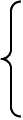
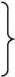
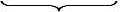

В.И. Ленин. ПОЛНОЕ СОБРАНИЕ СОЧИНЕНИЙ
СОДЕРЖАНИЕ тома 27
Пролетарии всех стран, соединяйтесь!
ЛЕНИН
ПОЛНОЕ
СОБРАНИЕ
СОЧИНЕНИЙ
27
ПЕЧАТАЕТСЯ
ПО ПОСТАНОВЛЕНИЮ
ЦЕНТРАЛЬНОГО КОМИТЕТА
КОММУНИСТИЧЕСКОЙ ПАРТИИ
СОВЕТСКОГО СОЮЗА
ИНСТИТУТ МАРКСИЗМА-ЛЕНИНИЗМА ПРИ ЦК КПСС
В. И. ЛЕНИН
ПОЛНОЕ СОБРАНИЕ СОЧИНЕНИЙ
ИЗДАНИЕ ПЯТОЕ
ИЗДАТЕЛЬСТВО
ПОЛИТИЧЕСКОЙ ЛИТЕРАТУРЫ
МОСКВА • 1969
ИНСТИТУТ МАРКСИЗМА-ЛЕНИНИЗМА ПРИ ЦК КПСС
В. И. ЛЕНИН
ТОМ
27
Август 1915 ~ июнь 1916
ИЗДАТЕЛЬСТВО
ПОЛИТИЧЕСКОЙ ЛИТЕРАТУРЫ
МОСКВА • 1969
3K2
1-1-2 69
VII
ПРЕДИСЛОВИЕ
В двадцать седьмой том Полного собрания сочинений В. И. Ленина входят произведения, написанные с августа 1915 по июнь 1916 года, в разгар империалистической войны 1914-1918 годов.
Эта война явилась продолжением иными, насильственными средствами политики империалистических государств; она была порождена империализмом и, в свою очередь, усилила и до крайности обострила все его противоречия. Интересы революционной борьбы рабочего класса требовали анализа экономической и политической сущности империализма; без этого невозможно было правильное руководство революционным движением, успешная борьба с идеологией империалистической реакции и с реформистской политикой соглашательства.
Исследование империализма находилось в центре теоретической работы Ленина в годы первой мировой войны. Еще задолго до войны Ленин отмечал в различных своих работах новые явления в развитии капитализма. В произведениях, написанных в 1915-1916 годах и напечатанных в Центральном Органе РСДРП - газете «Социал-Демократ», журнале «Коммунист» и органе Циммервальдской левой - журнале «Vorbote» («Предвестник»), вошедших в настоящий том, Ленин дает характеристику свойственных империализму явлений, освещает борьбу за рынки, колониальную политику, угнетение народов мира горсткой империалистических держав, обострение классовых противоречий, показывает созревание условий для революционного перехода к социализму.
Всестороннее исследование империализма Ленин дал в своем классическом произведении «Империализм, как высшая стадия капитализма», которое является результатом огромного и напряженного труда. Ленин изучил и обобщил большое количество материалов по самым различным вопросам экономики и политики империализма, критически переработал данные из сотен книг, статей, брошюр, статистических сборников, изданных в разных странах на многих языках. Подготовительные материалы к книге - «Тетради по империализму» составляют около 50 печатных листов и войдут в следующий, 28, том.
Труд Ленина «Империализм, как высшая стадия капитализма» занимает центральное место в настоящем томе. В этой работе Ленин подытожил развитие мирового капитализма за полвека, прошедшие после выхода в свет «Капитала» Маркса. Опираясь на открытые Марксом и Энгельсом законы возникновения, развития и упадка капитализма, Ленин впервые дал глубокий научный анализ экономической и политической сущности империализма. Ленинский труд является дальнейшим развитием марксистской теории капитализма, обогащает ее учением о его высшей и последней стадии - империализме. Обобщая новые явления в экономике мирового капитализма, Ленин показал неизбежность обострения при империализме всех противоречий, присущих капиталистическому обществу. Он характеризует империализм как паразитический, загнивающий, умирающий капитализм и вскрывает условия его гибели, неизбежность и необходимость замены капитализма новым, прогрессивным общественным строем - социализмом.
При империализме, экономическую сущность которого составляет господство монополий и финансового капитала, до крайности обостряется основное противоречие капиталистического общества - противоречие между общественным характером производства и частной формой присвоения.
Все более обостряется антагонизм между трудом и капиталом. Господство монополий, финансовой олигархии все более обнажает антинародный, паразитический
характер капитализма, усиливает гнет капитала и вместе с тем вызывает рост возмущения рабочего класса, угнетенных народов против капитализма. Ленин характеризует империализм как всемирную систему колониального угнетения и финансового удушения гигантского большинства населения земли горстью империалистических стран. Свержение капитализма, революционный переход к социализму становятся жизненной необходимостью. На основе научного анализа противоречий капитализма на его последней стадии Ленин пришел к выводу, что империализм есть канун социалистической революции. «Это, - писал Ленин в предисловии к французскому и немецкому изданиям своей книги в 1920 году, - подтвердилось с 1917 года в всемирном масштабе» (настоящий том, стр. 308).
Труд Ленина «Империализм, как высшая стадия капитализма» дает экономическое обоснование теории социалистической революции. Развивая и обосновывая гениальные положения, впервые сформулированные в августе 1915 года в статье «О лозунге Соединенных Штатов Европы» (см. Сочинения, 5 изд., том 26, стр. 351-355), Ленин доказал, что неравномерность экономического и политического развития капиталистических стран при империализме ведет к разновременности революций в различных странах. Он разработал учение о возможности победы социализма первоначально в одной, отдельно взятой, капиталистической стране. Великая сила и жизненность ленинской теории социалистической революции доказана историческим опытом Советского Союза и других социалистических стран.
В Программе КПСС, принятой XXII съездом партии, подчеркивается, что ленинский анализ и выводы об основных закономерностях капитализма на его последней стадии подтверждаются реальной действительностью современного капитализма. Новые явления в развитии империализма являются углублением свойственных ему противоречий, продолжением и развитием основных признаков империализма, указанных Лениным. Современный монополистический капитализм характеризуется усилением концентрации производства и
обращения в руках финансовой олигархии; крупнейшие монополии сосредоточивают подавляющую часть общественного производства; всем богатством капиталистического мира, созданным народным трудом, бесконтрольно распоряжается небольшая кучка магнатов капитала. Усиливается политическая реакция по всем линиям, которую Ленин считал важнейшим признаком империализма; монополистический капитал установил свою диктатуру над обществом. Усиливается паразитизм и загнивание капитализма, что особенно ярко проявляется в милитаризации экономики, в задержке развития производительных сил. Для современного империализма характерно усиление неравномерности и скачкообразности развития капиталистических стран, дальнейшее обострение борьбы за рынки сбыта, сферы приложения капитала, за источники сырья, за передел мира.
Жизнь полностью подтверждает ленинскую характеристику империализма как последней стадии капитализма. Глубокие и острые противоречия, подмывающие и разрушающие устои империализма, неотвратимо ведут к его ослаблению и гибели. После свержения капитализма в России, Китае и ряде других стран Европы и Азии, начала крушения колониальной системы капитализма империализм вступил в период заката, он уже бесповоротно утратил власть над большинством человечества. Главное направление исторического развития человечества определяет теперь мировая социалистическая система, одерживающая все новые успехи в соревновании с капитализмом.
Ленинский труд «Империализм, как высшая стадия капитализма», направленный против буржуазных и мелкобуржуазных идеологов, реформистов и ревизионистов, является боевым оружием в борьбе против современных «теорий» защитников империализма. Ленинская критика апологетов империализма помогает разоблачению и разгрому идеологии современных защитников капитала, которые изображают империализм как обновленный «народный капитализм», как бесклассовое общество, где капиталисты якобы стали тружениками, а рабочие - собственниками (совладельцами) предприятий, с кото-
рыми капиталисты делят прибыли. Реальная действительность полностью подтверждает ленинскую критику апологетической теории «демократизации» капитала путем распространения мелких акций. Ленин убедительно доказал, что приобретение мелких акций отдельными трудящимися не ослабляет, а усиливает господство крупного капитала; выгода от выпуска мелких акций идет заправилам капиталистических монополий, и восхваляемая реформистами «демократизация» владения акциями «на деле есть один из способов усиления мощи финансовой олигархии» (настоящий том, стр. 345).
Развитие современного капитализма доказывает правильность вывода Ленина о том, что империализм отнюдь не устраняет анархию производства и кризисы. Опровергая буржуазно-реформистские теории о превращении империализма в «организованный» и «плановый» капитализм, Ленин писал: «Устранение кризисов картелями есть сказка буржуазных экономистов, прикрашивающих капитализм во что бы то ни стало. Напротив, монополия, создающаяся в некоторых отраслях промышленности, усиливает и обостряет хаотичность, свойственную всему капиталистическому производству в целом» (стр. 324). Это всецело подтверждается жизнью.
Важное значение для борьбы с современными защитниками империализма имеет ленинская характеристика государственно-монополистического капитализма. Идеологи буржуазии, реформисты и ревизионисты изображают государственно-монополистический капитализм, который получает широкое развитие на стадии империализма, почти как социализм. В действительности государственно-монополистический капитализм не меняет природы империализма; он еще больше обостряет противоречия капитализма, углубляет пропасть между трудом и капиталом, между народом и монополиями.
Обобществление производства, происходящее в форме государственно-монополистического капитализма, само по себе не создает социалистического уклада. Ленин показал, что государственно-монополистический капитализм означает лишь подготовку материальных условий для революционного перехода к социализму, создание
аппарата общественного ведения хозяйства, учета и контроля за производством и распределением продуктов, который пролетариат может использовать после победы социалистической революции в строительстве социализма. Социализм, писал Ленин, ближайший шаг вперед от государственно-монополистического капитализма; для революционного марксизма это является доводом за близость, неотложность и осуществимость социалистической революции.
Многие произведения, вошедшие в настоящий том, посвящены анализу первой мировой войны, разоблачению ее империалистического характера. Ленин обосновывает и пропагандирует большевистские лозунги поражения своего империалистического правительства в войне, превращения империалистической войны в гражданскую войну за социализм.
Бедствия, которые война обрушила на плечи трудящихся, усиливали рост революционных настроений масс. Во всех воюющих странах происходило собирание сил рабочего класса, нарастало его возмущение. Рост революционного брожения в массах, протесты против войны, братание солдат в траншеях, стачки и демонстрации рабочих говорили о начале революционных массовых выступлений. Полевение масс явилось той основой, на которой все чаще и сильнее происходили выступления левой оппозиции в социалистических партиях против официального социал-шовинистского и центристского руководства. Более резким и ясным становилось размежевание внутри социалистических партий на правое, социал-шовинистское, крыло и левое, революционно-интернационалистское, крыло. «Во всем мире, - писал Ленин в статье «Раскол или гниение?», - фактически теперь две партии. Интернационала фактически сейчас уже два» (стр. 295).
Разработанные Лениным в начале первой мировой войны документы большевистской партии, давшие марксистскую оценку этой войны и обосновавшие тактику революционной социал-демократии, сыграли громадную роль в идейном сплочении интернационалистских элементов в международном рабочем движении. В произве-
дениях, вошедших в двадцать седьмой том Полного собрания сочинений, нашла отражение огромная неустанная работа Ленина по сплочению революционных элементов социалистических партий, его борьба за пролетарский интернационализм, за создание III, Коммунистического, Интернационала, пропаганда в международном рабочем движении революционно-марксистских принципов, революционной теории и тактики пролетарской партии.
В произведениях, вошедших в настоящий том, - письмо «В Интернациональную социалистическую комиссию (I. S. К.)», статьи «Первый шаг», «Революционные марксисты на международной социалистической конференции 5-8 сентября 1915 г.», дается оценка первой международной социалистической конференции в Циммервальде, подводятся ее итоги. Ленин характеризовал Циммервальдскую конференцию как первый шаг в развитии интернационального движения против войны.
Сплочение левых интернационалистов на принципах революционного марксизма представляло значительные трудности. Циммервальдская левая, организованная Лениным на конференции, не была однородной; только большевики во главе с Лениным занимали внутри Циммервальдской левой до конца последовательную революционную позицию. На конференции группа левых делегатов, сплотившаяся вокруг Ленина, выступала едино по всем вопросам; вокруг этой группы стало складываться движение интернационалистов во всех странах.
Документы, вошедшие в том, дают представление о громадной работе Ленина по сплочению левых на революционных позициях в период между первой, Циммервальдской, и второй, Кинтальской, международными социалистическими конференциями и на самих конференциях. В результате работы, проведенной Лениным и большевиками в период между конференциями, а также на совещании расширенной Интернациональной социалистической комиссии, проходившем 5-9 февраля 1916 года, левое крыло на Кинтальской конференции оказалось сильнее, чем на Циммервальдской, выступало более сплоченно. Хотя и Кинтальская конференция
не приняла основных положений большевизма по вопросам войны, мира и тактики пролетариата, тем не менее она способствовала дальнейшему выделению и сплочению интернационалистских элементов, из которых впоследствии в капиталистических странах возникали коммунистические партии.
В произведениях, вошедших в том, прежде всего в статье «Оппортунизм и крах II Интернационала» Ленин вскрывает сущность социал-шовинизма как законченного оппортунизма, показывает, что социал-шовинизм есть открытый и грубый «союз с буржуазией и генеральными штабами», и разоблачает политическое содержание его, состоящее в проповеди сотрудничества классов, отречении от социалистической революции и диктатуры пролетариата. Одновременно Ленин подвергает беспощадной критике центризм, который освящал и оправдывал измену социализму социал-шовинистами; оппортунизм центристов отличался от оппортунизма откровенных социал-шовинистов только оттенками в способе достижения одной цели. Центристская, прикрытая, каутскианская политика, указывает Ленин, во сто раз вреднее и опаснее для рабочего движения, чем откровенный оппортунизм.
В период разгула социал-шовинизма и измены марксизму со стороны оппортунистических партий II Интернационала Ленин ведет непримиримую борьбу в защиту революционной теории марксизма, против ее опошления и искажения. «Величайшее в мире освободительное движение угнетенного класса, - писал он в статье «Честный голос французского социалиста», - самого революционного в истории класса, невозможно без революционной теории. Ее нельзя выдумать, она вырастает из совокупности революционного опыта и революционной мысли всех стран света. И такая теория выросла со 2-ой половины XIX века. Она называется марксизмом. Нельзя быть социалистом, нельзя быть революционным социал-демократом, не участвуя но мере сил в разработке и применении этой теории, а в наши дни в беспощадной борьбе против уродования ее Плехановым, Каутским и К°» (стр. 11).
Одной из важнейших задач Ленин считал революционный выход из войны. На вопрос, что бы сделала партия пролетариата, если бы революция поставила ее у власти в теперешней войне, Ленин ответил: «мы предложили бы мир всем воюющим на условии освобождения колоний и всех зависимых, угнетенных и неполноправных народов» (стр. 50).
В «Предложении Центрального Комитета РСДРП второй социалистической конференции» и в статье «О «программе мира»» Ленин сформулировал главную и основную задачу в борьбе за прочный и демократический мир, которая состояла в разъяснении массам необходимости революционной борьбы, в расширении революционных массовых действий. Демократический мир не могла дать империалистическая буржуазия, его следовало искать и добиваться в социалистической революции пролетариата.
Огромное значение имеют указания Ленина о необходимости для пролетариата вести решительную борьбу за широкие демократические требования, сплачивая в этой борьбе народные массы. Ленин рассматривал борьбу за демократию как составную часть борьбы за социализм. Он считал в корне ошибочным мнение, будто борьба за демократические преобразования может отвлечь пролетариат от социалистической революции. Пролетариат, учил Ленин, не может подготовиться к победе над буржуазией, не ведя всесторонней, последовательной и революционной борьбы за демократию. Но формулировать и проводить демократические требования необходимо не реформистски, а революционно; не ограничиваться парламентскими выступлениями, словесными протестами, а втягивать в активное действие массы, расширять борьбу за демократические требования до прямого натиска пролетариата на буржуазию, т. е. до социалистической революции.
Эти положения Ленин обосновал в своих произведениях, посвященных национальному вопросу, который приобрел особую остроту в тот период. В 1915-1916 годах в международном социалистическом движении развернулась дискуссия о праве наций на самоопределение.
В тезисах «Социалистическая революция и право наций на самоопределение», которые были одобрены ЦК РСДРП и разосланы для обсуждения большевистским секциям за границей и левым социалистам стран Запада, Ленин разрабатывает программу большевиков по национально-колониальному вопросу в эпоху империализма и дает глубокое обоснование теории и тактики коммунистической партии в национальном вопросе. Национально-колониальный вопрос рассматривается Лениным как составная часть вопроса о социалистической революции, о ее резервах и союзниках в борьбе против империализма.
Конкретизируя задачи пролетариата и его марксистских партий в разных странах, Ленин выделяет три главных типа стран в отношении к самоопределению наций в эпоху империализма. Первая группа - высокоразвитые капиталистические страны Западной Европы и США, каждая из которых угнетает другие нации в колониях и внутри страны. Задачей пролетариата этих стран является отстаивание права на свободу отделения как для колоний, так и для угнетенных наций внутри страны, борьба с великодержавным шовинизмом своей нации. Вторая группа стран - восток Европы, Австрия, Балканы и Россия, где в XX веке особенно развились национальные движения и обострилась национальная борьба. «Задачи пролетариата этих стран, как в деле довершения их буржуазно-демократического преобразования, так и в деле помощи социалистической революции других стран, не могут быть выполнены без отстаивания права наций на самоопределение» (стр. 260-261). Третья группа - полуколониальные страны (Китай, Персия, Турция), все колонии. Социалисты должны требовать немедленного и безусловного освобождения колоний и зависимых стран, всемерно поддерживать национально-освободительные движения, помогать революционной войне порабощенных народов против угнетающих их империалистических держав.
Ленинские указания приобретают особую актуальность и значение в современных условиях, когда национально-освободительные революции сметают коло-
ниальную систему империализма, и одной из основных задач является борьба за полную ликвидацию колониализма во всех его формах и проявлениях. Со всей силой звучат в наши дни ленинские слова, предостерегающие народы слабых стран об опасности потери самостоятельности в условиях империализма.
В тезисах «Социалистическая революция и право наций на самоопределение», а также в статье «Революционный пролетариат и право наций на самоопределение» обосновывается важное положение о необходимости различать конкретные задачи революционных социалистов угнетающих и угнетенных наций. Социалисты угнетающих наций должны последовательно бороться за право самоопределения всех наций, требовать свободы политического отделения всех колоний и наций и, в первую очередь, угнетенных народов своей страны. С другой стороны, социалисты угнетенных наций должны отстаивать и проводить единство и слияние рабочих угнетенной нации с рабочими угнетающей нации. Ленин предвидел, что только социализм обеспечит сближение наций на истинно демократической, истинно интернационалистской базе, приведет к союзу и дружбе свободных и равноправных народов. Определяя задачи российского пролетариата в национальном вопросе, Ленин указывал, что рабочий класс может идти во главе народа на победоносную демократическую, а затем и на социалистическую революцию только с требованием немедленной, полной и безоговорочной свободы самоопределения наций, свободы отделения и самостоятельного государственного существования для всех угнетенных наций царской России.
В ряде работ, вошедших в настоящий том, содержится характеристика революционного кризиса в России, который развертывался в новой международной обстановке, когда мировая война охватила главные капиталистические страны. Теперь, писал Ленин, буржуазно-демократическая революция в России уже не только пролог, а неразрывная составная часть социалистической революции на Западе. Важное значение в этих условиях приобретала оценка соотношения классовых
сил в стране, выяснение позиции разных классов и их партий. Это, подчеркивал Ленин, первая задача марксиста перед лицом надвигающейся революции.
Определяя конкретные задачи российского пролетариата и его марксистской партии в условиях назревания революции, Ленин указывал, что лозунгами партии по-прежнему являются низвержение монархии, демократическая республика, конфискация помещичьей земли, 8-часовой рабочий день. Социальным содержанием ближайшей революции в России, писал Ленин в статье «Несколько тезисов», явится революционно-демократическая диктатура пролетариата и крестьянства.
Победа буржуазно-демократической революции создала бы условия для развертывания социалистической революции. Ленин вскрывает порочность теории перманентной революции Троцкого, отрицавшего революционную роль крестьянства, необходимость поднимать крестьян на революцию. «Пролетариат, - писал Ленин в статье «О двух линиях революции», - борется и будет беззаветно бороться за завоевание власти, за республику, за конфискацию земель, то есть за привлечение крестьянства, за исчерпание его революционных сил, за участие «непролетарских народных масс» в освобождении буржуазной России от военно-феодального «империализма» (= царизма). И этим освобождением буржуазной России от царизма, от земель и власти помещиков пролетариат воспользуется немедленно не для помощи зажиточным крестьянам в их борьбе с сельским рабочим, а - для совершения социалистической революции в союзе с пролетариями Европы» (стр. 81).
Большое внимание Ленин уделяет развертыванию партийной работы в России, налаживанию регулярных связей с организациями партии, восстановлению деятельности Бюро ЦК в России. Получив из России листовки Петербургского комитета РСДРП, изданные за время войны, Ленин тщательно изучает поставленные в них вопросы. В статье «Несколько тезисов», опубликованной в газете «Социал-Демократ», Ленин намечает основные задачи партийной работы в России. Эта статья сыграла большую роль в развертывании
практической деятельности большевиков в России, в идейной подготовке второй русской революции.
В том входит написанная в 1915 году работа «Новые данные о законах развития капитализма в земледелии. Выпуск I. Капитализм и земледелие в Соединенных Штатах Америки». Ленин подверг критике антимарксистскую теорию некапиталистической эволюции земледелия в буржуазном обществе. Буржуазные экономисты, реформисты и ревизионисты, извращая действительность, изображали фермерское хозяйство США как образец «некапиталистической эволюции» земледелия, где «мелкое трудовое земледелие» якобы вытесняет крупное производство, большинство ферм является «трудовыми хозяйствами» и т. п.
Опираясь на данные американской статистики, проанализировав обширный фактический материал, Ленин доказал, что сельское хозяйство США, вопреки утверждениям буржуазных экономистов, реформистов, развивается по капиталистическому пути. Об этом свидетельствовали данные о повсеместном употреблении наемного труда, уменьшении числа самостоятельных хозяев, вымывании средних групп и усилении крайних в общей совокупности ферм, рост крупных капиталистических хозяйств и вытеснение мелких.
Ленин показал в своей книге усиление концентрации производства в сельском хозяйстве, экспроприацию мелких земледельцев, бедственное положение мелких фермеров и арендаторов. Одним из показателей разорения мелких фермеров США являлся рост числа заложенных ферм, что означало фактический переход власти над ними в руки финансового капитала. Большинство фермеров, попадая в лапы финансового капитала, еще более разоряется. «Кто держит в руках банки, тот непосредственно держит в руках треть всех ферм Америки, а посредственно господствует над всей массой их» (стр. 224). Особенно бедственным является положение негров, которые подвергаются бесстыдному угнетению. «Замкнутость, заскорузлость, отсутствие свежего воздуха, какая-то тюрьма для «освобожденных» негров - вот что такое американский юг» (стр. 144).
Со времени ленинского анализа капиталистического сельского хозяйства США минули десятилетия; за эти годы там произошли значительные изменения. Однако развитие капиталистического сельского хозяйства США и других стран полностью подтверждает правильность ленинского анализа, доказывает непреложность объективных законов развития капитализма в сельском хозяйстве. В капиталистическом сельском хозяйстве так же, как и в промышленности, монополии заняли господствующие позиции; миллионы фермеров и мелких крестьян разоряются и сгоняются с земли; крестьянство стонет под бременем растущих налогов и задолженности.
Ленинская критика буржуазно-реформистских и ревизионистских взглядов по аграрному вопросу имеет актуальное значение и в настоящее время, как блестящий образец непримиримой борьбы против буржуазной апологетики, реформизма и ревизионизма. Учение Ленина по аграрному вопросу вооружает коммунистические и рабочие партии умением правильно решать важнейший вопрос об отношении рабочего класса к крестьянству, как союзнику в борьбе против капитализма и колониализма, за демократию и социализм.
В том включен публикуемый впервые документ - «Проект постановления ЦК РСДРП о прекращении издания журнала «Коммунист»».
В раздел «Подготовительные материалы» включено 12 документов. Среди них: «Тезисы доклада на совещании левых социал-демократов», план речи на Циммервальдской конференции, добавления к заявлению Циммервальдской левой группы. Эти документы, как и «Поправки и дополнения к обращению «Ко всем примыкающим партиям и группам», принятому совещанием расширенной Интернациональной социалистической комиссии», публикуются впервые в Сочинениях. В этот раздел входят материалы к реферату «Империализм и право наций на самоопределение», а также публикуется впервые план реферата «Два Интернационала».
Институт марксизма-ленинизма при ЦК КПСС
ВОЗЗВАНИЕ О ВОЙНЕ
Товарищи рабочие!
Вот уже больше года тянется европейская война. Судя по всему, она протянется еще очень долго, ибо если Германия наилучше подготовлена и сейчас всех сильнее, то зато четверное согласие (Россия, Англия, Франция и Италия) имеет больше людей и денег, а кроме того свободно получает военные припасы из самой богатой страны мира - Соединенных Штатов Америки.
Из-за чего же идет эта война, которая несет человечеству невиданные бедствия и мучения? Правительство и буржуазия каждой воюющей страны выкидывает миллионы рублей на книги и газеты, сваливая вину на противника, возбуждая в народе бешеную ненависть к неприятелю, не останавливаясь ни перед какой ложью, чтобы представить себя в виде «обороняющейся» стороны, которая подверглась несправедливому нападению. На самом же деле это есть война между двумя группами разбойнических великих держав из-за дележа колоний, из-за порабощения других наций, из-за выгод и привилегий на мировом рынке. Это - самая реакционная война, война современных рабовладельцев за сохранение и укрепление капиталистического рабства. Англия и Франция лгут, уверяя, что ведут войну за свободу Бельгии. На деле они давно готовили войну
и ведут ее ради ограбления Германии, отнятия ее колоний, они заключили договор с Италией и Россией о грабеже и разделе Турции и Австрии. Царская монархия в России ведет грабительскую войну, стремясь к захвату Галиции, к отнятию земель у Турции, к порабощению Персии, Монголии и т. д. Германия ведет войну за грабеж колоний Англии, Бельгии, Франции. Победит ли Германия, победит ли Россия, будет ли «ничья» - во всяком случае война принесет человечеству новое угнетение сотен и сотен миллионов населения в колониях, Персии, Турции, Китае, новое порабощение наций, новые цепи для рабочего класса всех стран.
Каковы задачи рабочего класса в отношении к этой войне? На этот вопрос уже дан был ответ единогласно принятой социалистами всего мира резолюцией Базельского международного социалистического конгресса 1912 года. Эта резолюция была принята в предвидении именно такой войны, которая в 1914 г. наступила. Эта резолюция говорит, что война реакционна, что она готовится в интересах «прибыли капиталистов», что рабочие считают «преступлением стрелять друг в друга», что война поведет к «пролетарской революции», что образцом тактики для рабочих является Парижская Коммуна 1871 г. и октябрь - декабрь 1905 года в России, т. е. революция.
Все сознательные рабочие России стоят на стороне Российской социал-демократической рабочей фракции в Государственной думе (Петровского, Бадаева, Муранова, Самойлова и Шагова), которые сосланы царизмом в Сибирь за революционную пропаганду против войны и против правительства 1. Только в такой революционной пропаганде и революционной деятельности, ведущей к возмущению масс, лежит спасение человечества от ужасов современной войны и грядущих войн. Только революционное свержение буржуазных правительств, и в первую голову самого реакционного, дикого и варварского царского правительства, открывает дорогу к социализму и к миру между народами.
И лгут те, - сознательные и бессознательные слуги буржуазии, - которые хотят уверить народ, что революционное свержение царской монархии может привести только к победам и усилению германской реакционной монархии и германской буржуазии. Хотя главари немецких социалистов, как и многие самые видные социалисты России, перешли на сторону «своей» буржуазии и помогают обманывать народ сказками об «оборонительной» войне, но в рабочих массах Германии растет и крепнет протест и возмущение против своего правительства. Социалисты Германии, не перешедшие на сторону буржуазии, объявили печатно, что считают «геройской» тактику Российской с.-д. рабочей фракции. В Германии издаются нелегально воззвания против войны и против правительства. Десятки и сотни лучших социалистов в Германии, в том числе известная представительница женского рабочего движения Клара Цеткина, брошены немецким правительством в тюрьмы за пропаганду в революционном духе. Во всех без исключения воюющих странах зреет возмущение рабочих масс, и пример революционной деятельности с.-д. России, а тем более всякий успех революции в России, неминуемо двинет вперед великое дело социализма, победы пролетариата над эксплуататорской и кровавой буржуазией.
Война наполняет карманы капиталистов, которым течет море золота из казны великих держав. Война вызывает слепое озлобление против неприятеля, и буржуазия всеми силами направляет в эту сторону недовольство народа, отвлекая его внимание от главного врага: правительства и командующих классов своей страны. Но война, неся бесконечные бедствия и ужасы трудящимся массам, просвещает и закаляет лучших представителей рабочего класса. Если погибать, погибнем в борьбе за свое дело, за дело рабочих, за социалистическую революцию, а не за интересы капиталистов, помещиков и царей, - вот что видит и чувствует всякий сознательный рабочий. И как ни трудна теперь революционная с.-д, работа, она
возможна, она идет вперед во всем мире, в ней одной спасение!
Долой царскую монархию, втянувшую Россию в преступную войну и угнетающую народы! Да здравствует всемирное братство рабочих и международная революция пролетариата!
|
Написано в августе 1915 г.
Впервые напечатано 21 января
1928 г. в газете «Правда» № 18
| |
Печатается по рукописи
|
ЧЕСТНЫЙ ГОЛОС ФРАНЦУЗСКОГО СОЦИАЛИСТА 2
Во французской Швейцарии, где франкофильский шовинизм бешенствует немногим разве слабее, чем во Франции, раздался голос честного социалиста. В наше подлое время это - целое событие. И нам тем более необходимо внимательнее прислушаться к этому голосу, что в данном случае мы имеем дело с социалистом типично французского - вернее: романского, ибо итальянцы, например, тоже таковы - темперамента и умонастроения.
Речь идет о маленькой брошюрке Павла Голэя, редактора небольшой социалистической газеты в Лозанне. Автор прочел в этом городе 11 марта 1915 г. реферат на тему «Социализм умирающий и социализм, который должен возродиться» и переиздал его затем отдельно *.
«Первого августа 1914 года война вспыхнула. В течение недель, перед этой отныне знаменитой датой и после нее, миллионы людей ждали». Так начинает автор. Миллионы ждали, не поведут ли резолюции и заявления вождей социализма «к могучему восстанию, которое своим вихрем сметет преступные правительства». Но ожидания миллионов были обмануты. Мы пытались, говорит Голэй, «по-товарищески» оправдать социалистов «молниеносной неожиданностью войны», неосведомленностью, но эти оправдания нас не удовлетворяли.
* Paul Golay. «Le socialisme qui meurt et le socialisme qui doit renaitre». Lausanne, 1915, 22 страницы, цена 15 сантимов. En vente a l'Administration du «Grutleen», Maison du Peuple, Lausanne.
«Мы чувствовали себя не по себе, как будто бы наша совесть была погружена в грязную воду двусмысленности и лжи». Читатель может видеть уже отсюда, что Голэй - искренен. Качество, по нашим временам, почти необыкновенное.
Голэй вспоминает «революционную традицию» пролетариата. Вполне сознавая, что «для каждой ситуации необходимо подходящее действие», он напоминает: «для исключительных ситуаций нужны исключительные меры. Сильные болезни - сильные лекарства». Он напоминает «решения конгрессов», «которые прямо обращаются к массам и побуждают их к революционным и повстанческим действиям». Следуют цитаты соответственных мест Штутгартской и Базельской резолюций 3. И автор подчеркивает, что «эти различные резолюции не содержат никакого рассуждения об оборонительной и наступательной войне, а следовательно, не предлагают никакой особой, националистской, тактики в отмену общепризнанных основных принципов».
Дочитавши до этого места, читатель убеждается, что Голэй - не только искренний, но и убежденный, честный социалист. Качество видных деятелей II Интернационала прямо уже исключительное!
«... Пролетариат поздравляли военные начальники, а буржуазная пресса восхваляла, в теплых выражениях, воскрешение того, что она называет «национальной душой». Это воскрешение стоит нам трех миллионов трупов.
И однако - никогда рабочая организация не достигала такого большого числа платящих членов, никогда не было такого изобилия парламентариев, такой превосходной организации печати. Никогда не было также более гнусного дела, против которого следовало бы восстать.
В столь трагических обстоятельствах, когда дело идет о существовании миллионов людей, все революционные действия не только допустимы, они - законны. Они более чем законны, они - священны. Повелительный долг пролетариата требовал попытать невозможное, чтобы спасти наше поколение от событий, которые заливают кровью Европу.
Не было ни энергичного поступка, ни попыток возмущения, пи действий, ведущих к восстанию...
... Наши противники кричат о крахе социализма. Они чересчур торопятся. И, однако, кто осмелился бы утверждать, что они во всех отношениях неправы? Что умирает в данный момент,
это - не социализм вообще, а одна разновидность социализма, социализм сладенький, без духа идеализма, без страсти, с манерами чиновника и с брюшком серьезного отца семейства, социализм без смелости, без безумия, любитель статистики, ушедший по уши в полюбовные соглашения с капитализмом, социализм, занятый одними только реформами, продавший за чечевичную похлебку свое право первородства, социализм, который представляет из себя для буржуазии душителя народного нетерпения, своего рода автоматический тормоз пролетарских смелых действий.
Вот этот-то социализм, грозивший заразить весь Интернационал, ответствен до известной степени за то бессилие, за ту импотентность, которые ставят нам в упрек».
В других местах брошюры Голэй говорит прямо о «реформистском социализме» и об «оппортунизме», как об извращении социализма.
Говоря об этом извращении, признавая «общую ответственность» пролетариата всех воюющих стран, подчеркивая, что «эта ответственность падает на голову вождей, которым масса оказала доверие и от которых она ждала лозунга», - Голэй вполне правильно берет за образец именно немецкий социализм, «лучше всего организованный, больше всего оформленный, больше всего напичканный доктринами», и показывает «его численную силу, его революционную слабость».
«Одушевленная революционным духом, немецкая социал-демократия могла бы противопоставить милитаристским предприятиям достаточно определенное, достаточно упорное сопротивление, чтобы увлечь за собой, на этот единственный путь спасения, пролетариат других стран центральной Европы.
... Немецкий социализм имел большое влияние в Интернационале. Он мог сделать больше всех. От него ждали наибольшего усилия. Но число есть ничто, если личная энергия парализована слишком суровой дисциплиной или если «вожаки» употребляют свое влияние для получения наименьшего усилия». (Насколько правильна вторая часть фразы, настолько неверна первая: дисциплина вещь прекрасная и необходимая, - например, дисциплина партии, исключающей оппортунистов и противников революционного действия.) «Немецкий пролетариат, благодаря своим ответственным вождям, послушался голоса военной камарильи... другие отделы Интернационала испугались и поступили точно так же; во Франции двое социалистов сочли необходимым участвовать в буржуазном правительстве! И, таким образом, несколько месяцев спустя после торжественного заявления на конгрессе, что социалисты считают преступлением стрелять
друг в друга, миллионы рабочих вступили в войско и принялись совершать это преступление с такой настойчивостью, с таким увлечением, что капиталистическая буржуазия и правительства неоднократно выражали им свою признательность».
Но Голэй не ограничивается тем, что он беспощадно клеймит «социализм умирающий». Нет, он обнаруживает полное понимание того, чем порождено это умирание и какой социализм должен прийти на смену умирающему. «Рабочие массы каждой страны испытывают, в известной мере, влияние идей, распространенных в буржуазных кругах». «Когда Бернштейн под именем ревизионизма формулировал своего рода демократический реформизм», Каутский его «разгромил при помощи подходящих фактов». «Но, когда приличия были соблюдены, партия продолжала по-прежнему свою «реальную политику». Социал-демократическая партия стала тем, что она есть в настоящее время. Организация превосходная. Тело могучее, но душа из него ушла». Не только германская социал-демократия, но и все отделы Интернационала обнаруживают те же тенденции. «Растущее число чиновников» порождает определенные последствия; внимание устремляется только на правильность взносов; на стачки смотрят, «как на манифестации, имеющие целью добиться лучших условий соглашения» с капиталистами. Привыкают связывать интересы рабочих с интересами капиталистов, «подчинять судьбу рабочего судьбе самого капитализма», «желать усиленного развития «своей» «национальной» промышленности в ущерб иностранной».
Р. Шмидт (Schmiedt), депутат рейхстага, писал в одной статье, что регулирование условий труда профессиональными союзами выгодно и капиталистам, ибо оно «вносит порядок и устойчивость в экономическую жизнь», «облегчает расчеты капиталистов и противодействует нечестной конкуренции».
«Итак, - восклицает Голэй, цитируя эти слова, - профессиональное движение должно считать честью для себя, что оно делает более устойчивыми прибыли капиталистов! Цель социализма состоит, должно быть, в том, чтобы в рамках капиталистического общества требовать максимума выгод, совместимых с существованием самого капиталистического режима? Если
так, то перед нами - отречение от всех принципов. Пролетариат стремится не к укреплению капиталистического строя, не к получению минимальных условий в пользу наемного труда, а к устранению строя частной собственности и к уничтожению системы наемного труда.
... Секретари больших организаций становятся важными персонами. А в политическом движении депутаты, литераторы, ученые, адвокаты, все, кто приносит, вместе с своей наукой, известное личное честолюбие, пользуются таким влиянием, которое представляет иногда прямо опасность.
Могущественная организация профессиональных союзов и солидность их касс развила у их членов цеховой дух. Одна из отрицательных сторон профессионального движения, по существу своему реформистского, состоит в том, что оно улучшает положение наемных рабочих по отдельным слоям или прослойкам, ставя одну из них выше другой. Это разрушает основное единство и порождает у наилучше поставленных дух боязливости, заставляющий их иногда опасаться «движения», могущего быть роковым для их положения, для их кассы, для их актива. Таким образом создается своего рода разделение между различными разрядами пролетариата, - разрядами, искусственно создаваемыми самим профессиональным движением».
Это не довод, конечно, против сильных организаций - говорит автор, предвидя, должно быть, придирки известного рода «критиков». Это доказывает лишь необходимость «души» в организациях, «энтузиазма».
«Каковы существенные черты, которыми должен отличаться социализм завтрашнего дня? Он будет интернациональным, непримиримым и повстанческим».
«Непримиримость есть сила», - справедливо говорит Голэй, приглашая читателя бросить взгляд на «историю доктрин». - «Когда они оказывались влиятельными? Тогда ли, когда они бывали приручены властями, или тогда, когда они бывали непримиримыми? Когда христианство потеряло свою ценность? Не тогда ли, когда Константин обещал ему доходы и предложил ему, вместо преследований и казней, обшитое галунами платье придворных лакеев?..
Один французский философ сказал: мертвые идеи суть те, которые являются в изящном одеянии, без терпкости, без смелости. Они мертвы, потому что они входят в всеобщее обращение и составляют часть обычного интеллектуального багажа великой армии
филистеров. Сильные идеи - те, которые толкают и вызывают скандал, возбуждают негодование, гнев, раздражение у одних, энтузиазм у других». Напомнить эту истину автор считает необходимым современным социалистам, среди которых очень часто отсутствует всякая «горячность убеждения: ни во что не верят, ни в реформы, которые запаздывают, ни в революцию, которая все не приходит».
Непримиримость, готовность к восстанию «вовсе не ведет к мечтательности, а, напротив, ведет к действиям. Социалист не будет пренебрегать ни одной из форм деятельности. Он сумеет найти новые, сообразно потребностям и условиям момента... Он требует немедленных реформ, он добивается их не пререканиями с противником, он вырывает их, как уступку у буржуазии, которой внушает страх полная энтузиазма и смелости масса».
После бесстыднейшего опошления марксизма и опозорения социализма Плехановым, Каутским и К° поистине отдыхаешь душой на брошюре Голэя. У него приходится отметить лишь два следующие недостатка.
Во-первых, Голэй разделяет с большинством романских социалистов, не исключая и теперешних гедистов, несколько невнимательное отношение к «доктрине», т. е. к теории социализма. Он чувствует к марксизму известное предубеждение, которое может быть объяснено, но не оправдано, современным господством злейшей карикатуры на марксизм у Каутского, в «Neue Zeit» 4 и у немцев вообще. Кто, подобно Голэю, сознал необходимость смерти социализма реформистского и возрождения социализма революционного, «повстанческого», т. е. понимающего необходимость восстания, проповедующего его, способного серьезно готовиться к нему и готовить его, тот на деле в тысячу раз ближе к марксизму, чем те, наизусть знающие «тексты» господа, которые занимаются ныне (в «Neue Zeit», например) оправданием социал-шовинизма в какой бы то ни было форме - вплоть до той формы, что сейчас надо «мириться» с шовинистским ЦК («форштандом») и не «вспоминать прошлого».
Но, как ни понятно, «по человечеству», пренебрежение марксизмом у Голэя, как ни много вины снимается здесь с него и падает на умирающее и умершее направление французских марксистов (гедистов), а все же вина есть. Величайшее в мире освободительное движение угнетенного класса, самого революционного в истории класса, невозможно без революционной теории. Ее нельзя выдумать, она вырастает из совокупности революционного опыта и революционной мысли всех стран света. И такая теория выросла со 2-ой половины XIX века. Она называется марксизмом. Нельзя быть социалистом, нельзя быть революционным социал-демократом, не участвуя по мере сил в разработке и применении этой теории, а в наши дни в беспощадной борьбе против уродования ее Плехановым, Каутским и К°.
Из невнимания к теории проистекает у Голэя ряд неверных или непродуманных выпадов, например, против централизма или дисциплины вообще, против «исторического материализма», который будто бы недостаточно «идеалистичен» и т. п. Отсюда же поразительная недоговоренность в вопросе о лозунгах. Например, требование, чтобы социализм стал «повстанческим», полно глубочайшего содержания и представляет из себя единственно правильную мысль, вне которой все фразы об интернационализме и революционности, о марксизме - сплошное недомыслие, а еще чаще лицемерие. Но эту идею, идею гражданской войны, надо было бы развить, сделать из нее центральный пункт тактики, а Голэй ограничился тем, что высказал ее. Это очень много «по нынешним временам», но это недостаточно с точки зрения запросов революционной борьбы пролетариата. Например, Голэй узко ставит вопрос об «ответе» на войну революцией, если можно так выразиться. Он не учитывает, что, если на войну не сумели ответить революцией, то сама война стала учить и учит массы революции, создавая революционную ситуацию, углубляя и расширяя ее.
Второй недостаток у Голэя иллюстрируется всего нагляднее следующим рассуждением в его брошюре:
«Мы не порицаем никого. Интернационал, чтобы возродиться, нуждается в том, чтобы братский дух одушевлял все отделы его; но приходится заявить, что перед лицом великой задачи, которую возложила на него капиталистическая буржуазия в июле и августе 1914 г., реформистский, централизаторский (?) и иерархический социализм явил жалкое зрелище».
«Мы не порицаем никого»... В этом состоит ваша ошибка, товарищ Голэй! Вы сами признали, что «социализм умирающий» связан с буржуазными идеями (значит, его питает и поддерживает буржуазия), с определенным идейным течением в социализме («реформизм»), с интересами и особым положением определенных слоев (парламентарии, чиновники, интеллигенция, некоторые наилучше поставленные слои или группки рабочих) и т. д. Из этого вытекает с неизбежностью вывод, которого вы не делаете. Физические лица «умирают» так называемой естественной смертью, но идейно-политические течения так умирать не могут. Как буржуазия не умрет, пока ее не свергнут, так течение, питаемое и поддерживаемое буржуазией, выражающее интересы вступившей в союз с буржуазией группки интеллигентов и аристократии рабочего класса, не умрет, если его не «убить», т. е. не свергнуть, не лишить всякого влияния на социалистический пролетариат. Это течение сильно именно своими связями с буржуазией, оно стало благодаря объективным условиям «мирной» эпохи 1871-1914 годов своего рода командующим, паразитическим слоем в рабочем движении.
Тут обязательно не только «порицать», но бить в набат, разоблачать беспощадно, свергать, «снимать с постов» этот паразитический слой, разрушать его «единство» с рабочим движением, ибо такое «единство» означает на деле единство пролетариата с национальной буржуазией и раскол интернационального пролетариата, единство лакеев и раскол революционеров.
«Непримиримость есть сила», - справедливо говорит Голэй, требуя, чтобы «социализм, который должен возродиться», был непримиримым. Но не все ли равно для буржуазии, будет ли пролетариат примиренчествовать прямо с ней или косвенно через посредство ее сторон-
ников, защитников, агентов внутри рабочего движения, т. е. оппортунистов? Последнее даже выгоднее для буржуазии, ибо обеспечивает ей более прочное влияние на рабочих! Голэй тысячу раз прав, что есть социализм умирающий и социализм, который должен возродиться, но это умирание и это возрождение представляет из себя именно беспощадную борьбу с течением оппортунизма, не только идейную борьбу, но и удаление из рабочих партий этого уродливого нароста, исключение из организаций определенных представителей этой, чужой пролетариату, тактики, полный разрыв с ними. Они не умрут ни физически, ни политически, но рабочие порвут с ними, столкнут их в яму прислужников буржуазии и на примере их гниения будут воспитывать новое поколение, вернее: новые армии пролетариата, способные на восстание.
«Коммунист» № 1-2, 1915 г.
Подпись: Н. Ленин
| |
Печатается по тексту журнала «Коммунист»
|
ИМПЕРИАЛИЗМ И СОЦИАЛИЗМ В ИТАЛИИ
(ЗАМЕТКА)
Для освещения тех вопросов, которые поставила теперешняя империалистская война перед социализмом, небесполезно бросить взгляд на различные европейские страны, чтобы научиться отделять национальные видоизменения и частности общей картины от коренного и существенного. Со стороны, говорят, виднее. Поэтому, чем меньше сходство Италии с Россией, тем интереснее в некоторых отношениях сравнить империализм и социализм в обеих странах.
В настоящей заметке мы намерены лишь отметить материал, который дают по этому вопросу вышедшие после войны сочинения буржуазного профессора Роберта Михельса: «Итальянский империализм» и социалиста Т. Барбони: «Интернационализм или классовый национализм? (Итальянский пролетариат и европейская война)» *. Болтливый Михельс остался столь же поверхностным, как и в других своих сочинениях, едва коснувшись экономической стороны империализма, но в его книге собран ценный материал о происхождении итальянского империализма и о том переходе, который составляет сущность современной эпохи и который особенно наглядно выступает в Италии, именно: переходе от эпохи войн национально-освободительных
* Roberto Michels. «L'imperialismo italiano», Milano, 1914. - T. Barboni. «Intemazionalismo о Nazionalismo di Classe? (il proletariate) d'Italia e la guerra europea)». Edite dall'autore a Campione d'Intelvi (provincia di Como) 1915.
к эпохе войн империалистски-грабительских и реакционных. Италия революционно-демократическая, т. е. революционно-буржуазная, свергавшая иго Австрии, Италия времен Гарибальди, превращается окончательно на наших глазах в Италию, угнетающую другие народы, грабящую Турцию и Австрию, в Италию грубой, отвратительно реакционной, грязной буржуазии, у которой текут слюнки от удовольствия, что и ее допустили к дележу добычи. Михельс, как и всякий порядочный профессор, считает, разумеется, свое услужничество перед буржуазией «научным объективизмом» и называет этот дележ добычи «дележом той части мира, которая еще осталась в руках слабых народов» (стр. 179). Пренебрежительно отвергая, как «утопическую», точку зрения тех социалистов, которые враждебны всякой колониальной политике, Михельс повторяет рассуждения людей, считающих, что Италия «должна была бы быть второй колониальной державой», уступая первенство лишь Англии, по густоте населения и силе эмиграционного движения. А что в Италии 40% населения безграмотны, что в ней доныне бывают холерные бунты и пр. и т. п., то этот аргумент опровергается ссылкой на Англию: разве она не была страной невероятного разорения, принижения, вымирания голодной смертью рабочих масс, алкоголизма и чудовищной нищеты и грязи в бедных кварталах городов в первой половине XIX века, когда английская буржуазия так успешно закладывала основы своего теперешнего колониального могущества? И надо сказать, что с буржуазной точки зрения это рассуждение непререкаемо. Колониальная политика и империализм - вовсе не болезненные, исцелимые, уклонения капитализма (как думают филистеры и Каутский среди них), а неизбежное следствие самых основ капитализма: конкуренция между отдельными предприятиями ставит вопрос только так - разориться или разорить других; конкуренция между отдельными странами ставит вопрос только так - остаться на девятом месте и вечно рисковать судьбой Бельгии или разорять и покорять другие страны, проталкивая себе местечко среди «великих» держав.
Итальянский империализм прозвали «империализмом бедняков» (l'imperialismo della povera gente), имея в виду бедность Италии и отчаянную нищету массы итальянских эмигрантов. Итальянский шовинист Артур Лабриола, который отличается от своего бывшего противника, Г. Плеханова, только тем, что немножко раньше него обнаружил свой социал-шовинизм и пришел к этому социал-шовинизму через мелкобуржуазный полуанархизм, а не через мелкобуржуазный оппортунизм, этот Артур Лабриола писал в своей книжке о триполитанской войне (в 1912 году):
«... Ясно, что мы боремся не только против турок,.. но и против интриг, угроз, денег и войск плутократической Европы, которая не может потерпеть, чтобы маленькие нации дерзнули совершить хоть один жест, сказать хоть одно слово, компрометирующее железную гегемонию ее» (стр. 92). А вождь итальянских националистов, Коррадини, заявлял: «Как социализм был методом освобождения пролетариата от буржуазии, так национализм будет для нас, итальянцев, методом освобождения от французов, немцев, англичан, американцев севера и юга, которые по отношению к нам являются буржуазией».
Всякая страна, которая имеет больше «нашего» колоний, капиталов, войска, отнимает у «нас» известные привилегии, известную прибыль или сверхприбыль. Как среди отдельных капиталистов получает сверхприбыль тот, кто имеет машины лучше среднего или обладает известными монополиями, так и среди стран получает сверхприбыль та, которая экономически поставлена лучше других. Дело буржуазии - бороться за привилегии и преимущества для своего национального капитала и надувать народ или простонародье (при помощи Лабриола и Плеханова), выдавая империалистскую борьбу ради «права» грабить других за национально-освободительную войну.
До триполитанской войны Италия не грабила - по крайней мере в больших размерах - других народов. Разве это не нестерпимая обида для национальной гордости? Итальянцы - в угнетении и в унижении
перед другими нациями. Итальянская эмиграция составляла около 100 000 человек в год в 70-х годах прошлого века, а теперь достигает от 1/2 до 1 миллиона, и все это нищие, которых гонит из своей страны прямо голод в самом буквальном значении слова, все это поставщики рабочей силы в наихудше оплачиваемых отраслях промышленности, вся эта масса населяет самые тесные, бедные и грязные кварталы американских и европейских городов. Число итальянцев, живущих за границей, с 1 миллиона в 1881 году поднялось до 5 1/2 миллионов в 1910 году, причем громадная масса приходится на богатые и «великие» страны, по отношению к которым итальянцы являются самой грубой и «черной», нищей и бесправной рабочей массой. Вот главные страны, потребляющие дешевый итальянский труд: Франция - 400 тысяч итальянцев в 1910 г. (240 тысяч в 1881 г.); Швейцария - 135 тысяч (41) - (в скобках число тысяч в 1881 г.); Австрия - 80 тысяч (40); Германия - 180 тысяч (7); Соединенные Штаты - 1779 тысяч (170); Бразилия - 1500 тысяч (82); Аргентина - 1000 (254). «Блестящая» Франция, которая 125 лет тому назад боролась за свободу и по этому случаю называет «освободительной» свою теперешнюю войну за свое и английское рабовладельческое «право на колонии», эта Франция держит сотни тысяч итальянских рабочих прямо-таки в особых гетто, от которых мелкобуржуазная сволочь «великой» нации старается отгородиться как можно больше, которых она всячески старается унизить и оскорбить. Итальянцев зовут презрительной кличкой: «макароны» (пусть припомнит великорусский читатель, сколько презрительных кличек ходит в нашей стране по отношению к «инородцам», которые не имели счастья родиться с правом на благородные великодержавные привилегии, служащие для Пуришкевичей орудием угнетения и великорусского и всех других народов России). Великая Франция заключила в 1896 году договор с Италией, в силу которого эта последняя обязуется не увеличивать число итальянских школ в Тунисе! А итальянское население в Тунисе с тех пор увеличилось вшестеро. Итальянцев
в Тунисе 105 000 против 35 000 французов, но из первых только 1167 поземельные собственники, имеющие 83 000 гектаров, а из вторых 2395, награбившие в «своей» колонии 700 000 гектаров. Ну, как же не согласиться с Лабриола и другими итальянскими «плехановцами» в том, что Италия имеет «право» на свою колонию в Триполи, на угнетение славян в Далмации, на раздел Малой Азии и т. д.!*
Как Плеханов поддерживает «освободительную» войну России против стремления Германии превратить ее в свою колонию, так вождь партии реформистов Леонид Биссолати вопиет против «нашествия иностранного капитала в Италии» (стр. 97): немецкий капитал в Ломбардии, английский в Сицилии, французский в Пиячентино, бельгийский в трамвайных предприятиях и т. д. и т. д. без конца.
Вопрос поставлен ребром, и нельзя не признать, что европейская война принесла человечеству гигантскую пользу, поставив его действительно ребром перед сотнями миллионов людей разных наций: либо защищать, ружьем или пером, прямо или косвенно, в какой бы то ни было форме, великодержавные и вообще национальные привилегии или преимущества или притязания
* В высшей степени поучительно отметить связь между переходом Италии к империализму и согласием правительства на избирательную реформу. Реформа эта повысила число избирателей с 3 219 000 до 8 562 000, т. е. «почти что» дала всеобщее избирательное право. До триполитанской войны тот же Джолитти, проведший реформу, был решительно против нее. «Мотивировка перемены линии правительством» и умеренными партиями, - пишет Михельс, - была, по своему существу, патриотической. «Несмотря на старинное теоретическое отвращение к колониальной политике, промышленные рабочие, а еще больше чернорабочие, дрались против турок чрезвычайно дисциплинированно и послушно, вопреки всем предвидениям. Такое рабское по отношению к правительственной политике поведение заслуживало награды, чтобы побудить пролетариат продолжать идти по этому новому пути. В парламенте председатель совета министров заявил, что итальянский рабочий класс своим патриотическим поведением на полях сражения в Ливии доказал перед родиной, что он достиг отныне самой высокой ступени политической зрелости. Кто способен жертвовать жизнью ради благородной цели, тот способен также защищать интересы родины в качестве избирателя и имеет поэтому право на то, чтобы государство считало его достойным всей полноты политических прав» (стр. 177). Хорошо говорят итальянские министры! Но еще лучше немецкие «радикальные» социал-демократы, которые повторяют теперь это лакейское рассуждение: «мы» исполнили свой долг, помогали «вам» грабить чужие страны, а «вы» не хотите дать «нам» всеобщего избирательного права в Пруссии...
«своей» буржуазии, и тогда это значит быть ее сторонником или лакеем; либо использовать всякую, и особенно вооруженную, борьбу за великодержавные привилегии для разоблачения и низвержения всякого, а прежде всего своего правительства посредством революционных действий интернационально солидарного пролетариата. Середины тут нет, или другими словами: попытка занять среднюю позицию означает на деле прикрытый переход на сторону империалистской буржуазии.
Вся книжка Барбони посвящена, в сущности, именно тому, чтобы прикрыть этот переход. Барбони корчит из себя интернационалиста совершенно так же, как наш г. Потресов, рассуждая, что надо с интернациональной точки зрения определить, успех какой стороны полезнее или безвреднее для пролетариата, и решая этот вопрос, разумеется, против... Австрии и Германии. Барбони вполне в духе Каутского предлагает Итальянской социалистической партии 5 торжественно провозгласить солидарность рабочих всех стран, - воюющих в первую голову, конечно, - интернационалистские убеждения, программу мира на основе разоружения и национальной независимости всех наций с образованием «лиги всех наций для взаимной гарантии неприкосновенности и независимости» (стр. 126). И как раз во имя этих принципов Барбони объявляет, что милитаризм - «паразитическое» явление в капитализме, а «вовсе не необходимое»; - что «милитаристским империализмом» пропитаны Германия и Австрия, что их агрессивная политика была «постоянно угрозой европейскому миру», что Германия «постоянно отвергала предложения об ограничении вооружений, делавшиеся Россией (sic!! *) и Англией» и т. д. и т. д. - и что социалистическая партия Италии должна высказаться за вмешательство Италии в пользу тройственного согласия 6 в подходящий момент!
Остается неизвестным, в силу каких принципов можно предпочесть буржуазному империализму Германии,
* - так! ! Ред.
которая развивалась экономически в XX веке быстрее остальных европейских стран и которая особенно «обижена» при разделе колоний, - буржуазный империализм Англии, развивающейся гораздо медленнее, заграбившей бездну колоний, применяющей там (вдали от Европы) зачастую не менее зверские приемы подавления, чем немцы, и нанимающей на свои миллиарды миллионные войска различных континентальных держав для грабежа Австрии и Турции и пр. Интернационализм Барбони сводится, в сущности, как и у Каутского, к словесной защите социалистических принципов, а под прикрытием этого лицемерия проводится на деле защита своей, итальянской буржуазии. Нельзя не отметить, что Барбони, издавший свою книгу в свободной Швейцарии (цензура которой заклеила только половину одной строки, на стр. 75, по-видимому, посвященную критике Австрии), на протяжении всех 143 страниц не пожелал привести основных положений Базельского манифеста и добросовестно разобрать их. Зато двух русских бывших революционеров, которых рекламирует теперь вся франкофильская буржуазия, мещанина от анархизма, Кропоткина, и филистера от социал-демократизма, Плеханова, наш Барбони цитирует с глубоким сочувствием (стр. 103). Еще бы! Софизмы Плеханова ничем, по сути дела, не отличаются от софизмов Барбони. Только политическая свобода в Италии лучше срывает покровы с этих софизмов, яснее разоблачает истинную позицию Барбони, как агента буржуазии в рабочем лагере.
Барбони жалеет об «отсутствии истинного и настоящего революционного духа» в германской социал-демократии (совсем как Плеханов); он горячо приветствует Карла Либкнехта (как приветствуют его французские социал-шовинисты, не видящие бревна в своем глазу); но он решительно заявляет, что «не может быть и речи о банкротстве Интернационала» (стр. 92), что немцы «не изменили духу Интернационала» (стр. 111), поскольку они действовали в «добросовестном» убеждении, что защищают отечество. И Барбони в том же елейном духе, как и Каутский, только с романским краснобай-
ством заявляет, что Интернационал готов (после победы над Германией...) «простить немцам, как Христос простил Петру, минуту недоверия, залечить забвением глубокие раны, нанесенные милитаристским империализмом, и протянуть руку для достойного и братского мира» (стр. 113).
Умилительная картина: Барбони и Каутский - не без участия, вероятно, наших Косовского и Аксельрода - прощают друг друга! !
Вполне довольный Каутским и Гедом, Плехановым и Кропоткиным, Барбони недоволен своей социалистической, рабочей, партией в Италии. В этой партии, которая имела счастье еще до войны избавиться от реформистов Биссолати и К°, создана, видите ли, такая «атмосфера, что нельзя дышать» (стр. 7) тем, кто (подобно Барбони) не разделяет лозунга «абсолютной нейтральности» (т. е. решительной борьбы с защитой вмешательства в войну со стороны Италии). Бедный Барбони горько плачется, что людей, подобных ему, называют в итальянской социалистической рабочей партии «интеллигентами», «людьми, потерявшими контакт с массами, выходцами из буржуазии», «людьми, сбившимися с прямого пути социализма и интернационализма» (стр. 7). Наша партия - возмущается Барбони - «более фанатизирует, чем воспитывает массы» (стр. 4).
Старый мотив! Итальянский вариант знакомого напева русских ликвидаторов и оппортунистов против «демагогии» злых большевиков, «натравливающих» массы на прекрасных социалистов из «Нашей Зари» 7, OK 8 и фракции Чхеидзе 9! Но какое ценное признание итальянского социал-шовиниста, что в единственной стране, где можно было несколько месяцев свободно обсуждать платформы социал-шовинистов и революционеров-интернационалистов, именно рабочие массы, именно сознательный пролетариат встал на сторону последних, а мелкобуржуазные интеллигенты и оппортунисты на сторону первых.
Нейтральность есть узкий эгоизм, непонимание международной ситуации, есть подлость по отношению к Бельгии, есть «отсутствие» - а «отсутствующие всегда
неправы», рассуждает Барбони вполне в духе Плеханова и Аксельрода. Но, так как в Италии две открытые партии, реформистская и социал-демократическая рабочая, так как в этой стране нельзя надувать публику, прикрывая наготу гг. Потресовых, Череваниных, Левицких и К° фиговым листком фракции Чхеидзе или OK, то Барбони признается откровенно:
«С этой точки зрения я вижу больше революционности в действиях социалистов-реформистов, которые быстро поняли, какое громадное значение имело бы для будущей антикапиталистической борьбы это обновление политической обстановки» (вследствие победы над германским милитаризмом) «и вполне последовательно встали на сторону тройственного согласия, чем в тактике официальных революционных социалистов, которые спрятались, точно черепаха, под щит абсолютной нейтральности» (стр. 81).
По поводу этого ценного признания нам остается лишь выразить пожелание, чтобы кто-либо из товарищей, знакомых с итальянским движением, собрал и систематически обработал громадный и интереснейший материал, данный двумя партиями Италии, по вопросу о том, какие общественные слои, какие элементы, при чьей помощи, какими аргументами защищали революционную политику итальянского пролетариата, с одной стороны, и лакейство перед итальянской империалистской буржуазией, с другой. Чем больше будет собрано такого материала в разных странах, тем яснее выступит перед сознательными рабочими истина о причинах и значении краха II Интернационала.
Заметим в заключение, что Барбони, имея перед собой рабочую партию, старается софистически подделаться под революционные инстинкты рабочих. Он изображает социалистов-интернационалистов в Италии, враждебных войне, которая на деле ведется ради империалистских интересов итальянской буржуазии, сторонниками трусливого воздержания, эгоистического желания спрятаться от ужасов войны. «Народ, воспитанный в страхе перед ужасами войны, вероятно, испугается также и ужасов революции» (стр. 83). И рядом с этой омерзительной попыткой подыграться под революционеров - грубо-деляческая ссылка на «ясные» слова министра Саландры: «порядок будет охранен во
что бы то ни стало» - попытка всеобщей стачки против мобилизации приведет лишь к «бесполезной бойне»; «мы не могли помешать войне ливийской (триполитанской), еще менее сможем помешать войне с Австрией» (стр. 82). Барбони, подобно Каутскому, Кунову и всем оппортунистам, сознательно, с самым подлым расчетом надуть кое-кого из массы, приписывает революционерам глупенький план «сразу» «сорвать войну» и дать себя перестрелять в наиболее удобный для буржуазии момент, - желая отговориться от ясно поставленной, в Штутгарте и Базеле, задачи: использовать революционный кризис для систематической революционной пропаганды и подготовки революционных действий масс. А что Европа переживает революционный момент, это Барбони видит совершенно ясно:
«... Есть пункт, на котором я считаю необходимым настаивать, даже рискуя надоесть читателю, ибо нельзя правильно оценить теперешней политической ситуации, не выяснив этого пункта: период, который мы переживаем, есть период катастрофический, период действия, когда дело идет не о выяснении идей, не о составлении программ, не об определении линии политического поведения для будущего, а о применении живой и активной силы для достижения результата на протяжении месяцев, а может быть даже только недель. При таких условиях речь идет не о том, чтобы философствовать о будущем пролетарского движения, а о том, чтобы закрепить точку зрения пролетариата перед лицом текущего момента» (стр. 87-88).
Еще один софизм с подделкой под революционность! 44 года после Коммуны, переживший почти полвека собирания и подготовки массовых сил, революционный класс Европы должен думать, в момент, когда она переживает катастрофический период, о том, как бы поскорее стать лакеем своей национальной буржуазии, помочь ей грабить, насиловать, разорять, покорять чужие народы, а не о том, чтобы развернуть в массовых размерах непосредственно революционную пропаганду и подготовку революционных действий.
«Коммунист» № 1-2, 1915 г.
Подпись: Н. Ленин
| |
Печатается по тексту журнала «Коммунист»
|
СПАСИБО ЗА ОТКРОВЕННОСТЬ
«... Пустопорожняя мысль о необходимости составить Интернационал из «социал-демократов-интернационалистов»»... (из) «оппозиционных элементов, понадерганных из всех социалистических партий... Интернационал можно восстановить только из тех же элементов, из которых он до сих пор состоял... Восстановленный Интернационал будет не «третьим» по счету, в котором нуждается только кучка сектантов и раскольных дел мастеров, а тем же вторым, который не умер, а лишь временно парализован мировой катастрофой...»
Так пишет г. Вл. Косовский в № 8 «Информационного Листка» Бунда 10. От души благодарим за откровенность этого, не самого умного, бундовца. Он не первый уже раз защищает оппортунизм с прямотой, неприятной для дипломатов бундовцев. Он поможет и теперь борьбе с оппортунизмом, разъясняя рабочим, как безнадежно далек Бунд от пролетарского социализма. Г-н Вл. Косовский не видит связи оппортунизма с социал-шовинизмом. Чтобы увидеть ее, надо уметь подумать: каковы основные идеи того и другого течения? каково развитие оппортунизма в Европе за последние десятилетия? каково отношение к социал-шовинизму оппортунистического и революционного крыла в целом ряде европейских стран, например, в России, Германии, Бельгии, Франции, Англии, Италии, Швеции, Швейцарии, Голландии, Болгарии?
Думал ли об этом г. Вл. Косовский? Если бы он попробовал ответить хотя бы на первый вопрос, он увидал бы быстро свою ошибку.
Кстати. В № 7 «Информационного Листка» г. Вл. Косовский обнаружил германофильский шовинизм, ибо он, обвиняя французских социал-демократов, защищал голосование за кредиты немецких социал-демократов. Некий W. (стр. 11-12 в № 8), защищая г. Вл. Косовского от «обвинения» в шовинизме, пишет, что германофильского шовинизма у организации, работающей в России, быть не может. Не объяснит ли г. Вл. Косовский г-ну W., почему украинский или польский буржуа в России, датский или эльзасский во Франции, ирландский в Англии обнаруживают часто шовинизм, враждебный угнетающим их нациям?
|
Написано летом 1915 г.
Впервые напечатано в 1931 г.
в Ленинском сборнике XVII
| |
Печатается по рукописи
|
ПОРАЖЕНИЕ РОССИИ И РЕВОЛЮЦИОННЫЙ КРИЗИС
«Разгон» IV Думы 11, как ответ на образование оппозиционного блока в ней из либералов, октябристов и националистов, - вот одно из самых рельефных проявлений революционного кризиса в России. Поражение армий царской монархии - рост стачечного и революционного движения в пролетариате - брожение в широких массах - либерально-октябристский блок для соглашения с царем на программе реформ и мобилизации промышленности для победы над Германией. Такова последовательность и связь событий в конце первого года войны.
Все видят теперь, что революционный кризис в России налицо, но не все правильно понимают его значение и вытекающие из него задачи пролетариата.
История как бы повторяется: снова война, как и в 1905 году, притом война, в которую царизм втянул страну ради определенных и явных завоевательных, хищнических и реакционных целей. Снова поражение в войне и ускоренный им революционный кризис. Снова либеральная буржуазия, - на этот раз даже с самыми широкими слоями консервативной буржуазии и помещиков, - выдвигает программу реформ и соглашения с царем. Почти как летом 1905 года перед булыгинской Думой или как летом 1906 года после разгона I Думы.
Однако на деле громадной разницей является то, что война охватила теперь всю Европу, все передовые
страны с массовым и могучим социалистическим движением. Империалистская война связала революционный кризис в России, кризис на почве буржуазно-демократической революции, с растущим кризисом пролетарской, социалистической революции на Западе. Эта связь настолько непосредственна, что никакое отдельное решение революционных задач в той или иной стране невозможно: буржуазно-демократическая революция в России теперь уже не только пролог, а неразрывная составная часть социалистической революции на Западе.
Довести до конца буржуазную революцию в России, чтобы разжечь пролетарскую революцию на Западе, - так ставилась задача пролетариата в 1905 году. В 1915 вторая половина этой задачи стала настолько насущной, что она на очередь становится одновременно с первой. Возникло новое политическое деление в России на почве новых, более высоких, более развитых, более переплетенных международных отношений. Это новое деление между революционерами - шовинистами, которые хотят революции для победы над Германией, и революционерами - пролетарскими интернационалистами, которые хотят революции в России для пролетарской революции на Западе и одновременно с ней. Это новое деление, по сути дела, есть деление между мелкой буржуазией, городской и деревенской, в России и социалистическим пролетариатом. Это новое деление надо отчетливо сознать, ибо первая задача марксиста, т. е. всякого сознательного социалиста, перед лицом надвигающейся революции состоит в уразумении позиции разных классов, в сведении разногласий тактических и принципиальных вообще к различиям в позиции разных классов.
Нет ничего пошлее, нет ничего презреннее и вреднее, как ходячая идея революционных филистеров: «забыть» разногласия «по случаю» ближайшей общей задачи в наступающей революции. Кого опыт десятилетия, 1905-1914 гг., не убедил в глупости этой идеи, тот безнадежен в революционном отношении. Кто ограничивается теперь революционными восклицаниями, без
анализа того, какие классы доказали, что они могут идти и идут за такой-то революционной программой, тот не отличается, в сущности, от «революционеров» Хрусталевых, Аладьиных, Алексинских.
Перед нами ясная позиция монархии и крепостников-помещиков: «не отдать» России либеральной буржуазии; скорее сделка с монархией немецкой. Так же ясна позиция либеральной буржуазии: воспользоваться поражением и растущей революцией, чтобы добиться у испуганной монархии уступок и дележа власти с буржуазией. Так же ясна позиция революционного пролетариата, стремящегося довести революцию до конца, используя колебания и затруднения правительства и буржуазии. Мелкая же буржуазия, т. е. гигантская масса едва просыпающегося населения России, идет ощупью, «вслепую», в хвосте буржуазии, в плену националистических предрассудков, с одной стороны, подталкиваемая к революции невиданными, неслыханными ужасами и бедствиями войны, дороговизны, разорения, нищеты и голода, с другой стороны, оглядываясь на каждом шагу назад, к идее защиты родины, или к идее государственной целости России, или к идее мелкокрестьянского благоденствия благодаря победе над царизмом и над Германией, без победы над капитализмом.
Эти колебания мелкого буржуа, мелкого крестьянина, не случайность, а неизбежный результат его экономического положения. От этой «горькой», но глубокой истины неумно прятаться, ее надо понять и проследить в наличных политических течениях и группировках, чтобы не обманывать самих себя и народ, чтобы не ослаблять, не обессиливать революционной партии социал-демократического пролетариата. Пролетариат обессилит себя, если позволит своей партии колебаться так, как колеблется мелкая буржуазия. Пролетариат выполнит свою задачу лишь тогда, если он сумеет идти к своей великой цели, не колеблясь, толкая вперед мелкую буржуазию, предоставляя ей учиться на своих ошибках, когда она качается вправо, утилизируя все ее силы для напора, когда жизнь заставляет ее идти влево.
Трудовики, эсеры 12, ликвидаторы-«окисты» - вот те политические течения в России, которые вполне обрисовались за минувшее десятилетие, доказали свою связь с различными группами, элементами и слоями мелкой буржуазии, обнаружили свои колебания от крайней революционности на словах до союза с шовинистскими народными социалистами 13 или с «Нашей Зарей» на деле. Например, 3 сентября 1915 года пятерка заграничных секретарей OK выпустила воззвание о задачах пролетариата, в котором ни звука не говорится об оппортунизме и социал-шовинизме, но говорится о «восстании» в тылу немецкой армии (это после годичной борьбы с лозунгом гражданской войны!) и провозглашается столь расхваленный кадетами 14 в 1905 году лозунг «учредительного собрания для ликвидации войны и для ликвидации самодержавного (третьеиюньского) строя»!! Кто не понял необходимости полного отделения, в интересах успеха революции, партии пролетариата от этих мелкобуржуазных течений, тот всуе приемлет имя социал-демократа.
Нет, перед лицом революционного кризиса в России, ускоренного именно поражением, - в этом боятся сознаться разношерстные противники «пораженчества» - задачи пролетариата будут состоять по-прежнему в борьбе с оппортунизмом и шовинизмом, без которой невозможно развитие революционного сознания масс, и в помощи их движению посредством недвусмысленных лозунгов революции. Не учредительное собрание, а низвержение монархии, республика, конфискация помещичьей земли и 8-часовой рабочий день, - таковы будут по-прежнему лозунги социал-демократического пролетариата, лозунги нашей партии. И в неразрывной связи с этим, чтобы на деле, во всей своей пропаганде и агитации, во всех выступлениях рабочего класса, отделить и противопоставить задачи социализма задачам буржуазного (в том числе плехановского и каутскианского) шовинизма, наша партия будет по-прежнему ставить лозунг превращения империалистской войны в войну гражданскую, т. е. лозунг социалистической революции на Западе.
Уроки войны заставляют даже наших противников признавать на деле как позицию «пораженчества», так и необходимость выдвигать - сначала, как хлесткую фразу в воззвании, а потом и более серьезно, более вдумчиво, - лозунг «восстания в тылу» германских милитаристов, т. е. лозунг гражданской войны. Уроки войны, оказывается, вбивают в голову именно то, что мы проповедовали с начала ее. Поражение России оказалось наименьшим злом, ибо оно двинуло вперед революционный кризис в величайшем масштабе, расшевелило миллионы, десятки и сотни миллионов. А революционный кризис в России, в обстановке империалистской войны, не мог не толкнуть мысль к идее о единственном спасении народов, к идее о «восстании в тылу» германской армии, т. е. к идее о гражданской войне во всех воюющих странах.
Жизнь учит. Жизнь идет через поражение России к революции в ней, а через эту революцию, в связи с ней, к гражданской войне в Европе. Жизнь пошла этим путем. И партия революционного пролетариата России, почерпнув новую силу в этих оправдавших ее уроках жизни, с еще большей энергией пойдет по намеченному ею пути.
Написано в сентябре, позднее 5 (18), 1915 г.
Впервые напечатано 7 ноября
1928 г. в газете «Правда» № 260
| |
Печатается по рукописи
|
В ИНТЕРНАЦИОНАЛЬНУЮ СОЦИАЛИСТИЧЕСКУЮ КОМИССИЮ (I. S. К.) 15
Уважаемые товарищи!
Получив Ваше письмо от 25 сентября, мы выражаем наше полное сочувствие плану создания постоянной международной «расширенной комиссии» (erweiterte Kommission) в Берне. Будучи уверены, что и остальные, примкнувшие к I. S. К., организации разделят этот план, мы назначаем от ЦК РСДРП членом этой расширенной комиссии т-ща Зиновьева, а заместителями, кандидатами (suppleant, Stellvertreter) к нему (1) т. Петрову и (2) т. Ленина. Адрес для сношений: Herrn Radomislsky (bei Fr. Aschwanden), Hertenstein (Ks. Luzern). Schweiz.
Далее. Что касается до остальных вопросов, поднятых в письме Вашем от 25 сентября, то мы, со своей стороны, держимся следующего мнения:
1. Мы вполне согласны с Вами, что «общие точки зрения» («allgemeine Gesichtspunkte»), установленные конференцией 5-8 сентября 16, «недостаточны» («nicht genugen»). Настоятельно необходимо дальнейшее, гораздо более подробное и детальное, развитие этих принципов. Необходимо это и с принципиальной и с узкопрактической точки зрения, ибо для осуществления единого действия в международном масштабе требуется как ясность основных идейных взглядов, так и точная определенность тех или иных практических приемов действия. Нет сомнения, что переживаемый Европой вообще, и рабочим движением Европы в особенности, великий кризис лишь медленно может вести
к выяснению массами обеих сторон вопроса, но задача I. S. К. вместе с партиями, примыкающими к ней, состоит именно в содействии такому выяснению. Не ожидая невозможного - быстрого объединения всех на солидарных, точно выработанных взглядах, мы должны добиваться точного выяснения основных течений и направлений в современном интернационалистском социализме, а затем того, чтобы рабочие массы ознакомились с этими течениями, обсудили их всесторонне, проверили их опытом своего практического движения. Эту задачу, по нашему мнению, I. S. К. следовало бы считать главной своей задачей.
2. Письмо от 25 сентября определяет задачи пролетариата или как борьбу за мир (на случай продолжения войны) или как «конкретная и детальная формулировка интернациональной точки зрения пролетариата по отношению к различным предложениям и программам мира» («den internationalen Standpunkt des Proletariats zu den verschiedenen Friedensvorschlagen und Programmen konkret und ins einzelne gehend zu umschreiben»). В особенности подчеркивается при этом национальный вопрос (Эльзас-Лотарингия, Польша, Армения и т. д.).
Мы полагаем, что в обоих документах, единогласно принятых конференцией 5-8 сентября, именно: и в манифесте и в «резолюции симпатии» («Sympathieerklarung») выражена мысль о связи борьбы за мир с борьбой за социализм («борьба за мир... есть борьба за социализм» - «dieser Kampf ist der Kampf... für den Sozialismus» - говорит манифест), с «непримиримой пролетарской классовой борьбой» («unversohnlicher proletarischer Klassenkampf» - в том тексте резолюции, который голосовала конференция, стояло не «непримиримая», а «революционная» классовая борьба, и если замена была сделана по соображениям легальности, то смысл от этого не должен был измениться). Резолюция о симпатии прямо говорит о необходимости и «торжественном обещании» конференции «будить революционный дух в массах международного пролетариата».
Вне связи с революционной классовой борьбой пролетариата борьба за мир есть лишь пацифистская фраза сентиментальных или обманывающих народ буржуа.
Мы не можем и не должны становиться в позу «государственных мужей» и составлять «конкретные» программы мира. Напротив, мы должны разъяснять массам обманчивость всяких надежд на демократический (без аннексий, насилий, грабежа) мир, без развития революционной классовой борьбы. Мы сказали массам твердо, ясно и определенно в самом начале манифеста, что причина войны - империализм и что империализм есть «порабощение» наций, всех наций мира горсткой «великих держав». Мы должны, значит, помогать массам свергнуть империализм, вне свержения которого невозможен мир без аннексий. Конечно, борьба за свержение империализма трудна, но массы должны знать правду о трудной, но необходимой борьбе. Массы не должны быть убаюкиваемы надеждой на мир без свержения империализма.
3. Исходя из этих соображений, мы вносим предложение:
поставить в порядок дня ближайших заседаний расширенной комиссии (для выработки или сводки и опубликования тезисов или проектов резолюции), а затем и следующей международной конференции (для окончательного принятия резолюции) следующие вопросы:
a) связь борьбы за мир с массовыми революционными действиями или с революционной классовой борьбой пролетариата;
b) самоопределение наций;
c) связь социал-патриотизма с оппортунизмом.
Мы подчеркиваем, что в манифесте, принятом конференцией, все эти вопросы вполне определенно затронуты, что их принципиальное и практическое значение крайне насущно, что ни один практический шаг пролетарской борьбы немыслим без того, чтобы социалисты и синдикалисты не натыкались на эти вопросы.
Разработка этих вопросов необходима именно для содействия массовой борьбе за мир, за самоопределение
наций, за социализм, против «лжи капиталистов» (слова манифеста) о «защите отечества» в данной войне.
Если вина или беда II Интернационала состоит, как справедливо указано в письме от 25 сентября, в неопределенности и неразработанности важных вопросов, то наша задача именно помочь массам яснее поставить и точнее разрешить их.
4. Относительно издания бюллетеня на трех языках опыт показывает, по нашему мнению, что этот план нецелесообразен. Такое издание будет стоить, при ежемесячном выпуске, 2-3 тысячи франков в год, и такую сумму найти не легко. Между тем две газеты в Швейцарии, «Berner Tagwacht» 17 и «La Sentinelle» 18, печатают почти все, что есть в бюллетене. Мы вносим предложение в I. S. К.:
попытаться войти в соглашение с редакциями названных газет и с одной из газет в Америке о печатании как бюллетеня, так и всех сообщений и материалов I. S. К. в этих газетах (либо в тексте от имени I. S. К., либо в отдельных приложениях).
Это будет не только дешевле, но и даст возможность несравненно лучше, полнее, чаще осведомлять рабочий класс о деятельности I. S. К. Наш интерес, чтобы большее число рабочих читало сообщения I. S. К., чтобы все проекты резолюций печатались для осведомления рабочих и помощи им выработать свое отношение к войне.
Мы надеемся, что не будет возражений против необходимости напечатать и проект резолюции (за который голосовало, для взятия его в основу, 12 делегатов против 19, т. е. около 40% всего числа) и письмо видного немецкого социалиста 19 (с опущением имени и всего, не относящегося к тактике).
Мы надеемся, что I. S. К. будет получать систематические сведения из разных стран о преследованиях и арестах за борьбу с войной, о ходе классовой борьбы против войны, о братании в траншеях, о закрытии газет, о запрещении печатать воззвания о мире и т. д., - и что все эти сведения могли бы, от имени I. S. К., периодически появляться в названных газетах.
Соглашение с одной из американских ежедневных или еженедельных газет могла бы, вероятно, заключить т. Коллонтай, сотрудник «Нашего Слова» 20 и других с.-д. газет, которая как раз теперь выехала в Америку для объезда ее с рефератами. Мы могли бы снестись с Коллонтай или доставить ее адрес.
5. По вопросу о способе представительства частей партий (особенно Германии и Франции, а также, вероятно, Англии) мы вносим предложение:
пусть I. S. К. предложит товарищам из этих партий обсудить вопрос, не было ли бы целесообразно составлять под разными названиями группы, обращения которых к массам (в виде прокламаций, резолюций и т. п.) будут печататься I. S. К. с отметкой о принадлежности их таким-то группам.
При таком способе, во-первых, массы осведомлялись бы о тактике и взглядах интернационалистов, вопреки запретам военной цензуры; во-вторых, получалась бы возможность видеть развитие и успех пропаганды интернационалистских взглядов, по мере того, как собрания рабочих, организации их и т. п. принимали бы решения о сочувствии их взглядам той или иной группы; в-третьих, получалась бы возможность выражать различные оттенки взглядов (например, в Англии В. S. Р. 21, меньшинство ее, и I. L. Р. 22; во Франции - социалисты, как Bourderon и др., синдикалисты, как Merrheim и др.; в Германии, как показала конференция, есть оттенки среди оппозиции).
Само собою разумеется, что эти группы, как указано в письме от 25 сентября, не создавали бы отдельных организационных единиц, а существовали бы внутри старых организаций только для сношений с I. S. К. и для пропаганды борьбы за мир.
Представительство в «расширенной комиссии» и на конференциях было бы от этих групп.
6. По вопросу о числе членов в «расширенной комиссии» и о голосовании мы предлагаем:
не ограничивать числа членов maximum'ом в 3, а ввести, вместо этого, для небольших групп, дроби при голосованиях (1/2, 1/3 и т. п.).
Это удобнее, ибо лишать представительства группы, имеющие свой оттенок, прямо невозможно и вредно для развития и пропаганды в массах тех принципов, которые установлены манифестом.
7. Относительно опасности «русско-польского характера» расширенной комиссии мы полагаем, что это опасение товарищей (как оно ни обидно для русских) законно, поскольку возможно представительство эмигрантских групп без серьезных связей с Россией. Представлены должны быть, по нашему мнению, лишь организации или группы, доказавшие не менее как 3-летней работой свою способность представлять движение в самой России. Мы предлагаем I. S. К. обсудить и установить такой принцип, а также обратиться ко всем группам с просьбой о доставлении сведений и данных о работе их в России.
8. Наконец, мы пользуемся случаем, чтобы указать на одну неточность в № 1 «Бюллетеня» 23 и просить исправить ее в № 2 (или в «Berner Tagwacht» и в «La Sentinelle»).
Именно, в «Бюллетене» № 1, стр. 7, столб. 1, в начале, говорится, что проект резолюции подписали ЦК, польские с.-д. (Landesvorstand *), латыши, шведы и норвежцы. Опущены в этом перечне:
один немецкий делегат (имя которого не печатается по причинам понятным) и один швейцарский, Платтен.
Написано в сентябре, позднее 12 (25), 1915 г.
Впервые напечатано 6 сентября
1925 г. в газете «Правда» № 203
| |
Печатается по рукописи
|
* - Главное правление. Ред.
ПЕРВЫЙ ШАГ
Медленно движется вперед развитие интернационального социалистического движения в эпоху неимоверно тяжелого кризиса, вызванного войной. Но все же движется именно в сторону разрыва с оппортунизмом и социал-шовинизмом. Международная социалистическая конференция в Циммервальде (Швейцария) 5-8 сентября 1915 г. ясно показала это.
В течение целого года среди социалистов воюющих и нейтральных стран наблюдался процесс колебаний и выжиданий: боялись признаться самим себе в глубине кризиса, не хотели взглянуть прямо в лицо действительности, оттягивали тысячами способов неизбежный разрыв с господствующими в официальных партиях Западной Европы оппортунистами и каутскианцами.
Но та оценка событий, которую мы дали год тому назад в манифесте Центрального Комитета (№ 33 «Социал-Демократа» 24) *, оказалась верна; события доказали ее правильность; события пошли именно таким путем, что на первой международной социалистической конференции оказались представленными протестующие элементы меньшинства (Германии, Франции, Швеции, Норвегии), действующие вопреки решениям официальных партий, то есть фактически действующие раскольнически.
Итоги работы конференции состоят в манифесте и в резолюции сочувствия арестованным и преследуемым.
* См. Сочинения, 5 изд., том 26, стр. 13-23. Ред.
Оба эти документа напечатаны в этом номере «Социал-Демократа». Конференция отклонила, 19 голосами против 12, сдачу в комиссию проекта резолюции, предложенного нами и другими революционными марксистами, а наш проект манифеста сдали в комиссию вместе с двумя другими для выработки общего манифеста. Читатель найдет в другом месте данного номера оба наши проекта, сличение которых с принятым манифестом явно указывает на то, что ряд основных мыслей революционного марксизма удалось провести.
Принятый манифест фактически означает шаг к идейному и практическому разрыву с оппортунизмом и социал-шовинизмом. Но в то же время этот манифест, как покажет его разбор, страдает непоследовательностью и недоговоренностью.
Манифест объявляет войну империалистическою, отмечая два признака этого понятия: стремление капиталистов каждой нации к прибыли, к эксплуатации; стремление великих держав к разделу мира и к «порабощению» слабых наций. Самое существенное из того, что надо сказать об империалистском характере войны и что сказано в нашей резолюции, здесь повторено. Манифест в этой своей части только популяризирует нашу резолюцию. Популяризация - вещь полезная, бесспорно. Но, если мы хотим добиваться ясности мысли рабочего класса, если мы придаем значение систематической, упорной пропаганде, то надо точно и полно устанавливать те принципы, которые должны быть популяризуемы. Не делая этого, мы рискуем повторить именно ту ошибку, тот грех II Интернационала, который породил его крах, именно: мы оставляем место для двусмысленностей и кривотолков. Например, можно ли отрицать, что выраженная в резолюции мысль о зрелости объективных предпосылок социализма имеет существенное значение? В «популярном» изложении манифеста она опущена; попытка соединить в одно ясную и точную принципиальную резолюцию с воззванием не удалась.
«Капиталисты всех стран... утверждают, что война служит защите отечества... Они лгут...» Так продол-
жает манифест. Опять-таки это прямое объявление «ложью» основной идеи оппортунизма в данной войне, идеи «защиты отечества», есть повторение самой существенной мысли из резолюции революционных марксистов. И опять-таки получается обидная недоговоренность, какая-то робость, боязнь сказать всю правду. Кто же не знает теперь, после года войны, что действительной бедой для социализма явилось повторение и поддержка лжи капиталистов не только капиталистической печатью (на то она и капиталистическая, чтобы повторять ложь капиталистов), но и большей частью социалистической печати? Кто не знает, что не «ложь капиталистов» вызвала величайший кризис европейского социализма, а ложь Геда, Гайндмана, Вандервельде, Плеханова, Каутского? Кто не знает, что ложь именно таких вождей доказала внезапно всю силу оппортунизма, увлекшего их за собой в решительный момент?
Посмотрите, что получается. Для популярности широким массам говорят, что идея обороны отечества в данной войне есть ложь капиталистов. Но ведь массы в Европе не безграмотны, и почти все, читающие манифест, слышали и слышат именно эту ложь от сотен социалистических газет, журналов, брошюр, повторяющих ее за Плехановым, Гайндманом, Каутским и К°. Что же подумают читатели манифеста? Какие мысли придут им в голову от этого наглядного демонстрирования робости авторов манифеста? Не слушайтесь капиталистической лжи о защите отечества, - учит рабочих манифест. Хорошо. Почти все ответят или подумают про себя: ложь капиталистов нас давно перестала смущать, а вот ложь Каутского и К°...
А дальше манифест повторяет еще одну существенную мысль нашей резолюции, говоря, что социалистические партии и рабочие организации разных стран «попрали обязательства, вытекающие из решений конгрессов в Штутгарте, Копенгагене 25, Базеле», что также не исполнило своего долга Международное социалистическое бюро 26, что это неисполнение долга состояло в голосовании кредитов, в участии в министерстве, в признании «гражданского мира» (манифест называет
подчинение ему рабским, т. е. обвиняет Геда, Плеханова, Каутского и К° в замене проповеди социализма проповедью рабских идей).
Спрашивается, последовательно ли это: говорить в «популярном» манифесте о нарушении своего долга рядом партий - общеизвестно, что речь идет о сильнейших партиях и рабочих организациях всех самых передовых стран, Англии, Франции, Германии - и не давать объяснения этому поразительному, неслыханному и невиданному факту? Неисполнение своего долга большинством социалистических партий и самим Международным социалистическим бюро! Что же это? Случайность и крах отдельных лиц? Или это перелом целой эпохи? Если первое, если мы допускаем в массах подобную мысль, это равняется нашему отречению от основ социалистического учения. Если второе, как же можно не сказать об этом прямо? Всемирно-исторический момент, крах всего Интернационала, перелом целой эпохи, а мы боимся сказать массам, что надо искать и разыскать всю правду, что надо додумывать свои мысли до конца, что нелепо и смешно допускать предположение о крахе Международного социалистического бюро и ряда партий без связи этого явления с длительной историей возникновения, роста, созревания и перезревания общеевропейского оппортунистического течения, имеющего глубокие экономические корни - глубокие не в смысле неразрывной связи его с массами, а в смысле связи с определенным слоем общества.
Переходя к «борьбе за мир», манифест заявляет: «эта борьба есть борьба за свободу, за братство народов, за социализм» - и дальше поясняется, что на войне рабочие приносят жертвы «на службе господствующим классам», а надо уметь приносить жертвы «за свое дело» (дважды подчеркнуто в манифесте), «за священные цели социализма», а в резолюции о симпатии борцам, арестованным и преследуемым, говорится, что «Конференция торжественно обязуется чтить этих живых и умерших борцов подражанием их примеру» и что она ставит задачей «будить революционный дух в международном пролетариате».
Все эти мысли есть повторение той существенной мысли нашей резолюции, что борьба за мир без революционной борьбы есть пустая, лживая фраза, что единственный путь к избавлению от ужасов войны заключается в революционной борьбе за социализм. И опять недоговоренность, непоследовательность, робость: звать массы подражать революционным борцам, объявлять, что пятеро осужденных на ссылку в Сибирь членов РСДР Фракции продолжали «славные революционные традиции России», провозглашать необходимость «будить революционный дух» и... не говорить прямо, открыто, определенно о революционных средствах борьбы.
Следовало ли нашему Центральному Комитету подписывать страдающий непоследовательностью и робостью манифест? Мы думаем, что да. О нашем несогласии, - о несогласии не только Центрального Комитета, но всей левой, международной, революционно-марксистской части конференции, - сказано открыто и в особой резолюции, и в особом проекте манифеста, и в особом заявлении по поводу голосования за компромиссный манифест 27. Мы не скрыли ни йоты из своих взглядов, лозунгов, тактики. На конференции было роздано немецкое издание брошюры «Социализм и война» *. Мы распространили, распространяем и будем распространять наши взгляды не менее, чем будет распространяться манифест. Что этот манифест делает шаг вперед к действительной борьбе с оппортунизмом, к разрыву и расколу с ним, это факт. Было бы сектантством отказываться сделать этот шаг вперед вместе с меньшинством немцев, французов, шведов, норвежцев, швейцарцев, когда мы сохраняем полную свободу и полную возможность критиковать непоследовательность и добиваться большего **. Было бы плохой военной тактикой
* См. Сочинения, 5 изд., том 26, стр. 307-350). Ред.
** А что «OK» и социал-революционеры подписали манифест, как дипломаты, сохраняя все свои связи - и всю свою связанность - с «Нашей Зарей», Рубановичем и июльской (1915 г.) конференцией народных социалистов и социал-революционеров в России 28 - это нас не пугает. Мы имеем достаточно возможности бороться с гнилой дипломатией и разоблачать ее. Она сама все более разоблачает себя. «Наша Заря» и фракция Чхеидзе помогают нам разоблачать Аксельрода и К°.
отказаться идти вместе с растущим международным движением протеста против социал-шовинизма из-за того, что это движение медленно, что оно делает «только» один шаг вперед, что оно готово и хочет завтра сделать шаг назад, пойти на мир со старым Международным социалистическим бюро. Готовность мириться с оппортунистами есть пока только пожелание, не более. Согласятся ли оппортунисты на мир? Возможен ли, объективно, мир между расходящимися все глубже и глубже течениями социал-шовинизма, каутскизма и революционного интернационалистского марксизма? Мы думаем, что нет, и мы поведем и дальше свою линию, ободренные успехом ее на конференции 5-8 сентября.
Ибо успех нашей линии несомненен. Сравните факты. В сентябре 1914 года манифест нашего Центрального Комитета - как будто одинокий. В марте 1915 года международная женская конференция 29 с бедной пацифистской резолюцией, за которой слепо идет ОК. В сентябре 1915 года мы сплачиваемся в целую группу международной левой, выступаем со своей тактикой, проводим ряд основных наших идей в общем манифесте, участвуем в образовании ИСК (Интернациональной социалистической комиссии), т. е. фактически нового Международного социалистического бюро, вопреки воле старого, на базе манифеста, прямо осуждающего тактику старого.
Рабочие России, которые в подавляющем большинстве шли за нашей партией и ее Центральным Комитетом еще в 1912-1914 годах, увидят теперь на опыте международного социалистического движения, что наша тактика подтверждается и на более широкой арене, что наши основные идеи разделяются все более и более обширной и лучшей частью пролетарского Интернационала.
«Социал-Демократ» № 45-46,
11 октября 1915 г.
| |
Печатается по тексту газеты «Социал-Демократ»
|
РЕВОЛЮЦИОННЫЕ МАРКСИСТЫ
НА МЕЖДУНАРОДНОЙ СОЦИАЛИСТИЧЕСКОЙ
КОНФЕРЕНЦИИ 5-8 СЕНТЯБРЯ 1915 г.
Идейная борьба на конференции шла между сплоченной группой интернационалистов, революционных марксистов и колеблющимися почти-каутскианцами, составлявшими правый фланг конференции. Сплочение указанной группы - один из самых важных фактов и один из самых больших успехов конференции. После целого года войны единственным течением в Интернационале, которое выступало с вполне определенной резолюцией, - а также с основанным на ней проектом манифеста, - и объединило последовательных марксистов России, Польши, Латышского края, Германии, Швеции, Норвегии, Швейцарии, Голландии, оказалось течение, представленное нашей партией.
Какие же доводы были выдвигаемы против нас колеблющимися? Немцы признавали, что мы идем навстречу революционным битвам, но - говорили они - о таких вещах, как братанье в траншеях, политические стачки, уличные демонстрации, гражданская война, не надо кричать на весь мир. Это делают, но об этом не говорят. А другие добавляли: это - ребячество, это - вспышко-пускательство.
За эти до смешного, до неприличного противоречивые и уклончивые речи немецкие полукаутскианцы наказали сами себя, приняв выражение симпатии и заявление о необходимости «подражать» членам РСДР Фракции, которые как раз распространяли наш ЦО «Социал-Демократ», «кричавший на весь мир» о гражданской войне.
Вы поступаете по дурному примеру Каутского, отвечали мы немцам: на словах признание грядущей революции, на деле - отказ от того, чтобы говорить массам прямо о ней, звать к ней, намечать самые конкретные средства борьбы, которые масса испытывает, узаконяет в ходе революции. Маркс и Энгельс из-за границы - немецким филистерам казалось ужасным, что о революционных средствах борьбы хотят говорить из-за границы! - в 1847 году, в знаменитом «Манифесте коммунистической партии», звали к революции, говорили прямо и открыто о применении насилия, объявляли «презренным» делом сокрытие своих революционных целей, задач и приемов борьбы. Революция 1848 г. доказала, что только Маркс и Энгельс подходили к событиям с верной тактикой. В России, за несколько лет до революции 1905 г., в старой «Искре» 1901 г. 30 Плеханов, бывший тогда марксистом, писал в статье, шедшей без подписи, как выражение взглядов всей редакции, о грядущем восстании и о таких путях подготовки его, как уличные демонстрации, и даже о таких технических приемах, как употребление проволоки для борьбы с кавалерией. Революция в России доказала, что только старые «искровцы» подходили к событиям с верной тактикой.
И теперь: одно из двух. Либо мы действительно твердо убеждены, что война создает в Европе революционную ситуацию, что вся экономическая и социально-политическая обстановка империалистской эпохи ведет к революции пролетариата. Тогда наш безусловный долг разъяснять массам необходимость революции, звать к ней, создавать соответствующие организации, не бояться говорить самым конкретным образом о различных приемах насильственной борьбы и об ее «технике». Этот наш безусловный долг не зависит от того, будет ли революция достаточно сильна и наступит ли она в связи с 1 -ой или 2-ой империалистской войной и т. п. Либо мы не уверены в том, что ситуация революционна, и тогда нечего по-пустому употреблять слова о войне с войной. Тогда мы на деле национал-либеральные рабочие политики зюдекумо-плехановского или каутскианского оттенка.
Французские делегаты тоже заявили, что, по их убеждению, теперешнее положение дел в Европе приведет к революции. Но, говорили они, мы пришли сюда не затем, чтобы «давать формулу III Интернационала», это во-1-х; а во-2-х, французский рабочий «не верит никому и ни во что»; он развращен и пресыщен анархистской и эрвеистской фразой. Первый довод неразумен, ибо в общем компромиссном манифесте все же «дана формула» III Интернационала, только непоследовательная, недоговоренная, недодуманная. Второй довод очень важен, как серьезный фактический довод, учет особого положения Франции - не в смысле обороны отечества и нашествия неприятеля, а в смысле «больных мест» французского рабочего движения. Но из этого учета вытекало бы лишь то, что французские социалисты, может быть, медленнее подходили бы к общеевропейским революционным выступлениям пролетариата, а вовсе не то, что эти действия не нужны. Вопрос о том, с какой быстротой пролетариат разных стран, каким путем, в каких особых формах способен совершать переход к революционным действиям, этот вопрос вовсе и не ставился на конференции, да и нельзя было его ставить. Нет еще данных для него. Наше дело пока - сообща проповедовать верную тактику, а там события покажут темп движения и видоизменения (национальные, локальные, профессиональные) общего русла. Если французский пролетариат развращен анархической фразой, то он развращен также и мильеранизмом; и не наше дело усиливать это развращение недомолвками манифеста.
Не кто иной, как сам Мергейм обронил характерную и глубоко верную фразу: «партия (социалистическая), Жуо (секретарь Генеральной конфедерации труда 31) и правительство - это три головы под одним колпаком». Это правда. Это факт, доказанный годичным опытом борьбы французских интернационалистов с партией и с гг. Жуо. Но вывод отсюда только один: нельзя бороться с правительством, не борясь с партиями оппортунистов и с главарями анархо-синдикализма. А задачи этой борьбы общий манифест, в отличие от
нашей резолюции, только наметил, но не договорил до конца.
Один итальянец, возражая против нашей тактики, сказал: «ваша тактика является либо слишком поздно (ибо война уже начата), либо слишком рано» (ибо война еще не породила условий революции); и притом вы предлагаете «изменение программы» Интернационала, ибо всегда вся наша пропаганда велась «против насилия». Нам легко было ответить на это, - цитатой из «En garde!» («На страже!») Жюля Геда, - что никогда ни один влиятельный вождь II Интернационала не отрицал применения насилия и непосредственно революционных приемов борьбы вообще. Всегда все говорили, что легальная борьба, парламентаризм и восстание взаимно связаны и неизбежно должны переходить друг в друга, смотря по изменению условий движения. Кстати, из той же книги «En garde!» была приведена нами цитата из речи Геда 1899 года, где он говорит о вероятности войны из-за рынков, колоний и т. п., указывая при этом, что если бы при такой войне оказались налицо Мильераны французский, немецкий, английский, то «что сталось бы с интернациональной солидарностью пролетариата?». Гед заранее осудил сам себя этой речью. А что касается до «несвоевременности» проповеди революции, то это возражение покоится на обычном у романских социалистов смешении понятий: начало революции они смешивают с открытой и прямой проповедью ее. В России начало революции 1905 года никто не признает ранее 9 января 1905 года; а революционная проповедь в самом узком смысле, пропаганда и подготовка массовых выступлений, демонстраций, стачек, баррикад велась годами до этого. Например, старая «Искра» с конца 1900 года вела эту проповедь, как Маркс вел ее с 1847 года, когда о начале революции в Европе не могло быть еще и речи.
Когда революция уже началась, тогда ее «признают» и либералы и другие враги ее, признают часто для того, чтобы обмануть и предать ее. Революционеры до наступления революции предвидят ее, сознают ее неизбеж-
ность, учат массы ее необходимости, разъясняют массам пути и способы ее.
Ирония истории сделала так, что именно Каутский и его друзья, пытавшиеся прямо вырвать из рук Гримма созыв конференции, пытавшиеся прямо сорвать конференцию левых (ближайшие друзья Каутского совершали даже поездки для этой цели, что было разоблачено Гриммом на конференции), именно они толкнули конференцию влево. Оппортунисты и каутскианцы своей практикой доказывают правильность позиции, занятой нашей партией.
«Социал-Демократ» № 45-46,
11 октября 1915 г.
| |
Печатается по тексту газеты «Социал-Демократ»
|
НЕСКОЛЬКО ТЕЗИСОВ
ОТ РЕДАКЦИИ
Приведенный в этом номере материал показывает, какую громадную работу развернул Петербургский комитет нашей партии 32. Для России и для всего Интернационала это - поистине образец социал-демократической работы во время реакционной войны, при самых трудных условиях. Рабочие Питера и России всеми силами поддержат эту работу и поведут ее дальше, энергичнее, сильнее, шире по тому же пути.
Считаясь с указаниями товарищей из России, мы формулируем несколько тезисов по злободневным вопросам социал-демократической работы: 1) Лозунг «учредительного собрания», как самостоятельный лозунг, неверен, ибо весь вопрос теперь в том, кто созовет его. Либералы принимали этот лозунг в 1905 году, ибо его можно было толковать в смысле созванного царем и соглашающегося с ним собрания. Правильнее всего лозунги «трех китов» (демократическая республика, конфискация помещичьей земли и 8-часовой рабочий день) с добавлением (ср. № 9) 33 призыва к международной солидарности рабочих в борьбе за социализм, за революционное свержение воюющих правительств и против войны. - 2) Мы против участия в военно-промышленных комитетах 34, помогающих вести империалистскую, реакционную войну. Мы за использование выборной кампании, например, за участие на первой стадии выборов только в агитационных и организационных целях. - О бойкоте Государственной думы
не может быть и речи. Участие в перевыборах безусловно необходимо. Пока в Государственной думе нет депутатов нашей партии, необходимо использовать все происходящее в Думе с точки зрения революционной социал-демократии. - 3) Самыми очередными и насущными задачами мы считаем упрочение и расширение социал-демократической работы в пролетариате, а затем распространение ее на сельский пролетариат, на деревенскую бедноту и на войско. - Важнейшей задачей революционной социал-демократии является - развивать начавшееся стачечное движение, проводя его под лозунгом «трех китов». В агитации необходимо отводить должное место требованию немедленного прекращения войны. Среди других требований рабочие не должны забывать о требовании - вернуть немедленно рабочих депутатов, членов РСДР Фракции. - 4) Советы рабочих депутатов и т. п. учреждения должны рассматриваться, как органы восстания, как органы революционной власти. Лишь в связи с развитием массовой политической стачки и в связи с восстанием, по мере его подготовки, развития, успеха, могут принести прочную пользу эти учреждения. - 5) Социальным содержанием ближайшей революции в России может быть только революционно-демократическая диктатура пролетариата и крестьянства. Революция не может победить в России, не свергнув монархию и крепостников-помещиков. А свергнуть их нельзя без поддержки пролетариата крестьянством. Шаг вперед расслоения деревни на «хуторян-помещиков» и на сельских пролетариев не уничтожил гнета Марковых и К° над деревней. За необходимость отдельной организации сельских пролетариев мы стояли и стоим безусловно, во всех и всяких случаях. - 6) Задача пролетариата России - довести до конца буржуазно-демократическую революцию в России, дабы разжечь социалистическую революцию в Европе. Эта вторая задача теперь чрезвычайно приблизилась к первой, но она остается все же особой и второй задачей, ибо речь идет о разных классах, сотрудничающих с пролетариатом России: для первой задачи сотрудник - мелкобуржуазное крестьянство
России, для второй - пролетариат других стран. - 7) Участие социал-демократов во Временном революционном правительстве вместе с демократической мелкой буржуазией мы считаем, по-прежнему, допустимым, но только не с революционерами-шовинистами. - 8) Революционерами-шовинистами мы считаем тех, кто хочет победы над царизмом для победы над Германией, - для грабежа других стран, - для упрочения господства великороссов над другими народами России и т. д. Основа революционного шовинизма - классовое положение мелкой буржуазии. Она всегда колеблется между буржуазией и пролетариатом. Теперь она колеблется между шовинизмом (который мешает ей быть последовательно революционной даже в смысле демократической революции) и пролетарским интернационализмом. Политические выразители этой мелкой буржуазии в России в данный момент - трудовики, социал-революционеры, «Наша Заря», фракция Чхеидзе, OK, г. Плеханов и тому подобные. - 9) Если бы в России победили революционеры-шовинисты, мы были бы против обороны их «отечества» в данной войне. Наш лозунг - против шовинистов, хотя бы революционеров и республиканцев, против них и за союз международного пролетариата для социалистической революции. - 10) На вопрос, возможна ли руководящая роль пролетариата в буржуазной русской революции, мы отвечаем: да, возможна, если мелкая буржуазия в решающие моменты качнется влево, а ее толкает влево не только наша пропаганда, но и ряд объективных факторов, экономических, финансовых (тяжести войны), военных, политических и пр. - 11) На вопрос, что бы сделала партия пролетариата, если бы революция поставила ее у власти в теперешней войне, мы отвечаем: мы предложили бы мир всем воюющим на условии освобождения колоний и всех зависимых, угнетенных и неполноправных народов. Ни Германия, ни Англия с Францией не приняли бы, при теперешних правительствах их, этого условия. Тогда мы должны были бы подготовить и повести революционную войну, т. е. не только полностью провели бы самыми решительными мерами всю
нашу программу-минимум, но и систематически стали бы поднимать на восстание все ныне угнетенные великороссами народы, все колонии и зависимые страны Азии (Индию, Китай, Персию и пр.), а также - и в первую голову - поднимали бы на восстание социалистический пролетариат Европы против его правительств и вопреки его социал-шовинистам. Не подлежит никакому сомнению, что победа пролетариата в России дала бы необыкновенно благоприятные условия для развития революции и в Азии и в Европе. Это доказал даже 1905 год. А международная солидарность революционного пролетариата есть факт, вопреки грязной пене оппортунизма и социал-шовинизма. - Выставляя эти тезисы для обмена мнений с товарищами, мы будем развивать наши взгляды в следующих номерах ЦО.
|
Написано между 23 и 26 сентября (6 и 9 октября) 1915 г.
Напечатано 13 октября 1915 г. в газете «Социал-Демократ» № 47
| |
Печатается по тексту газеты
|
ИСТИННЫЕ ИНТЕРНАЦИОНАЛИСТЫ: КАУТСКИЙ, АКСЕЛЬРОД, МАРТОВ
Незадолго до Циммервальдской конференции вышла в Цюрихе по-немецки брошюра П. Аксельрода: «Кризис и задачи международной социал-демократии». В цюрихской газете «Народное Право» 35 появились затем две хвалебные статьи об этой брошюре, принадлежащие Л. Мартову. Мы не знаем, выступят ли оба автора по-русски с этими произведениями. Лучшей иллюстрации того, какими доводами защищают вожди OK оппортунизм и социал-шовинизм, не найти.
Красной нитью через всю брошюру проходит борьба против «опасностей, грозящих единству партии». «Раскол и смута» - вот чего боится Аксельрод, вот о чем он говорит с бесконечными повторениями до назойливости часто. Не подумайте, что смутой и расколом кажется ему теперешнее положение социал-демократии, союз ее вождей с той или иной национальной буржуазией. Нет! Смутой называет Аксельрод ясное размежевание и разделение с социал-шовинистами. Каутского Аксельрод зачисляет в разряд товарищей, «коих интернациональное чувство и сознание выше всякого сомнения». При этом на протяжении 46 страниц ни тени попытки свести воедино взгляды Каутского, точно процитировать их, взвесить, не заключается ли шовинизм в признании идеи защиты отечества в данной войне. Ни слова по существу. Ни звука о наших доводах. Зато «донос по начальству»: Ленин на реферате в Цюрихе называл-де Каутского шовинистом, фили-
стером, изменником (стр. 21)... Это же не литература, любезные Мартов и Аксельрод, а какая-то «письменность» полицейского участка!
«На Западе... нет той разновидности сверхчеловеков, которые используют всякий партийный кризис, всякое трудное положение, чтобы выступить в роли единоспасателя партии от гибели и чтобы с легким сердцем вести внутреннюю партийную политику смуты и дезорганизации» (22).
Что это такое? литература?
Но если «на Западе» нет таких сверхчудовищ, которые «самого» Каутского и Аксельрода считают шовинистами и оппортунистами и при мысли о которых любезный Аксельрод трепещет от злобы и изливает потоки такой изящной и благоуханной... «лирики», то как же мог Аксельрод двумя страницами раньше написать:
«Если принять во внимание растущее возмущение во все более широких партийных кругах, особенно в Германии и Франции, против той политики «держаться до конца», которую ведут наши ответственные партийные учреждения, то представляется отнюдь не невозможным, что практические тенденции ленинской пропаганды в состоянии проникнуть различными каналами и в ряды западной с.-д.».
Значит, дело не в истинно русских сверхчудовищах, обижающих любезного Аксельрода! Значит, интернациональный шовинизм официальных партий - и в Германии и во Франции, как признал сам Аксельрод, это заметьте! - вызывает возмущение и отпор интернациональных революционных с.-д. Перед нами, следовательно, два течения. Оба интернациональны. Аксельрод сердится и бранится потому, что не понимает неизбежности обоих течений, неизбежности решительной борьбы между ними, а затем потому, что ему совестно, неловко и невыгодно открыто признать его собственную позицию, состоящую в стремлении казаться интернационалистом, а быть шовинистом.
«Проблема интернационализирования рабочего движения не тождественна с вопросом о революционизировании наших форм и методов борьбы»... это, видите ли, «идеологическое объяснение» сводить все к оппор-
тунизму и игнорировать «громадную силу» «патриотических идей», «являющихся продуктами тысячелетнего исторического процесса»... «надо стремиться создать в рамках этого, буржуазного, общества реальную действительность (курсив Аксельрода), объективные жизненные условия, по крайней мере для борющихся рабочих масс, каковые условия могли бы ослаблять указанную зависимость», именно: «зависимость масс от исторически сложившихся национальных и территориальных общественных образований». «Например, - поясняет свою глубокую мысль Аксельрод, - законодательство об охране труда и о страховании, а также различные другие важные политические требования, наконец, и культурно-просветительные потребности и стремления рабочих должны стать объектом интернациональных (курсив Аксельрода) действий и организаций» пролетариев отдельных стран. Все дело в «интернационализации именно «будничной» борьбы за требования сегодняшнего дня...»
Ну, вот и прекрасно! А то какие-то сверхчудовища придумали там борьбу с оппортунизмом! Истинный интернационализм - курсивом - и настоящий «марксизм», не удовлетворяющийся «идеологическими» объяснениями, состоит в заботе об интернационализации страхового законодательства!! Какая гениальная мысль... без всякой «борьбы, расколов, смуты» все интернациональные оппортунисты, все интернациональные либералы, от Ллойд Джорджа до Фр. Наумана и от Леруа-Болье до Милюкова, Струве и Гучкова, обеими руками подпишут этот научный, глубокий, объективный «интернационализм» Аксельрода, Мартова и Каутского.
Перлы «интернационализма»: Каутский - если я защищаю свое отечество в империалистской войне, т. е. войне из-за грабежа и порабощения чужих стран, и признаю за рабочими других воюющих стран право на защиту их отечества, то это и есть истинный интернационализм. Аксельрод - не увлекаясь «идеологическими» нападками на оппортунизм, надо реально бороться с тысячелетним национализмом посредством
(тоже тысячелетнего) интернационализирования будничной работы в области страховых законов. Мартов согласен с Аксельродом!
Фразы Аксельрода о тысячелетних корнях национализма и т. п. имеют совершенно такое же политическое значение, как речи русских крепостников перед 1861 годом о тысячелетних корнях крепостного права. Эти фразы - вода на мельницу реакционеров и буржуазии, ибо Аксельрод умалчивает, - скромно умалчивает, - о том, что десятилетия капиталистического развития, особенно после 1871 года, создали именно те объективные интернациональные связи между пролетариями всех стран, которые как раз теперь, как раз в данный момент надо реализовать в интернационально-революционных действиях. Аксельрод против таких действий. Он за напоминание о тысячелетних корнях кнута и против действий, направленных к уничтожению кнута!
Ну, а как же быть с пролетарской революцией? Базельский манифест 1912 года говорил о ней в связи с этой, грядущей, - и через два года вспыхнувшей, - войной. Аксельрод считает, должно быть, этот манифест легкомысленной «идеологией» - выраженьице совсем в духе «марксизма» à la Струве и Кунов! - и не говорит о нем ни словечка. От революции же он отделывается следующим образом:
«Тенденция видеть рычаг к преодолению национализма единственно и исключительно в бурных революционных массовых действиях или восстаниях имела бы еще известное оправдание, если бы мы стояли непосредственно накануне социальной революции, подобно тому, например, как дело было в России со времени студенческих демонстраций 1901 года, бывших предвестниками приближения решающих битв против абсолютизма. Но даже те товарищи, которые строят все свои надежды на быстром наступлении бурного революционного периода, не рискуют утверждать наверное, что решающее столкновение пролетариата с буржуазией предстоит непосредственно. Напротив, они тоже рассчитывают на период, длящийся десятилетия» (стр. 41).
И дальше, разумеется, громы против «утопии» и «бакунистов» в русской эмиграции.
Но пример, взятый Аксельродом, разоблачает нашего оппортуниста бесподобно. Мог ли кто-нибудь, не сойдя
с ума, «утверждать наверное», в 1901 году, что решающая борьба с абсолютизмом в России «предстоит непосредственно»? Никто не мог, никто не утверждал. Никто не мог тогда знать, что через четыре года предстоит одна из решающих битв (декабрь 1905 г.); а следующая «решающая» битва с абсолютизмом «предстоит», может быть, в 1915-1916 гг., а может быть и позже.
Если никто не утверждал, не только наверное, а и вообще не утверждал в 1901 году, что решающая битва предстоит «непосредственно», если мы утверждали тогда, что «истерические» крики Кричевского, Мартынова и К° о «непосредственной» битве несерьезны, то мы, революционные с.-д., утверждали тогда наверное иную вещь: мы утверждали тогда, что только безнадежные оппортунисты могли в 1901 году не понимать задачи непосредственной поддержки революционных демонстраций 1901 года, поощрения, развития их, пропаганды самых решительных революционных лозунгов для них. И история оправдала нас, только нас, осудив оппортунистов и выкинув их надолго вон из рабочего движения, хотя «непосредственно» решающей битвы не предстояло, хотя первая решающая битва произошла только через четыре года и все же оказалась непоследней, значит, нерешающей.
Совершенно то же самое, буквально то же самое переживает Европа теперь. Ни тени сомнения не может быть, что в Европе 1915 года есть налицо революционная ситуация, как была в России 1901 года. Мы не можем знать, произойдет ли первая «решающая» битва пролетариата с буржуазией через четыре года или через два или через десять и более лет, - последует ли «вторая» «решающая» битва еще через десятилетие. Но мы твердо знаем и «наверное» утверждаем, что теперь наш немедленный и непосредственный долг поддерживать родившееся брожение и демонстрации, которые уже начались. В Германии толпа освистывала Шейдемана, во многих странах толпа демонстрировала против дороговизны. От этой прямой и безусловной обязанности с.-д. Аксельрод увертывается и отговаривает рабочих. Если брать
политический смысл и итог рассуждений Аксельрода, то вывод может быть только один: Аксельрод вместе с вождями социал-патриотизма и социал-шовинизма против немедленной пропаганды и подготовки революционных действий. В этом суть. Все остальное - слова.
Мы стоим, несомненно, накануне социалистической революции. Это признавали и «осторожнейшие» теоретики вроде Каутского еще в 1909 году («Путь к власти»), это признал и единогласно принятый Базельский манифест 1912 года. Как в 1901 году мы не знали, продолжится ли с этого времени «канун» первой русской революции четыре года, так мы не знаем этого и теперь. Революция может состоять и, вероятно, будет состоять из долголетних битв, из нескольких периодов натиска, с промежутками контрреволюционных судорог буржуазного строя. Вся соль теперешнего политического положения состоит всецело в том, использовать ли революционную ситуацию, которая уже есть налицо, поддержкой и развитием революционных движений. Да или нет. По этому вопросу делятся сейчас политически социал-шовинисты и революционные интернационалисты. И в этом вопросе Каутский, Аксельрод и Мартов на стороне социал-шовинистов, несмотря на революционные фразы всех их, как и пяти заграничных секретарей ОК.
Свою защиту социал-шовинизма Аксельрод прикрывает необыкновенно щедрой фразеологией. Его брошюра годится в образец - для иллюстрации того, как прикрывают свои воззрения, как пользуются языком и печатным словом для сокрытия своих мыслей. Аксельрод бесчисленное количество раз склоняет слово интернационализм, он порицает и социал-патриотов и их друзей за нежелание подвинуться влево, он намекает, что он «левее» Каутского, он говорит и о необходимости III Интернационала, который должен быть так силен, чтобы на попытки буржуазии зажечь мировой пожар войны ответить «не угрозами, а воспламенением революционного штурма» (14) и т. д. и т. п. без конца. На словах Аксельрод готов признать все, что угодно, вплоть до
революционного штурма, а на деле он хочет единства с Каутским и, следовательно, с Шейдеманом в Германии, с шовинистским и контрреволюционным «Нашим Делом» 36 и фракцией Чхеидзе в России, на деле он против того, чтобы сейчас поддерживать и развивать начинающееся революционное движение. На словах все, на деле ничто. Клятва и божба, что мы «интернационалисты» и революционеры, а на деле поддержка социал-шовинистов и оппортунистов всего мира в их борьбе против революционных интернационалистов.
Написано не ранее 28 сентября (11 октября) 1915 г.
Впервые напечатано в 1924 г. в журнале
«Пролетарская Революция» № 3
| |
Печатается по рукописи
|
59
Первая страница рукописи В. И. Ленина «Революционный пролетариат и право наций на самоопределение». - 1915 г.
Уменьшено
РЕВОЛЮЦИОННЫЙ ПРОЛЕТАРИАТ
И ПРАВО НАЦИЙ НА САМООПРЕДЕЛЕНИЕ 37
Циммервальдский манифест, как и большинство программ или тактических резолюций с.-д. партий, провозглашает «право наций на самоопределение». Парабеллум в №№ 252-253 «Berner Tagwacht» объявляет «иллюзорной» «борьбу за несуществующее право на самоопределение» и противопоставляет ей «революционную массовую борьбу пролетариата против капитализма», уверяя при этом, что «мы против аннексий» (это уверение пять раз повторено в статье Парабеллума) и против всяких насилий над нациями.
Мотивировка позиции Парабеллума сводится к тому, что теперь все национальные вопросы, эльзас-лотарингский, армянский и др., суть вопросы империализма, - что капитал перерос рамки национальных государств, - что нельзя «повернуть колесо истории назад» к отжившему идеалу национальных государств и т. д.
Посмотрим, правильны ли рассуждения Парабеллума.
Во-первых, именно Парабеллум смотрит назад, а не вперед, когда, идя в поход против принятия рабочим классом «идеала национального государства», обращает свои взоры на Англию, Францию, Италию, Германию, т. е. на страны, где национально-освободительное движение лежит в прошлом, а не на Восток, Азию, Африку, колонии, где это движение лежит в настоящем и будущем. Достаточно назвать Индию, Китай, Персию, Египет.
Далее. Империализм означает перерастание капиталом рамок национальных государств, он означает расширение и обострение национального гнета на новой исторической основе. Отсюда вытекает, вопреки Парабеллуму, именно то, что мы должны связать революционную борьбу за социализм с революционной программой в национальном вопросе.
У Парабеллума выходит так, что во имя социалистической революции он с пренебрежением отбрасывает последовательно революционную программу в демократической области. Это неправильно. Пролетариат не может победить иначе, как через демократию, т. е. осуществляя демократию полностью и связывая с каждым шагом своей борьбы демократические требования в самой решительной их формулировке. Нелепо противопоставлять социалистическую революцию и революционную борьбу против капитализма одному из вопросов демократии, в данном случае национальному. Мы должны соединить революционную борьбу против капитализма с революционной программой и тактикой по отношению ко всем демократическим требованиям: и республики, и милиции, и выбора чиновников народом, и равноправия женщин, и самоопределения наций и т. д. Пока существует капитализм, все эти требования осуществимы лишь в виде исключения и притом в неполном, искаженном виде. Опираясь на осуществленный уже демократизм, разоблачая его неполноту при капитализме, мы требуем свержения капитализма, экспроприации буржуазии, как необходимой базы и для уничтожения нищеты масс и для полного и всестороннего проведения всех демократических преобразований. Одни из этих преобразований будут начаты до свержения буржуазии, другие в ходе этого свержения, третьи после него. Социальная революция не одна битва, а эпоха целого ряда битв по всем и всяческим вопросам экономических и демократических преобразований, завершаемых лишь экспроприацией буржуазии. Как раз во имя этой конечной цели мы должны дать последовательно революционную формулировку каждого из наших демократических требований. Вполне мыслимо,
что рабочие какой-либо определенной страны свергнут буржуазию до осуществления хотя бы одного коренного демократического преобразования полностью. Но совершенно немыслимо, чтобы пролетариат, как исторический класс, мог победить буржуазию, если он не будет подготовлен к этому воспитанием в духе самого последовательного и революционно-решительного демократизма.
Империализм есть прогрессирующее угнетение наций мира горсткой великих держав, есть эпоха войн между ними за расширение и упрочение гнета над нациями, эпоха обмана народных масс лицемерными социал-патриотами, т. е. людьми, которые под предлогом «свободы наций», «права наций на самоопределение» и «обороны отечества» оправдывают и защищают угнетение большинства наций мира великими державами.
Поэтому в программе с.-д. центральным местом должно быть именно то разделение наций на угнетающие и угнетенные, которое составляет суть империализма и которое лживо обходят социал-шовинисты и Каутский. Это разделение не существенно с точки зрения буржуазного пацифизма или мещанской утопии мирной конкуренции независимых наций при капитализме, но оно как раз существенно с точки зрения революционной борьбы против империализма. А из этого разделения должно вытекать наше, последовательно демократическое, революционное и соответствующее общей задаче немедленной борьбы за социализм, определение «права наций на самоопределение». Во имя этого права, отстаивая его нелицемерное признание, с.-д. угнетающих наций должны требовать свободы отделения наций угнетенных, - ибо в противном случае признание равноправия наций и интернациональной солидарности рабочих было бы на деле лишь пустым словом, лишь лицемерием. А с.-д. угнетенных наций во главу угла должны ставить единство и слияние рабочих угнетенных наций с рабочими угнетающих наций, - ибо в противном случае эти с.-д. окажутся невольно союзниками той или иной национальной буржуазии, всегда предающей интересы народа и демократии, всегда
готовой, в свою очередь, к аннексиям и к угнетению других наций.
Поучительным примером может служить постановка национального вопроса в конце 60-х гг. прошлого века. Мелкобуржуазные демократы, чуждые всякой мысли о классовой борьбе и о социалистической революции, рисовали себе утопию мирной конкуренции свободных и равноправных наций при капитализме. Прудонисты вовсе «отрицали» национальный вопрос и право наций на самоопределение с точки зрения непосредственных задач социальной революции. Маркс высмеивал французский прудонизм, показывал его родство с французским шовинизмом («вся Европа может и должна сидеть тихо и смирно на своей задней, пока господа во Франции отменят нищету»... «под отрицанием национальностей они, сами того не сознавая, понимают, кажется, их поглощение образцовой французской нацией»). Маркс требовал отделения Ирландии от Англии, - «хотя бы после отделения дело и пришло к федерации» - и требовал его не с точки зрения мелкобуржуазной утопии мирного капитализма, не из «справедливости к Ирландии» 38, а с точки зрения интересов революционной борьбы пролетариата угнетающей, т. е. английской, нации против капитализма. Свободу этой нации связывало и уродовало то, что она угнетала другую нацию. Интернационализм английского пролетариата оставался бы лицемерной фразой, если бы он не требовал отделения Ирландии. Не будучи никогда сторонником ни мелких государств, ни государственного дробления вообще, ни принципа федерации, Маркс рассматривал отделение угнетенной нации, как шаг к федерации и, следовательно, не к дроблению, а к концентрации и политической и экономической, но к концентрации на базе демократизма. С точки зрения Парабеллума, Маркс вел, вероятно, «иллюзорную борьбу», когда выставлял это требование отделения Ирландии. А на деле только такое требование было последовательно революционной программой, только оно отвечало интернационализму, только оно отстаивало концентрацию не по-империалистически.
Империализм наших дней привел к тому, что угнетение наций великими державами стало общим явлением. Именно точка зрения борьбы с социал-шовинизмом великодержавных наций, которые ведут теперь империалистскую войну ради укрепления гнета над нациями и которые угнетают большинство наций мира и большинство населения земли, именно эта точка зрения должна быть решающей, главной, основной в национальной программе с.-д.
Посмотрите же на теперешние направления с.-д. мысли в этом вопросе. Мелкобуржуазные утописты, мечтающие о равенстве и мире наций при капитализме, уступили место социал-империалистам. Воюя с первыми, Парабеллум воюет с ветряными мельницами, играя невольно на руку вторым. Какова программа социал-шовинистов в национальном вопросе?
Либо они вовсе отрицают право на самоопределение, приводя доводы вроде пара-беллумовских (Кунов, Парвус, русские оппортунисты: Семковский, Либман и пр.). Либо они признают это право явно лицемерным образом, именно не применяя его как раз к тем нациям, которые угнетены их собственной нацией или военным союзником собственной нации (Плеханов, Гайндман, все франкофильские патриоты, затем Шейдеман и пр. и пр.). Наиболее благовидную, и потому наиболее опасную для пролетариата, формулировку социал-шовинистской лжи дает Каутский. На словах он за самоопределение наций, на словах он за то, чтобы с.-д. партия «die Selbstandigkeit der Nationen allseitig (!!) und ruckhaltlos (??) achtet und fordert»* («Neue Zeit», 33, II, S. 241; 21. V. 1915). А на деле он приспособляет национальную программу к господствующему социал-шовинизму, искажает и урезывает ее, не определяет точно обязанностей социалистов угнетающих наций и даже прямо фальсифицирует демократический принцип, говоря, что требовать «государственной самостоятельности» (staatliche Selbstandigkeit) для каждой нации
* - «всесторонне (!!) и безоговорочно (??) уважала и отстаивала самостоятельность наций». Ред.
значило бы требовать «чрезмерного» («zu viel», «Neue Zeit», 33, II, 77; 16. IV. 1915). Довольно, изволите видеть, «национальной автономии»!! Как раз тот главный вопрос, которого не позволяет касаться империалистская буржуазия, - вопрос о границах государства, строящегося на угнетении наций, Каутский и обходит, выкидывая из программы самое существенное в угоду этой буржуазии. Буржуазия готова обещать какое угодно «равноправие наций» и какую угодно «национальную автономию», лишь бы пролетариат остался в рамках легальности и «мирно» подчинился ей в вопросе о границах государства! Национальную программу социал-демократии Каутский формулирует реформистски, а не революционно.
Национальную программу Парабеллума, вернее его уверения, что «мы против аннексий», Parteivorstand*, Каутский, Плеханов и К° подписывают обеими руками, именно потому, что эта программа не разоблачает господствующих социал-патриотов. Эту программу подпишут и буржуа-пацифисты. Прекрасная общая программа Парабеллума («революционная массовая борьба против капитализма») служит ему, - как и прудонистам 60-х годов, - не для того, чтобы в соответствии с ней, в духе ее выработать непримиримую, столь же революционную программу в национальном вопросе, а для того, чтобы очистить здесь поле перед социал-патриотами. Большинство социалистов мира принадлежит в нашу империалистскую эпоху к нациям, угнетающим другие нации и стремящимся расширить это угнетение. Поэтому наша «борьба против аннексий» останется бессодержательной, нисколько не страшной для социал-патриотов борьбой, если мы не будем заявлять: тот социалист угнетающей нации, который не ведет и во время мира и во время войны пропаганды свободы отделения угнетенных наций, не социалист и не интернационалист, а шовинист! Тот социалист угнетающей нации, который не ведет этой пропаганды вопреки запретам правительств, т. е. в свободной, т. е. в нелегальной
* - Правление Германской с.-д. партии. Ред.
печати, остается лицемерным сторонником равноправия наций!
Про Россию, которая не завершила еще своей буржуазно-демократической революции, Парабеллум сказал одну-единственную фразу:
«Selbst das wirtschaftlich sehr zuruckgebliebene Rußland hat in der Haltung der Polnischen, Lettischen, Armenischen Bourgeoisie gezeigt, daß nicht nur die militarische Bewachung es ist, die die Volker in diesem «Zuchthaus der Volker» zusammenhalt, sondern Bedurfnisse der kapitalistischen Expansion, für die das ungeheure Territorium ein glanzender Boden der Entwicklung ist» *.
Это не «социал-демократическая точка зрения», а либерально-буржуазная, не интернационалистская, а великорусско-шовинистская. Видимо, с этим последним шовинизмом очень мало знаком Парабеллум, столь превосходно борющийся с немецкими социал-патриотами. Чтобы сделать из этой фразы Парабеллума социал-демократическое положение и с.-д. выводы, ее надо переделать и дополнить следующим образом:
Россия есть тюрьма народов не только в силу военно-феодального характера царизма, не только потому, что буржуазия великорусская поддерживает царизм, но и потому, что буржуазия польская и т. д. интересам капиталистической экспансии принесла в жертву свободу наций, как и демократизм вообще. Пролетариат России не может ни идти во главе народа на победоносную демократическую революцию (это его ближайшая задача), ни бороться вместе со своими братьями-пролетариями Европы за социалистическую революцию, не требуя уже сейчас полностью и «ruckhaltlos»** свободы отделения всех угнетенных царизмом наций от России. Мы требуем этого не независимо от нашей революционной борьбы за социализм, а потому, что эта
*- «Даже очень отставшая в хозяйственном отношении Россия показала на поведении польской, латышской и армянской буржуазии, что не только военная стража удерживает народы в этой «тюрьме народов», но и потребности капиталистической экспансии, для которой громадная территория является блестящей почвой для развития». Ред.
** - «безоговорочно». Ред.
последняя борьба останется пустым словом, если не связать ее воедино с революционной постановкой всех демократических вопросов, в том числе и национального. Мы требуем свободы самоопределения, т. е. независимости, т. е. свободы отделения угнетенных наций не потому, чтобы мы мечтали о хозяйственном раздроблении или об идеале мелких государств, а, наоборот, потому, что мы хотим крупных государств и сближения, даже слияния, наций, но на истинно демократической, истинно интернационалистской базе, немыслимой без свободы отделения. Как Маркс в 1869 г. требовал отделения Ирландии не для дробления, а для дальнейшего свободного союза Ирландии с Англией, не из «справедливости к Ирландии», а ради интереса революционной борьбы английского пролетариата, так и мы считаем отказ социалистов России от требования свободы самоопределения наций, в указанном нами смысле, прямой изменой демократии, интернационализму и социализму.
Написано на немецком языке
не ранее 16 (29) октября 1915 г.
Подпись: N. Lenin
Впервые напечатано в 1927 г.
в Ленинском сборнике VI
| |
Печатается по переводу с немецкого, сделанному Н. К. Крупской, с поправками В. И. Ленина
|
69
Первая страница письма В. И. Ленина «Секретарю «Лиги социалистической пропаганды»». - Ноябрь 1915 г.
Уменьшено
СЕКРЕТАРЮ «ЛИГИ СОЦИАЛИСТИЧЕСКОЙ ПРОПАГАНДЫ» 39
Дорогие товарищи!
Мы очень обрадовались, получив вашу листовку. Ваше обращение к членам социалистической партии с призывом бороться за новый Интернационал, за подлинный революционный социализм, которому учили Маркс и Энгельс, против оппортунизма, в особенности против тех, кто стоит за участие рабочего класса в оборонительной войне, полностью соответствует позиции, которую наша партия (Российская социал-демократическая рабочая партия, Центральный Комитет) заняла с самого начала этой войны и которую она всегда занимала на протяжении более 10 лет.
Мы шлем вам самые искренние приветы и наилучшие пожелания успеха в нашей борьбе за истинный интернационализм.
В нашей печати и нашей пропаганде мы по ряду вопросов расходимся с вашей программой. Мы считаем совершенно необходимым указать вам вкратце на эти расхождения, для того чтобы немедленно предпринять серьезные шаги с целью согласования во всех странах международной борьбы не идущих на компромисс революционных социалистов, в особенности марксистов.
Мы подвергаем самой суровой критике старый, второй (1889-1914) Интернационал, мы объявляем его мертвым и не заслуживающим того, чтобы его восстановили на старой основе. Но мы никогда не говорим в нашей печати, что до сих пор слишком большое место уделялось так называемым «непосредственным требованиям» и что
это может привести к выхолащиванию социализма. Мы утверждаем и доказываем, что все буржуазные партии, все партии, кроме революционной партии рабочего класса, лгут и лицемерят, когда говорят о реформах. Мы стараемся помочь рабочему классу добиться хотя бы самого незначительного, но реального улучшения (экономического и политического) его положения, и мы всегда добавляем, что никакая реформа не может быть прочной, подлинной и серьезной, если она не поддерживается революционными методами борьбы масс. Мы всегда учим, что социалистическая партия, не соединяющая этой борьбы за реформы с революционными методами рабочего движения, может превратиться в секту, может оторваться от масс и что это является наиболее серьезной угрозой успеху подлинного революционного социализма.
Мы всегда защищаем в нашей печати внутрипартийную демократию. Но мы никогда не высказываемся против централизации партии. Мы за демократический централизм. Мы говорим, что централизация германского рабочего движения является не слабой, а сильной и положительной его чертой. Порок современной социал-демократической партии Германии заключается не в централизации, а в преобладании оппортунистов, которые должны быть исключены из партии, особенно теперь, после их предательского поведения во время войны. Если бы при каждом данном кризисе маленькая группа (например наш ЦК является маленькой группой) могла направлять широкие массы в сторону революции, это было бы очень хорошо. При всех кризисах массы не могут действовать непосредственно, массы нуждаются в помощи со стороны маленьких групп центральных учреждений партий. Уже с самого начала этой войны, с сентября 1914 года, наш ЦК внушал массам, чтобы они не верили лживым фразам об «оборонительной войне» и чтобы они порвали с оппортунистами и так называемыми «джинго-социалистами» (так мы называем «социалистов», которые теперь стоят за оборонительную войну). Мы думаем, что эти централистические мероприятия нашего Центрального Комитета были полезны и необходимы.
Мы соглашаемся с вами, что мы должны быть против цеховых союзов и за промышленные союзы, т. е. за крупные, централизованные профсоюзы и за наиболее деятельное участие всех членов партии в экономической борьбе и во всех профсоюзных и кооперативных организациях рабочего класса. Но таких людей, как г. Легин в Германии и г. Гомперс в США, мы считаем буржуями, и их политику - не социалистической политикой, а националистической буржуазной политикой. Гг. Легин, Гомперс и подобные им люди не являются представителями рабочего класса: они представляют лишь аристократию и бюрократию рабочего класса.
Мы всецело сочувствуем вам, когда при политическом выступлении вы требуете «массового выступления» рабочих. Германские революционные интернационалисты-социалисты также требуют этого. В нашей печати мы стараемся подробнее определить, что именно нужно понимать под таким политическим массовым выступлением, как, например, политические забастовки (очень обычные в России), уличные демонстрации и гражданская война, которая подготовляется настоящей империалистской войной между нациями.
Мы не проповедуем единства внутри теперешних (преобладающих во II Интернационале) социалистических партий. Наоборот, мы настаиваем на разрыве с оппортунистами. Война, это - лучший наглядный урок. Во всех странах оппортунисты, их лидеры, их наиболее влиятельные газеты и журналы стоят за войну, другими словами, они действительно объединились с «их» национальной буржуазией (средним классом, капиталистами) против пролетарских масс. Вы говорите, что в Америке есть также социалисты, которые высказывались в пользу оборонительной войны. Мы убеждены, что союз с такими людьми - преступление. Такой союз является союзом с национальным средним классом и капиталистами и разрывом с международным революционным рабочим классом. А мы стоим за разрыв с националистскими оппортунистами и за союз с международными революционерами-марксистами и партиями рабочего класса.
Мы никогда не возражаем в нашей печати против объединения Социалистической партии с Социалистической рабочей партией (S. P. and S. L. Р.) в Америке 40. Мы всегда ссылаемся на письма Маркса и Энгельса (особенно к Зорге, активному члену американского социалистического движения), где оба осуждают сектантский характер СРП (S. L. Р.) 41.
Мы вполне согласны с вашей критикой старого Интернационала. Мы участвовали в Циммервальдской конференции (Швейцария 5-8. IX. 1915 г.). Мы образовали там левое крыло и предложили нашу резолюцию и проект манифеста. Мы только что опубликовали эти документы на немецком языке, и я посылаю их вам (вместе с немецким переводом нашей брошюры «Социализм и война»), надеясь, что в вашей Лиге есть товарищи, знающие немецкий язык. Если бы вы могли помочь нам издать эти вещи на английском языке (это возможно только в Америке, после чего мы послали бы их в Англию), мы охотно приняли бы вашу помощь.
В нашей борьбе за истинный интернационализм и против «джинго-социализма» мы в нашей печати всегда указываем на оппортунистических вождей СП (S. Р.) в Америке, которые стоят за ограничение иммиграции китайских и японских рабочих (особенно после конгресса в Штутгарте в 1907 г. и вопреки его решениям). Мы думаем, что нельзя быть интернационалистом и в то же время стоять за подобные ограничения. Мы утверждаем, что если только американские и особенно английские социалисты, принадлежащие к правящей и угнетающей нации, не против каких бы то ни было ограничений иммиграции и обладания колониями (Гавайские острова), если они не стоят за полную независимость последних, то такие социалисты в действительности - «джинго».
В заключение я еще раз повторяю наилучшие приветы и пожелания вашей Лиге. Мы были бы очень рады и далее получать от вас информацию и соединить нашу борьбу против оппортунизма за истинный интернационализм.
Ваш Н. Ленин
NB: В России две социал-демократические партии. Наша партия («Центральный Комитет») против оппортунизма. Вторая партия {«Организационный комитет») оппортунистична. Мы против союза с нею.
Вы можете писать на наш официальный адрес (Русская библиотека. Для ЦК - улица Гюго де Санже, 7, Женева, Швейцария). Но лучше пишите на мой личный адрес: Вл. Ульянов. Зайденвег, 4-а. III. Берн. Швейцария.
Написано на английском языке
между 31 октября и 9 ноября
(13 и 22 ноября) 1915 г.
Впервые напечатано в 1924 г.
в Ленинском сборнике II
| |
Печатается по рукописи
Перевод с английского
|
О ДВУХ ЛИНИЯХ РЕВОЛЮЦИИ
В «Призыве» 42, № 3, г. Плеханов пытается поставить основной теоретический вопрос о грядущей революции в России. Он берет одну цитату из Маркса, где говорится, что революция 1789 г. во Франции шла по восходящей линии, а 1848 г. по нисходящей. В первом случае власть переходила постепенно от более умеренной партии к более левой: конституционалисты - жирондисты - якобинцы. Во втором - наоборот (пролетариат - мелкобуржуазные демократы - буржуазные республиканцы - Наполеон III). «Желательно, - умозаключает наш автор, - направить русскую революцию по восходящей линии», т. е. чтобы власть сначала перешла к кадетам и октябристам 43, потом к трудовикам, затем к социалистам. Вывод из этого рассуждения делается, конечно, тот, что неразумны левые в России, не желающие поддерживать кадетов и преждевременно дискредитирующие их.
Это «теоретическое» рассуждение г. Плеханова представляет из себя еще и еще один образец подмена марксизма либерализмом. Г-н Плеханов сводит дело к вопросу, «правильны» или неправильны были «стратегические понятия» передовых элементов? Маркс рассуждал иначе. Он указывал факт: революция в обоих случаях шла по-разному, а объяснения этой разницы Маркс не искал в «стратегических понятиях». Смешно, с точки зрения марксизма, искать ее в понятиях. Ее надо искать в различии соотношения классов. Тот же
самый Маркс писал, что в 1789 г. буржуазия во Франции соединилась с крестьянством и что в 1848 г. мелкобуржуазная демократия изменила пролетариату 44. Г-н Плеханов знает это мнение Маркса, но молчит о нем, чтобы подделать Маркса «под Струве». Во Франции 1789 г. дело шло о свержении абсолютизма и дворянства. Буржуазия на тогдашней ступени экономического и политического развития верила в гармонию интересов, не боялась за прочность своего господства и шла на союз с крестьянством. Этот союз обеспечил полную победу революции. В 1848 г. дело шло о свержении буржуазии пролетариатом. Последнему не удалось привлечь к себе мелкой буржуазии, и ее измена вызвала поражение революции. Восходящая линия была в 1789 г. формой революции, в которой масса народа победила абсолютизм. Нисходящая линия 1848 г. была формой революции, когда измена пролетариату со стороны массы мелкой буржуазии вызвала поражение революции.
Г-н Плеханов марксизм подменил вульгарным идеализмом, сводя дело к «стратегическим понятиям», а не к соотношению классов.
Опыт русской революции 1905 года и контрреволюционной эпохи после нее говорит нам, что у нас наблюдались две линии революции в смысле борьбы двух классов, пролетариата и либеральной буржуазии, за руководящее влияние на массы. Пролетариат выступал революционно и вел за собой демократическое крестьянство на свержение монархии и помещиков. Что крестьянство проявляло революционные стремления в демократическом смысле, это доказали в массовых размерах все крупные политические события: и крестьянские восстания 1905-1906 гг., и военные волнения тех же лет, и «крестьянский союз» 1905 г., и обе первые Думы, где крестьяне-трудовики выступали не только «левее кадетов», но и революционнее иитеппигентов-социал-революционеров и трудовиков. Об этом, к сожалению, часто забывают, но это - факт. И в III и в IV Думах крестьяне-трудовики показали, при всей их слабости, что деревенские массы настроены против помещиков.
Первая линия русской буржуазно-демократической революции, взятая из фактов, а не из «стратегической» болтовни, состояла в том, что решительно боролся пролетариат, нерешительно шло за ним крестьянство. Шли оба эти класса против монархии и против помещиков. Недостаток силы и решительности этих классов вызвали поражение (хотя частичная брешь в самодержавии была все же пробита).
Второй линией было поведение либеральной буржуазии. Мы, большевики, всегда говорили, особенно с весны 1906 года, что ее представляют кадеты и октябристы, как единая сила. Десятилетие 1905-1915 гг. подтвердило наш взгляд. В решающие моменты борьбы кадеты вместе с октябристами изменяли демократии и «шли» помогать царю и помещикам. «Либеральная» линия русской революции состояла в «успокоении» и раздроблении борьбы масс ради примирения буржуазии с монархией. И международная обстановка русской революции, и сила русского пролетариата делала такое поведение либералов неизбежным.
Большевики сознательно помогали пролетариату идти по первой линии, бороться с беззаветной смелостью и вести за собой крестьянство. Меньшевики скатывались постоянно на вторую линию, развращая пролетариат приспособлением его движения к либералам, начиная с приглашения идти в булыгинскую Думу (август 1905 г.), кончая кадетским министерством 1906 г. и блоком с кадетами против демократии в 1907 г. (С точки зрения г. Плеханова - заметим в скобках - «правильные стратегические понятия» кадетов и меньшевиков потерпели тогда поражение. Почему же? Почему массы не послушались мудрого г. Плеханова и кадетских советов, распространявшихся раз во сто шире, чем советы большевиков?)
Только эти течения, большевистское и меньшевистское, одни только они проявили себя в политике масс в 1904-1908, как и после, в 1908-1914 годах. Почему? Потому, что только эти течения имели прочные классовые корни, первое - пролетарские, второе - либерально-буржуазные.
Теперь мы снова идем к революции. Это все видят. Сам Хвостов говорит о настроении крестьян, напоминающем 1905-1906 годы. И опять перед нами те же две линии революции, то же соотношение классов, только видоизмененное изменившейся международной обстановкой. В 1905 г. вся европейская буржуазия была за царизм и помогала ему кто миллиардами (французы), кто - подготовкой контрреволюционной армии (немцы). В 1914 г. разгорелась европейская война; буржуазия повсюду победила, на время, пролетариат, захлестнула его мутным потоком национализма и шовинизма. В России мелкобуржуазные народные массы, главным образом крестьянство, составляют по-прежнему большинство населения. Они угнетены в первую голову помещиками. Они политически частью спят, частью колеблются между шовинизмом («победа над Германией», «оборона отечества») и революционностью. Политическими выразителями этих масс - и этих колебаний - являются, с одной стороны, народники (трудовики и социал-революционеры), с другой - оппортунисты социал-демократы («Наше Дело», Плеханов, фракция Чхеидзе, OK), которые с 1910 года решительно покатились по дорожке либеральной рабочей политики и к 1915 году докатились до социал-шовинизма гг. Потресова, Череванина, Левицкого, Маслова или до требования «единства» с ними.
Из этого фактического положения вытекает с очевидностью задача пролетариата. Беззаветно смелая революционная борьба против монархии (лозунги конференции января 1912 г. 45, «три кита»), - борьба, увлекающая за собой все демократические массы, т. е., главным образом, крестьянство. А вместе с тем беспощадная борьба с шовинизмом, борьба за социалистическую революцию Европы в союзе с ее пролетариатом. Колебания мелкой буржуазии не случайны, а неизбежны, они вытекают из ее классового положения. Военный кризис усилил экономические и политические факторы, толкающие ее - и крестьянство в том числе - влево. В этом объективная основа полной возможности победы демократической революции в России. Что в Западной
Европе вполне созрели объективные условия социалистической революции, этого нам нет надобности доказывать здесь; это признавали до войны все влиятельные социалисты во всех передовых странах.
Выяснить соотношение классов в предстоящей революции - главная задача революционной партии. От этой задачи уклоняется OK, который в России остается верным союзником «Нашего Дела» и за границей бросает ничего не значащие «левые» фразы. Эту задачу неправильно решает в «Нашем Слове» Троцкий, повторяющий свою «оригинальную» теорию 1905 года и не желающий подумать о том, в силу каких причин жизнь шла целых десять лет мимо этой прекрасной теории.
Оригинальная теория Троцкого берет у большевиков призыв к решительной революционной борьбе пролетариата и к завоеванию им политической власти, а у меньшевиков - «отрицание» роли крестьянства. Крестьянство-де расслоилось, дифференцировалось; его возможная революционная роль все убывала; в России невозможна «национальная» революция: «мы живем в эпоху империализма», а «империализм противопоставляет не буржуазную нацию старому режиму, а пролетариат буржуазной нации».
Вот - забавный пример «игры в словечко»: империализм! Если в России уже противостоит пролетариат «буржуазной нации», тогда, значит, Россия стоит прямо перед социалистической революцией!! тогда неверен лозунг «конфискации помещичьих земель» (повторяемый Троцким в 1915 г. вслед за январской конференцией 1912 г.), тогда надо говорить не о «революционном рабочем», а о «рабочем социалистическом» правительстве!! До каких пределов доходит путаница у Троцкого, видно из его фразы, что решительностью пролетариат увлечет и «непролетарские (!) народные массы» (№217)!! Троцкий не подумал, что если пролетариат увлечет непролетарские массы деревни на конфискацию помещичьих земель и свергнет монархию, то это и будет завершением «национальной буржуазной революции» в России, это и будет революционно-демократической диктатурой пролетариата и крестьянства!
Все десятилетие - великое десятилетие - 1905-1915 гг. доказало наличность двух и только двух классовых линий русской революции. Расслоение крестьянства усилило классовую борьбу внутри него, пробудило очень многие политически спавшие элементы, приблизило к городскому пролетариату сельский (на особой его организации большевики настаивали с 1906 года и ввели это требование в резолюцию Стокгольмского, меньшевистского, съезда 46). Но антагонизм «крестьянства» и Марковых - Романовых - Хвостовых усилился, возрос, обострился. Это такая очевидная истина, что даже тысячи фраз в десятках парижских статей Троцкого не «опровергнут» ее. Троцкий на деле помогает либеральным рабочим политикам России, которые под «отрицанием» роли крестьянства понимают нежелание поднимать крестьян на революцию!
А в этом сейчас гвоздь. Пролетариат борется и будет беззаветно бороться за завоевание власти, за республику, за конфискацию земель, то есть за привлечение крестьянства, за исчерпание его революционных сил, за участие «непролетарских народных масс» в освобождении буржуазной России от военно-феодального «империализма» (= царизма). И этим освобождением буржуазной России от царизма, от земель и власти помещиков пролетариат воспользуется немедленно не для помощи зажиточным крестьянам в их борьбе с сельским рабочим, а - для совершения социалистической революции в союзе с пролетариями Европы.
«Социал-Демократ» № 48,
20 ноября 1915 г.
| |
Печатается по тексту газеты «Социал-Демократ»
|
У ПОСЛЕДНЕЙ ЧЕРТЫ
Превращение отдельных лиц из радикальных социал-демократов и революционных марксистов в социал-шовинистов - явление, общее всем воюющим странам. Поток шовинизма так стремителен, бурен и силен, что повсюду ряд бесхарактерных или переживших себя левых социал-демократов увлечен им. Парвус, показавший себя авантюристом уже в русской революции, опустился теперь в издаваемом им журнальчике «Die Glocke» («Колокол») 47 до... последней черты. Он защищает немецких оппортунистов с невероятно наглым и самодовольным видом. Он сжег все, чему поклонялся; он «забыл» о борьбе революционного и оппортунистического течений и об их истории в международной социал-демократии. С развязностью уверенного в одобрении буржуазии фельетониста хлопает он по плечу Маркса, «поправляя» его без тени добросовестной и внимательной критики. А какого-то там Энгельса он третирует прямо с презрением. Он защищает пацифистов и интернационалистов в Англии, националистов и ура-патриотов в Германии. Он ругает шовинистами и прихвостнями буржуазии социал-патриотов английских, величая немецких - революционными социал-демократами и лобызаясь с Ленчем, Генишом, Грунвальдом. Он лижет сапоги Гинденбургу, уверяя читателей, что «немецкий генеральный штаб выступил за революцию в России», и печатая хамские гимны этому «воплощению немецкой народной души», его «могучему революционному чув-
ству». Он сулит Германии безболезненный переход к социализму через союз консерваторов с частью социалистов и через «хлебные карточки». Как мелкий трус, он снисходительно полуодобряет Циммервальдскую конференцию, делая вид, будто он не заметил в ее манифесте мест, направленных против всех оттенков социал-шовинизма, от парвусовского и плехановского до кольбовского и каутскианского.
В шести номерах его журнальчика нет ни единой честной мысли, ни одного серьезного довода, ни одной искренней статьи. Сплошная клоака немецкого шовинизма, прикрытая разухабисто намалеванной вывеской: во имя будто бы интересов русской революции! Вполне естественно, что эту клоаку похваливают оппортунисты: Кольб и хемницкий «Народный Голос» 48.
Господин Парвус имеет настолько медный лоб, что публично объявляет о своей «миссии» «служить идейным звеном между вооруженным немецким и революционным русским пролетариатом». Эту шутовскую фразу достаточно выставить на осмеяние перед русскими рабочими. Если «Призыв» гг. Плеханова, Бунакова и К° вполне заслужил одобрение шовинистов и Хвостова в России, то «Колокол» г-на Парвуса - орган ренегатства и грязного лакейства в Германии.
Нельзя не отметить по этому поводу еще одну полезную сторону теперешней войны. Она не только убивает «скорострельной пушкой» оппортунизм и анархизм, она великолепно разоблачает также авантюристов и переметных сум социализма. Для пролетариата в высшей степени выгодно, что эту предварительную очистку его движения история начала делать накануне социалистической революции, а не в самом ходе ее.
«Социал-Демократ» № 48,
20 ноября 1915 г.
| |
Печатается по тексту газеты «Социал-Демократ»
|
ПРИКРЫТИЕ
СОЦИАЛ-ШОВИНИСТСКОЙ ПОЛИТИКИ ИНТЕРНАЦИОНАЛИСТСКИМИ ФРАЗАМИ
Как относятся политические факты к политической литературе? политические события к политическим лозунгам? политическая действительность к политической идеологии? Этот вопрос имеет в настоящее время самое коренное значение для понимания всего кризиса Интернационала, ибо всякий кризис, даже всякий перелом в развитии, неизбежно ведет к несоответствию старой формы с новым содержанием. Мы не говорим уже о том, что буржуазное общество постоянно вскармливает таких политиков, любящих называть себя внеклассовыми, и таких оппортунистов, любящих называть себя социалистами, которые умышленно и систематически обманывают массы самыми пышными, самыми «левыми» словами. Но в эпоху кризиса даже у добросовестных участников его наблюдается сплошь да рядом расхождение слова с делом. И великое прогрессивное значение всяких кризисов, даже самых тяжелых, трудных и болезненных, состоит, между прочим, именно в том, что они с великолепной быстротой, силой, наглядностью разоблачают и отметают прочь гнилые - хотя бы и добросовестные - слова, гнилые - хотя бы и построенные на базе наилучших намерений - учреждения.
В жизни российской социал-демократии самый крупный факт теперь - выборы питерских рабочих в военно-промышленный комитет. Впервые за время войны и только эти выборы притянули действительно массы
пролетариев к обсуждению и решению основных вопросов современной политики, показали нам настоящую картину того, что есть в социал-демократии, как массовой партии. Оказалось, что есть два, только два течения, одно - революционно-интернационалистское, действительно пролетарское, организованное нашей партией, оно было против обороны. Другое, «оборонческое» или социал-шовинистское, было блоком «нашедельцев» (т. е. главного ядра ликвидаторов), плехановцев, народников и беспартийных, причем весь этот блок поддерживала вся буржуазная печать и все черносотенцы в России, доказав тем буржуазную, а не пролетарскую, сущность политики этого блока.
Таковы факты. Такова действительность. А лозунги и идеология? Питерское «Рабочее Утро» 49, № 2 (22. X), сборник «окистов» («Интернационал и война», № 1, 30. XI. 1915), последние номера «Нашего Слова» дают ответ, над которым должен подумать и еще подумать всякий, интересующийся политикой не так, как гоголевский Петрушка интересовался чтением.
Посмотрим же на содержание и значение этой идеологии.
Питерское «Рабочее Утро» - самый важный документ. Здесь сидят главари ликвидаторства и социал-шовинизма вкупе с доносчиком г. Гвоздевым. Эти люди знают досконально все, что предшествовало выборам 27. IX и что было на этих выборах. Эти люди могли накинуть флер на свой блок с плехановцами, народниками и беспартийными, и они накинули флер, они ни звука не сказали ни о значении этого блока, ни о численном соотношении различных элементов его. Им выгодно было скрыть такую «мелочь» (данные об этом, несомненно, были у г. Гвоздева и его друзей из «Рабочего Утра»), и они скрыли ее. Но выдумать третьей группы, кроме 90 и 81, они не могли; лгать на месте, в Питере, перед лицом рабочих, сочиняя «третью» группу, о которой рассказывает басни «копенгагенский аноним» 50 на страницах немецкой печати и «Нашего Слова», - невозможно, ибо не сошедшие с ума люди не лгут, если знают, что разоблачение лжи неизбежно тут же и тотчас же.
Поэтому «Рабочее Утро» печатает статью К. Оранского (старый знакомый!): «Две позиции», подробнейшим образом разбирает обе позиции, группы 90 и группы 81, ни единым словом не упоминая о 3-ей позиции. Кстати: цензура изуродовала № 2 «Рабочего Утра» почти сплошь; белых полос чуть ли не больше, чем уцелевших, но из статей пощажены именно те, только те две статьи, - «Две позиции» и фельетон, по-либеральному извращающий историю 1905 года, - в которых ругают большевиков за «анархизм» и «бойкотизм». Царскому правительству выгодно, чтобы такие вещи писались и печатались. Такие речи пользуются не случайно монополией легальности всюду, от деспотической России до республиканской Франции!
Какими же доводами защищает «Рабочее Утро» свою позицию «оборончества» или «социал-шовинизма»? Исключительно увертками, исключительно интернационалистскими фразами!! Наша-де позиция вовсе не «национальная», вовсе не «оборонческая», у нас лишь выражено - «нисколько не выраженное в первой позиции» (т. е. в позиции группы 90) - «небезразличное» «отношение к положению страны», к «спасению» ее «от разгрома и гибели». Наша-де позиция была «действительно международная», указывала пути и средства «освобождения» страны, мы «одинаково (!! с первой позицией) оценивали происхождение войны и ее социально-политическую сущность», мы «одинаково (!! с первой позицией) намечали общую проблему международной организации и международной работы пролетариата» (не шутите!) «и демократии во время войны, во все без исключения периоды развития мирового конфликта». Мы-де заявляли в нашем наказе, что «в данной общественно-политической обстановке рабочий класс не может взять на себя никакой ответственности за оборону страны», мы «решительно присоединялись прежде всего к международным задачам демократии», «внесли свою лепту в живую струю стремлений, имеющих своими этапами Копенгаген и Циммервальд» (вот как мы!). Мы-де за лозунг «мира без аннексий» (курсив «Рабочего Утра»). Мы «противопоставили абстрактности и
космополитическому анархизму первого течения реализм и международность своей позиции, своей тактики».
Не правда ли, ведь это - сплошь перлы! Но в этих перлах, кроме безграмотности и репетиловского вранья 51, есть совершенно трезвая и правильная, с точки зрения буржуазии, дипломатия. Чтобы влиять на рабочих, буржуа должны наряжаться социалистами, эсдеками, интернационалистами и т. д., иначе влиять невозможно. И «Рабочее Утро» наряжается, подкрашивается, румянится, прихорашивается, делает глазки, ни перед чем не останавливаясь! Мы готовы подписать хоть сто раз и Циммервальдский манифест (пощечина тем из циммервальдцев, которые подписали этот манифест, не борясь с его робостью и не делая оговорок!), и какую угодно резолюцию об империалистской сущности войны, и любую присягу в своем «интернационализме» и в своей «революционности» («освобождение страны» в подцензурной печати = революция в нелегальной), - лишь бы... лишь бы нам не мешали звать рабочих к участию в военно-промышленных комитетах, т. е. к фактическому участию в грабительской, реакционной («оборонительной») войне.
Только это есть дело, все остальное слова. Только в этом суть, все остальное фразы. Только это нужно полиции, царской монархии, Хвостову и буржуазии. Умные буржуа в более умных странах терпимы к интернационалистской и социалистической фразе, лишь бы было участие в обороне: припомните отзывы французских реакционных газет о Лондонской конференции социалистов «тройственного согласия» 52. Это у господ социалистов, знаете ли, вид «тика», писала одна из этих газет, вид нервной болезни, когда люди непроизвольно повторяют один жест, одно движение мускулов, одно слово. Вот и «наши» социалисты не могут ни о чем говорить, не повторяя словечек: мы интернационалисты, мы за социальную революцию. Это не опасно! Это только «тик», а «нам» важно то, что они за оборону отечества.
Так рассуждали умные французские и английские буржуа: если участие в грабительской войне защищают фразами о демократии, социализме и т. п., то разве
же это в самом деле не выгодно для хищников-правительств, для империалистской буржуазии? Разве барину не выгодно иметь лакея, который бы божился и клялся перед народом, что барин всю свою жизнь отдает попечению о народе и любви к нему?
«Рабочее Утро» клянется Циммервальдом и на словах отгораживается от плехановцев, заявляя (№ 2), что оно «во многом не согласно» с ними, а на деле соглашается с ними в основном, на деле идет вместе с ними, вместе со своей буржуазией, в «оборонческие» учреждения шовинистской буржуазии.
OK не только клянется Циммервальдом, а «подписывается» и расписывается по всей форме, не только отгораживается от плехановцев, но даже выпускает какого-то анонима А. М., который, спрятавшись за свою анонимность, как за подворотню, пишет: «мы, примыкающие» (? может быть, А. М. это целых два «примыкающих»?) «к Августовскому блоку, считаем нужным заявить: организация «Призыв» далеко перешагнула за пределы терпимого в нашей партии, как мы их понимаем, и членам групп содействия «Призыву» не должно быть места в рядах организаций Августовского блока». Ну и храбрые же эти «примыкающие» А. М., так и режут правду-матку открыто в лицо!
Из пяти лиц, составляющих «Заграничный секретариат» OK, издавший цитируемый сборник, ни одно не пожелало заявить столь храброй вещи! Выходит, что пятерка секретарей против разрыва с Плехановым (еще не так давно П. Аксельрод заявлял, что меньшевик Плеханов ему ближе большевиков-интернационалистов), но боясь рабочих и не желая портить своей «репутации», предпочитает молчать об этом, выпуская, однако, одного или двух анонимных примыкающих, чтобы они поблистали дешевым и безопасным интернационализмом...
С одной стороны, отдельные секретари, А. Мартынов, Л. Мартов, Астров, полемизируют с «Нашим Делом», а Мартов даже высказывается против участия в военно-промышленных комитетах от своего лично имени. С другой стороны, бундовец Ионов, считающий
себя более «левым», чем отражающий действительную политику Бунда Косовский, и потому охотно выдвигаемый бундистами для прикрытия их национализма, проповедует «дальнейшее развитие старой тактики» (II Интернационала, приведшей к краху его), «но отнюдь не ликвидацию ее». Редакция помещает двусмысленные, ничего не говорящие дипломатически-увертливые оговорочки к статье Ионова, не возражая против ее сути, против защиты гнилого и оппортунистичного в «старой тактике». Анонимные А. М., «примыкающие) к Августовскому блоку 53, прямо защищают «Нашу Зарю»: она-де хотя и «уклонилась» от интернационалистской позиции, но «отвергла (?) политику Burgfrieden'a для России, признала необходимость немедленного восстановления интернациональных связей и, как нам» («примыкающим» анонимным А. М.) «известно, одобрила исключение Манькова из думской фракции». Превосходная защита! И мелкобуржуазные народники за восстановление связей, и Керенский против Манькова, а назвать людей, высказавшихся за «непротиводействие войне», отвергающими политику гражданского мира (Burgfrieden), значит обманывать рабочих пустыми словами.
Редакция сборника OK выступает, как целое, со статьей «Опасные тенденции». Вот образец политической увертливости! С одной стороны, громкие левые фразы против авторов оборонческих воззваний (московских и петроградских социал-шовинистов). С другой стороны, «трудно судить, из каких партийных кругов вышли обе декларации»!! На самом деле, нет ни тени сомнения, что они вышли «из кругов» «Нашего Дела», хотя сотрудники этого легального журнала, конечно, неповинны в составлении нелегальной декларации... Окисты подменили вопрос об идейных корнях этих деклараций, о полном тождестве этих корней с течением ликвидаторства, социал-шовинизма, «нашедельства», - нелепым, крючкотворским и никому, кроме полиции, не нужным вопросом о личном авторстве членов того или иного кружка. С одной стороны, редакции гремит и грозит: сплотим ряды, интернационалисты
Августовского блока, для «самого энергичного противодействия оборонческим тенденциям» (129), для «непримиримой борьбы» (126); а с другой стороны, тут же, рядом, шулерская фраза: «Линия думской фракции, поддерживаемой OK, не встречала» (до сих пор) «открытой оппозиции» (129)!!
А эта линия, как это хорошо известно самим авторам, состоит в отсутствии линии и в прикрытой защите «Нашего Дела» и «Рабочего Утра»...
Возьмите самую «левую» и самую «принципиальную» статью сборника, написанную Л. Мартовым. Достаточно привести одну фразу автора, выражающую главную мысль, чтобы убедиться в том, какова его принципиальность. «Само собою разумеется, что, если б нынешний кризис привел к победе демократической революции, к республике, характер войны коренным образом изменился бы» (116). Это сплошная и вопиющая неправда. Мартов не мог не знать, что демократическая революция и республика суть буржуазно-демократические революция и республика. Характер войны между буржуазными и империалистскими великими державами ни на йоту не изменился бы, если бы в одной из этих держав быстро был сметен империализм военно-абсолютистски-феодальный, ибо от этого не исчез, а только усилился бы империализм чисто буржуазный. Поэтому наша газета в № 47, тезис 9 *, и заявила, что партия пролетариата России не станет защищать в данной войне даже отечества республиканцев и революционеров, пока они шовинисты, как Плеханов, народники, Каутский, нашедельцы, Чхеидзе, OK и т. п.
И нисколько не спасает Мартова уклончивая фраза в примечании на стр. 118, где он, вопреки сказанному им на стр. 116, «сомневается», может ли буржуазная демократия вести борьбу «против международного империализма» (конечно, не может); «сомневается», не превратит ли буржуазия республику 1793 года в республику Гамбетты и Клемансо. Основная теоретическая фальшь здесь остается: в 1793 году передовой
* См. настоящий том, стр. 50. Ред.
класс буржуазной революции во Франции воевал с дореволюционными монархиями Европы. Россия же 1915 года воюет не с более отсталыми, а с более передовыми странами, которые стоят накануне социалистической революции. Значит, сыграть роль якобинцев 1793 года может в войне 1914-1915 гг. только пролетариат, совершающий победоносную социалистическую революцию. Значит, русский пролетариат в теперешней войне мог бы «защищать отечество», мог бы счесть «характер войны коренным образом изменившимся» исключительно в том случае, если бы революция именно партию пролетариата поставила у власти, именно этой партии позволила бы всю силу революционного подъема и государственного аппарата направить на немедленное и непосредственное осуществление союза с социалистическим пролетариатом Германии и Европы (№ 47 «Социал-Демократа», тезис 11) *.
Мартов заканчивает свою, эффектными фразами жонглирующую, статью эффектнейшим призывом к «российской социал-демократии» «в самом начале политического кризиса занять ясную революционно-интернационалистскую позицию». Если читатель желает проверить, не гнилушка ли скрывается под этой эффектной вывеской, пусть он поставит себе вопрос: что значит вообще занять позицию в политике? (1) Дать оформленную, от имени организации (хотя бы «пятерки» секретарей), оценку момента и тактики, ряд резолюций; (2) дать боевой лозунг момента; (3) связать то и другое с действием пролетарских масс и их сознательного авангарда. Мартов и Аксельрод, идейные вожди «пятерки», не только не дают ни первого, ни второго, ни третьего, но дают фактически во всех этих трех областях поддержку социал-шовинистам, прикрытие их! За 16 месяцев войны пятеро заграничных секретарей не заняли ни «ясной», ни вообще никакой программно-тактической позиции. Мартов качается то влево, то вправо, Аксельрод гнет только вправо (см. его немецкую брошюру особенно). Ничего ясного, ничего оформленного, ничего
* См. настоящий том, стр. 50. Ред.
организованного, никакой позиции! «Центральным боевым лозунгом момента, - пишет Мартов от себя, - для российского пролетариата должно стать всенародное учредительное собрание для ликвидации и царизма и войны». Это никуда не годный, не центральный и не боевой лозунг, ибо в нем нет главного, социально-классового и политически-определенного содержания понятия этой двойной «ликвидации». Это - вульгарная буржуазно-демократическая фраза, а не центральный, не боевой, не пролетарский лозунг.
Наконец, в главном, в связи с массами в России Мартов и К° дают не только ноль, но минус. Ибо за ними нет ничего. Выборы доказали, что массы есть только у блока буржуазии и «Рабочего Утра», а ссылка на OK и фракцию Чхеидзе есть лишь фальшивое прикрытие этого буржуазного блока.
«Социал-Демократ» № 49,
21 декабря 1915 г.
| |
Печатается по тексту газеты «Социал-Демократ»
|
ПРЕДИСЛОВИЕ К БРОШЮРЕ Н. БУХАРИНА «МИРОВОЕ ХОЗЯЙСТВО И ИМПЕРИАЛИЗМ»
Важность и злободневность той темы, которой посвящена работа Н. И. Бухарина, не требует особых пояснений. Вопрос об империализме не только один из самых существенных, но, можно сказать, самый существенный вопрос в той области экономической науки, которая разрабатывает изменение форм капитализма в новейшее время. Знакомство с фактами, которые сюда относятся и которые так богато подобраны автором на основании последних материалов, безусловно необходимо для всякого интересующегося не одной экономией, а любой сферой современной общественной жизни. Само собою разумеется, что о конкретно-исторической оценке теперешней войны не может быть и речи, если в основу этой оценки не положено полное выяснение сущности империализма, как с его экономической стороны, так и с политической. Иначе нельзя подойти к пониманию экономической и дипломатической истории последних 10-летий, а без этого смешно и говорить о выработке правильного взгляда на войну. С точки зрения марксизма, который особенно рельефно выражает в этом вопросе требования современной науки вообще, может вызвать лишь улыбку «научное» значение таких приемов, когда под конкретно-исторической оценкой войны разумеют выхватывание отдельных, приятных или удобных для господствующих классов одной страны, фактиков из дипломатических «документов», из политических событий дня и т. п. Г-н Плеханов, например, должен
был совершенно распрощаться с марксизмом, чтобы заменить анализ основных свойств и тенденций империализма, как системы экономических отношений новейшего высокоразвитого, зрелого и перезрелого капитализма, вылавливанием пары таких фактиков, которые приятны Пуришкевичам вкупе с Милюковым. При этом научное понятие империализма низводится на степень какого-то бранного выражения по адресу непосредственных конкурентов, соперников и противников двух только что названных империалистов, стоящих на совершенно однородной классовой почве со своими соперниками и противниками! В наше время забытых слов, растерянных принципов, опрокинутых миросозерцаний, отодвинутых прочь резолюций и торжественных обещаний удивляться этому не приходится.
Научное значение работы Н. И. Бухарина состоит особенно в том, что он рассматривает основные факты мирового хозяйства, касающиеся империализма, как целого, как определенной ступени развития наиболее высокоразвитого капитализма. Была эпоха сравнительно «мирного» капитализма, когда он вполне победил феодализм в передовых странах Европы и мог развиваться наиболее - сравнительно - спокойно и плавно, «мирно» расширяясь на громадные еще области незанятых земель и невтянутых окончательно в капиталистический водоворот стран. Конечно, и в эту эпоху, приблизительно отмечаемую годами 1871-1914, «мирный» капитализм создавал условия жизни, весьма и весьма далекие от настоящего «мира» как в военном, так и в общеклассовом смысле. Для 9/10 населения передовых стран, для сотен миллионов населения колоний и отсталых стран эта эпоха была не «миром», а гнетом, мучением, ужасом, который был, пожалуй, тем ужаснее, что казался «ужасом без конца». Эта эпоха миновала безвозвратно, она заменилась эпохой сравнительно гораздо более порывистой, скачкообразной, катастрофичной, конфликтной, когда для массы населения типичным становится не столько «ужас без конца», сколько «конец с ужасом».
Чрезвычайно важно при этом иметь в виду, что смена эта произведена не чем иным, как непосредственным развитием, расширением, продолжением самых глубоких и коренных тенденций капитализма и товарного производства вообще. Рост обмена, рост крупного производства - вот эти основные тенденции, наблюдаемые в течение столетий абсолютно во всем мире. И на известной ступени развития обмена, на известной ступени роста крупного производства, именно на той ступени, которая достигнута приблизительно на грани XIX и XX веков, обмен создал такую интернационализацию хозяйственных отношений и интернационализацию капитала, крупное производство стало настолько крупным, что свободную конкуренцию стала сменять монополия. Типичными стали уже не «свободно» конкурирующие - внутри страны и в отношениях между странами - предприятия, а монополистические союзы предпринимателей, тресты. Типичным «владыкой» мира стал уже финансовый капитал, который особенно подвижен и гибок, особенно переплетен, внутри страны и интернационально, - особенно безличен и оторван от непосредственного производства, особенно легко концентрируется и особенно далеко уже сконцентрирован, так что буквально несколько сот миллиардеров и миллионеров держат в руках судьбы всего мира.
Рассуждая абстрактно-теоретически, можно прийти к выводу, к которому и пришел - несколько по-иному, но тоже распрощавшийся с марксизмом - Каутский, именно: что не очень далеко уже и всемирное объединение этих магнатов капитала в единый всемирный трест, заменяющий соревнование и борьбу государственно-обособленных финансовых капиталов интернационально-объединенным финансовым капиталом. Такой вывод, однако, столь же абстрактен, упрощен, неправилен, как аналогичный вывод наших «струвистов» и «экономистов» 90-х гг. прошлого века, когда они из прогрессивности капитализма, из его неизбежности, из его окончательной победы в России делали заключения то апологетические (преклонение перед капитализмом, примирение с ним, славословие вместо борьбы), то
аполитические (т. е. отрицающие политику или отрицающие важность политики, вероятность общеполитических потрясений и т. п.; ошибка специально «экономистов»), то даже прямо «стачкистские» («всеобщая стачка», как апофеоз стачечного движения, доведенный до забвения или игнорирования других форм движения и «прыгающий» прямиком от капитализма к чисто стачечному, только стачечному его преодолению). Есть признаки, что и теперь неоспоримый факт прогрессивности империализма по сравнению с полумещанским «раем» свободной конкуренции, неизбежности империализма и окончательной победы его в передовых странах мира над «мирным» капитализмом способен привести к столь же многочисленным и разнообразным политическим и аполитическим ошибкам и злоключениям.
В частности, у Каутского его явный разрыв с марксизмом принял форму не отрицания или забвения политики, не «прыжка» через многочисленные и разнообразные, особенно в империалистскую эпоху, политические конфликты, потрясения и преобразования, не апологетики империализма, а мечтания о «мирном» капитализме. «Мирный» капитализм сменен немирным, воинственным, катастрофичным империализмом, это Каутский вынужден признать, ибо он признавал это уже в 1909 г. в особом сочинении 54, в котором он последний раз выступал с цельными выводами, как марксист. Но если нельзя попросту, прямо, грубовато помечтать о возврате от империализма назад, к «мирному» капитализму, то нельзя ли тем же, в сущности, мелкобуржуазным мечтам придать форму невинных размышлений о «мирном» «ультраимпериализме»? Если назвать ультраимпериализмом интернациональное объединение национальных (вернее: государственно-обособленных) империализмов, которое «могло бы» устранить особенно неприятные, особенно тревожные и беспокойные для мелкого буржуа конфликты вроде войн, политических потрясений и т. п., то отчего бы тогда не отмахнуться от теперешней, наступившей, наличной, сугубо конфликтной и катастрофичной эпохи империализма невинными мечтаниями о сравнительно мирном,
сравнительно бесконфликтном, сравнительно некатастрофичном «ультраимпериализме»? Нельзя ли отмахнуться от «резких» задач, которые ставит и уже поставила наступившая для Европы эпоха империализма, посредством мечтаний о том, что, может быть, эта эпоха скоро пройдет, и что, может быть, мыслима еще вслед за ней сравнительно «мирная», не требующая «резкой» тактики, эпоха «ультраимпериализма»? Каутский именно так и говорит, что «подобная (ультраимпериалистская) новая фаза капитализма во всяком случае мыслима», а «осуществима ли она, для решения этого нет еще достаточных предпосылок» («Neue Zeit», 30. IV. 1915, с. 144).
Марксизма в этом стремлении отмахнуться от наступившего империализма и уйти мечтой в неизвестно, осуществимый ли «ультраимпериализм», нет и грана. Марксизм в этом построении признается для той «новой фазы капитализма», за осуществимость которой сам ее сочинитель не ручается, а для теперешней, уже наступившей, фазы вместо марксизма подается мелкобуржуазное и глубоко реакционное стремление притупить противоречия. Каутский обещал быть марксистом в грядущую, острую и катастрофичную эпоху, которую он вынужден был предвидеть и признать вполне определенно, когда писал свое сочинение 1909 года об этой грядущей эпохе. Теперь, когда стало уже абсолютно несомненным, что эта эпоха наступила, Каутский опять только обещает быть марксистом в грядущую, неизвестно, осуществимую ли, эпоху ультраимпериализма! Одним словом, сколько угодно обещаний быть марксистом в другую эпоху, не теперь, не при настоящих условиях, не в данную эпоху! Марксизм в кредит, марксизм-посул, марксизм на завтра, мелкобуржуазная, оппортунистическая теория - и не только теория - притупления противоречий на сегодня. Нечто вроде очень распространенного «по нонешним временам» интернационализма на вывоз, когда горячие - о, очень горячие! - интернационалисты и марксисты сочувствуют всякому проявлению интернационализма... в лагере противников, везде, только не у себя дома, только
не у своих союзников; сочувствуют демократии... когда она остается обещанием «союзников»; сочувствуют «самоопределению наций», только не тех, которые зависимы от нации, имеющей честь считать сочувствующего в числе лиц, к ней принадлежащих... Одним словом, одна из 1001 разновидностей лицемерия.
Можно ли, однако, спорить против того, что абстрактно «мыслима» новая фаза капитализма после империализма, именно: ультраимпериализм? Нет. Абстрактно мыслить подобную фазу можно. Только на практике это значит становиться оппортунистом, отрицающим острые задачи современности во имя мечтаний о будущих неострых задачах. В теории это значит не опираться на идущее в действительности развитие, а произвольно отрываться от него во имя этих мечтаний. Не подлежит сомнению, что развитие идет в направлении к одному-единственному тресту всемирному, поглощающему все без исключения предприятия и все без исключения государства. Но развитие идет к этому при таких обстоятельствах, таким темпом, при таких противоречиях, конфликтах и потрясениях, - отнюдь не только экономических, но и политических, национальных и пр. и пр., - что непременно раньше, чем дело дойдет до одного всемирного треста, до «ультраимпериалистского» всемирного объединения национальных финансовых капиталов, империализм неизбежно должен будет лопнуть, капитализм превратится в свою противоположность.
XII. 1915.
В. Ильин
Впервые напечатано 21 января 1927 г.
в газете «Правда» №17
| |
Печатается по рукописи
|
ОППОРТУНИЗМ И КРАХ II ИНТЕРНАЦИОНАЛА 55
Поучительно сопоставить отношение разных классов и партий к краху Интернационала, обнаруженному войной 1914-1915 гг. Буржуазия, с одной стороны, расхваливает, превозносит до небес тех социалистов, которые высказываются за «защиту отечества», т. е. за войну и за помощь буржуазии. С другой стороны, более откровенные или менее дипломатичные представители буржуазии злорадствуют по поводу краха Интернационала, краха «иллюзий» социализма. Среди социалистов, «защищающих отечество», те же два оттенка: «крайние», вроде немцев В. Кольба и В. Гейне, признают крах Интернационала, обвиняя в этом крахе «революционные иллюзии» и стремясь к воссозданию еще более оппортунистического Интернационала. Но на практике они сходятся с «умеренными» и осторожными социалистическими «защитниками отечества» типа Каутский, Ренодель, Вандервельде, которые упорно отрицают крах Интернационала, считают его лишь временно приостановленным, защищают жизнеспособность и право на существование именно II Интернационала. Революционные с.-д. разных стран признают крах II Интернационала и необходимость строить третий.
Чтобы решить, кто прав, возьмем исторический документ, который относится как раз к настоящей войне и подписан единогласно, притом официально всеми социалистическими партиями мира. Документ этот - Базельский манифест 1912 года. Замечательно,
что в теории ни один социалист не решится отрицать необходимости конкретно-исторической оценки каждой войны в отдельности. Но теперь никто, кроме малочисленных «левых» с.-д. не решается ни прямо, открыто, определенно отречься от Базельского манифеста, объявить его ошибочным, ни проанализировать его добросовестно, сравнивая его положения с поведением социалистов после войны.
Почему это? Потому, что Базельский манифест беспощадно разоблачает всю фальшь рассуждений и поведения большинства официальных социалистов. Ни единого словечка этот манифест не говорит ни о «защите отечества», ни о различии наступательной и оборонительной войны!! Ни звука о том, о чем больше всего говорят, кричат и вопиют официальные вожди с.-д. как Германии, так и четверного согласия. Базельский манифест совершенно точно, ясно, определенно оценивает именно те конкретные конфликты интересов, которые вели к войне в 1912 году и привели к ней в 1914 году. Манифест говорит, что это - конфликты на почве «капиталистического империализма», конфликты Австрии и России из-за «преобладания на Балканах», Англии, Франции и Германии из-за их (их всех!) «завоевательной политики в Малой Азии», Австрии и Италии из-за стремлений «втянуть Албанию в сферу их влияния», подчинить ее своему «господству», Англии и Германии из-за их общего «антагонизма», далее из-за «покушений царизма на Армению, Константинополь и т. п.». Всякий видит, что это относится целиком именно к теперешней войне. Чисто завоевательный, империалистский, реакционный, рабовладельческий характер этой войны признан яснее ясного в манифесте, который сделал и неизбежный вывод: война не может быть «оправдана ни самомалейшим предлогом какого бы то ни было народного интереса», война готовится «ради прибылей капиталистов и честолюбия династий»; будет со стороны рабочих «преступлением стрелять друг в друга».
В этих положениях содержится все существенное, что необходимо для понимания коренной разницы двух великих исторических эпох. Одна - эпоха 1789-
1871 гг., когда войны в Европе большей частью были связаны, несомненно, с важнейшим «народным интересом», именно: с могучими, затрагивающими миллионы буржуазно-прогрессивными, национально-освободительными движениями, с разрушением феодализма, абсолютизма, чужестранного гнета. На этой почве и только на ней выросло понятие «защиты отечества», защита освобождающейся буржуазной нации против средневековья. Только в этом смысле признавали социалисты «защиту отечества». И теперь в этом смысле нельзя не признать ее, например, защиты Персии или Китая от России или от Англии, Турции от Германии или России, Албании от Австрии и Италии и т. п.
Война 1914-1915 гг., как это ясно сказано в Базельском манифесте, принадлежит совершенно иной исторической эпохе, носит совершенно иной характер. Война между хищниками из-за раздела добычи, из-за порабощения чужих стран. Победа России, Англии, Франции несет удушение Армении, Малой Азии и т. д. - это сказано в Базельском манифесте. Победа Германии - удушение Малой Азии, Сербии, Албании и пр. Это сказано там же, это признали все социалисты! Лживы, бессмысленны и лицемерны всякие фразы об оборонительной войне или защите отечества со стороны великих держав (читай: великих хищников), воюющих из-за господства над миром, из-за рынков и «сфер влияния», из-за порабощения народов! Неудивительно, что «социалисты», признающие защиту отечества, боятся вспомнить и точно процитировать Базельский манифест, ибо он изобличает их лицемерие. Базельский манифест доказывает, что социалисты, способные признавать «защиту отечества» в войне 1914-1915 гг. - социалисты на словах лишь, а на деле шовинисты. Они - социал-шовинисты.
Из признания войны, связанной с интересами национального освобождения, вытекает одна тактика социалистов. Из признания войны империалистской, завоевательной, хищнической - другая. И Базельский манифест ясно очертил эту другую тактику. Война вызовет «экономический и политический кризис», - говорит
он. Этот кризис надо «использовать» для «ускорения падения господства капитала»: в этих словах признано, что социальная революция назрела, что она возможна, что она грядет в связи с войной. «Господствующие классы» боятся «пролетарской революции», гласит манифест, ссылаясь прямо на пример Коммуны и 1905 года, т. е. на примеры революций, стачек, гражданской войны. Лгут те, кто говорит, что социалисты «не обсуждали», «не решили» вопроса об отношении к войне. Базельский манифест решил эту тактику: тактику пролетарски-революционных действий и гражданской войны.
Ошибкой было бы думать, что Базельский манифест пустая декламация, казенная фраза, несерьезная угроза. Так готовы заявить те, кого этот манифест изобличает! Но это неправда! Базельский манифест есть сводка гигантского пропагандистского и агитационного материала за всю эпоху II Интернационала, 1889-1914 гг. Этот манифест резюмирует, без преувеличения, миллионы и миллионы * прокламаций, газетных статей, книг, речей социалистов всех стран. Объявить ошибкой этот манифест значит объявить ошибкой весь II Интернационал, всю работу десятилетий и десятилетий с.-д. партий. Отмахнуться от Базельского манифеста значит отмахнуться от всей истории социализма. Базельский манифест не говорит ничего особенного, ничего экстраординарного. Он дает то и только то, чем социалисты вели за собой массы: признание «мирной» работы подготовкой к пролетарской революции. Базельский манифест повторил то, что говорил на конгрессе Гед в 1899 г., высмеивая министериализм социалистов на случай войны из-за рынков, «brigandages capitalistes» («En garde!», p. 175-176) **, или Каутский в 1909 г. в «Пути к власти», указывая на конец «мирной эпохи», на наступление эпохи войн и революций, борьбы пролетариата за власть.
Базельский манифест доказывает неопровержимо полную измену социализму со стороны социалистов, го-
* Слова: «без преувеличения, миллионы и миллионы» вписаны Лениным карандашом над незачеркнутыми словами: «резюмирует десятки миллионов». Ред.
** - «капиталистические разбои» («На страже!», стр. 175-176). Ред.
лосовавших за кредиты, вступавших в министерство, признававших защиту отечества в 1914-1915 гг. Факт измены неоспорим. Отрицать его могут лишь лицемеры. Вопрос лишь в том, как объяснить ее.
Было бы нелепо, ненаучно, смешно сводить дело к личностям, ссылаться на Каутского, Геда, Плеханова («даже» такие люди!). Это - жалкая уловка. Серьезное объяснение требует разбора экономического значения данной политики, затем анализа ее основных идей, наконец, изучения истории направлений в социализме.
В чем экономическая сущность «защиты отечества» в войне 1914-1915 гг.? Ответ дан уже в Базельском манифесте. Войну ведут все великие державы из-за грабежа, раздела мира, из-за рынков, из-за порабощения народов. Буржуазии это несет увеличение прибылей. Маленькому слою рабочей бюрократии и аристократии, затем мелкой буржуазии (интеллигенция и т. п.), «примкнувшей» к рабочему движению, это обещает крохи этих прибылей. Экономическая основа «социал-шовинизма» (этот термин точнее, чем социал-патриотизм, последний прикрашивает зло) и оппортунизма одна и та же: союз ничтожного слоя «верхов» рабочего движения с «своей» национальной буржуазией против массы пролетариата. Союз слуг буржуазии с буржуазией против класса, эксплуатируемого буржуазией. Социал-шовинизм есть законченный оппортунизм.
Политическое содержание социал-шовинизма и оппортунизма одно и то же: сотрудничество классов, отречение от диктатуры пролетариата, отказ от революционных действий, преклонение перед буржуазной легальностью, недоверие к пролетариату, доверие к буржуазии. Те же политические идеи. То же политическое содержание тактики. Социал-шовинизм - прямое продолжение и завершение мильеранизма, бернштейнианства, английской либеральной рабочей политики, их сумма, их итог, их результат.
Два основных направления в социализме, оппортунистическое и революционное, мы видим за всю эпоху 1889-1914 гг. Два направления по вопросу об отношении
к социализму есть и теперь. Отбросьте манеру буржуазных и оппортунистических лгунов, ссылающихся на лиц; возьмите направления в целом ряде стран. Берем 10 европейских стран: Германию, Англию, Россию, Италию, Голландию, Швецию, Болгарию, Швейцарию, Бельгию, Францию. В 8 первых странах деление на оппортунистическое и революционное направления соответствует делению на социал-шовинистов и революционных интернационалистов. Основные ядра социал-шовинизма, - в социальном, политическом смысле, - «Sozialistische Monatshefte» 56 и К° в Германии, фабианцы 57 и рабочая партия в Англии 58 (Независимая рабочая партия шла в блоке с ними, и в этом блоке гораздо больше влияние социал-шовинизма, чем в Британской социалистической партии, в коей ок. 3/7 интернационалистов: 66 и 84), «Наша Заря» и OK (и «Наше Дело») в России, партия Биссолати в Италии, партия Трульстры в Голландии, Брантинг и К° в Швеции, «широкие» в Болгарии 59, Грейлих и «его» люди * в Швейцарии. Именно среди революционных с.-д. во всех этих странах уже раздался более или менее резкий протест против социал-шовинизма. Исключение: 2 страны из 10, но и в этих странах интернационалисты слабы, а не отсутствуют, факты скорее неизвестны (Вальян признавал, что получает письма интернационалистов, но не печатал их), чем не существуют.
Социал-шовинизм есть законченный оппортунизм. Это неоспоримо. Союз с буржуазией был идейный, тайный. Он стал открытым, грубым. Силу социал-шовинизму дал именно союз с буржуазией и генеральными штабами. Лгут те, кто говорят (Kautsky в том числе), что «массы» пролетариев повернули к шовинизму: массы не были опрошены нигде (за исключением, может быть, Италии - 9 месяцев споров до объявления войны! - и в Италии массы были против партии Биссолати). Массы были оглушены, забиты, разъединены, задавлены военным положением. Свободно голосовали только вожди - голосовали за буржуазию против пролета-
* В рукописи над словом «люди» Ленин приписал «крыло». Ред.
риата! Смешно и дико считать оппортунизм явлением внутрипартийным] Все марксисты, и в Германии и во Франции и т. д., всегда говорили и доказывали, что оппортунизм есть проявление влияния буржуазии на пролетариат, есть буржуазная рабочая политика, есть союз ничтожной части околопролетарских элементов с буржуазией. И оппортунизм, созревая десятки лет в условиях «мирного» капитализма, созрел к 1914-1915 гг. до того, что стал открытым союзником с буржуазией. Единство с оппортунизмом есть единство пролетариата со своей национальной буржуазией, т. е. подчинение ей, есть раскол интернационального революционного рабочего класса. Это не значит, чтобы был желателен или хотя бы лишь возможен немедленный раскол с оппортунистами во всех странах: это значит, что он исторически назрел, стал неизбежен и прогрессивен, необходим для революционной борьбы пролетариата, что история, повернув от «мирного» капитализма к империализму, повернула к такому расколу. Volentem ducunt fata, nolentem trahunt *.
Буржуазия всех стран, и воюющих в первую голову, вполне объединилась с начала войны на расхваливании социалистов, признающих «защиту отечества», т. е. защиту грабительских интересов буржуазии в империалистской войне против пролетариата. Посмотрите же, как этот основной и самый существенный интерес международной буржуазии пролагает себе дорогу, находит себе выражение внутри социалистических партий, внутри рабочего движения. Пример Германии здесь особенно поучителен, ибо в этой стране эпоха II Интернационала создала самую сильную партию, но в других странах мы видим вполне и целиком то же самое, что в Германии, лишь с ничтожными различиями формы, обличья, внешности.
В апреле 1915 г. консервативный германский журнал «Preußische Jahrbucher» 60 поместил статью социал-демократа, члена с.-д. партии, который скрылся под псевдонимом Monitor 'a. И этот оппортунист выболтал
* - Желающего судьба ведет, не желающего - тащит. Ред.
правду, открыто сказал то, в чем состоит суть политики всей всемирной буржуазии по отношению к рабочему движению XX века. Ни отмахнуться от этого движения, ни подавить его грубой силой уже нельзя. Его надо развратить извнутри, купив верхний слой его. Именно так поступала уже десятилетия англо-французская буржуазия, покупая тред-юнионистских вождей, Мильеранов, Брианов и К°. Именно так поступает теперь и немецкая. С.-д. партия, - говорит Monitor перед лицом буржуазии (а, по сути дела, от имени буржуазии) - ведет себя «безукоризненно» во время войны (т. е. безукоризненно служит буржуазии против пролетариата). «Процесс перерождения» с.-д. партии в национал-либеральную рабочую партию идет вперед великолепно. Но опасно было бы для буржуазии, если бы эта партия поправела: «Характер рабочей партии с социалистическими идеалами она должна сохранить. Ибо в тот день, когда она откажется от этого, возникнет новая партия, которая воспримет программу, от которой старая прежняя партия отреклась, и придаст ей еще более радикальную формулировку» («Рг. J», 1915, № 4, 50-51).
В этих словах открыто выражено то, что всегда и повсюду прикрыто делала буржуазия. Массам нужны «радикальные» слова, чтобы массы верили в них. Оппортунисты готовы повторять их лицемерно. Им полезны, нужны такие партии, каковы были с.-д. партии II Интернационала, ибо они породили защиту буржуазии социалистами в кризис 1914-1915 гг.! Совершенно ту же политику, как немец Monitor, ведут фабианцы и либеральные вожди тред-юнионов в Англии 61, оппортунисты и жоресисты 62 во Франции. Monitor - оппортунист откровенный или циничный. Посмотрите на другой оттенок, на оппортуниста прикровенного или «честного». (Энгельс справедливо сказал однажды, что «честные» оппортунисты самые опасные для рабочего движения 63.) Образчик таковых - Каутский.
В № 9 «N. Z.» 26. XI. 1915 г. он пишет, что большинство официальной партии нарушает ее программу (сам Каутский защищал политику этого большинства целый
год после войны и оправдывал ложь «защиты отечества»!). «Оппозиция против большинства растет» (272). («Die Opposition gegen die Mehrheit im Wachsen ist».) Массы «оппозиционны» («oppositionell»). «Nach dem Kriege»... (nur nach dem Kriege?)... «werden die Klassengegensatze sich so verscharfen, daß der Radikalismus in den Massen die Oberhand gewinnt» (272)... Es «droht uns nach dem Kriege» (nur nach dem Kriege?) «die Flucht der radikalen Elemente aus der Partei u. ihr Zustrom zu einer Richtung antiparlamentarischer» (?? soll heißen: außerparlamentarischer) «Massenaktionen»... «So zerfallt unsere Partei in zwei Extreme, die nichts Gemeinsames haben...»*
Каутский хочет представлять «золотую середину», примирять эти «2 крайности», «не имеющие между собой ничего общего»!! Он признает теперь (16 месяцев после начала войны), что массы революционны. И, осуждая тут же революционные действия, называя их «Abenteuer» «in den Straßen» (S. 272) **, Каутский хочет «примирить» революционные массы с «не имеющими с ними ничего общего» оппортунистами-вожаками - примирить на чем? На словах! На «левых» словах «левого» меньшинства в рейхстаге!! Пускай меньшинство осуждает, как Каутский, революционные действия, называет их авантюрой, но кормит массы левыми словами - и тогда в партии будет единство и мир... с Зюдекумами, Легинами, Давидами, Моппог'ами!!
Да ведь это целиком та же программа Monitor'a, программа буржуазии, лишь выраженная «добрым голосом», «сладенькими фразами»!! И эту программу проводил также Wurm, когда в заседании с.-д. фракции рейхстага 18. III. 1915 er «warnte die Fraktion den Bogen zu uberspannen; in den Arbeitermassen wachse die
* - «После войны»... (только после войны?)... «классовые противоречия так обострятся, что в массах перевес окажется на стороне радикализма» (272)... «Нам угрожает после войны» (только после войны?) «бегство радикальных элементов из партии и их присоединение к сторонникам противопарламентских» (?? следовало бы сказать: внепарламентских) «массовых действий»... «Таким образом, наша партия распадается на два крайних лагеря, не имеющих ничего общего между собой...» Ред.
** - «уличными авантюрами» (стр. 272). Ред.
Opposition gegen die Fraktionstaktik; es gelte, beim marxistischen Zentrum zu verharren». (S. 67 «Klassenkampf gegen den Krieg! Material zum «Fall Liebknecht»». Als Manuskript gedruckt.) *
Заметьте, что здесь от имени всего «марксистского центра» (Каутский в том числе) признается, что массы революционны! И это 18.III.1915!!! Через 8½ месяцев, 26.XI.1915, Каутский опять предлагает успокоить революционные массы левыми речами!!
Оппортунизм Каутского отличается от оппортунизма Monitor'a только словами, только оттенками, только способами достижения одной цели: сохранения влияния оппортунистов (т. е. буржуазии) на массы, сохранить подчинение оппортунистам (т. е. буржуазии) пролетариата!! Очень метко назвали Паннекук и Гортер позицию Каутского «пассивным радикализмом» (verbiage **, как говорят французы, прекрасно изучившие эту разновидность революционности на своих «родных» образцах!!). Но я бы предпочел назвать это прикровенным, робким, лицемерным, слащавым оппортунизмом.
По сути дела 2 направления в социал-демократии отличаются теперь вовсе не словами и не фразами. По части соединения «защиты отечества» (т. е. защиты грабежей буржуазии) с фразами о социализме, интернационализме, свободе народов и т. п. Вандервельде, Ренодель, Самба, Гайндман, Гендерсон, Ллойд Джордж не уступят Легину, Зюдекуму и Каутскому с Гаазе! Действительное различие начинается именно с полного отрицания защиты отечества в данной войне, с признания революционных действий в связи с ней, во время нее и после нее. И в этом, единственном серьезном вопросе, единственно деловом, Каутский и Кольб с Гейне едино суть.
Сравните фабианцев в Англии и каутскианцев в Германии. Первые почти либералы, никогда не признавав-
* - он «предупреждал фракцию не перегибать палку; в рабочих массах растет оппозиция против тактики фракции; надлежит держаться марксистского центра» (Стр. 67 «Классовая борьба против войны! Материал к «Делу Либкнехта»». На правах рукописи.) Ред.
** - болтовня Ред.
шие марксизма. Энгельс писал о фабианцах 18 января 1893 г.: «... шайка карьеристов, достаточно рассудительных, чтобы понимать неизбежность социального переворота, но ни в коем случае не желающих доверить эту исполинскую работу исключительно незрелому пролетариату... Их основной принцип - страх перед революцией...» 64. И 11 ноября 1893 г.: «высокомерные буржуа, милостиво снисходящие к пролетариату, чтобы освободить его сверху, если бы только он захотел понять, что такая серая необразованная масса не может сама себя освободить и ничего не может достигнуть без милости этих умных адвокатов, литераторов и сентиментальных баб...» 65. Как далеки от них каутскианцы по своей «теории»! А на практике, в их отношении к войне, те и другие вполне совпадают! Наглядное доказательство того, как выветрился весь марксизм у каутскианцев, как превратился он в мертвую букву, в лицемерную фразу.
Какими явными софизмами опровергали каутскианцы после войны тактику революционных пролетарских действий, единогласно принятую социалистами в Базеле, можно видеть из следующих примеров. Каутский выдвинул теорию «ультраимпериализма». Он разумел под этим замену «борьбы национальных финансовых капиталов между собой общею эксплуатациею мира интернационально-объединенным финансовым капиталом» («N. Z.» № 5, 30. IV. 1915, S. 144). При этом сам Каутский добавлял: «Осуществима ли подобная новая фаза капитализма, для решения этого нет еще достаточных предпосылок»!! На основании того, что «мыслима» новая фаза, которую сам же ее сочинитель не решается даже объявить «осуществимой», отрицаются революционные задачи пролетариата теперь, во время заведомо наступившей фазы кризиса и войны! И отрицает революционные действия тот самый авторитет II Интернационала, который в 1909 г. писал целую книгу «Путь к власти», переведенную почти на все главные европейские языки и доказывавшую связь грядущей войны с революцией, доказывавшую, что «революция не может быть преждевременной»!!
В 1909 году Каутский доказывает, что миновала эпоха «мирного» капитализма, грядет эпоха войн и революций. В 1912 году Базельский манифест именно этот взгляд кладет в основу всей тактики социалистических партий мира. В 1914 году наступает война, наступает «экономический и политический кризис», предвиденный Штутгартом и Базелем. И Каутский выдумывает теоретические «отговорки» против революционной тактики!
П. Б. Аксельрод проводит те же идеи в чуточку более «левой» фразеологии: он пишет в свободной Швейцарии и желает влиять на русских революционных рабочих («Die Krise und die Aufgaben der internationalen Sozialdemokratie». Zurich, 1915 *). Здесь мы читаем приятное для оппортунистов и буржуа всего мира открытие, что «das Internationalisierungsproblem der Arbeiterbewegung ist mit der Frage der Revolutionisierung unserer Kampfesformen und Methoden nicht identisch» (37) и что «Der Schwerpunkt des Internationalisierungsproblems der proletarischen Befreiungsbewegung liegt in der weiteren Entwicklung u. Internationalisierung eben jener Alltagspraxis» (40)... «beispielsweise mussen die Arbeiterschutz-u. Versicherungsgesetzgebung... zum Objekt ihrer (der Arbeiter) internationalen Aktionen u. Organisationen werden» (39) **.
Разумеется, не только Зюдекумы, Легины и Гайндманы с Вандервельде, но и Ллойд Джорджи, Науманы и Брианы всецело одобрят такой «интернационализм»! Аксельрод защищает «интернационализм» Каутского, не приведя и не разобрав ни единого довода его за защиту отечества. Аксельрод - как и франкофильские социал-шовинисты - боится даже вспомнить, что Базельский манифест говорит именно о революционной тактике. Для будущего, - неопределенного, неизвест-
* - «Кризис и задачи международной социал-демократии». Цюрих, 1915. Ред.
** - «проблема интернационализации рабочего движения не тожественна с вопросом революционизирования наших форм и методов борьбы» (37) и что «центр тяжести проблемы интернационализации пролетарского освободительного движения лежит в дальнейшем развитии и интернационализации именно той повседневной практики» (40)... «например, законодательство по охране труда и страхованию должно... стать объектом их (рабочих) интернациональных действий и организаций» (39). Ред.
ного будущего, - Аксельрод готов бросить самые левые, ррреволюционные фразы о том, как будущий Интернационал выступит - entgegentreten wird (den Regierungen im Falle der Kriegsgefahr) «mit der Entfachung eines revolutionaren Sturmes»... «Einleitung der sozialistischen Revolution» (14) *. Не шутите!! А когда речь идет о применении именно теперь, во время теперешнего кризиса, революционной тактики, Аксельрод отвечает ganz à la Kautsky: «revolutionare Massenaktionen»... эта тактика... «hatte noch eine gewisse Berechtigung, wenn wir unmittelbar am Vorabend der sozialen Revolution standen, ahnlich wie es etwa in Rußland seit den Studentendemonstrationen des J. 1901 der Fall war, die das Herannahen entscheidender Kampfe gegen den Absolutismus ankundigten» **... (40-41) и дальше громы против «Utopien»*** «Bakunismus»****, вполне в духе Кольба, Гейне, Зюдекума и Легина!! Но пример России особенно наглядно разоблачает Аксельрода. С 1901 по 1905 г. прошло 4 года, и никто не мог ручаться в 1901 г., что революция в России (первая революция против абсолютизма) наступит через 4 года. Совершенно таково же положение Европы перед соц. революцией. Никто не может ручаться, наступит ли первая революция этого рода через 4 года. Но что революционная ситуация есть налицо, это факт, предсказанный в 1912 г. и наступивший в 1914 г. Демонстрации рабочих и голодающих горожан в России и в Германии 1914 года также несомненно «ankundigen das Herannahen entscheidender Kampfe»*****. Прямой и безусловный долг социалистов - поддерживать и развивать эти демонстрации и всякого рода «революционные массовые
* - выступит (против правительств в случае опасности войны) «и подымет революционную бурю»... «Пролог социалистической революции» (14). Ред.
** - тактика «революционных массовых выступлений»... эта тактика... «имела бы еще некоторое оправдание, если бы мы стояли непосредственно накануне социальной революции, подобно тому, как это было, например, в России, где студенческие демонстрации 1901 года явились предвестниками приближения решающих битв против абсолютизма». Ред.
*** - «утопий». Ред.
**** — «бакунизма». Ред.
***** — «предвещают приближение решающих битв». Ред.
действия» (стачки, экономические и политические, движение в войске вплоть до восстания и гражданской войны), давать им ясные лозунги, создавать нелегальную организацию и литературу, без которой нельзя звать массы к революции, помогать им осознать ее, организоваться для нее. Именно так поступали с.-д. в России 1901 г. перед «Am Vorabend»* буржуазной революции (которая началась в 1905 г., но не кончилась и в 1915). Именно так обязаны поступать с.-д. в Европе 1914-1915 гг. «am Vorabend» der sozialistischen Revolution **. Революции никогда не рождаются готовыми, не выходят из головы Юпитера, не вспыхивают сразу. Им предшествует всегда процесс брожений, кризисов, движений, возмущений, начала революции, причем это начало не всегда развивается до конца (например, если слаб революционный класс). Аксельрод выдумывает отговорки, отвлекая с.-д. от их долга помогать развитию революционных движений, уже начинающихся на почве уже наличной революционной ситуации. Аксельрод защищает тактику Давида и фабианцев, только прикрывая свой оппортунизм левыми фразами.
«Den Weltkrieg in einen Burgerkrieg umwandeln zu wollen ware Wahnsinn gewesen» ***, - пишет вождь оппортунистов Э. Давид («Die Sozial-demokratie im Weltkrieg», Brl., 1915, S. 172 ****), возражая на манифест ЦК нашей партии РСДРП, опубликованный 1. XI. 1914 и бросивший этот лозунг и добавивший «Wie groß die Schwierigkeiten dieser Umwandlung zur gegebenen Zeit auch sein mogen, - die Sozialisten werden niemals ablehnen, die Vorarbeiten in der bezeichneten Richtung systematisch, unbeugsam und energisch auszufuhren, falls der Krieg zur Tatsache geworden ist» (zitiert bei David. S. 171 *****). Заметим, что за месяц
* - «кануном». Ред.
** - «накануне» социалистической революции. Ред.
*** - «Было бы безумием захотеть превратить мировую войну в гражданскую». Ред.
**** - «Социал-демократия во всемирной войне», Берлин, 1915, стр. 172. Ред.
***** - «Как бы ни казались велики трудности такого превращения в ту или иную минуту, социалисты никогда не откажутся от систематической, настойчивой, неуклонной подготовительной работы в этом направлении, раз война стала фактом» (цитировано у Давида, стр. 171). Ред.
до выхода книги Давида (1. V. 1915 г.) наша партия опубликовала (№ 40 «С.-Д.», 29. III) резолюции о войне: систематические «шаги по пути превращения империалистской войны в гражданскую» определялись в них следующим образом: 1) отказ от вотирования военных кредитов etc; 2) разрыв «Burgfrieden» ; 3) создание нелегальной организации; 4) поддержка братанья солдат в траншеях; 5) поддержка всякого рода революционных массовых выступлений пролетариата вообще.
О, храбрый Давид! В 1912 г. он не находил «безумной» ссылку на пример Парижской Коммуны. В 1914 г. он подпевает буржуазии: «безумие»!!
Вполне согласную с Давидом оценку революционной тактики дал Плеханов, типичный представитель социал-шовинистов «4-ного согласия». Он назвал мысли о...** ... именно «Vorabend»*** социальной революции, от которого может пройти и 4 и более лет до «entscheidende Kampfe»****. Это есть именно начатки, пусть слабые, но все же зачатки «пролетарской революции», о которой говорил Базель и которая никогда не станет сразу сильной, а неизбежно пройдет стадии сравнительно слабых зачатков.
Поддержка, развитие, расширение, обострение революционных массовых действий и революционного движения. Создание нелегальной организации для пропаганды и агитации в этом направлении, для помощи массам осознать движение и его задачи, его средства, его цели. К этим 2-м пунктам неизбежно сводится всякая практическая программа деятельности с.-д. во время данной войны. Все остальное - оппортунистическая, контрреволюционная фраза, какими бы левыми, лжемарксистскими, пацифистскими вывертами она ни украшалась.
* - «гражданского мира». Ред.
** На этом рукопись обрывается. Последующий текст печатается по сохранившейся неполной (недостает начала) странице. Ред.
*** - «канун». Ред.
**** - «решающих битв». Ред.
И если нам возразят, как обычно возражают рутинеры II Интернационала: о! эти «русские» способы!! («Die russische Taktik» - Kap. VIII bei David *), - то мы ответим простой ссылкой на факты. В Берлине 30. X. 1915 несколько сот (einige Hundert) женщин демонстрировали перед Parteivorstand'ом и через свою депутацию заявили ему: «Die Verbreitung von unzensierten Flugblattern und Druckschriften und die Abhaltung nicht genehmigter Versammlungen ware bei dem großen Organisationsapparat heute leichter moglich als zur Zeit des Sozialistengesetzes. Es fehlt nicht an Mitteln und Wegen, sondern offensichtlich an dem Willen»** (курсив мой) («Berner Tagwacht» № 271).
Должно быть, эти берлинские работницы совращены «бакунистским» и «авантюристическим», «сектантским» (siehe Kolb & К° ***) и «безумным» манифестом ЦК русской партии от 1. XI.
Написано в конце 1915 г.
Впервые напечатано в 1924 г. в журнале
«Пролетарская Революция» № 5
| |
Печатается по рукописи
|
* - «Русская тактика» - глава VIII у Давида). Ред.
** - «Распространять нелегальные листовки и брошюры и устраивать неразрешенные собрания было бы теперь, при наличии большого организационного аппарата, легче, чем во времена исключительного закона против социалистов. Не ощущается недостатка в средствах и путях, но нет, очевидно, достаточной воли». Ред.
*** - смотри Кольб и К°. Ред.
ОППОРТУНИЗМ И КРАХ II ИНТЕРНАЦИОНАЛА 66
I
Действительно ли перестал существовать II Интернационал? Авторитетнейшие его представители, как Каутский и Вандервельде, упорно отрицают это. Ведь ничего не случилось, за исключением разрыва сношений; все обстоит благополучно; такова их точка зрения.
Для того, чтобы выяснить истину, обратимся к манифесту Базельского конгресса 1912 года, который относится как раз к данной империалистской мировой войне и был принят всеми социалистическими партиями мира. Следует отметить, что ни один социалист не посмеет в теории отрицать необходимость конкретно-исторической оценки каждой войны.
Теперь, когда война разразилась, ни откровенные оппортунисты, ни каутскианцы * не решаются ни отрицать Базельский манифест, ни сопоставлять с его требованиями поведение социалистических партий во время войны. Почему? Да потому, что манифест полностью разоблачает и тех и других.
В нем нет ни единого словечка ни о защите отечества, ни о различии между наступательной и оборонительной войной, ни одного слова обо всем том, о чем теперь на всех перекрестках твердят миру оппортунисты и каутскианцы Германии и четверного согласия.
* Речь идет не о личностях сторонников Каутского в Германии, а о том международном типе мнимых марксистов, которые колеблются между оппортунизмом и радикализмом, а в действительности служат лишь фиговым листочком для оппортунизма.
Манифест и не мог об этом говорить, так как то, что он говорит, абсолютно исключает всякое применение этих понятий. Он вполне конкретно указывает на ряд экономических и политических конфликтов, которые подготовляли эту войну в течение десятилетий, вполне выявились в 1912 г. и вызвали войну 1914 г. Манифест напоминает о русско-австрийском конфликте из-за «гегемонии на Балканах», о конфликте между Англией, Францией и Германией (между всеми этими странами!) из-за их «завоевательной политики в Малой Азии», об австро-итальянском конфликте из-за «стремления к владычеству» в Албании и т. д. Манифест определяет одним словом все эти конфликты, как конфликты на почве «капиталистического империализма». Таким образом, манифест совершенно ясно признает захватнический, империалистический, реакционный, рабовладельческий характер данной войны, т. е. тот характер, который превращает допустимость защиты отечества в теоретическую бессмыслицу и практическую нелепость. Идет борьба крупных акул из-за поглощения чужих «отечеств». Манифест делает неизбежные выводы из бесспорных исторических фактов: эта война не может быть «оправдана ни самомалейшим предлогом какого бы то ни было народного интереса»; она подготовляется «ради прибылей капиталистов, честолюбия династий». Было бы «преступлением», если бы рабочие «стали стрелять друг в друга». Так говорит манифест.
Эпоха капиталистического империализма является эпохой созревшего и перезревшего капитализма, стоящего накануне своего крушения, назревшего настолько, чтоб уступить место социализму. Период 1789-1871 гг. был эпохой прогрессивного капитализма, тогда когда в порядке дня истории стояло низвержение феодализма, абсолютизма, освобождение от чужеземного ига. На этой почве, и только на ней, была допустима «защита отечества», т. е. защита против угнетения. Это понятие можно было бы применить и теперь к войне против империалистических великих держав, но было бы абсурдом применять его к войне между империалистическими великими державами, к войне, в которой дело
идет о том, кто сумеет больше разграбить Балканские страны, Малую Азию и т. д. Поэтому нечего удивляться, что «социалисты», признающие «защиту отечества» в этой данной войне, обходят Базельский манифест, как вор то место, где он украл. Ведь манифест доказывает, что они - социал-шовинисты, т. е. социалисты на словах, шовинисты на деле, которые помогают «своей» буржуазии грабить чужие страны, порабощать другие нации. Это и есть существенное в понятии «шовинизма», что защищают «свое» отечество даже тогда, когда его действия направлены к порабощению чужих отечеств.
Из признания войны войной за национальное освобождение вытекает одна тактика, из признания ее империалистской - другая. Манифест ясно указывает на эту другую тактику. Война «вызовет экономический и политический кризис», который надо «использовать»: не для смягчения кризиса, не для защиты отечества, а, наоборот, для «встряски» масс, для «ускорения падения господства капитала». Нельзя ускорить то, для чего еще не созрели исторические условия. Манифест признавал, что социальная революция возможна, что ее предпосылки созрели, что она придет именно в связи с войной: «господствующие классы» боятся «пролетарской революции», заявляет манифест, ссылаясь на пример Парижской Коммуны и революции 1905 г. в России, т. е. на примеры массовых стачек, гражданской войны. Это - ложь, когда утверждают, подобно Каутскому, что отношение социализма к этой войне не было выяснено. Вопрос этот не только обсуждался, но и был решен в Базеле, где была принята тактика революционно-пролетарской массовой борьбы.
Является возмутительным лицемерием, когда совершенно, или в наиболее существенных частях, обходят Базельский манифест и вместо того цитируют речи вождей или резолюции отдельных партий, которые, во-первых, говорились до Базеля, во-вторых, не были решениями партий всего мира, в-третьих, относились к различным возможным войнам, только не к этой данной войне. Суть дела в том, что эпоха национальных
войн между европейскими большими державами сменилась эпохой империалистических войн между ними, и что Базельский манифест впервые должен был официально признать этот факт.
Ошибкой было бы думать, что Базельский манифест пустая декламация, казенная фраза, несерьезная угроза. Так хотели бы поставить вопрос те, кого этот манифест изобличает. Но это неправда. Манифест есть лишь результат большой пропагандистской работы всей эпохи II Интернационала, лишь сводка всего, что социалисты бросали в массы в сотнях тысяч своих речей, статей и воззваний на всех языках. Он только повторяет то, что писал, например, Жюль Гед в 1899 г., когда он бичевал министериализм социалистов на случай войны: он говорил о войне, вызванной «капиталистическими пиратами» («En garde!», стр. 175); только то, что писал Каутский в 1909 г. в «Пути к власти», где он признавал окончание «мирной» эпохи и начало эпохи войн и революций. Представлять Базельский манифест в виде фразы или ошибки, это значит считать фразой или ошибкой всю социалистическую работу за последние 25 лет. Противоречие между манифестом и его неприменением потому так и невыносимо для оппортунистов и каутскианцев, что оно вскрывает глубочайшее противоречие в работе II Интернационала. Относительно «мирный» характер периода 1871 до 1914 г. давал питание оппортунизму сначала как настроению, потом как направлению и, наконец, как группе или слою рабочей бюрократии и мелкобуржуазных попутчиков. Эти элементы могли подчинять рабочее движение лишь таким образом, что они на словах признавали революционные цели и революционную тактику. Они могли завоевать доверие масс только путем клятвенных уверений, будто вся «мирная» работа является лишь подготовкой к пролетарской революции. Это противоречие было нарывом, который когда-нибудь должен был лопнуть, и он лопнул. Весь вопрос состоит в том, надо ли пытаться, как это делают Каутский и К°, снова вогнать этот гной в организм во имя «единения» (с гноем) - или же,
чтобы помочь полному оздоровлению организма рабочего движения, надо как можно скорее и тщательнее удалить этот гной, несмотря на временную острую боль, причиняемую этим процессом.
Предательство социализма со стороны тех, которые голосовали за военные кредиты, вступали в министерство и защищали идею обороны отечества в 1914-1915 гг., очевидно. Отрицать этот факт могут только лицемеры. Необходимо его объяснить.
II
Было бы нелепо рассматривать весь вопрос как вопрос о личностях. Какое это имеет касательство к оппортунизму, если такие люди, как Плеханов и Гед и т. д.? - спрашивал Каутский («Neue Zeit», 28 мая 1915 г.). Какое это имеет касательство к оппортунизму, если Каутский и т. д.? - отвечал Аксельрод от имени оппортунистов четверного согласия («Die Krise der Sozialdemokratie» *, Цюрих, 1915 г., стр. 21). Все это комедия. Чтобы объяснить кризис всего движения, необходимо рассмотреть, во-первых, экономическое значение данной политики, во-вторых, идеи, лежащие в ее основании, и, в-третьих, ее связь с историей направлений в социализме.
В чем состоит экономическая сущность оборончества во время войны 1914-1915 гг.? Буржуазия всех крупных держав ведет войну в целях раздела и эксплуатации мира, в целях угнетения народов. Небольшому кругу рабочей бюрократии, рабочей аристократии и мелкобуржуазных попутчиков могут перепасть кое-какие крохи от крупных прибылей буржуазии. Классовая подоплека социал-шовинизма и оппортунизма одна и та же: союз небольшого слоя привилегированных рабочих со «своей» национальной буржуазией против масс рабочего класса, союз лакеев буржуазии с нею самой против эксплуатируемого ею класса.
* - «Кризис социал-демократии». Ред.
Политическое содержание оппортунизма и социал-шовинизма одно и то же: сотрудничество классов, отказ от диктатуры пролетариата, отказ от революционных действий, безоговорочное признание буржуазной законности, недоверие к пролетариату, доверие к буржуазии. Социал-шовинизм - прямое продолжение и завершение английской либеральной рабочей политики, мильеранизма и бернштейнианства.
Борьба двух основных тенденций в рабочем движении, революционного и оппортунистического социализма, наполняет всю эпоху с 1889 до 1914 года. И теперь также во всех странах существуют два главных течения по вопросу об отношении к войне. Оставим буржуазную и оппортунистическую манеру ссылаться на личности. Возьмем направления в ряде стран. Мы возьмем десять европейских государств: Германию, Англию, Россию, Италию, Голландию, Швецию, Болгарию, Швейцарию, Бельгию, Францию. В первых восьми странах деление на оппортунистическое и революционное направления соответствует делению на социал-шовинистов и интернационалистов. В Германии опорными пунктами социал-шовинизма являются «Sozialistische Monatshefte» и Легин и К°; в Англии - фабианцы и Рабочая партия (I. L. Р. была всегда в блоке с ними, поддерживала их орган и в этом блоке всегда была слабее, чем социал-шовинисты, между тем как в В. S. Р. интернационалисты составляют три седьмых); в России это течение представлено «Нашей Зарей» (теперь «Наше Дело»), Организационным комитетом, думской фракцией под руководством Чхеидзе; в Италии - реформистами во главе с Биссолати; в Голландии - партией Трульстры; в Швеции - большинством партии, руководимым Брантингом; в Болгарии - партией «широких»; в Швейцарии - Грейлихом и К°. Именно среди революционных социал-демократов во всех этих странах уже раздался более или менее резкий протест против социал-шовинизма. Исключение составляют только две страны: Франция и Бельгия, в которых, однако, интернационализм также существует, но только очень слаб.
Социал-шовинизм, это - завершенный оппортунизм. Он созрел для открытого, часто вульгарного, союза с буржуазией и генеральными штабами. И именно этот союз дает ему большую силу и монополию легального печатного слова и обманывания масс. Нелепо до сих пор считать оппортунизм явлением внутрипартийным. Нелепо помышлять о проведении Базельской резолюции вместе с Давидом, Легином, Гайндманом, Плехановым, Веббом. Единство с социал-шовинистами есть единство с «собственной» национальной буржуазией, эксплуатирующей другие нации, есть раскол интернационального пролетариата. Это не значит, что разрыв с оппортунистами повсюду возможен немедленно, это значит только, что исторически он назрел, что он необходим и неизбежен для революционной борьбы пролетариата, что история, которая привела от «мирного» к империалистическому капитализму, подготовила этот разрыв. Volentem ducunt fata, nolentem trahunt.*
III
Умные представители буржуазии прекрасно это поняли. Поэтому они так хвалят теперешние социалистические партии, во главе которых стоят «защитники отечества», т. е. защитники империалистического грабежа. Поэтому правительства и оплачивают социал-шовинистических вождей то министерскими постами (во Франции и Англии), то монополией легального беспрепятственного существования (в Германии и России). Поэтому-то в Германии, где социал-демократическая партия была наиболее сильной и где ее превращение в национал-либеральную контрреволюционную рабочую партию было наиболее очевидным, дело дошло до того, что в борьбе между «меньшинством» и «большинством» прокуратура видит «возбуждение классовой ненависти»! Поэтому умные оппортунисты больше всего озабочены сохранением прежнего «единства» старых партий, оказавших такие большие услуги буржуазии
* - Желающего судьба ведет, не желающего - тащит. Ред.
в 1914-1915 гг. Один из членов германской социал-демократии, опубликовавший в апреле 1915 г. под псевдонимом «Монитор» статью в реакционном журнале «Preußische Jahrbucher», с заслуживающей благодарности откровенностью выражает воззрения этих оппортунистов во всех странах мира. Монитор полагает, что для буржуазии было бы очень опасно, если бы социал-демократия пошла еще дальше вправо: «Характер рабочей партии с социалистическими идеалами она должна сохранить. Ибо в тот день, когда она откажется от этого, возникнет новая партия, которая воспримет программу, от которой старая прежняя партия отреклась, и придаст ей еще более радикальную формулировку» («Preußische Jahrbucher», 1915, №4, стр. 50-51).
Монитор попал в самую точку. Английские либералы и французские радикалы этого именно и хотели всегда: революционно звучащие фразы, чтобы обманывать массы, чтобы они оказывали доверие Ллойд Джорджам, Самба, Реноделям, Легинам и Каутским, людям, способным проповедовать «защиту отечества» в грабительской войне.
Но Монитор представляет только одну разновидность оппортунизма: откровенную, грубую, циничную. Другие действуют скрыто, тонко, «честно». Энгельс однажды сказал: «честные» оппортунисты - наиболее опасные для рабочего класса...67 Вот один пример:
Каутский пишет в «Neue Zeit» (26-го ноября 1915 г.): «Оппозиция против большинства растет; массы настроены оппозиционно». «После войны (только после войны? Н. Л.) классовые противоречия настолько обострятся, что радикализм среди масс возьмет верх». «После войны (только после войны? Н. Л.) нам угрожает бегство радикальных элементов из партии и отлив их в партию антипарламентских (?? надо понимать: внепарламентских) массовых действий». «Таким образом, наша партия распадается на два крайних лагеря, не имеющих ничего общего между собой». Во имя спасения единства Каутский старается уговорить большинство в рейхстаге, чтоб они позволили меньшинству произнести несколько радикальных парламентских
речей. Это значит, что Каутский хочет при помощи нескольких радикальных парламентских речей примирить революционные массы с оппортунистами, которые «не имеют ничего общего» с революцией, которые уже давно руководят профсоюзами, а теперь, опираясь на тесный союз с буржуазией и правительством, овладели и партийным руководством. Чем по существу отличается это от «программы» Монитора? Ничем, кроме сладких фраз, проституирующих марксизм.
На заседании фракции рейхстага 18-го марта 1915 г. каутскианец Вурм «предостерегал» фракцию от «слишком сильного натягивания струны; в рабочих массах растет оппозиция против фракционного большинства; необходимо держаться марксистского» (?! вероятно, опечатка: надо читать «мониторского») «центра» («Klassenkampf gegen den Krieg! Material zum «Fall Liebknecht»». Als Manuskript gedruckt *. Стр. 67). Таким образом, мы видим, что факт революционности масс был признан от имени всех каутскианцев (так называемого «центра») уже в марте 1915 г.!! А через 81/2 месяцев Каутский снова выступает с предложением «примирить» массы, которые хотят бороться, с оппортунистической, контрреволюционной партией, и притом с помощью нескольких революционно звучащих фраз!!
Война часто тем полезна, что она вскрывает гниль и отбрасывает условности.
Сравним английских фабианцев с германскими каутскианцами. Вот что писал о первых настоящий марксист, Фридрих Энгельс, 18-го января 1893 г.: «... шайка карьеристов, достаточно рассудительных, чтобы понимать неизбежность социального переворота, но ни в коем случае не желающих доверить эту исполинскую работу исключительно незрелому пролетариату... Их основной принцип - страх перед революцией...» (Переписка с Зорге, стр. 390) 68.
А 11-го ноября 1893 г. он пишет: «Эти высокомерные буржуа, милостиво снисходящие к пролетариату, чтобы
* - «Классовая борьба против войны! Материал к «Делу Либкнехта»». На правах рукописи. Ред.
освободить его сверху, если бы только он захотел понять, что такая серая необразованная масса не может сама себя освободить и ничего не может достигнуть без милости этих умных адвокатов, литераторов и сентиментальных баб...» (там же, стр. 401) 69.
В теории Каутский смотрит на фабианцев с презрением, как фарисей на бедного мытаря. Потому что он ведь клянется «марксизмом». Но какая разница между ними на практике? Оба подписали Базельский манифест, и оба поступили с ним, как Вильгельм II с бельгийским нейтралитетом. А Маркс всю свою жизнь бичевал тех людей, которые стараются погасить революционный дух рабочих.
Каутский противопоставил революционным марксистам новую теорию «ультраимпериализма». Он понимает под этим вытеснение «борьбы национальных финансовых капиталов между собой» и ее замену «совместной эксплуатацией мира международным финансовым капиталом» («N. Z.», 30 апреля 1915 г.). Но добавляет: «у нас еще нет достаточных предпосылок для того, чтобы решить, осуществима ли эта новая фаза капитализма». Итак, на основании одних только предположений о «новой фазе», не решаясь прямо заявить, что она «осуществима», изобретатель этой «фазы» отвергает свои собственные революционные заявления, отвергает революционные задачи и революционную тактику пролетариата теперь, в «фазе» уже начавшегося кризиса, войны, неслыханного обострения классовых противоречий! Разве это не гнуснейшее фабианство?
Лидер русских каутскианцев, Аксельрод, видит «центр тяжести проблемы интернационализации пролетарского освободительного движения в интернационализации повседневной практики»: например, «законодательство об охране труда и страховое законодательство должно стать объектом интернациональных действий и организации рабочих» (Аксельрод. «Кризис социал-демократии», Цюрих, 1915 г., стр. 39-40). Совершенно ясно, что не только Легин, Давид, Веббы, но даже сам Ллойд Джордж, Науман, Бриан и Милюков вполне
присоединятся к такому «интернационализму». Как и в 1912 г., Аксельрод для далекого-далекого будущего готов преподнести самые революционные фразы, если будущий Интернационал «выступит (против правительств, в случае войны) и подымет революционную бурю». Скажите, пожалуйста, какие мы храбрые! Но когда дело идет о том, чтоб теперь поддерживать и развертывать начинающееся в массах революционное брожение, тогда Аксельрод отвечает, что эта тактика революционных массовых выступлений «имела бы еще некоторое оправдание, если бы мы стояли непосредственно накануне социальной революции, подобно тому, как это было, например, в России, где студенческие демонстрации 1901 года возвещали приближающиеся решительные бои с абсолютизмом». А в данный момент все это - «утопии», «бакунизм» и т. д., совершенно в духе Кольба, Давида, Зюдекума и Легина.
Милейший Аксельрод забывает только, что в 1901 г. в России никто не знал и не мог знать, что первый «решительный бой» наступит через четыре года - не забудьте: через четыре года - и останется «нерешенным». И, тем не менее, тогда только мы, революционные марксисты, были правы: мы высмеивали Кричевских и Мартыновых, призывавших немедленно к штурму. Мы только советовали рабочим повсюду гнать в шею оппортунистов и всеми силами поддерживать, обострять и расширять демонстрации и другие массовые революционные выступления. Совершенно аналогично теперешнее положение в Европе: было бы бессмысленным призывать к «немедленному» штурму. Но было бы позором называться социал-демократом и не посоветовать рабочим разорвать с оппортунистами и всеми силами укреплять, углублять, расширять и обострять начинающееся революционное движение и демонстрации. Революция никогда не падает с неба совершенно готовой, и в начале революционного брожения никто никогда не знает, приведет ли оно и когда к «настоящей», к «доподлинной» революции. Каутский и Аксельрод дают рабочим старые, истасканные, контрреволюционные советы. Каутский и Аксельрод кормят
массы надеждой на то, что будущий Интернационал уже наверное будет революционным, - только бы теперь охранить, прикрыть и приукрасить господство контрреволюционных элементов - Легинов, Давидов, Вандервельде, Гайндманов. Разве не ясно, что «единство» с Легином и К° является наилучшим средством для подготовки «будущего» революционного Интернационала?
«Стремление превратить мировую войну в гражданскую войну было бы безумием», - заявляет лидер германских оппортунистов Давид («Die Sozialdemokratie und der Weltkrieg» - «Социал-демократия и мировая война», 1915, стр. 172), отвечая на манифест Центрального Комитета нашей партии от 1-го ноября 1914 г. В этом манифесте, между прочим, сказано:
«Как бы ни казались велики трудности такого превращения в ту или иную минуту, социалисты никогда не откажутся от систематической, настойчивой, неуклонной подготовительной работы в этом направлении, раз война стала фактом» *.
(Цитируется и у Давида, стр. 171.) За месяц до появления книги Давида наша партия опубликовала резолюции, в которых «систематическая подготовка» разъяснялась следующим образом: 1. Отказ в кредитах. 2. Разрыв гражданского мира. 3. Создание нелегальных организаций. 4. Поддержка выражений солидарности в окопах. 5. Поддержка всех революционных массовых выступлений **.
Давид почти такой же храбрец, как и Аксельрод: в 1912 г. он не считал «безумием» на случай войны ссылку на Парижскую Коммуну.
Плеханов, типичный представитель антантовских социал-шовинистов, рассуждает о революционной тактике так же, как Давид. Он называет ее «грезофарсом». Но послушаем Кольба, откровенного оппортуниста, который писал: «Результатом тактики людей, окружающих Либкнехта, была бы доведенная до точки
* См. Сочинения, 5 изд., том 26, стр. 22. Ред.
** Там же, стр. 164. Ред.
кипения борьба внутри германской нации» («Die Sozialdemokratie am Scheidewege» - «Социал-демократия на распутье», стр. 50).
Но что такое борьба, доведенная до точки кипения, как не гражданская война?
Если бы тактика нашего ЦК, которая в своих основных чертах совпадает с тактикой Циммервальдской левой, была «безумием», «мечтой», «авантюрой», «бакунизмом» - как это утверждали Давид, Плеханов, Аксельрод, Каутский и др. - она никогда не могла бы привести «к борьбе внутри нации», тем более доведенной до точки кипения. Анархические фразы нигде в мире не приводили к борьбе внутри нации. Зато факты говорят о том, что как раз в 1915 г., на почве кризиса, вызванного войной, растет революционное брожение в массах, растут стачки и политические демонстрации в России, стачки в Италии и Англии, голодные и политические демонстрации в Германии. Разве это не начало революционных массовых выступлений?
Поддержка, развитие, расширение, обострение массовых революционных действий, создание нелегальных организаций, без которых даже в «свободных» странах нет возможности сказать народным массам правду: вот вся практическая программа социал-демократии в этой войне. Все остальное является ложью или фразой, какими бы оппортунистическими или пацифистскими теориями оно ни украшалось *.
Когда нам говорят, что эта «русская тактика» (выражение Давида) не подходит к Европе, тогда мы обычно отвечаем указанием на факты. 30 октября в Берлине в президиум партии пришла депутация товарищей, берлинских женщин, и заявила, «что теперь, при наличности большого организационного аппарата, можно
* На Бернском международном женском конгрессе в марте 1915 г. представительницы ЦК нашей партии указывали на абсолютную необходимость создания нелегальных организаций. Это было отвергнуто. Англичанки смеялись над этим предложением и прославляли английскую «свободу». Но через несколько месяцев были получены английские газеты, как, например, «Labour Leader» 70, с белыми местами, а затем пришли известия о полицейских обысках, конфискациях брошюр, арестах и драконовских приговорах, вынесенных товарищам, которые говорили в Англии о мире, только о мире !
гораздо легче, чем во времена закона против социалистов, распространять нелегальные брошюры и прокламации и устраивать «неразрешенные собрания»». «Недостатка в средствах и путях не имеется, но, очевидно, нет желания». («Berner Tagwacht», 1915, №271).
Разве этих дурных товарищей сбили с пути истинного русские «сектанты» и т. д.? Разве настоящие массы представлены не этими товарищами, а Легином и Каутским? Легином, громившим в своем докладе 21 января 1915 года «анархическую» идею образования подпольных организаций; Каутским, который стал контрреволюционером до такой степени, что 26 ноября, за четыре дня до десятитысячной демонстрации в Берлине, квалифицировал уличные демонстрации, как «авантюру»!!
Довольно фраз, довольно проституированного «марксизма» à la Каутский! После 25 лет существования II Интернационала, после Базельского манифеста рабочие не станут больше верить фразам. Оппортунизм перезрел, он окончательно перешел в лагерь буржуазии, превратившись в социал-шовинизм: духовно и политически он порвал с социал-демократией. Он порвет с ней и организационно. Рабочие требуют уже «бесцензурной» печати и «неразрешенных» собраний, т. е. подпольных организаций для поддержки революционного движения масс. Только такая «война войне» - социал-демократическое дело, а не фраза. И несмотря на все трудности, временные поражения, ошибки, заблуждения, перерывы, это дело приведет человечество к победоносной пролетарской революции.
Напечатано в январе 1916 г.
в журнале «Vorbote» № 1
Подпись: N. Lenin
На русском языке
впервые напечатано в 1929 г.
во 2-3 изданиях Сочинений
В. И. Ленина, том XIX
| |
Печатается по тексту журнала
Перевод с немецкого
|
НОВЫЕ ДАННЫЕ О ЗАКОНАХ
РАЗВИТИЯ КАПИТАЛИЗМА
В ЗЕМЛЕДЕЛИИ
ВЫПУСК I
КАПИТАЛИЗМ И ЗЕМЛЕДЕЛИЕ В СОЕДИНЕННЫХ ШТАТАХ АМЕРИКИ 71
Написано в 1915 г.
Впервые напечатано в 1917 г.
в Петрограде отдельной брошюрой
издательством «Жизнь и знание»
| |
Печатается по рукописи
|
131
Обложка книги В. И. Ленина «Новые данные о законах развития капитализма в земледелии. Выпуск I. Капитализм и земледелие в Соед. Штатах Америки», - 1917 г.
Уменьшено
133
Передовая страна новейшего капитализма представляет особенный интерес для изучения общественно-экономического строя современного сельского хозяйства и его эволюции. Соединенные Штаты не имеют равного себе соперника ни по быстроте развития капитализма в конце XIX и начале XX века, ни по достигнутой уже ими наибольшей высоте его развития, ни по громадности площади, на которой применяется по последнему слову науки оборудованная техника, учитывающая замечательное разнообразие естественно-исторических условий, ни по политической свободе и культурному уровню массы населения. Эта страна - во многих отношениях образец и идеал нашей буржуазной цивилизации.
Изучение форм и законов эволюции сельского хозяйства представляет здесь тем больше удобства, что в Соединенных Штатах каждые десять лет производятся переписи населения («цензы»), соединенные с замечательно подробными переписями всех промышленных и земледельческих хозяйств. Получается такой точный и богатый материал, какого нет ни в одной стране мира и который позволяет проверить целый ряд ходячих утверждений, формулируемых большей частью теоретически небрежно, повторяемых без критики, проводящих обыкновенно буржуазные взгляды и предрассудки.
Г-н Гиммер в июньской книжке «Заветов» 72 за 1913 год привел некоторые данные последнего, тринадцатого, ценза 1910 года и на основании их еще и еще раз повторил самое ходячее и глубоко буржуазное - как по его теоретической основе, так и по его политическому значению - утверждение, что в «Соединенных Штатах громадное большинство ферм суть трудовые хозяйства», что «в более развитых районах земледельческий капитализм разлагается», что в «огромном большинстве местностей страны» «мелкотрудовое земледелие расширяет поле своего господства», что именно «в районах более старой культуры и более высокого экономического развития» «капиталистическое земледелие разрушается, производство дробится и мельчает», что «нет таких районов, где бы процесса колонизации уже не происходило, а крупнокапиталистическое земледелие не разлагалось бы и не вытеснялось бы трудовым» и т. д. и т. п.
Все эти утверждения чудовищно неверны. Они прямо противоположны действительности. Они представляют из себя сплошную издевку над истиной. И на разъяснении их ошибочности тем более стоит подробно остановиться, что г. Гиммер не первый встречный, не случайный автор случайной журнальной статейки, а один из самых видных экономистов, представляющих наиболее демократическое, крайнее левое буржуазное направление русской и европейской общественной мысли. Именно поэтому взгляды г. Гиммера способны иметь - а среди непролетарских слоев населения уже отчасти имеют - особенно широкое распространение и влияние. Ибо это не его личные взгляды, не его индивидуальные ошибки, а лишь особенно демократизированное, особенно подкрашенное якобы социалистической фразеологией выражение общебур-жуазных взглядов, к которым легче всего приходит в обстановке капиталистического общества и казенный профессор, идущий по проторенной дорожке, и мелкий земледелец, выделяющийся своей сознательностью из миллионов ему подобных.
Теория некапиталистической эволюции земледелия в капиталистическом обществе, защищаемая г. Гиммером, есть в сущности теория громадного большинства буржуазных профессоров, буржуазных демократов и оппортунистов в рабочем движении всего мира, т. е. новейшей разновидности тех же буржуазных демократов. Не будет преувеличением сказать, что эта теория есть иллюзия, мечта, самообман всего буржуазного общества. Посвящая дальнейшее изложение опровержению этой теории, я буду стараться давать картину капитализма в американском земледелии в ее целом, ибо одна из главных ошибок буржуазных экономистов состоит в вырывании отдельных фактов и фактиков, цифр и цифирек из общей связи политико-экономических отношений. Все данные берутся из официальных изданий статистики Северо-Американских Соединенных Штатов; сюда относятся в первую голову посвященные земледелию пятые томы 12-го ценза 1900 г. и 13-го ценза 1910 г. *, затем Статистический сборник (Statistical Abstract of the United States) за 1911 год. Указав эти источники, я не буду приводить ссылки на страницы и номера таблиц по поводу каждой отдельной цифры: это обременило бы читателей и загромоздило текст без всякой надобности, ибо интересующиеся без труда найдут соответственные данные по оглавлению названных изданий.
1. ОБЩАЯ ХАРАКТЕРИСТИКА ТРЕХ ГЛАВНЫХ РАЙОНОВ. КОЛОНИЗУЕМЫЙ ЗАПАД И ГОМСТЕДЫ
Гигантская площадь Соединенных Штатов, немногим уступающая целой Европе, и громадное разнообразие условий хозяйства в различных концах страны, -
* Census Reports. Twelfth Census 1900. Vol. V. Agriculture. Wash., 1902. - Thirteenth Census of the United States, taken in the year 1910. Vol. V. Agriculture. Wash., 1913 (Отчеты переписи. Двенадцатая перепись 1900. T. V. Земледелие. Вашингтон, 1902. - Тринадцатая перепись Соединенных Штатов, проведенная в 1910 г. Т. V. Земледелие. Вашингтон, 1913. Ред.).
все это вызывает безусловную необходимость отдельного рассмотрения главных районов, существенно неоднородных по своему экономическому положению. Американские статистики разделяли страну в 1900 г. на пять, в 1910 г. на девять районов: 1) Новая Англия - шесть штатов на северо-востоке, на берегу Атлантического океана (Мэн, Нью-Гэмпшир, Вермонт, Массачусетс, Род-Айлэнд и Коннектикут), 2) Средние Атлантические (Нью-Йорк, Нью-Джерси и Пенсильвания); эти два района вместе составляли «северо-атлантический» район в 1900 году. 3) Центральные северо-восточные (Огайо, Индиана, Иллинойс, Мичиган и Висконсин). 4) Центральные северо-западные (Миннесота, Айова, Миссури, Северная и Южная Дакоты, Небраска и Канзас); эти два района вместе составляли «североцентральный» район в 1900 г. 5) Южно-Атлантические (Делавэре, Мэриленд, Дистрикт Колумбия, Виргиния и Западная Виргиния, Северная и Южная Каролины, Джорджия и Флорида) - тот же район и в 1900 г. 6) Центральные юго-восточные (Кентукки, Теннесси, Алабама и Миссисипи). 7) Центральные юго-западные (Арканзас, Оклахома, Луизиана и Техас); эти два района составляли один «юго-центральный» район в 1900 г. 8) Горные (Монтана, Айдахо, Вайоминг, Колорадо, Нью-Мексико, Аризона, Юта и Невада) и 9) Тихоокеанские (Вашингтон, Орегон и Калифорния); эти два района составляли один «западный» в 1900 г.
Чрезмерная пестрота этих делений побудила американских статистиков сжать их в 1910 г. в три крупные района: север (1-4), юг (5-7) и запад (8-9). Мы сейчас увидим, что это деление на три главные района является действительно самым важным и существенно необходимым, хотя, конечно, и здесь, как и во всем, есть переходные типы, и Новую Англию с Средне-Атлантическими Штатами придется выделять особо по некоторым коренным вопросам.
Чтобы определить самое основное в различии трех главных районов, мы можем назвать их: промышленный север, бывший рабовладельческий юг и колонизуемый запад.
Вот данные о размерах площади, о проценте обработанной земли и о населении:
| Районы: | Вся площадь
земли в млн. акров | Из нее
обработано %: | Население
(1910) млн.
|
| Север | 588 | 49% | 56
|
| Юг | 562 | 27% | 29
|
| Запад | 753 | 5% | 7
|
|
| Все Соед. Штаты | 1903 | 25% | 92
|
По размерам площади север и юг приблизительно одинаковы, а запад почти в полтора раза больше того и другого. Но населения на севере в 8 раз больше, чем на западе. Запад, можно сказать, почти не населен. С какой быстротой идет его заселение, видно из того, что за 10 лет с 1900 по 1910 г. население возросло на севере на 18%, на юге на 20%, а на западе на 67%! Число ферм на севере почти совсем не увеличивается: 2874 тыс. в 1900 г. и 2891 тыс. в 1910 г. (+0,6%); на юге оно возросло на 18%, с 2,6 до 3,1 миллиона, а на западе на 54%, т. е. увеличилось более чем в полтора раза, с 243 до 373 тысяч.
В какой форме идет занятие земель на западе, видно из данных о гомстедах - участках земли, большей частью по 160 акров, т. е. около 65 десятин, раздаваемых правительством даром или за номинальную плату. За 10 лет, с 1901 по 1910, число занятых гомстедов составляло на севере - 55,3 млн. акров (в том числе 54,3 млн., т. е. более 98%, в одном только районе, именно в центральном северо-западном); на юге - 20,0 млн. (в том числе 17,3 млн. приходится на один район: центральный юго-западный) и на западе - 55,3 млн. акров, падающие на оба района запада. Это значит, что запад - сплошной район гомстедов, т. е. даровой раздачи незанятых земель - нечто вроде захватного землепользования на далеких окраинах России, только урегулированного не крепостническим государством, а демократически (я чуть не сказал: народнически; американская республика осуществила на капиталистический манер «народническую» идею
раздачи незанятых земель каждому желающему). На севере же и на юге мы имеем только по одному району гомстедов, являющемуся как бы переходным типом от незаселенного запада к заселенным северу и югу. Отметим кстати, что совершенно нет розданных за последнее десятилетие гомстедов только в двух районах севера: Новой Англии и Средне-Атлантическом. На этих двух, наиболее промышленных, районах, где совсем уже не происходит процесса колонизации, нам придется останавливаться ниже.
Приведенные данные о занятых гомстедах относятся к первоначальным заявкам на гомстеды, а не к окончательно занятым участкам; данных последнего рода, распределенных по районам, в нашем распоряжении не имеется. Но если, как абсолютные величины, приведенные данные и преувеличены, то они, во всяком случае, точно изображают отношение между районами. На севере всего земли под фермами было в 1910 г. - 414 млн. акров, так что заявленные за последние 10 лет гомстеды составляли около 1/8, на юге около 1/17 (20 из 354), на западе - половину (55 из 111)! Понятно, что смешивать в одну кучу данные о районах, где фактически почти еще нет поземельной собственности, и о районах, где все земли заняты, было бы насмешкой над приемами научного исследования.
Америка особенно наглядно подтверждает ту истину, которую подчеркнул Маркс в III томе «Капитала», именно, что капитализм в земледелии не зависит от формы землевладения и землепользования. Капитал застает средневековое и патриархальное землевладение самых различных видов: и феодальное, и «надельно-крестьянское» (т. е. зависимо-крестьянское), и клановое, и общинное, и государственное и т. д. Все эти виды землевладения капитал подчиняет себе, но в различной форме, различными способами 73. Сельскохозяйственная статистика, если бы она была поставлена осмысленно, разумно, должна бы была видоизменять свои методы исследования, приемы группировок и т. д. в соответствии с формами проникновения капитализма в земледелие, например, особо выделять гомстедные
участки и прослеживать их хозяйственную судьбу. К сожалению, в статистике слишком часто царит рутина, бессмысленное, шаблонное повторение однообразных приемов.
Насколько экстенсивно земледелие на западе по сравнению с другими районами, видно, между прочим, из данных о величине расходов на искусственные удобрения. По расчету на 1 акр обработанной земли эти расходы составляли в 1909 году на севере 13 центов (0,13 доллара), на юге 50, на западе всего 6. Превосходство юга объясняется тем, что культура хлопка требует много удобрений, а эта культура занимает на юге самое видное место: хлопок вместе с табаком дают здесь 46,8% стоимости всех земледельческих продуктов, зерновые хлеба - только 29,3%, сено и травы - 5,1 %. Напротив, на севере первое место занимают зерновые хлеба - 62,6%, затем сено и травы - 18,8%, причем преобладают посевные травы. На западе зерновые хлеба дают 33,1% стоимости всех земледельческих продуктов; - 31,7% дают сено и травы, причем посевные травы уступают первенство луговым. 15,5% стоимости дают фрукты - особая отрасль торгового земледелия, быстро развивающаяся на тихоокеанском побережье.
2. ПРОМЫШЛЕННЫЙ СЕВЕР
На севере процент городского населения достигал в 1910 г. 58,6% против 22,5% на юге и 48,8% на западе. Роль промышленности видна из следующих данных:
| Стоимость продуктов (в миллиардах долл.) | Число
рабочих в
промышленности
(млн.)
|
| земле-
делия
| ското-
водства | сумма
| промышленности
за вычетом
стоимости сырья
|
|
Север | 3,1 | 2,1 | 5,2 | 6,9 | 5,2
|
|
Юг | 1,9 | 0,7 | 2,6 | 1,1 | 1,1
|
|
Запад | 0,5 | 0,3 | 0,8 | 0,5 | 0,3
|
|
|
Все Соед. Штаты | 5,5 | 3,1 | 8,6 | 8,5 | 6,6
|
Общая сумма стоимости продуктов сельского хозяйства получается здесь преувеличенной, ибо часть продуктов земледелия повторяется в стоимости продуктов скотоводства, например, корм скота. Но во всяком случае получается несомненный вывод о концентрации около 5/6 всей американской промышленности севером и о преобладании в этом районе промышленности над сельским хозяйством. Юг и запад, наоборот, носят преимущественно земледельческий характер.
Как видно из приведенных данных, север отличается от юга и запада сравнительно гораздо более высоким развитием промышленности, создающим рынок для сельского хозяйства, обусловливающим его интенсификацию. Но «промышленный» - в таком смысле - север продолжает оставаться тем не менее главным производителем сельскохозяйственных продуктов. Больше половины всего сельскохозяйственного производства, около трех пятых его, сосредоточено на севере. Насколько интенсивнее земледелие на севере по сравнению с остальными районами, можно видеть из следующих данных о стоимости всего сельскохозяйственного имущества - земли, строений, орудий и машин, скота - по расчету на 1 акр земли: на севере эта стоимость составляла в 1910 г. 66 долларов против 25 на юге и 41 на западе. В частности стоимость орудий и машин на 1 акр земли составляла 2,07 доллара на севере, 0,83 на юге и 1,04 на западе.
При этом особо выделяются районы Новая Англия и Средне-Атлантический. Колонизации здесь, как мы уже указывали, нет. Число ферм абсолютно уменьшилось с 1900 по 1910 г., количество обработанной земли, как и всей земли в фермах, тоже. По статистике занятий, здесь занято сельским хозяйством только 10% населения против 33% в среднем для всех Соединенных Штатов, 25%-41% в остальных районах севера, 51- 63% на юге. Под зерновыми хлебами здесь занято всего 6-25% обработанной земли (среднее для Соединенных Штатов - 40%, для севера - 46%), под травами (большей частью посевными) - 52-29% (про-
тив 15% и 18%), под овощами - 4,6-3,8% (против 1,5% и 1,5%). Это - самый интенсивный земледельческий район. Средний расход на удобрения на 1 акр обработанной земли составлял в 1909 г. - 1,30 и 0,62 доллара; первая цифра максимальная, вторая уступает только одному району юга. Средняя стоимость орудий и машин на 1 акр обработанной земли - 2,58 и 3,88 доллара - цифры максимальные в Соединенных Штатах. Мы увидим в дальнейшем изложении, что эти наиболее промышленные районы промышленного севера, отличающиеся наиболее интенсивным земледелием, отличаются также наиболее капиталистическим характером сельского хозяйства.
3. БЫВШИЙ РАБОВЛАДЕЛЬЧЕСКИЙ ЮГ
Соединенные Штаты Америки, пишет г. Гиммер, это - «страна, никогда не ведавшая феодализма и чуждая его экономическим пережиткам» (стр. 41 назв. статьи). Это - утверждение прямо противоположное истине, ибо экономические пережитки рабства решительно ничем не отличаются от таковых же пережитков феодализма, а в бывшем рабовладельческом юге Соединенных Штатов эти пережитки очень сильны до сих пор. На ошибке г. Гиммера не стоило бы останавливаться, если бы можно было счесть это только ошибкой в спешно написанной журнальной статье. Но вся либеральная и вся народническая литература России доказывает, что по отношению к русской отработочной системе - нашему пережитку феодализма - совершенно одинаковая «ошибка» делается систематически и с необыкновенным упорством.
Юг Соединенных Штатов был рабовладельческим, пока гражданская война 1861- 1865 гг. не смела рабства. До сих пор количество негров, не превышающее 0,7-2,2% в населении северных и западных районов, составляет на юге от 22,6 до 33,7% всего населения. Среднее для всех Соединенных Штатов - 10,7% негров в населении. О приниженном положении негров нечего и говорить: американская буржуазия
в этом отношении ничем не лучше буржуазии других стран. «Освободив» негров, она постаралась на почве «свободного» и республикански-демократического капитализма восстановить все возможное, сделать все возможное и невозможное для самого бесстыдного и подлого угнетения негров. Для характеристики культурного уровня достаточно указать один маленький статистический факт. В то время как число неграмотных среди белого населения Соединенных Штатов составляло в 1900 году 6,2% населения (считая население 10 и более лет от роду), для негров этот % был 44,5%!! Более чем в 7 раз выше!! На севере и западе неграмотных 4-6% (1900 год), на юге 22,9-23,9%!! Нетрудно представить себе, какая совокупность фактов из области правовых и бытовых отношений соответствует этому позорнейшему факту из области народной грамотности.
На какой же экономической основе выросла и держится эта милая «надстройка»?
На основе типично русской, «истинно русской» отработочной системы, именно: издольщины.
Число ферм, принадлежащих неграм, составляло в 1910 году 920 883, т. е. 14,5% всего числа ферм. Из общего числа фермеров арендаторов было 37,0%, собственников - 62,1%, остальные 0,9% ферм были в заведовании управляющих. Но у белых % арендаторов составляет 39,2%, а у негров - 75,3%! Типичный белый фермер в Америке есть собственник своей земли, типичный фермер негр - арендатор. На западе % арендаторов равняется всего 14,0% - колонизуемый район, новые, свободные земли, эльдорадо (кратковременное и непрочное эльдорадо) мелкого «самостоятельного земледельца». На севере % арендаторов составляет 26,5%, а на юге 49,6%! Половина южных фермеров - арендаторы.
Но этого мало. Перед нами вовсе не арендаторы в европейском, культурном, современно капиталистическом смысле. Перед нами преимущественно полуфеодальные или, - что то же в экономическом отношении, - полурабские издольщики. На «вольном» западе среди арендаторов меньшинство издольщиков
(25 тыс. из 53 тыс.). На старом, давно заселенном севере из 766 тыс. арендаторов - 483 тыс. издольщиков, т. е. 63%. На юге из 1537 тыс. арендаторов 1021 тыс. издольщики, т. е. 66%.
В свободной, республикански-демократической Америке в 1910 году было 11/2 миллиона арендаторов-издольщиков, из них свыше 1 миллиона негров. И число издольщиков в отношении к общему числу фермеров не уменьшается, а неуклонно и довольно быстро возрастает. В 1880 г. процент издольщиков к общему числу всех фермеров в Соединенных Штатах равнялся 17,5%, в 1890 г. - 18,4%, в 1900 г. - 22,2%, в 1910 г. - 24,0%.
«На юге, - читаем в заключениях американских статистиков по поводу переписи 1910 года, - на юге условия всегда были несколько отличны от севера, и многие из арендаторских ферм являются частями плантаций, обладающих значительным размером и происходящих от эпохи, предшествующей гражданской войне». На юге «система хозяйничанья посредством арендаторов, главным образом негров, заменила систему хозяйничанья посредством рабского труда». «Развитие арендной системы всего более бросается в глаза на юге, где большие плантации, в прежнее время обрабатывавшиеся рабским трудом, во многих случаях были разбиты на маленькие участки (парцеллы), сдаваемые арендаторам. ... Эти плантации во многих случаях до сих пор еще обрабатываются в сущности как сельскохозяйственные единицы, так как арендаторы подчинены до известной степени надзору, более или менее аналогичному с тем, которому на севере подчинены наемные рабочие на фермах» (назв. соч., V, 102, 104).
Для характеристики юга необходимо добавить еще, что население бежит из него в другие капиталистические районы и в города, как бежит в России крестьянство из наиболее отсталых, наиболее сохранивших пережитки крепостничества центрально-земледельческих губерний, из-под власти Валяй-Марковых, в более капиталистические районы России, в столицы, в промышленные губернии и на юг (см. «Развитие капитализма в России») *. Район издольщины и в Америке и в России есть район наибольшего застоя, наибольшего принижения и угнетения трудящихся масс. Иммигранты
* См. Сочинения, 5 изд., том 3, стр. 587-592. Ред.
в Америке, которые играют такую выдающуюся роль в хозяйстве страны и всей ее общественной жизни, избегают юга. В 1910 году процент населения, родившегося вне Америки, был 14,5%. Но на юге этот процент составляет всего 1,0-4,0% по отдельным районам, тогда как в остальных районах страны пришельцев не меньше 13,9% и до 27,7% (Новая Англия). Замкнутость, заскорузлость, отсутствие свежего воздуха, какая-то тюрьма для «освобожденных» негров - вот что такое американский юг. Наибольшая оседлость населения, наибольшая «привязанность к земле»: за исключением того района юга, где есть значительная колонизация (центральный юго-западный район), в обоих остальных районах юга 91-92% населения родились в том самом районе, где они живут, тогда как вообще в Америке этот процент составляет 72,6%, т. е. подвижность населения гораздо больше. На западе, который представляет из себя сплошной район колонизации, только 35-41 % населения родились в том районе, в котором они живут.
Из двух, не знающих колонизации, районов юга негры бегут: за 10 лет, прошедших между двумя последними цензами, эти два района отдали другим местностям страны почти 600 000 «черного» населения. Негры бегут, главным образом, в города: на юге 77-80% всех негров живут в деревнях, в остальных же районах всего 8-32%. Экономическая однородность положения негров в Америке и «бывших помещичьих» крестьян в центре земледельческой России оказывается поразительной.
4. СРЕДНИЙ РАЗМЕР ФЕРМ. «РАЗЛОЖЕНИЕ КАПИТАЛИЗМА» НА ЮГЕ
Рассмотрев основные отличительные черты трех главных районов Соединенных Штатов и общий характер хозяйственных условий, мы можем перейти к разбору тех данных, которыми обыкновенно оперируют. Сюда относятся прежде всего данные о среднем размере ферм. На основании этих данных весьма многие эконо-
мисты, в том числе и г. Гиммер, делают самые решительные выводы.
| Годы | Средний размер ферм в Соед. Штатах:
|
Все
количество
земли | Количество
обрабатываемой
земли
|
| (в акрах)
|
| 1850 | 202,6 | 78,0
|
| 1860 | 199,2 | 79,8
|
|
| 1870 | 153,3 | 71,0
|
| 1880 | 133,7 | 71,0
|
| 1890 | 136,5 | 78,3
|
| 1900 | 146,2 | 72,2
|
| 1910 | 138,1 | 75,2
|
В общем, получается на первый взгляд уменьшение среднего количества всей земли и неопределенные изменения - то уменьшение, то увеличение - среднего количества обрабатываемой земли. Но ясной гранью служит период 1860-1870 гг., который мы и отметили поэтому чертой. Именно за этот период наблюдается громадное уменьшение среднего количества всей земли на 46 акров (199,2-153,3) и наибольшее изменение (79,8-71,0), тоже в сторону уменьшения, среднего количества обрабатываемой земли.
В чем дело? Очевидно, в гражданской войне 1861-1865 гг. и в отмене рабства. Рабовладельческим латифундиям был нанесен решительный удар. Мы увидим ниже неоднократные подтверждения этому факту, который, впрочем, так общеизвестен, что надо удивляться необходимости подтверждать его. Выделим особо данные о юге и о севере.
| Годы | Средний размер ферм в акрах
|
| на юге | на севере
|
ср. колич.
всей земли | ср. колич.
обр. земли | ср. колич.
всей земли | ср. колич.
обр. земли |
| 1850 | 332,1 | 101,1 | 127,1 | 65,4
|
| 1860 | 335,4 | 101,3 | 126,4 | 68,3
|
|
| 1870 | 214,2 | 69,2 | 117,0 | 69,2
|
| 1880 | 153,4 | 56,2 | 114,9 | 76,6
|
| 1890 | 139,7 | 58,8 | 123,7 | 87,8
|
| 1900 | 138,2 | 48,1 | 132,2 | 90,9
|
| 1910 | 114,4 | 48,6 | 143,0 | 100,3
|
Мы видим, что количество обрабатываемой земли, в среднем на одну ферму, в громадных размерах уменьшилось за 1860-1870 гг. на юге (101,3-69,2) и немного изменилось в сторону увеличения на севере (68,3-69,2). Дело, значит, именно в условиях эволюции юга. Там и после отмены рабства мы наблюдаем, хотя медленное и не непрерывное, все же уменьшение среднего размера ферм.
«Мелкотрудовое земледелие здесь расширяет поле своего господства, - умозаключает г. Гиммер, - а капитал оставляет сельское хозяйство для иных областей своего приложения». «... Стремительное разложение земледельческого капитализма в Южно-Атлантических Штатах...»
Вот курьез, которому, кажется, можно найти параллель только в рассуждениях наших народников о «разложении капитализма» в России после 1861 года вследствие перехода помещиков от барщинной к отработочной (т. е. полубарщинной!) системе хозяйства. Раздробление рабовладельческих латифундий называется «разложением капитализма». Превращение необрабатываемой земли рабовладельцев вчерашнего дня в мелкие фермы негров, наполовину издольщиков (вспомним, что процент издольщиков возрастает неуклонно от ценза к цензу!), называется «разложением капитализма». Дальше некуда идти в извращении основных понятий экономической науки!
В 12-ой главе объяснительного текста к переписи 1910 года американские статистики привели данные о типичных «плантациях» юга - в наши дни, а не во времена рабства. В 39 073 плантациях мы имеем 39 073 «господских ферм» (landlord farms) и 398 905 арендаторских ферм. В среднем, значит, по 10 арендаторов на одного «господина», «помещика», «лендлорда». Средний размер плантации 724 акра. Из них обработанной земли только 405 акров: свыше 300 акров на плантацию приходится необрабатываемой земли. Недурной запасец для будущих эксплуататорских планов господ вчерашних рабовладельцев...
Распределение земли средней плантации таково: «господская ферма» 331 акр земли, из них обрабаты-
вается 87. «Арендаторские» фермы, т. е. участки земли негров-издольщиков, работающих по-прежнему на «господина» и под его присмотром, имеют в среднем по 38 акров земли, из коих обрабатывается 31 акр.
Вчерашние рабовладельцы на юге, обладая громадными латифундиями, в которых свыше 9/10 земли и посейчас остаются необработанными, постепенно переходят, по мере роста населения и спроса на хлопок, к продаже этих земель неграм, а еще чаще к раздаче им мелких участков исполу. (С 1900 по 1910 год на юге число фермеров, являющихся полными собственниками всей своей земли, увеличилось с 1237 тыс. до 1329 тыс., т. е. на 7,5%, тогда как число фермеров-издольщиков увеличилось с 772 тыс. до 1021 тыс., т. е. на 32,2%.) И вот является экономист, называющий это явление «разложением капитализма»...
К латифундиям мы относим фермы, имеющие 1000 и более акров земли. Всего в Соединенных Штатах в 1910 г. таких ферм было 0,8% (50 135 ферм), а земли у них 167,1 миллиона акров, 19,0% всего числа. Это дает по 3332 акра в среднем на латифундию. Процент обработанной земли в латифундиях всего 18,7% - вообще же для всех ферм 54,4%. При этом меньше всего латифундий на капиталистическом севере: 0,5% всего числа ферм с 6,9% всей земли, причем доля обработанной земли в латифундиях составляет 41,1%. Больше всего латифундий на западе: 3,9% всего числа ферм с 48,3% всей земли; 32,3% земли в латифундиях обработано. Больше всего процент необработанных земель в латифундиях в бывшем рабовладельческом юге: 0,7% ферм - латифундии; у них 23,9% земли; обработано всего 8,5% земли в латифундиях!! Эти подробные данные наглядно показывают, между прочим, как неосновательно бывает столь распространенное отнесение латифундий - без особого разбора конкретных данных каждой отдельной страны и каждого отдельного района - к капиталистическому хозяйству.
За 10 лет, 1900-1910, именно в латифундиях и только в латифундиях уменьшилось все количество
земли. Уменьшение это очень значительное: с 197,8 до 167,1 млн. акров, т. е. на 30,7 млн. акров. На юге это уменьшение составляет 31,8 млн. акров (на севере увеличение на 2,3 млн., на западе уменьшение на 1,2 млн.). Следовательно, как раз юг и только рабовладельческий юг характеризуется процессом раздробления латифундий в громадных размерах, при ничтожном проценте (8,5%) обработанной земли в этих латифундиях.
Из всего этого с неизбежностью следует, что единственно точным определением происходящего экономического процесса будет такое: переход от рабовладельческих латифундий, на девять десятых вовсе не обрабатываемых, к мелкому торговому земледелию. Не «трудовому», как любит говорить г. Гиммер и народники вместе со всеми буржуазными экономистами, поющими дешевые гимны «труду», а торговому. Слово «трудовой» не имеет никакого политико-экономического смысла и косвенно вводит в заблуждение. Оно лишено смысла, ибо при всех и всяких общественных укладах хозяйства мелкий земледелец «трудится»: и при рабстве, и при крепостничестве, и при капитализме. Слово «трудовой» есть пустая фраза, бессодержательная декламация, прикрывающая выгодное для одной только буржуазии смешение самых различных общественных укладов хозяйства. Слово «трудовой» вводит в заблуждение, обманывает публику, ибо оно намекает на отсутствие наемного труда.
Г-н Гиммер, как и все буржуазные экономисты, обходит как раз данные о наемном труде, хотя это - самые важные данные по вопросу о капитализме в земледелии и хотя они имеются не только в переписи 1900 года, но и в том «бюллетене» переписи 1910 года (Abstract - Farm crops, by states *), который цитирует г. Гиммер (стр. 49 его статьи, примечание).
Что рост мелкого земледелия на юге есть именно рост торгового земледелия, видно из характера глав-
* - Выборочные данные об урожаях ферм по штатам. Ред.
ного сельскохозяйственного продукта юга. Этот продукт - хлопок. Все зерновые хлеба дают 29,3% стоимости всего сбора хлебов и злаков на юге, сено и кормовые травы - 5,1%, а хлопок - 42,7%. С 1870 по 1910 год производство шерсти возросло в Соединенных Штатах с 162 млн. фунтов до 321 млн. - вдвое; - пшеницы с 236 млн. бушелей до 635 млн., менее чем втрое; - кукурузы с 1094 млн. бушелей до 2886 млн., тоже менее чем втрое, а хлопка с 4 млн. кип (по 500 фунтов) до 12 млн., т. е. втрое. Рост торгового по преимуществу земледельческого продукта обгонял рост других, менее торговых, продуктов. Кроме того в главном районе юга, «Южно-Атлантическом», развилось довольно значительно производство табака (12,1% стоимости урожая в штате Виргиния), овощей (20,1% стоимости всего урожая в штате Делавэре, 23,2% в штате Флорида), фруктов (21,3% стоимости всего урожая в штате Флорида) и т. д. Все это - земледельческие культуры такого рода, которые означают интенсификацию земледелия, увеличение размеров хозяйства при уменьшении площади земли под ним и увеличение в пользовании наемным трудом.
Мы перейдем сейчас к подробному рассмотрению данных о наемном труде; отметим лишь, что хотя юг отстал в этом отношении от других районов - здесь слабее употребление наемного труда, ибо сильнее полурабская издольщина - но и на юге употребление наемного труда возрастает.
5. КАПИТАЛИСТИЧЕСКИЙ ХАРАКТЕР ЗЕМЛЕДЕЛИЯ
Обыкновенно о капитализме в земледелии судят на основании данных о величине ферм или о числе и значении крупных - по площади земли - ферм. Мы частью рассмотрели, частью рассмотрим еще данные этого рода, но должны заметить, что все это - данные косвенные, ибо размер площади далеко не всегда и далеко не непосредственно указывает на действительно крупный размер хозяйства и на его капиталистический характер.
Данные о наемном труде несравненно доказательнее и показательнее в этом отношении. Сельскохозяйственные переписи последних лет, например, австрийская 1902 г. и германская 1907 г., на разборе которых мы остановимся в другом месте, показали, что употребление наемного труда в современном сельском хозяйстве - и особенно в мелком земледельческом хозяйстве - гораздо значительнее, чем принято думать. Ничто не опровергает столь безусловно и столь наглядно мещанскую побасенку о «трудовом» мелком земледелии, как эти данные.
Американская статистика собрала очень обширный материал по этому вопросу, так как в опросной карточке о каждом отдельном фермере значится, расходует ли он что-либо на наем рабочих и, если да, какую именно сумму. В отличие от европейской статистики, - например, двух только что названных стран, - американская не регистрирует числа наличных в данное время у каждого хозяина наемных рабочих, хотя это было бы очень легко установить, и научное значение этих данных, в дополнение к данным об общей сумме расходов на наемный труд, было бы очень велико. Но что всего хуже, так это никуда негодная разработка этих данных в переписи 1910 года, вообще разработанной неизмеримо хуже, чем перепись 1900 года. Все фермы по переписи 1910 года разделены на группы по размерам площади земли (как и в 1900 г.), но, в отличие от 1900 года, данные об употреблении наемного труда не проведены по этим группам. Мы лишены возможности сравнить мелкие и крупные, по количеству земли, хозяйства в отношении употребления ими наемного труда. В нашем распоряжении оказываются только средние данные по штатам и по районам, т. е. данные, сливающие вместе капиталистические хозяйства с некапиталистическими.
Мы рассмотрим ниже особо данные за 1900 год, разработанные лучше, а теперь приведем данные за 1910 год. Данные относятся собственно к 1899 и 1909 гг.
151
НОВЫЕ ДАННЫЕ О ЗАКОНАХ РАЗВИТИЯ КАПИТАЛИЗМА В ЗЕМЛЕДЕЛИИ
| Районы
| Процент ферм, нанимавших
рабочих (1909)
| Увеличение расходов
на наемный труд с 1899 по 1909 в %
| Расход на наемный труд по расчету
на 1 акр обрабат. земли (в долл.)
|
| 1909 | 1899
|
| Север | 55,1 | + 70,8 | 1,26 | 0,82
|
| Юг | 36,6 | + 87,1 | 1,07 | 0,69
|
| Запад | 52,5 | +119,0 | 3,25 | 2,07
|
| Все Соед. Штаты | 45,9 | + 82,3 | 1,36 | 0,86
|
Из этих данных вытекает прежде всего с несомненностью, что наиболее капиталистический характер носит земледелие на севере (55,1% ферм, употребляющих наемный труд), затем на западе (52,5%) и менее всего на юге (36,6%). Так и должно быть при соотношении района заселенного и промышленного с районом колонизуемым и с районом издольщины. Данные о проценте ферм, употреблявших наемный труд, разумеется, более пригодны для точного сравнения между районами, чем данные о высоте расходов на наемный труд по расчету на 1 акр обрабатываемой земли. Для сравнимости данных последнего рода требовалось бы, чтобы высота заработной платы в различных районах была одинакова. Мы не имеем данных о заработной плате в сельском хозяйстве Соединенных Штатов, но одинаковость заработной платы при известных нам коренных различиях между районами невероятна.
Итак, на севере и на западе, в двух районах, сосредоточивающих 2/3 всей обработанной земли и 2/3 всего скота, больше половины фермеров не обходится без употребления наемного труда. На юге эта доля меньше только потому, что там сильна еще полуфеодальная (полурабская тож) эксплуатация в виде издольщины. Нет сомнения, что часть наихудше поставленных фермеров и в Америке, как и во всех остальных капиталистических странах мира, прибегает к продаже своей рабочей силы. Данных об этом американская статистика, к сожалению, не дает вовсе - в отличие, например, от германской статистики 1907 г., где эти данные собраны и разработаны обстоятельно.
По германским данным из 5 736 082 владельцев сельскохозяйственных предприятий (общая сумма, включающая и мельчайших «хозяев») - 1 940 867, т. е. свыше 30%, являются, по своему главному занятию, наемными рабочими. Конечно, масса этих батраков и поденщиков с куском земли приходится на низшие группы земледельцев.
Допустим, что в Соединенных Штатах, где мельчайшие фермы (до 3 акров) по общему правилу не регистрировались вовсе, только 10% фермеров прибегают к продаже своей рабочей силы. И в этом случае мы получаем тот результат, что фермеров, непосредственно эксплуатируемых помещиками и капиталистами, более трети общего числа (24,0% издольщиков, т. е. эксплуатируемых бывшими рабовладельцами по-феодальному или полуфеодальному, и 10% эксплуатируемых капиталистами составляет 34%). Из общей суммы фермеров, значит, меньшинство, едва ли более одной пятой или одной четвертой части, не нанимают рабочих и не нанимаются или не кабалятся сами.
Таково фактическое положение дела в стране «образцового и передового» капитализма, в стране с даровой раздачей миллионов десятин земли. Пресловутое «трудовое», некапиталистическое, мелкое земледелие и здесь есть миф.
Как велико число наемных рабочих в сельском хозяйстве Америки? увеличивается или уменьшается это число по сравнению с числом фермеров и со всем сельским населением?
На эти важнейшие вопросы, к сожалению, прямого ответа американская статистика не дает. Поищем приблизительного ответа.
Во-1-х, приблизительный ответ могут дать цифры статистики занятий (том IV работ ценза). Американцам «не удалась» эта статистика. Она разработана до того по-казенному, рутинно, нелепо, что нет данных о положении лица в промысле, т. е. о различии хозяина, семейного рабочего и наемного рабочего. Вместо точного экономического деления довольствовались «ходячим», «обыденным» словоупотреблением, бессмысленно
соединяя под рубрикой «сельских рабочих» и членов семей фермеров и наемных рабочих. Как известно, не в одной американской статистике царит по этому вопросу полный хаос.
Перепись 1910 года делает попытку немножечко разобраться в этом хаосе, исправить очевидные ошибки и выделить хоть часть наемных рабочих (working out) от семейных (working on the home farm). Произведя ряд вычислений, статистики вносят поправку к общему числу занятых в земледелии лиц, уменьшая это число на 468 100 чел. (том IV, стр. 27). Затем, число женщин наемных работниц определяется в 220 048 в 1900 г. и 337 522 в 1910 г. (увеличение на 53%). Число мужчин наемных рабочих в 1910 году было 2 299 444. Если допустить, что в 1900 году был такой же процент сельских наемных рабочих в общем числе сельских рабочих, как в 1910 году, то число мужчин наемных рабочих в 1900 году определится в 1798 165 чел. Тогда мы получим такую картину:
| 1900 | 1910 | Увеличение в %
|
| Всего занятых в земледелии лиц | 10 381 765 | 12 099 825 | +16%
|
| Число фермеров | 5 674 875 | 5 981 522 | + 5%
|
| Число наемных рабочих | 2 018 213 | 2 566 966 | +27%
|
То есть процент увеличения числа наемных рабочих более чем впятеро больше (27% против 5%) по сравнению с процентом увеличения числа фермеров. Доля фермеров в сельском населении уменьшилась, доля наемных рабочих возросла. Число самостоятельных хозяев в пропорции ко всему сельскому населению уменьшилось; число зависимых, эксплуатируемых возросло.
В Германии в 1907 г. наемных рабочих в сельском хозяйстве сосчитано 4 1/2 миллиона из всего числа 15 млн. и семейных и наемных рабочих. Значит, 30% наемных рабочих. В Америке, по приведенному приблизительному расчету, 21/2 млн. из 12, т. е. 21%. Возможно, что наличность свободных земель,
раздаваемых даром, и громадный процент фермеров-издольщиков должны понижать % наемных рабочих в Америке.
Во-2-х, приблизительный ответ могут дать цифры о величине расходов на наем рабочих в 1899 и 1909 гг. За тот же самый период времени число наемных рабочих в промышленности увеличилось с 4,7 млн. до 6,6 млн., т. е. на 40%, а их заработная плата с 2008 млн. долл. до 3427 млн. долл., т. е. на 70%. (Не надо забывать, что повышение цен на продукты и пр. свело на нет это номинальное увеличение платы.)
Судя по этим данным, можно предположить, что увеличению расходов на наем рабочих в земледелии на 82% соответствует увеличение числа наемных рабочих приблизительно на 48%. Делая аналогичное предположение для трех главных районов, получим такую картину:
| Районы: | Увеличение в % с 1900 по 1910 год
|
Всего сельского
населения | Числа ферм | Числа наемных
рабочих
|
| Север | + 3,9% | + 0,6% | +40%
|
| Юг | +14,8% | +18,2% | +50%
|
| Запад | +49,7% | +53,7% | +66%
|
| Все Соед. Штаты | +11,2% | +10,9% | +48%
|
И эти данные показывают нам, что увеличение числа хозяев отстает, для всей страны в целом, от увеличения сельского населения, а увеличение числа наемных рабочих обгоняет увеличение числа сельского населения. Другими словами: уменьшается пропорциональное число самостоятельных, растет пропорциональное число зависимых.
Заметим, что громадная разница между увеличением числа наемных рабочих по первому подсчету (+27%) и по второму (+48%) вполне возможна, ибо в первом случае считались только профессиональные наемные рабочие, а во втором - всякий случай употребления наемной рабочей силы. В сельском хозяйстве эпизоди-
ческое употребление наемной рабочей силы имеет огромное значение, и поэтому следовало бы всегда принять за правило не довольствоваться определением числа наемных рабочих, постоянных и временных, а определять по мере возможности кроме того и общую сумму расходов на наемный труд.
Во всяком случае, оба расчета показывают нам с несомненностью рост капитализма в земледелии Соединенных Штатов, рост употребления наемного труда, обгоняющий рост сельского населения и числа фермеров.
6. РАЙОНЫ САМОГО ИНТЕНСИВНОГО ЗЕМЛЕДЕЛИЯ
Рассмотрев общие данные о наемном труде, как самом прямом показателе капитализма в земледелии, мы можем перейти теперь к более детальному разбору того, в каких особых формах проявляется капитализм в данной отрасли народного хозяйства.
Мы ознакомились с одним районом уменьшения среднего размера ферм, именно с югом, где этот процесс означает переход от рабовладельческих латифундий к мелкому торговому земледелию. Есть другой район уменьшения среднего размера ферм, именно часть севера: Новая Англия и Средне-Атлантические Штаты. Вот данные об этих районах:
| Районы: | Средний размер фермы (обрабатываемой земли) в акрах
|
| Новая Англия | Ср.-Атл. Штаты
|
| 1850 | 66,5 | 70,8
|
| 1860 | 66,4 | 70,3
|
| 1870 | 66,4 | 69,2
|
| 1880 | 63,4 | 68,0
|
| 1890 | 56,5 | 67,4
|
| 1900 | 42,4 | 63,4
|
| 1910 | 38,4 | 62,6
|
Средний размер фермы в Новой Англии - самый мелкий из всех районов Соединенных Штатов. На юге
этот размер в двух районах равняется 42-43 акрам, а в третьем, где есть еще колонизация, центральном юго-западном, 61,8 акра, т. е. почти столько же, сколько в Средне-Атлантических Штатах. Уменьшение среднего размера ферм в Новой Англии и Средне-Атлантических Штатах, «в районах более старой культуры и более высокого экономического развития» (стр. 60 у г. Гиммера), в районах, где нет колонизации, и побудило нашего автора, как и очень многих других буржуазных экономистов, прийти к выводу, что «капиталистическое земледелие разрушается», что «производство дробится и мельчает», что «нет таких районов, где бы процесса колонизации уже не происходило, а крупнокапиталистическое земледелие не разлагалось бы и не вытеснялось бы трудовым».
Г-н Гиммер пришел к этим, прямо противоположным истине, выводам, потому что он забыл... «мелочь»: процесс интенсификации земледелия! Это невероятно, но это факт. И так как целый ряд буржуазных экономистов, почти все, ухитряются тоже забывать эту «мелочь», когда речь заходит о мелком и крупном производстве в земледелии, хотя «в теории» все они превосходно «знают» и признают процесс интенсификации земледелия, то остановиться на этом вопросе надо особенно обстоятельно. Именно здесь один из коренных источников всех злоключений буржуазной (в том числе народнической и оппортунистической) экономии по вопросу о мелком «трудовом» земледелии. Забывают ту «мелочь», что в силу технических особенностей земледелия процесс интенсификации его очень часто ведет к увеличению размеров хозяйства, к росту производства и капитализма при уменьшении среднего количества обрабатываемой земли в хозяйстве.
Рассмотрим прежде всего, есть ли коренные различия в технике земледелия, в общем характере и интенсивности его между Новой Англией и Средне-Атлантическими Штатами, с одной стороны, остальным севером и всеми остальными районами страны, с другой.
Различия в земледельческой культуре характеризуются следующими данными:
| Районы: | Процент, составляемый в общей стоимости всего урожая (1910), -
|
|---|
зерновыми
хлебами | сеном и
травами | овощами,
фруктами и т. п.
специальными
культурами
|
|---|
| Новая Англия | 7,6 | 41,9 | 33,5
|
| Средне-Атлант. | 29,6 | 31,4 | 31,8
|
|
| Центр. Сев.-Вост. | 65,4 | 16,5 | 11,0
|
| Центр. Сев.-Зап. | 75,4 | 14,6 | 5,9
|
Разница в условиях земледельческой культуры коренная. Два первые района показывают нам высокоинтенсивное земледелие, два вторых - экстенсивное. В последних зерновые хлеба дают подавляющую часть общей стоимости урожая, в первых - не только меньшую часть, но иногда совсем ничтожную (7,6%), причем специальные «торговые» культуры (овощи, фрукты и т. п.) дают большую часть стоимости урожая, чем зерновые хлеба. Экстенсивное земледелие уступило место интенсивному. Широко распространилось травосеяние. В Новой Англии из 3,8 млн. акров, дающих сено и кормовые травы, 3,3 млн. акров заняты посевными травами. В Средне-Атлантических Штатах соответственные цифры: 8,5 и 7,9 млн. Наоборот, в Центральных Северо-Западных Штатах (район колонизации и экстенсивного земледелия) из 27,4 млн. акров, дающих сено и травы, 14,5 млн., т. е. большая половина, заняты «дикими» лугами и т. п.
Урожаи в «интенсивных» штатах значительно выше:
| Районы: | Сбор с одного акра в бушелях
|
|---|
| кукурузы | пшеницы |
|---|
| 1909 | 1899 | 1909 | 1899 |
|---|
| Новая Англия | 45,2 | 39,4 | 23,5 | 18,0
|
| Средне-Атлант. | 32,2 | 34,0 | 18,6 | 14,9
|
|
| Центр. Сев.-Вост. | 38,6 | 38,3 | 17,2 | 12,9
|
| Центр. Сев.-Зап. | 27,7 | 31,4 | 14,8 | 12,2
|
То же самое явление наблюдается по отношению к торговому скотоводству и молочному хозяйству, особенно развитому в этих районах:
| Районы: | Среднее число
молочных коров
на 1 ферму
| Среднее производство
молока (галлонов)
на 1 корову
|
|---|
| (1900) | 1909 | 1899
|
|---|
| Новая Англия | 5,8 | 476 | 548
|
| Ср.-Атлант. | 6,1 | 490 | 514
|
|
| Центр. Сев.-Вост. | 4,0 | 410 | 487
|
| Центр. Сев.-Зап. | 4,9 | 325 | 371
|
|
| Юг (3 района) | 1,9-3,1 | 232-288 | 290-395
|
| Запад (2 района) | 4,7-5,1 | 339-475 | 334-470
|
|
| Среднее для Соед. Штатов | 3,8 | 362 | 424
|
Отсюда видно, что в «интенсивных» штатах мы наблюдаем значительно более крупное молочное хозяйство, чем во всех остальных. Районы самых мелких - по количеству обрабатываемой земли - ферм суть районы самых крупных молочных хозяйств. Этот факт имеет громадное значение, ибо молочное хозяйство, как известно, развивается всего быстрее в подгородных местностях и в странах (или районах) особенно высокоразвитой промышленности. Статистика Дании, Германии, Швейцарии, на которой мы останавливаемся в другом месте *, показывает нам тоже растущую концентрацию молочного скота.
В «интенсивных» штатах, как мы видели, значительно большую долю в общей стоимости всего урожая дают сено и травы, чем зерновые хлеба. И развитие скотоводства идет здесь в значительной мере на счет покупных кормов. Вот данные об этом за 1909 год:
* См. Сочинения, 5 изд., том 5, стр. 204-268. Ред.
159
НОВЫЕ ДАННЫЕ О ЗАКОНАХ РАЗВИТИЯ КАПИТАЛИЗМА В ЗЕМЛЕДЕЛИИ
| Районы: | Сумма (в млн. долл.)
| Превышение
доходов над
расходами (+)
или обратно (-)
|
|---|
доходов
от продажи
кормов | расходов
на покупку
кормов
|
|---|
| Новая Англия | + 4,3 | -34,6 | -30,3
|
| Средне-Атлант. | + 21,6 | -54,7 | -33,1
|
|
| Центр. Сев.-Вост. | +195,6 | -40,6 | +155,0
|
| Центр. Сев.-Зап. | +174,4 | -76,2 | + 98,2
|
Экстенсивные штаты севера продают корма. Интенсивные штаты покупают их. Понятно, что при покупке кормов возможно хозяйство крупных размеров и высококапиталистического характера на мелком участке земли.
Сравним два интенсивные района севера, Новую Англию и Средне-Атлантические Штаты, с самым экстенсивным районом севера, Центральным Северо-Западным:
| Районы: | Количество акров обработ. земли (млн.) | Стоимость всего скота (млн. долл.) | Доход от продажи кормов (млн. долл.) | Расход на покупку кормов (млн. долл.)
|
| Новая Англия + Ср.-Атлант. Штаты | 36,5 | 447 | 26 | 89
|
| Центр. Сев.-Зап. Штаты | 164,3 | 1552 | 174 | 76
|
Мы видим, что в интенсивных штатах приходится больше скота на 1 акр обработанной земли (447 : 36 = 12 долларов на 1 акр), чем в экстенсивных (1552 : 164 = 9 долл.). В единицу земельной площади вкладывается больше капитала в форме скота. И общий оборот торговли кормами (купля + продажа) несравненно выше, по расчету на единицу площади, в интенсивных штатах (26 + 89 = 115 млн. долл. на 36 млн. акров), чем в экстенсивных (174 + 76 = 250 млн. долл. на 164 млн. акров). Ясно, что земледелие имеет более торговый характер в интенсивных штатах, чем в экстенсивных.
Данные о расходах на удобрение и о стоимости орудий и машин служат самым точным статистическим
выражением степени интенсификации земледелия. Вот эти данные:
| Районы: |
Процент
ферм с
расходом
на удобрение
| Средний
расход на
1 ферму
(долл.)
| Средний расход на
1 акр обраб. земли
(долл.)
| Сред, число акров
обраб. земли
на 1 ферму
(1909)
|
| 1909 | 1899
|
Се-
вер | Новая Англия
| 60,9 | 82 | 1,30 | 0,53 | 38,4
|
| Средне-Атлант.
| 57,1 | 68 | 0,62 | 0,37 | 62,6
|
|
| Центр. Сев.-Вост.
| 19,6 | 37 | 0,09 | 0,07 | 79,2
|
| Центр. Сев.-Зап.
| 2,1 | 41 | 0,01 | 0,01 | 148,0
|
| Юг | Ю.-Атлант.
| 69,2 | 77 | 1,23 | 0,49 | 43,6
|
| Центр. Ю.-Вост.
| 33,8 | 37 | 0,29 | 0,13 | 42,2
|
| Центр. Ю.-Зап.
| 6,4 | 53 | 0,06 | 0,03 | 61,8
|
За-
пад | Горные
| 1,3 | 67 | 0,01 | 0,01 | 86,8
|
| Тихоок.
| 6,4 | 189 | 0,10 | 0,05 | 116,1
|
| Соед. Штаты
| 28,7 | 63 | 0,24 | 0,13 | 75,2
|
Здесь вполне отчетливо выступает разница между экстенсивными районами севера с ничтожным % ферм, употреблявших покупные удобрения (2-19%), и с ничтожным расходом на удобрения по расчету на 1 акр обрабатываемой земли (0,01-0,09 долл.), - и интенсивными штатами, где большинство ферм (57-60%) употребляет покупные удобрения и расход на них достигает значительной суммы. Например, в Новой Англии этот расход достигает 1,30 долл. на акр - цифра максимальная для всех районов (опять самый мелкий размер фермы по площади земли и самый крупный расход на удобрения!) и превышающая цифру для одного района юга (Южно-Атлантические Штаты). Надо заметить, что на юге культура хлопка, где всего сильнее применяется, как мы знаем, труд издольщиков-негров, требует особенно много искусственных удобрений.
В Тихоокеанских Штатах мы видим очень невысокий процент ферм, употреблявших удобрения (6,4%) и максимально высокий расход по расчету на 1 ферму в среднем (189 долл.), считая, конечно, только фермы,
применявшие удобрения. Здесь мы наблюдаем другой пример: рост крупного и капиталистического земледелия при уменьшении площади земли под хозяйством. Из трех Тихоокеанских Штатов в двух, Вашингтоне и Орегоне, употребление удобрений вообще ничтожно, всего по 0,01 доллара на 1 акр. Только в третьем штате, Калифорнии, эта цифра сравнительно высока: 0,08 в 1899 г. и 0,19 в 1909 г. В этом штате особенную роль играет производство фруктов, которое возрастает чрезвычайно быстро в чисто капиталистической форме и которое к 1909 году давало здесь 33,1% стоимости всего урожая против 18,3% от зерновых хлебов, против 27,6% от сена и трав. В производстве фруктов типична ферма с площадью земли ниже среднего и с употреблением удобрений и наемного труда гораздо выше среднего. Мы еще будем иметь случай останавливаться на такого рода отношениях, типичных для капиталистических стран с интенсивным земледелием и всего более игнорируемых статистиками и экономистами.
Но вернемся к «интенсивным» штатам севера. В Новой Англии не только выше всего применение удобрений - 1,30 долл. на акр - при наиболее низком размере земельной площади под фермой (38,4 акров), но и возрастание расходов на удобрение идет особенно быстро. За 10 лет с 1899 по 1909 г. эти расходы поднялись с 0,53 долл. на акр до 1,30, т. е. увеличились в два с половиной раза. Интенсификация земледелия, технический прогресс его, повышение культуры идет здесь, следовательно, чрезвычайно быстро. Чтобы нагляднее представить значение этого факта, сравним самый интенсивный район севера, Новую Англию, с самым экстенсивным - Центральным Северо-Западным. Этот последний район почти не знает искусственных удобрений (2,1% ферм и 0,01 долл. на акр); размер ферм здесь наиболее крупный из всех районов Америки (148,0 акров) и возрастает он всего быстрее. Обычно берут именно этот район - и г. Гиммер делает это - как образчик капитализма в земледелии Соединенных Штатов. Это обычное мнение
неправильно, как мы подробнее покажем ниже. Оно основано на смешении самой грубой, примитивной формы экстенсивного земледелия с технически прогрессивной интенсивной. В Центральном Северо-Западном районе размер фермы почти вчетверо больше, чем в Новой Англии (148,0 акров против 38,4), а размер расходов на удобрение, по расчету на одну применявшую удобрения ферму в среднем, вдвое меньше: 41 долл. против 82.
В живой действительности, следовательно, бывают случаи, когда громадное уменьшение количества земли под фермой связано с громадным увеличением расходов на искусственные удобрения, так что «мелкое» производство - если продолжать, по рутине, считать его мелким по размеру земельной площади - оказывается «крупным» по количеству капитала, вкладываемого в землю. Такие случаи не единичны, а типичны для всякой страны, в которой происходит смена экстенсивного земледелия интенсивным. А сюда относятся все капиталистические страны, и игнорирование этой типичной, существенной, коренной особенности земледелия порождает ходячие ошибки поклонников мелкого земледелия, судящих только по величине земельной площади.
7. МАШИНЫ И НАЕМНЫЙ ТРУД В ЗЕМЛЕДЕЛИИ
Возьмем другой, технически отличающийся от предыдущего, вид вложения капитала в землю, именно: применение орудий и машин. Вся европейская сельскохозяйственная статистика неопровержимо свидетельствует, что чем крупнее, по количеству земли, хозяйство, тем больший процент хозяйств употребляет машины всех видов и тем большее число машин употребляется. Превосходство крупных хозяйств в этом, весьма важном, отношении вполне и безусловно установлено. Американская статистика и по этому пункту несколько оригинальна: ни орудия, ни с.-х. машины не регистрируются отдельно, а определяется лишь
общая стоимость их. Возможно, конечно, что такого рода данные менее точны в каждом отдельном случае, но зато в общем и целом они позволяют производить известные сравнения между районами и между группами хозяйств, - сравнения, которые невозможны при данных другого рода.
Вот порайонные данные о сельскохозяйственных орудиях и машинах:
| Районы: | Стоимость орудий и машин (1909) в долл.
|
в среднем на
1 ферму | в среднем на
1 акр всей земли
в фермах
|
Се-
вер | Новая Англия | 269 | 2,58
|
| Ср.-Атлант. | 358 | 3,88
|
|
| Центр. Сев.-Вост. | 239 | 2,28
|
| Центр. Сев.-Зап. | 332 | 1,59
|
| Юг (три района) | 72-88-127 | 0,71-0,92-0,95
|
| Запад (два района) | 269-350 | 0,83-1,29
|
| Соед. Штаты | 199 | 1,44
|
Бывший рабовладельческий юг, район издольщины, оказывается, занимает самое низкое место по употреблению машин. На 1 акр земли здесь приходится втрое, вчетверо, впятеро - по разным районам - меньшая стоимость орудий и машин, чем в интенсивных штатах севера. Эти штаты занимают первое место среди всех остальных и, в частности, далеко оставляют позади самый земледельческий район, житницу Америки, Центральные Северо-Западные Штаты, которые поверхностными наблюдателями все еще рассматриваются сплошь да рядом, как образцовый район употребления машин и капитализма.
Заметим, что прием американских статистиков - определять стоимость машин, как и земли, скота, строений и пр. - на 1 акр всей земли в фермах,
а не только обрабатываемой земли, преуменьшает превосходство «интенсивных» штатов севера и вообще не может быть признан правильным. Различие между районами по проценту обработанной земли очень велико: на западе этот процент понижается для горных штатов до 26,7%, на севере он доходит для Центральных Северо-Восточных Штатов до 75,4%. Для экономической статистики важнее, несомненно, обрабатываемая земля, а не все количество земли. В Новой Англии количество обрабатываемой земли в фермах и процент ее сильно понижается особенно с 1880 года, вероятно, под влиянием конкуренции свободных (свободных от поземельной ренты, от дани господам землевладельцам) земель запада. А вместе с тем в этом районе особенно развито употребление машин, особенно высока стоимость машин на 1 акр обрабатываемой земли. В 1910 году она составила здесь 7 долларов на акр, в Средне-Атлантических Штатах около 51/2 долларов, в остальных районах не более 2-3 долларов.
Район самых мелких, по количеству земли, ферм опять-таки оказывается районом самых крупных применений капитала к земле в виде машин.
Если мы сопоставим из «интенсивных» районов севера Средне-Атлантические Штаты с самым экстенсивным районом севера, Центральным Северо-Западным, то увидим, что по количеству обработанной земли на 1 ферму первый район характеризуется более чем вдвое «мелким» производством - 62,6 акра против 148,0 - а по стоимости употребляемых машин он превосходит второй район - 358 долларов на ферму против 332. Мелкие фермы оказываются более крупными по размеру употребления машин.
Нам остается еще сопоставить данные об интенсивном характере земледелия с данными об употреблении наемного труда. Выше, в § 5, мы приводили уже эти последние данные в сокращенной форме. Теперь мы должны рассмотреть их детальнее но районам.
165
НОВЫЕ ДАННЫЕ О ЗАКОНАХ РАЗВИТИЯ КАПИТАЛИЗМА В ЗЕМЛЕДЕЛИИ
| Районы: |
Процент
ферм,
нанимавших
рабочих
в 1909 г.
| Средний
расход одной
(нанимавшей)
фермы на
наем
рабочих
(долл.)
| Расход на наемный
труд по расчету на
1 акр обраб. земли
(долл.)
| Увеличение
этого расхода
с 1899 по 1909 г.
в %
|
| 1909 | 1899
|
Се-
вер | Новая Англия
| 66,0 | 277 | 4,76 | 2,55 | +86%
|
| Средне-Атлант.
| 65,8 | 253 | 2,66 | 1,64 | +62%
|
|
| Центр. Сев.-Вост.
| 52,7 | 199 | 1,33 | 0,78 | +71%
|
| Центр. Сев.-Зап.
| 51,0 | 240 | 0,83 | 0,56 | +48%
|
| Юг | Ю.-Атлант.
| 42,0 | 142 | 1,37 | 0,80 | +71%
|
| Центр. Ю.-Вост.
| 31,6 | 107 | 0,80 | 0,49 | +63%
|
| Центр. Ю.-Зап.
| 35,6 | 178 | 1,03 | 0,75 | +37%
|
За-
пад | Горные
| 46,8 | 547 | 2,95 | 2,42 | +22%
|
| Тихоок.
| 58,0 | 694 | 3,47 | 1,92 | +80%
|
|
| Соед. Штаты
| 45,9 | 223 | 1,36 | 0,86 | +58%
|
Отсюда видно, во-1-х, что интенсивные штаты севера отличаются безусловно и во всех отношениях более высоким развитием капитализма в земледелии, чем экстенсивные; ВО-2-Х, что капитализм в первых районах развивается быстрее, чем в экстенсивных; в-З-х, что район самых мелких ферм, Новая Англия, стоит выше всех остальных районов страны и по наибольшей степени развития капитализма в земледелии и по наибольшей быстроте его развития. Возрастание расходов на наемный труд, по расчету на 1 акр обрабатываемой земли, составляет здесь 86%, и Тихоокеанские Штаты занимают в этом отношении второе место. Среди Тихоокеанских Штатов выделяется и в этом отношении Калифорния, в которой, как мы уже говорили, быстро растет «мелкая» капиталистическая культура фруктов.
Обыкновенно считают «образцовым» капиталистическим районом американского земледелия Центральные Северо-Западные Штаты, где всего крупнее размер ферм (148,0 акров в среднем в 1910 г., считая только обработанную землю) и где этот размер всего быстрее
и всего более неуклонно возрастает с 1850 года. Мы видим теперь, что это мнение глубоко ошибочно. Высота употребления наемного труда, конечно, является самым бесспорным и самым прямым показателем развития капитализма. PI этот показатель говорит нам, что «житница» Америки, район пресловутых «пшеничных фабрик», которые особенно бросаются в глаза, менее капиталистичен, чем промышленный и интенсивно-земледельческий район, где агрикультурный прогресс выражается не в увеличении обрабатываемой площади земли, а в увеличении вложений капитала в землю при уменьшении этой площади.
Вполне можно представить себе, как расширение обработки «чернозема», или нераспаханных девственных земель вообще, может идти вперед, при употреблении машин, очень быстро, несмотря на не очень большое возрастание наемного труда. В Центральных Северо-Западных Штатах расход на наемный труд, по расчету на 1 акр обрабатываемой земли, составлял 0,56 доллара в 1899 и 0,83 доллара в 1909 г. Увеличение только на 48%. В Новой Англии, - где уменьшается, а не увеличивается, количество обрабатываемой земли, уменьшается, а не увеличивается, средний размер фермы, - расход на наемный труд не только был гораздо выше и в 1899 г. (2,55 доллара на акр) и в 1909 (4,76 доллара), но и возрос за это время несравненно сильнее (+86%).
Средняя ферма в Новой Англии вчетверо мельче, чем в Центральных Северо-Западных Штатах (38,4 против 148,0 акров), а средний расход на наемный труд здесь больше, чем там: 277 долларов против 240. Уменьшение размеров фермы означает, следовательно, в подобных случаях увеличение размеров капитала, применяемого к земледелию, и усиление его капиталистического характера, рост капитализма и капиталистического производства.
Если Центральные Северо-Западные Штаты, дающие 34,3% всей площади обрабатываемой земли в Соединенных Штатах, особенно характерны, как типичнейший район «экстенсивного» капиталистического земле-
делия, то горные штаты показывают нам образчик аналогичного экстенсивного хозяйства в условиях наиболее быстрой колонизации. Употребление наемного труда здесь слабее по проценту нанимающих ферм, но гораздо сильнее по средней величине расходов на труд, чем в Центральном Северо-Западном районе. Но возрастание наемного труда здесь отличается наибольшей медленностью (всего + 22%) из всех районов Америки. Вероятно, следующие обстоятельства обусловливали эволюцию такого типа. В этом районе чрезвычайно сильна колонизация и раздача гомстедов. Количество обрабатываемой земли возросло больше, чем в каком бы то ни было другом районе: на 89% с 1900 по 1910 год. Колонисты, владельцы гомстедов, естественно, употребляют - в начале своего хозяйства, по крайней мере - мало наемного труда. С другой стороны, очень крупными размерами употребления наемного труда должны отличаться здесь, во-первых, некоторые латифундии; их особенно много в этом районе, как и на западе вообще; - во-вторых, хозяйства с специальными и высококапиталистическими культурами. Например, в некоторых штатах этого района очень высок процент стоимости всего урожая, составляемый фруктами (Аризона - 6%, Колорадо - 10%), овощами (Колорадо - 11,9%, Невада - 11,2%) и т. п.
Подводя итог, мы должны сказать: утверждение г-на Гиммера, что «нет таких районов, где бы процесса колонизации уже не происходило, а крупнокапиталистическое земледелие не разлагалось бы и не вытеснялось бы трудовым», представляет из себя насмешку над истиной, прямую противоположность действительности. Район Новой Англии, где нет никакой колонизации, где мельче всего фермы, где интенсивнее всего земледелие, показывает нам наибольшую высоту капитализма в земледелии и наибольшую быстроту развития капитализма. Этот вывод имеет самое существенное и коренное значение для понимания процесса развития капитализма в земледелии вообще, ибо интенсификация земледелия и связанное с нею уменьшение среднего
количества земли в фермах есть не случайное, не местное, не эпизодическое, а общее явление всех цивилизованных стран. Тьма ошибок, которые делаются всеми и всякими буржуазными экономистами по поводу данных об эволюции земледелия, например, в Великобритании, Дании, Германии, объясняются тем, что недостаточно знакомо, понято, усвоено и продумано это общее явление.
8. ВЫТЕСНЕНИЕ МЕЛКИХ ХОЗЯЙСТВ КРУПНЫМИ. КОЛИЧЕСТВО ОБРАБОТАННОЙ ЗЕМЛИ
Мы рассмотрели главные формы, которые принимает процесс развития капитализма в земледелии, и убедились в чрезвычайном разнообразии их. Распадение рабовладельческих латифундий на юге, рост крупного экстенсивного хозяйства на экстенсивном севере, наибольшая быстрота развития капитализма при наиболее мелких, в среднем, фермах на интенсивном севере - таковы наиболее существенные из этих форм. Факты неопровержимо показывают, что иногда увеличение размера ферм, иногда увеличение числа их означает рост капитализма. Общие для всей страны данные о среднем размере ферм ничего не говорят, в силу такого положения дел.
Каков же общий итог различных местных и агрикультурных особенностей? Данные о наемном труде показали нам этот общий итог. Растущее употребление наемного труда идет, как общий процесс, через все эти особенности. Но в громадном большинстве цивилизованных стран сельскохозяйственная статистика, отдавая вольную и невольную дань господствующим буржуазным воззрениям и предрассудкам, не дает вовсе систематических сведений о наемном труде или дает их лишь в самое последнее время (германская сельскохозяйственная перепись 1907 года), так что сравнение с прошлым невозможно. В американской статистике, как мы подробнее скажем в своем месте, с 1900 по 1910 год произошло громадное ухудшение в сводке и разработке данных о наемном труде.
Обычным, самым распространенным приемом итоговых данных остается и в Америке и в большинстве других стран сравнение мелких и крупных хозяйств по величине площади земли. К ознакомлению с этими данными мы и перейдем.
Американская статистика при делении ферм на группы по количеству земли берет количество всей земли, а не только обработанной, что было бы, конечно, правильнее и что делает германская статистика. Рациональных оснований составления принятых в Соединенных Штатах при обработке переписи 1910 года семи групп (до 20 акров, 20- 49, 50-99, 100-174, 175-499, 500-999, 1000 и более) не указывается. Видимо, здесь наибольшую роль играет статистическая рутина. Мы будем называть группы в 100- 174 акра средними, так как сюда относятся большей частью гомстеды (казенная норма их - 160 акров) и так как большей частью именно такие размеры землевладения обеспечивают наибольшую «самостоятельность» земледельца при наименьшем употреблении наемного труда. Более высокие группы мы будем называть крупными или капиталистическими, так как без наемного труда дело здесь, по общему правилу, не обходится. Фермы, имеющие 1000 и более акров земли, - из которых 3/5 на севере, 9/10 на юге и 2/3 на западе принадлежит к необработанной земле, - мы называем латифундиями. Фермы, имеющие менее 100 акров, мы называем мелкими; о хозяйственной самостоятельности позволяет судить до известной степени тот факт, что процент безлошадных составляет здесь в трех группах, начиная снизу, 51-43-23%. Само собою разумеется, что такую характеристику следует понимать не в абсолютном смысле и не распространять, без особого анализа, на каждый район или на отличающиеся особыми условиями местности в отдельности.
Приводить данные обо всех семи группах по всем главным районам Соединенных Штатов мы не имеем здесь возможности, ибо это непомерно обременило бы изложение громадным количеством цифр. Поэтому мы ограничимся краткими указаниями на существенные
отличия между севером, югом и западом, а полные данные приведем только о Соединенных Штатах в целом. Напомним, что на севере находится 3/5 всей обработанной земли (60,6%), на юге меньше трети (31,5%), а на западе меньше 1/12 (7,9%).
Больше всего бросается в глаза то отличие между тремя главными районами, что на капиталистическом севере всего меньше латифундий, причем возрастает и число их и все количество земли в них и количество обработанной земли. В 1910 г. было на севере 0,5% ферм с 1000 акров и более; у них 6,9% всей земли и 4,1% обработанной земли. На юге 0,7% таких ферм, у них 23,9% всей земли, 4,8% обработанной земли. На западе 3,9% таких ферм, у них 48,3% всей земли, 32,3% обработанной земли. Это знакомая уже нам картина: рабовладельческие латифундии юга и еще более обширные латифундии запада, представляющие из себя частью основу экстенсивнейшего скотоводства, частью захваченные «колонизаторами» области, запасные пространства земли, перепродаваемые или (реже) сдаваемые в аренду настоящим земледельцам, обрабатывающим «далекий запад».
Пример Америки наглядно говорит нам, как неосторожно было бы смешивать латифундии с крупнокапиталистическим земледелием, как часто латифундии являются пережитком докапиталистических отношений - рабских, феодальных или патриархальных. И на юге и на западе происходит раздробление, распадение латифундий. На севере все количество земли в фермах увеличилось на 30,7 миллионов акров; из этой суммы на латифундии приходится всего 2,3 млн., а на крупные, капиталистические фермы (175- 999 акров) - 32,2 млн. На юге все количество земли в фермах уменьшилось на 7 1/2 млн. В латифундиях оно уменьшилось на 31,8 млн. В мелких фермах увеличение на 13 млн., в средних - на 5 млн. На западе все количество земли в фермах увеличилось на 17 млн.; в латифундиях уменьшение на 1,2 млн.; в мелких фермах увеличение на 2 млн., в средних - на 5 млн., в крупных - на 11 млн.
Количество обработанной земли увеличилось в латифундиях во всех трех районах: сильно на севере (+3,7 млн. акров = + 47,0%), очень слабо на юге (+0,3 млн. = + 5,5%), сильнее на западе (+2,8 млн. = + 29,6%). Но на севере максимум увеличения обработанной земли приходится на крупные фермы (175-999 акров); на юге на мелкие и средние; на западе на крупные и средние. В результате, на севере увеличивают свою долю обработанной земли крупные фермы, на юге и на западе мелкие и частью средние. Картина эта вполне соответствует тому, что мы знаем о различии условий в этих районах. На юге растет мелкое торговое земледелие на счет разлагающихся рабовладельческих латифундий; на западе тот же процесс при более слабом распадении более обширных латифундий не рабовладельческого, а экстенсивно-скотоводческого и «захватного» характера. Кроме того, о Тихоокеанских Штатах запада американские статистики замечают:
«Большое развитие мелких фруктовых и др. ферм на берегу Тихого океана есть результат, по крайней мере отчасти, произведенного в последние годы орошения. Это привело к увеличению мелких ферм меньше 50 акров в Тихоокеанских Штатах» (стр. 264, т. V).
На севере нет ни рабовладельческих ни «примитивных» латифундий, нет их распадения, нет усиления мелких ферм за счет крупных.
В общем и целом, для всех Соединенных Штатов процесс принимает следующий вид:
| Группы ферм: | Число ферм (в тыс.) | То же в % | Увеличение
или уменьшение
|
| 1900 | 1910 | 1900 | 1910 |
| До 20 акров
| 674 | 839 | 11,7 | 13,2 | +1,5
|
| От 20 до 49 акров
| 1258 | 1415 | 21,9 | 22,2 | +0,3
|
| » 50 » 99 »
| 1366 | 1438 | 23,8 | 22,6 | -1,2
|
| » 100 » 174 »
| 1422 | 1516 | 24,8 | 23,8 | -1,0
|
| » 175 » 499 »
| 868 | 978 | 15,1 | 15,4 | +0,3
|
| » 500 » 999 »
| 103 | 125 | 1,8 | 2,0 | +0,2
|
| » 1000 и более »
| 47 | 50 | 0,8 | 0,8 | -
|
| Всего | 5 738 | 6 361 | 100,0 | 100,0
|
Итак, число латифундий в пропорции ко всему числу ферм осталось неизменным. Изменения в соотношении остальных групп характеризуются вымыванием средних и усилением крайних. Средняя группа (100-174 акра) и наиболее близкая к средней из мелких групп оттеснены назад. Возросли больше всего самые мелкие и мелкие, затем крупнокапиталистические (175-999 акров).
Посмотрим на количество всей земли.
| Группы ферм: | Количество всей
земли в фермах
(тыс. акров) | То же в % | Увеличение
или уменьшение
|
| 1900 | 1910 | 1900 | 1910 |
| До 20 акров | 7 181 | 8 794 | 0,9 | 1,0 | +0,1
|
| От 20 до 49 акров | 41536 | 45 378 | 5,0 | 5,2 | +0,2
|
| » 50 » 99 » | 98 592 | 103 121 | 11,8 | 11,7 | -0,1
|
| » 100 » 174 » | 192 680 | 205 481 | 23,0 | 23,4 | +0,4
|
| » 175 » 499 » | 232 955 | 265 289 | 27,8 | 30,2 | +2,4
|
| » 500 » 999 » | 67 864 | 83 653 | 8,1 | 9,5 | +1,4
|
| » 1000 и более » | 197 784 | 167 082 | 23,6 | 19,0 | -4,6
|
| Всего | 838 592 | 878 798 | 100,0 | 100,0 | -
|
Здесь мы видим прежде всего очень значительное уменьшение доли земли у латифундий. Напомним, что абсолютное уменьшение ограничивается югом и западом, где в латифундиях процент необработанной земли составлял в 1910 году 91,5% и 77,1%. Затем ничтожное уменьшение доли всей земли наблюдается у верхней из мелких групп (- 0,1% в группе от 50 до 99 акров). Наибольшее увеличение падает на долю крупнокапиталистических групп, от 175 до 499 и от 500 до 999 акров. Увеличение доли всего количества земли у самых мелких групп сравнительно невелико. В средней группе (100-174 акра) почти застой (+ 0,4%).
Перейдем к данным о количестве обработанной земли.
| Группы ферм: | Количество
обработанной
земли в фермах
(в тыс. акр.) | То же в % | Увеличение
или уменьшение
|
| 1900 | 1910 | 1900 | 1910 |
| До 20 акров |
6 440 | 7 992 | 1,6 | 1,7 | +0,1
|
| От 20 до 49 акров |
33001 | 36 596 | 8,0 | 7,6 | -0,4
|
| » 50 » 99 » |
67 345 | 71 155 | 16,2 | 14,9 | -1,3
|
| » 100 » 174 » |
118 391 | 128 954 | 28,6 | 26,9 | -1,7
|
| » 175 » 499 » |
135 530 | 161 775 | 32,7 | 33,8 | +1,1
|
| » 500 » 999 » |
29 474 | 40 817 | 7,1 | 8,5 | +1,4
|
| » 1000 и более » |
24 317 | 31 263 | 5,9 | 6,5 | +0,6
|
| Всего |
414 498 | 478 452 | 100,0 | 100,0 | -
|
На размеры хозяйства указывает, с известной степенью приближения и с рядом исключений, о которых мы говорили и еще будем говорить, только количество обработанной земли, а не всей земли. И здесь мы видим, что доля латифундий, значительно уменьшившаяся по отношению к сумме всей земли, увеличилась по отношению к сумме обработанной земли. Увеличились вообще все капиталистические группы, из них больше всего группа с 500-999 акрами. Уменьшилась больше всего средняя группа (- 1,7%) и затем все мелкие, кроме самой мелкой, до 20 акров, которая незначительно увеличилась (+ 0,1%).
Забегая вперед, заметим, что в разряд мельчайших ферм (до 20 акров) входят и фермы до 3 акров, а американская статистика регистрирует не все такие фермы, а лишь те из них, которые производят продуктов на сумму не менее 250 долларов в год. Поэтому эти мельчайшие фермы (до 3 акров) отличаются более высоким размером производства и более сильно развитым капиталистическим характером, чем соседняя группа с более значительной площадью земли. Вот для иллюстрации данные за 1900 год - за 1910 год, к сожалению, соответственных данных не имеется:
174
В. И. ЛЕНИН
| Группы ферм (1900): | приходится в среднем на 1 ферму:
|
| обработ. земли акров | стоим, всех продукт.(долл.) | расхода на наемн. труд(долл.) | стоим, орудий и машин(долл.) | стоим, всего скота(долл.)
|
| До 3 акров |
1,7 | 592 | 77 | 53 | 867
|
| От 3 до 10 акр |
5,6 | 203 | 18 | 42 | 101
|
| » 10 » 20 » |
12,6 | 236 | 16 | 41 | 116
|
| »20 » 50 » |
26,2 | 324 | 18 | 54 | 172
|
Не говоря уже о фермах до 3 акров земли, даже фермы с 3-10 акрами оказываются в некоторых отношениях более «крупными» (расход на наем рабочих, стоимость орудий и машин), чем фермы с 10- 20 акрами *. Поэтому увеличение доли обрабатываемой земли в общей сумме такой земли у ферм, имеющих до 20 акров, мы имеем все основания отнести на счет высококапиталистических хозяйств мельчайшего (по площади земли) размера.
В общем и целом, по поводу относящихся ко всем Соединенным Штатам данных о распределении обработанной земли между мелкими и крупными фермами в 1900 и в 1910 гг. получается совершенно определенный и не допускающий сомнений вывод: усиление крупных, ослабление средних и мелких ферм. Следовательно, поскольку можно судить о капиталистическом или некапиталистическом характере земледелия на основании данных о группах хозяйств по площади земли, постольку Соединенные Штаты показывают нам за последнее десятилетие рост крупных, капиталистических хозяйств и вытеснение мелких, как общее правило.
* За 1900 год мы имеем данные о числе высокодоходных ферм, т. е. ферм со стоимостью продукта свыше 2500 долларов, среди различных групп хозяйств по количеству земли. Вот эти данные: процент высокодоходных ферм составлял среди ферм до 3 акров - 5,2%; от 3 до 10-0,6%; от 10 до 20-0,4%; от 20 до 50-0,3%; от 50 до 100-0,6%; от 100 до 175 - 1,4%; от 175 до 260 - 5,2%; от 260 до 500-12,7%; от 500 до 1000-24,3%; от 1000 и более -39,5%. Мы видим, что во всех разрядах ферм до 20 акров процент высокодоходных ферм выше, чем в разряде 20- 50 акров.
Данные о том, насколько возросло число ферм и количество обработанной земли в каждой группе, сделают этот вывод еще более наглядным:
| Группы ферм: | Процент увеличения за 1900-1910 годы
|
| числа ферм | количества
обработанной
земли
|
| До 20 акров | +24,5% | +24,1%
|
| От 20 до 49 акров | +12,5% | +10,9%
|
| » 50 » 99 » | +5,3% | +5,7%
|
| » 100 » 174 » | +6,6% | +8,8%
|
| » 175 »499 » | +12,7% | +19,4%
|
| » 500 »999 » | +22,2% | +38,5%
|
| » 1 000 и более » | +6,3% | +28,6%
|
| Всего | +10,9% | +15,4%
|
Наибольший процент увеличения обработанной земли приходится на две последние из самых высших групп. Наименьший на среднюю группу и ближайшую к ней из мелких (50-99 акров). В обеих низших группах процент увеличения обработанной земли меньше процента увеличения числа ферм.
9. ПРОДОЛЖЕНИЕ. ДАННЫЕ О СТОИМОСТИ ФЕРМ
Американская статистика, в отличие от европейской, определяет стоимость отдельных элементов хозяйства, земли, строений, орудий, скота и всего хозяйства по отношению к каждой ферме и к каждой группе ферм. Вероятно, эти данные менее точны, чем данные о количестве земли, но в общем и целом они не менее достоверны, учитывая, кроме того (до известной степени), общую капиталистическую обстановку земледелия.
Чтобы дополнить предыдущее изложение, мы возьмем данные о всей стоимости ферм со всем сельскохозяйственным имуществом, а также данные о стоимости орудий и машин. Мы выбираем из отдельных элементов
хозяйства орудия и машины, потому что они непосредственно указывают на то, что земледельческое хозяйство ведется, и на то, как оно ведется - более или менее интенсивно, с большим или меньшим применением технических усовершенствований. Вот данные о всех Соединенных Штатах:
| Группы ферм: | Процентное распределение стоимости
|
| всего имущества на фермах | увеличение
или уменьшение | орудий и машин | увеличение
или уменьшение
|
| 1900 | 1910 | 1900 | 1910 |
| До 20 акров
| 3,8 | 3,7 | -0,1 | 3,8 | 3,7 | -0,1
|
| От 20 до 49 акров
| 7,9 | 7,3 | -0,6 | 9,1 | 8,5 | -0,6
|
| » 50 » 99 »
| 16,7 | 14,6 | -2,1 | 19,3 | 17,7 | -1,6
|
| » 100 » 174 »
| 28,0 | 27,1 | -0,9 | 29,3 | 28,9 | -0,4
|
| » 175 »499 »
| 30,5 | 33,3 | +2,8 | 27,1 | 30,2 | +3,1
|
| » 500 »999 »
| 5,9 | 7,1 | +1,2 | 5,1 | 6,3 | +1,2
|
| » 1 000 и более »
| 7,3 | 6,9 | -0,4 | 6,2 | 4,7 | -1,5
|
| Всего | 100,0 | 100,0 | - | 100,0 | 100,0 | -
|
Абсолютные цифры показывают нам более чем удвоение всей стоимости всего имущества на фермах за 1900-1910 годы, именно увеличение с 20 440 миллионов долларов до 40 991 млн., т. е. на 100,5%. Вздорожание продуктов сельского хозяйства и повышение ренты положили миллионы и миллиарды долларов в карман всех землевладельцев на счет рабочего класса. Насколько больше или меньше выиграли при этом мелкие и крупные хозяйства? Ответ дают приведенные цифры. Они показывают упадок латифундий (напомним, что все количество земли в них упало с 23,6% до 19,0%, на 4,6%), - затем вытеснение мелких и средних хозяйств крупными, капиталистическими (175-999 акров). Соединяя все мелкие и средние хозяйства, получаем, что их доля в общем имуществе понизилась с 56,4% до 52,7%. Соединяя все крупные хозяйства с латифундиями, получаем, что их доля повысилась с
43,7% до 47,3%. Совершенно однородны изменения в отношении между мелкими и крупными хозяйствами при распределении общей стоимости орудий и машин.
Что касается латифундий, то мы наблюдаем и на этих данных явление, отмеченное нами выше. Упадок латифундий ограничивается двумя районами: югом и западом. Это есть упадок, с одной стороны, рабовладельческих, с другой, примитивно-захватных и примитивно-экстенсивных латифундий. На заселенном и промышленно-развитом севере мы видим возрастание латифундий: и число ферм этого рода, и количество всей земли у них, и количество обработанной земли, и доли в общей стоимости всего имущества (1900-2,5%; 1910-2,8%), и доли в общей стоимости всех орудий и машин.
При этом увеличение роли латифундий наблюдается не только на севере вообще, но и в частности в обоих интенсивных, совершенно не знающих колонизации, районах севера: в Новой Англии и в Средне-Атлантических Штатах. На этих районах необходимо остановиться подробнее, ибо они, с одной стороны, вводят в заблуждение г. Гиммера и многих других особенно малым средним размером ферм и уменьшением этого размера, а с другой стороны, именно эти наиболее интенсивные районы всего типичнее для старых, давно заселенных и цивилизованных стран Европы.
В обоих названных районах уменьшилось с 1900 по 1910 г. и число ферм, и количество всей земли, и количество обработанной земли. В Новой Англии увеличилось только число мельчайших ферм, до 20 акров, на 22,4% (обработанной земли у них на 15,5%) и число латифундий - на 16,3%, обработанной земли у них на 26,8%. В Средне-Атлантических Штатах увеличились мельчайшие фермы (+7,7% по числу ферм, +2,5% по количеству обработанной земли) и затем фермы от 175 до 499 акров по числу ферм (+1,0%) и фермы в 500-999 акров по количеству обработанной земли (+3,8%). В обоих районах возросла и доля
мельчайших ферм и доля латифундий в общей стоимости всего имущества ферм, а также орудий и машин. Вот более наглядные и более полные данные о каждом из этих районов:
| Группы ферм: | Процентное возрастание
с 1900 по 1910 г.
|
| в Новой Англии | в Средне-Атлант. Штатах |
стоимости
всего
имущества
ферм | стоимости
орудий и
машин |
стоимости
всего
имущества
ферм | стоимости
орудий и
машин |
| До 20 акров
| 60,9 | 48,9 | 45,8 | 42,9 |
| От 20 до 49 акров
| 31,4 | 30,3 | 28,3 | 37,0 |
| » 50 » 99 »
| 27,5 | 31,2 | 23,8 | 39,9 |
| » 100 » 174 »
| 30,3 | 38,5 | 24,9 | 43,8 |
| » 175 »499 »
| 33,0 | 44,6 | 29,4 | 54,7 |
| » 500 »999 »
| 53,7 | 53,7 | 31,5 | 50,8 |
| » 1 000 и более »
| 102,7 | 60,5 | 74,4 | 65,2 |
| Всего | 35,6 | 39,0 | 28,1 | 44,1 |
Отсюда видно, что в обоих районах больше всего усилились, больше всего выиграли экономически, больше всего двинулись вперед технически именно латифундии. Крупнейшие капиталистические хозяйства вытесняют здесь остальные, более мелкие. Минимальное прирастание стоимости всего имущества, а также орудий и машин наблюдается либо в средней группе, либо в мелких, но не в мельчайшей. Отстают, значит, всех сильнее средние и мелкие хозяйства.
Мельчайшие же фермы (до 20 акров) усилились в обоих районах выше среднего, уступая первенство только латифундиям. Причину этого явления мы уже знаем: в обоих интенсивных районах 31-33% стоимости урожая дают высококапиталистические культуры (овощи, затем фрукты, цветы и т. п.), отличающиеся чрезвычайно большой суммой производства при чрезвычайно малой площади земли под хозяйством. Зерновые хлеба дают в этих районах всего 8-30% стоимости урожая, а сено и травы 31- 42%: развивается молочное хозяйство, которое тоже отличается размером ферм
ниже среднего, а стоимостью продукта и расходом капитала на наем рабочих в количестве выше среднего.
В самых интенсивных районах получается уменьшение среднего количества обработанной земли в фермах, потому что эта средняя получается из сложения латифундий и мельчайших ферм, которые увеличиваются в числе быстрее средних. И мельчайшие фермы по числу растут быстрее латифундий. Но капитализм растет в двоякой форме: и увеличивая размеры хозяйств на старой технической базе, и создавая новые, особенно мелкие и мельчайшие по площади земли, хозяйства специально торговых культур, отличающихся при ничтожной площади земли чрезвычайно высоким развитием размеров производства и наемного труда.
В итоге наибольшее усиление латифундий и крупнейших хозяйств, оттеснение средних и мелких, рост мельчайших высококапиталистических.
Мы сейчас увидим, как может быть статистически выражен общий итог столь противоречивых, - по внешности противоречивых, - проявлений капитализма в земледелии.
10. НЕДОСТАТКИ ОБЫЧНЫХ ПРИЕМОВ ЭКОНОМИЧЕСКОГО ИССЛЕДОВАНИЯ.
МАРКС ОБ ОСОБЕННОСТЯХ ЗЕМЛЕДЕЛИЯ
Группировка земледельческих хозяйств по величине площади земли, занимаемой или обрабатываемой ими, есть единственная группировка, примененная в американской статистике 1910 года и применяемая в громадном большинстве европейских стран. Вообще говоря, неоспоримо, что кроме соображений фискальных и казенно-административных есть известные научные соображения за необходимость и правильность такой группировки. Но она явно недостаточна, ибо не учитывает совершенно процесса интенсификации земледелия, роста затрат капитала на единицу земельной площади в виде скота, машин, улучшенных семян,
улучшенных приемов культуры и т. д. А между тем этот процесс повсюду - за исключением весьма немногих районов и стран примитивного и чисто экстенсивного земледелия - является как раз наиболее характерным для капиталистических стран. Поэтому группировка хозяйств по количеству земли в громадном большинстве случаев вносит чрезмерное упрощение и угрубление в представления о развитии земледелия вообще и развитии капитализма в нем особенно.
Когда читаешь у экономистов и статистиков, выражающих наиболее распространенные буржуазные взгляды, длинные рассуждения на тему о неоднородности условий в сельском хозяйстве и в промышленности, о своеобразии первого и т. д. и т. п., то постоянно хочется заметить: господа! вы сами больше всего виноваты в поддержке и распространении упрощенных и угрубленных взглядов на эволюцию земледелия! Вспомните «Капитал» Маркса. Вы найдете там указание на чрезвычайное разнообразие форм землевладения - феодальное, клановое, общинное (добавим: примитивно-захватное), государственное и прочее, - которые застает капитал при своем появлении на историческую сцену. Капитал подчиняет себе и преобразует по-своему все эти различные формы землевладения, но именно для того, чтобы понять, оценить, статистически выразить этот процесс, необходимо уметь видоизменять постановку вопроса и приемы исследования применительно к различиям формы процесса 74. Капитализм подчиняет себе и общинно-надельное землевладение в России, и захватное или регулируемое свободной и даровой раздачей земли в демократическом или крепостническом государстве землевладение Сибири или «дальнего запада» Америки, и рабовладельческое землевладение американского юга, и полуфеодальное землевладение «истинно русских» губерний. Процесс роста и победы капитализма во всех этих случаях однороден, но не одинаков по форме. Чтобы понять и точно изучить этот процесс, нельзя ограничиваться шаблонно-мещанскими фразами о «трудовом» земледелии или рутин-
ными приемами сопоставления одних только количеств земли.
Вы найдете далее у Маркса анализ происхождения поземельной ренты капиталистического типа и ее отношения к исторически предшествующим формам ренты, например, натуральной, отработочной (барщины и ее пережитков), денежной (оброка и т. п.). А кто из буржуазных или мелкобуржуазных, народнических, экономистов или статистиков подумал сколько-нибудь серьезно над применением этих теоретических указаний Маркса к изучению возникновения капитализма из рабовладельческого хозяйства на юге Америки или из барщинного в центре России?
Вы найдете, наконец, у Маркса систематические, проведенные через весь анализ поземельной ренты, указания на разнообразие условий земледелия, порождаемое не только различиями в качестве и местоположении участков, но и различиями в размерах вложения капитала в землю. А что это значит: применение капитала к земле? Это означает технические изменения в земледелии, интенсификацию его, переход к высшим системам полеводства, усиленное употребление искусственных удобрений, улучшение орудий и машин, рост употребления их, рост употребления наемного труда и т. д. Одним учетом количества земли всех этих, сложных и разнообразных, процессов нельзя выразить, а именно из этих процессов и складывается общий процесс развития капитализма в земледелии.
Русские земские статистики, особенно «доброго старого», дореволюционного времени, снискали себе право на уважение тем, что относились к предмету своих занятий не рутинно, не с одним фискальным или казенно-административным, а с известным научным интересом. Они едва ли не раньше других статистиков заметили недостаточность одной группировки хозяйств по количеству земли и ввели другие приемы группировки: по посеву, по количеству рабочего скота, по употреблению наемного труда и т. п. К сожалению, раздробленный и несистематичный характер работ
нашей земской статистики, которая всегда бывала, так сказать, оазисом в пустыне крепостнической темноты, бюрократической рутины и всяческой тупой канцелярщины, обусловил то, что прочных результатов ни для русской ни для европейской экономической науки создать не удалось.
Заметим, что вопрос о группировке материала, собираемого современными сельскохозяйственными переписями, вовсе не является таким узкотехническим, узкоспециальным вопросом, каким он может показаться на первый взгляд. Материал этот отличается громадным богатством и полнотой сведений о каждом отдельном хозяйстве. Но в силу неумелой, непродуманной, рутинной сводки и группировки этот богатейший материал совершенно теряется, пропадает, обесцвечивается и становится часто никуда не годным для изучения законов эволюции сельского хозяйства. О каждом отдельном хозяйстве можно безошибочно сказать, на основании собранного материала, капиталистическое ли это хозяйство и насколько, интенсивное ли и в какой степени и т. п., а при сводке данных о миллионах хозяйств как раз самые существенные отличия, черты, признаки, которые больше всего и надо было суметь выдвинуть, определить и учесть, исчезают, и экономист получает в свое распоряжение рутинные, бессмысленные столбцы цифр, статистическую «игру в цифирки» вместо осмысленной статистической обработки материала.
Занимающая нас в настоящее время американская перепись 1910 года представляет из себя нагляднейший образец того, как великолепный по богатству и полноте материал обесценен, испорчен рутиной и научным невежеством тех, кто его обрабатывал. По сравнению с переписью 1900 года обработка неизмеримо хуже, и даже традиционная группировка хозяйств по количеству земли не проведена полностью, так что мы лишены возможности сравнить хозяйства разных групп, например, по употреблению наемного труда, по различию систем полеводства, по применению удобрений и т. п.
Приходится обратиться к переписи 1900 года. Она дала единственный в мире, - насколько нам известно, - образец применения не одного, а трех различных приемов группировки или «классификации» (как выражаются американцы) к богатейшему материалу, собранному в одной стране, в одно время, по одной программе и охватывающему свыше пяти с половиной миллионов хозяйств.
Правда, и здесь ни одна из группировок не проведена полностью относительно всех существенных признаков типа и величины хозяйства. Но тем не менее картина капиталистического земледелия и капиталистической эволюции земледелия получается, как мы надеемся показать, неизмеримо более полная, неизмеримо вернее отражающая действительность, чем при обычном, одностороннем и недостаточном, одном приеме группировки. Самые глубокие ошибки и предрассудки буржуазной и мелкобуржуазной, народнической политической экономии вскрываются и разоблачаются, раз дана возможность более полного изучения фактов и тенденций, которые вполне можно назвать всеобщими для всех капиталистических стран мира.
Ввиду столь важного значения данных, о которых идет речь, мы должны будем особенно подробно остановиться на них и чаще, чем до сих пор, прибегать к таблицам. Вполне понимая, насколько таблицы загромождают текст и затрудняют чтение, мы старались в предыдущем изложении сводить их к самому необходимому минимуму. Мы надеемся, что читатель не посетует на нас, если мы вынуждены будем теперь повысить этот минимум, ибо от анализа разбираемых здесь вопросов зависит не только общий вывод по главному вопросу - о направлении, типе, характере, законе эволюции современного земледелия, - но и оценка всех вообще, столь часто приводимых и столь часто извращаемых, данных современной сельскохозяйственной статистики.
Первая группировка - «по земле» - дает следующую картину американского земледелия в 1900 году:
184
В. И. ЛЕНИН
| Группы ферм: | Число ферм
в % к общему
числу их
| Количество
всей земли
(тоже в % к итогу)
| Приходится в среднем на 1 ферму:
|
Обрабо-
танной
земли
акров | Расхода
на наемный
труд (долл.)
| Стоимости
продукта **
(в долл.) | Стоимости
орудий и
машин
(долл.)
|
| До 3 акров | 0,7 | -* | 1,7 | 77 | 592 | 53
|
| От 3 до 10 акр. | 4,0 | 0,2 | 5,6 | 18 | 203 | 42 |
| » 10 » 20 » | 7,1 | 0,7 | 12,6 | 16 | 236 | 41 |
| » 20 » 50 » | 21,9 | 4,9 | 26,2 | 18 | 324 | 54 |
| » 50 » 100 » | 23,8 | 11,7 | 49,3 | 33 | 503 | 106 |
| » 100 » 175 » | 24,8 | 22,9 | 83,2 | 60 | 721 | 155 |
| » 175 » 260 » | 8,5 | 12,3 | 129,0 | 109 | 1054 | 211 |
| » 260 » 500 » | 6,6 | 15,4 | 191,4 | 166 | 1354 | 263 |
| » 500 » 1 000 » | 1,8 | 8,1 | 287,5 | 312 | 1913 | 377 |
| » 1 000 и более » | 0,8 | 23,8 | 520,0 | 1 059 | 5 334 | 1222 |
| Всего | 100,0 | 100,0 | 72,3 | - | 656 | 133
|
Можно с уверенностью сказать, что статистика любой капиталистической страны даст совершенно однородную картину. Различие может быть лишь в несущественных частностях. Германия, Австрия, Венгрия, Швейцария, Дания, по их последним переписям, подтверждают сказанное. По мере повышения количества всей земли в фермах от группы к группе повышается среднее количество обработанной земли, средняя стоимость продукта, стоимость орудий и машин, стоимость скота (мы опустили эти цифры) и величина расходов на наемный труд. (О значении небольшого исключения, каким являются фермы до 3-х акров и отчасти от 3 до 10 акров, мы уже говорили выше.)
Казалось бы, иначе и быть не может. Увеличение расходов на наемный труд, по-видимому, безусловно подтверждает, что деление хозяйств на мелкие и крупные по количеству земли вполне соответствует их делению на некапиталистические и капиталистические.
** В стоимость продукта не входят те продукты, которые идут на корм скоту. * Менее 1/10 процента.
Девять десятых обычных рассуждений о «мелком» земледелии основаны на таком отождествлении и на подобных данных.
Возьмем теперь средние величины не на 1 ферму, а на 1 акр (всей) земли:
| Группы ферм: | Приходится на 1 акр всей земли в долл.
|
Расхода на
наемный труд | Расхода на
удобрение | Стоимости
всего скота | Стоимости
орудий и
машин
|
| До 3 акров | 40,30 | 2,36 | 456,76 | 27,57
|
| От 3 до 10 акр. | 2,95 | 0,60 | 16,32 | 6,71
|
| » 10 » 20 » | 1,12 | 0,33 | 8,30 | 2,95
|
| » 20 » 50 » | 0,55 | 0,20 | 5,21 | 1,65
|
| » 50 » 100 » | 0,46 | 0,12 | 4,51 | 1,47
|
| » 100 » 175 » | 0,45 | 0,07 | 4,09 | 1,14
|
| » 175 » 260 » | 0,52 | 0,07 | 3,96 | 1,00
|
| » 260 » 500 » | 0,48 | 0,04 | 3,61 | 0,77
|
| » 500 »1000 » | 0,47 | 0,03 | 3,16 | 0,57
|
| » 1000 и более » | 0,25 | 0,02 | 2,15 | 0,29
|
За совершенно ничтожными исключениями мы видим правильное понижение признаков интенсивности хозяйства от низших групп к высшим.
По-видимому, получается совершенно бесспорный вывод, что «мелкое» производство в земледелии интенсивнее крупного, что с уменьшением «размеров» производства увеличивается интенсивность и производительность земледелия, что, «следовательно», капиталистическое производство в земледелии держится только экстенсивным, примитивным характером хозяйства и т. д. и т. п.
Так как любая капиталистическая страна при группировке хозяйств по количеству земли (а это не только обычная, но почти единственная группировка) может представить картину совершенно аналогичную, показать то же уменьшение признаков интенсивности земледелия от низших групп к высшим, то именно такие выводы постоянно, на каждом шагу, во всей буржуазной и мелкобуржуазной (оппортунистически-«марксистской»
и народнической) литературе и делаются. Вспомните, например, известный труд известного Эдуарда Давида, этот свод буржуазных предрассудков и буржуазной лжи под прикрытием «тоже-социалистических» словечек - «Социализм и сельское хозяйство». Там именно подобными данными доказывается «превосходство», «жизнеспособность» и т. п. «мелкого» производства.
Одно обстоятельство особенно облегчает подобные умозаключения: обыкновенно данные, аналогичные приведенным, имеются относительно количества скота, о наемном же труде - особенно в такой обобщенной форме, как сумма расходов на наемный труд, - данных почти нигде не собирается. Между тем как раз данные о наемном труде и выдают неправильность всех таких умозаключений. В самом деле, если, например, увеличение стоимости скота (или, что то же, количества всего скота) на единицу площади по мере уменьшения размеров хозяйства свидетельствует о «превосходстве» «мелкого» земледелия, то ведь это «превосходство» оказывается связанным с увеличением расходов на наемный труд по мере уменьшения размеров хозяйства!! А такое увеличение расходов на наемный труд - заметьте, речь идет все время о величинах, отнесенных к единице площади, к 1 акру, 1 гектару, 1 десятине - означает увеличение капиталистического характера хозяйства! А капиталистический характер хозяйства противоречит обычному, наиболее распространенному понятию «мелкого» производства, ибо под мелким производством разумеют такое, которое основано не на наемном труде.
Получается как будто клубок противоречий. Общие данные о группах хозяйств по количеству земли показывают, что «мелкие» хозяйства некапиталистичны, крупные - капиталистичны. И те же данные свидетельствуют, что, чем «мельче» хозяйство, тем выше не только интенсивность его, но и сумма расходов на наемный труд по расчету на единицу земельной площади!
Для разъяснения дела обратимся к другой группировке.
11. БОЛЕЕ ТОЧНОЕ СРАВНЕНИЕ МЕЛКИХ И КРУПНЫХ ХОЗЯЙСТВ
Как мы уже указывали, американская статистика берет в этом случае сумму стоимости продуктов хозяйства за вычетом тех, которые идут на корм скоту. Взятые в отдельности такого рода данные, имеющиеся едва ли не в одной только американской статистике, конечно, менее точны, чем данные о количестве земли или скота и т. п. Но взятые в целом, по отношению к нескольким миллионам хозяйств и особенно применяемые для определения взаимоотношений между разными группами хозяйств во всей стране, эти данные, несомненно, не могут считаться менее пригодными, чем остальные. Во всяком случае о размерах производства - и особенно торгового производства, т. е. суммы продуктов, идущих на продажу, - эти данные говорят гораздо более непосредственно, чем всякие иные. А ведь во всех рассуждениях на тему об эволюции земледелия и ее законах речь идет именно о мелком и крупном производстве.
Мало того. Речь идет всегда в подобных случаях об эволюции земледелия в капитализме или в связи с капитализмом, под его влиянием и т. п. Для учета этого влияния надо прежде всего и больше всего стараться отделить натуральное хозяйство в земледелии от торгового. Общеизвестно, что натуральное хозяйство, т. е. производство не на рынок, а на собственное потребление хозяйничающей семьи, именно в земледелии играет сравнительно очень большую роль и особенно медленно уступает место торговому земледелию. И если применять установленные теоретические положения политической экономии не шаблонно, не механически, а осмысленно, то, например, закон о вытеснении мелкого производства крупным можно относить только к торговому земледелию. Едва ли кто станет оспаривать это положение теоретически. А между тем в высшей степени редко экономисты и статистики сознательно обращают внимание на то, чтобы особо выделить, проследить и, по мере возможности, учесть именно те признаки,
которые свидетельствуют о превращении земледелия из натурального в торговое. Группировка хозяйств по величине денежной стоимости продуктов, не идущих на корм скоту, делает большой шаг навстречу этому важнейшему теоретическому требованию.
Заметим, что когда говорят о бесспорном факте вытеснения мелкого производства крупным в промышленности, то берут всегда группировку промышленных предприятий по сумме производства или по числу наемных рабочих. В промышленности, в силу ее технических особенностей, дело обстоит гораздо проще. В земледелии гораздо труднее, благодаря несравненно большей сложности и переплетенности отношений, определить размеры производства и денежную стоимость продуктов, а также размеры применения наемного труда. В этом последнем случае необходимо учитывать все годовое количество наемного труда, а не наличное в день переписи, ибо земледелие носит характер особенно «сезонного» производства, а затем необходимо учитывать не только постоянных наемных рабочих, но и поденщиков, играющих в сельском хозяйстве в высшей степени важную роль. Но трудность не есть невозможность. Применение рациональных, приспособленных к техническим особенностям земледелия, приемов исследования, в том числе применение группировок по величине производства, по сумме денежной стоимости продуктов, по частоте и размеру употребления наемного труда, должно будет возрастать, пробивая себе дорогу через густую сеть буржуазных и мелкобуржуазных предрассудков и стремлений прикрасить буржуазную действительность. И можно смело ручаться, что всякий шаг вперед в применении рациональных приемов исследования будет шагом вперед в подтверждении той истины, что в капиталистическом обществе не только в промышленности, но и в сельском хозяйстве мелкое производство вытесняется крупным.
Вот данные о группах хозяйств в Америке 1900 года, распределенных по величине стоимости продукта:
189
НОВЫЕ ДАННЫЕ О ЗАКОНАХ РАЗВИТИЯ КАПИТАЛИЗМА В ЗЕМЛЕДЕЛИИ
Группы ферм
по стоимости
продукта в долл. | Число ферм | Колич. всей земли | Приходится в среднем на 1 ферму
|
| В процентах к итогу | Обраб.
земли
акров | Расхода
на наемн.
труд
(долл.) | Стоим.
орудий
и машин
|
| О
| 0,9 | 1,8 | 33,4 | 24 | 54
|
| 1 - 50 долл.
| 2,9 | 1,2 | 18,2 | 4 | 24
|
| 50 - 100 »
| 5,3 | 2,1 | 20,0 | 4 | 28
|
| 100 - 250 »
| 21,8 | 10,1 | 29,2 | 7 | 42
|
| 250 - 500 »
| 27,9 | 18,1 | 48,2 | 18 | 78
|
| 500 - 1 000 »
| 24,0 | 23,6 | 84,0 | 52 | 154
|
| 1 000 - 2 500 »
| 14,5 | 23,2 | 150,5 | 158 | 283
|
| 2 500 и более »
| 2,7 | 19,9 | 322,3 | 786 | 781
|
| Всего | 100,0 | 100,0 | 72,3 | - | 133
|
К бездоходным фермам, показавшим 0 (нуль) стоимости продукта, принадлежат, вероятно, в первую голову только что занятые гомстеды, на которых владелец не успел еще возвести построек, завести скот, посеяться, собрать урожай. В стране с такой громадной колонизацией, как в Америке, вопрос о том, как долго хозяин владеет фермой, имеет особое значение.
Оставляя в стороне бездоходные фермы, мы получаем картину, однородную с той, которую дала приведенная выше группировка тех же самых данных по количеству всей земли в фермах. По мере увеличения стоимости продуктов фермы, увеличивается и среднее количество обработанной земли в фермах, и средний расход на наем рабочих, и средняя стоимость орудий и машин. В общем и целом, более доходные фермы, - имея в виду валовой доход, т. е. стоимость всех продуктов, - оказываются и более крупными по количеству земли. По-видимому, новая группировка не дает решительно ничего нового.
Но возьмем теперь средние величины (стоимости скота и орудий, расходов на наем труда и на удобрение) не на одну ферму, а на 1 акр земли:
190
В. И. ЛЕНИН
Группы ферм
по стоимости
продукта
| Приходится на 1 акр всей земли долларов
|
Расхода
на наемн.
труд | Расхода
на
удобрение | Стоимости
всего
скота | Стоимости
орудий
и машин
|
| 0 | 0,08 | 0,01 | 2,97 | 0,19
|
| 1 - 50 долл. | 0,06 | 0,01 | 1,78 | 0,38
|
| 50- 100 » | 0,08 | 0,03 | 2,01 | 0,48
|
| 100 - 250 » | 0,11 | 0,05 | 2,46 | 0,62
|
| 250- 500 » | 0,19 | 0,07 | 3,00 | 0,82
|
| 500 - 1 000 » | 0,36 | 0,07 | 3,75 | 1,07
|
| 1 000 - 2 500 » | 0,67 | 0,08 | 4,63 | 1,21
|
| 2 500 и более » | 0,72 | 0,06 | 3,98 | 0,72
|
Исключением являются в некоторых отношениях бездоходные фермы, которые вообще занимают совершенно особое положение, и самые высокодоходные, которые по трем из взятых у нас четырех признаков оказываются менее интенсивными, чем соседняя группа. Вообще же говоря, мы наблюдаем правильное повышение интенсивности земледелия по мере увеличения стоимости продуктов, производимых фермой.
Картина прямо противоположная той, которую мы видели при группировке хозяйств по площади земли.
Один и тот же материал дает диаметрально противоположные выводы при различных приемах группировки.
С увеличением размеров хозяйства интенсивность земледелия понижается - если судить о размерах хозяйства по величине площади земли; повышается - если судить о размерах хозяйства по стоимости продукт тов хозяйства.
Какой же из этих двух выводов правильный?
Ясно, что о размерах хозяйства количество земли не дает никакого представления, если земля не обрабатывается (не забудем, что в Америке в основу группировки берут не одну лишь обрабатываемую землю, а всю площадь земли, и что в этой стране процент обрабатываемой земли колеблется по группам хозяйств от 19 до 91%, по районам от 27 до 75%); - не дает никакого верного представления, если между отдельными хозяйствами имеются в значительном числе
случаев и существенные различия в приемах обработки земли, в интенсивности земледелия, в системах полеводства, в размерах удобрения, в применении машин, в характере скотоводства и т. д.
Именно этот случай заведомо относится ко всем капиталистическим странам и даже ко всем, земледелие которых затронуто капитализмом.
Мы видим теперь одну из самых глубоких и общих причин того, почему ошибочные мнения о «превосходстве» мелкого земледелия так прочно держатся, почему буржуазные и мелкобуржуазные предрассудки этого типа так легко уживаются наряду с большим прогрессом социальной и, в частности, сельскохозяйственной статистики за последние десятилетия. Конечно, прочность этих ошибок и предрассудков поддерживается еще интересами буржуазии, стремящейся затушевать глубину классовых противоречий современного буржуазного общества, а когда дело касается интересов, тогда самые бесспорные истины, как известно, начинают оспариваться.
Но мы ограничиваемся здесь разбором теоретических источников ошибочного взгляда на «превосходство» мелкого земледелия. И не может быть сомнения, что среди этих источников виднейшее место занимает некритическое, рутинное отношение к избитым приемам сравнивать хозяйства только по количеству всей земли или обрабатываемой земли в них.
Соединенные Штаты Америки представляют из себя исключение среди всех капиталистических стран в том отношении, что здесь имеется еще масса незанятых, свободных, раздаваемых даром земель. Сельское хозяйство может еще развиваться здесь и действительно развивается посредством захвата незанятых земель, посредством обработки новых земель, никогда не подвергавшихся обработке, - развивается в форме самого примитивного и экстенсивного скотоводства и земледелия. Ничего подобного в старых, цивилизованных странах капиталистической Европы нет. Сельское хозяйство развивается здесь главным образом интенсивно, не посредством увеличения количества обрабатываемой
земли, а посредством улучшения качества обработки, посредством увеличения размеров капитала, вкладываемого в прежнее количество земли. И именно эту, главную, линию развития капиталистического земледелия, - которая и для Америки постепенно становится главной, - и упускают из виду те, кто ограничивается сравнением хозяйств только по количеству земли.
Главная линия развития капиталистического земледелия состоит именно в том, что мелкое хозяйство, оставаясь мелким по площади земли, превращается в крупное по размерам производства, по развитию скотоводства, по размерам удобрения, по развитию применения машин и т. п.
Поэтому безусловно неправилен тот вывод, который получается при сравнении разных групп хозяйств по количеству земли и который гласит, что с увеличением хозяйства уменьшается интенсивность земледелия. Единственно правильным, наоборот, является тот вывод, который получается при сравнении разных хозяйств по величине стоимости продуктов и который гласит, что с увеличением размеров хозяйства увеличивается интенсивность земледелия.
Ибо о размерах хозяйства количество земли свидетельствует лишь косвенно, и это «свидетельство» тем менее достоверно, чем шире и быстрее идет интенсификация земледелия. Стоимость же продуктов хозяйства свидетельствует о его размерах не косвенно, а прямо и притом во всех случаях. Когда говорят о мелком земледелии, всегда имеют в виду такое, которое держится не на наемном труде. Но переход к эксплуатации наемных рабочих обусловливается не только расширением площади хозяйства при старой технической основе его, - так бывает только при экстенсивном, примитивном хозяйстве, - но и повышением данной техники, превращением ее из старой в новую, приложением к той же площади земли добавочного капитала в виде, например, новых машин или искусственных удобрений или увеличения и улучшения скота и т. д.
Группировка по величине стоимости продуктов фермы соединяет вместе хозяйства, действительно отличаю-
щиеся одинаковым размером производства независимо от количества земли в них. Высокоинтенсивное хозяйство на мелком участке земли попадает при этом в одну группу с сравнительно экстенсивным хозяйством на большой площади земли; и оба хозяйства будут действительно крупными и по размерам производства и по степени употребления наемного труда.
Наоборот, группировка по площади земли соединяет вместе крупные и мелкие хозяйства, раз они похожи по размерам землевладения, соединяет вместе хозяйства с совершенно различными размерами производства, такие, в которых преобладает семейный труд, с такими, в которых преобладает наемный. От этого получается в корне неправильная, совершенно извращающая действительное положение дела, - но очень нравящаяся буржуазии, - картина притупления классовых противоречий в капитализме. От этого получается не менее фальшивое и не менее нравящееся буржуазии при-крашивание положения мелких земледельцев, получается апологетика капитализма.
В самом деле. Основная и главная тенденция капитализма состоит в вытеснении мелкого производства крупным, и в промышленности и в земледелии. Но это вытеснение нельзя понимать только в смысле немедленной экспроприации. К вытеснению относится также могущее тянуться годами и десятилетиями разорение, ухудшение условий хозяйства мелких земледельцев. Это ухудшение проявляется и в чрезмерном труде или ухудшенном питании мелкого земледельца, и в обременении его долгами, и в ухудшении корма и вообще содержания скота, и в ухудшении условий ухода за землей, обработки, удобрения ее и т. п., и в застое техники хозяйства и т. д. Задача научного исследователя, если он хочет быть свободен от обвинения в вольном или невольном угождении буржуазии путем подкрашивания положения разоряемых и придавляемых мелких земледельцев, состоит прежде всего и больше всего в том, чтобы точно определить признаки разорения, которые вовсе не отличаются простотой и однообразием; - затем в том, чтобы вскрыть эти признаки, проследить и по
возможности учесть широту их распространения, изменение их во времени. На эту, особенно важную, сторону дела меньше всего обращают внимания современные экономисты и статистики.
Представьте себе, что к 90 мелким земледельцам, не имеющим капитала для улучшения своего хозяйства, отстающим от своего времени и постепенно разоряющимся, статистик прибавит 10 хозяев, которые имеют достаточно капитала и на столь же мелких участках заводят крупное по размерам производство и основанное на наемном труде предприятие. В общем и среднем получится подкрашенная картина положения всей сотни мелких земледельцев.
Именно такую подкрашенную картинку - и притом, объективно, в угоду буржуазии подкрашенную - дала американская перепись 1910 года в силу, прежде всего, того обстоятельства, что она отбросила прочь примененное в 1900 году сравнение группировки по земле с группировкой по стоимости продукта. Мы узнаем, например, только, что расходы на удобрения чрезвычайно возросли, именно на 115%, т. е. более чем удвоились, тогда как расходы на наемный труд возросли лишь на 82%, а вся стоимость урожая возросла на 83%. Прогресс громадный. Прогресс народного земледелия. И, пожалуй, какой-нибудь экономист сделает, если уже не сделал, вывод: прогресс мелкого «трудового» земледелия, ибо, вообще говоря, данные о группах хозяйств по земле показывают, что «мелкое» земледелие стоит гораздо выше по величине расходов на удобрение, приходящихся на 1 акр земли.
Но мы знаем теперь, что такой вывод был бы фальшивым, ибо группировка хозяйств по земле как раз объединяет разоряющихся или, по крайней мере, придавленных нуждой мелких земледельцев, не имеющих возможности приобретать покупные удобрения, и капиталистов, хотя бы мелких, но капиталистов, которые заводят улучшенное, интенсивное, крупное хозяйство, с наемными рабочими, на мелком участке земли.
Если мелкое земледелие вообще вытесняется крупным, как показывают данные о стоимости всего иму-
щества ферм в 1900 и в 1910 гг.; - если особенно быстро развились за это время, как мы сейчас увидим, высококапиталистические культуры на мелких участках земли; - если, по общим данным, относящимся к мелким и крупным хозяйствам по величине стоимости продуктов, расходы на удобрение повышаются по мере увеличения размеров хозяйства, - то отсюда с неизбежностью вытекает вывод, что «прогресс» в деле применения удобрений с 1900 по 1910 год еще более усилил перевес капиталистического земледелия над мелким, еще более оттеснил и придавил это последнее.
12. РАЗЛИЧНЫЕ ТИПЫ ХОЗЯЙСТВ В ЗЕМЛЕДЕЛИИ
Сказанное нами выше об интенсивных, крупных, капиталистических хозяйствах на мелких участках земли вызывает такой вопрос: есть ли основания думать, что интенсификация земледелия должна вести к уменьшению количества земли в хозяйстве? Другими словами, есть ли такие условия, касающиеся самой техники современного земледелия, которые требуют понижения размеров площади земли в хозяйстве для повышения интенсивности земледелия?
Ответа на этот вопрос не могут дать ни общие теоретические соображения, ни примеры. Речь идет о конкретной высоте техники при данных условиях земледелия и о конкретной величине капитала, необходимой для такой-то системы хозяйства. В теории мыслимо любое приложение капитала любых размеров к любому количеству земли, но само собою разумеется, что «это зависит» от имеющихся налицо условий экономических, технических, культурных и т. д., и все дело именно в том, какие условия в данный момент в данной стране налицо имеются. Примеры негодны потому, что в области таких сложных, разнообразных, переплетенных и противоречивых тенденций, как экономика современного земледелия, можно всегда найти примеры для подтверждения противоположных взглядов. Здесь требуется в первую голову и больше, чем где бы то ни было, изображение процесса в целом, учет всех тенденций
и определение их равнодействующей или их суммы, их результата.
Третья система группировки, примененная американскими статистиками в 1900 году, помогает ответить на поставленный вопрос. Это - группировка по главному источнику дохода. Все фермы разделены по этому признаку на следующие категории: 1) сено и хлеба, как главные источники дохода; 2) смешанные; 3) скотоводство; 4) хлопок; 5) овощи; 6) фрукты; 7) молочные продукты; 8) табак; 9) рис; 10) сахар; 11) цветы; 12) тепличные продукты; 13) таро 75; 14) кофе. Последние семь категорий (8-14) все вместе дают только 2,2% общего числа ферм, т. е. такую ничтожную долю, что мы не будем останавливаться на них отдельно. По своему экономическому характеру и значению эти категории (8-14) вполне однородны с предшествующими тремя (5-7), составляя вместе один тип.
Вот данные для характеристики ферм различного типа:
| Группы ферм по главному источнику дохода:
| Процент к общему числу ферм
| Среднее количество земли на 1 ферму
| Приходится в среднем на 1 акр всей земли (долл.)
|
| всей | обраб. | расхода
на наемный
труд | расхода
на
удобрение | стоимости
орудий
и машин | стоимости
всего
скота
|
| Сено и хлеба | 23,0 | 159,3 | 111 1 | 0 47 | 0 04 | 1 04 | 3 17
|
| Смешанные | 18,5 | 106,8 | 46,5 | 0,35 | 0,08 | 0,94 | 2,73
|
|
| Скотоводство | 27,3 | 226,9 | 86,1 | 0,29 | 0,02 | 0,66 | 4,45
|
| Хлопок | 18,7 | 83,6 | 42,5 | 0,30 | 0,14 | 0,53 | 2,11
|
|
| Овощи | 27 | 65,1 | 33,8 | 162 | 0 59 | 2 12 | 3 74
|
| Фрукты | 1,4 | 74,8 | 41,6 | 2,46 | 0,30 | 2,34 | 3,35
|
| Молочн. прод | 6,2 | 121,9 | 63,2 | 0,86 | 0,09 | 1,66 | 5,58
|
|
| Все фермы вообще | 100,0 | 146,6 | 72,3 | 0,43 | 0,07 | 0,90 | 3,66
|
Мы видим, что первые две категории (сено и хлеба; смешанные) могут быть названы средними и по степени развития капиталистического характера хозяйства (расход на наемный труд ближе всего к среднему: 0,35- 0,47 при средней для всех Соединенных Штатов 0,43) и по интенсивности земледелия. Все признаки интен-
сивности хозяйства - расход на удобрения, стоимость машин и скота на 1 акр земли - ближе всего к общей средней для всех Соединенных Штатов.
Нет сомнения, что обе эти группы особенно типичны для большинства земледельческих хозяйств вообще. Сено и хлеба, затем соединение различных продуктов земледелия - («смешанные» источники дохода) - таковы главные типы земледельческих хозяйств во всех странах. Было бы крайне интересно иметь более детализированные данные об этих группах, например, подразделить их на менее и более торговые и т. п. Но американская статистика, как мы видели, сделав один шаг в этом направлении, пошла затем не вперед, а назад.
Две следующие категории, скотоводство и хлопок, показывают нам образец ферм наименее капиталистических (расход на наемный труд 0,29-0,30 при среднем 0,43) и с наименее интенсивным земледелием. Величина стоимости орудий и машин здесь наименьшая и значительно ниже среднего (0,66 и 0,53 против 0,90). Фермы, главный доход которых составляет скотоводство, показывают, разумеется, большее количество скота на 1 акр земли, чем средние для Соединенных Штатов (4,45 против 3,66), но это, очевидно, экстенсивное скотоводство: расход на удобрения минимальный, средний размер ферм самый большой (226,9 акров), доля обработанной земли (86,1 из 226,9) самая маленькая. Хлопковые фермы показывают размеры удобрения выше среднего, но остальные признаки интенсивности земледелия (стоимость скота и машин на 1 акр земли) здесь минимально низки.
Наконец последние три разряда - овощи, фрукты, молочные продукты - суть фермы, во-первых, наиболее мелкие (33-63 акра обработанной земли против 42-86, 46-111 в других категориях); во-вторых, наиболее капиталистические: расход на наемный труд наивысший, в 2-6 раз выше среднего; в-третьих, самые интенсивные. Почти все признаки интенсивности земледелия стоят здесь выше среднего: и расход на удобрение, и стоимость машин, и стоимость скота (небольшое исключение - фруктовые фермы, уступающие в этом отношении
средним, но стоящие выше ферм, получающих доход главным образом от сена и хлебов).
Мы перейдем сейчас к вопросу о том, какую именно долю в общем хозяйстве страны занимают эти высококапиталистические фермы. Но сначала мы должны остановиться несколько подробнее на их более интенсивном характере.
Возьмем фермы, главный доход которых получается от овощей. Известно, что во всех капиталистических странах развитие городов, фабрик, промышленных поселков, железнодорожных станций, портов и проч. вызывает усиленный спрос на продукты этого рода, повышает их цену, увеличивает число сельскохозяйственных предприятий, производящих их на продажу. Средняя «овощная» ферма более чем втрое меньше по количеству обработанной земли, чем «обычная» ферма, получающая доход главным образом от сена и хлебов: первая имеет 33,8 акров, вторая 111,1. Значит, данная техника, при данном накоплении капитала в земледелии, требует меньших размеров «овощной» фермы; другими словами, чтобы помещать капитал в земледелие и получать прибыль не менее среднего, надо при современном состоянии техники организовать хозяйство для производства овощей на меньшей площади земли, чем для производства сена и хлебов.
Мало того. Рост капитализма в земледелии состоит прежде всего в переходе от натурального земледелия к торговому. Это постоянно забывают и на этом приходится снова и снова настаивать. Развитие же торгового земледелия идет вовсе не тем «простым» путем, который рисуется воображению буржуазных экономистов или предполагается ими, - путем увеличения производства тех же продуктов. Нет. Развитие торгового земледелия состоит очень часто в переходе от одних продуктов к другим. Переход от производства сена и хлебов к производству овощей принадлежит именно к числу таких обычных переходов. А что означает такой переход в отношении интересующего нас вопроса о величине площади земли под хозяйством и роста капитализма в земледелии?
Этот переход означает раздробление «крупной» фермы в 111,1 акров на более чем три «мелких» фермы по 33,8 акров. Производство старой фермы было 760 долларов - средняя стоимость продуктов, за вычетом скармливаемых скоту, на ферме, главный доход которой доставляют сено и хлеба. Производство каждой новой фермы равняется 665 долларам. В сумме, значит, 665 ? 3 = 1995 долларов, т. е. более чем вдвое выше прежнего.
Мелкое производство вытесняется крупным при уменьшении количества земли в хозяйстве.
Средний расход на наем рабочих равнялся в старой ферме 76 долларам, в новой 106 долларам - почти в полтора раза больше, при уменьшении площади земли втрое и более. Расход на удобрения с 0,04 долл. на акр поднимается до 0,59 долларов, почти в 15 раз, стоимость орудий и машин вдвое, с 1,04 долл. до 2,12 и т. д.
Нам возразят, как возражают обыкновенно, что число таких высококапиталистических ферм с специальными, «торговыми», культурами ничтожно по отношению к общему числу ферм. Но мы ответим, что, во-первых, число и роль подобных ферм, их хозяйственная роль, гораздо выше, чем принято думать; а во-вторых, - и это главное, - именно такие культуры возрастают быстрее остальных в капиталистических странах. Поэтому-то уменьшение количества земли в хозяйстве при наличности процесса интенсификации земледелия и означает очень часто увеличение, а не уменьшение размеров производства, увеличение, а не уменьшение эксплуатации наемного труда.
Вот точные данные об этом американской статистики, охватывающие всю страну в целом. Берем все специальные или «торговые» культуры, перечисленные выше под рубриками 5-14: овощи, фрукты, молочные продукты, табак, рис, сахар, цветы, тепличные продукты, таро и кофе. Все число ферм в Соединенных Штатах 1900 года, - ферм, для которых главным источником дохода были эти продукты, составляло 12,5% общего числа ферм. Значит, небольшое меньшинство, одна восьмая. Всей земли у них было 8,6% общего количества
земли - всего 1/12. Но пойдем дальше. Возьмем всю стоимость продуктов всего американского земледелия, за вычетом скармливаемых скоту. Из этой стоимости на долю названных ферм приходится уже 16,0%, т. е. доля, почти вдвое превышающая долю земли.
Значит, производительность труда и земли в этих фермах почти вдвое выше среднего.
Возьмем сумму всех расходов на наемный труд в американском земледелии. Из этой суммы на долю названных ферм приходится 26,6%, т. е. более четверти; эта доля более чем втрое превышает долю земли, более чем втрое выше среднего. Значит, капиталистический характер этих ферм несравненно выше среднего.
Их доля в общей стоимости орудий и машин равняется 20,1 %, а в общей сумме расходов на удобрение - 31,7%, т. е. немногим менее трети общей суммы, немногим менее чем вчетверо выше среднего.
В итоге, следовательно, мы получаем тот несомненный и установленный для всей страны в целом факт, что особенно интенсивные фермы отличаются особенно малым количеством земли в ферме и особенно высоким употреблением наемного труда, особенно высокой производительностью труда; - что хозяйственная роль этих ферм во всем земледелии данной страны вдвое - втрое и более превышает их долю в общей сумме ферм, не говоря уже об общем количестве земли.
Уменьшается или растет во времени роль этих высококапиталистических и высокоинтенсивных культур и ферм среди прочих культур и ферм в сельском хозяйстве?
Ответ дает сравнение двух последних переписей безусловно в смысле увеличения этой роли. Возьмем площадь земли под разными культурами. С 1900 по 1910 г. площадь земли под зерновыми хлебами всех видов возросла в Соединенных Штатах всего на 3,5%; - под бобами, горохом и т. п. на 26,6%; - под сеном и кормовыми травами на 17,2%; - под хлопком на 32,0%; - под овощами на 25,5%; - под сахарной свеклой, тростником и пр. на 62,6%.
Возьмем данные о производстве сельскохозяйственных продуктов. Сумма сбора всех зерновых хлебов с 1900 по
1910 год возросла всего на 1,7%; - бобов на 122,2%; - сена и кормовых трав на 23,0%; - сахарной свеклы на 395,7%; сахарного тростника на 48,5%; - картофеля на 42,4%; - винограда на 97,6%; неурожай ягод, яблок и т. п. в 1910 г. идет рядом, например, с утроением сбора апельсинов, лимонов; и т. д.
Итак, доказанным по отношению ко всему американскому земледелию является тот, кажущийся парадоксальным и тем не менее несомненный факт, что не только происходит, вообще говоря, вытеснение мелкого производства крупным, но что это вытеснение идет также в следующей форме:
мелкое производство вытесняется крупным путем вытеснения более «крупных» по площади земли, но менее производительных, менее интенсивных и менее капиталистических ферм более «мелкими» по площади земли, но более производительными, более интенсивными и более капиталистическими фермами.
13. КАК ПРЕУМЕНЬШАЕТСЯ ВЫТЕСНЕНИЕ
МЕЛКОГО ПРОИЗВОДСТВА КРУПНЫМ
В ЗЕМЛЕДЕЛИИ
Нам могут возразить: если вытеснение мелкого производства идет «также» в форме интенсификации (и «капитализации») хозяйства в более мелких фермах, то можно ли считать вообще пригодной к чему-нибудь группировку по количеству земли? не получается ли тогда наличность двух противоположных тенденций и невозможность сделать какой-либо общий вывод?
Чтобы ответить на это возражение, надо представить в целом всю картину американского земледелия и его эволюции. Для этого надо попытаться сравнить и сопоставить вместе все три группировки, представляющие из себя, так сказать, максимум того, что дала социальная статистика в области сельского хозяйства за последние годы.
Такое сравнение и сопоставление возможно. Оно требует лишь составления таблицы, которая на первый взгляд может показаться чересчур абстрактной и
сложной и тем «отпугнуть» читателя. Однако при сравнительно небольшом внимании «чтение», усвоение и анализ этой таблицы не представляет никаких трудностей.
Для сравнения трех различных группировок надо брать исключительно процентные отношения между разными группами. Соответственные вычисления даны все в американской переписи 1900 года. Каждую группировку мы сводим в три главные группы. По количеству земли, мы берем: 1) фермы мелкие (до 100 акров); 2) средние (100-175 акров) и 3) крупные (175 и свыше акров). По стоимости продукта, мы берем: 1) фермы некапиталистические (до 500 долларов); 2) средние (500-1000 долларов) и 3) капиталистические (1000 долларов и свыше). По главному источнику дохода, мы берем: 1) фермы слабокапиталистические (скот; хлопок); 2) средние (сено и хлеба; смешанные) и 3) высококапиталистические (те специальные, «торговые» культуры, которые перечислены выше, в § 12, под рубриками 5-14).
Для каждой группы мы берем прежде всего процент ферм, т. е. процентное отношение числа ферм в данной группе ко всему числу ферм в Соединенных Штатах вообще. Затем, процент всей земли, т. е. процентное отношение количества всей земли в данной группе ко всему количеству земли во всех фермах Соединенных Штатов. Количество земли может служить показателем экстенсивных размеров хозяйства (к сожалению, в нашем распоряжении есть данные только о всей земле, а не об одной обработанной земле, что было бы точнее). Если процентная доля всей земли выше процентной доли числа ферм, например, на 17,2% ферм приходится 43,1% земли, то, значит, мы имеем дело с фермами крупными, крупнее среднего и притом более чем вдвое крупнее среднего. Если процент земли ниже процента ферм, значит - вывод обратный.
Далее берутся показатели интенсивности хозяйства, стоимость орудий и машин и общая сумма расходов на удобрение. И здесь берется процентная доля приходящейся на данную группу стоимости и суммы расходов к общей величине для всей страны, И здесь, если этот
процент больше процента земли, то получается вывод об интенсивности выше среднего, и т. д.
Наконец, для точного определения капиталистического характера хозяйства тот же самый прием употребляется по отношению к общей сумме расходов на заработную плату, а для определения размеров производства - по отношению ко всей величине стоимости продуктов земледелия всей страны.
Таким образом составлена следующая таблица, к пояснению и разбору которой мы и переходим.
Сопоставление трех группировок:
(цифры означают проценты к итогу; сумма трех горизонтальных граф = 100)
|
| по главному
источнику
дохода фермы
| по количеству
земли фермы
| по стоимости
продукта
фермы
|
|
слабо-
капи-
талис-
тичес-
кие
| сред-
ние
| высоко-
капита-
листи-
ческие
| мел-
кие | сред-
ние | круп-
ные
| не-
капи-
талис-
тичес-
кие
| сред-
ние
| капи-
талис-
тичес-
кие
|
| Число ферм
| 46,0 | 41,5 | 12,5 | 57,5 | 24,8 | 17,7 | 58,8 | 24,0 | 17,2
| показатель экстенсивных размеров хозяйства
|
Количество акров
всей земли
| 52,9 | 38,5 | 8,6 | 17,5 | 22,9 | 59,6 | 33,3 | 23,6 | 43,1
|
Пос-
то-
ян-
ный
ка-
пи-
тал
| Стоимость орудий и машин
| 37,2 | 42,7 | 20,1 | 31,7 | 28,9 | 39,4 | 25,3 | 28,0 | 46,7
| показатели интенсивности хозяйства
|
| Расходы на удобрение
| 36,5 | 31,8 | 31,7 | 41,9 | 25,7 | 32,4 | 29,1 | 26,1 | 44,8
|
Пе-
ре-
мен-
ный
ка-
пи-
тал
| Расходы на наем рабочих
| 35,2 | 38,2 | 26,6 | 22,3 | 23,5 | 54,2 | 11,3 | 19,6 | 69,1
| показатель
капитали-
стического
характера
хозяйства
|
Раз-
меры
произ-
вод-
ства
| Стоимость продукта
| 45,0 | 39,0 | 16,0 | 33,5 | 27,3 | 39,2 | 22,1 | 25,6 | 52,3
|
Возьмем первую группировку: по главному источнику дохода. Фермы распределены здесь, так сказать, по специальности сельского хозяйства - до некоторой степени аналогично тому, как промышленные предприятия распределяются по отраслям промышленности. Дело обстоит только в земледелии неизмеримо сложнее.
Первый столбец показывает нам группу слабокапиталистических ферм. Эта группа обнимает почти половину всего числа ферм - 46,0%. Земли у них 52,9%, т. е. хозяйства крупнее среднего (здесь соединены особенно крупные, экстенсивные, скотоводческие хозяйства и хлопковые фермы размером ниже среднего). Процентные доли стоимости машин (37,2%) и суммы расходов на удобрение (36,5%) меньше процентной доли земли: значит, интенсивность ниже среднего. Тоже - капиталистический характер хозяйства (35,2%) и стоимость продукта (45,0%). Производительность труда ниже среднего.
Второй столбец - средние фермы. Именно потому, что в среднюю группу, по всем трем группировкам попадают хозяйства во всех отношениях «средние», мы видим здесь наибольшую близость всех процентных отношений друг к другу. Колебания сравнительно невелики.
Третий столбец - высококапиталистические фермы. Мы уже разобрали подробно выше значение цифр этого столбца. Заметим, что только по отношению к этого типа фермам мы имеем точные и сравнимые данные и за 1900 и за 1910 гг., данные, свидетельствующие о том, что эти высококапиталистические культуры растут быстрее среднего.
Каким образом этот более быстрый рост отражается на обычной, в большинстве стран, группировке? Это показывает следующий столбец: группа мелких ферм в группировке по количеству земли.
Эта группа очень велика по числу ферм (57,5% общего числа). Земли у нее всего 17,5% общего числа, т. е. более чем втрое ниже среднего. Следовательно, это - наиболее «малоземельная», наиболее «бедная» группа. Но дальше мы видим, что и интенсивность земледелия
(стоимость машин и расходы на удобрение), и капиталистический характер его (расходы на наем рабочих), и производительность труда (стоимость продукта) здесь выше среднего: 22,3-41,9 % при 17,5% земли.
В чем дело? Ясно: в том, что особенно много высококапиталистических ферм - смотри предыдущий вертикальный столбец - попадает именно в эту «мелкую», по количеству земли, группу. К большинству действительно мелких земледельцев, имеющих и мало земли и мало капитала, прибавлено здесь меньшинство богатых, сильных капиталом хозяев, которые на мелких участках земли организовали крупное по размерам производства и капиталистическое по своему характеру хозяйство. Таких хозяев во всей Америке всего 12,5% (= процент высококапиталистических ферм); значит, если бы даже все они вошли в одну только группу мелких, по количеству земли, ферм, - в этой группе осталось бы (57,5-12,5 =) 45% хозяев и без достаточного количества земли и без капитала. На самом деле, разумеется, часть, хотя и небольшая, высококапиталистических ферм принадлежит к средним и крупным, по количеству земли, фермам, так что цифра 45% еще преуменьшает действительное число бескапитальных и малоземельных фермеров.
Нетрудно видеть, насколько прикрашивается положение этих сорока пяти процентов - minimum 45 % - наиболее обездоленных и землей и капиталом фермеров от включения в одну группу с ними каких-нибудь 12, 10 и т. п. процентов хозяев, снабженных в размерах выше среднего капиталом, орудиями, машинами, суммами денег на покупку удобрений, на наем рабочих и пр.
Не будем останавливаться отдельно и на средних и на крупных фермах данной группировки. Это значило бы повторять, в чуточку измененных выражениях, сказанное по поводу мелких ферм. Например, если данные о мелких, по количеству земли, фермах прикрашивают придавленное положение мелкого производства, то данные о крупных, по тому же признаку, фермах преуменьшают, очевидно, действительную концентрацию
сельского хозяйства крупным производством. Мы сейчас увидим точное статистическое выражение этого преуменьшения концентрации.
Получается следующее общее положение, которое можно формулировать, как закон, относящийся к группировке хозяйств по количеству земли, во всякой капиталистической стране:
чем шире и быстрее развивается интенсификация земледелия, тем более группировка по земле прикрашивает придавленное положение мелкого производства в земледелии, мелкого земледельца, обездоленного и землей и капиталом; - притупляет действительную остроту классового противоречия между преуспевающим крупным и разоряющимся мелким производством; - преуменьшает концентрацию капитала в руках крупного производства и вытеснение им мелкого.
Наглядно подтверждает это положение последняя, третья, группировка: по стоимости продуктов. Процент некапиталистических (или малодоходных, если иметь в виду валовой доход) хозяйств равен 58,8%, т. е. несколько даже больше процента «мелких» хозяйств (57,5%). Земли у них гораздо больше - 33,3% (против 17,5% в группе «мелких» фермеров). Но доля в общей стоимости продуктов, принадлежащая им, в полтора раза меньше: 22,1% против 33,5%!
В чем дело? Именно в том, что в эту группу не вошли высококапиталистические хозяйства на мелких участках земли, искусственно и фальшиво поднявшие вверх принадлежащую мелким земледельцам долю капитала, в виде машин, удобрений и пр.
Обездоление, придавленность - и, следовательно, разорение - мелкого производства в земледелии оказывается таким образом гораздо сильнее, чем можно бы думать по данным о мелких фермах.
Данные о мелких и крупных фермах, по количеству земли, не учитывают вовсе роли капитала, - понятно, что неучет такой «мелочи» в капиталистическом хозяйстве извращает положение мелкого производства, фальшиво подкрашивает его, ибо оно «могло бы» быть сносным, «если бы» не было капитала, т. е. власти денег и
отношений наемника к капиталисту, фермера к купцу и кредитору и т. д.!
Концентрация земледелия крупными фермами гораздо ниже поэтому, чем концентрация его крупным, т. е. капиталистическим, производством: 17,7% «крупных» ферм сосредоточивают 39,2% стоимости продукта (немногим более, чем вдвое выше среднего). Между тем 17,2% капиталистических ферм сосредоточивают 52,3% всей стоимости продукта, т. е. более чем втрое выше среднего.
Больше половины всего земледельческого производства страны, в которой существует даровая раздача громадных количеств незанятых земель и которую Маниловы называют страной «трудовых» хозяйств, оказывается сосредоточено в руках около 4 доли капиталистических хозяйств, которые расходуют на наем рабочих вчетверо больше среднего по расчету на 1 среднюю ферму (69,1 % при 17,2% ферм) и в полтора раза больше среднего, по расчету на 1 акр всей земли (69,1 % расхода на наемный труд при 43,1 % всей земли).
На другом полюсе больше половины, почти 3/5 всего числа ферм (58,8%) принадлежат к числу некапиталистических. У них треть всей земли (33,3%), но эта земля оборудована машинами хуже среднего (25,3% стоимости машин), удобряется хуже среднего
(29,1% расходов на удобрение) и потому производительность ее в полтора раза ниже
среднего. Имея треть всей земли, эта громадная масса наиболее придавленных общим
гнетом капитала ферм имеет менее четверти (22,1 %) общей суммы производства, общей стоимости продукта.
По вопросу о значении группировки по земле мы получаем, следовательно, тот общий вывод, что эту группировку нельзя считать совершенно непригодной. Не надо лишь никогда забывать, что она преуменьшает вытеснение мелкого производства крупным и преуменьшает тем сильнее, чем шире и быстрее развивается интенсификация земледелия, чем значительнее различия между хозяйствами по величине вкладываемого в одну и ту же единицу земельной площади капитала. При современных методах исследования, дающих очень хороший,
очень богатый запас сведений о каждом отдельном хозяйстве, было бы, например, достаточно соединить два метода группировки, - скажем, каждую из пяти групп по количеству всей земли подразделять на три, на две подгруппы по размеру употребления наемного труда. Если этого не делают, то в значительной мере именно потому, что боятся слишком неприкрыто изображенной действительности, слишком яркой картины придавленности, нищеты, разорения, экспроприации массы мелких земледельцев, положение которых так «удобно» и «незаметно» прикрашивают «образцовые» капиталистические хозяйства, тоже «мелкие» по количеству земли и составляющие небольшое меньшинство среди массы обездоленных. С точки зрения науки, ни один человек не решится возразить против того, что не только земля, но и капитал играют роль в современном земледелии. С точки зрения статистической техники или количества статистического труда, общее число 10-15 групп вовсе не чрезмерно по сравнению, например, с 18 + 7 группами по земле в германской статистике 1907 года. Эта статистика, группирующая богатейший материал о 5 736 082 хозяйствах на такое количество групп по земле, есть образец чиновничьей рутины, научного хлама, бессмысленной игры в цифирки, ибо ни тени разумных, рациональных, наукой и жизнью оправдываемых, оснований для признания типичными такого количества таких групп не имеется.
14. ЭКСПРОПРИАЦИЯ МЕЛКИХ ЗЕМЛЕДЕЛЬЦЕВ
Вопрос об экспроприации мелких земледельцев имеет громадную важность для понимания и оценки капитализма в земледелии вообще. И крайне характерно для современной, насквозь пропитанной буржуазными взглядами и предрассудками, политической экономии и статистики, что именно этот вопрос не разрабатывается почти совсем или разрабатывается наименее тщательно.
Общие данные во всех капиталистических странах показывают процесс роста городского населения на счет сельского, бегство населения из деревень. В Соединен-
ных Штатах этот процесс идет вперед неуклонно. Процент городского населения поднимался с 29,5% в 1880 г. до 36,1 % в 1890 г., до 40,5% в 1900 г. и до 46,3% в 1910 г. Городское население растет быстрее сельского во всех районах страны: с 1900 по 1910 год в промышленном севере сельское население возросло на 3,9%, городское на 29,8%; в бывшем рабовладельческом юге первое на 14.8%, второе на 41,4%; в колонизуемом западе первое на 49,7%, второе на 89,6%.
Казалось бы, столь всеобщий процесс обязательно было бы изучать и при производстве сельскохозяйственных переписей. Сам собою напрашивается важнейший в научном отношении вопрос, из каких разрядов, слоев, групп сельского населения, при каких условиях берутся беглецы из деревни. Раз собираются каждые десять лет подробнейшие сведения о каждом сельскохозяйственном предприятии, о каждой штуке скота в нем, было бы совсем нетрудно ставить вопрос, сколько и каких ферм продано или сдано в аренду для переселения в город, сколько членов семьи и при каких условиях бросают земледелие на время или навсегда. Но подобных вопросов не ставится, дальше казенно-шаблонной цифры: «сельское население понизилось с 1900 по 1910 г. с 59,5% до 53,7%" исследование не идет. Исследователи как будто даже не подозревают того, какое количество нужды, гнета, разорения скрывается за этими шаблонными цифрами. И сплошь да рядом буржуазные и мелкобуржуазные экономисты не хотят даже замечать очевидной связи между бегством населения из деревень и разорением мелких производителей.
Нам ничего не остается, как попытаться собрать воедино сравнительно крайне скудные и совсем плохо разработанные данные об экспроприации мелких земледельцев, которые имеются в переписи 1910 года.
Мы имеем данные о формах владения фермами: о числе собственников, подразделяемых на тех, кому принадлежит в собственность вся его ферма, и на таких, кому принадлежит в собственность лишь часть его фермы, затем о числе арендаторов из доли продукта и арендаторов, снимающих землю за денежную плату. Данные
эти распределены по районам, но по группам хозяйств не распределены.
Берем общие итоги для 1900 и 1910 гг. и получаем прежде всего такую картину:
| Все сельское население возросло | на 11,2%
|
| Все число ферм возросло | на 10,9%
|
| Все число собственников возросло | на 8,1%
|
| Все число собственников всей фермы возросло | на 4,8%
|
Ясно, что эта картина означает растущую экспроприацию мелкого земледелия. Число сельского населения растет медленнее, чем городского. Число фермеров - медленнее, чем сельское население; число собственников - медленнее, чем число фермеров; число собственников всей фермы - медленнее, чем число собственников вообще.
Процент собственников в общем числе фермеров уменьшается неуклонно уже в течение ряда десятилетий. Этот процент составлял:
| в 1880 г. | - 74,4%
|
| » 1890 » | - 71,6%
|
| » 1900 » | - 64,7%
|
| » 1910 » | - 63,0%
|
Соответственно растет процент арендаторов, причем число издольщиков растет быстрее, чем число арендаторов за деньги. Процент издольщиков составлял в 1880 г. - 17,5%, затем 18,4% и 22,2%, а в 1910 году уже 24,0%.
Что уменьшение доли собственников и увеличение доли арендаторов означает, в общем и целом, разорение и вытеснение мелких земледельцев, видно из следующих данных:
| Разряды ферм: | Процент ферм, имевших
|
| домашний скот | лошадей
|
| 1900 | 1910 | ± | 1900 | 1910 | ±
|
| Собственники | 96,7 | 96,1 | -0,6 | 85,0 | 81,5 | -3,5
|
| Арендаторы | 94,2 | 92,9 | -1,3 | 67,9 | 60,7 | -7,2
|
Собственники по всем данным за оба года стоят экономически выше. Ухудшение положения арендаторов идет сильнее, чем ухудшение положения собственников.
Посмотрим на данные об отдельных районах.
Всего больше число арендаторов, как мы уже указывали раньше, на юге, и здесь оно возрастает всего быстрее: с 47,0% в 1900 г. до 49,6% в 1910 г. Капитал разбил рабовладение полвека тому назад, чтобы теперь восстановлятъ его в обновленной форме, именно в виде издольной аренды.
На севере число арендаторов значительно меньше и возрастает гораздо медленнее: всего с 26,2% в 1900 г. до 26,5% в 1910 г. На западе число арендаторов всего меньше и только в этом районе оно не увеличивается, а уменьшается: с 16,6% в 1900 г. до 14,0% в 1910 г. «Чрезвычайно низкий процент арендаторских ферм», - читаем в итогах переписи за 1910 г., - «наблюдается в горном и тихоокеанском районе» (эти два района и составляют вместе «запад»); «несомненно, что такое обстоятельство вызывается здесь главным образом тем, что оба эти района лишь недавно заселены и что многие фермеры являются здесь гомстедерами» (т. е. получившими даром или за ничтожную плату свободные участки незанятой земли), «получившими свою землю от правительства» (т. V, стр. 104).
Мы видим здесь чрезвычайно наглядно не раз уже отмечавшуюся нами особенность Соединенных Штатов, состоящую в наличности незанятых, свободных земель. Эта особенность, с одной стороны, объясняет чрезвычайно широкое и быстрое развитие капитализма в Америке. Отсутствие частной собственности на землю в известных районах громадной страны не устраняет капитализма - к сведению наших народников ! - а, наоборот, расширяет базу для него, ускоряет его развитие. С другой стороны, эта особенность, совершенно неизвестная старым, давно заселенным, капиталистическим странам Европы, служит в Америке прикрытием процесса экспроприации мелких земледельцев, идущего в уже заселенных и наиболее промышленных районах страны.
Возьмем север. Мы получаем здесь такую картину:
| 1900 | 1910 | Увеличение
или
уменьшение
|
| Все сельское население (млн.) | 22,2 | 23,1 | +3,9%
|
| Все число ферм (тыс.) | 2 874 | 2 891 | +0,6%
|
| Все число собственников (тыс.) | 2 088 | 2 091 | +0,1%
|
| Число собственников всей фермы (тыс.) | 1 794 | 1 749 | -2,5%
|
Мы видим здесь не только относительное уменьшение числа собственников, не только оттеснение их по сравнению с общим числом фермеров и т. д., а прямо уже абсолютное уменьшение числа собственников наряду с ростом производства в главной части Соединенных Штатов, дающей 60% всего количества обработанной земли в стране!
И притом не надо еще забывать, что в одном из четырех районов, составляющих «север», именно в Центральном Северо-Западном районе, до сих пор есть раздача гом-стедов, достигшая за 10 лет, 1901-1910, общей суммы в 54 миллиона акров земли.
Тенденция капитализма к экспроприации мелкого земледелия действует с такой силой, что «север» Америки дает абсолютное уменьшение числа собственников земли, несмотря на раздачу десятков миллионов акров незанятых, свободных земель.
Только два обстоятельства и парализуют еще эту тенденцию в Соединенных Штатах: 1) наличность не раздробленных еще рабовладельческих плантаций на юге, где имеется забитое и приниженное население негров, и 2) незаселенность запада. Ясно, что оба эти обстоятельства служат вместе расширением завтрашней базы для капитализма, подготовкой условий для еще более быстрого и еще более широкого его развития. Обострение противоречий и вытеснение мелкого производства не устраняется, а переносится на более широкую арену. Капиталистический пожар как бы «замедляется» - ценой подготовки для него нового, громадного, еще более горючего материала.
Далее. По вопросу об экспроприации мелкого земледелия мы располагаем данными о числе ферм, владевших скотом. Вот общие итоги для Соединенных Штатов:
| Процент ферм, имевших | 1900 | 1910 | Увеличение
или
уменьшение
|
| вообще домашний скот | 95,8 | 94,9 | -0,9
|
| молочных коров | 78,7 | 80,8 | +2,1
|
| лошадей | 79,0 | 73,8 | -5,2
|
Эти данные показывают, в общем и целом, уменьшение числа собственников в пропорции к общему числу фермеров. Процент владельцев молочных коров увеличился, но менее сильно, чем уменьшился процент владельцев лошадей.
Рассмотрим данные по группам хозяйств по отношению к двум главным видам скота.
| Группы ферм | Процент ферм,
имевших молочных коров
| Увеличение или
уменьшение
|
| 1900 | 1910
|
| До 20 акров | 49,5 | 52,9 | +3,4
|
| 20-49 » | 65,9 | 71,2 | +5,3
|
| 50-99 » | 84,1 | 87,1 | +3,0
|
| 100-174 » | 88,9 | 89,8 | +0,9
|
| 175-499 » | 92,6 | 93,5 | +0,9
|
| 500-999 » | 90,3 | 89,6 | -0,7
|
| 1000 и более » | 82,9 | 86,0 | +3,1
|
|
| Все Соед. Штаты | 78,7 | 80,8 | +2,1
|
Мы видим, что всего более увеличились в числе мелкие фермы, держащие молочных коров, затем латифундии, далее средние фермы. Уменьшился процент ферм с молочным скотом у крупных хозяев с 500-999 акрами земли.
В общем здесь получается, по-видимому, выигрыш мелкого земледелия. Напомним, однако, что владение молочным скотом имеет двоякое значение в сельском хозяйстве: с одной стороны, оно может означать общее повышение благосостояния и улучшение условий
питания. С другой стороны - и чаще - оно означает развитие одной из отраслей торгового земледелия и скотоводства: производство молока на продажу в города и промышленные центры. Мы видели выше, что фермы этого рода, «молочные» фермы, выделены американскими статистиками в особую группу по главному источнику дохода. Эта группа отличается количеством обработанной и всей земли ниже среднего при сумме производства выше среднего, при употреблении наемного труда вдвое выше среднего, по расчету на 1 акр земли. Увеличение роли мелких ферм в молочном хозяйстве очень легко может означать - и, наверное, означает, - рост капиталистических молочных ферм описанного типа на мелких участках земли. Вот, для параллели, данные о концентрации молочного скота в Америке:
| Районы:
| Среднее количество
молочных коров на 1 ферму | Увеличение
на
|
| 1900 | 1910
|
| Север | 4,8 | 5,3 | +0,5
|
| Юг | 2,3 | 2,4 | +0,1
|
| Запад | 5,0 | 5,2 | +0,2
|
|
| Всего | 3,8 | 4,0 | +0,2
|
Мы видим, что север, всего более богатый молочным скотом, больше всего увеличил свое богатство. Вот как распределилось это увеличение между группами:
Север
Группы ферм: | Процентное увеличение или уменьшение
числа молочных коров с 1900 по 1910 г.
|
| До 20 акров | -4% | (+10,0% увелич. числа ферм)
|
| От 20 до 49 акр. | -3% | (-12,6% » » » )
|
| » 50 » 99 » | +9% | (-7,3% » » » )
|
| » 100 »174 » | +14% | (+2,2% » » » )
|
| » 175 »499 » | +18% | (+12,7% » » » )
|
| » 500 »999 » | +29% | (+40,4% » » » )
|
| »1000 и более» | +18% | (+16,4% » » » )
|
|
| Всего | +14% | (+0,6% увелич. числа ферм)
|
Более быстрый рост числа мелких ферм с молочным скотом не помешал более быстрой концентрации его в крупных хозяйствах.
Посмотрим теперь на данные о числе ферм, имевших лошадей. Здесь мы имеем перед собой сведения о рабочем скоте, указывающие на общий строй хозяйства, а не на особую отрасль торгового земледелия.
| Группы ферм:
| Процент хозяйств,
имевших лошадей
| Уменьшение
на
|
| 1900 | 1910
|
| До 20 акров | 52,4 | 48,9 | -3,5
|
| От 20 до 49 акров | 66,3 | 57,4 | -8,9
|
| » 50 » 99 » | 82,2 | 77,6 | -4,6
|
| » 100 «174 " | 88,6 | 86,5 | -2,1
|
| » 175 «499 " | 92,0 | 91,0 | -1,0
|
| » 500 «999 " | 93,7 | 93,2 | -0,5
|
| «1000 и более» | 94,2 | 94,1 | -0,1
|
|
| Все Соед. Штаты | 79,0 | 73,8 | -5,2
|
Здесь мы видим, что безлошадность усилилась тем в больших размерах, чем мельче хозяйства. За исключением мельчайших хозяйств (до 20 акров), включающих, как мы знаем, сравнительно больше капиталистических ферм, чем соседние группы, - мы наблюдаем быстрое уменьшение безлошадности и гораздо более слабое возрастание ее. Возможно, что в богатых фермах употребление паровых плугов и другого рода механических двигателей отчасти возмещает уменьшение рабочего скота, но по отношению к массе беднейших хозяйств такое допущение исключено.
Наконец, рост экспроприации виден также из данных о числе заложенных ферм:
| Районы: | Процент заложенных ферм
|
| 1890 | 1900 | 1910
|
| Север | 40,3 | 40,9 | 41,9
|
| Юг | 5,7 | 17,2 | 23,5
|
| Запад | 23,1 | 21,7 | 28,6
|
| Все Соед. Штаты | 28,2 | 31,0 | 33,6
|
Процент заложенных ферм возрастает неуклонно во всех районах страны, причем в наиболее заселенном,
промышленном и капиталистическом севере этот процент наибольший. Американские статистики отмечают (стр. 159, т. V), что на юге рост числа заложенных ферм объясняется, вероятно, «раздроблением» плантаций, продаваемых участками неграм и белым фермерам, причем уплачивается только часть покупной цены, а остальная превращается в ипотеку. Получается, следовательно, своеобразная выкупная операция на рабовладельческом юге. Заметим, что неграм принадлежало всего в Соединенных Штатах в 1910 г. 920 883 фермы, т. е. 14,5% общего числа, причем с 1900 по 1910 г. число ферм у белых выросло на 9,5%, а у негров вдвое быстрее - на 19,6%. Стремление негров к освобождению от «плантаторов» полвека спустя после «победы» над рабовладельцами отличается все еще особенной энергией.
Вообще говоря, залог ферм не всегда означает нужды - пишут там же американские статистики - а иногда и добывание капитала на мелиорации и т. п. Это бесспорно. Но это бесспорное замечание не должно заслонять - как слишком часто бывает у буржуазных экономистов - того факта, что лишь меньшинство состоятельных в состоянии добывать таким образом капитал на мелиорации и т. п. и употреблять его производительно, - большинство же еще более разоряется, попадая в лапы финансового капитала в этой его форме.
Зависимость фермеров от финансового капитала могла бы - и должна бы была - обратить на себя несравненно большее внимание исследователей. Но эта сторона вопроса, несмотря на ее громадную важность, осталась в тени.
А рост числа заложенных ферм во всяком случае означает фактический переход власти над ними в руки капитала. Разумеется, кроме официально и нотариально заложенных ферм, есть немалое число ферм, опутанных сетями частной, не оформленной столь строго или не учитываемой переписью, задолженности.
15. СРАВНИТЕЛЬНАЯ КАРТИНА ЭВОЛЮЦИИ ПРОМЫШЛЕННОСТИ И ЗЕМЛЕДЕЛИЯ
Материал, который дает американская статистика, несмотря на все его недостатки, отличается выгодно от материала, имеющегося для других стран, своей полнотой и однообразием приемов его собирания. Благодаря этому является возможность сравнить данные о промышленности и о земледелии за 1900 и 1910 годы, сопоставить общую картину экономического уклада в обеих частях народного хозяйства и эволюции этого уклада. Наиболее ходячей идеей буржуазной экономии - идеей, повторяемой, между прочим, и г. Гиммером, - является противоположение промышленности и земледелия. Посмотрим, на основании точных и массовых данных, насколько верно это противоположение.
Начнем с числа предприятий в промышленности и в сельском хозяйстве.
| Число предприятий в тысячах
| Увеличение
в %
| Увеличение
населения
(гор. и
сельск.)
в %
|
| 1900 | 1910 |
| Промышленность | 207,5 | 268,5 | +29,4% | +34,8%
|
| Сельское хозяйство | 5 737 | 6 361 | +10,9% | +11,2%
|
В сельском хозяйстве предприятия гораздо более многочисленны и мелки. В этом выражается его отсталость, раздробленность, распыленность.
Возрастание общего числа предприятий в сельском хозяйстве гораздо более медленно, чем в промышленности. В Соединенных Штатах есть два обстоятельства, которых в других передовых странах нет и которые чрезвычайно усиливают и ускоряют рост числа предприятий в земледелии. Это, во-первых, до сих пор происходящее раздробление рабовладельческих латифундий на юге и «выкуп» неграми, а также белыми фермерами, мелких участков у «плантаторов»; во-вторых, наличность громадного количества незанятых, свободных земель, раздаваемых правительством всякому желающему. И тем не менее число предприятий в земледелии растет гораздо медленнее, чем в промышленности.
Причина этого двоякая. С одной стороны, сельское хозяйство еще в довольно сильной степени сохраняет натуральный характер, и от земледелия продолжают откалываться различные операции, которые прежде входили в круг работ крестьянской семьи, - например, производство и починка разных орудий, утвари и т. п., - а теперь составляют особые отрасли промышленности. С другой стороны, сельскому хозяйству свойственна монополия, которой промышленность не знает и которая неустранима при капитализме; это - монополия землевладения. Даже если частной собственности на землю нет - в Соединенных Штатах до сих пор ее фактически нет в очень больших районах страны, - владение землей, занятие ее отдельными, частными хозяевами создает монополию. В главных районах страны вся земля занята, увеличение числа сельскохозяйственных предприятий возможно лишь при раздроблении имеющихся уже предприятий; свободное создание новых предприятий наряду со старыми невозможно. Монополия землевладения создает тормоз развитию земледелия, который, в отличие от промышленности, задерживает развитие капитализма в сельском хозяйстве.
Размеры капитала, вложенного в промышленные и в сельскохозяйственные предприятия, мы не можем сравнить в точности, потому что в стоимость земли входит и земельная рента. Приходится сравнить вложенный в промышленность капитал и цену промышленных продуктов с общей стоимостью всего имущества ферм и с ценой главного земледельческого продукта. Вполне сравнимы будут при этом лишь процентные отношения, показывающие возрастание тех и других сумм стоимости.
| Млн. долл.
| Увеличение
в %
|
| 1900 | 1910
|
Промыш-
ленность | Капитал всех предприятий | 8 975 | 18 428 | +105,3%
|
| Цена их продуктов | 11406 | 20 671 | +81,2%
|
|
|
Зем-
ле-
де-
лие | Цена всей собственности ферм | 20 440 | 40 991 | +100,5%
|
| Цена сбора всех зерновых хлебов | 1483 | 2 665 | +79,8%
|
| Количество сбора в млн. бушелей | 4 439 | 4 513 | +1,7%
|
Мы видим удвоение стоимости и капитала, вложенного в промышленность, и всей собственности на фермах за 10 лет, с 1900 по 1910 год. Громадное и коренное различие состоит в том, что в земледелии производство главного продукта, зерновых хлебов, возросло на ничтожный процент, на 1,7%, - и это при увеличении всего населения на 21,0%.
Земледелие отстает в своем развитии от промышленности - явление, свойственное всем капиталистическим странам и составляющее одну из наиболее глубоких причин нарушения пропорциональности между разными отраслями народного хозяйства, кризисов и дороговизны.
Капитал освободил земледелие от феодализма, втянул его в торговый оборот, а вместе с ним в мировое экономическое развитие, вырвал его из застоя и заскорузлости средневековья и патриархальности. Но капитал не только не устранил задавленности, эксплуатации, нищеты масс, а, напротив, он создает эти бедствия в новом виде и вос-становляет на «современной» базе их старые формы. Противоречие между промышленностью и земледелием не только не устранено капитализмом, а, напротив, расширяется и обостряется им все более. Над земледелием все сильнее и сильнее тяготеет гнет капитала, который образуется главным образом в сфере торговли и промышленности.
Ничтожное увеличение количества земледельческого продукта (+ 1,7%) и громадное увеличение его цены (+79,8%) наглядно показывает нам, с одной стороны, роль поземельной ренты, дани, которую берут с общества землевладельцы. Отсталость земледелия, не поспевающего за развитием промышленности, используется землевладельцами, благодаря их монопольному положению, для того, чтобы класть себе в карман миллионы и миллиарды. Вся собственность на фермах возросла за десять лет на 20 1/2 миллиардов долларов. В этой сумме увеличение цены строений, живого и мертвого инвентаря составляет только 5 миллиардов. На 15 миллиардов (+118,1%) возросла за 10 лет цена земли, капитализированная земельная рента.
С другой стороны, мы видим здесь особенно рельефно различие в классовом положении мелких земледельцев и наемных рабочих. Конечно, «трудятся» те и другие; конечно, подвергаются эксплуатации со стороны капитала, хотя и в совершенно различных формах, те и другие. Но только вульгарные буржуазные демократы могут на этом основании объединять эти различные классы, говорить о мелком «трудовом» земледелии. Это значит именно прикрывать и затушевывать общественный строй хозяйства, его буржуазный уклад, выдвигая на первый план признак, свойственный всем предшествующим укладам: необходимость труда, личного труда, физического труда для существования мелкого земледельца.
Мелкий земледелец при капитализме становится - хочет ли он этого или нет, замечает ли он это или нет - товаропроизводителем. И в этом изменении вся суть дела. Одно это изменение, даже когда он еще не эксплуатирует наемных рабочих, все равно делает его антагонистом пролетариата, делает его мелким буржуа. Он продает свой продукт, пролетарий продает свою рабочую силу. Мелкие земледельцы, как класс, не могут не стремиться к повышению цен на земледельческие продукты, а это равносильно их участию, совместно с крупными землевладельцами, в дележе поземельной ренты, их солидаризации с помещиками против остального общества. Мелкий земледелец, по своему классовому положению, становится неизбежно, по мере развития товарного производства, мелким аграрием.
И среди наемных рабочих бывают случаи, когда частичка их соединяется со своими хозяевами против всего класса наемных рабочих. Но это есть именно объединение частички класса с его противником, против всего класса. Нельзя представить себе улучшение положения наемных рабочих, как класса, без повышения благосостояния массы и без обострения ее антагонизма с царящим в современном обществе капиталом, со всем классом капиталистов. Напротив, вполне можно представить себе такое явление, и оно даже типично для капитализма, когда улучшение положения мелких
земледельцев, как класса, есть результат их объединения с помещиками, их участия во взимании повышенной земельной ренты со всего общества, их антагонизма с массой пролетариев и полупролетариев, зависящих целиком или главным образом от продажи рабочей силы.
Вот сопоставление данных американской статистики о положении - и числе - наемных рабочих сравнительно с мелкими земледельцами:
|
| 1900 | 1910 | Увеличение в %
|
Промыш-
ленность | 
| Число наемных рабочих (тысяч) | 4 713 | :6 615 | +40,4%
|
| Их заработная плата (млн. долл.) | 2 008 | :3 427 | +70,6%
|
Земле-
делие | 
| Число наемных рабочих | ? | ? | ок.+47,1%
|
| Их заработная плата (млн. долл.) | 357 | 652 | +82,3%
|
|
| Число фермеров (тысяч) | 5 737 | :6 361 | +10,9%
|
Цена их главного продукта,
зерновых хлебов (млн. долл.) | 1 483 | :2 665 | +79,8%
|
Рабочие в промышленности проиграли, ибо их заработок увеличился только на 70,6% («только», ибо почти прежнее количество зерновых хлебов, 101,7% прежнего количества, стоят теперь 179,8% прежней цены!!) при увеличении числа рабочих на целых 40%.
Мелкие земледельцы выиграли, как мелкие аграрии, на счет пролетариата. Число мелких земледельцев возросло всего на 10,9% (если даже выделить одних мелких фермеров, все же увеличение только на 11,9%), - количество продукта у них почти не возросло (+1,7%), а цена продукта возросла на 79,8%.
Конечно, торговый и финансовый капитал взяли себе львиную долю этой поземельной ренты, но все же классовое положение мелких земледельцев и наемных рабочих всецело подходит, в их взаимоотношении, к положению мелкого буржуа и пролетария.
Возрастание наемных рабочих обгоняет рост населения (+ 40% первых против + 21 % второго). Растет
экспроприация мелких производителей и мелких земледельцев. Растет пролетаризация населения *.
Возрастание числа фермеров - а еще более, как мы знаем, числа собственников из них - отстает от роста населения (10,9% против 21%). Мелкие земледельцы все более становятся монополистами, мелкими аграриями.
Взглянем теперь на взаимоотношение мелкого и крупного производства в промышленности и в земледелии. По отношению к промышленности данные относятся не к 1900 и 1910, а к 1904 и к 1910 гг.
Промышленные предприятия мы делим на три главные группы по размерам производства, относя к мелким имеющие сумму производства до 20 000 долларов, к средним от 20 до 100 тыс. долларов, к крупным в 100 000 долларов и свыше. Сельскохозяйственные предприятия мы лишены возможности группировать иначе как по количеству земли. Мы относим к мелким фермы до 100 акров, к средним от 100 до 175, к крупным в 175 и выше акров.
| Группы предприятий: | Число предприятий в тысячах
| Увеличение в %
|
| 1900 | % | 1910 | %
|
Промыш-
ленность |
| Мелкие |
144 | 66,6 | 180 | 67,2 | + 25,0%
|
| Средние |
48 | 22,2 | 57 | 21,3 | + 18,7%
|
| Крупные |
24 | 11,2 | 31 | 11,5 | + 29,1%
|
| Всего |
216 | 100,0 | 268 | 100,0 | + 24,2%
|
Сельское
хозяй-
ство |
| Мелкие |
3 297 | 57,5 | 3 691 | 58,0 | + 11,9%
|
| Средние |
1 422 | 24,8 | 1516 | 23,8 | + 6,6%
|
| Крупные |
1 018 | 17,7 | 1 154 | 18,2 | + 13,3%
|
| Всего |
5 737 | 100,0 | 6 361 | 100,0 | +10,9%
|
Оказывается замечательная однородность эволюции.
И в промышленности и в земледелии уменьшается доля именно средних предприятий, которые увеличиваются в числе медленнее и мелких и крупных.
* Число наемных рабочих в земледелии, вернее, их возрастание определено из пропорции: 82,3 : 70,6 = x : 40,4, откуда x = 47,1.
И в промышленности и в земледелии мелкие предприятия растут в числе медленнее, чем крупные.
Каковы изменения хозяйственной силы или хозяйственной роли различных типов предприятий? О промышленных мы имеем данные о цене продукта, о сельскохозяйственных - о цене всей собственности ферм:
| Группы предприятий: | Миллионы долларов
| Увеличение в %
|
| 1900 | % | 1910 | %
|
Промыш-
ленность |
| Мелкие |
927 | 6,3 | 1 127 | 5,5 | +21,5%
|
| Средние |
2 129 | 14,4 | 2 544 | 12,3 | +19,5%
|
| Крупные |
11 737 | 79,3 | 17 000 | 82,2 | +44,8%
|
| Всего |
14 793 | 100,0 | 20 671 | 100,0 | +39,7%
|
Сельское
хозяй-
ство |
| Мелкие |
5 790 | 28,4 | 10 499 | 25,6 | +81,3%
|
| Средние |
5 721 | 28,0 | 11 089 | 27,1 | +93,8%
|
| Крупные |
8 929 | 43,6 | 19 403 | 47,3 | +117,3%
|
| Всего |
20 440 | 100,0 | 40 991 | 100,0 | +100,5%
|
И здесь замечательная однородность эволюции.
И в промышленности и в земледелии уменьшается доля как мелких, так и средних предприятий, растет доля только крупных.
И в промышленности и в земледелии происходит, иначе говоря, вытеснение мелкого производства крупным.
Различие между промышленностью и земледелием состоит на этот раз в том, что в промышленности доля мелких предприятий возросла несколько сильнее, чем доля средних (+ 21,5% против + 19,5%), а в земледелии наоборот. Конечно, различие это невелико, и никаких обобщенных выводов на нем строить нельзя. Но факт все же остается фактом, что в передовой капиталистической стране мира за последнее десятилетие мелкое производство в промышленности усилилось больше, чем среднее, а в земледелии наоборот. Этот факт показывает, как несерьезны ходячие утверждения буржуазных экономистов, будто промышленность безусловно и без исключений подтверждает закон вытеснения
мелкого производства крупным, а земледелие его опровергает.
В земледелии Соединенных Штатов не только происходит вытеснение мелкого производства крупным, но оно происходит с большей закономерностью или правильностью, чем в промышленности.
Не надо забывать при этом обстоятельства, доказанного нами выше, именно, что группировка сельских хозяйств по земле преуменьшает процесс вытеснения мелкого производства крупным.
Что касается до достигнутой уже степени концентрации, то в этом отношении земледелие отстало очень сильно. В промышленности 11% крупных предприятий держат в руках свыше восьми десятых всего производства. Роль мелких предприятий ничтожна: 5,5% производства у 2/3 общего числа предприятий! В земледелии, сравнительно с этим, царит еще распыление: 58% мелких предприятий дают четверть общей стоимости всего имущества ферм; 18% крупных предприятий - менее половины (47%). Все число предприятий в земледелии более чем в 20 раз превышает число предприятий в промышленности .
Это подтверждает давно уже сделанное заключение, что капитализм в земледелии находится в стадии ближе к мануфактурной, если сравнить его эволюцию с эволюцией промышленности, чем к крупной машинной индустрии. Ручной труд преобладает еще в земледелии, и применение машин, сравнительно, чрезвычайно слабо. Но приведенные данные вовсе не доказывают невозможности обобществления земледельческого производства и на данной ступени его развития. Кто держит в руках банки, тот непосредственно держит в руках треть всех ферм Америки, а посредственно господствует над всей массой их. Организация производства по одному общему плану в миллионе хозяйств, дающих более половины общей суммы всего производства, - вещь, при современном развитии союзов всякого рода и техники сношений и транспорта, безусловно осуществимая.
16. ИТОГИ И ВЫВОДЫ
Сельскохозяйственные переписи в Соединенных Штатах в 1900 и 1910 гг. представляют из себя последнее слово социальной статистики в данной области народного хозяйства. Это - лучший из имеющихся в передовых странах материал, охватывающий миллионы хозяйств и позволяющий делать точные фактические выводы и заключения об эволюции сельского хозяйства при капитализме. Законы этой эволюции могут быть изучены на этом материале в особенности еще потому, что Соединенные Штаты Америки представляют из себя страну наиболее обширных размеров и наибольшего разнообразия отношений, наибольшего богатства оттенков и форм капиталистического земледелия.
Мы наблюдаем здесь, с одной стороны, переход от рабовладельческого - или, что в данном случае то же, феодального - уклада земледелия к торговому и капиталистическому; с другой стороны, особенную широту и быстроту развития капитализма в наиболее свободной, передовой буржуазной стране. А рядом с этим замечательно широкую колонизацию, поставленную на демократически-капиталистические рельсы.
Мы наблюдаем здесь и районы давно заселенные, весьма промышленные, высокоинтенсивные, аналогичные большинству местностей цивилизованной, старокапиталистической, Западной Европы; - и районы примитивно-экстенсивного земледелия и скотоводства вроде некоторых окраин России или частей Сибири. Мы видим самых разнообразных типов и крупные и мелкие фермы: крупные латифундии, плантации бывшего рабовладельческого юга и колонизуемого запада, и высококапиталистического северного побережья Атлантического океана; - и мелкие фермы издольщиков-негров, и мелкие капиталистические фермы, производящие молоко или овощи на рынок в промышленном севере или фрукты на берегу Тихого океана; - и «пшеничные фабрики» с наемными рабочими и гомстеды «самостоятельных» мелких земледельцев, полных еще наивных иллюзий о жизни «трудами рук своих».
Разнообразие отношений замечательное, охватывающее и прошлое и будущее, и Европу и Россию. Сравнение с Россией особенно поучительно, между прочим, по вопросу о последствиях возможного перехода всех земель без выкупа к крестьянам, перехода прогрессивного, но безусловно капиталистического.
Общие законы развития капитализма в земледелии и разнообразие форм проявления этих законов всего удобнее изучать на примере Соединенных Штатов. И такое изучение приводит к выводам, которые можно подытожить в следующих кратких положениях.
Ручной труд неизмеримо более преобладает в земледелии над машиной, по сравнению с промышленностью. Но машина неуклонно идет вперед, поднимая технику хозяйства, делая его более крупным, более капиталистическим. Машины употребляются в современном земледелии капиталистически.
Главный признак и показатель капитализма в земледелии - наемный труд. Развитие наемного труда, как и рост употребления машин, мы видим во всех районах страны, во всех отраслях сельского хозяйства. Рост числа наемных рабочих обгоняет рост сельского и всего населения страны. Рост числа фермеров отстает от роста сельского населения. Усиливаются и обостряются классовые противоречия.
Идет вперед вытеснение мелкого производства крупным в земледелии. Сравнение данных 1900 и 1910 гг. о всем имуществе ферм вполне доказывает это.
Но это вытеснение преуменьшается, положение мелких земледельцев прикрашивается в силу того, что исследователи ограничились в 1910 г. в Америке - как ограничиваются почти везде в Европе - классификацией хозяйств по количеству земли. Чем шире и быстрее идет интенсификация земледелия, тем больше получается указанное преуменьшение и прикрашивание.
Капитализм растет не только путем ускорения развития крупных по площади хозяйств в экстенсивных районах, но и путем создания более крупных по размеру производства, более капиталистических хозяйств на более мелких участках земли в интенсивных районах.
В итоге концентрация производства в крупных хозяйствах на деле сильнее, - вытеснение мелкого производства на деле идет дальше и глубже, чем представляют обычные данные о фермах различного размера по площади земли. Данные переписи 1900 года, разработанной тщательнее, детальнее, научнее, не оставляют на этот счет ни тени сомнения.
Идет вперед экспроприация мелкого земледелия. Неуклонно уменьшается в течение последних десятилетий процент собственников среди общего числа фермеров, которое в свою очередь отстает в своем росте от роста населения. В самом главном районе, дающем наибольшую массу земледельческих продуктов и не знающем ни остатков рабовладения ни громадной колонизации, на севере абсолютно уменьшается число собственников всей фермы. За последнее десятилетие уменьшился процент фермеров, владеющих скотом вообще; в противовес увеличению процента хозяев, имеющих молочный скот, увеличился и гораздо сильнее процент безлошадных, особенно среди мелких фермеров.
В общем и целом сравнение однородных данных за одно и то же время относительно промышленности и земледелия показывает нам, при несравненно большей отсталости второго, замечательную одинаковость законов эволюции, вытеснение мелкого производства и тут и там.
ПРОЕКТ ПОСТАНОВЛЕНИЯ О СОЗЫВЕ ВТОРОЙ СОЦИАЛИСТИЧЕСКОЙ КОНФЕРЕНЦИИ 76
Бюро (I. S. К.), по совещании с рядом представителей отдельных стран, постановляет:
созвать вторую конференцию социалистов, стоящих на почве циммервальдских решений.
Порядок дня:
1) борьба с войной;
2) интернациональное объединение социалистов, враждебных войне и национализму;
3) практические меры организации, агитации и борьбы с правительствами;
4)развитие циммервальдских решений.
Назначить срок ее созыва 15 апреля 1916 г.
Опубликовать это решение (изменив срок в публикации на 15 марта).
Призвать все организации социалистов, стоящие на почве циммервальдских решений, к обсуждению (дискуссии) всех вопросов порядка дня и проектов резолюций 77. Проекты (при подписи 2-3 делегатов) печатаются в «Berner Tagwacht».
Написано между 23 и 27 января (5 и 9 февраля) 1916 г.
Впервые напечатано в 1948 г.
в 4 издании Сочинений В. И. Ленина, том 22
| |
Печатается по рукописи
|
К КОНФЕРЕНЦИИ 24 АПРЕЛЯ 1916 г.
1. Допускаются лишь представители тех политических или профессиональных организаций или же отдельные лица, которые стоят на почве решений Циммервальдской конференции.
2. От тех стран, где официальные партии или профессиональные организации примыкают к I. S. К., допускаются только назначенные этими организациями представители.
3. От тех стран, где официальные партии или профессиональные организации не примкнули к I. S. К., допускаются лишь представители тех организаций и групп, которые:
а) выступают в данной стране устно и письменно в духе циммервальдских решений;
б) поддерживают своей деятельностью I. S. К.
4. Персональное представительство допускается только в виде исключения и лишь с совещательным голосом.
5. Споры о действительности мандатов окончательно разрешает, по выслушании мотивов и с учетом обстоятельств, выбранная конференцией комиссия из 9 членов, в число которых входят и 4 члена I. S. К.
6. Порядок голосования устанавливается конференцией.
[[Добавление не публиковать, - внесено в протокол:
Товарищи, бывшие в Циммервальде, имеют право («le droit» - во французском тексте) участвовать во второй конференции с совещательным голосом.]]
Написано на немецком языке между 23 и 27 января (5 и 9 февраля) 1916 г.
Напечатано 29 февраля 1916 г.
в «Bulletin. Internationale ? *,
Sozialistische Kommission zu Bern» № 3
На русском языке впервые напечатано в 1948 г. в 4 издании Сочинений В. И. Ленина, том 22
| |
Печатается по рукописи
Перевод с немецкого
|
РЕЧЬ НА ИНТЕРНАЦИОНАЛЬНОМ МИТИНГЕ В БЕРНЕ 8 ФЕВРАЛЯ 1916 г. 79
Товарищи! Вот уже более полутора лет свирепствует европейская война. И с каждым дальнейшим месяцем, с каждым дальнейшим днем войны для рабочих масс становится все яснее, что Циммервальдский манифест сказал правду, когда он сказал, что фразы о «защите отечества» и тому подобное являются не чем иным, как обманом со стороны капиталистов. С каждым днем становится яснее, что это война капиталистов, крупных разбойников, которые спорят друг с другом о том, кто из них получит больше добычи, ограбит больше стран, подавит и поработит больше наций.
Это звучит неправдоподобно, в особенности для швейцарских товарищей, но тем не менее это верно, что и у нас в России не только кровавый царизм, не только капиталисты, но и часть так называемых или бывших социалистов говорит о том, что Россия ведет «оборонительную войну», что Россия борется только против германского нашествия. Между тем в действительности весь мир знает, что царизм уже в течение десятилетий угнетает в России более сотни миллионов людей других национальностей, что Россия уже в течение десятилетий ведет разбойничью политику против Китая, Персии, Армении, Галиции. Ни Россия, ни Германия и никакая другая великая держава не имеют права говорить об «оборонительной войне»: все великие державы ведут империалистическую, капиталистическую войну, разбойничью войну,
войну для угнетения малых и чужих народов, войну в интересах прибыли капиталистов, которые из ужасающих страданий масс, из пролетарской крови выколачивают чистое золото своих миллиардных доходов.
Четыре года тому назад, в ноябре 1912 г., когда уже стало ясно, что надвигается война, представители социалистов всего мира собрались на Международный социалистический конгресс в Базеле. Уже тогда нельзя было сомневаться, что грядущая война будет войной между великими державами, между великими хищниками, что вина за войну лежит на правительствах и капиталистическом классе всех великих держав. И Базельский манифест, единогласно принятый социалистическими партиями всего мира, открыто высказал эту истину. Базельский манифест ни одним словом не упоминает об «оборонительной войне», о «защите отечества». Он бичует правительства и буржуазию всех великих держав без исключения. Он говорит открыто, что война будет величайшим преступлением, что рабочие считают преступлением стрелять друг в друга, что ужасы войны, возмущение рабочих против них неизбежно должны привести к пролетарской революции.
Когда война действительно разразилась, тогда увидали, что в Базеле правильно определили характер этой войны. Но социалистические и рабочие организации не пошли единодушно за базельскими постановлениями, а раскололись. Во всех странах мира мы видим теперь, как социалистические и рабочие организации разделились на два больших лагеря. Меньшая часть, а именно вожди, функционеры и чиновники, изменили социализму и стали на сторону правительств. Другая часть, к которой принадлежат сознательные рабочие массы, продолжает собирать свои силы и бороться против войны за пролетарскую революцию.
Взгляды этой второй части нашли свое выражение, между прочим, в Циммервальдском манифесте.
У нас в России с самого начала вошал рабочие депутаты в Думе вели решительную революционную
борьбу против войны и царской монархии. Пять рабочих депутатов: Петровский, Бадаев, Муранов, Шагов и Самойлов, распространяли революционные воззвания против войны и энергично вели революционную агитацию. Царизм приказал арестовать этих 5 депутатов, предал суду и приговорил к пожизненному поселению в Сибири. Уже месяцы вожди рабочего класса России томятся в Сибири, но дело их не разрушено, их работа в том же направлении продолжается сознательными рабочими всей России.
Товарищи! Вы здесь слышали представителей различных стран, которые говорили вам о революционной борьбе рабочих против войны. Я хочу только привести вам еще пример величайшей и богатейшей страны, а именно Соединенных Штатов Америки. Капиталисты этой страны получают теперь колоссальные прибыли от европейской войны. И они также агитируют за войну. Они говорят, что Америка тоже должна готовиться к участию в войне, сотни миллионов долларов народных денег должны быть выкачаны на новые вооружения, на вооружения без конца. И в Америке часть социалистов следует этому лживому, этому преступному призыву. Но я прочитаю вам, что пишет товарищ Евгений Дебс, популярнейший вождь американских социалистов, кандидат американской социалистической партии на пост президента республики.
В американской газете «Appeal to Reason» («Призыв к Разуму») 80 от 11 сентября 1915 года он говорит: «Я не капиталистический солдат, я пролетарский революционер, я принадлежу не к регулярной армии плутократии, а к иррегулярной армии народа. Я отказываюсь идти на войну за интересы капиталистического класса. Я против всякой войны, кроме одной, за одну эту войну я высказываюсь от всей души: за мировую войну во имя социальной революции. В этой войне я готов участвовать, если господствующие классы сделают войну вообще необходимой».
Так пишет американским рабочим их любимый вождь, американский Бебель, тов. Евгений Дебс.
И это снова показывает вам, товарищи, что во всех странах мира действительно подготовляется собирание сил рабочего класса. Ужасы и страдания народа на войне невероятны, но мы не должны и у нас нет никакого основания с отчаянием смотреть на будущее.
Не напрасно падут миллионы жертв на войне и из-за войны. Миллионы, которые голодают, миллионы, которые жертвуют своею жизнью в окопах, они не только страдают, но и собирают силы, размышляют об истинных причинах войны, закаляют свою волю и приходят к все более и более ясному революционному пониманию. Растущее недовольство масс, растущее брожение, стачки, демонстрации, протесты против войны, - все это происходит во всех странах мира. И это служит нам ручательством, что после европейской войны наступит пролетарская революция против капитализма.
«Berner Tagwacht» № 33, 9 февраля 1916 г.
На русском языке
впервые напечатано в 1929 г.
во 2-3 изданиях Сочинений
В. И. Ленина, том XIX
| |
Печатается по тексту газеты «Berner Tagwacht»
Перевод с немецкого
|
О ЗАДАЧАХ ОППОЗИЦИИ ВО ФРАНЦИИ
(ПИСЬМО К ТОВАРИЩУ САФАРОВУ)
10/II. 1916.
Дорогой товарищ! Ваша высылка из Франции, отмеченная, между прочим, с протестом даже в шовинистской газете «La Bataille» 81, которая, однако, не пожелала сказать правды, именно: что Вы высланы за сочувствие к оппозиции, эта высылка снова и снова напомнила мне больной вопрос о положении и задачах оппозиции во Франции.
Я видел в Циммервальде Бурдерона и Мергейма. Я слышал их отчеты и читал в газетах об их работе. Для меня невозможно ни малейшее сомнение в их искренности и преданности делу пролетариата. Но тем не менее очевидно, что их тактика ошибочна. Оба они больше всего боятся раскола. Ни одного шага, ни одного слова, которые бы могли вести к расколу социалистической партии или рабочих синдикатов во Франции или к расколу II Интернационала, к созданию III Интернационала, - таков лозунг и Бурдерона и Мергейма.
Между тем раскол рабочего движения и социализма во всем мире есть факт. Налицо две непримиримых тактики и политики рабочего класса по отношению к войне. Закрывать глаза на это смешно. Пытаться примирить непримиримое значит осуждать всю свою работу на бессилие. В Германии даже депутат Otto Ruhle, товарищ Либкнехта, открыто признал неизбежность раскола партии, ибо теперешнее большинство ее, официальные «верхи» немецкой партии встали на сторону
буржуазии. Возражения, с которыми выступили против Рюле и против раскола так называемые представители «центра» или «болота» (le marais), Каутский и «Vorwarts» 82, состоят только из лжи и лицемерия, как бы «благонамеренно» это лицемерие ни было. Каутский и «Vorwarts» не могут и даже не пытаются опровергнуть того факта, что большинство немецкой партии ведет на деле политику буржуазии. Единство с таким большинством вредно для рабочего класса. Такое единство есть подчинение рабочего класса буржуазии «своей» нации, есть раскол международного рабочего класса. И на деле Рюле прав, что в Германии две партии. Одна, официальная, ведет политику буржуазии. Другая, меньшинство, издает нелегальные воззвания, устраивает демонстрации и т. д. Во всем мире та же картина, и бессильные дипломаты или «болото» вроде Каутского в Германии, Лонге во Франции, Мартова и Троцкого в России, приносят величайший вред рабочему движению, отстаивая фикцию единства и тем мешая назревшему, насущному объединению оппозиции всех стран, созданию III Интернационала. В Англии даже такая умеренная газета, как «Labour Leader», печатает письма Russel Williams'a о необходимости раскола с «вождями» рабочих синдикатов и с «Рабочей партией» (Labour Party), «продавшей» интересы рабочего класса. И ряд членов «Независимой рабочей партии» (Independent Labour Party) печатно заявляет о своем сочувствии Russel Williams'y. В России даже «примиритель» Троцкий вынужден теперь признать неизбежность раскола с «патриотами», т. е. партией «Организационного комитета», OK, оправдывающими вхождение рабочих в военно-промышленные комитеты. И только из ложного самолюбия Троцкий продолжает защищать «единство» с думской фракцией Чхеидзе, которая является вернейшим другом, прикрытием, защитой «патриотов» и «OK».
Даже в Соединенных Штатах Америки на деле полный раскол. Ибо одни социалисты стоят там за армию, за «подготовку» («preparedness»), за войну. Другие, в том числе самый популярный вождь рабочих Евгений
Дебс (Debs), кандидат социалистической партии на пост президента республики, проповедуют гражданскую войну против войны народов!
И посмотрите на дела самих Бурдерона и Мер гейма! На словах они против раскола. А прочитайте резолюцию, которую Бурдерон внес на конгресс Французской социалистической партии 83. В этой резолюции требуется выход социалистов из министерства!! Резолюция прямо «desapprouve» и С. А. Р. и G. Р. (С. А. Р. - Comite Administratif Permanent, G. P. = Groupe Parlementaire)!!! Ясно, как день, что принятие такой резолюции означало бы раскол и социалистической партии и синдикатов, ибо гг. Ренодели, Самба, Jouhaux et С никогда не могут помириться с этим.
Bourderon и Merrheim разделяют ошибку, слабость, робость большинства Циммер-вальдской конференции. С одной стороны, это большинство косвенно призывает в своем манифесте к революционной борьбе, но боится сказать это прямо. С одной стороны, оно пишет: капиталисты всех стран лгут, говоря о «защите отечества» в данной войне. С другой стороны, большинство побоялось прибавить очевидную правду, которую все равно прибавит каждый мыслящий рабочий, именно: что лгут не только капиталисты, но и Ренодель, Самба, Лонге, Hyndmann, Kautsky, Plechanoff et С0!! Большинство Цим-мервальдской конференции хочет снова помириться с Вандервельдом, Гюисмансом, Реноделем и К°. Это вредно для рабочего класса, и «Циммервальдская левая» поступила правильно, открыто сказав правду рабочим.
Посмотрите, как лицемерят les socialistes-chauvins : во Франции они хвалят немецкое «minorite» *, в Германии - французское!!
Какое бы громадное значение имело выступление французской оппозиции, если бы она прямо, безбоязненно, открыто заявила перед всем миром: мы солидарны
* - «дезавуирует» и Постоянную административную комиссию и Парламентскую группу. Ред.
** - социал-шовинисты Ред.
*** - «меньшинство». Ред.
только с немецкой оппозицией, только с Рюле и его единомышленниками!! Только с теми, кто безбоязненно рвет и с прямым и с прикрытым социал-шовинизмом, socialisme chauvin, т. е. со всеми «защитниками отечества» в данной войне!! Мы сами не боимся разрыва с французскими «патриотами», называющими «защитой отечества» защиту колоний, и мы зовем к такому же разрыву социалистов и синдикалистов всех стран!! Мы протягиваем руку Otto Ruhle и Либкнехту, им и только их единомышленникам, мы клеймим и французское и немецкое «majorite» и «le marais» *. Мы провозглашаем великое международное объединение тех социалистов всего мира, которые в данной войне порвали с лживой фразой о «защите отечества» и работают над проповедью и подготовкой всемирной пролетарской революции!
Такое воззвание имело бы гигантское значение. Оно бы разогнало лицемеров, вскрыло и разоблачило международный обман, дало бы величайший толчок сближению действительно оставшихся верными интернационализму рабочих во всем мире.
Во Франции всегда много вредила анархистская фраза. Но теперь анархисты-патриоты, анархисты-chauvins, вроде Кропоткина, Grave, Cornell ssen и прочих рыцарей de la «Bataille Chauvinisten»**, помогут исцелить очень и очень многих рабочих от анархистской фразы. Долой социалистов-патриотов и социалистов-chauvins, - как «долой анархистов-патриотов» и анархистов-chauvins! этот клич будет находить отзыв в сердцах рабочих Франции. Не анархистская фраза о революции, а длительная, серьезная, упорная, настойчивая, систематическая работа по созданию повсюду нелегальных организаций среди рабочих, по распространению свободной, т. е. нелегальной литературы, по подготовке движения масс против своих правительств. Вот что нужно рабочему классу всех стран!
Неправда, что «французы не способны» на систематическую нелегальную работу. Неправда! Французы
* - «большинство» и «болото». Ред.
** - «Шовинистской Битвы». Ред.
быстро научились прятаться в траншеях. Быстро научатся они и новым условиям нелегальной работы и систематической подготовке революционного движения масс. Я верю в французский революционный пролетариат. Он подтолкнет и французскую оппозицию.
Лучшие пожелания. Ваш Ленин
P. S. Предлагаю французским товарищам издать отдельным листком перевод этого моего письма ((полный перевод)) 84.
Напечатано в 1916 г.
в Женеве отдельным листком
на французском языке
На русском языке впервые
напечатано в 1924 г. в журнале
«Пролетарская Революция» № 4
| |
Печатается по рукописи
|
ЕСТЬ ЛИ СВОЯ ЛИНИЯ У OK И У ФРАКЦИИ ЧХЕИДЗЕ?
Окисты и в своем сборнике 85 и еще определеннее в своем отчете Международной социалистической комиссии (№ 2 Бюллетеня, вышедшего по-немецки 27.XI. 1915) стараются уверить публику, что у фракции Чхеидзе и у OK есть своя линия, вполне интернационалистская и несогласная с линией «Нашего Дела». Эти уверения представляют из себя самую вопиющую неправду. Во-первых, со времени образования OK (август 1912) мы видели много лет полнейшую политическую солидарность во всем основном и теснейшее политическое сотрудничество фракции Чхеидзе и OK с группой «Нашей Зари», причем только эта группа вела систематическую работу в массах (ежедневные газеты ликвидаторов). Сколько-нибудь существенное расхождение столь близких «друзей» надо доказать не словами, а серьезными фактами. Ни одного такого факта нет. Во-вторых, в течение ряда лет, 1912-1914, фракция Чхеидзе и OK играли роль пешек при «Нашей Заре», защищали ее политику систематически, что прекрасно известно рабочим Питера и других мест, причем ни единого раза они не оказали никакого влияния на изменение политики «Нашей Зари», «Луча» 86 и т. д.
В политике, касающейся масс, - например, в борьбе со «стачечным азартом», в выборах руководителей крупнейших профессиональных союзов (металлисты и др.) и важнейших страховых учреждений (Всероссийский страховой совет 87) - группа «Нашей Зари» и
только она выступала самостоятельно, OK и фракция Чхеидзе лишь помогали ей, служили ей верой и правдой. В-третьих, за полтора года войны нет ни единого факта, который бы свидетельствовал об изменении этих, годами сложившихся, отношений фракции Чхеидзе и OK к «Нашей Заре». Напротив, есть обратные факты, даже из таких, которые доступны огласке (большинство фактов этого порядка огласке не подлежат). Факт, что ни единого выступления в России ни со стороны OK ни со стороны фракции Чхеидзе против политики «Нашего Дела» нет, а чтобы добиться действительного ее изменения, необходимо не одно выступление, а длительная и победоносная борьба, ибо «Наше Дело» есть политическая величина, питаемая либеральными связями, а ОК и фракция Чхеидзе суть политические декорации. Факт, что вполне и целиком ведущие политику «Нашего Дела» газеты «Утро» и «Рабочее Утро» подчеркивают даже внешним образом свою политическую близость к фракции Чхеидзе и говорят от имени всего Августовского блока. Факт, что фракция Чхеидзе делает денежные сборы для «Рабочего Утра». Факт, что вся фракция Чхеидзе начала сотрудничать в самарской социал-шовинистской газете «Наш Голос» 88 (см. № 17).
Факт, что виднейший член фракции Чхеидзе, именно Чхенкели, выступил в печати, в журнале «оборонцев» или социал-шовинистов «Современный Мир» 89, в журнале гг. Плеханова и Алексинского, с принципиальными заявлениями вполне в духе Плеханова, «Нашего Дела», Каутского, Аксельрода. Мы уже давно цитировали это заявление Чхенкели, и ни окисты в своем сборнике ни Троцкий в своем «Нашем Слове» не взялись защищать этого заявления, хотя они берутся защищать и рекламировать фракцию Чхеидзе. В-4-х, прямые политические выступления от имени всей фракции Чхеидзе и всего OK доказывают наши положения. Берем важнейшие выступления, которые перепечатаны в сборнике OK: декларацию Чхеидзе с К° и прокламацию ОК. Точка зрения обоих этих документов одинаковая, позиция у них одна и та же. Так как OK есть самое высшее руководящее учреждение
«Августовского блока» против нашей партии и так как OK издал нелегальную прокламацию, т. е. мог говорить свободнее и прямее, чем Чхеидзе в Думе, то рассмотрим именно эту прокламацию.
Интересно, между прочим, что об этой прокламации был уже спор в немецкой социал-демократической печати, в бернской социал-демократической газете. Ее сотрудник назвал эту прокламацию «патриотической». Заграничный секретариат OK возмутился, напечатал возражение, заявил, что и «мы, заграничный секретариат, повинны в таком патриотизме», призвал в качестве как бы судьи редакцию газеты, доставив ей полный немецкий перевод прокламации. Заметим от себя, что это - редакция заведомо пристрастная к OK, рекламирующая его. Что же сказала эта, пристрастная к OK, редакция?
«Мы прочли прокламацию OK, - сказала редакция (№ 250), - и должны признаться, что ее текст несомненно может вызвать недоразумения и придать целому такой смысл, который, может быть, чужд авторам прокламации».
Почему окисты не перепечатали в своем сборнике этого отзыва редакции, которую они сами звали в судьи? Потому что это - отзыв друзей OK, которые публично отказались защищать OK! Отзыв написан с изысканной, дипломатической вежливостью, которая особенно подчеркивает желание редакции сказать Аксельроду и Мартову «приятность». И оказалось, что самая большая «приятность» такова: «может быть (только «может быть»!) OK сказал не то, что он хотел сказать; но то, что он сказал, «несомненно может вызвать недоразумения»»!!
Мы усердно приглашаем читателей ознакомиться с прокламацией OK, перепечатанной и в Листке Бунда (№ 9). Всякий, внимательно прочитавший ее, увидит простые и ясные факты: (1) ни единого слова, принципиально отвергающего всякую оборону страны в данной войне, прокламация не содержит; (2) абсолютно ничего, принципиально неприемлемого для «оборонцев» или «социал-шовинистов», в прокламации нет; (3) це-
лый ряд фраз в прокламации вполне однородны с «оборончеством»: «пролетариат не может относиться безразлично к надвигающемуся разгрому» (почти буквально то же в «Рабочем Утре» № 2: «небезразличное отношение» к «спасению страны от разгрома»); «пролетариат кровно заинтересован в самосохранении страны»; «всенародная революция» должна спасти страну «от внешнего разгрома», и т. д. Тот, кто действительно враждебен социал-шовинизму, должен был бы вместо подобных фраз сказать: помещики, царь и буржуазия лгут, называя самосохранением страны сохранение гнета великороссов над Польшей, ее насильственное удержание; - лгут, когда фразами о спасении «страны» от разгрома прикрывают стремления «спасти» великодержавные привилегии и отвлекают пролетариат от задач борьбы против международной буржуазии. Признавать в одно и то же время международную солидарность пролетариата воюющих стран в грабительской, империалистской войне и допустимость фраз о «спасении от разгрома» одной из этих стран значит лицемерить, значит превращать в пустейшую, лживую декламацию все свои заявления. Ибо это значит ставить тактику пролетариата в зависимость от военного положения данной страны в данный момент, а раз так, то правы и французские социал-шовинисты, помогающие «спасать от разгрома» Австрию или Турцию.
Заграничный секретариат OK в немецкой социал-демократической печати (бернская газета) выдвинул еще один софизм, настолько бесстыдный, настолько грубый, настолько «подделанный» для уловления специально немцев, что перед русской публикой оки-сты благоразумно воздержались от повторения этого софизма.
«Если это патриотизм, - пишут они перед немцами в топе благородного негодования, - указывать пролетариату на революцию, как на единственное средство спасения страны от гибели», то и мы такие же патриоты, «мы желали бы, чтобы Интернационал имел побольше таких «патриотов» в каждой социалистической партии; мы выражаем уверенность, что Либкнехт, Роза Люксембург, Мергейм были бы очень довольны видеть вокруг себя побольше таких «патриотов», которые бы обращались к немецким и французским рабочим с такими прокламациями».
Шулерский прием налицо: пятеро секретарей превосходно знают, что во Франции и в Германии, идущих навстречу социалистической революции, нет и тени буржуазной революционности, нет и тени буржуазного общественного движения, стремящегося к революции ради победы над врагом. А в России, именно потому, что она идет навстречу б^рт/суазно-демократической революции, такое движение заведомо есть. Пятеро секретарей обманывают немцев забавным софизмом: OK и Чхеидзе с К° не могут быть революционерами-шовинистами в России, ибо в Европе соединение революционности с шовинизмом есть абсурд!
Да, в Европе это абсурд. А в России это факт. Вы можете упрекать «призывцев», что они плохие буржуазные революционеры, но что они по-своему соединяют шовинизм с революционностью, этого вы отрицать не можете. Июльская конференция народников в России, «Наше Дело» и «Рабочее Утро» в этом отношении вполне и целиком стоят на позиции «призывцев», они тоже соединяют шовинизм с революционностью.
Фракция Чхеидзе в ее декларации (стр. 141-143 сборника OK) заняла ту же позицию. У Чхеидзе те же шовинистские фразы об «опасности разгрома», и если он признает империалистский характер войны, «мир без аннексий», «общие задачи всего международного пролетариата», «борьбу за мир» и пр. и пр., то ведь это признает и «Рабочее Утро», это признают и русские народники - мелкие буржуа. В том же сборнике OK, на стр. 146, можно прочесть, что мелкобуржуазные народники признали и империалистский характер войны, и «мир без аннексий», и необходимость для социалистов (народники ведь, как и «Рабочее Утро», хотят слыть социалистами) «стремиться к скорейшему воссозданию международной солидарности социалистической организации для прекращения войны» и пр. У народников - мелких буржуа все эти фразы служат для прикрытия лозунга «национальной обороны», который они прямо выдвинули, а у Чхеидзе и OK, как и у «Рабочего Утра», этот же лозунг назван «спасением страны от разгрома»!!
Итог получается тот, что и Чхеидзе и OK наговорили революционных фраз, ровнехонько ни к чему не обязывающих, ровнехонько ничем не мешающих деловой политике призывцев и нашедельцев, а об этой политике промолчали. Участие в военно-промышленных комитетах они так или иначе поддерживают.
Поменьше бы фраз о революции, господа, побольше ясности, прямоты и честности в деловой политике сегодняшнего дня. Вы обещаете быть революционерами, а сейчас помогаете шовинистам, буржуазии, царизму, либо прямо защищая участие рабочих в военно-промышленных комитетах, либо молча прикрывая участников, не борясь с ними.
Мартов может ухищряться как ему угодно. Троцкий может кричать против нашей фракционности, прикрывая этими криками (старый рецепт тургеневского... героя! 90) свои должно быть нефракционные «виды» на то, что какой-нибудь имярек из фракции Чхеидзе с Троцким «согласен» и клянется в своей левизне, интернационализме и пр. Факт остается фактом. Ни тени серьезного политического различия нет не только между OK и фракцией Чхеидзе, но и между обоими этими учреждениями и «Рабочим Утром» или «Призывом».
Поэтому на деле они и идут все вместе против нашей партии, за буржуазную политику участия рабочих в военно-промышленных комитетах, вместе с беспартийными рабочими и народниками. А словесные оговорки и божба «заграничных секретарей», что они «не согласны», остаются пустыми фразами, которые действительной политики масс так же не затрагивают, как клятвы Зюдекума, Легина, Давида, что они «за мир» и «против войны», не очищают их от шовинизма.
«Социал-Демократ» № 50,
18 февраля 1916 г.
| |
Печатается по тексту газеты «Социал-Демократ»
|
О МИРЕ БЕЗ АННЕКСИЙ
И О НЕЗАВИСИМОСТИ ПОЛЬШИ,
КАК ЛОЗУНГАХ ДНЯ В РОССИИ
«Одной из форм одурачения рабочего класса является пацифизм и абстрактная проповедь мира... Пропаганда мира в настоящее время, не сопровождающаяся призывом к революционным действиям масс, способна лишь сеять иллюзии, развращать пролетариат внушением доверия к гуманности буржуазии и делать его игрушкой в руках тайной дипломатии воюющих стран». Так гласит бернская резолюция нашей партии (см. № 40 «Социал-Демократа» и «Социализм и война») *.
Многочисленные - среди русской эмиграции, а не среди русских рабочих - противники нашей постановки вопроса о мире не дали себе ни разу труда разобрать эти положения. Теоретически неопровержимые, они получают теперь, именно в силу поворота событий в нашей стране, особенно наглядное практическое подтверждение.
Газета питерских ликвидаторов-легалистов, идейно поддерживаемая Организационным комитетом, «Рабочее Утро», заняла, как известно, в первом же номере социал-шовинистскую, «оборонческую» позицию. Она напечатала «оборонческие» манифесты питерских и московских социал-шовинистов. В обоих манифестах выражена, между прочим, идея «мира без аннексий», и № 2 «Рабочего Утра», особо выдвигая вперед этот лозунг, печатает его курсивом, называет его «линией,
* См. Сочинения, 5 изд., том 26, стр. 165-166 и 327-328. Ред.
обеспечивающей стране выход из тупика». Вот, дескать, какая это клевета, будто мы шовинисты; мы вполне признаем самый «демократический», даже «истинно социалистический» лозунг «мира без аннексий»!
Нет сомнения, что Николаю Кровавому очень выгодно теперь выдвигание его верноподданными такого лозунга. Царизм, опираясь на помещиков и буржуазию, повел войска грабить и порабощать Галицию (не говоря уже о договоре насчет дележа Турции и пр.). Войска столь же грабительских немецких империалистов отбили русских разбойников и вытеснили их не только из Галиции, но и из «русской Польши». (При этом во имя интересов обеих клик на полях смерти легли сотни тысяч русских и немецких рабочих и крестьян.) Лозунг «мира без аннексий» оказался таким образом чудесной «игрушкой в руках тайной дипломатии» царизма: вот-де, мы обиженные, нас ограбили, у нас отняли Польшу, мы против аннексий!
До какой степени «по нутру» социал-шовинистам «Рабочего Утра» эта роль лакеев царизма, видно особенно из статьи в № 1: «Польская эмиграция». «Истекшие месяцы войны, - читаем в ней, - зародили в сознании широких слоев польского народа глубокое стремление к независимости». До войны его, конечно, не было!! «В общественном сознании широких слоев польской демократии восторжествовала масса» (очевидно, опечатка; надо читать: идея, мысль и т. п.) «национальной независимости Польши»... «Перед русской демократией неотступно встает во всей полноте польский вопрос»... «Русские либералы» отказываются дать простые ответы на проклятые вопросы «о независимости Польши»...
Ну еще бы, Николай Кровавый, Хвостов, Челноков, Милюков и К° вполне за независимость Польши, всей душой за нее теперь, когда этот лозунг на практике означает лозунг победы над Германией, отнявшей у России Польшу. Заметьте, что творцы «столыпинской рабочей партии» 91 войны выступали всецело и исключительно против лозунга самоопределения наций, против свободы отделения Польши, выпуская для этой
благородной цели защиты царского гнета над Польшей оппортуниста Семковского. Теперь, когда Польша отобрана от России, они за «независимость» Польши (от Германии, об этом умалчивается скромно...).
Не обмануть вам сознательных рабочих России, господа социал-шовинисты! Ваш «октябристский» 92 1925 года лозунг независимости Польши и мира без аннексий есть на деле лакейство перед царизмом, которому именно теперь, именно в феврале 1916 года как раз нужно прикрытие его войны прекраснодушными словами о «мире без аннексий» (выгнать Гинденбурга из Польши) и независимости Польши (от Вильгельма, но зависимости от Николая II).
Русский социал-демократ, не забывший своей программы, рассуждает иначе. Русская демократия, скажет он, имея прежде всего и больше всего в виду великорусскую демократию, ибо она одна пользовалась всегда в России свободой языка, эта демократия выиграла безусловно от того, что Россия теперь не угнетает Польши, не держит ее насильно. Русский пролетариат безусловно в выигрыше от того, что он не угнетает одного из народов, который он помогал угнетать вчера. Немецкая демократия проиграла безусловно: пока немецкий пролетариат будет терпеть угнетение Польши Германией, он останется в положении хуже чем раба, в положении хама, помогающего держать в рабстве других. Выиграли безусловно только юнкера и буржуа Германии.
Отсюда вывод: русские социал-демократы должны разоблачать обман царизмом народа, когда теперь в России выдвигаются лозунги «мира без аннексий» и «независимости Польши», ибо оба эти лозунга при данном положении означают стремление продолжать войну и оправдывают такое стремление. Мы должны говорить: никакой войны из-за Польши! Русский народ не хочет снова стать ее угнетателем!
А как помочь освобождению Польши от Германии? Разве мы не должны помогать этому? Конечно, должны, но только не поддержкой империалистской войны царской или хотя бы буржуазной, даже буржуазно-респуб-
ликанской России, а поддержкой революционного пролетариата Германии, поддержкой тех элементов социал-демократической партии Германии, которые борются с контрреволюционной рабочей партией Зюдекумов, Каутского и К°. Каутский совсем недавно доказал свою контрреволюционность особенно наглядно: 26 ноября 1915 г. он назвал выступления на улицах «авантюрой» (как Струве перед 9 января 1905 г. говорил, что в России нет революционного народа). А 30 ноября 1915 г. в Берлине демонстрировало 10 000 работниц!
Все, кто нелицемерно, не по-зюдекумовски, не по-плехановски, не каутскиански хочет признавать свободу народов, право наций на самоопределение, должны быть против войны из-за угнетения Польши; - за свободу отделения от России тех народов, которых Россия теперь угнетает: Украины, Финляндии и пр. Все, кто не хочет быть на деле социал-шовинистом, должны поддерживать исключительно те элементы социалистических партий всех стран, которые прямо, непосредственно, тотчас работают за пролетарскую революцию внутри своей страны.
Не «мир без аннексий», а мир хижинам, война дворцам, мир пролетариату и трудящимся, война буржуазии!
«Социал-Демократ» № 51,
29 февраля 1916 г.
| |
Печатается по тексту газеты «Социал-Демократ»
|
ВИЛЬГЕЛЬМ КОЛЬБ И ГЕОРГИЙ ПЛЕХАНОВ
Брошюра откровенного германского оппортуниста Вильгельма Кольба: «Социал-демократия на распутье» (Карлсруэ, 1915) вышла как раз кстати после плехановского сборника «Война». Каутскианец Рудольф Гильфердинг в «Neue Zeit» отвечает Кольбу совсем слабо, умалчивая о главном и хныкая по поводу правдивого заявления Кольба, что единство у германских социал-демократов осталось лишь «чисто формальное».
Тем, кто хочет серьезно вдуматься в значение краха II Интернационала, можно рекомендовать сравнение идейной позиции Кольба и Плеханова. Оба (как Каутский) сходятся в основном: в отрицании и высмеивании идеи революционных действий в связи с данной войной; оба обвиняют революционных социал-демократов в «пораженчестве», употребляя излюбленное словечко плехановцев. Плеханов, называя мысль о революции в связи с данной войной «грезофарсом», шипит против «революционной фразеологии». Кольб, походя, проклинает «революционную фразу», «революционную фантастику», «радикалишек (Radikalinski)-HCTepHKOB», «сектантство» и проч. Кольб и Плеханов согласны в главном, они оба против революции. И то обстоятельство, что Кольб вообще против революции, а Плеханов с Каутским «вообще за», составляет лишь разницу оттенков, слов: на деле Плеханов с Каутским прислужники Кольба.
Кольб честнее - не в личном смысле, а в политическом, т. е. последовательность его позиции не по-
рождает у него лицемерия. Поэтому он не боится признать правды, что весь Интернационал, с его точки зрения, грешил «духом революционной фантастики», выступал с «угрозами» (с угрозами революцией, гг. Плеханов и Кольб!) по поводу войны. Кольб прав, что нелепо «принципиально отрицать» капиталистическое общество после того, как социал-демократические партии Европы встали на его защиту в момент, когда капиталистическое государство трещало по всем швам, когда «под вопросом стояло его существование». Это признание объективной революционной ситуации есть правда.
«Последствием (тактики сторонников Либкнехта), - пишет Кольб, - была бы доведенная до точки кипения внутренняя борьба внутри немецкой нации и тем самым военное и политическое ослабление ее»... к выгодам и победам «империализма тройственного согласия»!! Вот вам гвоздь оппортунистических громов против «пораженчества»!!
Здесь действительно гвоздь всего вопроса. «Доведенная до точки кипения внутренняя борьба» и есть гражданская война. Кольб прав, что тактика левых ведет к этому; прав, что она есть «военное ослабление» Германии, т. е. желание и содействие ее поражению, есть пораженчество. Кольб неправ только - только! - в том, что не хочет видеть интернационального характера такой тактики левых. Во всех воюющих странах возможно «доведение внутренней борьбы до точки кипения», «ослабление военной мощи» империалистской буржуазии и превращение (в силу этого, в связи с этим, посредством этого) империалистской войны в гражданскую. В этом весь гвоздь вопроса. Благодарим Кольба за полезные пожелания, признания и иллюстрации: когда все это дает самый последовательный, честный и откровенный враг революции, это особенно полезно для разоблачения перед рабочими гнусного лицемерия и позорной бесхарактерности Плехановых и Каутских.
«Социал-Демократ» № 51,
29 февраля 1916 г.
| |
Печатается по тексту газеты «Социал-Демократ»
|
СОЦИАЛИСТИЧЕСКАЯ РЕВОЛЮЦИЯ И ПРАВО НАЦИЙ НА САМООПРЕДЕЛЕНИЕ
(ТЕЗИСЫ)
1. ИМПЕРИАЛИЗМ, СОЦИАЛИЗМ И ОСВОБОЖДЕНИЕ УГНЕТЕННЫХ НАЦИЙ
Империализм есть высшая стадия развития капитализма. Капитал в передовых странах перерос рамки национальных государств, поставил монополию на место конкуренции, создав все объективные предпосылки осуществимости социализма. Поэтому на очереди дня в Западной Европе и Соединенных Штатах стоит революционная борьба пролетариата за низвержение капиталистических правительств, за экспроприацию буржуазии. Империализм толкает массы к такой борьбе, обостряя в громадных размерах классовые противоречия, ухудшая положение масс и в экономическом отношении - тресты, дороговизна - и в политическом: рост милитаризма, учащение войн, усиление реакции, упрочение и расширение национального гнета и колониального грабежа. Победоносный социализм необходимо должен осуществить полную демократию, а следовательно, не только провести полное равноправие наций, но и осуществить право на самоопределение угнетенных наций, т. е. право на свободное политическое отделение. Социалистические партии, которые не докажут всей своей деятельностью и теперь и во время революции и после ее победы, что они освободят порабощенные нации и построят отношение к ним на основе свободного союза, - а свободный союз есть лживая фраза без свободы отделения, -
такие партии совершили бы измену по отношению к социализму.
Конечно, демократия есть тоже форма государства, которая должна исчезнуть, когда исчезнет государство, но это будет лишь при переходе от окончательно победившего и упрочившегося социализма к полному коммунизму.
2. СОЦИАЛИСТИЧЕСКАЯ РЕВОЛЮЦИЯ И БОРЬБА ЗА ДЕМОКРАТИЮ
Социалистическая революция не один акт, не одна битва по одному фронту, а целая эпоха обостренных классовых конфликтов, длинный ряд битв по всем фронтам, т. е. по всем вопросам экономики и политики, битв, которые могут завершиться лишь экспроприацией буржуазии. Было бы коренной ошибкой думать, что борьба за демократию способна отвлечь пролетариат от социалистической революции, или заслонить, затенить ее и т. п. Напротив, как невозможен победоносный социализм, не осуществляющий полной демократии, так не может подготовиться к победе над буржуазией пролетариат, не ведущий всесторонней, последовательной и революционной борьбы за демократию.
Не меньшей ошибкой было бы удалять один из пунктов демократической программы, например, о самоопределении наций, на основании будто бы «неосуществимости» или «иллюзорности» его при империализме. Утверждение, что право наций на самоопределение неосуществимо в пределах капитализма, может быть понимаемо либо в абсолютном, экономическом смысле, либо в условном, политическом.
В первом случае оно в корне ошибочно теоретически. Во-1-х, в таком смысле неосуществимы, при капитализме, например, рабочие деньги или уничтожение кризисов и т. п. Совершенно неверно, что так же неосуществимо самоопределение наций. Во-2-х, даже один пример отделения Норвегии от Швеции в 1905 г. достаточен, чтобы опровергнуть «неосуществимость»
в этом смысле. В-З-х, было бы смешно отрицать, что при небольшом изменении политических и стратегических взаимоотношений, например, Германии и Англии, сегодня или завтра вполне «осуществимо» образование новых государств польского, индийского и т. п. В-4-Х, финансовый капитал в своих стремлениях к экспансии «свободно» купит и подкупит самое свободное демократическое и республиканское правительство и выборных чиновников любой, хотя бы и «независимой» страны. Господство финансового капитала, как и капитала вообще, неустранимо никакими преобразованиями в области политической демократии; а самоопределение всецело и исключительно относится к этой области. Но это господство финансового капитала нисколько не уничтожает значения политической демократии, как более свободной, широкой и ясной формы классового гнета и классовой борьбы. Поэтому все рассуждения о «неосуществимости», в экономическом смысле, одного из требований политической демократии при капитализме сводятся к теоретически неверному определению общих и основных отношений капитализма и политической демократии вообще.
Во втором случае это утверждение неполно и неточно. Ибо не одно только право наций на самоопределение, а все коренные требования политической демократии «осуществимы» при империализме лишь неполно, изуродованно и в виде редкого исключения (например, отделение Норвегии от Швеции в 1905 г.). Требование немедленного освобождения колоний, выдвигаемое всеми революционными социал-демократами, тоже «неосуществимо» при капитализме без ряда революций. Но из этого вытекает отнюдь не отказ социал-демократии от немедленной и самой решительной борьбы за все эти требования - такой отказ был бы лишь на руку буржуазии и реакции, - а как раз наоборот, необходимость формулировать и проводить все эти требования не реформистски, а революционно; не ограничиваясь рамками буржуазной легальности, а ломая их; не удовлетворяясь парламентскими выступлениями и словесными протестами, а втягивая в активное
действие массы, расширяя и разжигая борьбу из-за всякого коренного демократического требования до прямого натиска пролетариата на буржуазию, т. е. до социалистической революции, экспроприирующей буржуазию. Социалистическая революция может разгореться не только из-за крупной стачки или уличной демонстрации, или голодного бунта, или военного восстания, или колониального мятежа, но и из-за любого политического кризиса вроде дела Дрейфуса 93 или цабернского инцидента 94, или в связи с референдумом по вопросу об отделении угнетенной нации и т. п.
Усиление национального гнета при империализме обусловливает для социал-демократии не отказ от «утопической», как говорит буржуазия, борьбы за свободу отделения наций, а, напротив, усиленное использование конфликтов, возникающих и на этой почве, как поводов для массового действия и для революционных выступлений против буржуазии.
3. ЗНАЧЕНИЕ ПРАВА НА САМООПРЕДЕЛЕНИЕ И ЕГО ОТНОШЕНИЕ К ФЕДЕРАЦИИ
Право на самоопределение наций означает исключительно право на независимость в политическом смысле, на свободное политическое отделение от угнетающей нации. Конкретно, это требование политической демократии означает полную свободу агитации за отделение и решение вопроса об отделении референдумом отделяющейся нации. Таким образом это требование вовсе не равносильно требованию отделения, дробления, образования мелких государств. Оно означает лишь последовательное выражение борьбы против всякого национального гнета. Чем ближе демократический строй государства к полной свободе отделения, тем реже и слабее будут на практике стремления к отделению, ибо выгоды крупных государств и с точки зрения экономического прогресса и с точки зрения интересов массы несомненны, причем они все возрастают с ростом капитализма. Признание самоопределения не равносильно признанию федерации, как принципа. Можно
быть решительным противником этого принципа и сторонником демократического централизма, но предпочитать федерацию национальному неравноправию, как единственный путь к полному демократическому централизму. Именно с этой точки зрения Маркс, будучи централистом, предпочитал даже федерацию Ирландии с Англией насильственному подчинению Ирландии англичанами 95.
Целью социализма является не только уничтожение раздробленности человечества на мелкие государства и всякой обособленности наций, не только сближение наций, но и слияние их. И именно для того, чтобы достигнуть этой цели, мы должны, с одной стороны, разъяснять массам реакционность идеи Реннера и О. Бауэра о так называемой «культурно-национальной автономии» 96, а с другой стороны, требовать освобождения угнетенных наций не в общих расплывчатых фразах, не в бессодержательных декламациях, не в форме «откладывания» вопроса до социализма, а в ясно и точно формулированной политической программе, специально учитывающей лицемерие и трусость социалистов в угнетающих нациях. Подобно тому, как человечество может прийти к уничтожению классов лишь через переходный период диктатуры угнетенного класса, подобно этому и к неизбежному слиянию наций человечество может прийти лишь через переходный период полного освобождения всех угнетенных наций, т. е. их свободы отделения.
4. ПРОЛЕТАРСКИ-РЕВОЛЮЦИОННАЯ ПОСТАНОВКА ВОПРОСА О САМООПРЕДЕЛЕНИИ НАЦИЙ
Не одно требование самоопределения наций, а все пункты нашей демократической программы-минимум были раньше, еще в XVII и XVIII веках, выставлены мелкой буржуазией. И мелкая буржуазия до сих пор утопически ставит все их, не видя классовой борьбы и ее усиления при демократии, веруя в «мирный» капитализм. Именно такова обманывающая народ и защищаемая каутскианцами утопия мирного союза равно-
правных наций при империализме. В противовес этой мещанской, оппортунистической утопии программа социал-демократии должна выдвигать, как основное, существеннейшее и неизбежное при империализме, деление наций на угнетающие и угнетаемые.
Пролетариат угнетающих наций не может ограничиться общими, шаблонными, повторяемыми любым пацифистским буржуа, фразами против аннексий и за равноправие наций вообще. Пролетариат не может обходить молчанием особенно «неприятного» для империалистской буржуазии вопроса о границах государства, покоящегося на национальном гнете. Пролетариат не может не бороться против насильственного удержания угнетенных наций в границах данного государства, а это и значит бороться за право самоопределения. Пролетариат должен требовать свободы политического отделения колоний и наций, угнетаемых «его» нацией. В противном случае интернационализм пролетариата останется пустым и словесным; ни доверие, ни классовая солидарность между рабочими угнетенной и угнетающей наций невозможны; лицемерие реформистских и каутскианских защитников самоопределения, умалчивающих о нациях, угнетаемых «их собственной» нацией и насильно удерживаемых в «их собственном» государстве, остается неразоблаченным.
С другой стороны, социалисты угнетенных наций должны в особенности отстаивать и проводить в жизнь полное и безусловное, в том числе организационное, единство рабочих угнетенной нации с рабочими угнетающей нации. Без этого невозможно отстоять самостоятельную политику пролетариата и его классовую солидарность с пролетариатом других стран при всех и всяческих проделках, изменах и мошенничествах буржуазии. Ибо буржуазия угнетенных наций постоянно превращает лозунги национального освобождения в обман рабочих: во внутренней политике она использует эти лозунги для реакционных соглашений с буржуазией господствующих наций (например, поляки в Австрии и России, входящие в сделки с реакцией для
угнетения евреев и украинцев); во внешней политике она старается заключать сделки с одной из соперничающих империалистских держав ради осуществления своих грабительских целей (политика мелких государств на Балканах и т. п.).
То обстоятельство, что борьба за национальную свободу против одной империалистской державы может быть, при известных условиях, использована другой «великой» державой в ее одинаково империалистских целях, - так же мало может заставить социал-демократию отказаться от признания права на самоопределение наций, как многократные случаи использования буржуазией республиканских лозунгов в целях политического обмана и финансового грабежа, например, в романских странах, не могут заставить социал-демократов отказаться от их республиканизма *.
5. МАРКСИЗМ И ПРУДОНИЗМ В НАЦИОНАЛЬНОМ ВОПРОСЕ
В противовес мелкобуржуазным демократам, Маркс видел во всех без исключения демократических требованиях не абсолют, а историческое выражение борьбы руководимых буржуазией народных масс против феодализма. Нет ни одного из этих требований, которое бы не могло служить и не служило, при известных обстоятельствах, орудием обмана рабочих со стороны буржуазии. Выделять в этом отношении одно из требований политической демократии, именно самоопределение наций, и противополагать его остальным - в корне неверно теоретически.
* Нечего и говорить, что отвергать право на самоопределение по той причине, что из него вытекает будто бы «защита отечества», было бы совсем смешно. С таким же правом - т. е. столь же несерьезно - ссылаются социал-шовинисты в 1914-1916 гг. и на любое требование демократии (например, на ее республиканизм) и на любую формулировку борьбы против национального гнета для оправдания «защиты отечества». Марксизм выводит признание защиты отечества в войнах, например, великой французской революции или в войнах Гарибальди, в Европе, а также отрицание 8ащиты отечества в империалистской войне 1914-1916 гг. из анализа конкретно-исторических особенностей каждой отдельной войны, а никоим образом не из какого-либо «общего принципа», не из какого-либо отдельного пункта программы.
На практике пролетариат может сохранить свою самостоятельность, лишь подчиняя свою борьбу за все демократические требования, не исключая и республики, своей революционной борьбе за свержение буржуазии.
С другой стороны, в противовес прудонистам, «отрицавшим» национальный вопрос «во имя социальной революции», Маркс выдвигал на первый план, имея в виду больше всего интересы классовой борьбы пролетариата в передовых странах, коренной принцип интернационализма и социализма: не может быть свободен народ, угнетающий другие народы 97. Именно с точки зрения интересов революционного движения немецких рабочих Маркс требовал в 1848 г., чтобы победоносная демократия Германии провозгласила и осуществила свободу народов, угнетаемых немцами 98. Именно с точки зрения революционной борьбы английских рабочих Маркс требовал в 1869 г. отделения Ирландии от Англии, причем он добавлял: «хотя бы после отделения дело и пришло к федерации» 99. Только ставя такое требование, Маркс действительно воспитывал английских рабочих в интернационалистском духе. Только так он мог противопоставить оппортунистам и буржуазному реформизму, который до сих пор, полвека спустя, не осуществил ирландской «реформы», революционное решение данной исторической задачи. Только так Маркс мог, в противовес апологетам капитала, кричащим об утопичности и неосуществимости свободы отделения мелких наций и о прогрессивности не только экономической, но и политической концентрации, отстаивать прогрессивность этой концентрации не по-империалистски, отстаивать сближение наций на базе не насилия, а свободного союза пролетариев всех стран. Только так Маркс мог словесному, и часто лицемерному, признанию равноправия и самоопределения наций противопоставить революционное действие масс и в области решения национальных вопросов. Империалистская война 1914-1916 гг. и раскрытые ею Авгиевы конюшни лицемерия оппортунистов и каутскианцев наглядно подтвердили правильность этой политики
Маркса, которая должна стать образцом для всех передовых стран, ибо теперь каждая из них угнетает чужие нации *.
6. ТРИ ТИПА СТРАН В ОТНОШЕНИИ К САМООПРЕДЕЛЕНИЮ НАЦИЙ
Надо отличать три главные типа стран в этом отношении:
Во-1-х, передовые капиталистические страны Западной Европы и Соединенные Штаты. Буржуазно-прогрессивные национальные движения здесь давно закончены. Каждая из этих «великих» наций угнетает чужие нации в колониях и внутри страны. Задачи пролетариата господствующих наций здесь именно таковы, каковы были в XIX веке его задачи в Англии по отношению к Ирландии **.
Во-2-х, восток Европы: Австрия, Балканы и особенно Россия. Здесь именно XX век особенно развил буржуазно-демократические национальные движения и обострил национальную борьбу. Задачи пролетариата этих стран, как в деле довершения их буржуазно-демократического
* Нередко ссылаются, - например, в последнее время немецкий шовинист Ленч в номере 8 и 9 «Die Glocke» - на то, что отрицательное отношение Маркса к национальному движению некоторых народов, например, чехов в 1848 г., опровергает необходимость признания самоопределения наций с точки зрения марксизма. Но это неверно, ибо в 1848 г. были исторические и политические основания различать «реакционные» и революционно-демократические нации. Маркс был прав, осуждая первые и стоя за вторые 100. Право на самоопределение есть одно из требований демократии, которое, естественно, должно быть подчинено общим интересам демократии. В 1848 и следующих гг. эти общие интересы состояли в первую голову в борьбе с царизмом.
** В некоторых маленьких государствах, оставшихся в стороне от войны 1914-1916 гг., например, в Голландии, Швейцарии, буржуазия усиленно использует лозунг «самоопределения наций» для оправдания участия в империалистской войне. Это является одним из мотивов, толкающих с.-д. таких стран к отрицанию самоопределения. Правильную пролетарскую политику, именно: отрицание «защиты отечества» в империалистической войне, защищают неправильными доводами. Получается в теории извращение марксизма, а на практике своего рода мелконациональная узость, забвение о сотнях миллионов населения наций, порабощенных «великодержавными» нациями. Тов. Гортер в своей превосходной брошюре: «Империализм, война и социал-демократия» неправильно отрицает принцип самоопределения наций, но правильно применяет его, когда требует немедленно «политической и национальной независимости» Голландской Индии и разоблачает голландских оппортунистов, отказывающихся выставлять такое требование и бороться за него.
преобразования, так и в деле помощи социалистической революции других стран, не могут быть выполнены без отстаивания права наций на самоопределение. Особенно трудна и особенно важна здесь задача слияния классовой борьбы рабочих угнетающих и рабочих угнетенных наций.
В-З-х, полуколониальные страны, каковы Китай, Персия, Турция, и все колонии, вместе до 1000 миллионов населения. Здесь буржуазно-демократические движения частью едва начинаются, частью далеко не закончены. Социалисты должны не только требовать безусловного, без выкупа, и немедленного освобождения колоний, - а это требование в его политическом выражении означает не что иное, как именно признание права на самоопределение; социалисты должны самым решительным образом поддерживать наиболее революционные элементы буржуазно-демократических национально-освободительных движений в этих странах и помогать их восстанию, - а при случае и их революционной войне - против угнетающих их империалистских держав.
7. СОЦИАЛ-ШОВИНИЗМ И САМООПРЕДЕЛЕНИЕ НАЦИЙ
Империалистская эпоха и война 1914-1916 гг. особенно выдвинула задачу борьбы против шовинизма и национализма в передовых странах. По вопросу о самоопределении наций есть два главных оттенка среди социал-шовинистов, т. е. оппортунистов и каутскианцев, прикрашивающих империалистскую, реакционную войну применением к ней понятия «защиты отечества».
С одной стороны, мы видим довольно откровенных слуг буржуазии, защищающих аннексии во имя того, что империализм и политическая концентрация прогрессивны, и отрицающих якобы утопическое, иллюзорное, мелкобуржуазное и т. п. право на самоопределение. Сюда относятся: Кунов, Парвус и крайние оппортунисты в Германии, часть фабианцев и вождей тред-юнионов в Англии, оппортунисты в России: Семковский, Либман, Юркевич и т. п.
С другой стороны, мы видим каутскианцев, к которым относятся также Вандервельде, Ренодель и многие пацифисты Англии и Франции и пр. Они стоят за единство с первыми и на практике вполне совпадают с ними, защищая право на самоопределение чисто словесно и лицемерно: они считают «чрезмерным» («zu viel verlangt»: Kautsky в «Neue Zeit» 21 мая 1915 г.) требование свободы политического отделения, они не отстаивают необходимости революционной тактики социалистов именно угнетающих наций, а, напротив, затушевывают их революционные обязанности, оправдывают их оппортунизм, облегчают их обман народа, обходят как раз вопрос о границах государства, насильственно удерживающего в своем составе неполноправные нации, и т. п.
И те и другие - одинаково оппортунисты, которые проституируют марксизм, потеряв всякую способность понять теоретическое значение и практическую насущность тактики Маркса, поясненной им на примере с Ирландией.
Что касается, в частности, до аннексий, то вопрос о них стал особенно актуальным в связи с войной. Но что такое аннексия? Легко убедиться, что протест против аннексий либо сводится к признанию самоопределения наций, либо базируется на пацифистской фразе, защищающей status quo и враждебной всякому, даже революционному, насилию. Подобная фраза в корне фальшива и непримирима с марксизмом.
8. КОНКРЕТНЫЕ ЗАДАЧИ ПРОЛЕТАРИАТА В БЛИЖАЙШЕМ БУДУЩЕМ
Социалистическая революция может начаться в самом близком будущем. Перед пролетариатом в этом случае встанет немедленная задача завоевания власти, экспроприации банков и осуществления других диктаторских мер. Буржуазия - и особенно интеллигенция типа фабианцев и каутскианцев - постарается в такой момент раздробить и затормозить революцию, навязывая ей ограниченные, демократические цели. Если все
чисто демократические требования способны, при условии уже начавшегося штурма пролетариев против основ власти буржуазии, сыграть в известном смысле роль помехи революции, то необходимость провозгласить и осуществить свободу всех угнетенных народов (т. е. их право на самоопределение) будет так же насущна в социалистической революции, как насущна она была для победы буржуазно-демократической революции, например, в Германии 1848 г. или России 1905 г.
Возможно, однако, что до начала социалистической революции пройдет 5, 10 и более лет. На очереди будет стоять революционное воспитание масс в таком духе, чтобы сделать невозможной принадлежность к рабочей партии социалистических шовинистов и оппортунистов и их победу, подобную победе в 1914-1916 гг. Социалисты должны будут разъяснять массам, что английские социалисты, не требующие свободы отделения колоний и Ирландии, - немецкие, не требующие свободы отделения колоний, эльзасцев, датчан, поляков, не распространяющие непосредственно революционной пропаганды и революционного массового действия и на область борьбы против национального гнета, не использующие таких инцидентов, как цабернский, для самой широкой нелегальной пропаганды среди пролетариата угнетающей нации, для уличных демонстраций и революционных массовых выступлений, - русские, не требующие свободы отделения Финляндии, Польши, Украины и пр., и т. д., - что такие социалисты поступают как шовинисты, как лакеи покрывших себя кровью и грязью империалистских монархий и империалистской буржуазии.
9. ОТНОШЕНИЕ К САМООПРЕДЕЛЕНИЮ
РОССИЙСКОЙ И ПОЛЬСКОЙ СОЦИАЛ-ДЕМОКРАТИИ
И II ИНТЕРНАЦИОНАЛА
Разногласия между революционными социал-демократами России и польскими социал-демократами по вопросу о самоопределении выступили наружу еще в
1903 г., на съезде, который принял программу РСДР Партии и который, вопреки протесту делегации польских социал-демократов, включил в эту программу § 9, признающий право наций на самоопределение. С тех пор польские социал-демократы ни разу не повторяли, от имени своей партии, предложения устранить из программы нашей партии § 9 или заменить его какой-либо другой формулировкой.
В России, где к угнетенным нациям принадлежит не менее 57% населения, свыше 100 миллионов, - где эти нации населяют по преимуществу окраины, - где часть этих наций более культурна, чем великорусы, - где политический строй отличается особенно варварским и средневековым характером, - где не завершена еще буржуазно-демократическая революция, - в России признание права на свободное отделение от России угнетенных царизмом наций безусловно обязательно для с.-д. во имя их демократических и социалистических задач. Наша партия, восстановленная в январе 1912 г., приняла в 1913 г. резолюцию, которая подтверждает право на самоопределение и поясняет его именно в вышеуказанном конкретном его значении 101. Разгул великорусского шовинизма в 1914-1916 гг. как среди буржуазии, так и среди оппортунистических социалистов (Рубанович, Плеханов, «Наше Дело» и т. д.) еще более побуждает нас настаивать на этом требовании и признавать, что отрицающие его на практике служат поддержкой великорусского шовинизма и царизма. Наша партия заявляет, что она самым решительным образом отклоняет всякую ответственность за такое выступление против права самоопределения.
В новейшей формулировке позиции польской социал-демократии по национальному вопросу (декларация польской социал-демократии на Циммервальдской конференции) содержатся следующие мысли:
Эта декларация клеймит германское и прочие правительства, которые рассматривают «польские области» как залог в предстоящей игре компенсациями, «лишая польский народ возможности самому решить свою судьбу». «Польская социал-демократия решительно и
торжественно протестует против перекраивания и раздирания на части целой страны...» Она бичует социалистов, которые предоставили Гогенцоллернам... «дело освобождения угнетенных народов». Она высказывает убеждение, что только участие в этой надвигающейся борьбе революционного международного пролетариата, борьбе за социализм, «разорвет оковы национального угнетения и уничтожит всякие формы чужестранного владычества, обеспечит польскому народу возможность всестороннего свободного развития в качестве равноправного члена в союзе народов». Декларация признает войну «для поляков» «вдвойне братоубийственною» (Бюллетень Интернациональной социалистической комиссии, номер 2, 27. IX. 1915, стр. 15; русский перевод в сборнике «Интернационал и война», стр. 97).
От признания права наций на самоопределение эти положения ничем не отличаются по существу, страдая лишь еще большей расплывчатостью и неопределенностью политических формулировок, чем большинство программ и резолюций II Интернационала. Всякая попытка выразить эти мысли в точных политических формулировках и определить их применимость к капиталистическому или только к социалистическому строю еще нагляднее покажет ошибочность отрицания самоопределения наций у польских социал-демократов.
Решение Лондонского международного социалистического конгресса 1896 года, признающее самоопределение наций, должно быть дополнено, на основании вышеизложенных тезисов, указаниями 1) на особую насущность этого требования при империализме, 2) на политическую условность и классовое содержание всех требований политической демократии, данного в том числе, 3) на необходимость различать конкретные задачи социал-демократов угнетающих и социал-демократов угнетенных наций, 4) на непоследовательное, чисто словесное и в силу этого, по своему политическому значению, лицемерное признание самоопределения оппортунистами и каутскианцами, 5) на фактическое совпадение с шовинистами тех социал-демократов, особенно великодержавных наций (великорусы,
англо-американцы, немцы, французы, итальянцы, японцы и пр.), которые не отстаивают свободы отделения колоний и наций, угнетаемых «их» нациями, 6) на необходимость подчинить борьбу за данное требование, как и за все коренные требования политической демократии, непосредственной революционной массовой борьбе за свержение буржуазных правительств и за осуществление социализма.
Перенесение на Интернационал точки зрения некоторых маленьких наций и особенно польских социал-демократов, которых их борьба с обманывающей народ националистическими лозунгами польской буржуазией довела до неправильного отрицания самоопределения, было бы теоретической ошибкой, заменой марксизма прудонизмом, а на практике означало бы невольную поддержку самого опасного шовинизма и оппортунизма великодержавных наций.
Редакция «Социал-Демократа», Центрального Органа РСДРП
Постскриптум. В только что появившемся «Neue Zeit» от 3 марта 1916 года Каутский открыто протягивает христианскую руку примирения представителю самого грязного немецкого шовинизма, Аустерлицу, отвергая для габсбургской Австрии свободу отделения угнетенных наций, но признавая ее для русской Польши, чтобы оказать лакейскую услугу Гинденбургу и Вильгельму П. Лучшего саморазоблачения каутскианства трудно было бы и пожелать!
Написано в январе - феврале 1916 г.
Напечатано в апреле 1916 г. в журнале «Vorbote» № 2
На русском языке впервые
напечатано в октябре 1916 г. в «Сборнике
«Социал-Демократа»» № 1
| |
Печатается по тексту «Сборника»
|
О «ПРОГРАММЕ МИРА»
Одним из важнейших вопросов, поставленных в порядок дня второй международной конференции «циммервальдцев» 102, является вопрос о социал-демократической «программе мира». Чтобы сразу ввести читателя в настоящую суть этого вопроса, приведем относящееся сюда заявление Каутского, авторитетнейшего представителя II Интернационала и авторитетнейшего защитника социал-шовинистов всех стран.
«Интернационал не есть пригодное орудие во время войны; он есть, по сути дела, орудие мира... Борьба за мир, классовая борьба во время мира» («Neue Zeit», 27.XI.1914). «Все программы мира, которые до сих пор были формулированы в пределах Интернационала, Копенгагенская, Лондонская, Венская, все они требуют признания самостоятельности наций, и вполне справедливо. Это требование должно быть нашим компасом в теперешней войне» (там же, 21. V. 1915).
В этих немногих словах прекрасно выражена «программа» интернационального объединения и примирения социал-шовинистов. Каждый знает, что в Вене заседали друзья и сторонники Зюдекума, действующее вполне в его духе, защищающие германский империализм под видом «защиты отечества» 103. А в Лондоне заседали Зюдекумы французские, английские, русские, защищающие «свой» национальный империализм под тем же предлогом. Действительная политика и лондонских и венских героев социал-шовинизма состоит в оправдании участия в империалистской войне,
в оправдании убийства французскими рабочими немецких и обратно из-за того, какая национальная буржуазия должна иметь преимущество в грабеже чужих стран. И для прикрытия этой действительной политики, для обмана рабочих лондонским и венским героям служит фраза, что мы-де «признаем» «самостоятельность наций» или, другими словами, признаем самоопределение наций, отвергаем аннексии и т. д. и т. п. !
Ясно, как день, что это «признание» есть вопиющая ложь, гнуснейшее лицемерие, ибо оправдывается участие в войне, служащей с обеих сторон порабощению наций, а не самостоятельности их. И вот авторитетный Каутский вместо того, чтобы вскрыть, разоблачить, заклеймить лицемерие, освящает его. Единодушное стремление изменивших социализму шовинистов обмануть рабочих служит для Каутского доказательством «единодушия» и жизненности Интернационала в вопросе о мире!!! Лицемерие национальное, грубое, наглядное, бросающееся в глаза, очевидное для рабочих, Каутский превращает в лицемерие интернациональное, тонкое, прикрытое, засоряющее глаза рабочим. Каутскианская политика во сто раз вреднее и опаснее для рабочего движения, чем зюдекумовская, каутскианское лицемерие во сто раз отвратительнее.
И дело вовсе не в одном Каутском, ибо такую же политику, по сути дела, ведут Аксельрод, Мартов, Чхеидзе в России, Лонге и Прессман во Франции, Тревес в Италии и т. д. Объективное значение этой политики состоит в том, что она служит поддержкой буржуазной лжи в рабочем классе, проведением буржуазных идей в пролетариат. Что Зюдекум, с одной стороны, Плеханов, с другой, только повторяют буржуазную ложь капиталистов «своей» нации, это очевидно, но не так очевидно, что Каутский ту же самую ложь освящает и возводит в «высшую правду» «единодушного» Интернационала. А буржуазии как раз то и надо, чтобы рабочие считали Зюдекумов и Плехановых авторитетными, единодушными, лишь временно разошедшимися «социалистами». Буржуазии как раз то и надо, чтобы лицемерными фразами о мире, пустыми,
ни к чему не обязывающими фразами, отвлекать рабочих от революционной борьбы во время войны, убаюкивать их, утешать надеждой на «мир без аннексий», мир демократический и проч. и т. п.
Гюисманс только популяризировал каутскианскую программу мира, добавляя: третейские суды, демократизацию внешней политики и т. п. А первым и основным пунктом социалистической программы мира должно быть разоблачение лицемерия каутскианской программы мира, состоящей в укреплении буржуазного влияния на пролетариат.
Припомним основные понятия социалистического учения, извращаемые каутскианцами. Война есть продолжение средствами насилия той политики, которую вели господствующие классы воюющих держав задолго до войны. Мир есть продолжение той же политики, с записью тех изменений в отношении между силами противников, которые созданы военными действиями. Война сама по себе не изменяет того направления, в котором развивалась политика до войны, а лишь ускоряет это развитие.
Война 1870-1871 года была продолжением буржуазно-прогрессивной (десятилетиями тянувшейся) политики освобождения и объединения Германии. Разгром Наполеона III и свержение его ускорили это освобождение. Программа мира социалистов той эпохи была учетом этого прогрессивно-буржуазного итога, была поддержкой демократической буржуазии: не грабить Францию, почетный мир с республикой.
Посмотрите, каким клоунством является попытка рабски «повторить» этот пример в обстановке империалистской войны 1914-1916 гг. Эта война продолжает политику перезревшей, реакционной буржуазии, грабившей мир, захватывавшей колонии и т. д. Эта война, на почве буржуазных отношений, не может, в силу объективного положения не может, вести ни к какому демократическому «прогрессу», а только к усилению и расширению всякого гнета вообще, национального в частности, - и это при любом исходе войны.
Та война ускорила развитие в направлении демократическом, буржуазно-прогрессивном: свержение Наполеона III, объединение Германии. Эта война ускоряет развитие только к социалистической революции. Тогда программа демократического (буржуазного) мира имела под собой объективную историческую основу. Теперь этой основы нет, и фразерство о демократическом мире есть буржуазное лганье, объективное значение которого состоит в отвлечении рабочих от революционной борьбы за социализм! Тогда программой демократического мира социалисты поддерживали имевшееся в наличности, глубокое, десятилетиями проявившее себя, демократически-буржуазное движение масс (к свержению Наполеона III, к объединению Германии). Теперь программой демократического мира, на почве буржуазных отношений, социалисты поддерживают обман народа буржуазией, желающей отвлечь пролетариат от социалистической революции.
Как фразы о «защите отечества» облыжно несут в массы идеологию национально-освободительной войны, так фразы о демократическом мире обходным путем протаскивают ту же самую буржуазную ложь!
«Значит, у вас нет никакой программы мира, значит, вы против демократических требований», - возражают каутскианцы, спекулируя на то, что невнимательные люди не заметят заключающуюся в этом возражении подмену существующих социалистических задач несуществующими буржуазно-демократическими задачами.
О нет, господа, - отвечаем мы каутскианцам. - Мы за демократические требования, мы одни боремся за них нелицемерно, ибо объективное историческое положение не позволяет ставить их вне связи с социалистической революцией. Возьмите для примера тот «компас», который служит Каутскому и К° для буржуазного обмана рабочих.
Зюдекум и Плеханов «единодушны» в «программе мира»: против аннексий! за самостоятельность наций! И заметьте, что Зю деку мы правы, когда они говорят, что отношение России к Польше, Финляндии и т. д. есть отношение аннексионистское. Прав и Плеханов,
говоря, что таково же отношение Германии к Эльзас-Лотарингии, Сербии, Бельгии и пр. Оба правы, не правда ли? И Каутский «примиряет» Зюдекума немецкого с Зюдеку-мом русским!!!
Но всякий толковый рабочий сразу видит, что и Каутский и оба Зюдекума - лицемеры. Это ясно. Чтобы быть социалистом, надо не мириться с лицемерным демократизмом, a разоблачить его. Как же разоблачить его? Очень просто: «признание» самостоятельности наций можно считать нелицемерным лишь тогда, когда представитель угнетающей нации и до войны и во время ее требовал свободы отделения нации, угнетенной его собственным «отечеством».
Это требование одно только соответствует марксизму. Маркс выставлял его, исходя из интересов британского пролетариата, когда требовал свободы Ирландии, допуская притом вероятность федерации после отделения, т. е. требуя свободы отделения не ради раздробления и обособленности, а ради более прочной и более демократической связи. Во всех случаях, когда есть угнетенные и угнетающие нации, когда нет налицо особых обстоятельств, выделяющих революционно-демократические и реакционные нации (такие обстоятельства были налицо, например, в 40-х годах XIX века), политика Маркса по отношению к Ирландии должна стать образцом пролетарской политики. А империализм есть как раз та эпоха, когда существенно и типично деление наций на угнетающие и угнетенные, а различение реакционных и революционных наций в Европе совсем невозможно.
Наша партия еще в 1913 году выставила, в резолюции по национальному вопросу, обязательность для социал-демократов применять понятие самоопределения в указанном здесь смысле. И война 1914-1916 гг. целиком подтвердила нас.
Возьмите последнюю статью Каутского в «Neue Zeit» от 3. III. 1916. Он прямо заявляет свое согласие с заведомым и крайним немецким шовинистом в Австрии, Аустер-лицом, редактором шовинистской венской «Рабочей Газеты» 104, согласие в том, что не надо
«смешивать самостоятельность нации с ее суверенностью». Другими словами: довольно с угнетенных наций и национальной автономии внутри «государства национальностей», не обязательно требовать для них равного права на политическую самостоятельность. И тут же, в той же статье Каутский утверждает, что нельзя доказать, что «принадлежность к русскому государству есть необходимость для поляков»!!!
Что это значит? Это значит, что в угоду Гинденбургу, Зюдекуму, Аустерлицу и К° Каутский признает свободу отделения Польши от России, хотя Россия есть «государство национальностей», но о свободе отделения поляков от Германии он молчит!!! Французских социалистов Каутский в той же статье объявляет отступившими от интернационализма на том основании, что они войной хотят добиваться свободы Эльзас-Лотарингии. О том, что немецкие Зюдекумы и К° отступают от интернационализма, когда они отказываются требовать свободы отделения Эльзас-Лотарингии от Германии, Каутский молчит!
Словечко «государство национальностей», - это словечко могут применить и к Англии, имея в виду Ирландию, и к Германии, имея в виду Польшу, Эльзас и пр.! - Каутский использует для явной защиты социал-шовинизма. «Борьбу против аннексий» Каутский превратил в «программу мира»... с шовинистами, превратил в вопиющее лицемерие. И в той же самой статье Каутский повторяет сладенькие иудушкины речи: «Интернационал никогда не переставал требовать согласия заинтересованного населения при передвижке государственных границ». Не ясно ли, что Зюдекум и К° требуют «согласия» эльзасцев и бельгийцев на присоединение их к Германии, Аустерлиц и К° требуют «согласия» поляков и сербов на присоединение их к Австрии?
А русский каутскианец Мартов? Он пошел в газету гвоздевцев «Наш Голос» (Самара) доказывать ту бесспорную истину, что из самоопределения наций еще не вытекает оборона отечества в империалистской войне. Но о том, что русский социал-демократ изменяет принципу самоопределения, если он не требует свободы
отделения угнетенных великорусами наций, Мартов молчит - тем самым протягивая руку для мира с Алексинскими, Гвоздевыми, Потресовыми и Плехановыми! Мартов молчит об этом и в нелегальной печати! Он спорит с голландцем Гортером, хотя Гор-тер, неправильно отрицая принцип самоопределения наций, правильно применяет его, требуя политической независимости Голландской Индии и разоблачая в измене социализму несогласных с этим голландских оппортунистов. Но Мартов не желает спорить со своим сосекретарем Семковским, который в 1912-1915 гг. один выступал в ликвидаторской печати по этому вопросу и отрицал право на отделение, отрицал вообще самоопределение!
Разве не ясно, что Мартов так же лицемерно «защищает» самоопределение, как и Каутский? Так же прикрывает свое желание мириться с шовинистами?
А Троцкий? Он горой за самоопределение, но и у него это пустая фраза, ибо он не требует свободы отделения наций, угнетенных «отечеством» данного национального социалиста; он молчит о лицемерии Каутского и каутскианцев!
Подобная «борьба против аннексий» есть обман рабочих, а не разъяснение программы социал-демократов, - есть словесная отписка, а не конкретное указание долга интернационалистов, - есть уступка предрассудкам национализма и корыстным интересам его («мы» все, и буржуа и социал-шовинисты, извлекаем «выгоды» из угнетения нации «нашим» отечеством!), а не борьба с национализмом.
«Программа мира» социал-демократии должна состоять прежде всего в разоблачении лицемерия буржуазных, социал-шовинистских и каутскианских фраз о мире. Это первое и основное. Без этого мы - невольные или вольные пособники обмана масс. Наша «программа мира» требует, чтобы главный пункт демократии в этом вопросе - отрицание аннексий - применялся на деле, а не на словах, служил интернационалистской пропаганде, а не национальному лицемерию. Для этого надо разъяснять массам, что отрицание аннексий, то есть признание самоопределения, искренне лишь
тогда, когда социалист каждой нации требует свободы отделения наций, угнетенных его нацией. - Как положительный лозунг, вовлекающий массы в революционную борьбу и разъясняющий необходимость революционных мер для «демократического» мира, должен быть выставлен лозунг: отказ от платежа государственных долгов.
Наша «программа мира», наконец, должна состоять в разъяснении того, что империалистские державы и империалистская буржуазия не могут дать демократического мира. Его надо искать и добиваться - но не позади, в реакционной утопии неимпериалистского капитализма, или союза равноправных наций при капитализме, - а впереди, в социалистической революции пролетариата. Ни одно коренное демократическое требование не осуществимо сколько-нибудь широко и прочно в передовых империалистских государствах иначе как через революционные битвы под знаменем социализма.
И кто сулит народам «демократический» мир, не проповедуя в то же время социалистической революции, отрицая борьбу за нее, борьбу уже во время войны, тот обманывает пролетариат.
|
Написано между 19 февраля и 7 марта (3 и 20 марта) 1916 г.
Напечатано 25 марта 1916 г. в газете «Социал-Демократ» № 52
| |
Печатается по тексту газеты
|
ПИСЬМО КОМИТЕТА ЗАГРАНИЧНОЙ ОРГАНИЗАЦИИ 105 К СЕКЦИЯМ РСДРП
Уважаемые товарищи! В недавно вышедшем № 25 (второй за время войны) «Газеты Роботничей» 106, орган оппозиции польской социал-демократии, помещены резолюции их совещания (совещания редакторской коллегии), принятые еще в июне 1915 года.
Эти резолюции ясно показывают, что, как организация (мы не говорим об отдельных ее членах, из коих некоторые, например, Радек, ведут архиполезную работу в немецкой с.-д. печати), ПСД опять колеблется с полнейшей бесхарактерностью.
Ни слова против каутскианства, ни слова об определенной и решительной борьбе с оппортунизмом, как источником и опорой социал-шовинизма!! Действительный смысл этого один и только один: готовность снова (как в Брюсселе 3 (16). VII. 1914) пойти на «игру» с каутскианцами 107.
Главную же (IV) резолюцию мы приводим полностью. Вот ее текст:
«Газета Роботнича» Р.S.D. (оппозиции) №25 (январь 1916). «Резолюции совещания редакционной коллегии, состоявшегося 1-2 июня 1915 г.»
... IV. Отношение Социал-демократии Польши и Литвы к РСДРП 108.
«В России польские революционные социал-демократы коллективом, состоящим из наиболее решительных революционно-интернационалистских элементов, считают ЦК РСДРП и, предоставляя краевой организации
в будущем урегулирование организационных отношений к нему, будут политически поддерживать его и координировать с ним свою деятельность.
Общность революционной позиции польских социал-демократов и ЦК в главных существенных (wytycznych [определенных?]) пунктах их политики вменяет социал-демократии Польши и Литвы в обязанность относиться, как и прежде, критически к несомненным утрировкам (wybujalosci [«буйный» рост хлебов и т. п.]) его тактики.
Справедливо желая подчеркнуть безусловно враждебное отношение пролетариата к хищнической политике царизма, ЦК выдвигает лозунг поражения России, основывая его на особо реакционной роли царизма в Европе и на особом значении русской революции; ЦК впадает, однако, таким образом, в противоречие с методом интернационализма, не позволяющего связывать надежд и задач пролетариата с тем или иным исходом войны, и дает даже аргументы в руки немецких социал-патриотов.
Справедливо отмечая необходимость для постройки нового Интернационала революционной акции, справедливо восставая против всяких попыток затушевать конфликт, слепить вновь старый сломанный Интернационал, ЦК однако переоценивает роль механического отгораживания себя от всех менее решительных [[элементов, не стоящих a priori* на его точке зрения, и забывает (przeccza), что задачей революционного лагеря (obozu) должно быть не отталкивание этих элементов, а втягивание их в борьбу с шарлатанством (обманом) (szalbierstwem) социал-патриотизма и содействие процессу их радикализации при помощи резкой критики их идейной неустойчивости.
Что касается OK (РСДРП), то совещание (narada) подтверждает то, что главная его группа, находящаяся в России, также и литературная представительница (ekspozytura literacka) стоит на точке зрения социал-патриотизма, что слабое интернационалистское
* - заранее, с самого начала. Ред.
его крыло не имеет силы и мужества порвать с социал-патриотами, что центр OK занимает пацифистскую точку зрения; совещание считает, что отношение социал-демократии Польши и Литвы к OK может заключаться единственно лишь в критике его позиции, содействии его разложению (rozkladu) и отрывании от OK интернационалистских элементов его, группирующихся около «Нашего Слова», органа, который много сделал для выработки (кристаллизации) интернационалистски-революционных взглядов в среде РСДРП.
То же самое относится, в частности, и к входящему в состав его (OK) Бунду, позиция которого представляет еще более хаотическую смесь элементов социал-патриотических и пацифистских, русофильских и германофильских».
Польские с.-д. говорят здесь, что они хотят «координировать» свою деятельность с ЦК.
Мы полагаем, что наш безусловный долг сказать Центральному Комитету: ЦК не должен и не может «координировать» свою деятельность с ПСД.
Почему?
Потому, что ПСД опять и опять, в 1001-ый раз, колеблется (или, что объективно одно и то же, ведет игру) по основному вопросу нашей партии. Нет сомнения, что основной вопрос с.-д. движения в России теперь есть вопрос о расколе.
Мы непримиримы в этом вопросе, ибо весь опыт с.-д. движения в России, особенно 1903-1909 гг., еще более 1910-1914 и всего более 1915-1916 убедили нас в том, что единство с OK (или, что все равно, с фракцией Чхеидзе) вредно для рабочего движения, обеспечивает подчинение его буржуазии.
Война и «гвоздевщина» 109 окончательно доказали это.
И именно по этому главному, основному, коренному вопросу польские с.-д. опять и опять виляют.
О том, что война убедила их в необходимости раскола и в ошибочности их тактики в Брюсселе (3 (16). VII. 1914), они не говорят ни слова.
Напротив, они вставили в резолюцию фразу, точно специально сочиненную для оправдания и совершения
нового «брюссельского» переметывания на сторону OK или Чхеидзе. Эта фраза:
«... ЦК переоценивает роль механического отгораживания...».
В этом гвоздь. Все остальное только словесность. Если ЦК «переоценивает» необходимость раскола, то ясно, что ПСД завтра или послезавтра вправе опять голоснуть за новую брюссельски-каутскианскую резолюцию «единства».
Это все то же старое тышкинство 110, старая игра между ЦК и OK, старое эклектическое (выражаясь мягко) использование позиции маятника.
Мы вовсе не против того, чтобы работать вместе с ПСД ни вообще, ни в Циммервальдском левой; мы не защищаем каждую букву наших резолюций; но в вопросе о (1) расколе в России и о (2) непримиримости к каутскианству в Европе мы непримиримы. Мы считаем своим долгом предупредить всех товарищей о ненадежности польских с.-д. и настаивать, чтобы ЦК не дал себя снова увлечь на повторение «брюссельских» экспериментов, не доверял авторам и участникам этих экспериментов.
С товарищеским приветом КЗО
Написано в феврале - марте 1916 г.
Впервые напечатано в 1937 г.
в Ленинском сборнике XXX
| |
Печатается по рукописи
|
ПРОЕКТ ПОСТАНОВЛЕНИЯ ЦК РСДРП
О ПРЕКРАЩЕНИИ ИЗДАНИЯ
ЖУРНАЛА «КОММУНИСТ»
Не для печати:
Принимая во внимание,
(1) что «Коммунист» был основан - временно и в виде опыта - федеративно составленной редакцией, когда ни одного разногласия между редакцией ЦО и остальной частью редакции, как целым, ни по одному существенному вопросу не обнаружилось;
(2) что после № 1-2 «Коммуниста» трое членов редакции выдвинули такие разногласия в подписанных ими тезисах по вопросу о самоопределении;
(3) что обмен мнений по этому вопросу обнаружил глубину расхождения в связи с оценкой роли демократических требований и программы-минимум вообще; -
- ЦК постановляет: признать невозможным продолжение журнала «Коммунист» и объявить, что это издание прекращается.-
Далее. Для того, чтобы расширить дискуссию по спорным вопросам и добиться выяснения их перед более широким кругом руководящих товарищей, ЦК постановляет:
просить трех, подписавших тезисы, товарищей составить мотивированное изложение их разногласий с редакцией ЦО.
Это изложение, вместе с ответом редакции ЦО, сообщить более широкому кругу руководящих партийных работников для окончательного решения вопроса, желательно ли и необходимо ли перенесение открытой дискуссии в печать 111.
Очень жалею, что Вы тянете «до черта надоевшее» дело. Повторяю, - мне тоже до черта надоело повторять, - что я вынужден отказаться от участия в «Коммунисте».
Ваш план беспринципен и запутывает путаницу еще больше. Если нет глубоких принципиальных разногласий, тогда сдача в ЦК есть кляуза или интрига, и всякий «россиянин» вас разоблачит.
Если есть, надо это сказать: люди начали после № 1-2 путать безбожно; отклоняем ответственность; считаем долгом не поощрять, а разоблачить. ||?»?? уступку, предлагаем (см. листок) им еще дискуссию перед «расширенным licpyroM» (чтобы не срамить их в печати; не убивать их сразу полемикой).
{Только для этого.}
В «Сборник «Социал-Демократа»» у нас есть, кроме ряда наших статей *, Варин + Александр + корреспонденции + обвинительный акт (я еще не получил) + Сафаров + латыш + Коллонтай (вероятно).
Японцев 112 звать только, чтобы их осрамить. Бухарина: только заказать по экономическому вопросу.
Радека не звать (его статья легальна и вовсе не важна теперь в таком виде). Придется бороться с его тезисами.
Вот мое мнение. «Коммунист» есть труп, и я не участвую в его оживлении.
Александру (и русским рабочим в Бюро) надо поставить вопрос принципиально : мы в редакцию не берем людей, кои путают безбожно и не хотят поучиться, не хотят даже поработать над изложением своего мнения. Они хотят стравить нас с P. S. D., это ясно, а самим спрятаться в сторонку.
«Коммунист» отвечал задаче того времени: сплотить всех против социал-шовинизма и каутскианства.
* «писателей» на два сборника хватит!
Теперь задача стала иная: на очереди борьба с «империалистическим экономизмом».
Salut Lenin
P. S. Почему не ответили, послали ли Суханова в Женеву? Посылаю материалы для Гримма.
С переводами тезисов не вышло.
Написано в марте, позднее
28 (10 апреля), 1916 г.
| |
Печатается впервые, по рукописи
|
ПРЕДЛОЖЕНИЕ
ЦЕНТРАЛЬНОГО КОМИТЕТА РСДРП ВТОРОЙ СОЦИАЛИСТИЧЕСКОЙ КОНФЕРЕНЦИИ 113
(Тезисы по пунктам порядка дня: 5, 6, 7а, 7Ъ и 8, борьба за окончание войны, отношение к вопросам мира, к парламентской деятельности и к массовой борьбе, к созыву Международного социалистического бюро.)
(I. S. К., объявив о созыве им второй конференции, пригласило организации обсуждать эти вопросы и присылать свои предложения. Нижеследующие тезисы представляют из себя ответ нашей партии на это приглашение.)
1. Как всякая война есть лишь продолжение средствами насилия той политики, которую вели воюющие государства и господствующие классы в них долгие годы, иногда десятилетия, до войны, так и мир, заканчивающий любую войну, может быть лишь учетом и записью действительных изменений в силе, достигнутых в ходе и в результате данной войны.
2. Империалистская война, пока остаются неприкосновенными основы теперешних, т. е. буржуазных общественных отношений, может вести только к империалистскому миру, т. е. к укреплению, расширению и усилению угнетения слабых наций и стран финансовым капиталом, который особенно гигантски вырос не только перед данной войной, но и в ходе ее. Объективное содержание той политики, которую вели
283
Первая страница рукописи В. И. Ленина «Предложение Центрального Комитета РСДРП второй социалистической конференции». - Март 1916 г.
Уменьшено
284
буржуазия и правительства обеих групп великих держав и до войны и во время нее, ведет к усилению экономического гнета, национального порабощения, политической реакции. Поэтому мир, заканчивающий данную войну, при любом исходе ее, не может не состоять в закреплении этого ухудшения экономического и политического положения масс, раз сохраняется буржуазный общественный строй.
Допускать возможность демократического мира, вытекающего из империалистской войны, значит - в теории - ставить вульгарную фразу на место исторического изучения той политики, которая велась перед данной войной и ведется во время нее; - значит на практике обманывать народные массы, затемняя их политическое сознание, прикрывая и прикрашивая действительную политику господствующих классов, подготовляющую грядущий мир, скрывая от масс главное, именно: невозможность демократического мира без ряда революций.
3. Социалисты не отказываются от борьбы за реформы. Они должны голосовать, например, и теперь в парламентах за всякие, хотя бы небольшие, улучшения в положении масс, за увеличение пособий жителям разоренных областей, за ослабление национального гнета и т. п. Но простым буржуазным обманом является проповедь реформ для решения вопросов, которые историей и действительным политическим положением вещей поставлены революционно. Именно таковы вопросы, поставленные на очередь дня данной войной. Это - коренные вопросы империализма, т. е. самого существования капиталистического общества, вопросы об отсрочке краха капитализма путем нового раздела мира, соответственно новым отношениям силы между «великими» державами, которые развивались за последние десятилетия не только колоссально быстро, но и - что особенно важно - чрезвычайно неравномерно. Действительная политическая деятельность, изменяющая соотношение сил общества, а не обманывающая только массы словами, возможна теперь лишь в одной из двух форм: либо помогать «своей» национальной буржуазии
грабить чужие страны (и называть эту помощь «защитой отечества» или «спасением страны»), либо помогать социалистической революции пролетариата, поддерживая и развивая то брожение среди масс, которое начинается во всех воюющих странах, содействуя начинающимся стачкам и демонстрациям и т. д., расширяя и обостряя эти, пока еще слабые, проявления революционной массовой борьбы в общий натиск пролетариата за свержение буржуазии.
Так же, как все социал-шовинисты обманывают теперь народ, затушевывая вопрос о действительной, т. е. империалистской, политике капиталистов, продолжаемой в данной войне, лицемерными фразами о «бесчестном» нападении и о «честной» обороне той или иной группы капиталистических хищников, - точно так же исключительно обману народа служат фразы о «демократическом мире», как будто бы грядущий мир, подготовляемый уже теперь капиталистами и дипломатами, мог «просто» устранить «бесчестное» нападение и восстановить «честные» отношения, а не был продолжением, развитием и закреплением той же, империалистской, политики, т. е. политики финансового грабежа, колониальных разбоев, национального угнетения, политической реакции, всяческого обострения капиталистической эксплуатации. Капиталистам и их дипломатам как раз и нужны теперь такие «социалистические» слуги буржуазии, которые бы оглушали, одурачивали и усыпляли народ фразами о «демократическом мире», прикрывали этими фразами ее действительную политику, затрудняли раскрытие глаз массам на ее суть, отвлекали массы от революционной борьбы.
4. Именно таким буржуазным обманом и лицемерием является та программа «демократического» мира, сочинением которой заняты теперь виднейшие представители II Интернационала. Например, Гюисманс на съезде в Arnhem'e 114 и Каутский в «Neue Zeit», как одни из наиболее авторитетных, официальных и «теоретических» представителей этого Интернационала, формулировали эту программу: отказ от революционной борьбы до того времени, пока империалистские правительства
заключат мир, а пока словесное отрицание аннексий и контрибуций, самоопределение наций, демократизация внешней политики, третейские суды для разбора международных конфликтов между государствами, разоружение, Соединенные Штаты Европы 115 и т. д. и т. п.
С особенной наглядностью действительное политическое значение этой «программы мира» обнаружил Каутский, когда в доказательство «единодушия Интернационала» по этому вопросу привел тот факт, что конференции Лондонская (II. 1915) и Венская (IV. 1915) единодушно признали главный пункт этой программы, именно: «самостоятельность наций». Каутский открыто санкционировал таким образом перед всем миром заведомый обман народа социал-шовинистами, которые соединяют словесное, лицемерное, ни к чему не обязывающее и ни к чему не ведущее признание «самостоятельности» или самоопределения наций с поддержкой империалистской войны «своих» правительств, хотя эта война с обеих сторон ведется с систематическим нарушением «самостоятельности» слабых наций и ради укрепления и расширения гнета над ними.
Объективное значение этой, наиболее ходкой, «программы мира» состоит в укреплении подчинения рабочего класса буржуазии путем «примирения» начинающих развивать революционную борьбу рабочих с их шовинистскими вождями, путем затушевывания глубины кризиса в социализме ради возвращения к тому состоянию социалистических партий, которое было до войны и которое именно породило переход большинства вождей на сторону буржуазии. Опасность этой «каутскианской» политики тем сильнее для пролетариата, что она прикрывается благовидными фразами и ведется не в одной Германии, а во всех странах. Например, в Англии эту политику ведет большинство вождей; во Франции Лонге, Прессман и др.; в России Аксельрод, Мартов, Чхеидзе и пр.; Чхеидзе прикрывает шовинистскую идею «защиты страны» в данной войне выражением «спасение страны» и, с одной стороны, одобряет на словах Циммервальд, с другой
стороны, в официальном заявлении фракции восхваляет пресловутую речь Гюисманса в Arnhem'e и на деле не возражает ни с думской трибуны ни в печати против участия рабочих в военно-промышленных комитетах и продолжает состоять сотрудником газет, ведущих защиту такого участия. В Италии подобную же политику ведет Тревес: см. угрозу центрального органа итальянской социалистической партии «Avanti!» 116 от 5. III. 1916 разоблачить Тревеса и других «реформистов-поссибилистов», разоблачить, «кто пустил в ход все средства, чтобы помешать действию правления партии и Оддино Мор-гари, направленному к Циммервальдскому объединению и к созданию нового Интернационала», и т. д. и т. д.
5. Главным из «вопросов мира» является в настоящее время вопрос об аннексиях. И именно на этом вопросе всего нагляднее видно как господствующее ныне социалистическое лицемерие, так и задачи действительно социалистической пропаганды и агитации.
Необходимо разъяснить, что такое аннексия, почему и как социалисты должны бороться с аннексиями. Аннексией нельзя считать ни всякое присоединение «чужой» территории, ибо социалисты, вообще говоря, сочувствуют устранению границ между нациями и образованию более крупных государств; - ни всякое нарушение status quo, ибо это было бы величайшей реакционностью и насмешкой над основными понятиями исторической науки; - ни всякое военное присоединение, ибо насилия и войны в интересах большинства населения социалисты отрицать не могут. Аннексией должно считать лишь присоединение территории вопреки воле ее населения; другими словами, понятие аннексии неразрывно связано с понятием самоопределения наций.
Но на почве данной войны, именно потому, что она является империалистской со стороны обеих групп воюющих держав, должно было вырасти и выросло то явление, что буржуазия и социал-шовинисты усиленно «борются» против аннексий, когда их совершает или совершило неприятельское государство. Ясно, что по-
добная «борьба против аннексий» и подобное «единодушие» в вопросе об аннексиях есть сплошное лицемерие. Ясно, что аннексионистами являются на деле и те французские социалисты, которые защищают войну из-за Эльзас-Лотарингии, и те немецкие социалисты, которые не требуют свободы отделения Эльзас-Лотарингии, немецкой Польши и т. п. от Германии, и те русские социалисты, которые называют «спасением страны» войну за новое порабощение царизмом Польши, требуя присоединения Польши к России во имя «мира без аннексий», и т. д. и т. д.
Чтобы борьба против аннексий не была лицемерием или пустой фразой, чтобы она действительно воспитывала массы в духе интернационализма, для этого необходима такая постановка этого вопроса, которая бы раскрывала массам глаза на царящий ныне обман в вопросе об аннексиях, а не прикрывала этот обман. Недостаточно, чтобы социалист каждой нации на словах признавал равноправие наций или декламировал, божился и клялся, что он против аннексий. Необходимо, чтобы социалист каждой нации требовал немедленно и безусловно свободы отделения колоний и наций, угнетенных его собственным «отечеством».
Без этого условия и в Циммервальдском манифесте признание самоопределения наций и принципов интернационализма останется, в лучшем случае, мертвой буквой.
6. «Программа мира» социалистов, равно как и их программа «борьбы за окончание войны», должна исходить из разоблачения той лжи насчет «демократического мира», миролюбивых намерений воюющих и т. п., с которой обращаются ныне к народу демагогические министры, пацифистские буржуа, социал-шовинисты и каутскианцы всех стран. Всякая «программа мира» есть обман народа и лицемерие, если она не базируется в первую голову на выяснении массам необходимости революции и на поддержке, содействии, развитии начинающейся повсюду революционной борьбы масс (брожение, протесты, братанье в траншеях, стачки, демонстрации, письма с фронта к родным, - например, во
Франции - чтобы они не подписывались на военный заем, и т. д. и т. п.).
Поддержка, расширение и углубление всякого народного движения за окончание войны есть долг социалистов. Но в действительности этот долг выполняют только те социалисты, которые, как Либкнехт, с парламентской трибуны призывают солдат сложить оружие, проповедуют революцию, превращение империалистской войны в гражданскую войну за социализм.
Как положительный лозунг, вовлекающий массы в революционную борьбу и разъясняющий необходимость революционных мер для возможности «демократического» мира, должен быть выставлен лозунг отказа от платежа государственных долгов.
Недостаточно того, что Циммервальдский манифест намекает на революцию, говоря, что рабочие должны нести жертвы ради своего, а не чужого дела. Необходимо ясно и определенно указать массам их путь. Надо, чтобы массы знали, куда и зачем идти. Что массовые революционные действия во время войны, при условии их успешного развития, могут привести лишь к превращению империалистской войны в гражданскую войну за социализм, это очевидно, и скрывать это от масс вредно. Напротив, эту цель надо указать ясно, как бы трудно ни казалось достижение ее, когда мы находимся только в начале пути. Недостаточно сказать, как сказано в Циммервальдском манифесте, что «капиталисты лгут, говоря о защите отечества» в данной войне, и что рабочие в революционной борьбе не должны считаться с военным положением своей страны; надо сказать ясно то, что здесь выражено намеком, именно что не только капиталисты, но и социал-шовинисты и каутскианцы лгут, когда допускают применение понятия защиты отечества в данной, империалистской, войне; - что революционные действия во время войны невозможны без угрозы поражением «своему» правительству и что всякое поражение правительства в реакционной войне облегчает революцию, которая одна в состоянии принести прочный и демократический мир. Необходимо наконец сказать массам, что без
создания ими самими нелегальных организаций и свободной от военной цензуры, т. е. нелегальной, печати немыслима серьезная поддержка начинающейся революционной борьбы, ее развитие, критика ее отдельных шагов, исправление ее ошибок, систематическое расширение и обострение ее.
7. По вопросу о парламентской борьбе (Aktion) социалистов надо иметь в виду, что Циммервальдская резолюция не только выражает симпатию 5 социал-демократическим депутатам Государственной думы, принадлежащим к нашей партии и осужденным на ссылку в Сибирь, но и солидаризируется с их тактикой. Признавать революционную борьбу масс и мириться с исключительно легальной деятельностью социалистов в парламентах невозможно. Это ведет лишь к законному недовольству рабочих и к их уходу от социал-демократии в антипарламентский анархизм или синдикализм. Необходимо сказать ясно и во всеуслышание, что социал-демократы в парламентах должны пользоваться своим положением не только для выступлений в парламентах, но и для всестороннего внепарламентского содействия нелегальной организации и революционной борьбе рабочих и что массы сами должны, через свою нелегальную организацию, проверять такую деятельность своих вождей.
8. Вопрос о созыве Международного социалистического бюро сводится к основному и принципиальному вопросу, возможно ли единство старых партий и II Интернационала. Каждый шаг вперед, делаемый международным рабочим движением по пути, намеченному в Циммервальде, показывает все яснее непоследовательность той позиции, которую заняло циммервальдское большинство: с одной стороны, политика старых партий и II Интернационала отождествляется с буржуазной политикой в рабочем движении, с политикой, проводящей интересы буржуазии, а не интересы пролетариата (сюда относятся, например, слова Циммервальдского манифеста, что «капиталисты» лгут, говоря о «защите отечества» в данной войне, затем ряд еще более определенных заявлений в циркуляре
Internationale Sozialistische Kommission от 10. П. 1916 г. 117); с другой стороны, Internationale Sozialistische Kommission боится раскола с Международным социалистическим бюро и официально обещает, что Internationale Sozialistische Kommission распустится, если это Бюро вновь соберется 118.
Мы констатируем, что такое обещание не только не голосовалось, но и не обсуждалось в Циммервальде.
Полгода, протекшие после Циммервальда, доказали, что фактически работа в духе Циммервальда - мы не говорим о пустых словах, а только о работе - во всем мире связана с углублением и расширением раскола. В Германии нелегальные прокламации против войны издаются вопреки решениям партии, т. е. раскольнически. Когда депутат Otto Ruhle, ближайший товарищ К. Либкнехта, заявил открыто, что фактически партий уже две: одна, помогающая буржуазии, другая, борющаяся с ней, то Рюле за это многие, в том числе каутскианцы, бранили, но никто его не опроверг. Во Франции член социалистической партии Бурдерон решительный противник раскола, и в то же время он предлагает своей партии такую резолюцию - дезавуировать ЦК партии и Парламентскую группу (desapprouver Comm. Adm. Perm, и Gr. Pari.), - которая вызвала бы безусловный и немедленный раскол, если бы была принята. В Англии на страницах умеренного «Labour Leader» член I. L. Р. Т. Russel Williams открыто признает неизбежность раскола, встречая поддержку в письмах местных работников. Пример Америки, может быть, еще более поучителен, потому что там, даже в нейтральной стране, обнаружилось уже два непримиримо враждебных течения в социалистической партии: с одной стороны, сторонники так называемого «preparedness», т. е. войны, милитаризма и маринизма, с другой стороны, такие социалисты, как Евгений Дебс, бывший кандидат социалистической партии в президенты, открыто проповедующий гражданскую войну за социализм именно в связи с грядущей войной.
Во всем мире фактически есть уже раскол, обнаружились уже две, совершенно непримиримые, политики рабочего класса по отношению к войне. Закрывать глаза на это нельзя; это поведет только к запутыванию рабочих масс, к затемнению их сознания, к затруднению той революционной массовой борьбы, которой все циммервальдцы официально сочувствуют, к усилению влияния на массы тех вождей, которых Internationale Sozialistische Kommission в циркуляре от 10. П. 1916 прямо обвиняет в том, что они «вводят в заблуждение» массы и готовят «заговор» («Pakt») против социализма.
Восстановлять обанкротившееся Международное социалистическое бюро будут социал-шовинисты и каутскианцы всех стран. Задача социалистов разъяснять массам неизбежность раскола с теми, кто ведет политику буржуазии под флагом социализма.
Написано в конце февраля - марте 1916 г.
Напечатано 22 апреля 1916 г.
в «Bulletin. Internationale Sozialistische Kommission zu Bern» № 4
На русском языке напечатано
10 июня 1916 г. в газете
«Социал-Демократ» № 54-55
| |
Печатается по рукописи
|
РАСКОЛ ИЛИ ГНИЕНИЕ?
Так поставил вопрос «Социал-Демократ» еще в № 35 *, развивая, в применении к Германской социал-демократической партии, основные идеи манифеста о войне, выпущенного ЦК нашей партии *. И посмотрите, как факты подтверждают этот вывод.
Явно гниет Германская социал-демократическая партия. За раскол, не говоря уже о группе «Интернациональных социалистов Германии» (I. S. D. 119), последовательно воюющей с лицемерными каутскианцами, высказался открыто ближайший товарищ К. Либкнехта Отто Рюле. В ответ ему «Vorwarts» не мог привести ни единого серьезного, ни единого честного довода. На деле в Германии две рабочие партии.
В Англии даже на страницах умеренного, пацифистского «Labour Leader» (центральный орган «Независимой рабочей партии») высказался Т. Россель Вилльямс и его поддержали многие голоса местных работников. В примиренческом парижском «Нашем Слове» т. Орнатский, снискавший себе большую заслугу интернационалистской работой в Англии, высказался за немедленный раскол там. Нечего и говорить, что мы вполне согласны с Орнатским в его полемике с занявшим каутскианскую позицию Ф. Ротштейном, сотрудником «Коммуниста».
* См. Сочинения, 5 изд., том 26, стр. 98 - 105. Ред.
** Там же, стр. 13-23. Ред.
Во Франции Бурдерон - ярый противник раскола, но... предлагает съезду партии резолюцию с прямым дезавуированием и ЦК партии и парламентской фракции! Принятие такой резолюции означало бы немедленный раскол партии.
В Америке формальное единство «социалистической партии». На деле одни члены ее, как Рассел и др., проповедуют «подготовленность», стоят за войну, за войско и флот. Другие, как Евгений Дебс, кандидат партии на президентский пост, открыто проповедуют гражданскую войну «на случай» империалистской войны или, вернее, в связи с таковой.
Во всем мире фактически теперь две партии. Интернационала фактически сейчас уже два. И если циммервальдское большинство боится признать это, мечтает о единстве с социал-шовинистами, заявляет о своей готовности идти на такое единство, то эти «добрые пожелания» на деле остаются лишь пожеланиями, выражением непоследовательности и робости мысли. Сознание отстает от бытия.
Написано в феврале - апреле 1916 г.
Впервые напечатано в 1931 г.
в Ленинском сборнике XVII
| |
Печатается по рукописи
|
О ГЕРМАНСКОМ И НЕ ГЕРМАНСКОМ ШОВИНИЗМЕ 120
Германские шовинисты захватили, как известно, под свое влияние громадное большинство вождей и чиновников так называемой социал-демократической - на деле ставшей теперь национал-либеральною - рабочей партии. Насколько приходится сказать то же самое о не германских шовинистах вроде гг. Потресовых, Левицких и К°, мы увидим дальше. Теперь же мы вынуждены остановиться именно на германских шовинистах, к числу которых справедливость заставляет отнести и Каутского, хотя, например, П. Б. Аксельрод в своей немецкой брошюре весьма усердно и весьма неправильно Каутского защищает, объявляя его «интернационалистом».
Один из признаков германского шовинизма состоит в том, что «социалисты», - социалисты в кавычках, - говорят о независимости других народов кроме тех, которые угнетены их собственной нацией. Прямо ли говорится это или защищаются, оправдываются, прикрываются те, кто говорит это, разница не очень существенная.
Германские шовинисты, к числу которых относится и Парвус, издающий журнальчик под заглавием «Колокол», где пишут Ленч, Гениш, Грунвальд и вся эта братия «социалистических» лакеев немецкой империалистской буржуазии, очень много и охотно говорят, например, о независимости народов, угнетаемых Англией. О бесстыдном, насильственном, реакционном
и т. п. хозяйничанье Англии в ее колониях и социал-шовинисты Германии - т. е. социалисты на словах, шовинисты на деле - и вся буржуазная пресса Германии трубит теперь изо всех сил. Об освободительном движении в Индии немецкие газеты пишут теперь взасос, с злорадством, с восторгом и упоением.
Не трудно понять причины злорадства немецкой буржуазии: она надеется улучшить свое военное положение разжиганием недовольства и движения в Индии против Англии. Конечно, это надежды глупенькие, ибо воздействие на жизнь многомиллионного и весьма своеобразного народа со стороны, издали, на чужом языке, воздействие не систематическое, а случайное, только на время войны, - подобное воздействие не серьезно, прямо-таки не серьезно. Тут больше самоутешения со стороны германской империалистской буржуазии, больше желания надуть немецкий народ, отвести его глаза от внутреннего на внешнее, чем намерения воздействовать на Индию.
Но сам собою напрашивается общетеоретический вопрос: в чем корень фальши подобных рассуждений? в чем верное, безошибочно действующее средство разоблачения лицемерия германских империалистов? Ибо правильный теоретический ответ на вопрос о том, где скрывается фальшь, всегда служит к разоблачению лицемеров, склонных - по причинам слишком понятным - прикрывать фальшь, затушевывать ее, одевать ее в разные пышные наряды фраз, всяких фраз, фраз о чем угодно, вплоть даже до фраз об интернационализме. На словах интернационалистами объявляют себя и Ленчи и Зюдекумы и Шейдеманы, все эти агенты немецкой буржуазии, состоящие, к сожалению, членами так называемой «социал-демократической» германской партии. Надо судить о людях не по их словам, а по их делам. Это давно известно. Кто же станет в России судить о гг. Потресовых, Левицких, Булкиных и К° по их словам? Разумеется, никто.
Корень фальши германских шовинистов заключается в том, что они, крича о своем сочувствии независимости народов, угнетаемых их военным противником, Англией,
скромно - даже чересчур иногда скромно - умалчивают о независимости народов, угнетаемых их собственной нацией.
Возьмем, например, датчан. Присоединяя Шлезвиг, Пруссия, как и все «великие» державы, захватила и часть с датским населением. Нарушение прав этого населения было настолько очевидно, что, когда Австрия по Пражскому миру 23-30 августа 1866 года уступила Пруссии свои «права» на Шлезвиг, то в мирном договоре было постановлено, что население северных округов Шлезвига должно быть опрошено путем свободного голосования по вопросу о его желании присоединиться к Дании и, в случае положительного ответа, присоединено к Дании. Пруссия не исполнила этого и добилась в 1878 г. отмены столь «неприятного» для нее условия.
Фр. Энгельс, который не был беззаботен насчет шовинизма великодержавных наций, специально указывал на это нарушение прав маленького народа Пруссией 121. Но нынешние социал-шовинисты Германии, на словах признавая самоопределение наций, как признает его на словах и Каутский, на деле никогда не вели и не ведут последовательно-демократической и решительно-демократической агитации за освобождение угнетенной нации, раз дело касалось угнетения со стороны «своей» нации. Здесь «зарыта собака». Здесь гвоздь вопроса о шовинизме и разоблачении его.
У нас много острили по поводу того, что «Русское Знамя» 122 вело себя очень часто, как «Прусское Знамя». Но дело не ограничивается «Русским Знаменем», ибо совершенно в том же принципиальном духе, как Ленч, Каутский и К°, рассуждают у нас гг. Потресовы, Левицкие и К°. Загляните, например, в ликвидаторское «Рабочее Утро» и вы увидите совершенно такие же «прусские», вернее было бы сказать: интернационально-шовинистские аргументы и приемы рассуждения. Шовинизм остается шовинизмом, какой бы национальной марки он ни был, какими бы фразами пацифистского сорта он ни прикрывался.
«Вопросы Страхования» № 5 (54),
31 мая 1916 г.
| |
Печатается по рукописи
|
ИМПЕРИАЛИЗМ, КАК ВЫСШАЯ СТАДИЯ КАПИТАЛИЗМА
123
(ПОПУЛЯРНЫЙ ОЧЕРК)
Написано в январе - июне 1916 г.
Впервые напечатано в середине
1917 г. в Петрограде отдельной
брошюрой издательством «Парус»;
предисловие к французскому и
немецкому изданиям- в 1921 г. в
журнале «Коммунистический
Интернационал» №18
| |
Печатается по рукописи,
сверенной, с текстом брошюры;
предисловие к французскому и немецкому
изданиям - по тексту журнала
|
300
Обложка книги В. И. Ленина «Империализм, как высшая стадия капитализма». - 1917 г.
Уменьшено
ПРЕДИСЛОВИЕ
Предлагаемая вниманию читателя брошюра написана мной весной 1916 г. в Цюрихе. В тамошних условиях работы мне приходилось, естественно, терпеть известный недостаток во французской и английской литературе и очень большой недостаток - в литературе русской. Но все же главный английский труд об империализме, книгу Дж. А. Гобсона, я использовал с тем вниманием, которого этот труд, по моему убеждению, заслуживает.
Брошюра писана для царской цензуры. Поэтому я не только был вынужден строжайше ограничить себя исключительно теоретическим - экономическим в особенности - анализом, но и формулировать необходимые немногочисленные замечания относительно политики с громаднейшей осторожностью, намеками, тем эзоповским - проклятым эзоповским - языком, к которому царизм заставлял прибегать всех революционеров, когда они брали в руки перо для «легального» произведения.
Тяжело перечитывать теперь, в дни свободы, эти искаженные мыслью о царской цензуре, сдавленные, сжатые в железные тиски места брошюры. О том, что империализм есть канун социалистической революции, о том, что социал-шовинизм (социализм на словах, шовинизм на деле) есть полная измена социализму, полный переход на сторону буржуазии, что этот раскол рабочего движения стоит в связи с объективными
условиями империализма и т. п. - мне приходилось говорить «рабьим» языком, и я вынужден отослать читателя, интересующегося вопросом, к выходящему вскоре переизданию моих зарубежных статей 1914-1917 годов. Особенно стоит отметить одно место, на странице 119-120 : чтобы в цензурной форме пояснить читателю, как бесстыдно лгут капиталисты и перешедшие на их сторону социал-шовинисты (с коими так непоследовательно борется Каутский) по вопросу об аннексиях, как бесстыдно они прикрывают аннексии своих капиталистов, я вынужден был взять пример... Японии! Внимательный читатель легко подставит вместо Японии - Россию, а вместо Кореи - Финляндию, Польшу, Курляндию, Украину, Хиву, Бухару, Эстляндию и прочие не великороссами заселенные области.
Я бы хотел надеяться, что моя брошюра поможет разобраться в основном экономическом вопросе, без изучения которого нельзя ничего понять в оценке современной войны и современной политики, именно: в вопросе об экономической сущности империализма.
Автор
Петроград. 26 апреля 1917 года.
* См. настоящий том, стр. 420. Ред.
ПРЕДИСЛОВИЕ К ФРАНЦУЗСКОМУ И НЕМЕЦКОМУ ИЗДАНИЯМ
124
I
Настоящая книжка написана, как указано в предисловии к русскому изданию, в 1916 году для царской цензуры. Я не имею возможности переделать весь текст в настоящее время, да это было бы, пожалуй, нецелесообразно, ибо основная задача книги была и остается: показать по сводным данным бесспорной буржуазной статистики и признаниям буржуазных ученых всех стран, какова была итоговая картина всемирного капиталистического хозяйства, в его международных взаимоотношениях, в начале XX века, накануне первой всемирной империалистской войны.
Отчасти будет даже небесполезно для многих коммунистов в передовых капиталистических странах убедиться на примере этой, легальной с точки зрения царской цензуры, книжки в возможности - и необходимости - использовать даже те слабые остатки легальности, которые остаются еще для коммунистов в современной, скажем, Америке или во Франции после недавнего, почти поголовного ареста коммунистов, для разъяснения всей лживости социал-пацифистских взглядов и надежд на «мировую демократию». А самые необходимые дополнения к этой подцензурной книжке я попытаюсь дать в настоящем предисловии. :
II
В книжке доказано, что война 1914-1918 годов была с обеих сторон империалистской (т. е. захватной, грабительской, разбойнической) войной, войной из-за
дележа мира, из-за раздела и передела колоний, «сфер влияния» финансового капитала и т. д.
Ибо доказательство того, каков истинный социальный, или вернее: истинный классовый характер войны содержится, разумеется, не в дипломатической истории войны, а в анализе объективного положения командующих классов во всех воюющих державах. Чтобы изобразить это объективное положение, надо взять не примеры и не отдельные данные (при громадной сложности явлений общественной жизни можно всегда подыскать любое количество примеров или отдельных данных в подтверждение любого положения), а непременно совокупность данных об основах хозяйственной жизни всех воюющих держав и всего мира.
Именно такие сводные данные, которые не могут быть опровергнуты, приведены мной в картине раздела мира в 1876 и 1914 годах (в § 6) и раздела желдорог всего мира в 1890 и 1913 годах (в § 7). Желдороги, это - итоги самых главных отраслей капиталистической промышленности, каменноугольной и железоделательной, итоги - и наиболее наглядные показатели развития мировой торговли и буржуазно-демократической цивилизации. Как связаны желдороги с крупным производством, с монополиями, с синдикатами, картелями, трестами, банками, с финансовой олигархией, это показано в предыдущих главах книги. Распределение желдорожной сети, неравномерность его, неравномерность ее развития, это - итоги современного, монополистического капитализма во всемирном масштабе. И эти итоги показывают абсолютную неизбежность империалистских войн на такой хозяйственной основе, пока существует частная собственность на средства производства.
Постройка желдорог кажется простым, естественным, демократическим, культурным, цивилизаторским предприятием: такова она в глазах буржуазных профессоров, которым платят за подкрашивание капиталистического рабства, и в глазах мелкобуржуазных филистеров. На деле капиталистические нити, тысячами сетей связывающие эти предприятия с частной собственностью
на средства производства вообще, превратили эту постройку в орудие угнетения миллиарда людей (колонии плюс полуколонии), т. е. больше половины населения земли в зависимых странах и наемных рабов капитала в «цивилизованных» странах.
Частная собственность, основанная на труде мелкого хозяина, свободная конкуренция, демократия, - все эти лозунги, которыми обманывают рабочих и крестьян капиталисты и их пресса, остались далеко позади. Капитализм перерос во всемирную систему колониального угнетения и финансового удушения горстью «передовых» стран гигантского большинства населения земли. И дележ этой «добычи» происходит между 2-3 всемирно могущественными, вооруженными с ног до головы хищниками (Америка, Англия, Япония), которые втягивают в свою войну из-за дележа своей добычи всю землю.
III
Брест-Литовский мир 125, продиктованный монархической Германией, а затем гораздо более зверский и подлый Версальский мир 126, продиктованный «демократическими» республиками, Америкой и Францией, а также «свободной» Англией, сослужили полезнейшую службу человечеству, разоблачив как наемных чернильных кули империализма, так и реакционных мещан, хотя бы и называющих себя пацифистами и социалистами, которые воспевали «вильсонизм» 127, доказывали возможность мира и реформ при империализме.
Десятки миллионов трупов и калек, оставленных войной, войной из-за того, английская или германская группа финансовых разбойников должна получить больше добычи, и затем два этих «мирных договора» открывают глаза с невиданной прежде быстротой миллионам и десяткам миллионов забитых, задавленных, обманутых, одураченных буржуазией людей. На почве всемирного разорения, созданного войной, растет, таким образом, всемирный революционный кризис, который, какие бы долгие и тяжелые перипетии он
ни проходил, не может кончиться иначе, как пролетарской революцией и ее победой.
Базельский манифест II Интернационала, давший в 1912 году оценку именно той войне, которая наступила в 1914 году, а не войне вообще (войны бывают разные, бывают и революционные), этот манифест остался памятником, разоблачающим весь позорный крах, все ренегатство героев II Интернационала.
Я перепечатываю поэтому этот манифест в приложении к настоящему изданию и обращаю внимание читателей еще и еще раз, что герои II Интернационала так же заботливо обходят те места этого манифеста, где говорится точно, ясно, прямо о связи именно этой грядущей войны с пролетарской революцией, - обходят так же заботливо, как вор обходит то место, где он совершил кражу.
IV
Особенное внимание уделено в настоящей книжке критике «каутскианства», международного идейного течения, которое представлено во всех странах мира «виднейшими теоретиками», вождями II Интернационала (в Австрии - Отто Бауэр и К°, в Англии - Рамсей Макдональд и др., во Франции - Альбер Тома и т. д. и т. п.) и массой социалистов, реформистов, пацифистов, буржуазных демократов, попов.
Это идейное течение есть, с одной стороны, продукт разложения, гниения II Интернационала, а с другой стороны - неизбежный плод идеологии мелких буржуа, которых вся жизненная обстановка держит в плену буржуазных и демократических предрассудков.
У Каутского и подобных ему подобные взгляды есть полное отречение именно от тех революционных основ марксизма, которые этот писатель защищал десятки лет, специально, между прочим, в борьбе с социалистическим оппортунизмом (Бернштейна, Мильерана, Гайндмана, Гомперса и т. п.). Не случайно поэтому, что во всем мире «каутскианцы» объединились теперь практически-политически с крайними оппортунистами (через II или желтый Интернационал 128) и с буржуазными
правительствами (через коалиционные буржуазные правительства с участием социалистов).
Растущее во всем мире пролетарское революционное движение вообще, коммунистическое в особенности не может обойтись без анализа и разоблачения теоретических ошибок «каутскианства». Это тем более так, что пацифизм и «демократизм» вообще, нисколько не претендующие на марксизм, но совершенно так же, как Каутский и К°, затушевывающие глубину противоречий империализма и неизбежность порожденного им революционного кризиса, - эти течения распространены еще чрезвычайно сильно во всем мире. И борьба с этими течениями обязательна для партии пролетариата, которая должна отвоевывать от буржуазии одураченных ею мелких хозяйчиков и миллионы трудящихся, поставленных в более или менее мелкобуржуазные условия жизни.
V
Необходимо сказать несколько слов о главе VIII: «Паразитизм и загнивание капитализма». Как уже отмечено в тексте книги, Гильфердинг, бывший «марксист», теперь соратник Каутского и один из главных представителей буржуазной, реформистской политики в «Независимой с.-д. партии Германии» 129, сделал по этому вопросу шаг назад по сравнению с откровенным пацифистом и реформистом, англичанином Гобсоном. Международный раскол всего рабочего движения теперь уже обнаружился вполне (II и III Интернационал). Обнаружился также и факт вооруженной борьбы и гражданской войны между обоими течениями: поддержка Колчака и Деникина в России меньшевиками и «социалистами-революционерами» против большевиков, шейдемановцы и Носке с К° в Германии с буржуазией против спартаковцев 130, тоже в Финляндии, Польше, Венгрии и т. д. В чем же экономическая основа этого всемирно-исторического явления? Именно в паразитизме и загнивании капитализма, которые свойственны его высшей исторической стадии, т. е. империализму. Как доказано в настоящей книжке,
капитализм выделил теперь горстку (менее одной десятой доли населения земли, при самом «щедром» и преувеличенном расчете менее одной пятой) особенно богатых и могущественных государств, которые грабят - простой «стрижкой купонов» - весь мир. Вывоз капитала дает доход 8-10 миллиардов франков в год, по довоенным ценам и довоенной буржуазной статистике. Теперь, конечно, много больше.
Понятно, что из такой гигантской сверхприбыли (ибо она получается сверх той прибыли, которую капиталисты выжимают из рабочих «своей» страны) можно подкупать рабочих вождей и верхнюю прослойку рабочей аристократии. Ее и подкупают капиталисты «передовых» стран - подкупают тысячами способов, прямых и косвенных, открытых и прикрытых.
Этот слой обуржуазившихся рабочих или «рабочей аристократии», вполне мещанских по образу жизни, по размерам заработков, по всему своему миросозерцанию, есть главная опора II Интернационала, а в наши дни главная социальная (не военная) опора буржуазии. Ибо это настоящие агенты буржуазии в рабочем движении, рабочие приказчики класса капиталистов (labor lieutenants of the capitalist class), настоящие проводники реформизма и шовинизма. В гражданской войне пролетариата с буржуазией они неизбежно становятся, в немалом числе, на сторону буржуазии, на сторону «версальцев» 131 против «коммунаров».
Не поняв экономических корней этого явления, не оценив его политического и общественного значения, нельзя сделать ни шага в области решения практических задач коммунистического движения и грядущей социальной революции.
Империализм есть канун социальной революции пролетариата. Это подтвердилось с 1917 года в всемирном масштабе.
6 июля 1920 г.
Н. Ленин
Первая страница рукописи В. И. Ленина «Империализм, как высшая стадия капитализма». - 1916 г.
Уменьшено
309
За последние 15-20 лет, особенно после испано-американской (1898) и англобурской (1899-1902) войны, экономическая, а также политическая литература старого и нового света все чаще и чаще останавливается на понятии «империализм» для характеристики переживаемой нами эпохи. В 1902 году в Лондоне и Нью-Йорке вышло в свет сочинение английского экономиста Дж. А. Гобсона: «Империализм». Автор, стоящий на точке зрения буржуазного социал-реформизма и пацифизма - однородной, в сущности, с теперешней позицией бывшего марксиста К. Каутского, - дал очень хорошее и обстоятельное описание основных экономических и политических особенностей империализма 132. В 1910 году в Вене вышло в свет сочинение австрийского марксиста Рудольфа Гильфердинга: «Финансовый капитал» (русский перевод: Москва, 1912).
Несмотря на ошибку автора в вопросе о теории денег и на известную склонность к примирению марксизма с оппортунизмом, это сочинение представляет из себя в высшей степени ценный теоретический анализ «новейшей фазы в развитии капитализма» - так гласит подзаголовок книги Гильфердинга 133. В сущности, то, что говорилось за последние годы об империализме - особенно в громадном количестве журнальных и газетных статей на эту тему, а также в резолюциях, например, Хемницкого 134 и Базельского конгрессов, состоявшихся осенью 1912 года, - едва ли выходило из круга
идей, изложенных или, вернее, подытоженных у обоих названных авторов...
В дальнейшем мы попытаемся кратко изложить, в возможно более популярной форме, связь и взаимоотношение основных экономических особенностей империализма. На неэкономической стороне дела остановиться, как она бы этого заслуживала, нам не придется. Ссылки на литературу и другие примечания, способные интересовать не всех читателей, мы отнесем в конец брошюры.
I. КОНЦЕНТРАЦИЯ ПРОИЗВОДСТВА И МОНОПОЛИИ
Громадный рост промышленности и замечательно быстрый процесс сосредоточения производства во все более крупных предприятиях являются одной из наиболее характерных особенностей капитализма. Самые полные и самые точные данные об этом процессе дают современные промышленные переписи.
В Германии, например, из каждой тысячи промышленных предприятий было крупных, т. е. имеющих свыше 50 наемных рабочих, в 1882 г. - 3; в 1895 г. - бив 1907 г. - 9. На их долю приходилось из каждой сотни рабочих: 22, 30 и 37. Но концентрация производства гораздо сильнее, чем концентрация рабочих, потому что труд в крупных заведениях гораздо производительнее. На это указывают данные о паровых машинах и об электрических двигателях. Если взять то, что в Германии называют промышленностью в широком смысле, т. е. включая и торговлю и пути сообщения и т. п., то получим следующую картину. Крупных заведений 30 588 из 3 265 623, т. е. всего 0,9%. У них рабочих - 5,7 миллионов из 14,4 млн., т. е. 39,4%; паровых лошадиных сил - 6,6 млн. из 8,8, т. е. 75,3%; электрических - 1,2 млн. киловатт из 1,5 млн., т. е. 77,2%.
Менее чем одна сотая доля предприятий имеет более 3/4 общего количества паровой и электрической силы! На долю 2,97 млн. мелких (до 5 наемных рабочих) предприятий, составляющих 91% всего числа предприятий,
приходится всего 7% паровой и электрической силы! Десятки тысяч крупнейших предприятий - все; миллионы мелких - ничто.
Заведений, имеющих 1000 и более рабочих, было в Германии в 1907 г. 586. У них почти десятая доля (1,38 млн.) общего числа рабочих и почти треть (32%) общей суммы паровой и электрической силы *. Денежный капитал и банки, как увидим, делают этот перевес горстки крупнейших предприятий еще более подавляющим и притом в самом буквальном значении слова, т. е. миллионы мелких, средних и даже части крупных «хозяев» оказываются на деле в полном порабощении у нескольких сотен миллионеров-финансистов.
В другой передовой стране современного капитализма, в Соединенных Штатах Северной Америки, рост концентрации производства еще сильнее. Здесь статистика выделяет промышленность в узком смысле слова и группирует заведения по величине стоимости годового продукта. В 1904 году крупнейших предприятий, с производством в 1 миллион долларов и свыше, было 1900 (из 216 180, т. е. 0,9%) - у них 1,4 млн. рабочих (из 5,5 млн., т. е. 25,6%) и 5,6 миллиардов производства (из 14,8 млрд., т. е. 38%). Через 5 лет, в 1909 г. соответственные цифры: 3 060 предприятий (из 268 491; - 1,1%) с 2,0 млн. рабочих (из 6,6; - 30,5%) и с 9,0 миллиардами производства (из 20,7 миллиардов; - 43,8%)».
Почти половина всего производства всех предприятий страны в руках одной сотой доли общего числа предприятий! И эти три тысячи предприятий-гигантов охватывают 258 отраслей промышленности 135. Отсюда ясно, что концентрация, на известной ступени ее развития, сама собою подводит, можно сказать, вплотную к монополии. Ибо нескольким десяткам гигантских предприятий легко прийти к соглашению между собою, а с другой
* Сводка цифр по Annalen des deutschen Reichs, 1911, Zahn (Анналы Германского государства, 1911, Цан. Ред.).
** Statistical Abstract of the United States 1912, p. 202 (Статистический сборник Соединенных Штатов за 1912 год, стр. 202. Ред.).
стороны затруднение конкуренции, тенденция к монополии порождается именно крупным размером предприятий. Это превращение конкуренции в монополию представляет из себя одно из важнейших явлений - если не важнейшее - в экономике новейшего капитализма, и нам необходимо подробнее остановиться на нем. Но сначала мы должны устранить одно возможное недоразумение.
Американская статистика говорит: 3000 гигантских предприятий в 250 отраслях промышленности. Как будто бы всего по 12 предприятий крупнейшего размера на каждую отрасль.
Но это не так. Не в каждой отрасли промышленности есть большие предприятия; а с другой стороны, крайне важной особенностью капитализма, достигшего высшей ступени развития, является так называемая комбинация, т. е. соединение в одном предприятии разных отраслей промышленности, представляющих собой либо последовательные ступени обработки сырья (например, выплавка чугуна из руды и переделка чугуна в сталь, а далее, может быть, производство тех или иных готовых продуктов из стали), - либо играющих вспомогательную роль одна по отношению к другой (например, обработка отбросов или побочных продуктов; производство предметов упаковки и т. п.).
«Комбинация, - пишет Гильфердинг, - уравнивает различия конъюнктуры и потому обеспечивает для комбинированного предприятия большее постоянство нормы прибыли. Во-2-х, комбинация приводит к устранению торговли. В-3-х, она делает возможными технические усовершенствования, а следовательно, и получение дополнительной прибыли по сравнению с «чистыми» (т. е. не комбинированными) предприятиями. В-4-х, она укрепляет позицию комбинированного предприятия по сравнению с «чистым», - усиливает его в конкуренционной борьбе во время сильной депрессии (заминки в делах, кризиса), когда понижение цен сырья отстает от понижения цены фабрикатов» *.
* «Финансовый капитал», рус. пер., стр. 286-287.
Немецкий буржуазный экономист Гейман, посвятивший особое сочинение описанию «смешанных», т. е. комбинированных, предприятий в немецкой железоделательной промышленности, говорит: «чистые предприятия гибнут, раздавленные высокой ценой на материалы, при низких ценах на готовые продукты». Получается такая картина:
«Остались, с одной стороны, крупные, каменноугольные компании, с добычей угля в несколько миллионов тонн, крепко сорганизованные в своем каменноугольном синдикате; а затем тесно связанные с ними крупные сталелитейные заводы со своим стальным синдикатом. Эти гигантские предприятия с производством стали в 400 000 тонн (тонна = 60 пудов) в год, с громадной добычей руды и каменного угля, с производством готовых изделий из стали, с 10 000 рабочих, живущих по казармам заводских поселков, иногда со своими собственными железными дорогами и гаванями, - являются типичными представителями немецкой железной промышленности. И концентрация идет все дальше и дальше вперед. Отдельные предприятия становятся все крупнее; все большее число предприятий одной и той же или различных отраслей промышленности сплачивается в гигантские предприятия, для которых полдюжины крупных берлинских банков служат и опорой и руководителями. По отношению к германской горной промышленности точно доказана правильность учения Карла Маркса о концентрации; правда, это относится к стране, в которой промышленность защищена охранительными пошлинами и перевозочными тарифами. Горная промышленность Германии созрела для экспроприации» *.
К такому выводу должен был прийти добросовестный, в виде исключения, буржуазный экономист. Надо отметить, что он как бы выделяет Германию особо, ввиду защиты ее промышленности высокими охранительными
* Hans Gideon Heymann. «Die gemischten Werke im deutschen Großeisengewerbe». Stuttgart, 1904 (SS. 256, 278-279) (Ганс Гидеон Гейман. «Смешанные предприятия в немецкой крупной железоделательной промышленности». Штутгарт, 1904 (стр. 256, 278-279). Ред.).
пошлинами. Но это обстоятельство могло лишь ускорить концентрацию и образование монополистических союзов предпринимателей, картелей, синдикатов и т. п. Чрезвычайно важно, что в стране свободной торговли, Англии, концентрация тоже приводит к монополии, хотя несколько позже и в другой, может быть, форме. Вот что пишет профессор Герман Леви в специальном исследовании о «Монополиях, картелях и трестах» по данным об экономическом развитии Великобритании:
«В Великобритании именно крупный размер предприятий и их высокий технический уровень несут в себе тенденцию к монополии. С одной стороны, концентрация привела к тому, что на предприятие приходится затрачивать громадные суммы капитала; поэтому новые предприятия стоят перед все более высокими требованиями в смысле размеров необходимого капитала, и этим затрудняется их появление. А с другой стороны (и этот пункт мы считаем более важным), каждое новое предприятие, которое хочет стать на уровне гигантских предприятий, созданных концентрацией, должно производить такое громадное избыточное количество продуктов, что прибыльная продажа их возможна только при необыкновенном увеличении спроса, а в противном случае этот избыток продуктов понизит цены до уровня, невыгодного ни для нового завода ни для монополистических союзов». В Англии монополистические союзы предпринимателей, картели и тресты, возникают большей частью - в отличие от других стран, где охранительные пошлины облегчают картелирование, - лишь тогда, когда число главных конкурирующих предприятий сводится к «каким-нибудь двум дюжинам». «Влияние концентрации на порождение монополии в крупной промышленности сказывается здесь с кристальной ясностью» *.
Полвека тому назад, когда Маркс писал свой «Капитал», свободная конкуренция казалась подавляющему
* Hermann Levy. «Monopole, Kartelle und Trusts». Jena, 1909, SS. 286, 290, 298 (Герман Леви. «Монополии, картели и тресты». Йена, 1909, стр. 286, 290, 298. Ред.).
большинству экономистов «законом природы». Казенная наука пыталась убить посредством заговора молчания сочинение Маркса, доказавшего теоретическим и историческим анализом капитализма, что свободная конкуренция порождает концентрацию производства, а эта концентрация на известной ступени своего развития ведет к монополии. Теперь монополия стала фактом. Экономисты пишут горы книг, описывая отдельные проявления монополии и продолжая хором заявлять, что «марксизм опровергнут». Но факты - упрямая вещь, как говорит английская пословица, и с ними волей-неволей приходится считаться. Факты показывают, что различия между отдельными капиталистическими странами, например, в отношении протекционизма или свободной торговли, обусловливают лишь несущественные различия в форме монополий или во времени появления их, а порождение монополии концентрацией производства вообще является общим и основным законом современной стадии развития капитализма.
Для Европы можно установить довольно точно время окончательной смены старого капитализма новым: это именно - начало XX века. В одной из новейших сводных работ по истории «образования монополий» мы читаем:
«Можно привести из эпохи до 1860 г. отдельные примеры капиталистических монополий; можно открыть в них зародыши тех форм, которые столь обычны теперь; но все это безусловно - доисторические времена для картелей. Настоящее начало современных монополий относится, самое раннее, к 1860 годам. Первый крупный период развития монополий начинается с международного угнетения промышленности 1870 годов и простирается до начала 1890 годов». «Если рассматривать дело в европейском масштабе, то предельным пунктом развития свободной конкуренции являются 60-ые и 70-ые годы. Тогда Англия закончила постройку своей капиталистической организации старого стиля. В Германии эта организация вступила в решительную борьбу с ремеслом и домашней промышленностью и начала создавать себе свои формы существования».
«Большой переворот начинается с краха 1873 года или, вернее, с депрессии, которая последовала за ним и которая - с едва заметным перерывом в начале 80-х годов и с необыкновенно сильным, но коротким подъемом около 1889 года - заполняет 22 года европейской экономической истории». «Во время короткого периода подъема 1889-1890 гг. картелями сильно пользовались для использования конъюнктуры. Необдуманная политика поднимала вверх цены еще быстрее и еще сильнее, чем это произошло бы без картелей, и почти все эти картели погибли бесславно «в могиле краха». Прошло еще пять лет плохих дел и низких цен, но в промышленности царило уже не прежнее настроение. Депрессию не считали уже чем-то само собою разумеющимся, в ней видели лишь паузу перед новой благоприятной конъюнктурой.
И вот картельное движение вступило в свою вторую эпоху. Вместо преходящего явления картели становятся одной из основ всей хозяйственной жизни. Они завоевывают одну область промышленности за другой и в первую голову обработку сырых материалов. Уже в начале 1890 годов картели выработали себе в организации коксового синдиката, по образцу которого создан угольный синдикат, такую картельную технику, дальше которой движение, в сущности, не пошло. Большой подъем в конце XIX века и кризис 1900-1903 годов стоят - по крайней мере в горной и железной промышленности - впервые всецело под знаком картелей. И если тогда это казалось еще чем-то новым, то теперь для широкого общественного сознания стало само собою разумеющейся истиной, что крупные части хозяйственной жизни изъяты, как общее правило, из свободной конкуренции» *.
* Th. Vogelstein. «Die finanzielle Organisation der kapitalistischen Industrie und die Monopolbildungen» в «Grundriß der Sozialokonomik». VI Abt., Tub., 1914 (Т. Фогельштейн. «Финансовая организация капиталистической индустрии и образование монополий» в «Основах социальной экономики». VI раздел, Тюбинген, 1914. Ред.). Ср. того же автора: «Organisationsformen der Eisenindustrie und Textilindustrie in England und Amerika». Bd. I, Lpz., 1910 («Организационные формы железоделательной и текстильной промышленности в Англии и Америке». Том I, Лейпциг, 1910. Ред.).
Итак, вот основные итоги истории монополий: 1) 1860 и 1870 годы - высшая, предельная ступень развития свободной конкуренции. Монополии лишь едва заметные зародыши. 2) После кризиса 1873 г. широкая полоса развития картелей, но они еще исключение. Они еще не прочны. Они еще преходящее явление. 3) Подъем конца XIX века и кризис 1900-1903 гг.: картели становятся одной из основ всей хозяйственной жизни. Капитализм превратился в империализм.
Картели договариваются об условиях продажи, сроках платежа и пр. Они делят между собой области сбыта. Они определяют количество производимых продуктов. Они устанавливают цены. Они распределяют между отдельными предприятиями прибыль и т. д.
Число картелей в Германии определялось приблизительно в 250 в 1896 г. и в 385 в 1905 году при участии в них около 12 000 заведений *. Но все признают, что эти цифры преуменьшены. Из приведенных выше данных германской промышленной статистики 1907 г. видно, что даже 12 000 крупнейших предприятий сосредоточивают, наверное, больше половины общего количества паровой и электрической силы. В Соединенных Штатах Северной Америки число трестов определялось в 1900 г. - в 185; в 1907 г. - в 250. Американская статистика делит все промышленные предприятия на принадлежащие отдельным лицам, фирмам и корпорациям. Последним принадлежало в 1904 году - 23,6%, в 1909 г. - 25,9%, т. е. свыше четверти общего числа предприятий. Рабочих в этих заведениях было 70,6% в 1904 и 75,6%, три четверти общего числа, в 1909 г.; размеры производства были 10,9 и 16,3 миллиардов долларов, т. е. 73,7% и 79,0% общей суммы.
* Dr. Riesser. «Die deutschen Großbanken und ihre Konzentration im Zusammenhange mit der Entwicklung der Gesamtwirtschaft in Deutschland». 4. Aufl., 1912, S. 149. - R. Liefmann. «Kartelle und Trusts und die Weiterbildung der volkswirtschaftlichen Organisation». 2. Aufl., 1910, S. 25 (Д-р Риссер. «Германские крупные банки и их концентрация в связи с общим развитием хозяйства в Германии». 4 изд., 1912, стр. 149. - Р. Лифман. «Картели и тресты и дальнейшее развитие народнохозяйственной организации». 2 изд., 1910, стр. 25. Ред.).
В руках картелей и трестов сосредоточивается нередко семь-восемь десятых всего производства данной отрасли промышленности. Рейнско-Вестфальский каменноугольный синдикат при своем основании в 1893 году концентрировал 86,7% всего производства угля в районе, а в 1910 году уже 95,4% *. Создающаяся таким образом монополия обеспечивает гигантские доходы и ведет к образованию технически-производственных единиц необъятного размера. Знаменитый керосиновый трест в Соединенных Штатах (Standard Oil Company) был основан в 1900 г. «Его капитал составлял 150 миллионов долларов. Выпущено было обыкновенных акций на 100 млн. и привилегированных на 106 млн. На эти последние выплачивалось дивиденда в 1900-1907 годах: 48, 48, 45, 44, 36, 40, 40, 40%, всего 367 миллионов долларов. С 1882 по 1907 год было получено чистой прибыли 889 млн. долларов; из них 606 млн. уплачены в дивиденд, а остальное пошло на резервный капитал» **. «На всех предприятиях стального треста (United States Steel Corporation) было в 1907 г. не менее как 210 180 рабочих и служащих. Самое крупное предприятие германской горной промышленности, Гельзенкирхенское горное общество (Gelsenkirchener Bergwerksgesellschaft), имело в 1908 г. - 46 048 рабочих и служащих» ***. Еще в 1902 г. стальной трест производил 9 миллионов тонн стали ****. Его производство стали составляло в 1901 г. - 66,3%, а в 1908 г. - 56,1 % всего производства стали в Соединенных Штатах *****; добыча руды - 43,9% и 46,3% за те же годы.
* Dr. Fritz Kestner. «Der Organisationszwang. Eine Untersuchung über die Kampfe zwischen Kartellen und Außenseitern». Brl., 1912, стр. 11 (Д-р Фриц Кестнер. «Принуждение к организации. Исследование о борьбе между картелями и посторонними». Берлин. Ред.).
** R. Liefmann. «Beteiligungs- und Finanzierlingsgesellschaften. Eine Studie über den modernen Kapitalismus und das Effektenwesen». 1. Aufl., Jena, 1909, стр. 212 (Р. Лифман. «Общества участия и финансирования. Исследование современного капитализма и сущности ценных бумаг». 1 издание, Йена. Ред.).
*** Там же, стр. 218.
**** Dr. S. Tschierschky. «Kartell und Trust». Gott., 1903, стр. 13 (Д-р З. Чиршки. «Картель и трест», Гёттинген. Ред.).
***** Th. Vogelstein. «Organisationsformen», стр. 275.
Отчет американской правительственной комиссии о трестах говорит: «Их превосходство над конкурентами основывается на крупных размерах их предприятий и на их превосходно поставленной технике. Табачный трест с самого своего основания прилагал все усилия к тому, чтобы в широких размерах заменять ручной труд машинным повсюду.
Он скупал для этой цели все патенты, имеющие какое-либо отношение к обработке табака, и израсходовал на это громадные суммы. Многие патенты оказывались сначала негодными, и их приходилось перерабатывать инженерам, состоящим на службе у треста. В конце 1906 г. было создано два филиальных общества с исключительной целью скупки патентов. Для той же цели трест основал свои литейни, машинные фабрики и починочные мастерские.
Одно из этих заведений, в Бруклине, занимает в среднем 300 рабочих; здесь производятся опыты над изобретениями для производства папирос, маленьких сигар, нюхательного табака, листового олова для упаковки, коробок и пр.; здесь же усовершенствуются изобретения» *.
«И другие тресты держат у себя на службе так называемых developping engineers (инженеров для развития техники), задачей которых является изобретать новые приемы производства и испытывать технические улучшения. Стальной трест платит своим инженерам и рабочим высокие премии за изобретения, способные повысить технику или уменьшить издержки» **.
Подобным же образом организовано дело технических улучшений в германской крупной промышленности, например, в химической, которая развилась так гигантски за последние десятилетия. Процесс концентрации производства уже к 1908 г. создал в этой промышлен-
* Report of the Commissioner of Corporations on the Tobacco Industry. Washington, 1909, стр. 266 (Отчет члена комиссии об объединениях в табачной промышленности. Вашингтон. Ред.) - цитировано по книге «Dr. Paul Tafel. «Die nordamerikanischen Trusts und ihre Wirkungen auf den Fortschritt der Technik». Stuttgart, 1913, стр. 48 (Д-р Пауль Тафель. «Североамериканские тресты и их влияние на прогресс техники». Штутгарт. Ред.).
** Там же, стр. 48-49.
ности две главные «группы», которые по-своему тоже подходили к монополии. Сначала эти группы были «двойственными союзами» двух пар крупнейших фабрик, с капиталом каждая в 20-21 миллион марок: с одной стороны, бывшая Майстера, фабрика в Хохсте и Касселлэ в Франкфурте-на-Майне, с другой стороны, анилиновая и содовая фабрика в Людвигсхафене и бывшая Байера в Эльберфельде. Затем в 1905 г. одна группа, а в 1908 г. другая вошла в соглашение каждая еще с одной крупной фабрикой. Получилось два «тройственных союза» с капиталом в 40-50 миллионов марок каждый, и между этими «союзами» уже началось «сближение», «договоры» о ценах и т. д. *.
Конкуренция превращается в монополию. Получается гигантский прогресс обобществления производства. В частности обобществляется и процесс технических изобретений и усовершенствований.
Это уже совсем не то, что старая свободная конкуренция раздробленных и не знающих ничего друг о друге хозяев, производящих для сбыта на неизвестном рынке. Концентрация дошла до того, что можно произвести приблизительный учет всем источникам сырых материалов (например, железорудные земли) в данной стране и даже, как увидим, в ряде стран, во всем мире. Такой учет не только производится, но эти источники захватываются в одни руки гигантскими монополистическими союзами. Производится приблизительный учет размеров рынка, который «делят» между собою, по договорному соглашению, эти союзы. Монополизируются обученные рабочие силы, нанимаются лучшие инженеры, захватываются пути и средства сообщения - железные дороги в Америке, пароходные общества в Европе и в Америке. Капитализм в его империалистской стадии вплотную подводит к самому всестороннему обобществлению производства, он втаскивает, так сказать, капиталистов, вопреки их воли и сознания, в какой-то новый общественный по-
* Riesser, назв. соч., стр. 547 и сл. по 3-му изд. Газеты сообщают (июнь 1916) о новом гигантском тресте, объединяющем химическую промышленность Германии.
рядок, переходный от полной свободы конкуренции к полному обобществлению.
Производство становится общественным, но присвоение остается частным. Общественные средства производства остаются частной собственностью небольшого числа лиц. Общие рамки формально признаваемой свободной конкуренции остаются, и гнет немногих монополистов над остальным населением становится во сто раз тяжелее, ощутительнее, невыносимее.
Немецкий экономист Кестнер посвятил особое сочинение «борьбе между картелями и посторонними», т. е. не входящими в картель предпринимателями. Он назвал это сочинение: «Принуждение к организации», тогда как надо было бы говорить, конечно, чтобы не прикрашивать капитализма, о принуждении к подчинению союзам монополистов. Поучительно взглянуть просто хотя бы на перечень тех средств современной, новейшей, цивилизованной, борьбы за «организацию», к которым прибегают союзы монополистов: 1) лишение сырых материалов («... один из важнейших приемов для принуждения к вступлению в картель»); 2) лишение рабочих рук посредством «альянсов» (т. е. договоров капиталистов с рабочими союзами о том, чтобы последние принимали работу только на картелированных предприятиях); 3) лишение подвоза; 4) лишение сбыта; 5) договор с покупателем о ведении торговых сношений исключительно с картелями; 6) планомерное сбивание цен (для разорения «посторонних», т. е. предприятий, не подчиняющихся монополистам, расходуются миллионы на то, чтобы известное время продавать ниже себестоимости: в бензинной промышленности бывали примеры понижения цен с 40 до 22-х марок, т. е. почти вдвое!); 7) лишение кредита; 8) объявление бойкота.
Перед нами уже не конкуренционная борьба мелких и крупных, технически отсталых и технически передовых предприятий. Перед нами - удушение монополистами тех, кто не подчиняется монополии, ее гнету, ее произволу. Вот как отражается этот процесс в сознании буржуазного экономиста:
«Даже в области чисто хозяйственной деятельности, - пишет Кестнер, - происходит известная передвижка от торговой деятельности в прежнем смысле к организаторски-спекулятивной. Наибольшим успехом пользуется не купец, умеющий на основании своего технического и торгового опыта всего лучше определить потребности покупателей, найти и, так сказать, «открыть» спрос, остающийся в скрытом состоянии, а спекулятивный гений (? ! ), умеющий наперед усчитать или хотя бы только почуять организационное развитие, возможность известных связей между отдельными предприятиями и банками...».
В переводе на человеческий язык это значит: развитие капитализма дошло до того, что, хотя товарное производство по-прежнему «царит» и считается основой всего хозяйства, но на деле оно уже подорвано, и главные прибыли достаются «гениям» финансовых проделок. В основе этих проделок и мошенничеств лежит обобществление производства, но гигантский прогресс человечества, доработавшегося до этого обобществления, идет на пользу... спекулянтам. Мы увидим ниже, как «на этом основании» мещански-реакционная критика капиталистического империализма мечтает о возвращении назад, к «свободной», «мирной», «честной» конкуренции.
«Длительное повышение цен, как результат образования картелей, - говорит Кестнер, - до сих пор наблюдалось только по отношению к важнейшим средствам производства, особенно каменному углю, железу, кали; и, наоборот, никогда не наблюдалось по отношению к готовым продуктам. Связанное с этим повышение доходности равным образом ограничивалось индустрией, производящей средства производства. Это наблюдение надо еще дополнить тем, что промышленность, обрабатывающая сырые материалы (а не полуфабрикаты), не только извлекает выгоды в виде высоких прибылей благодаря образованию картелей к ущербу для промышленности, занятой дальнейшей переработкой полуфабрикатов, но и стала по отношению к этой промышленности в известное отношение господства,
которого не было при свободной конкуренции» *.
Подчеркнутые нами слова показывают ту суть дела, которую так неохотно и редко признают буржуазные экономисты и от которой так усердно стараются отговориться и отмахнуться современные защитники оппортунизма с К. Каутским во главе. Отношения господства и связанного с ним насилия - вот что типично для «новейшей фазы в развитии капитализма», вот что с неизбежностью должно было проистечь и проистекло из образования всесильных экономических монополий.
Приведем еще один пример хозяйничанья картелей. Там, где можно захватить в свои руки все или главные источники сырья, возникновение картелей и образование монополий особенно легко. Но было бы ошибкой думать, что монополии не возникают и в других отраслях промышленности, где захват источников сырья невозможен. В цементной промышленности сырой материал имеется всюду. Но и эта промышленность сильно картелирована в Германии. Заводы объединились в порайонные синдикаты: южногерманский, рейнсковестфальский и т. д. Цены установлены монопольные: 230-280 марок за вагон при себестоимости в 180 марок! Предприятия дают 12-16% дивиденда, причем не надо забывать, что «гении» современной спекуляции умеют направлять в свои карманы большие суммы прибылей помимо того, что распределяется как дивиденд. Чтобы устранить конкуренцию из столь прибыльной промышленности, монополисты пускаются даже на уловки: распространяются ложные слухи о плохом положении промышленности, печатаются анонимные объявления в газетах: «капиталисты! остерегайтесь вкладывать капиталы в цементное дело»; наконец, скупают заведения «посторонних» (т. е. не участвующих в синдикатах), платят им «отступного» 60- 80-150 тысяч марок **. Монополия пролагает себе дорогу всюду и всяческими способами, начиная от «скромного» платежа отступного
* Кестнер, назв. соч., стр. 254.
** «Zement» von L. Eschwege. «Die Bank» 136, 1909, 1, стр. 115 и следующие («Цемент» Л. Эшвеге. «Банк». Ред.).
и кончая американским «применением» динамита к конкуренту.
Устранение кризисов картелями есть сказка буржуазных экономистов, прикрашивающих капитализм во что бы то ни стало. Напротив, монополия, создающаяся в некоторых отраслях промышленности, усиливает и обостряет хаотичность, свойственную всему капиталистическому производству в целом. Несоответствие в развитии земледелия и промышленности, характерное для капитализма вообще, становится еще больше. Привилегированное положение, в котором оказывается наиболее картелированная так называемая тяжелая индустрия, особенно уголь и железо, приводит в остальных отраслях промышленности «к еще более острому отсутствию планомерности», как признается Ейдэльс, автор одной из лучших работ об «отношении немецких крупных банков к промышленности» *.
«Чем развитее народное хозяйство, - пишет Лифман, беспардонный защитник капитализма, - тем больше обращается оно к более рискованным или к заграничным предприятиям, к таким, которые требуют продолжительного времени для своего развития, или, наконец, к таким, которые имеют только местное значение» **. Увеличение рискованности связано, в конце концов, с гигантским увеличением капитала, который, так сказать, льется через край, течет за границу и т. д. А вместе с тем усиленно быстрый рост техники несет с собой все больше элементов несоответствия между различными сторонами народного хозяйства, хаотичности, кризисов. «Вероятно, - вынужден признать тот же Лифман, - человечеству предстоят в недалеком будущем снова крупные перевороты в области техники, которые проявят свое действие и на народнохозяйственную организацию»... электричество, воздухоплавание... «Обыкновенно и по общему правилу в такие времена
* Jeidels. «Das Verhaltnis der deutschen Großbanken zur Industrie mit besonderer Berucksichtigung der Eisenindustrie». Lpz., 1905, стр. 271 (Ейдэльс. «Отношение немецких крупных банков к промышленности, в особенности к металлургической промышленности». Лейпциг. Ред.) 137.
** Liefmann. «Beteiligungs- etc. Ges.», стр. 434.
коренных экономических изменений развивается сильная спекуляция...» *
А кризисы - всякого рода, экономические чаще всего, но не одни только экономические - в свою очередь в громадных размерах усиливают тенденцию к концентрации и к монополии. Вот чрезвычайно поучительное рассуждение Ейдэльса о значении кризиса 1900 года, кризиса, сыгравшего, как мы знаем, роль поворотного пункта в истории новейших монополий:
«Кризис 1900 года застал наряду с гигантскими предприятиями в главных отраслях промышленности еще много предприятий с организацией, по теперешним понятиям, устарелою, «чистые» предприятия» (т. е. не комбинированные), «поднявшиеся вверх на гребне волны промышленного подъема. Падение цен, понижение спроса привели эти «чистые» предприятия в такое бедственное положение, которое либо вовсе не коснулось комбинированных гигантских предприятий, либо затронуло их на совсем короткое время. Вследствие этого кризис 1900 года в несравненно большей степени привел к промышленной концентрации, чем кризис 1873 года: этот последний создал тоже известный отбор лучших предприятий, но при тогдашнем уровне техники этот отбор не мог привести к монополии предприятий, сумевших победоносно выйти из кризиса. Именно такой длительной монополией, и притом в высокой степени, обладают гигантские предприятия теперешней железоделательной и электрической промышленности благодаря их очень сложной технике, их далеко проведенной организации, мощи их капитала, а затем в меньшей степени и предприятия машиностроительной, известных отраслей металлургической промышленности, путей сообщения и пр.» **.
Монополия - вот последнее слово «новейшей фазы в развитии капитализма». Но наши представления о действительной силе и значении современных монополий были бы крайне недостаточны, неполны, преуменьшены, если бы мы не приняли во внимание роли банков.
* Liefmann. «Beteiligungs- etc. Ges.», стр. 465-466.
** Jeidels, стр. 108.
II. БАНКИ И ИХ НОВАЯ РОЛЬ
Основной и первоначальной операцией банков является посредничество в платежах. В связи с этим банки превращают бездействующий денежный капитал в действующий, т. е. приносящий прибыль, собирают все и всяческие денежные доходы, предоставляя их в распоряжение класса капиталистов.
По мере развития банкового дела и концентрации его в немногих учреждениях, банки перерастают из скромной роли посредников в всесильных монополистов, распоряжающихся почти всем денежным капиталом всей совокупности капиталистов и мелких хозяев, а также большею частью средств производства и источников сырья в данной стране и в целом ряде стран. Это превращение многочисленных скромных посредников в горстку монополистов составляет один из основных процессов перерастания капитализма в капиталистический империализм, и потому на концентрации банковского дела нам надо в первую голову остановиться.
В 1907/8 г. вклады всех акционерных банков Германии, обладавших капиталом более 1 миллиона марок, составляли 7 миллиардов марок; в 1912/3 г. - уже 9,8 миллиарда. Увеличение на 40% за пять лет, причем из этих 2,8 млрд. увеличения 2,75 млрд. приходится на 57 банков, имевших капитал свыше 10 миллионов марок. Распределение вкладов между крупными и мелкими банками было следующее *:
| Процент всех вкладов
|
| у берлинских
крупных банков,
числом 9
| у остальных
48-ми банков
с капиталом
свыше 10 млн.
марок
| у 115 банков
с капиталом
1-10 млн. | у мелких
банков
(менее
1 млн.)
|
| 1907/8 | 47 | 32,5 | 16,5 | 4
|
| 1912/3 | 49 | 36 | 12 | 3
|
Мелкие банки оттеснены крупными, из которых всего девять концентрируют почти половину всех вкладов.
* Alfred Lansburgh. «Funf Jahre d. Bankwesen», «Die Bank», 1913, № 8, стр. 728 (Альфред Лансбург. «Пять лет деятельности немецких банков», «Банк». Ред.).
Но здесь еще не принято очень многое во внимание, например, превращение целого ряда мелких банков в фактические отделения крупных и т. д., О чем пойдет речь ниже.
В конце 1913 года Шульце-Геверниц определял вклады 9-ти берлинских крупных банков в 5,1 миллиарда марок из общей суммы около 10 миллиардов
138. Принимая во внимание не только вклады, а весь банковый капитал, тот же автор писал: «В конце 1909 года 9 берлинских крупных банков, вместе с примыкающими к ним банками, управляли 11,3 миллиарда марок, т. е. около 83% всей суммы немецкого банкового капитала. «Немецкий банк» («Deutsche Bank»), управляющий, вместе с примыкающими к нему банками, суммой около 3 миллиардов марок, является, рядом с прусским управлением государственных железных дорог, самым крупным, и притом в высокой степени децентрализованным, скоплением капитала в старом свете» *.
Мы подчеркнули указание на «примыкающие» банки, ибо оно относится к одной из самых важных отличительных особенностей новейшей капиталистической концентрации. Крупные предприятия, банки в особенности, не только прямо поглощают мелкие, но и «присоединяют» их к себе, подчиняют их, включают в «свою» группу, в свой «концерн» - как гласит технический термин - посредством «участия» в их капитале, посредством скупки или обмена акций, системы долговых отношений и т. п. и т. д. Профессор Лифман посвятил целый огромный «труд» в полтысячи страниц описанию современных «обществ участия и финансирования»** - к сожалению, с добавлением весьма низкопробных «теоретических» рассуждений к часто непереваренному сырому материалу
139. К какому итогу в смысле концентрации приводит эта система «участий», лучше всего показано в сочинении банкового «деятеля»
* Schulze-Gaevernitz. «Die deutsche Kreditbank» в «Grundriß der Sozialokonomik». Tub., 1915, стр. 12 и 137 (Шульце-Геверниц. «Немецкий кредитный банк» в «Основах социальной экономики». Тюбинген. Ред.).
** R. Liefmann. «Beteiligungs- und Finanzierungsgesellschaften. Eine Studie über den modernen Kapitalismus und das Effektenwesen», 1. Aufl., Jena, 1909, стр. 212.
Риссера о немецких крупных банках 140. Но прежде чем переходить к его данным, мы приведем один конкретный пример системы «участий».
«Группа» «Немецкого банка» - одна из самых крупных, если не самая крупная, из всех групп больших банков. Чтобы учесть главные нити, связывающие вместе все банки этой группы, надо различать «участия» первой, второй и третьей степени или, что то же, зависимость (более мелких банков от «Немецкого банка») первой, второй и третьей степени. Получается такая картина *:
|
Зависимость
первой степени: |
Зависимость
второй степени: |
Зависимость
третьей степени: |
|---|
«Нем.
банк»
участ-
вует: |
постоянно |
в 17 банках; |
из них 9 в 34; |
из них 4 в 7 |
на неизве-
стное
время |
» 5 »; | - | - |
от времени
до време-
ни |
» 8 »; | » » 5 » 14; | » » 2 » 2 |
| Всего | в 30 банках; | из них 14 в 48; | из них 6 в 9 |
В число 8-ми банков «первой степени зависимости», подчиненных «Немецкому банку» «от времени до времени», входит три заграничных банка: один австрийский (венский «Банковый союз» - «Bankverein») и два русских (Сибирский торговый и Русский банк для внешней торговли). Всего в группу «Немецкого банка» входит, прямо и косвенно, целиком и отчасти, 87 банков, а общая сумма капитала, своего и чужого, которым распоряжается группа, определяется в 2-3 миллиарда марок.
Ясно, что банк, стоящий во главе такой группы и входящий в соглашения с полдю-жиной других, немного уступающих ему банков, для особенно больших и выгодных финансовых операций, вроде государственных
* Alfred Lansburgh. «Das Beteiligungssystem im deutschen Bankwesen», «Die Bank», 1910, 1, стр. 500 (Альфред Лансбург. «Система участий в немецком банковом деле», «Банк». Ред.).
займов, вырос уже из роли «посредника» и превратился в союз горстки монополистов.
С какой быстротой именно в конце XIX и начале XX века шла концентрация банкового дела в Германии, видно из следующих, приводимых нами в сокращенном виде, данных Риссера:
6 берлинских крупных банков имели
| Годы | Отделений
в Германии | Депозитных касс и
меняльных контор | Постоянн. участий
в немецких акционер. банках | Всего всех
учреждений
|
| 1895 | 16 | 14 | 1 | 42
|
| 1900 | 21 | 40 | 8 | 80
|
| 1911 | 104 | 276 | 63 | 450
|
Мы видим, как быстро вырастает густая сеть каналов, охватывающих всю страну, централизующих все капиталы и денежные доходы, превращающих тысячи и тысячи раздробленных хозяйств в единое общенациональное капиталистическое, а затем и всемирно-капиталистическое хозяйство. Та «децентрализация», о которой говорил в приведенной выше цитате Шульце-Геверниц от имени буржуазной политической экономии наших дней, на деле состоит в подчинении единому центру все большего и большего числа бывших ранее сравнительно «самостоятельными» или, вернее, локально (местно)-замкнутыми хозяйственных единиц. На деле, значит, это - централизация, усиление роли, значения, мощи монополистических гигантов.
В более старых капиталистических странах эта «банковая сеть» еще гуще. В Англии с Ирландией в 1910г. число отделений всех банков определялось в 7151. Четыре крупных банка имели каждый свыше 400 отделений (от 447 до 689), затем еще 4 свыше 200 и 11 свыше 100.
Во Франции три крупнейших банка, «Credit Lyonnais», «Comptoir National» и «Societe Generale» *,
* «Лионский кредит», «Национальная учетная контора» и «Генеральное общество». Ред.
развивали свои операции и сеть своих отделений следующим образом *:
| Число отделений и касс | Размер капитала
(млн. франков)
|
| в провинции | в Париже | всего | своего | чужого
|
| 1870 | 47 | 17 | 64 | 200 | 427
|
| 1890 | 192 | 66 | 258 | 265 | 1245
|
| 1909 | 1033 | 196 | 1229 | 887 | 4 363
|
Для характеристики «связей» современного крупного банка Риссер приводит данные о числе писем, отправляемых и получаемых «Учетным обществом» («Disconto-Gesell schaft»), одним из самых больших банков в Германии и во всем мире (капитал его в 1914 г. дошел до 300 миллионов марок):
| Число писем
|
| входящих | исходящих
|
| 1852 | 6 135 | 6 292
|
| 1870 | 85 800 | 87 513
|
| 1900 | 533 102 | 626 043
|
В парижском крупном банке, «Лионский кредит», число счетов с 28 535 в 1875 году поднялось до 633 539 в 1912 году **.
Эти простые цифры, пожалуй, нагляднее, чем длинные рассуждения, показывают, как с концентрацией капитала и ростом оборотов банков изменяется коренным образом их значение. Из разрозненных капиталистов складывается один коллективный капиталист. Ведя текущий счет для нескольких капиталистов, банк исполняет как будто бы чисто техническую, исключительно подсобную операцию. А когда эта операция вырастает до гигантских размеров, то оказывается, что горстка монополистов подчиняет себе торгово-промышленные операции всего капиталистического общества,
* Eugen Kaufmann. «Das franzosische Bankwesen», Tub., 1911, стр. 356 и 362 (Евгений Кауфман. «Банковое дело во Франции». Тюбинген. Ред.).
** Jean Lescure. «L'epargne en France». P., 1914, стр. 52 (Жан Лескюр. «Сбережения во Франции». Париж. Ред.).
получая возможность - через банковые связи, через текущие счета и другие финансовые операции - сначала точно узнавать состояние дел у отдельных капиталистов, затем контролировать их, влиять на них посредством расширения или сужения, облегчения или затруднения кредита, и наконец всецело определять их судьбу, определять их доходность, лишать их капитала или давать возможность быстро и в громадных размерах увеличивать их капитал и т. п.
Мы упомянули сейчас о капитале в 300 млн. марок у «Учетного общества» в Берлине. Это увеличение капитала «Учетным обществом» было одним из эпизодов борьбы за гегемонию между двумя из самых больших берлинских банков, «Немецким банком» и «Учетным обществом». В 1870 году первый был еще новичком и обладал капиталом всего в 15 млн., второй в 30 млн. В 1908 году первый имел капитал в 200 млн., второй в 170 млн. В 1914 году первый поднял капитал до 250 млн., второй, посредством слияния с другим первоклассно-крупным банком, «Шафгаузенским союзным банком», до 300 млн. И, разумеется, эта борьба за гегемонию идет рядом с учащающимися и упрочивающимися «соглашениями» обоих банков. Вот какие выводы навязывает этот ход развития специалистам по банковому делу, смотрящим на экономические вопросы с точки зрения, никоим образом не выходящей за пределы умереннейшего и аккуратнейшего буржуазного реформаторства:
«Другие банки последуют по тому же пути, - писал немецкий журнал «Банк» по поводу повышения капитала «Учетного общества» до 300 млн., - и из 300 человек, которые теперь экономически правят Германией, останется со временем 50, 25 или еще менее. Нельзя ожидать, что новейшее концентрационное движение ограничится одним банковым делом. Тесные связи между отдельными банками естественно ведут также к сближению между синдикатами промышленников, которым покровительствуют эти банки... В один прекрасный день мы проснемся, и перед нашими изумленными глазами окажутся одни только тресты; перед
нами будет стоять необходимость заменить частные монополии государственными монополиями. И тем не менее нам, в сущности, не за что упрекнуть себя кроме как за то, что мы предоставили развитию вещей свободный ход, немного ускоренный акциею» *.
Вот образец беспомощности буржуазной публицистики, от которой буржуазная наука отличается только меньшей искренностью и стремлением затушевать суть дела, заслонить лес деревьями. «Изумляться» перед последствиями концентрации, «упрекать» правительство капиталистической Германии или капиталистическое «общество» («мы»), бояться «ускорения» концентрации от введения акций, как один немецкий специалист «по картелям», Чиршки, боится американских трестов и «предпочитает» немецкие картели, ибо они будто бы способны «не так чрезмерно ускорять технический и экономический прогресс, как тресты» **, - разве это не беспомощность?
Но факты остаются фактами. В Германии нет трестов, а есть «только» картели, но ею управляют не более 300 магнатов капитала. И число их неуклонно уменьшается. Банки во всяком случае, во всех капиталистических странах, при всех разновидностях банкового законодательства, - во много раз усиливают и ускоряют процесс концентрации капитала и образования монополий.
«Банки создают в общественном масштабе форму, но именно только форму, общего счетоводства и общего распределения средств производства», - писал Маркс полвека тому назад в «Капитале» (рус. пер., т. III, ч. II, с. 144 141). Приведенные нами данные о росте банкового капитала, об увеличении числа контор и отделений крупнейших банков, числа их счетов и пр. показывают нам конкретно это «общее счетоводство» всего класса капиталистов и даже не только капиталистов, ибо банки собирают, хотя бы на время, всяческие денежные доходы, и мелких хозяйчиков, и служащих,
* A. Lansburgh. «Die Bank mit den 300 Millionen», «Die Bank», 1914, 1, стр 426 (А. Лансбург. «Банк с 300 миллионами», «Банк». Ред.).
** S. Tschierschky, назв. соч., стр. 128.
и ничтожного верхнего слоя рабочих. «Общее распределение средств производства» - вот что растет, с формальной стороны дела, из современных банков, которые, в числе каких-нибудь трех - шести крупнейших банков Франции, шести - восьми в Германии, распоряжаются миллиардами и миллиардами. Но по содержанию своему это распределение средств производства совсем не «общее», а частное, т. е. сообразованное с интересами крупного - и в первую голову крупнейшего, монополистического - капитала, действующего в таких условиях, когда масса населения живет впроголодь, когда все развитие земледелия безнадежно отстает от развития промышленности, а в промышленности «тяжелая индустрия» берет дань со всех остальных ее отраслей.
В деле обобществления капиталистического хозяйства конкуренцию банкам начинают оказывать сберегательные кассы и почтовые учреждения, которые более «децентрализованы», т. е. захватывают в круг своего влияния большее количество местностей, большее число захолустий, более широкие круги населения. Вот данные, собранные американской комиссией, по вопросу о сравнительном развитии вкладов в банки и в сберегательные кассы *:
Вклады (в миллиардах марок)
| Англия | Франция | Германия
|
| в банки | в сбер.
кассы | в банки | в кред.
товарищ. | в сбер.
кассы | в банки | в сбер.
кассы |
| 1880 | 8,4 | 1,6 | ? | 0,9 | 0,5 | 0,4 | 2,6
|
| 1888 | 12,4 | 2,0 | 1,5 | 2,1 | 1,1 | 0,4 | 4,5
|
| 1908 | 23,2 | 4,2 | 3,7 | 4,2 | 7,1 | 2,2 | 13,9
|
Платя по 4 и по 41/4% по вкладам, сберегательные кассы вынуждены искать «доходного» помещения своим капиталам, пускаться в вексельные, ипотечные и прочие операции. Границы между банками и сберегательными кассами «все более стираются». Торговые
* Данные американской National Monetary Commission в «Die Bank» (Национальной денежной комиссии в журнале «Банк», Ред.), 1910, 2, стр. 1200.
палаты, например, в Бохуме, в Эрфурте, требуют «запретить» сберегательным кассам вести «чисто» банковые операции вроде учета векселей, требуют ограничения «банковской» деятельности почтовых учреждений *. Банковые тузы как бы боятся, не подкрадывается ли к ним государственная монополия с неожиданной стороны. Но, разумеется, эта боязнь не выходит за пределы конкуренции, так сказать, двух столоначальников в одной канцелярии. Ибо, с одной стороны, миллиардными капиталами сберегательных касс распоряжаются на деле в конце концов те же магнаты банкового капитала; а с другой стороны, государственная монополия в капиталистическом обществе есть лишь средство повышения и закрепления доходов для близких к банкротству миллионеров той или иной отрасли промышленности.
Смена старого капитализма, с господством свободной конкуренции, новым капитализмом, с господством монополии, выражается, между прочим, в падении значения биржи. «Биржа давно перестала быть, - пишет журнал «Банк», - необходимым посредником обращения, каким она была раньше, когда банки не могли еще размещать большей части выпускаемых фондовых ценностей среди своих клиентов» **.
««Всякий банк есть биржа» - это современное изречение заключает в себе тем больше правды, чем крупнее банк, чем больше успехов делает концентрация в банковом деле» ***. «Если прежде, в 70-х годах, биржа, с ее юношескими эксцессами» («тонкий» намек на биржевой крах 1873 г. 142, на грюндерские скандалы 143 и пр.), «открывала эпоху индустриализации Германии, то в настоящее время банки и промышленность могут «справляться самостоятельно». Господство наших крупных банков над биржей... есть не что иное, как выражение полностью организованного немецкого промышленного государства.
Если таким образом суживает-
* Данные американской National Monetary Commission в «Die Bank», 1913, стр.811, 1022; 1914, стр. 713.
** «Die Bank», 1914, 1, стр. 316.
*** Dr. Oscar Stillich. «Geld- und Bankwesen». Berlin, 1907, стр. 169 (Д-р Оскар Штиллих. «Деньги и банковое дело». Берлин. Ред.).
ся область действия автоматически функционирующих экономических законов и чрезвычайно расширяется область сознательного регулирования через банки, то в связи с этим гигантски возрастает и народнохозяйственная ответственность немногих руководящих лиц», - так пишет немецкий профессор Шульце-Геверниц *, апологет немецкого империализма, авторитет для империалистов всех стран, старающийся затушевать «мелочь», именно, что это «сознательное регулирование» через банки состоит в обирании публики горсткою «полностью организованных» монополистов. Задача буржуазного профессора состоит не в раскрытии всей механики, не в разоблачении всех проделок банковых монополистов, а в прикрашивании их.
Точно так же и Риссер, еще более авторитетный экономист и банковый «деятель», отделывается ничего не говорящими фразами по поводу фактов, отрицать которые невозможно: «биржа все более теряет безусловно необходимое для всего хозяйства и для обращения ценных бумаг свойство быть не только самым точным измерительным инструментом, но и почти автоматически действующим регулятором экономических движений, стекающихся к ней» **.
Другими словами: старый капитализм, капитализм свободной конкуренции с безусловно необходимым для него регулятором, биржей, отходит в прошлое. Ему на смену пришел новый капитализм, носящий на себе явные черты чего-то переходного, какой-то смеси свободной конкуренции с монополией. Естественно напрашивается вопрос, к чему «переходит» этот новейший капитализм, но поставить этот вопрос буржуазные ученые боятся.
«Тридцать лет тому назад свободно конкурирующие предприниматели выполняли 9/10 той экономической работы, которая не принадлежит к области физического труда «рабочих».
В настоящее время чиновники выполняют 9/10 этой экономической умственной работы.
* Schulze-Gaevernitz. «Die deutsche Kreditbank» в «Grundriß der Sozialokonomik». Tub., 1915, стр. 101.
** Риссер, назв. соч., стр. 629 по 4 изд.
Банковое дело стоит во главе этого развития» *. Это признание Шульце-Геверница еще
и еще раз упирается в вопрос о том, переходом к чему является новейший капитализм,
капитализм в его империалистической стадии.
Между немногими банками, которые в силу процесса концентрации остаются во главе всего капиталистического хозяйства, естественно все больше намечается и усиливается стремление к монополистическому соглашению, к тресту банков. В Америке не девять, а два крупнейших банка, миллиардеров Рокфеллера и Моргана 144, господствуют над капиталом в 11 миллиардов марок **. В Германии отмеченное нами выше поглощение «Шафгаузенского союзного банка» «Учетным обществом» вызвало следующую оценку со стороны газеты биржевых интересов, «Франкфуртской Газеты» 145:
«С ростом концентрации банков суживается тот круг учреждений, к которому вообще можно обратиться за кредитом, в силу чего увеличивается зависимость крупной промышленности от немногих банковых групп. При тесной связи между промышленностью и миром финансистов, свобода движения промышленных обществ, нуждающихся в банковом капитале, оказывается стесненною. Поэтому крупная промышленность смотрит на усиливающееся трестирование (объединение или превращение в тресты) банков со смешанными чувствами; в самом деле, уже неоднократно приходилось наблюдать зачатки известных соглашений между отдельными концернами крупных банков, соглашений, сводящихся к ограничению конкуренции»***
Опять и опять последнее слово в развитии банкового дела - монополия.
Что касается до тесной связи между банками и промышленностью, то именно в этой области едва ли не нагляднее всего сказывается новая роль банков. Если банк учитывает векселя данного предпринимателя,
* Schulze-Gaevernitz. «Die deutsche Kreditbank» в «Grundriß der Sozialokonomik». Tub., 1915, стр. 151.
** «Die Bank», 1912, 1, стр. 435.
*** Цитировано у Шульце-Геверница в «Grdr. d. S.-Oek.», стр. 155.
открывает для него текущий счет и т. п., то эти операции, взятые в отдельности, ни на йоту не уменьшают самостоятельности этого предпринимателя, и банк не выходит из скромной роли посредника. Но если эти операции учащаются и упрочиваются, если банк «собирает» в свои руки громадных размеров капиталы, если ведение текущих счетов данного предприятия позволяет банку - а это так и бывает - все детальнее и полнее узнавать экономическое положение его клиента, то в результате получается все более полная зависимость промышленного капиталиста от банка.
Вместе с этим развивается, так сказать, личная уния банков с крупнейшими предприятиями промышленности и торговли, слияние тех и других посредством владения акциями, посредством вступления директоров банков в члены наблюдательных советов (или правлений) торгово-промышленных предприятий и обратно. Немецкий экономист Ейдэльс собрал подробнейшие данные об этом виде концентрации капиталов и предприятий. Шесть крупнейших берлинских банков были представлены через своих директоров в 344 промышленных обществах и через своих членов правления еще в 407, итого в 751 обществе. В 289 обществах они имели либо по два члена наблюдательных советов либо места их председателей. Среди этих торгово-промышленных обществ мы встречаем самые разнообразные отрасли промышленности, и страховое дело, и пути сообщения, и рестораны, и театры, и художественную промышленность и пр. С другой стороны, в наблюдательных советах тех же шести банков был (в 1910 г.) 51 крупнейший промышленник, в том числе директор фирмы Крупп, гигантского пароходного общества «Hapag» (Hamburg - Amerika) и т. д. и т. п. Каждый из шести банков с 1895 по 1910 год участвовал в выпуске акций и облигаций для многих сотен промышленных обществ, именно: от 281 до 419 *.
«Личная уния» банков с промышленностью дополняется «личной унией» тех и других обществ
* Ейдэльс и Риссер, назв. соч.
с правительством. «Места членов наблюдательных советов, - пишет Ейдэльс, - добровольно предоставляют лицам с громкими именами, а также бывшим чиновникам по государственной службе, которые могут доставить не мало облегчений (!!) при сношениях с властями»... «В наблюдательном совете крупного банка встречаешь обыкновенно члена парламента или члена берлинской городской Думы».
Выработка и разработка, так сказать, крупнокапиталистических монополий идет, следовательно, на всех парах всеми «естественными» и «сверхъестественными» путями. Складывается систематически известное разделение труда между несколькими сотнями финансовых королей современного капиталистического общества:
«Наряду с этим расширением области деятельности отдельных крупных промышленников» (вступающих в правления банков и т. п.) «и с предоставлением в ведение провинциальных директоров банков исключительно одного определенного промышленного округа идет известный рост специализации среди руководителей крупных банков. Такая специализация мыслима вообще лишь при больших размерах всего банкового предприятия и его промышленных связей в особенности. Это разделение труда идет по двум направлениям: с одной стороны, сношения с промышленностью в целом поручаются одному из директоров, как его специальное дело; с другой стороны, каждый директор берет на себя надзор за отдельными предприятиями или за группами предприятий, близких между собой по профессии или по интересам». ... (Капитализм уже дорос до организованного надзора за отдельными предприятиями)... «У одного специальностью является германская промышленность, иногда даже только западногерманская» (западная Германия - наиболее промышленная часть Германии), «у других - отношения к государствам и промышленности заграницы, сведения о личности промышленников и пр., биржевые дела и т. д. Кроме того, часто каждый из директоров банка получает в свое заведование особую местность или особую отрасль про-
мышленности; один работает главным образом в наблюдательных советах электрических обществ, другой в химических фабриках, пивоваренных или свеклосахарных заводах, третий в немногих изолированных предприятиях, а рядом с этим в наблюдательном совете страховых обществ... Одним словом, несомненно, что в крупных банках, по мере роста размеров и разнообразия их операций, складывается все большее разделение труда между руководителями, - с той целью (и с таким результатом), чтобы несколько поднять их, так сказать, выше чисто банковых дел, сделать их более способными к суждению, более знающими толк в общих вопросах промышленности и в специальных вопросах отдельных ее отраслей, подготовить их к деятельности в области промышленной сферы влияния банка. Эта система банков дополняется стремлением выбирать в свои наблюдательные советы людей, хорошо знакомых с промышленностью, предпринимателей, бывших чиновников, особенно служивших по железнодорожному, горному ведомству» и т. д. *.
Однородные учреждения, только в иной чуточку форме, встречаем в французском банковом деле. Например, один из трех крупнейших французских банков, «Лионский кредит», организовал у себя особое «отделение сбора финансовых сведений» (service des etudes financieres). В нем работает постоянно свыше 50 человек инженеров, статистиков, экономистов, юристов и пр. Стоит оно от 6 до 7 сот тысяч франков в год. Подразделено в свою очередь на 8 отделов: один собирает сведения специально о промышленных предприятиях, другой изучает общую статистику, третий - железнодорожные и пароходные общества, четвертый - фонды, пятый - финансовые отчеты и т. д. **.
Получается, с одной стороны, все большее слияние, или, как выразился удачно Н. И. Бухарин, сращивание банкового и промышленного капиталов, а с другой
* Ейдэльс, назв. соч., стр. 156-157.
** Статья Eug. Kaufmanna о французских банках в «Die Bank», 1909, 2, стр. 851 слл.
стороны, перерастание банков в учреждения поистине «универсального характера». Мы считаем необходимым привести точные выражения по этому вопросу Ейдэльса, писателя, лучше всех изучавшего дело:
«Как результат рассмотрения промышленных связей в их совокупности, мы получаем универсальный характер финансовых институтов, работающих на промышленность. В противоположность к другим формам банков, в противоположность к выставлявшимся иногда в литературе требованиям, что банки должны специализироваться на определенной области дел или отрасли промышленности, чтобы не терять почвы под ногами, - крупные банки стремятся сделать свои связи с промышленными предприятиями как можно более разнообразными по месту и роду производства, стараются устранить те неравномерности в распределении капитала между отдельными местностями или отраслями промышленности, которые объясняются из истории отдельных предприятий». «Одна тенденция состоит в том, чтобы сделать связь с промышленностью общим явлением; другая - в том, чтобы сделать ее прочной и интенсивной; обе осуществлены в шести крупных банках не полностью, но уже в значительных размерах и в одинаковой степени».
Со стороны торгово-промышленных кругов нередко слышатся жалобы на «терроризм» банков. И неудивительно, что подобные жалобы раздаются, когда крупные банки «командуют» так, как показывает следующий пример. 19 ноября 1901 года один из так называемых берлинских д банков (названия четырех крупнейших банков начинаются на букву д) обратился к правлению северозападносредненемецкого цементного синдиката со следующим письмом: «Из сообщения, которое вы опубликовали 18-го текущего месяца в газете такой-то, видно, что мы должны считаться с возможностью, что на общем собрании вашего синдиката, имеющем состояться 30-го сего месяца, будут приняты решения, способные произвести в вашем предприятии изменения, для нас неприемлемые. Поэтому мы, к нашему глубокому сожалению, вынуждены прекратить вам
тот кредит, коим вы пользовались... Но если на этом общем собрании не будет принято неприемлемых для нас решений и нам будут даны соответствующие гарантии в этом отношении насчет будущего, то мы выражаем готовность вступить в переговоры об открытии вам нового кредита» *.
В сущности, это те же жалобы мелкого капитала на гнет крупного, только в разряд «мелких» попал здесь целый синдикат! Старая борьба мелкого и крупного капитала возобновляется на новой, неизмеримо более высокой ступени развития. Понятно, что и технический прогресс миллиардные предприятия крупных банков могут двигать вперед средствами, не идущими ни в какое сравнение с прежними. Банки учреждают, например, особые общества технических исследований, результатами которых пользуются, конечно, только «дружественные» промышленные предприятия. Сюда относится «Общество для изучения вопроса об электрических железных дорогах», «Центральное бюро для научно-технических исследований» и т. п.
Сами руководители крупных банков не могут не видеть, что складываются какие-то новые условия народного хозяйства, но они беспомощны перед ними:
«Кто наблюдал в течение последних лет, - пишет Ейдэльс, - смену лиц на должностях директоров и членов наблюдательных советов крупных банков, тот не мог не заметить, как власть переходит постепенно в руки лиц, считающих необходимой и все более насущной задачей крупных банков активное вмешательство в общее развитие промышленности, причем между этими лицами и старыми директорами банков развивается отсюда расхождение на деловой, а часто и на личной почве. Дело идет в сущности о том, не страдают ли банки, как кредитные учреждения, от этого вмешательства банков в промышленный процесс производства, не приносятся ли солидные принципы и верная прибыль в жертву такой деятельности, которая не имеет
* Dr. Oscar Stillich. «Geld- und Bankwesen». Berlin, 1907, стр. 147.
ничего общего с посредничеством в доставлении кредита и которая заводит банк в такую область, где он еще больше подчинен слепому господству промышленной конъюнктуры, чем прежде. Так говорят многие из старых руководителей банков, а большинство молодых считает активное вмешательство в вопросы промышленности такой же необходимостью, как и та, которая вызвала к жизни вместе с современной крупной промышленностью и крупные банки и новейшее промышленное банковое предприятие. Лишь в том согласны между собою обе стороны, что не существует ни твердых принципов, ни конкретной цели для новой деятельности крупных банков» *.
Старый капитализм отжил. Новый является переходом к чему-то. Найти «твердые принципы и конкретную цель» для «примирения» монополии со свободной конкуренцией, разумеется, дело безнадежное. Признание практиков звучит совсем не так, как казенное воспевание прелестей «организованного» капитализма его апологетами вроде Шульце-Геверница, Лифмана и тому подобными «теоретиками»
146.
К какому именно времени относится окончательное установление «новой деятельности» крупных банков, на этот важный вопрос мы находим довольно точный ответ у Ейдэльса:
«Связи между промышленными предприятиями, с их новым содержанием, новыми формами, новыми органами, именно: крупными банками, организованными одновременно и централистически и децентралистически, образуются как характерное народнохозяйственное явление едва ли раньше 1890 годов; в известном смысле можно даже отодвинуть этот начальный пункт до 1897 года, с его крупными «слияниями» предприятий, вводящими впервые новую форму децентрализованной организации ради соображений промышленной политики банков. Этот начальный пункт можно, пожалуй, отодвинуть еще на более поздний срок, ибо лишь кризис 1900 года гигантски ускорил процесс концентрации
* Ейдэльс, назв. соч., стр. 183-184.
и в промышленности и в банковом деле, закрепил этот процесс, впервые превратил сношения с промышленностью в настоящую монополию крупных банков, сделал эти сношения значительно более тесными и интенсивными» *.
Итак, XX век - вот поворотный пункт от старого к новому капитализму, от господства капитала вообще к господству финансового капитала.
III. ФИНАНСОВЫЙ КАПИТАЛ И ФИНАНСОВАЯ ОЛИГАРХИЯ
«Все возрастающая часть промышленного капитала, - пишет Гильфердинг, - не принадлежит тем промышленникам, которые его применяют. Распоряжение над капиталом они получают лишь при посредстве банка, который представляет по отношению к ним собственников этого капитала. С другой стороны, и банку все возрастающую часть своих капиталов приходится закреплять в промышленности. Благодаря этому он в постоянно возрастающей мере становится промышленным капиталистом.
Такой банковый капитал, - следовательно, капитал в денежной форме, - который таким способом в действительности превращен в промышленный капитал, я называю финансовым
капиталом». «Финансовый капитал: капитал, находящийся в распоряжении банков и применяемый промышленниками» **.
Это определение неполно постольку, поскольку в нем нет указания на один из самых важных моментов, именно: на рост концентрации производства и капитала в такой сильной степени, когда концентрация приводит и привела к монополии. Но во всем изложении Гильфердинга вообще, в частности в обеих главах, предшествующих той, из которой взято это определение, подчеркивается роль капиталистических монополий.
* Ейдэльс, назв. соч., стр. 181.
** Р. Гильфердинг. «Финансовый капитал». М, 1912, стр. 338-339.
Концентрация производства; монополии, вырастающие из нее; слияние или сращивание банков с промышленностью - вот история возникновения финансового капитала и содержание этого понятия.
Нам следует перейти теперь к описанию того, как «хозяйничанье» капиталистических монополий становится неизбежно, в общей обстановке товарного производства и частной собственности, господством финансовой олигархии. Заметим, что представители буржуазной немецкой - да и не одной немецкой - науки, как Риссер, Шульце-Геверниц, Лифман и пр., являются сплошь апологетами империализма и финансового капитала. Они не вскрывают, а затушевывают и прикрашивают «механику» образования олигархии, ее приемы, размеры ее доходов, «безгрешных и грешных», ее связи с парламентами и пр. и т. д. Они отделываются от «проклятых вопросов» важными, темными фразами, призывами к «чувству ответственности» директоров банков, восхвалением «чувства долга» прусских чиновников, серьезным разбором мелочей совершенно несерьезных законопроектов о «надзоре», «регламентации», теоретической игрой в бирюльки вроде, например, следующего «научного» определения, до которого дописался профессор Лифман: «... торговля есть промысловая деятельность, направленная к собиранию благ, хранению их и предоставлению их в распоряжение»* (курсив и жирный шрифт в сочинении профессора)... Выходит, что торговля была у первобытного человека, который еще не знал обмена, будет и в социалистическом обществе!
Но чудовищные факты, касающиеся чудовищного господства финансовой олигархии, настолько бьют в глаза, что во всех капиталистических странах, и в Америке, и во Франции, и в Германии, возникла литература, стоящая на буржуазной точке зрения и дающая все же приблизительно правдивую картину и - мещанскую, конечно, - критику финансовой олигархии.
* R. Liefmann, назв. соч., стр. 476.
Во главу угла следует поставить ту «систему участий», о которой несколько слов сказано уже было выше. Вот как описывает суть дела едва ли не раньше других обративший на нее внимание немецкий экономист Гейман:
«Руководитель контролирует основное общество («общество-мать» буквально); оно в свою очередь господствует над зависимыми от него обществами («обществами-дочерьми»), эти последние - над «обществами-внуками» и т. д. Таким образом можно, владея не слишком большим капиталом, господствовать над гигантскими областями производства. В самом деле, если обладания 50% капитала всегда бывает достаточно для контроля над акционерным обществом, то руководителю надо обладать лишь 1 миллионом, чтобы иметь возможность контролировать 8 миллионов капитала у «обществ-внуков». А если этот «переплет» идет дальше, то с 1 миллионом можно контролировать 16 миллионов, 32 миллиона и т. д.» *.
На самом деле опыт показывает, что достаточно владеть 40% акций, чтобы распоряжаться делами акционерного общества *, ибо известная часть раздробленных, мелких акционеров не имеет на практике никакой возможности принимать участие в общих собраниях и т. д. «Демократизация» владения акциями, от которой буржуазные софисты и оппортунистические «тоже-социал-демократы» ожидают (или уверяют, что ожидают) «демократизации капитала», усиления роли и значения мелкого производства и т. п., на деле есть один из способов усиления мощи финансовой олигархии 147. Поэтому, между прочим, в более передовых или более старых и «опытных» капиталистических странах законодательство разрешает более мелкие акции. В Германии закон не разрешает акций менее, чем на сумму в 1000 марок, и немецкие финансовые магнаты с завистью смотрят на Англию, где закон разрешает акции и в 1 фунт стерлингов (= 20 марок, около
* Hans Gideon Heymann. «Die gemischten Werke im deutschen Großeisengewerbe». St., 1904, стр. 268-269.
** Liefmann, «Beteiligungsges. etc.», стр. 258 по 1 изд.
10 рублей). Сименс, один из крупнейших промышленников и «финансовых королей» Германии, заявил в рейхстаге 7 июня 1900 г., что «акция в 1 фунт стерлингов есть основа британского империализма» *. У этого купца заметно более глубокое, более «марксистское» понимание того, что такое империализм, чем у некоего неприличного
писателя, который считается основателем русского марксизма 148 и который полагает, что империализм есть дурное свойство одного из народов...
Но «система участий» не только служит к гигантскому увеличению власти монополистов, она кроме того позволяет безнаказанно обделывать какие угодно темные и грязные дела и обирать публику, ибо руководители «общества-матери» формально, по закону, не отвечают за «общество-дочь», которое считается «самостоятельным» и через которое можно все «провести». Вот пример, заимствуемый нами из майской книжки немецкого журнала «Банк» за 1914 год:
««Акционерное общество пружинной стали» в Касселе несколько лет тому назад считалось одним из самых доходных предприятий Германии. Плохое управление довело дело до того, что дивиденды упали с 15% до 0%. Как оказалось, правление без ведома акционеров дало в ссуду одному из своих «обществ-дочерей», «Хассия», номинальный капитал которого составлял всего несколько сот тысяч марок, 6 миллионов марок. Об этой ссуде, которая почти втрое превышает акционерный капитал «общества-матери», в балансах последнего ничего не значилось; юридически такое умолчание было вполне законно и могло длиться целых два года, ибо ни единый параграф торгового законодательства этим не нарушался.
Председатель наблюдательного совета, который, в качестве ответственного лица, подписывал лживые балансы, был и остается председателем Кассельской торговой палаты. Акционеры узнали об этой ссуде обществу «Хассия» лишь долго спустя после того, как она оказалась ошибкой...» (это слово автору следовало бы поставить в кавычки)... «и когда акции
* Schulze-Gaevernitz в «Grdr. d. S.-Oek.», V, 2, стр. 110.
«пружинной стали», в силу того, что их стали сбывать с рук посвященные, пали в цене приблизительно на 100%...
Этот типичный пример эквилибристики с балансами, самой обычной в акционерных обществах, объясняет нам, почему правления акционерных обществ с гораздо более легким сердцем берутся за рискованные дела, чем частные предприниматели. Новейшая техника составления балансов не только дает им возможность скрывать рискованные дела от среднего акционера, но и позволяет главным заинтересованным лицам сваливать с себя ответственность посредством своевременной продажи акций в случае неудачи эксперимента, тогда как частный предприниматель отвечает своей шкурой за все, что он делает...
Балансы многих акционерных обществ похожи на те известные из эпохи средних веков палимпсесты, на которых надо было сначала стереть написанное, чтобы открыть стоящие под ним знаки, дающие действительное содержание рукописи» (палимпсесты - пергамент, на котором основная рукопись затерта и по затертому написано другое).
«Самое простое и поэтому всего чаще употребляемое средство делать балансы непроницаемыми состоит в том, чтобы разделить единое предприятие на несколько частей посредством учреждения «обществ-дочерей» или посредством присоединения таковых. Выгоды этой системы с точки зрения различных целей - законных и незаконных - до того очевидны, что в настоящее время прямо-таки исключением являются крупные общества, которые бы не приняли этой системы» *.
Как пример крупнейшего и монополистического общества, самым широким образом прибегающего к этой системе, автор называет знаменитое «Всеобщее общество электричества» (А. Е. G., о нем у нас будет еще речь ниже). В 1912 году считали, что это общество участвует в 175-200 обществах, господствуя, разумеется,
* L. Eschwege. «Tochtergesellschaften», «Die Bank», 1914, 1, стр. 545 (Л. Эшвеге. «Дочерние общества», «Банк». Ред.).
над ними и охватывая, в целом, капитал около 1 1/2 миллиарда марок *.
Всякие правила контроля, публикации балансов, выработки определенной схемы для них, учреждения надзора и т. п., чем занимают внимание публики благонамеренные - т. е. имеющие благое намерение защищать и прикрашивать капитализм - профессора и чиновники, не могут тут иметь никакого значения. Ибо частная собственность священна, и никому нельзя запретить покупать, продавать, обменивать акции, закладывать их и т. д.
О том, каких размеров «система участия» достигла в русских крупных банках, можно судить по данным, сообщаемым Е. Агадом, который 15 лет служил чиновником русско-китайского банка и в мае 1914 г. опубликовал сочинение под не совсем точным заглавием: «Крупные банки и всемирный рынок» **.
Автор делит крупные русские банки на две основные группы: а) работающие при «системе участий» и б) «независимые», произвольно понимая, однако, под «независимостью» независимость от заграничных банков; первую группу автор делит на три подгруппы: 1) немецкое участие; 2) английское и 3) французское, имея в виду «участие» и господство крупнейших заграничных банков соответствующей национальности. Капиталы банков автор делит на «продуктивно» помещаемые (в торговлю и промышленность) и «спекулятивно» помещаемые (в биржевые и финансовые операции), полагая, со свойственной ему мелкобуржуазно-реформистской точки зрения, будто можно при сохранении капитализма отделить первый вид помещения от второго и устранить второй вид.
* Kurt Heinig. «Der Weg des Elektrotrusts», «Neue Zeit», 1912, 30. Jahrg., 2, стр. 484 (Курт Гейниг. «Путь электрического треста», «Новое Время», 1912, 30 год изд. Ред.).
** Е. Agahd. «Großbanken und Weltmarkt. Die wirtschaftliche und politische Bedeutung der Großbanken im Weltmarkt unter Berucksichtigung ihres Einflusses auf Rußlands Volkswirtschaft und die deutsch-russischen Beziehungen». Berl., 1914 (E. Агад. «Крупные банки и всемирный рынок. Экономическое и политическое значение крупных банков на всемирном рынке с точки зрения их влияния на народное хозяйство России и германо-русские отношения». Берлин. Ред.).
Данные автора следующие:
Актив банков (по отчетам за октябрь- ноябрь 1913 г.) в млн. руб.
| Группы русских банков:
| Капиталы, помещаемые
|
| продуктивно | спекулятивно | всего
|
а 1) 4 банка: Сиб. торг., Русск., Международн. и Учетн. | 413,7 | 859,1 | 1272,8
|
а 2) 2 банка: Торг.-промышл. и Русско-английский | 239,3 | 169,1 | 408,4
|
а 3) 5 банков: Рус.-азиат., СПБ. частн., Аз.-донской, Унион моск., Русско-франц. торг. | 711,8 | 661,2 | 1373,0
|
|
| (11 банков) Итого а) = | 1364,8 | 1689,4 | 3054,2
|
б) 8 банков: Моск.-купеч.; Волж.-камск.;
Юнкер и К°; СПБ. торг., бывш. Вавельберг; Моск., бывш. Рябушинского; Моск. учетный; Моск. торговый и Моск. частный | 504,2 | 391,1 | 895,3
|
|
| (19 банков) Всего | 1869,0 | 2 080,5 | 3949,5
|
По этим данным, из почти 4-х миллиардов рублей, составляющих «работающий» капитал крупных банков, свыше 3/4, более 3-х миллиардов, приходится на долю банков, которые представляют из себя, в сущности, «общества-дочери» заграничных банков, в первую голову парижских (знаменитое банковое трио: «Парижский союз»; «Парижский и Нидерландский»; «Генеральное общество») и берлинских (особенно «Немецкий» и «Учетное общество»). Два крупнейших русских банка, «Русский» («Русский банк для внешней торговли») и «Международный» («СПБ. Международный торговый банк») повысили свои капиталы с 1906 по 1912 год с 44 до 98 млн. руб., а резервы с 15 до 39 млн., «работая на 3/4 немецкими капиталами»; первый банк принадлежит к «концерну» берлинского «Немецкого банка», второй - берлинского «Учетного общества». Добрый Агад глубоко возмущается тем, что берлинские банки
имеют в своих руках большинство акций и что поэтому русские акционеры бессильны. И разумеется, страна, вывозящая капитал, снимает сливки: например, берлинский «Немецкий банк», вводя в Берлине акции Сибирского торгового банка, продержал их год у себя в портфеле, а затем продал по курсу 193 за 100, т. е. почти вдвое, «заработав» около 6 млн. рублей барыша, который Гильфердинг назвал «учредительским барышом».
Всю «мощь» петербургских крупнейших банков автор определяет в 8235 миллионов рублей, почти 8¼ миллиардов, причем «участие», а вернее господство, заграничных банков он распределяет так: французские банки - 55%; английские - 10%; немецкие - 35%. Из этой суммы, 8235 миллионов, функционирующего капитала - 3687 миллионов, т. е. свыше 40%, приходится, по расчету автора, на синдикаты: Продуголь, Продамет, синдикаты в нефтяной, металлургической и цементной промышленности. Следовательно, слияние банкового и промышленного капитала, в связи с образованием капиталистических монополий, сделало и в России громадные шаги вперед 149.
Финансовый капитал, концентрированный в немногих руках и пользующийся фактической монополией, берет громадную и все возрастающую прибыль от учредительства, от выпуска фондовых бумаг, от государственных займов и т. п., закрепляя господство финансовой олигархии, облагая все общество данью монополистам. Вот - один из бесчисленных примеров «хозяйничанья» американских трестов, приводимый Гильфердингом: в 1887 году Гавемейер основал сахарный трест посредством слияния 15-ти мелких компаний, общий капитал которых равнялся 61/2 млн. долларов. Капитал же треста был, по американскому выражению, «разведен водой», определен в 50 миллионов долларов. «Перекапитализация» усчитывала будущие монопольные прибыли, как стальной трест в той же Америке усчитывает будущие монопольные прибыли, скупая все больше железорудных земель. И действительно, сахарный трест установил монопольные цены и получил такие доходы,
что мог уплачивать по 10% дивиденда на капитал, в семь раз «разведенный водой», т. е. почти 70% на капитал, действительно внесенный при основании треста! В 1909 г. капитал треста составлял 90 млн. долларов. За двадцать два года более чем удесятерение капитала.
Во Франции господство «финансовой олигархии» («Против финансовой олигархии во Франции» - заглавие известной книги Лизиса, вышедшей пятым изданием в 1908 г.) приняло лишь немного измененную форму. Четыре крупнейших банка пользуются не относительной, а «абсолютной монополией» при выпуске ценных бумаг. Фактически, это - «трест крупных банков». И монополия обеспечивает монопольные прибыли от эмиссий. При займах страна занимающая получает обыкновенно не более 90% всей суммы; 10% достается банкам и другим посредникам. Прибыль банков от русско-китайского займа в 400 млн. франков составляла 8%, от русского (1904) в 800 млн. - 10%, от мароккского (1904) в 621/2 млн. - 183/4%. Капитализм, начавший свое развитие с мелкого ростовщического капитала, кончает свое развитие гигантским ростовщическим капиталом. «Французы - ростовщики Европы», - говорит Лизис. Все условия экономической жизни терпят глубокое изменение в силу этого перерождения капитализма. При застое населения, промышленности, торговли, морского транспорта «страна» может богатеть от ростовщичества. «Пятьдесят человек, представляя капитал в 8 миллионов франков, могут распоряжаться двумя миллиардами в четырех банках». Система «участий», уже знакомая нам, ведет к тем же последствиям: один из крупнейших банков, «Генеральное общество» (Societe Generale), выпускает 64 000 облигаций «общества-дочери», «Рафинадные заводы в Египте». Курс выпуска - 150%, т. е. банк наживает 50 копеек на рубль. Дивиденды этого общества оказались фиктивными, «публика» потеряла от 90 до 100 млн. франков; «один из директоров «Генерального общества» был членом правления «Рафинадных заводов»». Неудивительно, что автор вынужден сделать вывод: «французская
республика есть финансовая монархия»; «полное господство финансовой олигархии; она владычествует и над прессой и над правительством» *.
Исключительно высокая прибыльность выпуска ценных бумаг, как одной из главных операций финансового капитала, играет очень важную роль в развитии и упрочении финансовой олигархии. «Внутри страны нет ни одного гешефта, который бы давал хотя приблизительно столь высокую прибыль, как посредничество при выпуске иностранных займов», - говорит немецкий журнал «Ъанк» **.
«Нет ни одной банковой операции, которая бы приносила такую высокую прибыль, как эмиссионное дело». На выпуске фондов промышленных предприятий, по данным «Немецкого Экономиста», прибыль составляла в среднем за год:
| 1895 - 38,6% | 1898 - 67,7%
|
| 1896 - 36,1» | 1899 - 66,9»
|
| 1897 - 66,7» | 1900 - 55,2»
|
«В течение десяти лет, 1891-1900, на выпуске немецких промышленных фондов было «заработано» свыше одного миллиарда» ***.
Если во время промышленного подъема необъятно велики прибыли финансового капитала, то во время упадка гибнут мелкие и непрочные предприятия, а крупные банки «участвуют» в скупке их задешево или в прибыльных «оздоровлениях» и «реорганизациях». При «оздоровлениях» убыточных предприятий «акционерный капитал понижается, т. е. доход распределяется на меньший капитал и в дальнейшем исчисляется уже на него. Или, если доходность понизилась до нуля,
* Lysis. «Contre l'oligarchie financiere en France». 5 ed., P., 1908, pp. 11, 12, 26, 39, 40, 48 (Лизис. «Против финансовой олигархии во Франции». 5 изд., Париж, 1908, стр. 11, 12, 26, 39, 40, 48. Ред.).
** «Die Bank», 1913, № 7, S. 630.
*** Stillich, назв. соч., стр. 143 и W. Sombart. «Die deutsche Volkswirtschaft im 19. Jahrhundert», 2. Aufl., 1909, стр. 526, Anlage 8 (В. Зомбарт. «Немецкое народное хозяйство в XIX веке». 2 изд., 1909, стр. 526, Приложение 8. Ред.).
привлекается новый капитал, который, соединившись с менее доходным старым, теперь будет приносить уже достаточный доход. Кстати сказать, - добавляет Гильфер-динг, - все эти оздоровления и реорганизации имеют двоякое значение для банков: во-первых, как прибыльная операция, и во-вторых, как удобный случай для того, чтобы поставить такие нуждающиеся общества в зависимость от себя» *.
Вот пример: акционерное горнопромышленное общество «Унион» в Дортмунде основано в 1872 г. Выпущен был акционерный капитал почти в 40 млн. марок, и курс поднялся до 170%, когда за первый год получился дивиденд в 12%. Финансовый капитал снял сливки, заработав мелочь вроде каких-нибудь 28 миллионов. При основании этого общества главную роль играл тот самый крупнейший немецкий банк «Учетное общество», который благополучно достиг капитала в 300 млн. марок. Затем дивиденды «Униона» спускаются до нуля. Акционерам приходится соглашаться на «списывание» капитала, т. е. на потерю части его, чтобы не потерять всего. И вот, в результате ряда «оздоровлений» из книг общества «Унион» в течение 30 лет исчезает более 73 миллионов марок. «В настоящее время первоначальные акционеры этого общества имеют в руках лишь 5% номинальной стоимости своих акции» *, - а на каждом «оздоровлении» банки продолжали «зарабатывать».
Особенно прибыльной операцией финансового капитала является также спекуляция земельными участками в окрестностях быстро растущих больших городов. Монополия банков сливается здесь с монополией земельной ренты и с монополией путей сообщения, ибо рост цен на земельные участки, возможность выгодно продать их по частям и т. д. зависит больше всего от хороших путей сообщения с центром города, а эти пути сообщения находятся в руках крупных компаний, связанных системой участий и распределением директорских
* «Финансовый капитал», стр 172.
** Stillich, назв. соч., стр. 138 и Liefmann, стр. 51.
мест с теми же банками. Получается то, что немецкий писатель Л. Эшвеге, сотрудник журнала «Банк», специально изучавший операции с торговлей земельными участками, с закладыванием их и т. д., назвал «болотом»: бешеная спекуляция пригородными участками, крахи строительных фирм, вроде берлинской фирмы «Босвау и Кнауэр», нахватавшей денег до 100 миллионов марок при посредстве «солиднейшего и крупнейшего» «Немецкого банка» (Deutsche Bank), который, разумеется, действовал по системе «участий», т. е. тайком, за спиной, и вывернулся, потеряв «всего» 12 миллионов марок, - затем, разорение мелких хозяев и рабочих, ничего не получающих от дутых строительных фирм, мошеннические сделки с берлинской «честной» полицией и администрацией для захвата в свои руки выдачи справок об участках и разрешений городской Думы на возведение построек и пр. и т. д. *.
«Американские нравы», по поводу которых так лицемерно возводят очи горе европейские профессора и благонамеренные буржуа, стали в эпоху финансового капитала нравами буквально всякого крупного города в любой стране.
В Берлине в начале 1914 года говорили о том, что предстоит образование «транспортного треста», т. е. «общности интересов» между тремя берлинскими транспортными предприятиями: электрической городской железной дорогой, трамвайным обществом и обществом омнибусов. «Что подобное намерение существует, это мы знали, - писал журнал «Банк», - с тех пор, как стало известно, что большинство акций общества омнибусов перешло в руки двух других транспортных обществ. ... Можно вполне поверить лицам, преследующим такую цель, что посредством единообразного регулирования транспортного дела они надеются получить такие сбережения, часть которых в конце концов могла бы достаться публике. Но вопрос усложняется тем, что за этим образующимся транспортным трестом стоят
* «Die Bank», 1913, стр. 952, L. Eschwege. «Der Sumpf» («Болото». Ред.); там же, 1912, 1, стр. 223, слл.
банки, которые, если захотят, могут подчинить монополизированные ими пути сообщения интересам своей торговли земельными участками. Чтобы убедиться в том, насколько естественно такое предположение, достаточно припомнить, что уже при основании общества городской электрической железной дороги тут были замешаны интересы того крупного банка, который поощрял его основание. Именно: интересы этого транспортного предприятия переплетались с интересами торговли земельными участками. Дело в том, что восточная линия этой дороги должна была охватить те земельные участки, которые потом этот банк, когда постройка дороги была уже обеспечена, продал с громадной прибылью для себя и для нескольких участвующих лиц... »
Монополия, раз она сложилась и ворочает миллиардами, с абсолютной неизбежностью пронизывает все стороны общественной жизни, независимо от политического устройства и от каких бы то ни было других «частностей». В немецкой экономической литературе обычно лакейское самовосхваление честности прусского чиновничества с кивками по адресу французской Панамы 150 или американской политической продажности. Но факт тот, что даже буржуазная литература, посвященная банковым делам Германии, вынуждена постоянно выходить далеко за пределы чисто банковых операций и писать, например, об «устремлении в банк» по поводу учащающихся случаев перехода чиновников на службу в банки: «как обстоит дело с неподкупностью государственного чиновника, тайное стремление которого направлено к теплому местечку на Бэреншт-рассе?» - улица в Берлине, где помещается «Немецкий банк». Издатель журнала «Банк» Альфред Лансбург писал в 1909 г. статью: «Экономическое значение византинизма», по поводу, между прочим, поездки Вильгельма II в Палестину и «непосредственного
* «Verkehrstrast», «Die Bank», 1914, 1, стр. 89 («Транспортный трест», «Банк». Ред.).
** «Der Zug zur Bank», «Die Bank», 1909, 1, стр. 79 («Устремление в банк», «Банк». Ред.).
результата этой поездки, постройки Багдадской железной дороги, этого рокового «великого дела немецкой предприимчивости», которое более виновато в «окружении», чем все наши политические грехи вместе взятые» - (под окружением разумеется политика Эдуарда VII, стремившегося изолировать Германию и окружить ее кольцом империалистского противогерманского союза). Упомянутый уже нами сотрудник того же журнала Эшвеге писал в 1911 г. статью: «Плутократия и чиновничество», разоблачая, например, случай с немецким чиновником Фелькером, который был членом комиссии о картелях и выделялся своей энергией, а некоторое время спустя оказался обладателем доходного местечка в самом крупном картеле, стальном синдикате. Подобные случаи, которые вовсе не случайны, заставляли того же буржуазного писателя признаться, что «обеспеченная германской конституцией экономическая свобода во многих областях хозяйственной жизни стала лишенной содержания фразой» и что при сложившемся господстве плутократии «даже самая широкая политическая свобода не может нас спасти от того, что мы превратимся в народ людей несвободных» *.
Что касается России, то мы ограничимся одним примером: несколько лет тому назад все газеты обошло известие о том, что директор кредитной канцелярии Давыдов покидает государственную службу и берет место в одном крупном банке за жалованье, которое по договору должно было в несколько лет составить сумму свыше 1 миллиона рублей. Кредитная канцелярия есть учреждение, задачей которого является «объединение деятельности всех кредитных учреждений государства» и которое оказывает субсидии столичным банкам на сумму до 800-1000 миллионов рублей
Капитализму вообще свойственно отделение собственности на капитал от приложения капитала к производству, отделение денежного капитала от промышлен-
* «Der Zug zur Bank», «Die Bank», 1909, 1, стр. 301.
** Там же, 1911, 2, стр. 825; 1913, 2, стр. 962.
*** E. Agahd, стр. 202.
ного, или производительного, отделение рантье, живущего только доходом с денежного капитала, от предпринимателя и всех непосредственно участвующих в распоряжении капиталом лиц. Империализм или господство финансового капитала есть та высшая ступень капитализма, когда это отделение достигает громадных размеров. Преобладание финансового капитала над всеми остальными формами капитала означает господствующее положение рантье и финансовой олигархии, означает выделение немногих государств, обладающих финансовой «мощью», из всех остальных. В каких размерах идет этот процесс, об этом можно судить по данным статистики эмиссий, т. е. выпуска всякого рода ценных бумаг.
В «Бюллетене международного статистического института» А. Неймарк опубликовывал самые обстоятельные, полные и сравнимые данные об эмиссиях во всем мире, данные, которые неоднократно приводились потом по частям в экономической литературе 151. Вот итоги за 4 десятилетия:
Сумма эмиссий в миллиардах франков за 10-летие
| 1871 - 1880 | 76,1
|
| 1881 - 1890 | 64,5
|
| 1891 - 1900 | 100,4
|
| 1901 - 1910 | 197,8
|
В 1870 годах общая сумма эмиссий во всем мире повышена в особенности займами в связи с франко-прусской войной и последовавшей эпохой грюндерства в Германии. В общем и целом, увеличение идет в течение трех последних десятилетий XIX века сравнительно не очень быстро, и только первое десятилетие XX века дает громадное увеличение, почти удвоение за 10 лет. Начало XX века, следовательно, является
* Bulletin de l'institut international de statistique, t. XIX, livr. IL La Haye, 1912 (Бюллетень международного статистического института, т. XIX, книга П. Гаага. Ред.). - Данные о государствах мелких, второй столбец, взяты приблизительно по нормам 1902 года, увеличены на 20%.
эпохой перелома не только в отношении роста монополий (картелей, синдикатов, трестов), о чем мы уже говорили, но и в отношении роста финансового капитала.
Общую сумму ценных бумаг в мире в 1910 г. Неймарк определяет приблизительно в 815 миллиардов франков. Вычитывая, приблизительно, повторения, он уменьшает эту сумму до 575-600 миллиардов. Вот распределение по странам (берем 600 млрд.):
Сумма ценных бумаг в 1910 г. (миллиарды франков):
Сумма ценных бумаг в 1910 г. (миллиарды франков):
| Англия | 142 |  | 479 | | Голландия | 12,5
|
| Соед. Штаты | 132 | Бельгия | 7,5
|
| Франция | 110 | Испания | 7,5
|
| Германия | 95 | Швейцария | 6,25
|
| Россия | 31 | | | | Дания | 3,75
|
| Австро-Венгрия | 24 | Швеция, Норвегия,
Румыния и пр. | 2,5
|
| Италия | 14
|
| Япония | 12 | Всего | 600
|
По этим данным сразу видно, как резко выделяются четыре наиболее богатые капиталистические страны, владеющие приблизительно от 100 до 150 миллиардов франков ценных бумаг. Из этих четырех стран две - самые старые и, как увидим, наиболее богатые колониями капиталистические страны: Англия и Франция; другие две - передовые капиталистические страны по быстроте развития и по степени распространения капиталистических монополий в производстве - Соединенные Штаты и Германия, Вместе эти 4 страны имеют 479 миллиардов франков, т. е. почти 80% всемирного финансового капитала. Почти весь остальной мир, так или иначе, играет роль должника и данника этих стран - международных банкиров, этих четырех «столпов» всемирного финансового капитала.
Особенно следует остановиться на той роли, которую играет в создании международной сети зависимостей и связей финансового капитала вывоз капитала.
IV. ВЫВОЗ КАПИТАЛА
Для старого капитализма, с полным господством свободной конкуренции, типичен был вывоз товаров. Для новейшего капитализма, с господством монополий, типичным стал вывоз капитала.
Капитализм есть товарное производство на высшей ступени его развития, когда и рабочая сила становится товаром. Рост обмена как внутри страны, так и в особенности международного есть характерная отличительная черта капитализма. Неравномерность и скачкообразность в развитии отдельных предприятий, отдельных отраслей промышленности, отдельных стран неизбежны при капитализме. Сначала Англия стала, раньше других, капиталистической страной и, к половине XIX века, введя свободную торговлю, претендовала на роль «мастерской всего мира», поставщицы фабрикатов во все страны, которые должны были снабжать ее, в обмен, сырыми материалами. Но эта монополия Англии уже в последней четверти XIX века была подорвана, ибо ряд других стран, защитившись «охранительными» пошлинами, развились в самостоятельные капиталистические государства. На пороге XX века мы видим образование иного рода монополий: во-первых, монополистических союзов капиталистов во всех странах развитого капитализма; во-вторых, монополистического положения немногих богатейших стран, в которых накопление капитала достигло гигантских размеров. Возник громадный «избыток капитала» в передовых странах.
Разумеется, если бы капитализм мог развить земледелие, которое теперь повсюду страшно отстало от промышленности, если бы он мог поднять жизненный уровень масс населения, которое повсюду остается, несмотря на головокружительный технический прогресс, полуголодным и нищенским, - тогда об избытке капитала не могло бы быть и речи. И такой «довод» сплошь да рядом выдвигается мелкобуржуазными критиками капитализма. Но тогда капитализм не был бы капитализмом, ибо и неравномерность развития и
полуголодный уровень жизни масс есть коренные, неизбежные условия и предпосылки этого способа производства. Пока капитализм остается капитализмом, избыток капитала обращается не на повышение уровня жизни масс в данной стране, ибо это было бы понижением прибыли капиталистов, а на повышение прибыли путем вывоза капитала за границу, в отсталые страны. В этих отсталых странах прибыль обычно высока, ибо капиталов мало, цена земли сравнительно невелика, заработная плата низка, сырые материалы дешевы. Возможность вывоза капитала создается тем, что ряд отсталых стран втянут уже в оборот мирового капитализма, проведены или начаты главные линии железных дорог, обеспечены элементарные условия развития промышленности и т. д. Необходимость вывоза капитала создается тем, что в немногих странах капитализм «перезрел», и капиталу недостает (при условии неразвитости земледелия и нищеты масс) поприщ «прибыльного» помещения. Вот приблизительные данные о размерах капитала, вложенного за границей тремя главными странами *:
Капитал, помещенный за границей
| Годы | (в миллиардах франков)
|
|---|
| Англией | Францией | Германией
|
|---|
| 1862 .................. | 3,6 | - | -
|
| 1872 .................. | 15 | 10 (1869) | -
|
| 1882 .................. | 22 | 15 (1880) | ?
|
| 1893 .................. | 42 | 20 (1890) | ?
|
| 1902 .................. | 62 | 27-37 | 12,5
|
| 1914 .................. | 75-100 | 60 | 44
|
* Hobson, «Imperialism». L., 1902, p. 58; Riesser, назв. соч., стр. 395 и 404; P. Arndt в «Weltwirtschaftliches Archiv», Bd. 7, 1916, S. 35 (П. Арндт в «Архиве мирового хозяйства», т. 7, 1916, стр. 35. Ред.); Neymarck в Bulletin; Гильфердинг. «Финансовый капитал», стр. 492; Lloyd George, речь в палате общин 4 мая 1915 г., «Daily Telegraph» 5 мая 1915; В. Harms. «Probleme der Weltwirtschaft». Jena, 1912, S. 235 и др. (Б. Хармс. «Проблемы всемирного хозяйства». Йена, 1912, стр. 235 и др. Ред.); Dr. Siegmund Schilder. «Entwicklungstendenzen der Weltwirtschaft». Berlin, 1912. Bd, 1, S. 150 (Д-р Зигмунд Шильдер. «Тенденции развития всемирного хозяйства». Берлин, 1912, том 1, стр. 150. Ред.); George Paish. «Great Britain's Capital Investments etc.» в «Journal of theRoyal Statistical Society», vol. LXXIV. 1910-11, стр. 167, слл. (Джордж Пэйш. «Помещение великобританского капитала и т. д.» в «Журнале королевского статистического общества», т. LXXIV. Ред.); Georges Diouritch. «L'Expansion des banques allemandes a l'etranger, ses rapports avec le developpement economique de l'Allemagne». P., 1909, p. 84 (Жорж Диурич. «Экспансия немецких банков за границей, ее связь с экономическим развитием Германии». Париж, 1909, стр. 84. Ред.).
Мы видим отсюда, что гигантского развития вывоз капитала достиг только в начале XX века. Перед войной вложенный за границей капитал трех главных стран достигал 175-200 миллиардов франков. Доход с этой суммы, по скромной норме в 5%, должен достигать 8-10 миллиардов франков в год. Солидная основа империалистского угнетения и эксплуатации большинства наций и стран мира, капиталистического паразитизма горстки богатейших государств !
Как распределяется этот помещенный за границей капитал между разными странами, где он помещен, на этот вопрос можно дать лишь приблизительный ответ, который, однако, в состоянии осветить некоторые общие соотношения и связи современного империализма:
Части света, между которыми распределены
(приблизительно) заграничные капиталы (около 1910 г.)
| Англии | Франции | Германии | Всего
|
|---|
| (миллиарды марок)
|
|---|
| Европа | 4 | 23 | 18 | 45
|
| Америка | 37 | 4 | 10 | 51
|
| Азия, Африка и Австралия | 29 | 8 | 7 | 44
|
|
| Итого | 70 | 35 | 35 | 140
|
В Англии на первое место выдвигаются ее колониальные владения, которые очень велики и в Америке (например, Канада), не говоря уже об Азии и пр. Гигантский вывоз капитала теснее всего связан здесь с гигантскими колониями, о значении которых для империализма мы еще будем говорить дальше. Иное дело во Франции. Здесь заграничный капитал помещен главным образом в Европе и прежде всего в России (не менее 10 миллиардов франков), причем преимущественно это - ссудный капитал, государственные займы, а не капитал, вкладываемый в промышленные предприятия.
В отличие от английского, колониального, империализма, французский можно назвать ростовщическим империализмом. В Германии - третья разновидность: колонии ее невелики, и распределение помещаемого ею за границей капитала наиболее равномерное между Европой и Америкой.
Вывоз капитала в тех странах, куда он направляется, оказывает влияние на развитие капитализма, чрезвычайно ускоряя его. Если поэтому, до известной степени, этот вывоз способен приводить к некоторому застою развития в странах вывозящих, то это может происходить лишь ценою расширения и углубления дальнейшего развития капитализма во всем мире.
Для стран, вывозящих капитал, почти всегда получается возможность приобрести известные «выгоды», характер которых проливает свет на своеобразие эпохи финансового капитала и монополий. Вот, например, что писал в октябре 1913 г. берлинский журнал «Банк»:
«На международном рынке капиталов разыгрывается с недавнего времени комедия, достойная кисти Аристофана. Целый ряд чужестранных государств, от Испании до Балкан, от России до Аргентины, Бразилии и Китая, выступают открыто или прикрыто перед крупными денежными рынками с требованиями, иногда в высшей степени настоятельными, получить заем. Денежные рынки находятся теперь не в очень блестящем положении, и политические перспективы не радужные. Но ни один из денежных рынков не решается отказать в займе, из боязни, что сосед предупредит его, согласится на заем, а вместе с тем обеспечит себе известные услуги за услуги. При такого рода международных сделках почти всегда кое-что перепадает в пользу кредитора: уступка в
торговом договоре, угольная станция, постройка гавани, жирная концессия, заказ на пушки» *.
Финансовый капитал создал эпоху монополий. А монополии всюду несут с собой монополистические начала: использование «связей» для выгодной сделки
* «Die Bank», 1913, 2, 1024-1025.
становится на место конкуренции на открытом рынке. Самая обычная вещь: условием займа ставится расходование части его на покупку продуктов кредитующей страны, особенно на предметы вооружения, на суда и т. д. Франция в течение двух последних десятилетий (1890-1910) очень часто прибегала к этому средству. Вывоз капитала за границу становится средством поощрять вывоз товаров за границу. Сделки между особенно крупными предприятиями бывают при этом таковы, что они стоят - как выразился «мягко» Шильдер - «на границе подкупа». Крупп в Германии, Шнейдер во Франции, Армстронг в Англии - образцы таких фирм, тесно связанных с гигантскими банками и с правительством, которые не легко «обойти» при заключении займа.
Франция, давая взаймы России, «прижала» ее в торговом договоре 16 сентября 1905 г., выговорив известные уступки до 1917 года; то же по торговому договору с Японией от 19 августа 1911 г. Таможенная война Австрии с Сербией, продолжавшаяся с семимесячным перерывом с 1906 по 1911 год, была вызвана отчасти конкуренцией Австрии и Франции в деле поставок военных припасов Сербии. Поль Дешанель заявил в палате в январе 1912 г., что французские фирмы за 1908-1911 гг. доставили Сербии военных материалов на 45 миллионов франков.
В отчете австро-венгерского консула в Сан-Пауло (Бразилия) говорится: «постройка бразильских железных дорог совершается большей частью на французские, бельгийские, британские и немецкие капиталы; эти страны при финансовых операциях, связанных с постройкой дорог, выговаривают себе поставку железнодорожных строительных материалов».
Таким образом финансовый капитал в буквальном, можно сказать, смысле слова раскидывает свои сети на все страны мира. Большую роль играют при этом банки, учреждаемые в колониях, и их отделения. Немецкие империалисты с завистью смотрят на «старые»
* Schilder, назв. соч., стр. 346, 350, 371.
колониальные страны, обеспечившие себя в этом отношении особенно «успешно»: Англия имела в 1904 г. 50 колониальных банков с 2279 отделениями (1910 : 72 с 5449 отделениями); Франция - 20 с 136 отделениями; Голландия - 16 с 68, а Германия «всего только» 13 с 70 отделениями *. Американские капиталисты, в свою очередь, завидуют английским и германским: «в южной Америке, - жаловались они в 1915 г., - 5 германских банков имеют 40 отделений и 5 английских - 70 отделений... Англия и Германия за последние 25 лет поместили в Аргентине, Бразилии, Уругвае приблизительно 4 биллиона (миллиарда) долларов, и в результате они пользуются 46% всей торговли этих 3-х стран» *.
Страны, вывозящие капитал, поделили мир между собою, в переносном смысле слова. Но финансовый капитал привел и к прямому разделу мира.
V. РАЗДЕЛ МИРА МЕЖДУ СОЮЗАМИ КАПИТАЛИСТОВ
Монополистические союзы капиталистов, картели, синдикаты, тресты, делят между собою прежде всего внутренний рынок, захватывая производство данной страны в свое, более или менее полное, обладание. Но внутренний рынок, при капитализме, неизбежно связан с внешним. Капитализм давно создал всемирный рынок. И по мере того, как рос вывоз капитала и расширялись всячески заграничные и колониальные связи и «сферы влияния» крупнейших монополистических союзов, дело «естественно» подходило к всемирному соглашению между ними, к образованию международных картелей.
Это - новая ступень всемирной концентрации капитала и производства, несравненно более высокая, чем
* Riesser, назв. соч., стр. 375, 4 изд. и Diouritch, стр. 283.
** The Annals of the American Academy of Political and Social Science, vol, LIX, May 1915, p. 301 (Летописи Американской академии политических и социальных знаний, том LIX, май 1915, стр. 301. Ред.). Здесь же, стр. 331, читаем, что известный статистик Paish (Пэйш) в последнем выпуске финансового журнала «Statist» определял сумму капитала, вывезенного Англией, Германией, Францией, Бельгией и Голландией, в 40 миллиардов долларов, т. е. 200 миллиардов франков.
предыдущие. Посмотрим, как вырастает эта сверхмонополия.
Электрическая промышленность - самая типичная для новейших успехов техники, для капитализма конца XIX и начала XX века. И всего более развилась она в двух наиболее передовых из новых капиталистических стран, Соединенных Штатах и Германии. В Германии на рост концентрации в этой отрасли особо сильное влияние оказал кризис 1900 года. Банки, к тому времени достаточно уже сросшиеся с промышленностью, в высшей степени ускорили и углубили во время этого кризиса гибель сравнительно мелких предприятий, их поглощение крупными. «Банки, - пишет Ейдэльс, - отнимали руку помощи как раз у тех предприятий, которые всего более нуждались в ней, вызывая этим сначала бешеный подъем, а потом безнадежный крах тех обществ, которые были недостаточно тесно связаны с ними» *.
В результате концентрация после 1900 года пошла вперед гигантскими шагами. До 1900 года было восемь или семь «групп» в электрической промышленности, причем каждая состояла из нескольких обществ (всего их было 28) и за каждой стояло от 2 до 11 банков. К 1908-1912 гг. все эти группы слились в две или одну. Вот как шел этот процесс:
Группы в электрической промышленности:
| До 1900 г.:
| Фельтен
и Гильом | Ламейер | Унион
А. Е. G.
| Сименс и
Гальске | Шукерт
и К° | Бергман | Куммер
|
| 
| | | | | | |
|
| Фельтен и
Ламейер | А. Е. G.
(Вс.
электр.
об-во)
| Сименс и
Гальске-Шукерт | Бергман | Крахнула
в 1900 г.
|
|
|
|
| К 1912 г.: | А. Е. G. (Вс. электр. об-во)
| Сименс и Гальске-Шукерт
|
|
|
| (Тесная «кооперация» с 1908 года)
|
Знаменитое А. Е. G. (Всеобщее общество электричества), выросшее таким образом, господствует над
* Ейдэльс, назв. соч., 232.
175-200 обществ (по системе «участий») и распоряжается общей суммой капитала приблизительно в 11/2 миллиарда марок. Одних только прямых заграничных представительств оно имеет 34, из них 12 акционерных обществ, - более чем в 10 государствах. Еще в 1904 г. считали, что капиталы, вложенные немецкой электрической промышленностью за границей, составляли 233 миллиона марок, из них 62 млн. в России. Нечего и говорить, что «Всеобщее общество электричества» представляет из себя гигантское «комбинированное» предприятие с производством - число одних только фабрикаци-онных обществ у него равняется 16 - самых различных продуктов, от кабелей и изоляторов до автомобилей и летательных аппаратов.
Но концентрация в Европе была также составной частью процесса концентрации в Америке. Вот как шло дело:
| Америка | |
|
|
|
|
| «Всеобщая электрич. К°» (General Electric C°)
|
|
|
К° Томпсон - Гаустон
основывает
для Европы фирму
| К° Эдисона основывает
для Европы фирму:
«Французская К° Эдисона»,
которая передает
патенты немецкой фирме
|
|
|
| Германия | |
|
|
| «Унион К° электричества» | "Вс. об-во эл.» (А. Е. G.)
|
|
|
| «Be. об-во эл.» (А. Е. G.)
|
Таким образом сложились две электрические «державы»: «других, вполне независимых от них, электрических обществ на земле нет», - пишет Гейниг в своей статье: «Путь электрического треста». О размере оборотов и величине предприятий обоих «трестов» некоторое, далеко не полное, представление дают следующие цифры:
| | оборот товаров
(млн. марок) | число
служащих | чистая прибыль
(млн. марок)
|
|---|
Америка: «Bс. эл. К°»
(G. E. С.) | 1907: | 252 | 28 000 | 35,4
|
| 1910: | 298 | 32 000 | 45,6
|
Германия: «Вс. об-во эл.»
(A. E. G.) | 1907: | 216 | 30 700 | 14,5
|
| 1911: | 362 | 60 800 | 21,7
|
И вот в 1907 году между американским и германским трестом заключен договор о дележе мира. Конкуренция устраняется. «Вс. эл. К°" (G. Е. С.) «получает» Соединенные Штаты и Канаду; «Вс. об-ву эл.» (А. Е. G.) «достается» Германия, Австрия, Россия, Голландия, Дания, Швейцария, Турция, Балканы. Особые - разумеется, тайные - договоры заключены относительно «обществ-дочерей», проникающих в новые отрасли промышленности и в «новые», формально еще не поделенные, страны. Установлен взаимный обмен изобретениями и опытами *.
Понятно само собою, насколько затруднена конкуренция против этого, фактически единого, всемирного треста, который распоряжается капиталом в несколько миллиардов и имеет свои «отделения», представительства, агентуры, связи и т. д. во всех концах мира. Но раздел мира между двумя сильными трестами, конечно, не исключает передела, если отношения силы - вследствие неравномерности развития, войн, крахов и т. п. - изменяются.
Поучительный пример попытки такого передела, борьбы за передел, представляет керосиновая промышленность.
«Керосиновый рынок мира, - писал Ейдэльс в 1905 году, - и теперь еще поделен между двумя крупными финансовыми группами: американским «Керосиновым трестом» (Standard Oil С-у) Рокфеллера и хозяевами русской бакинской нефти, Ротшильдом и Нобелем. Обе группы стоят в тесной связи между собою, но их монопольному положению угрожают, в течение вот уже нескольких лет, пятеро врагов» : 1) истощение американских источников нефти; 2) конкуренционная фирма Манташева в Баку; 3) источники нефти в Австрии и 4) в Румынии; 5) заокеанские источники нефти, особенно в голландских колониях (богатейшие фирмы Самюэля и Шелля, связанные также с английским капиталом). Три последние ряда
* Riesser, назв. соч.; Diouritch, назв. соч., стр. 239; Kurt Heinig, назв. статья.
** Ейдэльс, стр. 192-193.
предприятий связаны с немецкими крупными банками, с крупнейшим «Немецким банком» во главе. Эти банки самостоятельно и планомерно развивали керосиновую промышленность, например, в Румынии, чтобы иметь «свою» точку опоры. В румынской керосиновой промышленности считали в 1907 году иностранных капиталов на 185 млн. франков, в том числе немецких 74 млн.
Началась борьба, которую в экономической литературе так и называют борьбой за «дележ мира». С одной стороны, «Керосиновый трест» Рокфеллера, желая захватить все, основал «общество-дочь» в самой Голландии, скупая нефтяные источники в Голландской Индии и желая таким образом нанести удар своему главному врагу: голландско-английскому тресту «Шелля». С другой стороны, «Немецкий банк» и другие берлинские банки стремились «отстоять» «себе» Румынию и объединить ее с Россией против Рокфеллера. Этот последний обладал капиталом неизмеримо более крупным и превосходной организацией транспорта и доставки керосина потребителям. Борьба должна была кончиться и кончилась в 1907 году полным поражением «Немецкого банка», которому оставалось одно из двух: либо ликвидировать с миллионными потерями свои «керосиновые интересы», либо подчиниться. Выбрали последнее и заключили очень невыгодный для «Немецкого банка» договор с «Керосиновым трестом». По этому договору, «Немецкий банк» обязался «не предпринимать ничего к невыгоде американских интересов», причем было, однако, предусмотрено, что договор теряет силу, если в Германии пройдет закон о государственной монополии на керосин.
Тогда начинается «керосиновая комедия». Один из финансовых королей Германии, фон Гвиннер, директор «Немецкого банка», через своего частного секретаря, Штауса, пускает в ход агитацию за керосиновую монополию. Весь гигантский аппарат крупнейшего берлинского банка, все обширные «связи» приводятся в
* Diouritch, стр. 245-246.
движение, пресса захлебывается от «патриотических» криков против «ига» американского треста, и рейхстаг почти единогласно принимает 15 марта 1911 года резолюцию, приглашающую правительство разработать проект о керосиновой монополии. Правительство ухватилось за эту «популярную» идею, и игра «Немецкого банка», который хотел надуть своего американского контрагента и поправить свои дела посредством государственной монополии, казалась выигранной. Немецкие керосиновые короли предвкушали уже гигантские прибыли, не уступающие прибылям русских сахарозаводчиков... Но, во-первых, немецкие крупные банки перессорились между собой из-за дележа добычи, и «Учетное общество» разоблачило корыстные интересы «Немецкого банка»; во-вторых, правительство испугалось борьбы с Рокфеллером, ибо было весьма сомнительно, достанет ли Германия керосина помимо него (производительность Румынии невелика); в-третьих, подоспела миллиардная ассигновка 1913 года на военную подготовку Германии. Проект монополии отложили. «Керосиновый трест» Рокфеллера вышел из борьбы пока победителем.
Берлинский журнал «Банк» писал по этому поводу, что бороться с «Керосиновым трестом» Германия могла бы лишь вводя монополию электрического тока и превращая водяную силу в дешевое электричество. Но, - добавлял он, - «электрическая монополия придет тогда, когда она понадобится производителям; именно тогда, когда будет стоять перед дверьми следующий крупный крах в электрической промышленности и когда те гигантские, дорогие электрические станции, которые строятся теперь повсюду частными «концернами» электрической промышленности и для которых эти «концерны» теперь уже получают известные отдельные монополии от городов, государств и пр., будут не в состоянии работать с прибылью. Тогда придется пустить в ход водяные силы; но их нельзя будет превращать на государственный счет в дешевое электричество, их придется опять-таки передать «частной монополии, контролируемой государством», потому что
частная промышленность уже заключила ряд сделок и выговорила себе крупные вознаграждения... Так было с монополией кали, так есть с керосиновой монополией, так будет с монополией электричества. Пора бы нашим государственным социалистам, дающим себя ослепить красивым принципом, понять наконец, что в Германии монополии никогда не преследовали такой цели и не вели к такому результату, чтобы приносить выгоды потребителям или хотя бы предоставлять государству часть предпринимательской прибыли, а служили только к тому, чтобы оздоровлять на государственный счет частную промышленность, дошедшую почти до банкротства» *.
Такие ценные признания вынуждены делать буржуазные экономисты Германии. Мы видим здесь наглядно, как частные и государственные монополии переплетаются воедино в эпоху финансового капитала, как и те и другие на деле являются лишь отдельными звеньями империалистской борьбы между крупнейшими монополистами за дележ мира.
В торговом судоходстве гигантский рост концентрации привел тоже к разделу мира. В Германии выделились два крупнейших общества: «Гамбург - Америка» и «Северогерманский Ллойд», оба с капиталом по 200 млн. марок (акций и облигаций), с пароходами, стоящими 185-189 млн. марок. С другой стороны, в Америке 1 января 1903 г. образовался так называемый трест Моргана, «Международная компания морской торговли», объединяющая американские и английские судоходные компании, числом в 9, и располагающая капиталом в 120 млн. долларов (480 млн. марок). Уже в 1903 году между германскими колоссами и этим американо-английским трестом заключен был договор о разделе мира в связи с разделом прибыли. Немецкие общества отказались от конкуренции в деле перевозок между Англией и Америкой. Было точно установлено, кому какие гавани «предоставляются», был создан общий контрольный комитет и т. д. Договор
* «Die Bank», 1912, 2, 629, 1036; 1913, 1, 388.
заключен на 20 лет, с предусмотрительной оговоркой, что в случае войны он теряет силу *.
Чрезвычайно поучительна также история образования международного рельсового картеля. В первый раз английские, бельгийские и немецкие рельсовые заводы сделали попытку основать такой картель еще в 1884 г., во время сильнейшего упадка промышленных дел. Согласились не конкурировать на внутреннем рынке вошедших в соглашение стран, а внешние поделить по норме: 66% Англии, 27% Германии и 7% Бельгии. Индия была предоставлена всецело Англии. Против одной английской фирмы, оставшейся вне соглашения, была поведена общая война, расходы на которую покрывали известным процентом с общих продаж. Но в 1886 г., когда из союза вышли две английские фирмы, он распался. Характерно, что соглашения не удавалось достигнуть во время последовавших периодов промышленного подъема.
В начале 1904 года основан стальной синдикат в Германии. В ноябре 1904 г. возобновлен международный рельсовый картель по нормам: Англии - 53,5%, Германии - 28,83%, Бельгии - 17,67%. Затем присоединилась Франция с нормами 4,8%, 5,8% и 6,4% в первый, второй и третий год, сверх 100%, т. е. при сумме 104,8% и т. д. В 1905 г. присоединился «Стальной трест» Соединенных Штатов («Стальная корпорация»), затем Австрия и Испания. «В данный момент, - писал Фогелыптейн в 1910 г., - дележ земли закончен, и крупные потребители, в первую голову государственные железные дороги, - раз мир уже поделен и с их интересами не считались - могут жить, как поэт, на небесах Юпитера» *.
Упомянем еще международный цинковый синдикат, основанный в 1909 году и точно распределивший размеры производства между пятью группами заводов: немецких, бельгийских, французских, испанских, английских; - затем пороховой международный трест, этот, по словам Лифмана, «вполне современный тесный союз между всеми немецкими фабриками взрывчатых
* Риссер, назв. соч., стр. 125.
** Vogelstein. «Organisationsformen», стр. 100.
веществ, которые затем вместе с аналогично организованными французскими и американскими динамитными фабриками поделили между собою, так сказать, весь мир» *.
Всего Лифман считал в 1897 году около 40 международных картелей с участием Германии, а к 1910 году уже около 100.
Некоторые буржуазные писатели (к которым присоединился теперь и К. Каутский, совершенно изменивший своей марксистской позиции, например, 1909 года) выражали то мнение, что международные картели, будучи одним из наиболее рельефных выражений интернационализации капитала, дают возможность надеяться на мир между народами при капитализме. Это мнение теоретически совершенно вздорно, а практически есть софизм и способ нечестной защиты худшего оппортунизма. Международные картели показывают, до какой степени выросли теперь капиталистические монополии и из-за чего идет борьба между союзами капиталистов. Это последнее обстоятельство есть самое важное; только оно выясняет нам историко-экономический смысл происходящего, ибо форма борьбы может меняться и меняется постоянно в зависимости от различных, сравнительно частных и временных, причин, но сущность борьбы, ее классовое содержание прямо-таки не может измениться, пока существуют классы. Понятно, что в интересах, например, немецкой буржуазии, к которой по сути дела перешел в своих теоретических рассуждениях Каутский (об этом речь пойдет еще ниже), затушевывать содержание современной экономической борьбы (раздел мира) и подчеркивать то одну, то другую форму этой борьбы. Ту же ошибку делает Каутский. И речь идет, конечно, не о немецкой, а о всемирной буржуазии. Капиталисты делят мир не по своей особой злобности, а потому, что достигнутая ступень концентрации заставляет становиться на этот путь для получения прибыли; при этом делят они его «по капиталу», «по силе» - иного способа дележа не может быть в системе товарного производства и капи-
* Liefmann. «Kartelle und Trusts», 2. ?., стр. 161.
тализма. Сила же меняется в зависимости от экономического и политического развития; для понимания происходящего надо знать, какие вопросы решаются изменениями силы, а есть ли это - изменения «чисто» экономические или внеэкономические (например, военные), это вопрос второстепенный, не могущий ничего изменить в основных взглядах на новейшую эпоху капитализма. Подменять вопрос о содержании борьбы и сделок между союзами капиталистов вопросом о форме борьбы и сделок (сегодня мирной, завтра немирной, послезавтра опять немирной) значит опускаться до роли софиста.
Эпоха новейшего капитализма показывает нам, что между союзами капиталистов складываются известные отношения на почве экономического раздела мира, а рядом с этим, в связи с этим между политическими союзами, государствами, складываются известные отношения на почве территориального раздела мира, борьбы за колонии, «борьбы за хозяйственную территорию».
VI. РАЗДЕЛ МИРА МЕЖДУ ВЕЛИКИМИ ДЕРЖАВАМИ
Географ А. Супан в своей книге о «территориальном развитии европейских колоний» подводит следующий краткий итог этому развитию в конце XIX века:
Процент земельной площади, принадлежащей европейским
колониальным державам (С. Штаты в том числе):
| 1876 | 1900 | Увеличение на |
| В Африке | 10,8% | 90,4% | +79,6%
|
| «Полинезии | 56,8% | 98,9% | +42,1%
|
| «Азии | 51,5% | 56,6% | + 5,1%
|
| «Австралии | 100,0% | 100,0% | -
|
| «Америке | 27,5% | 27,2% | -0,3%
|
«Характеристичной чертой этого периода, - заключает он, - является, следовательно, раздел Африки и Полинезии». Так как в Азии и в Америке незанятых земель, т. е. не принадлежащих никакому государству, нет, то вывод Супана приходится расширить и сказать,
* A. Supan. «Die territoriale Entwicklung der europaischen Kolonien». 1906, стр. 254 (А. Супан. «Территориальное развитие европейских колоний». Ред.).
что характеристичной чертой рассматриваемого периода является окончательный раздел земли, окончательный не в том смысле, чтобы не возможен был передел, - напротив, переделы возможны и неизбежны, - а в том смысле, что колониальная политика капиталистических стран закончила захват незанятых земель на нашей планете. Мир впервые оказался уже поделенным, так что дальше предстоят лишь переделы, т. е. переход от одного «владельца» к другому, а не от бесхозяйности к «хозяину».
Мы переживаем, следовательно, своеобразную эпоху всемирной колониальной политики, которая теснейшим образом связана с «новейшей ступенью в развитии капитализма», с финансовым капиталом. Необходимо поэтому подробнее остановиться прежде всего на фактических данных, чтобы возможно точнее выяснить как отличие этой эпохи от предыдущих, так и положение дела в настоящее время. В первую голову возникают здесь два фактических вопроса: наблюдается ли усиление колониальной политики, обострение борьбы за колонии именно в эпоху финансового капитала и как именно поделен мир в этом отношении в настоящее время.
Американский писатель Моррис в своей книге об истории колонизации * делает попытку свести данные о размерах колониальных владений Англии, Франции и Германии
за разные периоды XIX века 152. Вот, в сокращении, полученные им итоги:
Размеры колониальных владений
| Годы | Англии | Франции | Германии |
площадь
(млн. кв.
миль) | насе-
ление
(млн.) | площадь
(млн. кв.
миль) | насе-
ление
(млн.) | площадь
(млн. кв.
миль) | насе-
ление
(млн.) |
| 1815-1830 | ? | 126,4 | 0,02 | 0,5 | - | - |
| 1860 | 2,5 | 145,1 | 0,2 | 3,4 | - | - |
| 1880 | 7,7 | 267,9 | 0,7 | 7,5 | - | - |
| 1899 | 9,3 | 309,0 | 3,7 | 56,4 | 1,0 | 14,7 |
Для Англии период громадного усиления колониальных захватов приходится на 1860-1880 годы и очень
* Henry С. Morris. «The History of Colonization». N. Y., 1900, vol. II, pp. 88; I, 419; II, 304 (Генри К. Моррис. «История колонизации». Нью-Йорк, 1900, т. II, стр. 88; I, 419; II, 304. Ред.).
значительного на последнее двадцатилетие XIX века. Для Франции и Германии - именно на это двадцатилетие. Мы видели выше, что период предельного развития капитализма домонополистического, капитализма с преобладанием свободной конкуренции, приходится на 1860 и 1870 годы. Мы видим теперь, что именно после этого периода начинается громадный «подъем» колониальных захватов, обостряется в чрезвычайной степени борьба за территориальный раздел мира. Несомненен, следовательно, тот факт, что переход капитализма к ступени монополистического капитализма, к финансовому капиталу связан с обострением борьбы за раздел мира.
Гобсон в своем сочинении об империализме выделяет эпоху 1884-1900 гг., как эпоху усиленной «экспансии» (расширения территории) главных европейских государств. По его расчету, Англия приобрела за это время 3,7 миллиона кв. миль с населением в 57 млн.; Франция - 3,6 млн. кв. миль с населением в Зб1^ млн.; Германия - 1,0 млн. кв. миль с 14,7 млн.; Бельгия - 900 тыс. кв. миль с 30 млн.; Португалия - 800 тыс. кв. миль с 9 млн. Погоня за колониями в конце XIX века, особенно с 1880 годов, со стороны всех капиталистических государств представляет из себя общеизвестный факт истории дипломатии и внешней политики.
В эпоху наибольшего процветания свободной конкуренции в Англии, в 1840-1860 годах, руководящие буржуазные политики ее были против колониальной политики, считали освобождение колоний, полное отделение их от Англии неизбежным и полезным делом, М. Бер указывает в своей, появившейся в 1898 г., статье о «новейшем английском империализме» *, как в 1852 году такой склонный, вообще говоря, к империализму государственный деятель Англии, как Дизраэли, говорил: «Колонии, это - мельничные жернова на нашей шее». А в конце XIX века героями дня в Англии были Сесиль Роде и Джозеф Чемберлен, открыто проповедовавшие империализм и применявшие империалистскую политику с наибольшим цинизмом!
* «Die Neue Zeit», XVI, I, 1898, S. 302.
Небезынтересно, что связь чисто, так сказать, экономических и социально-политических корней новейшего империализма была уже тогда ясна для этих руководящих политиков английской буржуазии. Чемберлен проповедовал империализм как «истинную, мудрую и экономную политику», указывая особенно на ту конкуренцию, которую встречает теперь Англия на мировом рынке со стороны Германии, Америки, Бельгии. Спасение в монополии - говорили капиталисты, основывая картели, синдикаты, тресты. Спасение в монополии - вторили политические вожди буржуазии, торопясь захватить еще неподеленные части мира. А Сесиль Роде, как рассказывал его интимный друг, журналист Стэд, говорил ему по поводу своих империалистских идей в 1895 году: «Я был вчера в лондонском Ист-Энде (рабочий квартал) и посетил одно собрание безработных. Когда я послушал там дикие речи, которые были сплошным криком: хлеба, хлеба!, я, идя домой и размышляя о виденном, убедился более, чем прежде, в важности империализма... Моя заветная идея есть решение социального вопроса, именно: чтобы спасти сорок миллионов жителей Соединенного Королевства от убийственной гражданской войны, мы, колониальные политики, должны завладеть новыми землями для помещения избытка населения, для приобретения новых областей сбыта товаров, производимых на фабриках и в рудниках. Империя, я всегда говорил это, есть вопрос желудка. Если вы не хотите гражданской войны, вы должны стать империалистами» *.
Так говорил Сесиль Роде в 1895 г., миллионер, финансовый король, главный виновник англо-бурской войны; а ведь его защита империализма только грубовата, цинична, по сути же не отличается от «теории» гг. Маслова, Зюдекума, Потресова, Давида, основателя русского марксизма и пр. и пр. Сесиль Роде был немножко более честным социал-шовинистом. ..
Для того, чтобы дать возможно более точную картину территориального раздела мира и изменений в этом
* «Die Neue Zeit», XVI, I, 1898, S. 304.
отношении за последние десятилетия, воспользуемся теми сводками, которые дает Супан в названном сочинении по вопросу о колониальных владениях всех держав мира.
Супан берет 1876 и 1900 годы; мы возьмем 1876 - пункт, выбранный очень удачно, ибо именно к этому времени можно, в общем и целом, считать законченным развитие западноевропейского капитализма в его домонополистической стадии - и 1914, заменяя цифры Супана более новыми по «Географически-статистическим таблицам» Гюбнера. Супан берет только колонии; мы считаем полезным - для того, чтобы представить полную картину раздела мира, - добавить сведения, вкратце, и о неколониальных странах и о полуколониях, к которым мы относим Персию, Китай и Турцию: первая из
этих стран почти целиком стала уже колонией, вторая и третья становятся таковыми 153 .
Получаем следующие итоги:
Колониальные владения великих держав:
(млн. кв. км и млн. жителей)
| |
Колонии | Метрополии | Всего |
| |
1876 | 1914 | 1914 | 1914 |
| |
кв. км | жит. | кв. км | жит. | кв. км | жит. | кв. км | жит. |
| Англия | 22,5 | 251,9 | 33,5 | 393,5 | 0,3 | 46,5 | 33,8 | 440,0 |
| Россия | 17,0 | 15,9 | 17,4 | 33,2 | 5,4 | 136,2 | 22,8 | 169,4 |
| Франция | 0,9 | 6,0 | 10,6 | 55,5 | 0,5 | 39,6 | 11,1 | 95,1 |
| Германия | - | - | 2,9 | 12,3 | 0,5 | 64,9 | 3,4 | 77,2 |
| С. Штаты | - | - | 0,3 | 9,7 | 9,4 | 97,0 | 9,7 | 106,7 |
| Япония | - | - | 0,3 | 19,2 | 0,4 | 53,0 | 0,7 | 72,2 |
| Итого 6 великих держав | 40,4 | 273,8 | 65 | 523,4 | 16,5 | 437,2 | 81,5 | 960,6
|
| Колонии остальных держав (Бельгия, Голландия и пр.) | 9,9 | 45,3 |
| Полуколонии (Персия, Китай, Турция) | 14,5 | 361,2 |
| Остальные страны | 28,0 | 289,9 |
| Вся земля | 133,9 | 1657,0 |
Мы видим тут наглядно, как «закончен» был на границе XIX и XX веков раздел мира. Колониальные владения расширились после 1876 года в гигантских размерах: более чем в полтора раза, с 40 до 65 миллионов кв. км у шести крупнейших держав; прирост составляет 25 млн. кв. км, в полтора раза больше площади метрополий (I61/2 млн.). Три державы не имели в 1876 г. никаких колоний, а четвертая, Франция, почти не имела их. К 1914 году эти четыре державы приобрели колонии площадью в 14,1 млн. кв. км, т. е. приблизительно раза в полтора больше площади Европы, с населением почти в 100 миллионов. Неравномерность в расширении колониального владения очень велика. Если сравнить, например, Францию, Германию и Японию, которые не очень сильно разнятся по величине площади и по количеству населения, то окажется, что первая из этих стран приобрела почти втрое больше колоний (по площади), чем вторая и третья, вместе взятые. Но по размерам финансового капитала Франция в начале рассматриваемого периода была, может быть, тоже в несколько раз богаче Германии и Японии, взятых вместе. На размер колониальных владений, кроме чисто экономических условий, и на базе их, оказывают влияние условия географические и пр. Как ни сильно шла за последние десятилетия нивелировка мира, выравнивание условий хозяйства и жизни в различных странах под давлением крупной промышленности, обмена и финансового капитала, но все же разница остается немалая, и среди названных шести стран мы наблюдаем, с одной стороны, молодые, необыкновенно быстро прогрессировавшие капиталистические страны (Америка, Германия, Япония); с другой - страны старого капиталистического развития, которые прогрессировали в последнее время гораздо медленнее предыдущих (Франция и Англия); с третьей, страну наиболее отставшую в экономическом отношении (Россию), в которой новейше-капиталистический империализм оплетен, так сказать, особенно густой сетью отношений докапиталистических.
Рядом с колониальными владениями великих держав мы поставили небольшие колонии маленьких государств, являющиеся, так сказать, ближайшим объектом возможного и вероятного «передела» колоний. Большей частью эти маленькие государства сохраняют свои колонии только благодаря тому, что между крупными есть противоположности интересов, трения и пр., мешающие соглашению о дележе добычи. Что касается до «полуколониальных» государств, то они дают пример тех переходных форм, которые встречаются во всех областях природы и общества. Финансовый капитал - такая крупная, можно сказать, решающая сила во всех экономических и во всех международных отношениях, что он способен подчинять себе и в действительности подчиняет даже государства, пользующиеся полнейшей политической независимостью; мы увидим сейчас примеры тому. Но, разумеется, наибольшие «удобства» и наибольшие выгоды дает финансовому капиталу такое подчинение, которое связано с потерей политической независимости подчиняемыми странами и народами. Полуколониальные страны типичны, как «середина» в этом отношении. Понятно, что борьба из-за этих полузависимых стран особенно должна была обостриться в эпоху финансового капитала, когда остальной мир уже был поделен.
Колониальная политика и империализм существовали и до новейшей ступени капитализма и даже до капитализма. Рим, основанный на рабстве, вел колониальную политику и осуществлял империализм. Но «общие» рассуждения об империализме, забывающие или отодвигающие на задний план коренную разницу общественно-экономических формаций, превращаются неизбежно в пустейшие банальности или бахвальство, вроде сравнения «великого Рима с великой Британией» *. Даже капиталистическая колониальная политика прежних стадий капитализма существенно
* С. Р. Lucas. «Greater Rome and Greater Britain». Oxf., 1912 (4. П. Лукас. «Великий Рим и Великая Британия». Оксфорд, 1912. Ред.) или Earl of Cramer. «Ancient and modern Imperialism». L., 1910 (Граф Кромер. «Древний и современный империализм». Лондон, 1910. Ред.).
отличается от колониальной политики финансового капитала.
Основной особенностью новейшего капитализма является господство монополистических союзов крупнейших предпринимателей. Такие монополии всего прочнее, когда захватываются в одни руки все источники сырых материалов, и мы видели, с каким рвением международные союзы капиталистов направляют свои усилия на то, чтобы вырвать у противника всякую возможность конкуренции, чтобы скупить, например, железорудные земли или нефтяные источники и т. п. Владение колонией одно дает полную гарантию успеха монополии против всех случайностей борьбы с соперником - вплоть до такой случайности, когда противник пожелал бы защититься законом о государственной монополии. Чем выше развитие капитализма, чем сильнее чувствуется недостаток сырья, чем острее конкуренция и погоня за источниками сырья во всем мире, тем отчаяннее борьба за приобретение колоний.
«Можно выставить утверждение, - пишет Шильдер, - которое некоторым, пожалуй, покажется парадоксальным, именно: что рост городского и промышленного населения в более или менее близком будущем гораздо скорее может встретить препятствие в недостатке сырья для промышленности, чем в недостатке предметов питания». Так, например, обостряется недостаток дерева, которое все более дорожает, - кож, - сырья для текстильной промышленности. «Союзы промышленников пытаются создать равновесие между сельским хозяйством и промышленностью в пределах всего мирового хозяйства; как пример можно назвать существующий с 1904 года международный союз союзов - бумагопрядильных фабрикантов в нескольких важнейших промышленных государствах; затем основанный по образцу его в 1910 году союз европейских
союзов льнопрядильщиков» *.
Конечно, значение такого рода фактов буржуазные реформисты и среди них особенно теперешние каутски-
* Schilder, назв. соч., стр. 38-42.
анцы пытаются ослабить указанием на то, что сырье «можно бы» достать на свободном рынке без «дорогой и опасной» колониальной политики, что предложение сырья «можно бы» гигантски увеличить «простым» улучшением условий сельского хозяйства вообще. Но такие указания превращаются в апологетику империализма, в прикрашивание его, ибо они основываются на забвении главной особенности новейшего капитализма: монополий. Свободный рынок все более отходит в область прошлого, монополистические синдикаты и тресты с каждым днем урезывают его, а «простое» улучшение условий сельского хозяйства сводится к улучшению положения масс, к повышению заработной платы и уменьшению прибыли. Где же, кроме как в фантазии сладеньких реформистов, существуют тресты, способные заботиться о положении масс вместо завоевания колоний?
Не только открытые уже источники сырья имеют значение для финансового капитала, но и возможные источники, ибо техника с невероятной быстротой развивается в наши дни, и земли, непригодные сегодня, могут быть сделаны завтра пригодными, если будут найдены новые приемы (а для этого крупный банк может снарядить особую экспедицию инженеров, агрономов и пр.), если будут произведены большие затраты капитала. То же относится к разведкам относительно минеральных богатств, к новым способам обработки и утилизации тех или иных сырых материалов и пр. и т. п. Отсюда - неизбежное стремление финансового капитала к расширению хозяйственной территории и даже территории вообще. Как тресты капитализируют свое имущество по двойной или тройной оценке, учитывая «возможные» в будущем (а не настоящие) прибыли, учитывая дальнейшие результаты монополии, так и финансовый капитал вообще стремится захватить как можно больше земель каких бы то ни было, где бы то ни было, как бы то ни было, учитывая возможные источники сырья, боясь отстать в бешеной борьбе за последние куски неподеленного мира или за передел кусков, уже разделенных.
Английские капиталисты всячески стараются развить производство хлопка в своей колонии, Египте, - в 1904 г. из 2,3 миллиона гектаров культурной земли в Египте уже 0,6 млн. было под хлопком, т. е. свыше четверти - русские в своей колонии, Туркестане, потому что таким путем они легче могут побить своих иностранных конкурентов, легче могут прийти к монополизации источников сырья, к созданию более экономного и прибыльного текстильного треста с «комбинированным» производством, с сосредоточением всех стадий производства и обработки хлопка в одних руках.
Интересы вывоза капитала равным образом толкают к завоеванию колоний, ибо на колониальном рынке легче (а иногда единственно только и возможно) монополистическими путями устранить конкурента, обеспечить себе поставку, закрепить соответствующие «связи» и пр.
Внеэкономическая надстройка, вырастающая на основе финансового капитала, его политика, его идеология усиливают стремление к колониальным завоеваниям. «Финансовый капитал хочет не свободы, а господства», справедливо говорит Гильфердинг. А один буржуазный французский писатель, как бы развивая и дополняя приведенные выше мысли Сесиля Родса , пишет, что к экономическим причинам современной колониальной политики следует прибавить социальные: «вследствие растущей сложности жизни и трудности, давящей не только на рабочие массы, но и на средние классы, во всех странах старой цивилизации скопляется «нетерпение, раздражение, ненависть, угрожающие общественному спокойствию; энергии, выбиваемой из определенной классовой колеи, надо найти применение, дать ей дело вне страны, чтобы не произошло взрыва внутри»» **.
Раз идет речь о колониальной политике эпохи капиталистического империализма, необходимо отметить, что
* См. настоящий том, стр. 376. Ред.
** Wahl. «La France aux colonies» (Валь. «Франция в колониях». Ред.), цитировано у Henri Russier. «Le Partage de l'Oceanie». P., 1905, p. 165 (Анри Рюссье. «Раздел Океании». Париж, 1905, стр. 165. Ред.).
финансовый капитал и соответствующая ему международная политика, которая сводится к борьбе великих держав за экономический и политический раздел мира, создают целый ряд переходных форм государственной зависимости. Типичны для этой эпохи не только две основные группы стран: владеющие колониями и колонии, но и разнообразные формы зависимых стран, политически, формально самостоятельных, на деле же опутанных сетями финансовой и дипломатической зависимости» Одну из форм - полуколонии - мы уже указали раньше. Образцом другой является, например, Аргентина.
«Южная Америка, а особенно Аргентина, - пишет Шульце-Геверниц в своем сочинении о британском империализме, - находится в такой финансовой зависимости от Лондона, что ее следует назвать почти что английской торговой колонией» *. Капиталы, помещенные Англией в Аргентине, Шильдер определял, по сообщениям австро-венгерского консула в Буэнос-Айресе за 1909 г., в 83/4 миллиарда франков. Нетрудно себе представить, какие крепкие связи получает в силу этого финансовый капитал - и его верный «друг», дипломатия - Англии с буржуазией Аргентины, с руководящими кругами всей ее экономической и политической жизни.
Несколько иную форму финансовой и дипломатической зависимости, при политической независимости, показывает нам пример Португалии. Португалия - самостоятельное, суверенное государство, но фактически в течение более 200 лет, со времени войны за испанское наследство (1701-1714), она находится под протекторатом Англии. Англия защищала ее и ее колониальные владения ради укрепления своей позиции в борьбе с своими противниками, Испанией, Францией.
* Schulze-Gaevernitz. «Britischer Imperialismus und englischer Freihandel zu Beginn des 20-ten Jahrhunderts». Lpz., 1906, стр. 318 (Шульце-Геверниц. «Британский империализм и английская свободная торговля начала 20-го века». Лейпциг, 1906. Ред.). То же говорит Sartorius v. Waltershausen. «Das volkswirtschaftliche System der Kapitalanlage im Auslande». Berlin, 1907. S. 46 (Сарториус фон Вальтере -хаузен. «Народнохозяйственная система помещения капитала за границей». Берлин, 1907, стр. 46. Ред.).
Англия получала в обмен торговые выгоды, лучшие условия для вывоза товаров и особенно для вывоза капитала в Португалию и ее колонии, возможность пользоваться гаванями и островами Португалии, ее кабелями и пр. и т. д. Такого рода отношения между отдельными крупными и мелкими государствами были всегда, но в эпоху капиталистического империализма они становятся всеобщей системой, входят, как часть, в сумму отношений «раздела мира», превращаются в звенья операций всемирного финансового капитала.
Чтобы покончить с вопросом о разделе мира, мы должны отметить еще следующее. Не только американская литература после испано-американской и английская после англо-бурской войн поставили этот вопрос вполне открыто и определенно в самом конце XIX и начале XX века, не только немецкая литература, всего «ревнивее» следившая за «британским империализмом», систематически оценивала этот факт. И во французской буржуазной литературе вопрос поставлен достаточно определенно и широко, поскольку это мыслимо с буржуазной точки зрения. Сошлемся на историка Дрио, который в своей книге: «Политические и социальные проблемы в конце XIX века» в главе о «великих державах и разделе мира» писал следующее: «В течение последних лет все свободные места на земле, за исключением Китая, заняты державами Европы и Северной Америки. На этой почве произошло уже несколько конфликтов и перемещений влияния, являющихся предвестниками более ужасных взрывов в близком будущем. Ибо приходится торопиться: нации, не обеспечившие себя, рискуют никогда не получить своей части и не принять участия в той гигантской эксплуатации земли, которая будет одним из существеннейших фактов следующего (т. е. XX) века. Вот почему вся Европа и Америка были охвачены в последнее время лихорадкой колониальных расширений, «империализма», который является самой замечательной характерной чертой конца XIX века». И автор добавлял: «При этом разделе
* Шильдер, назв. соч., I т., стр. 160-161.
мира, в этой бешеной погоне за сокровищами и крупными рынками земли, сравнительная сила империй, основанных в этом, XIX, веке, находится в полном несоответствии с тем местом, которое занимают в Европе нации, основавшие их. Державы, преобладающие в Европе, вершительницы ее судеб, не являются равным образом преобладающими во всем мире. А так как колониальное могущество, надежда обладать богатствами, еще не учтенными, окажет очевидно свое отраженное действие на сравнительную силу европейских держав, то в силу этого колониальный вопрос - «империализм», если хотите, - изменивший уже политические условия самой Европы, будет изменять их все более и более»*.
VII. ИМПЕРИАЛИЗМ, КАК ОСОБАЯ СТАДИЯ КАПИТАЛИЗМА
Мы должны теперь попытаться подвести известные итоги, свести вместе сказанное выше об империализме. Империализм вырос как развитие и прямое продолжение основных свойств капитализма вообще. Но капитализм стал капиталистическим империализмом лишь на определенной, очень высокой ступени своего развития, когда некоторые основные свойства капитализма стали превращаться в свою противоположность, когда по всей линии сложились и обнаружились черты переходной эпохи от капитализма к более высокому общественно-экономическому укладу. Экономически основное в этом процессе есть смена капиталистической свободной конкуренции капиталистическими монополиями. Свободная конкуренция есть основное свойство капитализма и товарного производства вообще; монополия есть прямая противоположность свободной конкуренции, но эта последняя на наших глазах стала превращаться в монополию, создавая крупное производство, вытесняя мелкое, заменяя крупное крупнейшим, доводя концентрацию производства и капитала до того, что из нее
* J.-E. Driault. «Problemes politiques et sociaux». P., 1900, стр. 299 (Ж.-Э. Дрио. «Политические и социальные проблемы». Париж. Ред.).
вырастала и вырастает монополия: картели, синдикаты, тресты, сливающийся с ними капитал какого-нибудь десятка ворочающих миллиардами банков. И в то же время монополии, вырастая из свободной конкуренции, не устраняют ее, а существуют над ней и рядом с ней, порождая этим ряд особенно острых и крутых противоречий, трений, конфликтов. Монополия есть переход от капитализма к более высокому строю.
Если бы необходимо было дать как можно более короткое определение империализма, то следовало бы сказать, что империализм есть монополистическая стадия капитализма. Такое определение включало бы самое главное, ибо, с одной стороны, финансовый капитал есть банковый капитал монополистически немногих крупнейших банков, слившийся с капиталом монополистических союзов промышленников; а с другой стороны, раздел мира есть переход от колониальной политики, беспрепятственно расширяемой на незахваченные ни одной капиталистической державой области, к колониальной политике монопольного обладания территорией земли, поделенной до конца.
Но слишком короткие определения хотя и удобны, ибо подытоживают главное, - все же недостаточны, раз из них надо особо выводить весьма существенные черты того явления, которое надо определить. Поэтому, не забывая условного и относительного значения всех определений вообще, которые никогда не могут охватить всесторонних связей явления в его полном развитии, следует дать такое определение империализма, которое бы включало следующие пять основных его признаков: 1) концентрация производства и капитала, дошедшая до такой высокой ступени развития, что она создала монополии, играющие решающую роль в хозяйственной жизни; 2) слияние банкового капитала с промышленным и создание, на базе этого «финансового капитала», финансовой олигархии; 3) вывоз капитала, в отличие от вывоза товаров, приобретает особо важное значение; 4) образуются международные монополистические союзы капиталистов, делящие мир, и 5) закончен территориальный раздел земли крупнейшими капита-
листическими державами. Империализм есть капитализм на той стадии развития, когда сложилось господство монополий и финансового капитала, приобрел выдающееся значение вывоз капитала, начался раздел мира международными трестами и закончился раздел всей территории земли крупнейшими капиталистическими странами.
Мы увидим еще ниже, как можно и должно иначе определить империализм, если иметь в виду не только основные чисто экономические понятия (которыми ограничивается приведенное определение), а историческое место данной стадии капитализма по отношению к капитализму вообще или отношение империализма и двух основных направлений в рабочем движении. Сейчас же надо отметить, что, понимаемый в указанном смысле, империализм представляет из себя, несомненно, особую стадию развития капитализма. Чтобы дать читателю возможно более обоснованное представление об империализме, мы намеренно старались приводить как можно больше отзывов буржуазных экономистов, вынужденных признавать особенно бесспорно установленные факты новейшей экономики капитализма. С той же целью приводились подробные статистические данные, позволяющие видеть, до какой именно степени вырос банковый капитал и т. д., в чем именно выразился переход количества в качество, переход развитого капитализма в империализм. Нечего и говорить, конечно, что все грани в природе и обществе условны и подвижны, что было бы нелепо спорить, например, о том, к какому году или десятилетию относится «окончательное» установление империализма.
Но спорить об определении империализма приходится прежде всего с главным марксистским теоретиком эпохи так называемого Второго Интернационала, т. е. 25-летия 1889-1914 годов, К. Каутским. Против основных идей, выраженных в данном нами определении империализма, Каутский выступил вполне решительно и в 1915 и даже еще в ноябре 1914 года, заявляя, что под империализмом надо понимать не «фазу» или ступень хозяйства, а политику, именно определенную политику,
«предпочитаемую» финансовым капиталом, что империализм нельзя «отождествлять» с «современным капитализмом», что если понимать под империализмом «все явления современного капитализма», - картели, протекционизм, господство финансистов, колониальную политику - то тогда вопрос о необходимости империализма для капитализма сведется к «самой плоской тавтологии», ибо тогда, «естественно, империализм есть жизненная необходимость для капитализма» и т. д. Мысль Каутского мы выразим всего точнее, если приведем данное им определение империализма, направленное прямо против существа излагаемых нами идей (ибо возражения из лагеря немецких марксистов, проводивших подобные идеи в течение целого ряда лет, давно известны Каутскому, как возражения определенного течения в марксизме).
Определение Каутского гласит:
«Империализм есть продукт высокоразвитого промышленного капитализма. Он состоит в стремлении каждой промышленной капиталистической нации присоединять к
себе или подчинять все большие аграрные (курсив Каутского) области, без отношения
к тому, какими нациями они населены» *.
Это определение ровнехонько никуда не годится, ибо оно односторонне, т. е. произвольно, выделяет один только национальный вопрос (хотя и в высшей степени важный как сам по себе, так и в его отношении к империализму), произвольно и неверно связывая его только с промышленным капиталом в аннектирующих другие нации странах, столь же произвольно и неверно выдвигая аннексию аграрных областей.
Империализм есть стремление к аннексиям - вот к чему сводится политическая часть определения Каутского. Она верна, но крайне неполна, ибо политически империализм есть вообще стремление к насилию и к реакции. Нас занимает здесь, однако, экономическая сторона дела, которую внес в свое определение сам
* «Die Neue Zeit», 1914, 2 (32 т.), стр. 909, от 11 сентября 1914 г. Ср. 1915, 2, стр. 107, слл.
Каутский. Неверности в определении Каутского бьют в лицо. Для империализма характерен как раз не промышленный, а финансовый капитал. Не случайность, что во Франции как раз особо быстрое развитие финансового капитала, при ослаблении промышленного, вызвало с 80-х годов прошлого века крайнее обострение аннексионистской (колониальной) политики. Для империализма характерно как раз стремление к
аннектированию не только аграрных областей, а даже самых промышленных (германские аппетиты насчет Бельгии, французские насчет Лотарингии), ибо, во-1-х, законченный раздел земли вынуждает, при переделе, протягивать руку ко всяким землям; во-2-х, для империализма существенно соревнование нескольких крупных держав в стремлении к гегемонии, т. е. к захвату земель не столько прямо для себя, сколько для ослабления противника и подрыва его гегемонии (Германии Бельгия особенно важна, как опорный пункт против Англии; Англии Багдад, как опорный пункт против Германии и т. д.).
Каутский ссылается в особенности - и неоднократно - на англичан, установивших будто бы чисто политическое значение слова империализм в его, Каутского, смысле. Берем англичанина Гобсона и читаем в его сочинении «Империализм», вышедшем в 1902 году:
«Новый империализм отличается от старого, во-первых, тем, что он на место стремлений одной растущей империи ставит теорию и практику соревнующих империй, каждая из которых руководится одинаковыми вожделениями к политическому расширению и к коммерческой выгоде; во-вторых, господством над торговыми интересами интересов финансовых или относящихся к помещению капитала» *.
Мы видим, что Каутский абсолютно неправ фактически в своей ссылке на англичан вообще (он мог бы сослаться разве на вульгарных английских империалистов или прямых апологетов империализма). Мы видим, что Каутский, претендуя, что он продолжает защищать марксизм,
* Hobson. «Imperialism». L, 1902, p. 324.
на деле делает шаг назад по сравнению с социал-либералом Гобсоном, который правильнее учитывает две «исторически-конкретные» (Каутский как раз издевается своим определением над исторической конкретностью!) особенности современного империализма: 1) конкуренцию нескольких империализмов и 2) преобладание финансиста над торговцем. А если речь идет главным образом о том, чтобы промышленная страна ан-нектировала аграрную, то этим выдвигается главенствующая роль торговца.
Определение Каутского не только неверное и не марксистское. Оно служит основой целой системы взглядов, разрывающих по всей линии и с марксистской теорией и с марксистской практикой, о чем еще пойдет речь ниже. Совершенно несерьезен тот спор о словах, который поднят Каутским: назвать ли новейшую ступень капитализма империализмом или ступенью финансового капитала. Называйте, как хотите; это безразлично. Суть дела в том, что Каутский отрывает политику империализма от его экономики, толкуя об аннексиях, как «предпочитаемой» финансовым капиталом политике, и противопоставляя ей другую возможную будто бы буржуазную политику на той же базе финансового капитала. Выходит, что монополии в экономике совместимы с немонополистическим, ненасильственным, незахватным образом действий в политике. Выходит, что территориальный раздел земли, завершенный как раз в эпоху финансового капитала и составляющий основу своеобразия теперешних форм соревнования между крупнейшими капиталистическими государствами, совместим с неимпериалистской политикой. Получается затушевывание, притупление самых коренных противоречий новейшей ступени капитализма вместо раскрытия глубины их, получается буржуазный реформизм вместо марксизма.
Каутский спорит с немецким апологетом империализма и аннексий, Куновым, который рассуждает аляповато и цинично: империализм есть современный капитализм; развитие капитализма неизбежно и прогрессивно; значит, империализм прогрессивен; значит,
надо раболепствовать перед империализмом и славословить! Нечто вроде той карикатуры, которую рисовали народники против русских марксистов в 1894- 1895 годах: дескать, если марксисты считают капитализм в России неизбежным и прогрессивным, то они должны открыть кабак и заняться насаждением капитализма. Каутский возражает Кунову: нет, империализм не есть современный капитализм, а лишь одна из форм политики современного капитализма, и мы можем и должны бороться с этой политикой, бороться с империализмом, с аннексиями и т. д.
Возражение кажется вполне благовидным, а на деле оно равняется более тонкой, более прикрытой (и потому более опасной) проповеди примирения с империализмом, ибо «борьба» с политикой трестов и банков, не затрагивающая основ экономики трестов и банков, сводится к буржуазному реформизму и пацифизму, к добреньким и невинным благопожеланиям. Отговориться от существующих противоречий, забыть самые важные из них, вместо вскрытия всей глубины противоречий - вот теория Каутского, не имеющая ничего общего с марксизмом. И понятно, что такая «теория» служит только к защите идеи единства с Куновыми!
«С чисто экономической точки зрения, - пишет Каутский, - не невозможно, что капитализм переживет еще одну новую фазу, перенесение политики картелей на внешнюю политику, фазу ультраимпериализма» *, т. е. сверхимпериализма, объединения империализмов всего мира, а не борьбы их, фазу прекращения войн при капитализме, фазу «общей эксплуатации мира интернационально-объединенным финансовым капиталом» *.
На этой «теории ультраимпериализма» нам придется остановиться ниже, чтобы подробно показать, до какой степени она разрывает решительно и бесповоротно с марксизмом. Здесь же нам надо, сообразно общему плану настоящего очерка, взглянуть на точные экономические данные, относящиеся к этому вопросу. «С чисто
* «Die Neue Zeit», 1914, 2 (32 т.), стр. 921, от 11 сентября 1914 г. Ср. 1915, 2, стр. 107, слл.
** «Die Neue Zeit», 1915, 1, стр. 144, от 30 апреля 1915.
экономической точки зрения» возможен «ультраимпериализм» или это ультрапустяки?
Если понимать под чисто экономической точкой зрения «чистую» абстракцию, тогда все, что можно сказать, сведется к положению: развитие идет к монополиям, следовательно, к одной всемирной монополии, к одному всемирному тресту. Это бесспорно, но это и совершенно бессодержательно, вроде указания, что «развитие идет» к производству предметов питания в лабораториях. В этом смысле «теория» ультраимпериализма такой же вздор, каким была бы «теория ультраземледелия».
Если же говорить о «чисто экономических» условиях эпохи финансового капитала, как об исторически-конкретной эпохе, относящейся к началу XX века, то лучшим ответом на мертвые абстракции «ультраимпериализма» (служащие исключительно реакционнейшей цели: отвлечению внимания от глубины наличных противоречий) является противопоставление им конкретно-экономической действительности современного всемирного хозяйства. Бессодержательнейшие разговоры Каутского об ультраимпериализме поощряют, между прочим, ту глубоко ошибочную и льющую воду на мельницу апологетов империализма мысль, будто господство финансового капитала ослабляет неравномерности и противоречия внутри всемирного хозяйства, тогда как на деле оно усиливает их 154.
Р. Кальвер в своей небольшой книжке «Введение в всемирное хозяйство» *
сделал попытку свести главнейшие чисто экономические данные, позволяющие конкретно представить взаимоотношения внутри всемирного хозяйства на рубеже XIX и XX веков. Он делит весь мир на 5 «главных хозяйственных областей»: 1) среднеевропейская (вся Европа кроме России и Англии); 2) британская; 3) российская; 4) восточно-азиатская и 5) американская, включая колонии в «области» тех государств, которым они принадлежат, и «оставляя в стороне» немногие, нераспределенные по областям, страны, например, Персию, Афганистан,
* R. Calwer. «Einfuhrung in die Weltwirtschaft». Brl., 1906.
Аравию в Азии, Марокко и Абиссинию в Африке и т. п.
Вот, в сокращенном виде, приводимые им экономические данные об этих областях:
Главные
хозяйст-
венные
области
мира |
Пло-
щадь
| Насе-
ление
| Пути
сообщения |
Торговля
| Промышленность |
|---|
млн.
кв.км | (млн.) |
жел.дор.
(тыс.км) |
торговый
флот
(млн.
тонн) |
(ввоз и
вывоз
вместе)
(млрд.
марок)
| добыча
| число
веретен
в хл.-бум.
пром.
(млн.)
|
|---|
кам.
угля | чугуна
|
|---|
| (млн. тонн)
|
|---|
| 1) ср. европ. |
27,6 | 388 | 204 | 8 | 41 | 251 | 15 | 26 |
| * (23,6) | (146) | | | | | | |
| 2) британск. | 28,9 | 398 | 140 | 11 | 25 | 249 | 9 | 51 |
| * (28,6) | (355) | | | | | | |
| 3) российск. | 22 | 131 | 63 | 1 | 3 | 16 | 3 | 7 |
| 4) вост. азиат. | 12 | 389 | 8 | 1 | 2 | 8 | 0,02 | 2 |
| 5) америк. | 30 | 148 | 379 | 6 | 14 | 245 | 14 | 19 |
Мы видим три области с высоко развитым капитализмом (сильное развитие и путей сообщения и торговли и промышленности): среднеевропейскую, британскую и американскую. Среди них три господствующие над миром государства: Германия, Англия, Соединенные Штаты. Империалистское соревнование между ними и борьба крайне обострены тем, что Германия имеет ничтожную область и мало колоний; создание «средней Европы» еще в будущем, и рождается она в отчаянной борьбе. Пока - признак всей Европы политическая раздробленность. В британской и американской областях очень высока, наоборот, политическая концентрация, но громадное несоответствие между необъятными колониями первой и ничтожными - второй. А в колониях капитализм только начинает развиваться. Борьба за южную Америку все обостряется.
Две области - слабого развития капитализма, российская и восточноазиатская. В первой крайне слабая
* В скобках площадь и население колоний.
плотность населения, во второй - крайне высокая; в первой политическая концентрация велика, во второй отсутствует. Китай только еще начали делить, и борьба за него между Японией, Соединенными Штатами и т. д. обостряется все сильнее.
Сопоставьте с этой действительностью, - с гигантским разнообразием экономических и политических условий, с крайним несоответствием в быстроте роста разных стран и пр., с бешеной борьбой между империалистическими государствами - глупенькую побасенку Каутского о «мирном» ультраимпериализме. Разве это не реакционная попытка запуганного мещанина спрятаться от грозной действительности? Разве интернациональные картели, которые кажутся Каутскому зародышами «ультраимпериализма» (как производство таблеток в лаборатории «можно» объявить зародышем ультраземледелия), не показывают нам примера раздела и передела мира, перехода от мирного раздела к немирному и обратно? Разве американский и прочий финансовый капитал, мирно деливший весь мир, при участии Германии, скажем, в международном рельсовом синдикате или в международном тресте торгового судоходства, не переделяет теперь мир на основе новых отношений силы, изменяющихся совсем немирным путем?
Финансовый капитал и тресты не ослабляют, а усиливают различия между быстротой роста разных частей всемирного хозяйства. А раз соотношения силы изменились, то в чем может заключаться, при капитализме, разрешение противоречия кроме как в силе? Чрезвычайно точные данные о различной быстроте роста капитализма и финансового капитала во всем всемирном хозяйстве мы имеем в статистике железных дорог *. За последние десятилетия империалистского развития длина железных дорог изменилась так:
* Stat. Jahrbuch für das Deutsche Reich, 1915; Archiv für Eisenbahnwesen, 1892 (Статистический ежегодник Германского государства, 1915; Архив железнодорожного дела, 1892. Ред.); за 1890 год небольшие частности относительно распределения железных дорог между колониями разных стран пришлось определить приблизительно 155.
395
ИМПЕРИАЛИЗМ. КАК ВЫСШАЯ СТАДИЯ КАПИТАЛИЗМА
|
Железные дороги
(тыс.км) |
|---|
| 1890 | 1913 | + |
|---|
| Европа | 224 | | | 346 | | | + 122 |
| Соед. Штаты Америки | 268 | | 411 | | + 143 |
| Все колонии |
82 |  | 125 | 210 | | 347 | + 128 | | + 222 |
Самостоят, и полуса-
мост. государства
Азии и Америки | 43 | 137 | + 94 |
|
| Всего. | 617 | | | 1104 |
Быстрее всего развитие железных дорог шло, следовательно, в колониях и в самостоятельных (и полусамостоятельных) государствах Азии и Америки. Известно, что финансовый капитал 4-5 крупнейших капиталистических государств царит и правит здесь всецело. Двести тысяч километров новых железных дорог в колониях и в других странах Азии и Америки, это значит свыше 40 миллиардов марок нового помещения капитала на особо выгодных условиях, с особыми гарантиями доходности, с прибыльными заказами для сталелитейных заводов и пр. и т. д.
Быстрее всего растет капитализм в колониях и в заокеанских странах. Среди них появляются новые империалистские державы (Япония). Борьба всемирных империализмов обостряется. Растет дань, которую берет финансовый капитал с особенно прибыльных колониальных и заокеанских предприятий. При разделе этой «добычи» исключительно высокая доля попадает в руки стран, не всегда занимающих первое место по быстроте развития производительных сил. В крупнейших державах, взятых вместе с их колониями, длина железных дорог составляла:
(тыс. км)
| 1890 | 1913 | + |
|---|
| С. Штаты | 268 | 413 | + 145 |
| Британская империя | 107 | 208 | + 101 |
| Россия | 32 | 78 | + 46 |
| Германия | 43 | 68 | + 25 |
| Франция | 41 | 63 | + 22 |
| Всего в 5 державах | 491 | 830 | + 339 |
Итак, около 80% всего количества железных дорог сконцентрировано в 5 крупнейших державах. Но концентрация собственности на эти дороги, концентрация финансового капитала еще неизмеримо более значительна, ибо английским и французским, например, миллионерам принадлежит громадная масса акций и облигаций американских, русских и других железных дорог.
Благодаря своим колониям Англия увеличила «свою» железнодорожную сеть на 100 тысяч километров, вчетверо больше, чем Германия. Между тем общеизвестно, что развитие производительных сил Германии за это время, и особенно развитие каменноугольного и железоделательного производства, шло несравненно быстрее, чем в Англии, не говоря уже о Франции и России. В 1892 году Германия производила 4,9 миллиона тонн чугуна, против 6,8 в Англии; а в 1912 году уже 17,6 против 9,0, т. е. гигантский перевес над Англией! Спрашивается, на почве капитализма какое могло быть иное средство, кроме войны, для устранения несоответствия между развитием производительных сил и накоплением капитала, с одной стороны, - разделом колоний и «сфер влияния» для финансового капитала, с другой?
VIII. ПАРАЗИТИЗМ И ЗАГНИВАНИЕ КАПИТАЛИЗМА
Нам следует остановиться теперь еще на одной очень важной стороне империализма, которая большей частью недостаточно оценивается в большинстве рассуждений на эту тему. Одним из недостатков марксиста Гильфердинга является то, что он сделал тут шаг назад по сравнению с немарксистом Гобсоном. Мы говорим о паразитизме, свойственном империализму.
Как мы видели, самая глубокая экономическая основа империализма есть монополия. Это - монополия капиталистическая, т. е. выросшая из капитализма и
* Ср. также Edgar Crammond. «The Economic Relations of the British and German Empires» в «Journal of the Royal Statistical Society», 1914, July, pp. 777 ss. (Эдгар Крэммонд. «Экономические отношения Британской и Германской империй» в «журнале королевского статистического общества», 1914, июль, стр. 777, слл. Ред.).
находящаяся в общей обстановке капитализма, товарного производства, конкуренции, в постоянном и безысходном противоречии с этой общей обстановкой. Но тем не менее, как и всякая монополия, она порождает неизбежно стремление к застою и загниванию. Поскольку устанавливаются, хотя бы на время, монопольные цены, постольку исчезают до известной степени побудительные причины к техническому, а следовательно, и ко всякому другому прогрессу, движению вперед; постольку является далее экономическая возможность искусственно задерживать технический прогресс. Пример: в Америке некий Оуэне изобрел бутылочную машину, производящую революцию в выделке бутылок. Немецкий картель бутылочных фабрикантов скупает патенты Оуэнса и кладет их под сукно, задерживает их применение. Конечно, монополия при капитализме никогда не может полностью и на очень долгое время устранить конкуренции с всемирного рынка (в этом, между прочим, одна из причин вздорности теории ультраимпериализма). Конечно, возможность понизить издержки производства и повысить прибыль посредством введения технических улучшений действует в пользу изменений. Но тенденция к застою и загниванию, свойственная монополии, продолжает в свою очередь действовать, и в отдельных отраслях промышленности, в отдельных странах, на известные промежутки времени она берет верх.
Монополия обладания особенно обширными, богатыми или удобно расположенными колониями действует в том же направлении.
Далее. Империализм есть громадное скопление в немногих странах денежного капитала, достигающего, как мы видели, 100-150 миллиардов франков ценных бумаг. Отсюда - необычайный рост класса или, вернее, слоя рантье, т. е. лиц, живущих «стрижкой купонов», - лиц, совершенно отделенных от участия в каком бы то ни было предприятии, - лиц, профессией которых является праздность. Вывоз капитала, одна из самых существенных экономических основ империализма, еще более усиливает эту полнейшую оторванность
от производства слоя рантье, налагает отпечаток паразитизма на всю страну, живущую эксплуатацией труда нескольких заокеанских стран и колоний,
«В 1893 году, - пишет Гобсон, - британский капитал, помещенный за границей, составлял около 15% всего богатства Соединенного Королевства» *. Напомним, что к 1915 году этот капитал увеличился приблизительно в 21/2 раза. «Агрессивный империализм, - читаем далее у Гобсона, - который стоит так дорого плательщикам налогов и имеет так мало значения для промышленника и торговца,., есть источник больших прибылей для капиталиста, ищущего помещения своему капиталу»... (по-английски это понятие выражается одним словом: «инвестор» - «поместитель», рантье)... «Весь годичный доход, который Великобритания получает от всей своей внешней и колониальной торговли, ввоза и вывоза, определяется статистиком Гиффеном в 18 миллионов фунтов стерлингов (около 170 млн. рублей) за 1899 год, считая по 2ll2% на весь оборот в 800 млн. фунтов стерлингов». Как ни велика эта сумма, она не может объяснить агрессивного империализма Великобритании. Его объясняет сумма в 90- 100 млн. фунтов стерлингов, представляющая доход от «помещенного» капитала, доход слоя рантье.
Доход рантье впятеро превышает доход от внешней торговли в самой «торговой» стране мира! Вот сущность империализма и империалистического паразитизма.
Понятие: «государство-рантье» (Rentnerstaat), или государство-ростовщик, становится поэтому общеупотребительным в экономической литературе об империализме. Мир разделился на горстку государств-ростовщиков и гигантское большинство государств-должников. «Среди помещений капитала за границей, - пишет Щульце-Геверниц, - на первом месте стоят такие, которые падают на страны, политически зависимые или союзные: Англия дает взаймы Египту, Японии, Китаю, Южной Америке. Ее военный флот играет роль, в случае крайности, судебного пристава. Политическая сила
* Hobson, стр. 59, 62.
Англии оберегает ее от возмущения должников» *. Сарториус фон Вальтерсхаузен в своем сочинении «Народнохозяйственная система помещения капитала за границей» выставляет образцом «государства-рантье» Голландию и указывает, что таковыми становятся теперь Англия и Франция *. Шильдер считает, что пять промышленных государств являются «определенно выраженными странами-кредиторами»: Англия, Франция, Германия, Бельгия и Швейцария. Голландию он не относит сюда только потому, что она «мало индустриальна» *. Соединенные Штаты являются кредитором лишь по отношению к Америке.
«Англия, - пишет Шульце-Геверниц, - перерастает постепенно из промышленного государства в государство-кредитора. Несмотря на абсолютное увеличение промышленного производства и промышленного вывоза, возрастает относительное значение для всего народного хозяйства доходов от процентов и дивидендов, от эмиссий, комиссий и спекуляции. По моему мнению, именно этот факт является экономической основой империалистического подъема. Кредитор прочнее связан с должником, чем продавец с покупателем» *. Относительно Германии издатель берлинского журнала «Банк» А. Лансбург писал в 1911 г. в статье: «Германия - государство-рантье» следующее: «В Германии охотно посмеиваются над склонностью к превращению в рантье, наблюдаемой во Франции. Но при этом забывают, что, поскольку дело касается буржуазии, германские условия все более становятся похожими на французские»
Государство-рантье есть государство паразитического, загнивающего капитализма, и это обстоятельство не может не отражаться как на всех социально-политических условиях данных стран вообще, так и на двух основных течениях в рабочем движении в особенности. Чтобы показать это возможно нагляднее, предоставим
* Schulze-Gaevernitz. «Br. Imp.», 320 и др.
** Sart. von Waltershausen."D.Volkswirt. Syst. etc.». В., 1907, Buch IV.
*** Schilder, стр. 393.
**** Schulze-Gaevernitz. «Br. Imp.», 122.
***** «Die Bank», 1911, 1, стр. 10-11.
слово Гобсону, который всего более «надежен», как свидетель, ибо его невозможно заподозрить в пристрастии к «марксистскому правоверию», а с другой стороны, он - англичанин, хорошо знающий положение дел в стране, наиболее богатой и колониями и финансовым капиталом и империалистским опытом.
Описывая, под живым впечатлением англо-бурской войны, связь империализма с интересами «финансистов», рост их прибылей от подрядов, поставок и пр., Гобсон писал: «направителями этой определенно паразитической политики являются капиталисты; но те же самые мотивы оказывают действие и на специальные разряды рабочих. Во многих городах самые важные отрасли промышленности зависят от правительственных заказов; империализм центров металлургической и кораблестроительной промышленности зависит в немалой степени от этого факта». Двоякого рода обстоятельства ослабляли, по мнению автора, силу старых империй: 1) «экономический паразитизм» и 2) составление войска из зависимых народов. «Первое есть обычай экономического паразитизма, в силу которого господствующее государство использует свои провинции, колонии и зависимые страны для обогащения своего правящего класса и для подкупа своих низших классов, чтобы они оставались спокойными». Для экономической возможности такого подкупа, в какой бы форме он ни совершался, необходима - добавим от себя - монополистически высокая прибыль.
Относительно второго обстоятельства Гобсон пишет: «Одним из наиболее странных симптомов слепоты империализма является та беззаботность, с которой Великобритания, Франция и другие империалистские нации становятся на этот путь. Великобритания пошла дальше всех. Большую часть тех сражений, которыми мы завоевали нашу индийскую империю, вели наши войска, составленные из туземцев; в Индии, как в последнее время и в Египте, большие постоянные армии находятся под начальством британцев; почти все войны, связанные с покорением нами Африки, за исключением ее южной части, проведены для нас туземцами».
Перспектива раздела Китая вызывает у Гобсона такую экономическую оценку: «Большая часть Западной Европы могла бы тогда принять вид и характер, который теперь имеют части этих стран: юг Англии, Ривьера, наиболее посещаемые туристами и населенные богачами места Италии и Швейцарии, именно: маленькая кучка богатых аристократов, получающих дивиденды и пенсии с далекого Востока, с несколько более значительной группой профессиональных служащих и торговцев и с более крупным числом домашних слуг и рабочих в перевозочной промышленности и в промышленности, занятой окончательной отделкой фабрикатов. Главные же отрасли промышленности исчезли бы, и массовые продукты питания, массовые полуфабрикаты притекали бы, как дань, из Азии и из Африки». «Вот какие возможности открывает перед нами более широкий союз западных государств, европейская федерация великих держав: она не только не двигала бы вперед дело всемирной цивилизации, а могла бы означать гигантскую опасность западного паразитизма: выделить группу передовых промышленных наций, высшие классы которых получают громадную дань с Азии и с Африки и при помощи этой дани содержат большие прирученные массы служащих и слуг, занятых уже не производством массовых земледельческих и промышленных продуктов, а личным услужением или второстепенной промышленной работой под контролем новой финансовой аристократии. Пусть те, кто готов отмахнуться от такой теории» (надо было сказать: перспективы) «как незаслуживающей рассмотрения, вдумаются в экономические и социальные условия тех округов современной южной Англии, которые уже приведены в такое положение. Пусть они подумают, какое громадное расширение такой системы стало бы возможным, если бы Китай был подчинен экономическому контролю подобных групп финансистов, «поместителей капитала», их политических и торгово-промышленных служащих, выкачивающих прибыли из величайшего потенциального резервуара, который только знал когда-либо мир, с целью потреблять эти прибыли
в Европе. Разумеется, ситуация слишком сложна, игра мировых сил слишком трудно поддается учету, чтобы сделать очень вероятным это или любое иное истолкование будущего в одном только направлении. Но те влияния, которые управляют империализмом Западной Европы в настоящее время, двигаются в этом направлении и, если они не встретят противодействия, если они не будут отвлечены в другую сторону, они
работают в направлении именно такого завершения процесса» *.
Автор совершенно прав: если бы силы империализма не встретили противодействия, они привели бы именно к этому. Значение «Соединенных Штатов Европы» в современной, империалистской, обстановке оценено здесь правильно. Следовало бы лишь добавить, что и внутри рабочего движения оппортунисты, победившие ныне на время в большинстве стран, «работают» систематически и неуклонно именно в таком направлении. Империализм, означая раздел мира и эксплуатацию не одного только Китая, означая монопольно-высокие прибыли для горстки богатейших стран, создает экономическую возможность подкупа верхних прослоек пролетариата и тем питает, оформли-вает, укрепляет оппортунизм. Не следует лишь забывать тех противодействующих империализму вообще и оппортунизму в частности сил, которых естественно не видеть социал-либералу Гобсону.
Немецкий оппортунист Гергард Гильдебранд, который в свое время был исключен из партии за защиту империализма, а ныне мог бы быть вождем так называемой «социал-демократической» партии Германии, хорошо дополняет Гобсона, проповедуя «Соединенные Штаты Западной Европы» (без России) в целях «совместных» действий...
против африканских негров, против «великого исламистского движения», для
содержания «сильного войска и флота», против «японо-китайской коалиции», ** и пр.
Описание «британского империализма» у Шульце-Геверница показывает нам те же черты паразитизма.
* Hobson, стр. 103, 205, 144, 335, 386.
** Gerhard Hildebrand. «Die Erschutterung der Industrieherrschaft und des Industriesozialismus». 1910, стр. 229, слл. (Гергард Гильдебранд. «Потрясение господства промышленности и промышленного социализма». Ред.).
Народный доход Англии приблизительно удвоился с 1865 по 1898 г., а доход «от заграницы» за это время возрос в девять раз. Если «заслугой» империализма является «воспитание негра к труду» (без принуждения не обойтись...), то «опасность» империализма состоит в том, что «Европа свалит физический труд - сначала сельскохозяйственный и горный, а потом и более грубый промышленный - на плечи темнокожего человечества, а сама успокоится на роли рантье, подготовляя, может быть, этим экономическую, а затем и политическую эмансипацию краснокожих и темнокожих рас».
Все большая часть земли в Англии отнимается от сельскохозяйственного производства и идет под спорт, под забаву для богачей. Про Шотландию - самое аристократическое место охоты и другого спорта - говорят, что «она живет своим прошлым и мистером Карнеджи» (американским миллиардером). На одни только скачки и на охоту за лисицами Англия расходует ежегодно 14 миллионов фунтов стерлингов (около 130 млн. рублей). Число рантье в Англии составляет около 1 миллиона. Процент производительного населения понижается:
| Население
Англии | Число рабочих
в главных отраслях
промышленности
| % к
населению
|
|---|
| (миллионы)
|
|---|
| 1851 | 17,9 | 4,1 | 23%
|
| 1901 | 32,5 | 4,9 | 15%
|
И, говоря об английском рабочем классе, буржуазный исследователь «британского империализма начала XX века» вынужден систематически проводить разницу между «верхним слоем» рабочих и «собственно пролетарским низшим слоем». Верхний слой поставляет массу членов кооперативов и профессиональных союзов, спортивных обществ и многочисленных религиозных сект. К его уровню приноровлено избирательное право, которое в Англии «все еще достаточно ограниченное, чтобы исключать собственно пролетарский низший слой»!! Чтобы прикрасить положение английского рабочего класса, обыкновенно говорят только об этом верхнем
слое, составляющем меньшинство пролетариата: например, «вопрос о безработице есть преимущественно вопрос, касающийся Лондона и пролетарского низшего слоя, с которым политики мало считаются...» *. Надо было сказать: с которым буржуазные политиканы и «социалистические» оппортунисты мало считаются.
К числу особенностей империализма, которые связаны с описываемым кругом явлений, относится уменьшение эмиграции из империалистских стран и увеличение иммиграции (прихода рабочих и переселения) в эти страны из более отсталых стран, с более низкой заработной платой. Эмиграция из Англии, как отмечает Гобсон, падает с 1884 г.: она составляла 242 тыс. в этом году и 169 тыс. в 1900. Эмиграция из Германии достигла максимума за 10-летие 1881-1890 гг.: 1453 тыс., падая в два следующие десятилетия до 544 и до 341 тыс. Зато росло число рабочих, приходящих в Германию из Австрии, Италии, России и пр. По переписи 1907 г. в Германии было 1 342 294 иностранца, из них рабочих промышленных - 440 800, сельских - 257 329 *. Во Франции рабочие в горной промышленности «в значительной части» иностранцы: поляки, итальянцы, испанцы *. В Соединенных Штатах иммигранты из Восточной и Южной Европы занимают наихудше оплачиваемые места, а американские рабочие дают наибольший процент выдвигающихся в надсмотрщики и получающих наилучше оплачиваемые работы *. Империализм имеет тенденцию и среди рабочих выделить привилегированные разряды и отколоть их от широкой массы пролетариата.
Необходимо отметить, что в Англии тенденция империализма раскалывать рабочих и усиливать оппортунизм среди них, порождать временное загнивание рабочего движения, сказалась гораздо раньше, чем конец XIX и начало XX века. Ибо две крупные от-ли-
* Schulze-Gaevernitz. «Br. Imp.», 301.
** Statistik des Deutschen Reichs, Bd. 211 (Статистика Германского государства, т. 211. Ред.).
*** Henger. «Die Kapitalsanlage der Franzosen». St., 1913 (Гейгер. «Помещения французских капиталов». Штутгарт, 1913. Ред.)
**** Hourwich. «Immigration and Labour». N. Y., 1913 (Гурвич. «Иммиграция и труд». Нью-Йорк, 1913. Ред.).
чительные черты империализма имели место в Англии с половины XIX века: громадные колониальные владения и монопольное положение на всемирном рынке. Маркс и Энгельс систематически, в течение ряда десятилетий, прослеживали эту связь оппортунизма в рабочем движении с империалистическими особенностями английского капитализма. Энгельс писал, например, Марксу 7 октября 1858 года: «Английский пролетариат фактически все более и более обуржуазивается, так что эта самая буржуазная из всех наций хочет, по-видимому, довести дело в конце концов до того, чтобы иметь буржуазную аристократию и буржуазный пролетариат рядом с буржуазией. Разумеется, со стороны такой нации, которая эксплуатирует весь мир, это до известной степени правомерно» 156. Почти четверть века спустя, в письме от 11 августа 1881 г. он говорит о «худших английских тред-юнионах, которые позволяют руководить собою людям, купленным буржуазиею или по крайней мере оплачиваемым ею» 157. А в письме к Каутскому от 12 сентября 1882 г. Энгельс писал: «Вы спрашиваете меня, что думают английские рабочие о колониальной политике? То же самое, что они думают о политике вообще. Здесь нет рабочей партии, есть только консервативная и либерально-радикальная, а рабочие преспокойно пользуются вместе с ними колониальной монополией Англии и ее монополией на всемирном рынке» *. (То же самое изложено Энгельсом для печати в предисловии ко 2-му изданию «Положения рабочего класса в Англии», 1892 г. 158.)
Здесь ясно указаны причины и следствия. Причины: 1) эксплуатация данной страной всего мира; 2) ее монопольное положение на всемирном рынке; 3) ее колониальная монополия. Следствия: 1) обуржуазение части английского пролетариата; 2) часть его позволяет руководить собой людям, купленным буржуазиею или
* Briefwechsel von Marx und Engels, Bd. II, S. 290; IV, 433 (Переписка Маркса и Энгельса, т. II, стр. 290. Ред.). - К. Kautsky. «Soziallsmus und Kolonialpolitik». Bd., 1907, стр. 79 (К. Каутский. «Социализм и колониальная политика». Берлин, 1907. Ред.); эта брошюра писана еще в те бесконечно далекие времена, когда Каутский был марксистом.
по крайней мере оплачиваемым ею. Империализм начала XX века докончил раздел мира горсткой государств, из которых каждое эксплуатирует теперь (в смысле извлечения сверхприбыли) немногим меньшую часть «всего мира», чем Англия в 1858 году; каждое занимает монопольное положение на всемирном рынке благодаря трестам, картелям, финансовому капиталу, отношениям кредитора к должнику; каждое имеет до известной степени колониальную монополию (мы видели, что из 75 млн. кв. километров всех колоний мира 65 млн., т. е. 86% сосредоточено в руках шести держав; 61 млн., т. е. 81% сосредоточено в руках 3-х держав).
Отличие теперешнего положения состоит в таких экономических и политических условиях, которые не могли не усилить непримиримость оппортунизма с общими и коренными интересами рабочего движения: империализм из зачатков вырос в господствующую систему; капиталистические монополии заняли первое место в народном хозяйстве и в политике; раздел мира доведен до конца; а, с другой стороны, вместо безраздельной монополии Англии мы видим борьбу за участие в монополии между небольшим числом империалистических держав, характеризующую все начало XX века. Оппортунизм не может теперь оказаться полным победителем в рабочем движении одной из стран на длинный ряд десятилетий, как победил оппортунизм в Англии во второй половине XIX столетия, но он окончательно созрел, перезрел и сгнил в ряде стран, вполне слившись с буржуазной политикой, как социал-шовинизм *.
IX. КРИТИКА ИМПЕРИАЛИЗМА
Критику империализма мы понимаем в широком смысле слова, как отношение к политике империализма различных классов общества в связи с их общей идеологией.
* Русский социал-шовинизм господ Потресовых, Чхенкели, Масловых и т. д. как в своем откровенном виде, так и в прикровенном (гг. Чхеидзе, Скобелев, Аксельрод, Мартов и пр.), тоже вырос из русской разновидности оппортунизма, именно из ликвидаторства.
Гигантские размеры финансового капитала, концентрированного в немногих руках и создающего необыкновенно широко раскинутую и густую сеть отношений и связей, подчиняющую ему массу не только средних и мелких, но и мельчайших капиталистов и хозяйчиков, - с одной стороны, а с другой, обостренная борьба с другими национально-государственными группами финансистов за раздел мира и за господство над другими странами, - все это вызывает повальный переход всех имущих классов на сторону империализма. «Всеобщее» увлечение его перспективами, бешеная защита империализма, всевозможное прикрашивание его - таково знамение времени. Империалистская идеология проникает и в рабочий класс. Китайская стена не отделяет его от других классов. Если вожди теперешней так называемой «социал-демократической» партии Германии получили по справедливости название «социал-империалистов», т. е. социалистов на словах, империалистов на деле, то Гобсон еще в 1902 году отметил существование «фабианских империалистов» в Англии, принадлежащих к оппортунистическому «Фабианскому обществу».
Буржуазные ученые и публицисты выступают защитниками империализма обыкновенно в несколько прикрытой форме, затушевывая полное господство империализма и его глубокие корни, стараясь выдвинуть на первый план частности и второстепенные подробности, усиливаясь отвлечь внимание от существенного совершенно несерьезными проектами «реформ» вроде полицейского надзора за трестами или банками и т. п. Реже выступают циничные, откровенные империалисты, имеющие смелость признать нелепость мысли о реформировании основных свойств империализма.
Приведем один пример. Немецкие империалисты в издании: «Архив всемирного хозяйства» стараются следить за национально-освободительными движениями в колониях, особенно, разумеется, не-немецких. Они отмечают брожение и протесты в Индии, движение в Натале (южная Африка), в Голландской Индии и т. д. Один из них в заметке по поводу английского издания, дающего отчет о конференции подчиненных наций и
рас, состоявшейся 28-30 июня 1910 года из представителей различных, находящихся под чужестранным господством, народов Азии, Африки, Европы пишет, оценивая речи на этой конференции: «С империализмом, говорят нам, надо бороться; господствующие государства должны признать право подчиненных народов на самостоятельность; международный трибунал должен наблюдать за исполнением договоров, заключенных между великими державами и слабыми народами. Дальше этих невинных пожеланий конференция не идет. Мы не видим ни следа понимания той истины, что империализм неразрывно связан с капитализмом в его теперешней форме и что поэтому (!!) прямая борьба с империализмом безнадежна, разве если ограничиваться выступлением против отдельных, особенно отвратительных, эксцессов» *. Так как реформистское исправление основ империализма есть обман, «невинное пожелание», так как буржуазные представители угнетенных наций не идут «дальше» вперед, поэтому буржуазный представитель угнетающей нации идет «дальше» назад, к раболепству перед империализмом, прикрытому претензией на «научность». Тоже «логика»!
Вопросы о том, возможно ли реформистское изменение основ империализма, вперед ли идти, к дальнейшему обострению и углублению противоречий, порождаемых им, или назад, к притуплению их, являются коренными вопросами критики империализма. Так как политическими особенностями империализма являются реакция по всей линии и усиление национального гнета в связи с гнетом финансовой олигархии и устранением свободной конкуренции, то мелкобуржуазно-демократическая оппозиция империализму выступает едва ли не во всех империалистских странах начала XX века. И разрыв с марксизмом со стороны Каутского и широкого интернационального течения каутскианства состоит именно в том, что Каутский не только не позаботился, не сумел противопоставить себя этой мелкобуржуазной, реформистской, экономически в основе
* Weltwirtschaftliches Archiv, Bd. II, стр. 193 (Архив мирового хозяйства, т. II. Ред.).
своей реакционной, оппозиции, а, напротив, слился с ней практически.
В Соединенных Штатах империалистская война против Испании 1898 года вызвала оппозицию «антиимпериалистов», последних могикан буржуазной демократии, которые называли войну эту «преступной», считали нарушением конституции аннексию чужих земель, объявляли «обманом шовинистов» поступок по отношению к вождю туземцев на Филиппинах, Агвинальдо (ему обещали свободу его страны, а потом высадили американские войска и аннектировали Филиппины), - цитировали слова Линкольна: «когда белый человек сам управляет собой, это - самоуправление; когда он управляет сам собой и вместе с тем управляет другими, это уже не самоуправление, это - деспотизм» *. Но пока вся эта критика боялась признать неразрывную связь империализма с трестами и, следовательно, основами капитализма, боялась присоединиться к силам, порождаемым крупным капитализмом и его развитием, она оставалась «невинным пожеланием».
Такова же основная позиция Гобсона в его критике империализма. Гобсон предвосхитил Каутского, восставая против «неизбежности империализма» и апеллируя к необходимости «поднять потребительную способность» населения (при капитализме!). На мелкобуржуазной точке зрения в критике империализма, всесилия банков, финансовой олигархии и пр. стоят цитированные неоднократно нами Агад, А. Лансбург, Л. Эшвеге, а из французских писателей - Виктор Берар, автор поверхностной книги: «Англия и империализм», вышедшей в 1900 году. Все они, нисколько не претендуя на марксизм, противопоставляют империализму свободную конкуренцию и демократию, осуждают затею Багдадской железной дороги, ведущую к конфликтам и войне, высказывают «невинные пожелания» мира и т. п. - вплоть до статистика международных эмиссий А. Неймарка, который, подсчитывая сотни миллиардов франков «международных» ценностей, восклицал
* J. Patouillet. «L'imperialisme americain». Dijon, 1904, стр. 272 (Ж. Патуйе. «Американский империализм». Дижон. Ред.).
в 1912 году: «возможно ли предположить, чтобы мир мог быть нарушен? *... чтобы при таких громадных цифрах рисковали вызвать войну?» *.
Со стороны буржуазных экономистов такая наивность не удивительна; им же притом и выгодно казаться столь наивными и «всерьез» говорить о мире при империализме. Но что же осталось от марксизма у Каутского, когда он в 1914, 1915, 1916 годах становится на ту же буржуазно-реформистскую точку зрения и утверждает, что «все согласны» (империалисты, якобы социалисты и социал-пацифисты) насчет мира? Вместо анализа и вскрытия глубины противоречий империализма мы видим одно лишь реформистское «невинное желание» отмахнуться, отговориться от них.
Вот образчик экономической критики империализма Каутским. Он берет данные о вывозе и ввозе Англии из Египта за 1872 и 1912 годы; оказывается, что этот вывоз и ввоз рос слабее, чем общий вывоз и ввоз Англии. И Каутский умозаключает: «мы не имеем никаких оснований полагать, что без военного занятия Египта торговля с ним выросла бы меньше под влиянием простого веса экономических факторов». «Стремления капитала к расширению» «лучше всего могут быть достигнуты не насильственными методами империализма, а мирной демократией» **.
Это рассуждение Каутского, на сотни ладов перепеваемое его российским оруженосцем (и российским прикрывателем социал-шовинистов) г. Спектатором, составляет основу каутскианской критики империализма и на нем надо поэтому подробнее остановиться. Начнем с цитаты из Гильфердинга, выводы которого Каутский много раз, в том числе в апреле 1915 г., объявлял «единогласно принятыми всеми социалистическими теоретиками».
«Не дело пролетариата, - пишет Гильфердинг, - более прогрессивной капиталистической политике проти-
* Bulletin de l'institut international de statistique. T. XIX, livr. II, p. 225.
** Kautsky. «Nationalstaat, imperialistischer Staat und Staatenbund». Nurnberg, 1915, стр. 72 и 70 (Каутский. «Национальное государство, империалистское государство и союз государств». Нюрнберг. Ред.).
вопоставлять оставшуюся позади политику эры свободной торговли и враждебного отношения к государству. Ответом пролетариата на экономическую политику финансового капитала, на империализм, может быть не свобода торговли, а только социализм. Не такой идеал, как восстановление свободной конкуренции - он превратился теперь в реакционный идеал - может быть теперь целью пролетарской политики, а единственно лишь полное уничтожение конкуренции посредством устранения капитализма» *.
Каутский порвал с марксизмом, защищая для эпохи финансового капитала «реакционный идеал», «мирную демократию», «простой вес экономических факторов», - ибо этот идеал объективно тащит назад, от монополистического капитализма к немонополистическому, является реформистским обманом.
Торговля с Египтом (или с другой колонией или полуколонией) «выросла бы» сильнее без военного занятия, без империализма, без финансового капитала. Что это значит? Что капитализм развивался бы быстрее, если бы свободная конкуренция не ограничивалась ни монополиями вообще, ни «связями» или гнетом (т. е. тоже монополией) финансового капитала, ни монопольным обладанием колониями со стороны отдельных стран?
Другого смысла рассуждения Каутского иметь не могут, а этот «смысл» есть бессмыслица. Допустим, что да, что свободная конкуренция, без каких бы то ни было монополий, развивала б ы капитализм и торговлю быстрее. Но ведь чем быстрее идет развитие торговли и капитализма, тем сильнее концентрация производства и капитала, рождающая монополию. И монополии уже родились - именно из свободной конкуренции! Если даже монополии стали теперь замедлять развитие, все-таки это не довод за свободную конкуренцию, которая невозможна после того, как она родила монополии.
Как ни вертите рассуждения Каутского, ничего кроме реакционности и буржуазного реформизма в нем нет.
* «Финансовый капитал», стр. 567.
Если исправить это рассуждение, и сказать, как говорит Спектатор: торговля английских колоний с Англией развивается теперь медленнее, чем с другими странами, - это тоже не спасает Каутского. Ибо Англию побивает тоже монополия, тоже империализм только другой страны (Америки, Германии). Известно, что картели привели к охранительным пошлинам нового, оригинального типа: охраняются (это отметил еще Энгельс в III томе «Капитала» 159) как раз те продукты, которые способны к вывозу. Известна, далее, свойственная картелям и финансовому капиталу система «вывоза по бросовым ценам», «выбрасывания», как говорят англичане: внутри страны картель продает свои продукты по монопольной - высокой цене, а за границу сбывает втридешева, - чтобы подорвать конкурента, чтобы расширять до максимума свое производство и т. д. Если Германия быстрее развивает свою торговлю с английскими колониями, чем Англия, - это доказывает лишь, что германский империализм свежее, сильнее, организованнее, выше английского, но вовсе не доказывает «перевеса» свободной торговли, ибо борется не свободная торговля с протекционизмом, с колониальной зависимостью, а борется один империализм против другого, одна монополия против другой, один финансовый капитал против другого. Перевес немецкого империализма над английским сильнее, чем стена колониальных границ или протекционных пошлин: делать отсюда «довод» за свободную торговлю и «мирную демократию» есть пошлость, забвение основных черт и свойств империализма, замена марксизма мещанским реформизмом.
Интересно, что даже буржуазный экономист А. Лансбург, критикующий империализм так же мещански, как Каутский, подошел все же к более научной обработке данных торговой статистики. Он взял сравнение не одной случайно выхваченной страны и только колонии с остальными странами, а сравнение вывоза из империалистской страны 1) в страны финансово зависимые от нее, занимающие у нее деньги и 2) в страны финансово независимые. Получилось следующее:
413
ИМПЕРИАЛИЗМ. КАК ВЫСШАЯ СТАДИЯ КАПИТАЛИЗМА
Вывоз из Германии (млн. марок)
| | 1889 | 1908 | Увелич. в %
|
|---|
В страны,
финансово
зависимые
от Германии:
|
| Румыния | 48,2 | 70,8 | +47%
|
| Португалия | 19,0 | 32,8 | +73%
|
| Аргентина | 60,7 | 147,0 | +143%
|
| Бразилия | 48,7 | 84,5 | +73%
|
| Чили | 28,3 | 52,4 | +85%
|
| Турция | 29,9 | 64,0 | +114%
|
|
| Итого | 234,8 | 451,5 | +92%
|
|
|
В страны,
финансово
независимые
от Германии:
|
| Великобритания | 651,8 | 997,4 | +53%
|
| Франция | 210,2 | 437,9 | +108%
|
| Бельгия | 137,2 | 322,8 | +135%
|
| Швейцария | 177,4 | 401,1 | +127%
|
| Австралия | 21,2 | 64,5 | +205%
|
| Голл. Индия | 8,8 | 40,7 | +363%
|
|
| Итого | 1206,6 | 2264,4 | +87%
|
Лансбург не подвел итогов и поэтому странным образом не заметил, что если эти цифры что-либо доказывают, то только против него, ибо вывоз в финансово зависимые страны возрос все же быстрее, хотя и немногим, чем в финансово независимые (подчеркиваем «если», ибо статистика Лансбурга далеко еще не полна).
Прослеживая связь вывоза с займами, Лансбург пишет:
«В 1890/91 г. был заключен румынский заем при посредстве немецких банков, которые уже в предыдущие годы давали ссуды под него. Заем служил главным образом для покупки железнодорожного материала, который получался из Германии. В 1891 г. немецкий вывоз в Румынию составлял 55 млн. марок. В следующем году он упал до 39,4 млн. и, с перерывами, упал до 25,4 млн. в 1900 году. Лишь в самые последние годы достигнут снова уровень 1891 года - благодаря двум новым займам.
Немецкий вывоз в Португалию возрос вследствие займов 1888/89 до 21,1 млн. (1890); затем в два следующие
года упал до 16,2 и 7,4 млн. и достиг своего старого уровня лишь в 1903 году.
Еще рельефнее данные о немецко-аргентинской торговле. Вследствие займов 1888 и 1890 гг. немецкий вывоз в Аргентину достиг в 1889 г. 60,7 млн. Два года спустя вывоз составлял всего 18,6 млн., меньше третьей части прежнего. Лишь в 1901 г. достигнут и превзойден уровень 1889 года, что было связано с новыми государственными и городскими займами, с выдачей денег на постройку электрических заводов и с другими кредитными операциями.
Вывоз в Чили возрос вследствие займа 1889 года до 45,2 млн. (1892) и упал затем через год до 22,5 млн. После нового займа, заключенного при посредстве немецких банков в 1906 г., вывоз поднялся до 84,7 млн. (1907), чтобы вновь упасть до 52,4 млн. в 1908 г.»*.
Лансбург выводит из этих фактов забавную мещанскую мораль, как непрочен и неравномерен вывоз, связанный с займами, как нехорошо вывозить капиталы за границу вместо того, чтобы «естественно» и «гармонично» развивать отечественную промышленность, как «дорого» обходятся Круппу многомиллионные бакшиши при иностранных займах и т. п. Но факты говорят ясно: повышение вывоза как раз связано с мошенническими проделками финансового капитала, который не заботится о буржуазной морали и дерет две шкуры с вола: во-первых, прибыль с займа, во-вторых, прибыль с того же займа, когда он идет на покупку изделий Круппа или железнодорожных материалов стального синдиката и пр.
Повторяем, мы вовсе не считаем статистику Лансбурга совершенством, но ее обязательно было привести, ибо она научнее, чем статистика Каутского и Спектатора, ибо Лансбург намечает правильный подход к вопросу. Чтобы рассуждать о значении финансового капитала в деле вывоза и т. п., надо уметь выделить связь вывоза специально и только с проделками финансистов, специально и только со сбытом картельных
* «Die Bank», 1909, 2, стр. 819 слл.
продуктов и т. д. А сравнивать попросту колонии вообще и неколонии, один империализм и другой империализм, одну полуколонию или колонию (Египет) и все остальные страны значит обходить и затушевывать как раз суть дела.
Теоретическая критика империализма у Каутского потому и не имеет ничего общего с марксизмом, потому и годится только как подход к проповеди мира и единства с оппортунистами и социал-шовинистами, что эта критика обходит и затушевывает как раз самые глубокие и коренные противоречия империализма: противоречие между монополиями и существующей рядом с ними свободной конкуренцией, между гигантскими «операциями» (и гигантскими прибылями) финансового капитала и «честной» торговлей на вольном рынке, между картелями и трестами, с одной стороны, и некартеллиро-ванной промышленностью, с другой, и т. д.
Совершенно такой же реакционный характер носит пресловутая теория «ультраимпериализма», сочиненная Каутским. Сравните его рассуждение на эту тему в 1915 году с рассуждением Гобсона в 1902 году:
Каутский: «... Не может ли теперешняя империалистская политика быть вытеснена новою, ультраимпериалистскою, которая поставит на место борьбы национальных финансовых капиталов между собою общую эксплуатацию мира интернационально-объединенным финансовым капиталом? Подобная новая фаза капитализма во всяком случае мыслима. Осуществима ли она, для решения этого нет еще достаточных предпосылок» *.
Гобсон: «Христианство, упрочившееся в немногих крупных федеральных империях, из которых каждая имеет ряд нецивилизованных колоний и зависимых стран, кажется многим наиболее законным развитием современных тенденций и притом таким развитием, которое дало бы больше всего надежды на постоянный мир на прочной базе интеримпериализма» *.
Ультраимпериализмом или сверхимпериализмом назвал Каутский то, что Гобсон за 13 лет до него назвал
* «Neue Zeit», 30 апреля 1915, 144.
интеримпериализмом или междуимпериализмом. Кроме сочинения нового премудрого словечка, посредством замены одной латинской частички другою, прогресс «научной» мысли у Каутского состоит только в претензии выдавать за марксизм то, что Гобсон описывает, в сущности, как лицемерие английских попиков. После англо-бурской войны со стороны этого высокопочтенного сословия было вполне естественно направить главные усилия на утешение английских мещан и рабочих, потерявших немалое количество убитыми в южноафриканских сражениях и расплачивавшихся повышением налогов за обеспечение более высоких прибылей английским финансистам. И какое же утешение могло быть лучше того, что империализм не так плох, что он близок к интер-(или ультра-) империализму, способному обеспечить постоянный мир? Каковы бы ни были благие намерения английских попиков или сладенького Каутского, объективный, т. е. действительный социальный смысл его «теории» один и только один: реакционнейшее утешение масс надеждами на возможность постоянного мира при капитализме посредством отвлечения внимания от острых противоречий и острых проблем современности и направления внимания на ложные перспективы какого-то якобы нового будущего «ультраимпериализма». Обман масс - кроме этого ровно ничего нет в «марксистской» теории Каутского.
В самом деле, достаточно ясно сопоставить общеизвестные, бесспорные факты, чтобы убедиться в том, насколько ложны перспективы, которые старается внушить немецким рабочим (и рабочим всех стран) Каутский. Возьмем Индию, Индо-Китай и Китай. Известно, что эти три колониальные и полуколониальные страны с населением в 6-7 сот миллионов душ подвергаются эксплуатации финансового капитала нескольких империалистских держав: Англии, Франции, Японии, Соединенных Штатов и т. д. Допустим, что эти империалистские страны составят союзы, один против другого, с целью отстоять или расширить свои владения, интересы и «сферы влияния» в названных азиатских госу-
дарствах. Это будут «интеримпериалистские» или «ультраимпериалистские» союзы. Допустим, что все империалистские державы составят союз для «мирного» раздела названных азиатских стран, - это будет «интернационально-объединенный финансовый капитал». Фактические примеры такого союза имеются в истории XX века, например, в отношениях держав к Китаю 160. Спрашивается, «мыслимо» ли предположить, при условии сохранения капитализма (а именно такое условие предполагает Каутский), чтобы такие союзы были некратковременными? чтобы они исключали трения, конфликты и борьбу во всяческих и во всех возможных формах?
Достаточно ясно поставить вопрос, чтобы на него нельзя было дать иного ответа кроме отрицательного. Ибо при капитализме немыслимо иное основание для раздела сфер влияния, интересов, колоний и пр., кроме как учет силы участников дележа, силы общеэкономической, финансовой, военной и т. д. А сила изменяется неодинаково у этих участников дележа, ибо равномерного развития отдельных предприятий, трестов, отраслей промышленности, стран при капитализме быть не может. Полвека тому назад Германия была жалким ничтожеством, если сравнить ее капиталистическую силу с силой тогдашней Англии; тоже - Япония по сравнению с Россией. Через десяток-другой лет «мыслимо» ли предположить, чтобы осталось неизменным соотношение силы между империалистскими державами? Абсолютно немыслимо.
Поэтому «интеримпериалистские» или «ультраимпериалистские» союзы в капиталистической действительности, а не в пошлой мещанской фантазии английских попов или немецкого «марксиста» Каутского, - в какой бы форме эти союзы ни заключались, в форме ли одной империалистской коалиции против другой империалистской коалиции или в форме всеобщего союза всех империалистских держав - являются неизбежно лишь «передышками» между войнами. Мирные союзы подготовляют войны и в свою очередь вырастают из войн, обусловливая друг друга, рождая перемену форм мирной
и немирной борьбы из одной и той же почвы империалистских связей и взаимоотношений всемирного хозяйства и всемирной политики. А премудрый Каутский, чтобы успокоить рабочих и примирить их с перешедшими на сторону буржуазии социал-шовинистами, отрывает одно звено единой цепи от другого, отрывает сегодняшний мирный (и ультраимпериалистский - даже ультра-ультраимпериалистский) союз всех держав для «успокоения» Китая (вспомните подавление боксерского восстания 161) от завтрашнего немирного конфликта, подготовляющего послезавтра опять «мирный» всеобщий союз для раздела, допустим, Турции и т. д. и т. д. Вместо живой связи периодов империалистского мира и периодов империалистских войн Каутский преподносит рабочим мертвую абстракцию, чтобы примирить их с их мертвыми вождями.
Американец Хилл в своей «Истории дипломатии в международном развитии Европы» намечает в предисловии следующие периоды новейшей истории дипломатии: 1) эра революции; 2) конституционное движение; 3) эра «торгового империализма» наших дней. А один писатель делит историю «всемирной политики» Великобритании с 1870 года на 4 периода: 1) первый азиатский (борьба против движения России в Средней Азии по направлению к Индии); 2) африканский (приблизительно 1885-1902) - борьба с Францией из-за раздела Африки («Фашода» 1898 - на волосок от войны с Францией); 3) второй азиатский (договор с Японией против России) и 4) «европейский» - главным образом против Германии *. «Политические стычки передовых отрядов разыгрываются на финансовой почве», - писал еще в 1905 г. банковый «деятель» Рис-сер, указывая на то, как французский финансовый капитал, оперируя в Италии, подготовлял политический союз этих стран, как развертывалась борьба Германии и Англии из-за Персии, борьба всех европейских капиталов из-за займов Китаю и пр. Вот она - живая действитель-
* David Jayne Hill. «A History of the Diplomacy in the international development of Europe», vol. I, p. X. » Schilder, назв. соч., 178.
ность «ультраимпериалистских» мирных союзов в их неразрывной связи с просто империалистскими конфликтами.
Затушевывание самых глубоких противоречий империализма Каутским, неизбежно превращающееся в прикрашивание империализма, не проходит бесследно и на критике политических свойств империализма этим писателем. Империализм есть эпоха финансового капитала и монополий, которые всюду несут стремления к господству, а не к свободе. Реакция по всей линии при всяких политических порядках, крайнее обострение противоречий и в этой области - результат этих тенденций. Особенно обостряется также национальный гнет и стремление к аннексиям, т. е. к нарушениям национальной независимости (ибо аннексия есть не что иное, как нарушение самоопределения наций). Гильфердинг справедливо отмечает связь империализма с обострением национального гнета: «Что касается вновь открытых стран, - пишет он, - там ввозимый капитал усиливает противоречия и вызывает постоянно растущее сопротивление народов, пробуждающихся к национальному самосознанию, против пришельцев; сопротивление это легко может вырасти в опасные меры, направленные против иностранного капитала. В корень революционизируются старые социальные отношения, разрушается тысячелетняя аграрная обособленность «внеисторических наций», они вовлекаются в капиталистический водоворот. Сам капитализм мало-помалу дает покоренным средства и способы для освобождения. И они выдвигают ту цель, которая некогда представлялась европейским нациям наивысшею: создание единого национального государства, как орудия экономической и культурной свободы. Это движение к независимости угрожает европейскому капиталу в его наиболее ценных областях эксплуатации, сулящих наиболее блестящие перспективы, и европейский капитал может удерживать господство, лишь постоянно увеличивая свои военные силы» *.
* «Финансовый капитал», 487.
К этому надо добавить, что не только во вновь открытых, но и в старых странах империализм ведет к аннексиям, к усилению национального гнета и, следовательно, также к обострению сопротивления. Возражая против усиления политической реакции империализмом, Каутский оставляет в тени ставший особенно насущным вопрос о невозможности единства с оппортунистами в эпоху империализма. Возражая против аннексий, он придает своим возражениям такую форму, которая наиболее безобидна для оппортунистов и всего легче приемлема для них. Он обращается непосредственно к немецкой аудитории и тем не менее затушевывает как раз самое важное и злободневное, например, что Эльзас-Лотарингия является аннексией Германии. Для оценки этого «уклона мысли» Каутского возьмем пример. Допустим, японец осуждает аннексию Филиппин американцами. Спрашивается, многие ли поверят, что это делается из вражды к аннексиям вообще, а не из желания самому аннектировать Филиппины? И не придется ли признать, что «борьбу» японца против аннексий можно счесть искренней и политически честной исключительно в том случае, если он восстает против аннексии Кореи Японией, если он требует свободы отделения Кореи от Японии?
И теоретический анализ империализма у Каутского и его экономическая, а также политическая критика империализма насквозь проникнуты абсолютно непримиримым с марксизмом духом затушевывания и сглаживания самых коренных противоречий, стремлением во что бы то ни стало отстоять разрушающееся единство с оппортунизмом в европейском рабочем движении.
X. ИСТОРИЧЕСКОЕ МЕСТО ИМПЕРИАЛИЗМА
Мы видели, что по своей экономической сущности империализм есть монополистический капитализм. Уже этим определяется историческое место империализма, ибо монополия, вырастающая на почве свободной конкуренции и именно из свободной конкуренции, есть переход от капиталистического к более высокому об-
щественно-экономическому укладу. Надо отметить в особенности четыре главных вида монополий или главных проявлений монополистического капитализма, характерных для рассматриваемой эпохи.
Во-первых, монополия выросла из концентрации производства на очень высокой ступени ее развития. Это - монополистские союзы капиталистов, картели, синдикаты, тресты. Мы видели, какую громадную роль они играют в современной хозяйственной жизни. К началу XX века они получили полное преобладание в передовых странах и если первые шаги по пути картеллирования были раньше пройдены странами с высоким охранительным тарифом (Германия, Америка), то Англия с ее системой свободной торговли показала лишь немногим позже тот же основной факт: рождение монополий из концентрации производства.
Во-вторых, монополии привели к усиленному захвату важнейших источников сырья, особенно для основной, и наиболее картеллированной, промышленности капиталистического общества: каменноугольной и железоделательной. Монополистическое обладание важнейшими источниками сырых материалов страшно увеличило власть крупного капитала и обострило противоречие между картеллированной и некартеллированной промышленностью.
В-третьих, монополия выросла из банков. Они превратились из скромных посреднических предприятий в монополистов финансового капитала. Каких-нибудь три - пять крупнейших банков любой из самых передовых капиталистических наций осуществили «личную унию» промышленного и банкового капитала, сосредоточили в своих руках распоряжение миллиардами и миллиардами, составляющими большую часть капиталов и денежных доходов целой страны. Финансовая олигархия, налагающая густую сеть отношений зависимости на все без исключения экономические и политические учреждения современного буржуазного общества, - вот рельефнейшее проявление этой монополии.
В-четвертых, монополия выросла из колониальной политики. К многочисленным «старым» мотивам
колониальной политики финансовый капитал прибавил борьбу за источники сырья, за вывоз капитала, за «сферы влияния» - т. е. сферы выгодных сделок, концессий, монополистических прибылей и пр. - наконец за хозяйственную территорию вообще. Когда европейские державы занимали, например, своими колониями одну десятую долю Африки, как это было еще в 1876 году, тогда колониальная политика могла развиваться немонополистически по типу, так сказать, «свободно-захватного» занятия земель. Но когда 9/10 Африки оказались захваченными (к 1900 году), когда весь мир оказался поделенным, - наступила неизбежно эра монопольного обладания колониями, а следовательно, и особенно обостренной борьбы за раздел и за передел мира.
Насколько обострил монополистический капитализм все противоречия капитализма, общеизвестно. Достаточно указать на дороговизну и на гнет картелей. Это обострение противоречий является самой могучей двигательной силой переходного исторического периода, который начался со времени окончательной победы всемирного финансового капитала.
Монополии, олигархия, стремления к господству вместо стремлений к свободе, эксплуатация все большего числа маленьких или слабых наций небольшой горсткой богатейших или сильнейших наций - все это породило те отличительные черты империализма, которые заставляют характеризовать его как паразитический или загнивающий капитализм. Все более и более выпукло выступает, как одна из тенденций империализма, создание «государства-рантье», государства-ростовщика, буржуазия которого живет все более вывозом капитала и «стрижкой купонов». Было бы ошибкой думать, что эта тенденция к загниванию исключает быстрый рост капитализма; нет, отдельные отрасли промышленности, отдельные слои буржуазии, отдельные страны проявляют в эпоху империализма с большей или меньшей силой то одну, то другую из этих тенденций. В целом капитализм неизмеримо быстрее, чем прежде, растет, но этот рост не только становится
вообще более неравномерным, но неравномерность проявляется также в частности в загнивании самых сильных капиталом стран (Англия).
Про быстроту экономического развития Германии автор исследования о немецких крупных банках Риссер говорит: «Не слишком медленный прогресс предыдущей эпохи (1848-1870) относится к быстроте развития всего хозяйства Германии и в частности ее банков в данную эпоху (1870-1905) приблизительно так, как быстрота движения почтовой кареты доброго старого времени относится к быстроте современного автомобиля, который несется так, что становится опасным и для беззаботно идущего пешехода и для самих едущих в автомобиле лиц», В свою очередь этот необыкновенно быстро выросший финансовый капитал именно потому, что он так быстро вырос, непрочь перейти к более «спокойному» обладанию колониями, подлежащими захвату, путем не только мирных средств, у более богатых наций. А в Соединенных Штатах экономическое развитие за последние десятилетия шло еще быстрее, чем в Германии, и как раз благодаря этому паразитические черты новейшего американского капитализма выступили особенно ярко. С другой стороны, сравнение хотя бы республиканской американской буржуазии с монархической японской или германской показывает, что крупнейшее политическое различие в высшей степени ослабляется в эпоху империализма - не потому, чтобы оно было вообще не важно, а потому, что речь идет во всех этих случаях о буржуазии с определенными чертами паразитизма.
Получение монопольно-высокой прибыли капиталистами одной из многих отраслей промышленности, одной из многих стран и т. п. дает им экономическую возможность подкупать отдельные прослойки рабочих, а временно и довольно значительное меньшинство их, привлекая их на сторону буржуазии данной отрасли или данной нации против всех остальных. И усиленный антагонизм империалистских наций из-за раздела мира усиливает это стремление. Так создается связь империализма с оппортунизмом, которая сказалась раньше
всех и ярче всех в Англии благодаря тому, что некоторые империалистические черты развития наблюдались здесь гораздо раньше, чем в других странах. Некоторые писатели, например Л. Мартов, любят отмахиваться от факта связи империализма с оппортунизмом в рабочем движении - факта, который ныне особенно сильно бросается в глаза, - посредством «казенно-оптимистических» (в духе Каутского и Гюисманса) рассуждений такого рода: дело противников капитализма было бы безнадежно, если бы именно передовой капитализм вел к усилению оппортунизма или если бы именно наилучше оплачиваемые рабочие оказывались склонны к оппортунизму и т. п. Не надо обманываться насчет значения такого «оптимизма»: это - оптимизм насчет оппортунизма, это - оптимизм, служащий к прикрытию оппортунизма. На самом же деле особенная быстрота и особенная отвратительность развития оппортунизма вовсе не служит гарантией прочной победы его, как быстрота развития злокачественного нарыва на здоровом организме может лишь ускорить прорыв нарыва, освобождение организма от него. Опаснее всего в этом отношении люди, не желающие понять, что борьба с империализмом, если она не связана неразрывно с борьбой против оппортунизма, есть пустая и лживая фраза.
Из всего сказанного выше об экономической сущности империализма вытекает, что его приходится характеризовать, как переходный или, вернее, умирающий капитализм. Чрезвычайно поучительно в этом отношении, что ходячими словечками буржуазных экономистов, описывающих новейший капитализм, являются: «переплетение», «отсутствие изолированности» и т. п.; банки суть «предприятия, которые по своим задачам и по своему развитию не носят чисто частнохозяйственного характера, а все более вырастают из сферы чисто частнохозяйственного регулирования». И тот же самый Риссер, которому принадлежат последние слова, с чрезвычайно серьезным видом заявляет, что «предсказание» марксистов относительно «обобществления» «не осуществилось»!
Что же выражает это словечко «переплетение»? Оно схватывает лишь наиболее бросающуюся в глаза чер-
точку происходящего у нас перед глазами процесса. Оно показывает, что наблюдатель перечисляет отдельные деревья, не видя леса. Оно рабски копирует внешнее, случайное, хаотическое. Оно изобличает в наблюдателе человека, который подавлен сырым материалом и совершенно не разбирается в его смысле и значении. «Случайно переплетаются» владения акциями, отношения частных собственников. Но то, что лежит в подкладке этого переплетения, - то, что составляет основу его, есть изменяющиеся общественные отношения производства. Когда крупное предприятие становится гигантским и планомерно, на основании точного учета массовых данных, организует доставку первоначального сырого материала в размерах: 2/3 или 3/4 всего необходимого для десятков миллионов населения; когда систематически организуется перевозка этого сырья в наиболее удобные пункты производства, отделенные иногда сотнями и тысячами верст один от другого; когда из одного центра распоряжаются всеми стадиями последовательной обработки материала вплоть до получения целого ряда разновидностей готовых продуктов; когда распределение этих продуктов совершается по одному плану между десятками и сотнями миллионов потребителей (сбыт керосина и в Америке и в Германии американским «Керосиновым трестом»); - тогда становится очевидным, что перед нами налицо обобществление производства, а вовсе не простое «переплетение»; - что частнохозяйственные и частнособственнические отношения составляют оболочку, которая уже не соответствует содержанию, которая неизбежно должна загнивать, если искусственно оттягивать ее устранение, - которая может оставаться в гниющем состоянии сравнительно долгое (на худой конец, если излечение от оппортунистического нарыва затянется) время, но которая все же неизбежно будет устранена.
Восторженный поклонник немецкого империализма Шульце-Геверниц восклицает: «Если в последнем счете руководство немецкими банками лежит на дюжине лиц, то их деятельность уже теперь важнее для народного блага, чем деятельность
большинства государственных министров» (о «переплетении» банковиков, министров, промышленников, рантье здесь выгоднее позабыть...) «... Если продумать до конца развитие тех тенденций, которые мы видели, то получается: денежный капитал нации объединен в банках; банки связаны между собой в картель; капитал нации, ищущий помещения, отлился в форму ценных бумаг. Тогда осуществляются гениальные слова Сен-Симона: «Теперешняя анархия в производстве, которая соответствует тому факту, что экономические отношения развертываются без единообразного регулирования, должна уступить место организации производства. Направлять производство будут не изолированные предприниматели, независимые друг от друга, не знающие экономических потребностей людей; это дело будет находиться в руках известного социального учреждения. Центральный комитет управления, имеющий возможность обозревать широкую область социальной экономии с более высокой точки зрения, будет регулировать ее так, как это полезно для всего общества и передавать средства производства в подходящие для этого руки, а в особенности будет заботиться о постоянной гармонии между производством и потреблением. Есть учреждения, которые включили известную организацию хозяйственного труда в круг своих задач: банки». Мы еще далеки от осуществления этих слов Сен-Симона, но мы находимся уже на пути к их осуществлению: марксизм иначе, чем представлял его себе Маркс, но только по форме иначе» *.
Нечего сказать: хорошее «опровержение» Маркса, делающее шаг назад от точного научного анализа Маркса к догадке - хотя и гениальной, но все же только догадке, Сен-Симона.
* «Grundriß der Sozialokonomik», 146.
ПОДГОТОВИТЕЛЬНЫЕ МАТЕРИАЛЫ
ТЕЗИСЫ ДОКЛАДА НА СОВЕЩАНИИ ЛЕВЫХ СОЦИАЛ-ДЕМОКРАТОВ 162
Тезы:
1. Факт войны и последствия. Общая картина.
2. Империалистический характер
1) колониальный разбой
2) угнетение наций
3) раздел мира.
3. Выявление цели.
4. Фальсификация ее характера
а) освобождение народов - угнетение
б) демократия - деспотия (реакция?)
в) культура - варварство войны
г) благосостояние - социальные реформы
д) доходы капиталистов - дороговизна!
5. Капитализм (Троцкий).
(Развал буржуазного мира)...
6. В момент наиболее сильного кризиса капитализма, который (кризис) обрекает
пролетариат на величайшие жертвы, его призывают защищать капитализм, требуют
гражданского мира.
7. Борьба против войны...
8. Решения конгрессов...
9. Официальные партии - против этих решений
Защита отечества.
голосование кредитов вхождение в министерство за блок
10. Борьба меньшинств (и партий) против войны.
11. Возвращение рабочего класса к его задаче.
12. МСБ.
13. Собрание в Берне 163. (Создание связи.)
14. Знамя классовой борьбы.
15. а) выступление воюющих стран...
б) » нейтральных » ...
16. Международный охват.
17. Условия мира.
18. Воззвание.
|
Написано между 19 и 23 августа (1 и 5 сентября) 1915 г.
| |
Печатается впервые, по рукописи
Перевод с французского
и немецкого
|
ПЛАН РЕЧИ НА ЦИММЕРВАЛЬДСКОЙ КОНФЕРЕНЦИИ
1) Империализм и грабеж
2) отвлечение внимания революционного пролетариата и ослабление его движения.
3) разоблачение софизмов буржуазии, - одна группа
- другая
4) devoir socialiste...*
5)
цитата
сн. 5. стр. 5 св. - 7. стр. 5 св. [1]
6) с.-д. немецкие не могут ссылаться на борьбу с царизмом 7) поведение немецких вождей наша пресса ставит нам в укор
8) цитата, стр. 8, конец от слова Meme
|1/2 стр.|
9) русская с.-д. вотумом и нелегальной прокламацией = remplit son devoir 10) банкротство II Интернационала вредно прикрывать, особенно вреден «центр»
* - долг социалистов... Ред.
** - исполнила свой долг. Ред.
11) это банкротство есть банкротство оппортунизма
стр. 11
12) шовинизм в России вплоть до части с.-д.
13) меньшее зло - поражение царизма
14) нелегальная организация и агитация
цитата (конец 15 и 16)
|
Написано между 23 и 26 августа (5 и 8 сентября) 1915 г.
| |
Печатается впервые, по рукописи
|
ДОБАВЛЕНИЯ К ЗАЯВЛЕНИЮ ЦИММЕРВАЛЬДСКОЙ ЛЕВОЙ 164
№ 1. noch die wichtigste Frage des Opportunismus beruhrt, noch die besonders schadliche Rolle des s.-d. Zentrums aufdeckt *.
№ 2. Мы голосуем за, в частности, потому, что два французских товарища выдвинули важное соображение. Именно они указали на чрезвычайную придавленность рабочих во Франции, на крайнюю развращенность их революционной фразой, на необходимость медленного и осторожного перехода к решительной тактике. Однако в Европе в целом врагом рабочего движения является именно оппортунизм.
Написано 26 августа (8 сентября) 1915 г.
Впервые напечатано в 1930 г.
в Ленинском сборнике XIV
| |
Печатается по рукописи
|
* - ни важнейшего вопроса об оппортунизме не затрагивает, ни особо вредную роль с.-д. центра не вскрывает. Ред.
МАТЕРИАЛЫ К РЕФЕРАТУ «ИМПЕРИАЛИЗМ И ПРАВО НАЦИЙ НА САМООПРЕДЕЛЕНИЕ» 165
1
ВЫПИСКИ ИЗ КНИГИ «HOFKALENDER»
К национальному вопросу
Великодержавные нации
(«Hofkalender»*, 1914)
1910 г.
| немцы | 12 | млн. | в Австро-Венгрии
|
| 60 | | » Германии
|
| == | (?) | (из 67)
|
| Σ = | 72 | (?)
|
| англичане | (?) | 45 | в Англии (из 46)
и колониях Англии
|
| (?) | 80 | в Соединенных Штатах
|
|
|
| | 125 | (?)
|

| 
| | Колонии (нас. в млн.)
| | 1914 | 1876
| | 570 | 314
| | + 81% за 38 лет
|
|
| англичане - | 125
| | великорусы - | 73
| | немцы - | 72
| | французы - | 38
| |
| | Σ = | 308 | млн.
| | японцы - | 50
| | итальянцы - | 35
| |
| | Σ | 393
| | венгры - | 10
| |
| | Σ = | 403 | млн.
|
|
* - «Придворный календарь». Ред.
2
НАБРОСОК КОНСПЕКТА
Тема: Империализм и самоопределение наций.
не «национальный вопрос»
Долой о 2/3 национальной программы (только самоопределение).
+ Демократические реформы при империализме?
+ Норвегия 1905. «Исключение»?
+ Ирландия 1869. «Утопия»?
+ Национальные движения Азии и колоний...
и Африки (Египет)...
+ Зачем разделение по нациям, когда империализм есть эпоха соединения наций?
«Зачем» национальные движения в Украине, Китае, Персии, Индии, Египте и пр., «если» (когда) передовые страны достигли стадии империализма, соединяющего нации? если капитализм (= империализм) в передовых странах перерос рамки национальных государств? Прудонисты и Marx в 1860-х гг. («Другие нации должны сидеть на ж... и ждать, пока Франция совершит социальную революцию»).
Marx 1848 В «Новой Рейнской Газете» 166. Энгельс 1866 и Marx 1869: именно в интересах рабочего класса угнетающих наций надо требовать свободы отделения угнетенных.
Империализм есть угнетение наций на новой исторической почве... Стр. 1:
Это одна 1/2. -2-3*
Другая 1/2 (задачи) = пробуждение национальных движений на Вое- (сжать и
токе Европы (Украина после 1905), в Азии и в Африке (Китай, Индия, изменить)
Египет) - в колониях (среди 1000 млн. населения земного шара
570+360 = 930)...
300-400 млн. из 1600 - угнетатели
Самоопределение наций к<старый, истасканный» (schabig) буржуазно- "'
и лг\г\г\ м\\1 ДОЛОЙ СТР. 6
демократический лозунг ((новый для 1000 млн. населения земли!!д из v
обмана сделать правдой. ? ? Д
лать)
Обман для Англии, Франции
для Германии.
contra Parvus «schabigste» Losung
Две формы обмана: Плеханов
Только буржуазно-демократический принцип? А БРАТСТВО рабочих? Нет, и социалистический принцип.
Когда мы ставим лозунг: свобода самоопределения, то есть свобода отделения, мы всей агитацией требуем от угнетателей: старайся удерживать выгодами, культурой, а не насилием. Когда мы не признаем и
* По-видимому, ссылка на страницы какой-то рукописи В. И. Ленина. Ред.
** - против «самого истасканного» лозунга Парвуса. Ред.
не выдвигаем на 1 -ый план свободы отделения, мы практически оставляем дверь открытой для лакеев насилия.
Nur so treffen wir den Nagel auf den Kopf* - учим рабочих: гоните всех, кто не признает демократический и социалистический принцип искренне и честно.
* буквально: только так попадаем мы в головку гвоздя (в самую точку). Ред.
3
ТЕЗИСЫ
Пять тезисов: 1) С.-д. угнетающей нации, особенно так называемых
Лучше великих держав, должны требовать права на самоопределение = права четыре
отделения для угнетенных наций, отстаивая это право не только в легальной, но и в особенности в нелегальной печати и особенно во время войн. - 2) С.-д. угнетенных наций должны требовать самого полного, в том числе организационного слияния, а не только сближения, рабочих угнетенной с рабочими угнетающей нации. - 3) На базе этих принципов с.-д. всех передовых стран XX века, и особенно великих держав, должны ставить во главу угла своей национальной политики принцип: «рабочие не имеют отечества», отнюдь не отрицая всемирно-исторической важности национально-освободительного движения отсталых народов Восточной Европы и колоний Азии и Африки. - 4) С.-д. всех стран должны отстаивать не федеративный принцип, не образование мелких государств, как идеал, а всевозможное сближение наций, вред всякого отделения наций, вред культурно-национальной автономии, пользу демократического централизма, пользу крупнейших государств и союзов государств.
5-ый тезис : Ввиду азбучной элементарности тезиса № 1, признания его всей демократией и Марксом + Энгельсом (1848-1876), подтверждения его опытом войны, - обязательно третировать с.-д., не при-
знающих этого тезиса, как врагов пролетариата, худших обманщиков, и исключать их из партии.
Недостаточно признавать борьбу против всякого национального угнетения, против всякого национального неравноправия:
(а) включается в «неравноправие» право на государственное
строительство? или нет? (?) - право отделения или нет? (?) характер повседневной агитации: на главное направленной.
Единство рабочих, единство интернациональной классовой борьбы пролетариата бесконечно важнее, чем вопрос о государственных границах, вопрос, который в эпоху империализма особенно часто будет перерешаться и именно войнами.
4
ИМПЕРИАЛИЗМ И ПРАВО НАЦИЙ НА САМООПРЕДЕЛЕНИЕ
(КОНСПЕКТ)
[28 X. 1915]
Введение
(1) Насущность вопроса. У всех на устах или в ушах.
Почему? (а) Война разжигает национальную вражду и грозит национальным угнетением.
(?) Империализм есть эпоха угнетения наций на новой исторической основе.
(2) Задача Z. L. («Циммервальдской левой») сплотиться и на этой почве тоже разбить
социал-шовинизм, прояснить сознание рабочего класса.
I. Точка зрения экономическая
(3) «Капитал перерос национальные рамки. Объединение наций (в одном государстве) неизбежно и прогрессивно». Верно! Но марксизм не = струвизм 167, не оправдание и защита насилия над нациями, а революционная борьба за социализм, объединение рабочих разных наций, братство их.
(4) Против насилия за демократическое объединение наций. «Свобода отделения»
есть высшее выражение демократизма.
(5) Экономическое объединение выигрывает от демократизма, от свободы отделения (Норвегия и Швеция; Америка vs Германия).
* - versus - в противовес этому. Ред.
II. Точка зрения историческая
(6) "Самоопределение наций есть истасканный лозунг миновавшей эпохи буржуазно-
демократических революций и движений».
- Империализм создает угнетение наций на новой базе. Империализм обновляет этот старый лозунг.
(7) Восток и колонии (> 1000 млн. населения земли). «Новые» буржуазно-
демократические национальные движения.
Колонии 1876-314 млн. + 81%.
1914-570 »
III. Точка зрения политическая
(8) Мы не отбрасываем лозунги буржуазно-демократические, а последовательнее, полнее, решительнее проводим демократическое в них.
(9) Не интересы наций, а интересы братства, солидарности/" або чих разных наций.
IV. Точка зрения государственных границ
(10) Мы не отстаиваем данных границ государств.
(11) Мы не за утопию мелких государств, не требуем везде и всегда «самостоятельности национальных государств»...
(12) Мы выдвигаем на 1-ый план интересы классовой борьбы рабочих при всяких возможных изменениях государственных границ.
(13) «Распад» России (Англии, Австрии ?) = Соединенные Штаты.
V. Точка зрения интернациональной классовой борьбы пролетариата
(14) Опасность (и неизбежность при капитализме) национальной вражды и недоверия
(à la Axelrod? Нет!)
(15) Гвоздь: отношение угнетающих наций к угнетенным.
(16) Классовая солидарность рабочих разных наций невозможна без признания права на отделение.
VI. «Практическая осуществимость »
(17)«Утопия»! Норвегия vs Швеция.
(18)«Исключение»! («Захолустье».)
Да, как все демократические реформы и преобразования.
(19)«Практически = ноль».
Нет = (а) свобода агитации за отделение
(?) решение вопроса об отделении референдумом (2 §§ конституции). (20)"В чем гарантии? Решит только война!»
(Наши гарантии - воспитание рабочих масс в духе братства наций.)
VII. Точка зрения военная
(21)«Самоопределение наций = оправдание участия в войне».
Есть война и война. Национальные войны мы не «отрицаем». Они возможны и теперь.
(22)«Если самоопределение, то Голландия, Швеция etc. вправе защищаться». Как можно защищаться в империалистской войне?
VIII. Борьба с социал-шовинизмом
(23) Социал-шовинизм такой же неизбежный продукт империализма, как беспроволочный телеграф.
Борьба с ним = суть теперь.
(24) Борьба с шовинизмом своей нации.
(25) Главное - великодержавный шовинизм.
(26) «Признание равноправия» = обход вопроса о государственном строительстве, об отделении, о случаях войны империалистской.
(27) Wir treffen den Nagel auf den Kopf только нашей постановкой.
Только эта формула бьет и режет интернациональный социал-шовинизм.
IX. Сравнение с разводом
(28) Роза Люксембург о разводе (vs автономия).
(29) Возражение Семковского.
(30) Его неверность.
X. Случай Вейля
(31) Социал-шовинисты исключили Вейля, измена их принципам.
(32) Участие в войне с нашей точки зрения не грех. А для агитации в войске? для
превращения войны в гражданскую?
(33) Выбор нации. (В каком войске?)
XI. Отношение либеральной буржуазии
(34) В России : мы (к.-д.) за равноправие, но не брались никогда защищать право на
отделение от Российского государства.
(3 5) Карл Каутский о политическом самоопределении («довольно-де культурного и автономии»)...
XII. Опыт РСДРП
(36) Постановка вопроса на съезде 1903 г.
(37) Уход Р.S.D. и вхождение в 1906 г. 168
(38) Ни разу не требовали официально отмены § 9. 169
(39) «Союз» оппортунистов с Розой в 1914 г. (ликвидаторы Семковский; Либман; Юркевич; Алексинский).
XIII. Пример Маркса и Энгельса
(40) 1848 Германия vs угнетенные нации (« Nachlaß», III, S. 109, 113 und 114)».
1866 Энгельс и Интернационал (Marx) о Польше и Германии.
1869 Marx об Ирландии.
* См. Сочинения, 4 изд., том 23, стр. 60-62. Ред.
** - («Наследство», III, стр. 109, 113 и 114). Ред.
(41) Точка зрения интересов рабочих угнетающей нации.
NB
Marx за, федерацию с Ирландией (NB)
XIV. «Формула» «Циммервальдской левой»
(42) «Не поддержание господства одной нации над другой»...
вопрос: включает ли свободу отделения? Или нет.
Непризнание свободы отделения и есть «поддержание господства».
Эта формула = «Первый шаг к сближению»..
|
Написано в октябре, ранее 15 (28), 1915 г.
Впервые напечатано в 1937 г. в Ленинском сборнике XXX
| |
Печатается по рукописи
|
* См. настоящий том, стр. 37-42. Ред.
ГЕРМАНСКАЯ СОЦИАЛ-ДЕМОКРАТИЯ И ПРАВО НАЦИЙ НА САМООПРЕДЕЛЕНИЕ
170
Германская социал-демократия была самой сильной и самой влиятельной партией II Интернационала. Поэтому она, с одной стороны, всего более ответственна за его крах, а с другой стороны, ее пример, ее опыт всего важнее для изучения причин этого краха и для анализа мер, средств, путей борьбы с задушившим эту партию оппортунизмом.
Оппортунизм, задушивший с.-д. партию Германии, превративший эту партию в национал-либеральную рабочую партию, отлился в форму социал-шовинизма в войну 1914-1915 гг.
Написано в 1915 г.
Впервые напечатано в 1937 г.
в Ленинском сборнике XXX
| |
Печатается по рукописи
|
ПОПРАВКИ И ДОПОЛНЕНИЯ К ОБРАЩЕНИЮ
«КО ВСЕМ ПРИМЫКАЮЩИМ ПАРТИЯМ И ГРУППАМ», ПРИНЯТОМУ СОВЕЩАНИЕМ
РАСШИРЕННОЙ ИНТЕРНАЦИОНАЛЬНОЙ СОЦИАЛИСТИЧЕСКОЙ КОМИССИИ
Anderungsvorschlage *:
1. Точнее и определеннее указать, в чем политически-классовое значение и
принципиальная неверность тактики «официальных партий» и «II Интернационала»...
(a) защита отечества = защита империалистической буржуазии, ее грабежа и угнетения наций
(b) связь с оппортунизмом
(c) союз с буржуазией своей страны против интернационального пролетариата.
2. Определение «Bruch des Burgfriedens» **.
Неучастие во всех учреждениях, прямо или косвенно поддерживающих войну.
ab + Unterjochung der Nationen ***
Долой конец о «In der Aera»... ****
|
|
+ Приветствия
Либкнехту и Рюле.
|
|
3. Nicht nur «geeignete», sondern illegale Literatur, das heißt freie, nicht der Zensur unterordnete
*****.
* - Предложения об изменениях. Ред.
** - «Крушение гражданского мира». Ред.
*** - Порабощение наций. Ред.
**** - «на протяжении эры»... Ред.
***** - Не только «приспособленная», но и нелегальная литература, т. е. свободная, не подчиненная цензуре. Ред.
447
ПОПРАВКИ И ДОПОЛНЕНИЯ К ОБРАЩЕНИЮ И.С.К.
ohne zu sagen, daß die Niederwerfung
dieser Regierung dazu notig *
|
+
4. Стачки (экономические и политические) и демонстрации.
5. + bis zur Revolution **.
6. + Цитировать не только из Штутгартской резолюции, но и из Базельской:
преступление стрелять, Коммуна, пятый год.
Написано между 23 и 27 января
(5 и 9 февраля) 1916 г.
| |
Печатается впервые, по рукописи
|
* - не говоря, что для этого необходимо свержение этого правительства. Ред.
** - вплоть до революции. Ред.
ПЛАН РЕФЕРАТА «ДВА ИНТЕРНАЦИОНАЛА»
171
2 Интернационала
повтор.
1. Тема: не оценка войны (> 1 года тому назад и устар.), а (две) основные линии в развитии рабочего движения и социализма. Alias : не оценка войны и принципов тактики, а оценка развития, кото-
рое приняло развитие рабочего движения.
Главное поэтому: факты (в широком масштабе) рабочего движения и социализма и сравнение разных стран.
? + cp. «Avanti!» (12. П. 1916)?173
«Vorwarts»
2. Введение. Huysmans в Amhem и в Роттердаме vs Wijnkoop et Henriette Roland-Holst в «Berner Tagwacht» 172.
* * *
2aEtwa :
1. Россия: Патриоты (Плеханов & К°)
2. Германия: Большинство
3. Франция: Большинство
OK и Троцкий («Наше Слово»)
— К. Каутский & К° -
— Longuet & С0 -
—
* - Или. Ред.
** Слово «Vorwarts» вписано В. И. Лениным карандашом, по-видимому, позднее. Ред.
*** - Примерно. Ред.
449
Тема:
Так сказать, проверка теории опытом мирового рабочего и социалистического движения.
NB: У OK: (1) сваливание на рабочих; (2) забвение связи с ликвидаторами.
— ЦК.
— меньшинство. «I. S. D.»
- (Ruhle) - Winnig
- Бурдерон & С
Резолюция Бурдерона
Корреспонденции в «Labour Leader» 174
* - «internationale Sozialisten Deutschlands» - «Интернациональные социалисты Германии». Ред.
4. Англия: Большинство (Fabian Society, Labour Party,
5. Италия: Меньшинство (Биссолати) -
6. Австрия: Большинство (Pernerstorfer)
7. Америка: Russel - (Hillquit)
8. Австралия: Большинство (правительственная партия)
3. Россия. Выборы в военно-промышленные комитеты.
Первые выборы ЦК (+ колеблющиеся) + блок обороны (Ларин). Возмущение буржуазии и правительства. Донос Гвоздева. Вторые выборы. Победа шовинистов.
«Наше Дело» + «Наш Голос» + «Рабочее Утро»
OK
Эволюция Мартова: от ««Vorwarts» умер» и «не пойдем в Интернационал» - до защиты союза с «Нашим Делом»
(Борецкий).
Троцкий и «Наше Слово» (Фракция Чхеидзе?) ЦК
Может быть, это великолепная «дипломатия», но социализма здесь ни
грана.
Итог: две линии в рабочем движении России.
Только две (остальное отпало). Классовая основа их:
(а) в союзе с отечественной буржуазией =
(?) в союзе с интернациональным пролетариатом =
Hyndmann) - Askew (?)* - «Forward» 175.
«Glasgow [NB:«Merthyr» 176 NB]
Socialist» 177
Орнатский в
«Нашем
Слове»
разрыв с
Labour
Party
Письма в «Labour Leader»
Итальянская официальная партия. («Avanti!» 12. П. 1916)
- Adler - меньшинство.
корреспонденция в «Berner Tagwacht»178
бомбы и
доллары»
-..-"-, Debs (статьи Debs' a 179)
- ? социалисты.
«... Не для обороны, а для организации...»
Издевательство социал-шовинистов над Мартовым (Борецкий в «Нашем Слове»).
Столыпинская
«Хвостовская рабочая партия»180
за укрепление «отечественной» буржуазии (= за войну) за пролетарскую интернациональную революцию.
* - (Фабианское общество, Лейбористская партия, Гайндман) - Аскью (?). Ред.
Идеи их: за «оборону» («защита отечества»); («оборонцы»);
против «защиты отечества»... (ср. циммервальдский манифест)
4. Германия.
Борьба внутри фракции: Liebknecht und Ruhle 2 и 2 0 (их непоследовательность) 182.
Borchardt и «Lichtstrahlen»183
W innig.
Ruhle и ответ «Vorwarts» (Разбор) 184.
(?) Распространение нелегальной литературы и нелегальная организация.
(?) Содействие правительству.
5. Франция.
(1) Vaillant в «L 'Humanite» (письма?) 186
(«кровавой ватой заткнули уши», «доктринеры» etc. etc.)
(2) Слова Merrheim'a в Циммервальде:
«le parti, le gouvernement et les Jouhaux ne sont que trois tetes sous un bonnet»**.
(3) Резолюция Бурдерона ((разбор ее текста)).
(4) Корреспонденция в «Labour Leader» о расколе.
6. Англия.
Большинство (участие в министерстве) оборона.
«The New Statesman» 188 (и его отношение) (Labour Party + Fabian Society), [contra В. S. P., где 3/? интернационалисты^ «Glasgow Socialist» ((заявление в Циммервальде 189)).
Письма в «Labour Leader».
Статья об изме н е. Merthyr.
* Пункты 2 и 3 в рукописи перечеркнуты карандашом. Ред.
** - «партия, правительство и Жуо не что иное, как три головы под одним колпаком». Ред.
Здесь ли
«Europa und die Revolution»? 181
Брошюра «Fall Liebknecht» «регенерация» «национально-либеральная партия».
1 SiS
Демонстрация в Брауншвейге 185 (Стачка в Ганновере.)
листок Saumoneau 187.
(Brizon & С0 в Кинтале)
Lloyd George в Glasgow и ответ рабочих.
Британская социалистическая партия
/ т- » 190ч***
(уход Гайндмана ) .
* - «Дело Либкнехта». Ред.
** Текст со слова ««регенерация»» до слов "(Brizon & С0 в Кинтале)» написан В. И. Лениным карандашом, по-видимому, позднее. Ред.
*** Текст вписан В. И. Лениным карандашом, по-видимому, позднее. Ред.
7. Италия.
Биссолати - партия
(Treves и его речь 191)
192
7~> YyL
Болгария : тесняки и широкие Шв еция: Брантинг и Хёглунд
Италия : Биссолати и рабочая партия
Голландия: Трульстра и «Tribune» 193.
8. Австрия.
Пернерсторфер в «Neue Zeit» 194
idem
- V. Adler - интернационалисты... резолюция В. Адлера и «15"».
9. Северо-Американские Соединенные Шm a m ы. («Отойдем и погля-
дим»...) Russel (V. Berger & С0) за «preparedness».
«Jingo» Hillquit = дипломат Debs ж его статьи.
10. Австралия.
Корреспонденция в «Berner Tagwacht» 195.
Статья в «New Statesman»
I. К. 196) ***.
11. Итоги.
К. Каутский в письме к Буквоеду., id. в «Neue Zeit» много раз. Фальшь и ложь.
К. Каутский в Брейтш. корреспонденции («либо старый Интернационал, либо полдюжины»). Два и только два. Во всем мире.
«Нет 2-х направлений»
* Пункт 7 в рукописи перечеркнут карандашом. Ред.
** Текст вписан В. И. Лениным карандашом, по-видимому, позднее. Ред.
*** Текст со слова ««Jingo»» до слова «дипломат» в рукописи зачеркнут карандашом. Ред.
**** Текст со слова «Статья» до слова "(I. К.)» вписан В. И. Лениным карандашом, по-видимому, позднее. Ред.
***** - idem - то же. Ред.
Дипломатия - лицемерие - колебания - самообман?
один тип
Не в слове суть.
Axelrod и Мартов в России
К. Каутский и Haase » Германии
Longuet et во Франции
Pressman Hillquit в Америке Askew и др. в Англии ?? = Гюисманс .
* Текст со слова «Дипломатия» до слова «Гюисманс» В. И. Лениным зачеркнут карандашом. Ред.
«Гора» и Жиронда (Плеханов в № 2 «Искры», 1901 г. «На пороге XX века»).
«Парни с 2$» и с капиталистическим «brain»* в «Appeal to Reason».
Не дипломатическое прикрывание («СПБ. слякоть» - каутскианская Vaut mieux dire *), а разъяснение массам. Неизбежность раскола.
ср. L'information
+ Europa und die Revolution
Революция
«Искра» № 2 (1901): Гора и Жиронда.
Борьба с оппортунизмом
Война ускорила
развитие развала
в обе стороны. Quid est Kienthal?»»
Бернштейн.
Мильеранизм и жоресизм. Английская либеральная рабочая политика. Раскол в ряде стран.
|
Написано между 30 января и 4 февраля (12 и 17 февраля) 1916 г.
| |
Печатается впервые, по рукописи
|
* - мышлением. Ред.
** - Лучше сказать. Ред.
*** Текст со слова «Парни» и до слова «Revolution» В. И. Лениным зачеркнут карандашом. Ред.
**** - Что такое Кинталь? Текст от слов "«Искра» № 2» до конца В. И. Лениным написан карандашом, по-видимому, позднее. Ред.
ЗАМЕТКА К ТЕЗИСАМ
«СОЦИАЛИСТИЧЕСКАЯ РЕВОЛЮЦИЯ И ПРАВО НАЦИЙ НА САМООПРЕДЕЛЕНИЕ»
Есть некоторое сходство между тем, как человечество должно прийти к уничтожению классов и как оно должно прийти к позднейшему слиянию наций. Именно: к уничтожению классов ведет только переходная стадия диктатуры угнетенного класса. К слиянию наций ведет только освобождение угнетенных наций, подлинное искоренение национального угнетения, и критерий этой действительности в политическом смысле заключается как раз в свободе отделения. Свобода отделения - лучшее и единственное политическое средство против идиотской системы мелких государств и национальной обособленности, которая, к счастью человечества, неудержимо разрушается всем развитием капитализма.
Написано в январе - феврале 1916 г.
Впервые напечатано в 1937 г.
в Ленинском сборнике XXX
| |
Печатается по рукописи
Перевод с немецкого
|
ПЕРВОНАЧАЛЬНЫЙ ВАРИАНТ
ПРЕДЛОЖЕНИЯ ЦК РСДРП ВТОРОЙ СОЦИАЛИСТИЧЕСКОЙ КОНФЕРЕНЦИИ
Предложение ЦК РСДРП второй социалистической конференции, созываемой I. S. К.
(Бернской) *
(тезисы по пунктам порядка дня 5, 6, 7а и 7Ь и 8)
Объявляя о созыве второй международной социалистической конференции, I. S. К. опубликовала следующие важнейшие пункты порядка дня:
«агитация и пропаганда»
5. «борьба за окончание войны»
6. «вопросы мира»
7a. парламентская «акция»
7b. массовая »
8. Международное социалистическое бюро.
I. S. К. пригласила организации обсуждать эти вопросы и присылать свои предложения. Вот ответ ЦК нашей партии на это приглашение:
1. Как всякая война есть лишь продолжение средствами насилия той политики, которую вели воюющие державы и господствующие классы в них долгие годы или десятилетия до войны, так и мир, заканчивающий любую войну, может быть лишь учетом и
записью действительных изменений в силе, достигнутых в результате данной войны.
2. Поэтому величайшей нелепостью и тупоумием являются, с точки зрения теории, с
точки зрения учения социализма, и величайшим обманом рабочего класса
* См. настоящий том, стр. 282-293. Ред.
на практике всякие разговоры об оценке данной войны на основе «простых» понятий обороны и нападения и об оценке грядущего мира на основе «простых» благочестивых пожеланий о прочном, демократическом, почетном и т. п. мире.
3. Настоящая война есть империалистская война, т. е. война, порожденная
противоречиями на почве высокоразвитого, монополистического, созревшего для перехода в
социализм, капитализма. Эта война ведется ради мировой гегемонии, т. е. ради нового
угнетения слабых наций, нового раздела мира, раздела колоний, сфер влияния и проч.
- такого раздела, при котором бы старые грабительские державы, Англия, Франция,
Россия, уступили долю своей добычи молодой и более сильной грабительской державе, Германии.
4. Поэтому, если революция пролетариата не свергнет теперешних правительств и
теперешних господствующих классов воюющих «великих» держав, то абсолютно
невозможен никакой иной мир, кроме более или менее кратковременного перемирия
между империалистскими державами, мир, сопровождающийся усилением реакции
внутри государств, усилением национального гнета и порабощения слабых наций, увеличением
горючего материала, подготовляющего новые войны и проч. и т. п. Ибо из
объективного содержания той политики, которая порождена всей эпохой империализма
и которую вела буржуазия всех воюющих «великих» держав как перед этой войной,
так и во время нее, с неизбежностью вытекает мир на основе нового и худшего угнетения
наций и т. д.
5. Возбуждать в народных массах мысли или надежды на возможность прочного или
демократического и т. п. мира между теперешними правительствами и теперешними
господствующими классами (т. е. буржуазией в союзе с помещиками), как это делают
большинство официальных социалистических партий, значит не только бесстыдно обманывать народ, но и усыплять его, отвлекать его от революционной борьбы, которая
фактически уже начинается в виде стачечного и демонстрационного движения.
6. Именно такой характер обмана народа и отвлечения пролетариата от революционной
борьбы имеет та «программа мира», которую «единодушно» выставляют теперь и
официальный представитель II Интернационала Гюисманс на съезде
Sozialdemokratische Arbeiter Partei Голландии в Arnhem'e и влиятельнейший теоретик
II Интернационала, влиятельнейший защитник социал-патриотов и социал-шовинистов
всех стран, Каутский. Их программа состоит в словесном и лицемерном признании не
скольких демократических благопожеланий: отрицание аннексий и контрибуций, само
определение наций, демократизация внешней политики, третейские суды для разбора
конфликтов между государствами, разоружение, Соединенные Штаты Европы и т. д. и т. п.
7. Наиболее наглядным подтверждением того, что эта «программа мира» является
сплошным лицемерием, является, с одной стороны, словесное признание ее рядом буржуазных
пацифистов и демагогических министров воюющих стран, с другой, повторение ее заведомыми
(notorisch) шовинистами на конференциях «социалистов» одной
группы воюющих держав в Лондоне (П. 1915) и другой в Вене (IV. 1915). Именно те
«социалисты», которые вступают в буржуазные министерства, ведущие грабительскую
войну, вотировали военные кредиты, помогали войне участием в различных организациях
и учреждениях и т. п., именно они, ведущие на деле политику защиты старых и
новых аннексий, колониального угнетения и проч., провозглашают перед всем миром
свою «программу мира», состоящую в отрицании аннексий и т. д.
8. Если самый большой авторитет II Интернационала, Каутский, объявил перед всем
миром 21 мая 1915 г. («Neue Zeit»), что это согласие и «единодушие» «социалистов» в
Лондоне * и в Вене насчет принципа «самостоятельности» или самоопределения наций
доказывает «единодушие» и «жизненность» II Интернационала в «программе мира», то
эта защита и санкция самого
* В рукописи описка: «в Копенгагене». Ред.
вопиющего, самого наглого лицемерия и обмана рабочих представляет из себя отнюдь не случайность, а систематическую политику, которую в целом ряде стран ведут люди, на словах выдающие себя за «интернационалистов», на деле же прикрашивающие империалистскую войну применением к ней идеи «защиты отечества» и укрепляющие господство над рабочим движением изменивших социализму социал-шовинистов проповедью «единства» с ними. Эту политику, наиболее вредную и опасную для рабочего класса, ведут Каутский, Гаазе и проч. в Германии, Лонге, Прессман и др. во Франции, большинство вождей в Англии, Аксельрод, Мартов и Чхеидзе с К° в России, Тревес и др. в Италии (см. угрозу центрального органа итальянской партии «Avanti!» от 5. III. 1916 г. разоблачить Тревеса и других «реформистов-поссибилистов» в том, кто «пустил в ход все средства, чтобы помешать действию правления партии и Оддино Моргари, направленному к Циммервальдскому объединению и к Самому новому Интернационалу»). Эта всемирная политика, наиболее опасная для рабочего класса, может быть названа, по имени ее авторитетнейшего представителя, каутскианской политикой.
9. Социалисты не могут отказаться от борьбы за реформы. Они должны голосовать, между прочим, и в парламентах за всякие, хотя бы даже ничтожные, улучшения в положении масс, например, за увеличение пособий жителям разоренных областей, за ослабление национального гнета и т. п. Но очевидно, что на почве данной войны и вытекающего из нее мира подобная реформистская деятельность за улучшение положения масс возможна лишь в миниатюрных размерах. Было бы вопиющим обманом масс внушать им, прямо или косвенно, мысль о возможности реформистского решения вопросов, поставленных данной войной. Ибо эта война создала революционную ситуацию в Европе, поставив на очередь самые коренные вопросы империализма, которые не могут не быть решены по-империалистски, за исключением случая революционного свержения теперешних правительств и господствующих
классов Европы. Поэтому главной и основной задачей в борьбе за прочный и демократический мир со стороны социалистов должно быть: во-первых, разъяснение массам необходимости революционной массовой борьбы, систематическая пропаганда ее и создание соответствующей организации; во-вторых, разоблачение лицемерия и лжи как буржуазно-пацифистских, так и социалистических, особенно каутскианских, фраз насчет мира и «единодушия» II Интернационала в вопросе о «программе мира». Такие фразы вдвойне лицемерны со стороны «социалистов», отрицающих, вслед за буржуазией, возможность превращения данной империалистской войны в гражданскую войну за социализм и противодействующих всякой революционной работе в этом направлении.
10. Центральным пунктом господствующего ныне лицемерия насчет «программы
мира» является якобы единодушное признание борьбы против старых и новых аннексий.
Но говорящие об аннексиях и борьбе с ними не умеют или не хотят большей
частью подумать, что такое аннексия. Ясно, что аннексией нельзя назвать всякое присоединение «чужой» территории, ибо социалисты, вообще говоря, сочувствуют устранению
границ между нациями, сближению и слиянию наций, образованию более крупных государств.
Ясно, что аннексией нельзя считать всякое нарушение status quo: это
было бы величайшей реакционностью и насмешкой над основными понятиями исторической науки.
Ясно, что аннексией нельзя считать всякое насильственное, военное,
присоединение, ибо против насилия, если оно применяется в интересах массы населения и в
интересах прогресса человечества, социалисты возражать не могут. Ясно, что
аннексией можно и должно считать лишь присоединение территории вопреки воле ее
населения. Другими словами, понятие аннексии неразрывно связано с понятием само
определения наций.
11. Именно на почве данной войны, в силу того, что она является империалистской
со стороны обеих групп воюющих «великих» держав, должно было вырасти и выросло
то явление, что буржуазия и социал-шови-
нисты усиленно «борются» с «аннексиями», если их совершило или совершает неприятельское государство. Зюдекум и его австро-германские друзья и защитники, вплоть до Гаазе и Каутского, молчат об аннексии, совершенной Германией по отношению к Эльзас-Лотарингии, Дании, Польше и проч., но очень часто «борются против аннексий», совершенных Россией по отношению к Финляндии, Польше, Украине, Кавказу и т. д., Англией по отношению к Индии и т. п. С другой стороны, английские, французские, итальянские и русские Зюдекумы, т. е. Гайндман, Гед, Вандервельде, Рено-дель, Тревес, Плеханов, Аксельрод, Чхеидзе и К°, молчат об аннексиях Англии по отношению к Индии, Франции по отношению к Ницце или Марокко, Италии по отношению к Триполи или Албании, России по отношению к Польше, Украине и проч., но зато большей частью «борются против аннексий», совершаемых Германией.
Ясно, что подобная «борьба против аннексий» со стороны социал-шовинистов и каутскианцев носит насквозь лицемерный характер, а подобной борьбе буржуазия помогает и прямо, ассигнуя миллионы и миллионы на шовинистскую пропаганду, и косвенно, давая монополию легальности только социал-шовинистам и каутскианцам.
Ясно, что и французские «социалисты», оправдывающие войну за Эльзас-Лотарингию, и немецкие, не требующие свободы отделения Эльзас-Лотарингии от Германии, одинаково являются аннексионистами, как бы они ни клялись в обратном. Ясно, что русские «социалисты», говорящие или пишущие против «распада России» или оправдывающие ныне, прямо или косвенно, войну из-за того, кто поработит Польшу, во имя лозунга «мир без аннексий», являются такими же аннексионистами и т. д. и т. д.
12. Чтобы не превращать «борьбу против аннексий» в пустую фразу или в отвратительное лицемерие, социалисты должны: во-первых, разъяснять массам необходимость революционной борьбы за завоевание политической власти пролетариатом и совершение
социалистического переворота, который вырастает из всех условий империалистской эпохи и данной империалистской войны и который один только в состоянии прочно и повсюду обеспечить самоопределение наций, т. е. освободить угнетенные нации и осуществить сближение и слияние наций не на основе насилия, а на основе равноправия и согласия пролетариата и трудящихся масс всех наций; - во-вторых, должны немедленно повести самую широкую пропаганду и агитацию против прикрытого шовинизма и аннексионизма официальных социалистических партий, особенно в «великих» державах. Социалисты должны разъяснять массам, что только на словах является социалистом и интернационалистом, а на деле шовинистом и аннексионистом тот английский социалист, который не борется тотчас за свободу отделения Ирландии, Индии и т. д., - тот французский социалист, который не борется за свободу французских колоний, против войны за присоединение Эльзаса и Лотарингии и т. д., - тот немецкий социалист, который не борется за свободу отделения Эльзас-Лотарингии, датчан, поляков, бельгийцев, сербов и проч., - тот русский социалист, который не борется за свободу отделения Украины, Финляндии и проч., против войны из-за Польши, - тот итальянский социалист, который не борется за свободу отделения Триполи, Албании и т. д., - тот голландский социалист, который не борется за свободу отделения и независимость голландской Индии, - тот польский социалист, который не борется за полную свободу и равноправие угнетенных поляками евреев и украинцев, и т. д.
13. Из Циммервальдского манифеста и из циркуляра I. S. К. от 10. П. 1916 г. (Бюллетень № 3) вытекает с неизбежностью, что всякая «война с войной» и «борьба за мир» является лицемерием, если она не связана неразрывно с немедленной революционной массовой борьбой, с пропагандой и подготовкой таковой. Но этот вывод надо изложить прямо и определенно. Надо, во-первых, разъяснить массам, к чему может и должно (mu?) привести развитие революционной массовой борьбы в обстановке европейской войны. Оно ведет
неизбежно к превращению империалистской войны в гражданскую войну за социализм. На это намекают все речи о том, что рабочие должны лучше гибнуть за свое, а не за чужое дело. Но намека недостаточно. Надо ясно поставить перед массами великую, хотя, быть может, и не близкую цель. Надо знать, куда и зачем идти. Во-вторых, если мы зовем массы бороться с их правительствами «независимо от военного положения данной страны», то мы тем самым не только отвергаем в принципе допустимость «защиты отечества» в данной войне, но и признаем желательность поражения всякого буржуазного правительства для превращения этого поражения в революцию. И это надо сказать прямо: революционная массовая борьба не может стать интернациональной, если сознательные представители ее не объединятся открыто меж собой во имя поражения и свержения всех буржуазных правительств. В-третьих - и это самое главное - нельзя вести революционной массовой борьбы, не создав повсюду, не на верхах только, айв массах, нелегальной организации для пропаганды, подготовки, обсуждения хода и условий ее. Если в Германии были уличные демонстрации, если во Франции был ряд писем с фронта, призывающих не подписываться на военный заем, если в Англии, не говоря уже о России, были массовые стачки, то для помощи этой борьбе, для ее интернационального сплочения безусловно необходимо освещать в свободной, т. е. нелегальной , печати каждый шаг по этому пути, проверять успехи, взвешивать их условия, сплачивать и развивать борьбу. Без нелегальной организации и нелегальной печати признание «массового действия» останется (как это и есть в Швейцарии) голой фразой .
14. По вопросу о парламентской борьбе (Aktion) социалистов надо иметь в виду, что Циммервальдская резолюция не только выражает симпатию пяти социал-демократическим депутатам Государственной думы, принадлежащим к нашей партии и осужденным на ссылку
* Пункты 12 и 13 в рукописи перечеркнуты. Ред.
в Сибирь, но и солидаризуется с их тактикой. Признавать революционную борьбу масс и мириться с исключительно легальной, исключительно реформистской деятельностью социалистов в парламентах невозможно; это ведет лишь к законному недовольству рабочих и к их уходу от социал-демократии в антипарламентский анархизм или синдикализм. Необходимо сказать ясно и во всеуслышание, что социал-демократы в парламентах должны пользоваться своим положением не только для выступлений в парламентах, но и для всестороннего, внепарламентского содействия нелегальной организации и революционной борьбе рабочих, и что массы сами должны, через свою нелегальную организацию, проверять такую деятельность своих вождей.
15. Вопрос о созыве Международного социалистического бюро, поставленный в порядок дня созываемой второй международной социалистической конференции, неизбежно возбуждает более основной и принципиальный вопрос, возможно ли единство старых партий и II Интернационала? Чем шире растут в массах симпатии к Циммервальдскому объединению, тем более непонятна становится для масс, тем более вредна для развития их борьбы непоследовательность и робость той позиции, которая по существу дела отождествляет старые партии и II Интернационал с буржуазной политикой в рабочем движении (см. Циммервальдский манифест и циркуляр I. S. К. от 10. П. 1916), а с другой стороны, боится раскола с ними и обещает распустить I. S. К., как только соберется старое Международное социалистическое бюро.
Это обещание не было проголосовано и не обсуждалось даже в Циммервальде.
За полгода, протекшие после Циммервальда, стало еще более ясно, что раскол неизбежен, что нельзя вести в единстве с старыми партиями той работы, которую Циммервальдский манифест рекомендует, что боязнь раскола тормозит всякий шаг на этом пути. В Германии не только группа I. S. D. осудила боязнь раскола и открыто выступила против лицемерия пропо-
ведников единства, но и член Reichstagsfraktion , Otto Ruhle, ближайший товарищ К. Либкнехта, открыто выступил за раскол. И против Рюле «Vorwarts» не сумел выдвинуть ни одного серьезного, ни одного честного довода. Во Франции член социалистической партии Бурдерон на словах против раскола, на деле же предложил конгрессу резолюцию, которая прямо «desapprouve (дезавуирует) С. А. Р. (Comite Administratif Permanent = ЦК партии) и G. P.» (Groupe Parlementaire = парламентскую группу). Ясно, что принятие такой резолюции означало бы немедленный и безусловный раскол партии. В Англии на страницах даже умеренного «Labour Leader» T. Russel Williams открыто высказывался и не раз за неизбежность раскола, встречая поддержку у ряда членов партии. В Америке, при формальном единстве социалистической партии, одни члены ее высказываются за милитаризм и войну (так называемую preparedness ), другие, в том числе Е. Debs, бывший социалистический кандидат в президенты, открыто проповедуют гражданскую войну за социализм в связи с грозящей войной.
Во всем мире фактически есть уже раскол, и закрывание глаз на это только вредит циммервальдцам, делая их смешными в глазах масс, которые отлично знают, что каждый шаг их работы в духе Циммервальда означает продолжение и углубление раскола.
Необходимо иметь мужество открыто признать неизбежное и совершившееся, отказаться от вредных иллюзий о возможном единстве с «защитниками отечества» в данной войне, помочь массам освободиться от влияния тех вождей, которые «вводят их в заблуждение» (см. циркуляр I. S. К. от 10. П. 1916) или готовят путем «амнистии» «заговор» (Pakt) против социализма.
Таково наше предложение по вопросу порядка дня о созыве Международного социалистического бюро в Гааге.
* - фракции рейхстага. Ред.
** - подготовленность. Ред.
* * *
Реформистские фразы являются главным средством обмануть народ в такое время, когда объективное положение поставило на историческую очередь дня величайший мировой кризис, который, независимо от воли отдельных партий, может быть лишь либо отодвинут и перенесен до следующей империалистской войны либо разрешен путем социалистической революции. Не случайность и не злая воля отдельных правительств или капиталистов отдельной страны, а все развитие буржуазных отношений привело к империализму и к данной империалистской войне. Точно так же не случайность и не результат какой-нибудь демагогии или агитации, а объективные условия созданного войной кризиса и обострения классовых противоречий порождают теперь в ряде воюющих стран стачки, демонстрации и т. п. проявления массовой революционной борьбы.
Вопрос объективно поставлен так и только так: помогать ли этому, пока еще слабому, но внутренне могучему, глубокому и могущему развиться в социалистическую революцию брожению и движению масс. Или вести политику помощи буржуазным правительствам (Durchhaltspolitik, politique jusquauboutiste) . Реальное значение сладеньких речей о демократическом мире состоит исключительно в помощи правительствам посредством лицемерного оглушения и одурачения масс.
* * *
Война эта поставила на очередь коренные вопросы империализма, т. е. самого существования капиталистического общества, и внушать народу, прямо или косвенно, мысль о возможности реформистски решить эти вопросы было бы шарлатанством. Речь идет о новом разделе мира соответственно новым отношениям силы между капиталистическими государствами, которые за
* - (политика продолжения войны до победного конца). Ред.
последние десятилетия развились не только чрезвычайно быстро, но и - что особенно важно - чрезвычайно неравномерно. На почве капиталистических общественных отношений этот новый передел мира невозможен иначе как путем войн и насилия. Объективное положение вещей исключает реформистское решение созревших противоречий, исключает всякий иной выход, кроме ряда империалистских войн или социалистической революции пролетариата, условия для успеха которой уже созданы именно этой эпохой империализма. Действительная политическая деятельность в данных условиях возможна лишь как одно из двух: либо помогать «своей» национальной буржуазии грабить другие страны либо помогать начинающемуся...
Написано в конце февраля - марте 1916 г.
Впервые напечатано
6-7 ноября 1927 г.
в газете «Правда» № 255
| |
Печатается по рукописи
|
* На этом рукопись обрывается. Ред.
471 ID="s471">СПИСОК НЕРАЗЫСКАННЫХ РАБОТ В. И. ЛЕНИНА
ПРИМЕЧАНИЯ
УКАЗАТЕЛИ
ДАТЫ ЖИЗНИ И ДЕЯТЕЛЬНОСТИ В. И. ЛЕНИНА
473 ID="s473">СПИСОК РАБОТ В. И. ЛЕНИНА, ДО НАСТОЯЩЕГО ВРЕМЕНИ НЕ РАЗЫСКАННЫХ
(Август 1915-июнь 1916)
1915 г.
ПИСЬМО М. М. ЛИТВИНОВУ
Письмо (открытка) было написано Лениным 8 (21) августа 1915 года. М. М. Литвинов пишет о нем в письме В. И. Ленину 19 августа (1 сентября) из Лондона: «Дорогой друг, Вашу открытку получил вчера, т. е. на 11-й день» (Центральный партийный архив Института марксизма-ленинизма при ЦК КПСС).
ПИСЬМО Н. И. БУХАРИНУ
Письмо было написано ранее 26 августа (8 сентября) 1915 года: речь шла в нем, по-видимому, о том, что Н. И. Бухарин пересылает мало корреспонденции из России для газеты «Социал-Демократ». Сведения об этом письме содержатся в письме Бухарина Ленину от 26 августа (8 сентября): «Сию минуту получил от Вас довольно сердитое письмо» (Центральный партийный архив Института марксизма-ленинизма при ЦК КПСС).
ПИСЬМО Е. И. РИВЛИНОЙ
Об этом письме В. И. Ленин упоминает в письме Е. И. Ривлиной, написанном во второй половине августа 1915 года: «На днях писал Вам насчет Голэя» (Сочинения, 4 изд., том 36, стр. 306).
ПИСЬМО А. И. УЛЬЯНОВОЙ-ЕЛИЗАРОВОЙ
Письмо было написано осенью 1915 года и касалось издания книги Ленина «Новые данные о законах развития капитализма в земледелии. Выпуск I. Капитализм и земледелие в Соединенных Штатах Америки», над которой Ленин работал в то время. Сведения об этом письме содержатся в письме Ленина из Берна матери - М. А. Ульяновой от 24 сентября (7 октября): «Анюту
благодарим очень, очень и очень за книгу, за интереснейшее собрание педагогических изданий и за письмо. Я ей писал об издателе и жду ответа» (Сочинения, 4 изд., том 37, стр. 440).
ПИСЬМО Р. ГРИММУ
Письмо было написано в конце сентября или в октябре 1915 года в Связи с посылкой отчета о деятельности ЦК РСДРП за годы войны для опубликования в «Бюллетене» Интернациональной социалистической комиссии. Сведения о нем имеются в письме Р. Гримма В. И. Ленину от 22 октября (Центральный партийный архив Института марксизма-ленинизма при ЦК КПСС).
ПИСЬМО ЛАТЫШСКОМУ ТОВАРИЩУ
В письме Г. Л. Шкловскому, написанном ранее 27 октября (9 ноября) 1915 года, Ленин просит: «Прилагаемое письмо передайте, пожалуйста, тому латышу (который брал у Вас около 5-8. IX мой адрес и который был у меня в Sorenberg'e 10 или 11. IX. 1915)» (Ленинский сборник XI, стр. 195). Речь идет, по-видимому, о Я. Берзине (Зиемелисе), бывшем на Циммервальдской конференции от Социал-демократии Латышского края и присоединившемся к Циммервальдской левой.
ПИСЬМО С. Г. ШАУМЯНУ
Упоминание об этом письме имеется в письме С. Г. Шаумяна В. И. Ленину и Н. К. Крупской от 1(14) ноября 1915 года: «Тезисы Вашего письма были приняты с радостью» (Центральный партийный архив Института марксизма-ленинизма при ЦК КПСС).
ПИСЬМО А. ЗИФЕЛЬТУ
Письмо было написано в начале ноября 1915 года и касалось перевода на итальянский язык «Internationale Flugblatter» («Интернациональные летучие листки») № 1. Сведения об этом письме содержатся в письме А. Зифельта Ленину от 24 ноября 1915 года (Центральный партийный архив Института марксизма-ленинизма при ЦК КПСС).
ПИСЬМО Л. Б. КАМЕНЕВУ
Сведения об этом письме имеются в письме Л. Б. Каменева В. И. Ленину из Енисейска от 8 (21) декабря 1915 года: «Только теперь получил Ваше первое письмо от 24 ноября» (Центральный партийный архив Института марксизма-ленинизма при ЦК КПСС).
1915 - 1916 гг.
ПИСЬМА А. М. КОЛЛОНТАЙ
О письмах В. И. Ленина А. М. Коллонтай в Америку известно из его же письма к ней от 6 (19) марта 1916 года: «Я дьявольски злился, что «благородная» Франция конфисковала (факт!) ряд моих заказных писем к Вам в Америку» (Сочинения, 4 изд., том 36, стр. 339). Содержание этих писем можно приблизительно установить по другим письмам Ленина (см. Сочинения, 4 изд., том 35, стр. 162, 164; том 36, стр. 321).
1916 г.
ПИСЬМО М. М. ХАРИТОНОВУ
Письмо написано было в январе 1916 года и содержало просьбу о высылке газеты; о нем упоминает М. М. Харитонов в ответном письме В. И. Ленину из Цюриха (Центральный партийный архив Института марксизма-ленинизма при ЦК КПСС).
ПИСЬМА А. Г. ШЛЯПНИКОВУ
Сведения о письмах В. И. Ленина А. Г. Шляпникову, написанных в январе 1916 года, имеются в ответных письмах Шляпникова от 7 (20) и 10 (23) января. О письме Ленина от 27 февраля (11 марта) упоминает Шляпников в письме В. И. Ленину и Н. К. Крупской от 4 (17) марта.
О письме, написанном в мае, имеются сведения в письме Шляпникова Ленину от 12 (25) мая из Христиании (Центральный партийный архив Института марксизма-ленинизма при ЦК КПСС).
ПИСЬМО А. И. УЛЬЯНОВОЙ-ЕЛИЗАРОВОЙ
Письмо было написано в начале 1916 года, не позднее 12 (25) марта, и касалось вопросов налаживания транспорта,
отправки в Россию литературы. Упоминание о нем имеется в письме А. И. Ульяновой-Елизаровой Ленину от 12 (25) марта (Центральный партийный архив Института марксизма-ленинизма при ЦК КПСС).
ПИСЬМО А. И. УЛЬЯНОВОЙ-ЕЛИЗАРОВОЙ
Письмо было написано 28 мая (10 июня) 1916 года; о нем упоминает А. И. Ульянова-Елизарова в письме Ленину из Петрограда 7 (20) июня (Центральный партийный архив Института марксизма-ленинизма при ЦК КПСС).
ПИСЬМО Н. И. БУХАРИНУ
Письмо написано было весной 1916 года и содержало вопрос о том, в связи с чем стокгольмская полиция интересовалась В. И. Лениным. Сведения о нем имеются в письме Бухарина В. И. Ленину (Центральный партийный архив Института марксизма-ленинизма при ЦК КПСС).
СПИСОК ИЗДАНИЙ И ДОКУМЕНТОВ, В РЕДАКТИРОВАНИИ КОТОРЫХ ПРИНИМАЛ УЧАСТИЕ В. И. ЛЕНИН
ГАЗЕТА «СОЦИАЛ-ДЕМОКРАТ»
№ 44 - 23 августа 1915 г.
№ 45-46 - 11 октября 1915 г.
№ 47 - 13 октября 1915 г.
№ 48 - 20 ноября 1915 г.
№ 49 - 21 декабря 1915 г.
№ 50 - 18 февраля 1916 г.
№ 51 - 29 февраля 1916 г.
№ 52 - 25 марта 1916 г.
№ 53 - 13 апреля 1916 г.
№ 54-55 - 10 июня 1916 г.
ЖУРНАЛ «КОММУНИСТ»
№ 1-2 - сентябрь 1915 г.
ЖУРНАЛ «VORBOTE»
№ 1 - январь 1916 г.
А. К. «КОМУ НУЖНА ВОЙНА?»
Женева, изд. ЦК РСДРП, 1916
Исправления и замечания Ленина на рукопись брошюры А. М. Коллонтай (А. К.) «Кому нужна война?» сохранились в виде двух листков рукописи (см. Ленинский сборник XVII, стр. 324-330).
ПРОЕКТЫ РЕЗОЛЮЦИИ «ВСЕМИРНАЯ ВОИНА И ЗАДАЧИ
СОЦИАЛ-ДЕМОКРАТИИ» И МАНИФЕСТА, ВНЕСЕННЫЕ ЛЕВОЙ ЧАСТЬЮ МЕЖДУНАРОДНОЙ СОЦИАЛИСТИЧЕСКОЙ КОНФЕРЕНЦИИ В ЦИММЕРВАЛЬДЕ
О том, что В. И. Ленин принял участие в редактировании, а весьма вероятно и в составлении, проекта резолюции «Всемирная война и задачи социал-демократии» и проекта манифеста,
внесенных на первой международной социалистической конференции в Циммервальде 5-8 сентября 1915 года, можно предположить на основании его переписки с А. М. Коллонтай и К. Радеком (см. Сочинения, 4 изд., том 35, стр. 148-149; том 36, стр. 295).
Кроме того, проекты резолюции и манифеста были после конференции напечатаны в № 45-46 Центрального Органа РСДРП «Социал-Демократ», редактировавшегося Лениным, с примечанием от редакции, в котором указывалось, что эти документы были подписаны Лениным и представителями левых социал-демократов других стран.
ДВА ЗАЯВЛЕНИЯ ЛЕВЫХ ИНТЕРНАЦИОНАЛИСТОВ
НА МЕЖДУНАРОДНОЙ СОЦИАЛИСТИЧЕСКОЙ КОНФЕРЕНЦИИ В ЦИММЕРВАЛЬДЕ
На Циммервальдской конференции, состоявшейся 5-8 сентября 1915 года, левые интернационалисты внесли два заявления. Оба заявления были опубликованы 13 октября 1915 года в № 47 газеты «Социал-Демократ». О первом заявлении, выражавшем несогласие Циммервальдской левой с манифестом, принятым конференцией вследствие того, что манифест страдал непоследовательностью и робостью, Ленин писал в статье «Первый шаг»: «О нашем несогласии, - о несогласии не только Центрального Комитета, но всей левой, международной, революционно-марксистской части конференции, - сказано открыто и в особой резолюции, и в особом проекте манифеста, и в особом заявлении по поводу голосования за компромиссный манифест» (настоящий том, стр. 41). В Центральном партийном архиве Института марксизма-ленинизма при ЦК КПСС хранится текст подготовленного для № 47 газеты «Социал-Демократ» второго заявления левых на Циммервальдской конференции, написанный рукой В. И. Ленина. Это дает основание заключить, что и первое и второе заявления были написаны, если не В. И. Лениным, то при его участии и редактировании.
ЗАЯВЛЕНИЕ ОТ ИМЕНИ ЦК РСДРП И СДКПиЛ
НА СОВЕЩАНИИ РАСШИРЕННОЙ ИНТЕРНАЦИОНАЛЬНОЙ СОЦИАЛИСТИЧЕСКОЙ КОМИССИИ
Сведения о выступлении Ленина с заявлением от имени ЦК РСДРП и СДКПиЛ на совещании расширенной Интернациональной социалистической комиссии, состоявшемся в Берне 5-9 февраля 1916 года, содержатся в книге F. Tych. PPS-lewica w latach wojny 1914-1918. Warszawa, 1960, s. 90 (Ф. Тых. ППС-левица в годы войны 1914-1918. Варшава, 1960, с. 90).
Ф. Тых ссылается на фонд Р. Гримма, протоколы совещания расширенной Интернациональной социалистической комиссии 5- 9 февраля, хранящиеся в Международном институте социальной истории в Амстердаме. Заявление являлось протестом против приглашения К. Каутского, Г. Гаазе и Э. Бернштейна, как социал-шовинистов, на вторую международную социалистическую конференцию. Можно предположить, что Ленин принял участие в редактировании этого заявления, а, быть может, и в составлении его.
ПРОЕКТ РЕЗОЛЮЦИИ ЦИММЕРВАЛЬДСКОЙ ЛЕВОЙ
НА ВТОРОЙ МЕЖДУНАРОДНОЙ СОЦИАЛИСТИЧЕСКОЙ КОНФЕРЕНЦИИ В КИНТАЛЕ
«СОЦИАЛ-ДЕМОКРАТИЯ И ВОПРОСЫ МИРА»
Проект резолюции был подписан Лениным и другими и напечатан 10 июня 1916 года в редактировавшемся им Центральном Органе РСДРП, газете «Социал-Демократ» № 54-55. Кроме того, в письме Г. Е. Зиновьеву, написанном накануне Кинтальской конференции, Ленин писал: «Дело обстоит, как было и перед Циммервальдом: мы имеем свои «резолюции», но ничуть не отказываемся от блока левых» (Сочинения, 5 изд., том 49, стр. 219). Это дает основание предположить, что Ленин принял участие в редактировании или, может быть, в составлении проекта резолюции.
ЗАЯВЛЕНИЕ ЦИММЕРВАЛЬДСКОЙ ЛЕВОЙ
НА ВТОРОЙ МЕЖДУНАРОДНОЙ СОЦИАЛИСТИЧЕСКОЙ КОНФЕРЕНЦИИ В КИНТАЛЕ
Заявление Циммервальдской левой по вопросу о голосовании военных кредитов французскими социалистами было напечатано 10 июня 1916 года в № 54-55 Центрального Органа РСДРП - газете «Социал-Демократ» за подписью В. И. Ленина и других. Ленин, как организатор и руководитель Циммервальдской левой, от имени которой было внесено на Кинтальской конференции это заявление, не мог не участвовать в его редактировании.
ПРИМЕЧАНИЯ
1 Члены Российской социал-демократической рабочей фракции в IV Государственной думе, большевики А. Е. Бадаев, М. К. Муранов, Г. И. Петровский, Ф. Н. Самойлов, Н. Р. Шагов с началом первой мировой войны (1914-1918) решительно выступили в защиту интересов рабочего класса. Проводя линию партии, они отказались голосовать за военные кредиты царизму, выступали с разоблачением империалистического, антинародного характера войны, разъясняли рабочим правду о войне, поднимали их на борьбу против царизма, буржуазии и помещиков.
Большевистские депутаты IV Государственной думы были арестованы в ночь на 6 (19) ноября 1914 года. Непосредственным поводом ареста явилось их участие в созванной ими конференции в селе Озерки близ Петрограда. Суд над большевиками - депутатами IV Государственной думы и другими социал-демократами, принимавшими участие в нелегальной партийной конференции в Озерках, состоялся 10 (23) февраля 1915 года в Особом присутствии Петроградской судебной палаты. Обвинение было предъявлено по 102 статье (участие в организации, ставящей задачи свержения существующего государственного строя). Главным обвинительным материалом против большевиков-депутатов послужили отобранные у них при обыске тезисы Ленина «Задачи революционной социал-демократии в европейской войне» и манифест ЦК РСДРП «Война и российская социал-демократия», напечатанный в газете «Социал-Демократ» (см. Сочинения, 5 изд., том 26, стр. 1-7 и 13-23).
Все пять депутатов-большевиков были приговорены к ссылке на вечное поселение в Туруханский край (Восточная Сибирь). Итогам суда над большевистскими депутатами Ленин посвятил специальную статью «Что доказал суд над РСДР Фракцией?», которая была напечатана в газете «Социал-Демократ» № 40 от 29 марта 1915 года (см. Сочинения, 5 изд., том 26, стр. 168-176). - 2
2 Статья «Честный голос французского социалиста» была напечатана в сентябре 1915 года в журнале «Коммунист» № 1-2.
«Коммунист» был организован Лениным и издавался редакцией газеты «Социал-Демократ» совместно с Г. Л. Пятаковым и Е. Б. Бош, финансировавшими его издание. В редакцию журнала входил также Н. И. Бухарин. Вышел всего один (двойной) номер. В нем были напечатаны, кроме статьи «Честный голос французского социалиста», еще две статьи Ленина: «Крах II Интернационала» и «Империализм и социализм в Италии».
План издания журнала был разработан Лениным весной 1915 года. Под его руководством состоялось организационное собрание редакции журнала. Ленин рассчитывал сделать «Коммунист» международным органом левых социал-демократов. Но вскоре выявились серьезные разногласия редакции «Социал-Демократа» с Бухариным, Пятаковым и Бош, которые обострились после выхода в свет № 1-2 журнала. Группа Бухарина - Пятакова и Бош заняла неправильную позицию по ряду принципиальных вопросов программы и тактики партии - о праве наций на самоопределение, о роли демократических требований и программы-минимум вообще и др. - и стремилась использовать журнал в своих фракционных целях. Внутри редакции журнала Ленин вел борьбу против группы Бухарина - Пятакова и Бош, разоблачал их антибольшевистские взгляды и фракционные действия, резко критиковал примиренческую позицию Г. Е. Зиновьева и А. Г. Шляпникова по отношению к этой группе.
Ввиду антипартийного поведения этой группы редакция газеты «Социал-Демократ» по предложению Ленина заявила, что дальнейшее продолжение журнала считает невозможным. Ленин написал «Проект постановления ЦК РСДРП о прекращении издания журнала «Коммунист»» (см. настоящий том, стр. 279-281). Бюро ЦК в России, заслушав сообщение о разногласиях внутри редакции «Коммуниста», заявило о своей полной солидарности с редакцией ЦО «Социал-Демократ» и выразило пожелание, чтобы «все издания ЦК редактировались в строго выдержанном направлении, в полном соответствии с линией ЦК, занятой им от начала войны». С октября 1916 года редакция газеты «Социал-Демократ» стала выпускать «Сборник «Социал-Демократа»». - 5
3 Штутгартская резолюция - резолюция по вопросу «Милитаризм и международные конфликты», принятая Международным социалистическим конгрессом в Штутгарте (VII конгрессом II Интернационала), происходившим с 18 по 24 августа 1907 года. По предложению Ленина в эту резолюцию было внесено следующее принципиальное положение: «В случае, если война все же разразится, они (рабочий класс разных
стран и его представители в парламентах. Ред.) должны... стремиться всеми средствами к тому, чтобы использовать вызванный войной экономический и политический кризис для возбуждения народных масс и ускорить падение капиталистического классового господства» («Пролетарий» № 17, 20 октября 1907 года, стр. 6). О конгрессе см. статьи В. И. Ленина «Международный социалистический конгресс в Штутгарте» (Сочинения, 5 изд., том 16, стр. 67-74, 79-89).
Базельская резолюция - манифест о войне, принятый Чрезвычайным международным социалистическим конгрессом в Базеле, происходившим 24-25 ноября 1912 года. Манифест предостерегал народы от угрозы надвигающейся мировой империалистической войны, вскрывал грабительские цели этой войны и призывал рабочих всех стран повести решительную борьбу за мир, против угрозы войны, «противопоставить капиталистическому империализму мощь международной солидарности пролетариата». В случае возникновения империалистической войны манифест рекомендовал социалистам использовать экономический и политический кризис, вызываемый войной, для борьбы за социалистическую революцию. - 6
4 «Die Neue Zeit» («Новое Время») - теоретический журнал Германской социал-демократической партии; выходил в Штутгарте с 1883 по 1923 год. До октября 1917 года редактировался К. Каутским, затем - Г. Куновым. В «Die Neue Zeit» были впервые опубликованы некоторые произведения К. Маркса и Ф. Энгельса. Энгельс помогал своими советами редакции журнала и нередко критиковал ее за допускавшиеся в журнале отступления от марксизма. Со второй половины 90-х годов, после смерти Ф. Энгельса, в журнале стали систематически печататься статьи ревизионистов, в том числе серия статей Э. Бернштейна «Проблемы социализма», открывшая поход ревизионистов против марксизма. В годы первой мировой войны журнал занимал центристскую позицию, поддерживая фактически социал-шовинистов. - 10
5 Итальянская социалистическая партия основана в 1892 году. С самого момента ее основания внутри партии шла острая идейная борьба двух направлений, оппортунистического и революционного, расходившихся по вопросам политики и тактики партии. В 1912 году на съезде в Реджо-Эмилии наиболее откровенные реформисты - сторонники войны и сотрудничества с правительством и буржуазией (Бономи, Биссолати и др.) под давлением левых были исключены из партии. С начала мировой империалистической войны (до вступления Италии в войну) Итальянская социалистическая партия высказывалась против войны, выдвинула лозунг: «Против войны, за нейтралитет!». В декабре 1914 года из партии была исклю-
чена группа ренегатов (Муссолини и др.), защищавшая империалистическую политику буржуазии и выступавшая за войну. Итальянские социалисты провели совместную с швейцарскими социалистами конференцию в Лугано (1914), приняли активное участие в международных социалистических конференциях в Циммервальде (1915) и Кинтале (1916), где примыкали к центристскому большинству. В мае 1915 года, с вступлением Италии в войну на стороне Антанты, Итальянская социалистическая партия отказалась от борьбы против империалистической войны и выдвинула лозунг: «Не вступать в войну, но и не саботировать ее», который фактически означал поддержку войны. -
19
6 Тройственное согласие (Антанта) - империалистический блок Англии, Франции и царской России, окончательно оформившийся в 1907 году в противовес империалистическому Тройственному союзу Германии, Австро-Венгрии и Италии. Созданию Антанты предшествовало заключение франко-русского союза 1891-1893 годов и англо-французское соглашение 1904 года. Завершением образования Антанты явилось подписание англо-русского соглашения 1907 года. В годы первой мировой войны к военно-политическому союзу Англии, Франции и России присоединились США, Япония, Италия и ряд других государств. -
19
7 «Наша Заря» - ежемесячный легальный журнал меньшевиков-ликвидаторов; выходил в Петербурге с января 1910 по сентябрь 1914 года. Руководил журналом А. Н. Потресов, сотрудничали в нем Ф. И. Дан, С. О. Цедербаум и другие. Вокруг «Нашей Зари» сложился центр ликвидаторов в России. С началом первой мировой войны журнал встал на позиции социал-шовинизма. -
21
8 OK (Организационный комитет) - руководящий центр меньшевиков; создан в 1912 году на августовской конференции ликвидаторов. В годы первой мировой войны OK стоял на позициях социал-шовинизма, оправдывал войну со стороны царизма, проповедовал идеи национализма и шовинизма. OK издавал журнал «Наша Заря», а после его закрытия - «Наше Дело», «Дело» и газеты «Рабочее Утро», а затем «Утро». OK функционировал до выборов ЦК меньшевистской партии в августе 1917 года. Кроме OK, действовавшего в России, существовал Заграничный секретариат OK в составе пяти секретарей (П. Б. Аксельрод, Астров (И. С. Повес), Ю. О. Мартов, А. С. Мартынов, С. Ю. Семковский), который занимал позицию, близкую к центризму, и, прикрываясь интернационалистскими фразами, на деле поддерживал российских социал-шовинистов. ЗСОК издавал свой печатный орган - газету «Известия Заграничного Секретариата Организационного Комитета Российской Социал-Демократи-
ческой Рабочей Партии», выходившую с февраля 1915 по март 1917 года. -
21
9 Фракция Чхеидзе - меньшевистская фракция IV Государственной думы во главе с Н. С. Чхеидзе. В
годы первой мировой войны меньшевистская фракция в Думе, занимая центристские позиции, на деле во всем поддерживала политику русских социал-шовинистов. Оппортунистическую линию фракции Чхеидзе В. И. Ленин подверг критике в статье «Есть ли своя линия у OK и у фракции Чхеидзе?» (см. настоящий том, стр. 240-245) и других произведениях. -
21
10 «Информационный Листок Заграничной Организации Бунда» - выходил в Женеве с июня 1911 по
июнь 1916 года. Всего вышло 11 номеров. Продолжением «Информационного Листка» являлся «Бюллетень
Заграничного Комитета Бунда». - 24
11 30 августа (12 сентября) 1915 года царь Николай II издал указ о роспуске с 3 (16) сентября 1915 года IV
Государственной думы. Срок возобновления ее работы был назначен не позднее ноября 1915 года, в зависимости от чрезвычайных обстоятельств.
IV Государственная дума (ноябрь 1912 - февраль 1917) одобрила вступление России в первую мировую войну. На заседании Думы 26 июля (8 августа) 1914 года представители всех буржуазно-помещичьих фракций заявили о своем сплочении вокруг правительства для «защиты отечества»; на позиции оборончества вскоре встали и фракции меньшевиков и эсеров. Только большевистская фракция решительно выступила против войны, отказалась вотировать военные кредиты и развернула революционную интернационалистскую пропаганду в массах. В ноябре 1914 года большевики - депутаты IV Государственной думы были арестованы и преданы суду по обвинению в государственной измене.
Поражения на фронте к лету 1915 года побудили буржуазию выдвинуть программу умеренных реформ, рассчитанных на подавление назревавшей революции, сохранение монархии, доведение войны «до победного конца». В августе 1915 года буржуазно-помещичьи фракции Государственной думы и Государственного совета создали так называемый «Прогрессивный блок», платформа которого предусматривала создание «правительства доверия», куда входили бы лица, пользующиеся полной поддержкой буржуазии. -
26
12 Трудовики (Трудовая группа) - группа мелкобуржуазных демократов в Государственных думах,
состоявшая из крестьян и интеллигентов народнического толка. Фракция трудовиков образовалась в апреле 1906 года из крестьянских депутатов I Государственной думы. В Думе трудовики колебались между кадетами и революционными социал-
демократами. В годы первой мировой войны большинство трудовиков стояло на позициях социал-шовинизма.
Эсеры (социалисты-революционеры) - мелкобуржуазная партия в России; возникла в конце 1901 - начале 1902 года в результате объединения различных народнических групп и кружков («Союз социалистов-революционеров», Партия социалистов-революционеров и др.). Взгляды эсеров представляли собой эклектическое смешение идей народничества и ревизионизма; эсеры пытались, по выражению Ленина, «прорехи народничества» исправлять «заплатами модной оппортунистической «критики» марксизма» (Сочинения, 5 изд., том 11, стр. 285). В годы первой мировой войны большинство эсеров стояло на позициях социал-шовинизма. -
29
13 Народные социалисты (энесы) - члены мелкобуржуазной Трудовой народно-социалистической партии,
выделившейся в 1906 году из правого крыла Партии социалистов-революционеров (эсеров). Энесы выступали за блок с кадетами. Ленин называл их «социал-кадетами», «мещанскими оппортунистами», «эсеровскими меньшевиками», колеблющимися между кадетами и эсерами, подчеркивая, что эта партия «очень мало отличается от кадетов, ибо устраняет из программы и республику и требование всей земли» (Сочинения, 5 изд., том 14, стр. 24). Во главе партии стояли А. В. Пешехонов, Н. Ф. Анненский, В. А. Мякотин и др. В годы первой мировой войны народные социалисты стояли на социал-шовинистических позициях. -
29
14 Кадеты - члены конституционно-демократической партии, ведущей партии либерально-
монархической буржуазии в России. Партия кадетов была создана в октябре 1905 года; в состав ее
входили представители буржуазии, земские деятели из помещиков и буржуазные интеллигенты.
Видными деятелями кадетов были: П. Н. Милюков, С. А. Муромцев, В. А. Маклаков, А. И. Шингарев, П.
Б. Струве, Ф. И. Родичев и др. Кадеты сыграли активную роль в подготовке России к войне.
Безоговорочно поддерживая захватнические планы царского правительства, кадеты рассчитывали укрепить положение буржуазии и подавить революционное движение в стране. С началом первой мировой войны
кадеты выдвинули лозунг: «Война до победного конца!». В 1915 году, когда войска царского правительства
потерпели поражение на фронте и в стране нарастал революционный кризис, кадетские представители в Государственной думе во главе с П. Н. Милюковым создали вместе с другими представителями буржуазии и помещиков так называемый «Прогрессивный блок», ставивший целью не допустить революции, сохранить монархию и довести войну «до победного конца». -
29
15 Интернациональная социалистическая комиссия (I. S. К.) в Берне - исполнительный орган Циммервальдского
объединения, созданный на Циммервальдской конференции 5-8 сентября 1915 года. В I. S. К. вошли центристы Р. Гримм, О. Моргари, Ш. Нэн и в качестве переводчицы - А. Балабанова. В официальном отчете о конференции, напечатанном в «Бюллетене» И. С. К. № 1, от 21 сентября 1915 года говорилось: «Этот секретариат никоим образом не должен заменить существующее в настоящее время Международное социалистическое бюро, а должен быть распущен, как только это последнее сможет стать вполне соответствующим своему назначению». В экземпляре отчета, хранящемся в Центральном партийном архиве Института марксизма-ленинизма при ЦК КПСС, это место подчеркнуто Лениным и сбоку написано: «Kein Beschluß daruber» («Не было постановления об этом»), т. е. это решение было принято не Циммервальдским объединением, a I. S. К. после конференции. - 31
16 Имеется в виду первая международная социалистическая конференция в Циммервальде, состоявшаяся 5-8
сентября 1915 года. Конференция была созвана по инициативе итальянских и швейцарских социалистов.
Ленин назвал конференцию в Циммервальде первым шагом в развитии интернационального движения против войны. На конференции присутствовало 38 делегатов от 11 европейских стран: Германии, Франции, Италии, России, Польши, Румынии, Болгарии, Швеции, Норвегии, Голландии, Швейцарии. Крупнейшие партии II Интернационала - Германская социал-демократическая партия и Французская социалистическая партия официально не были представлены на конференции; 10 делегатов представляли три различных оттенка оппозиции в германской социал-демократии; из Франции на конференции присутствовали оппозиционные элементы профессионального движения. На конференцию прислали своих делегатов также Балканская федерация социалистов, оппозиция шведской социал-демократии и союз молодежи Норвегии, левые социалисты Голландии, краевое правление Социал-демократии Королевства Польского и Литвы. Большинство делегатов стояло на центристских позициях.
Центральный Комитет РСДРП представляли на конференции В. И. Ленин и Г. Е. Зиновьев. На конференции присутствовали также П. Б. Аксельрод и Л. Мартов (от меньшевистского OK РСДРП) и В. М. Чернов и М. А. Натансон (от партии социалистов-революционеров).
Конференция обсудила вопросы: 1) доклады представителей отдельных стран; 2) совместная декларация представителей Германии и Франции; 3) предложение Циммервальдской левой о принятии принципиальной резолюции;
4) принятие манифеста; 5) выборы в Интернациональную социалистическую комиссию (I. S. К.); 6) принятие резолюции симпатии жертвам войны и преследуемым.
На конференции развернулась острая борьба между революционными интернационалистами во главе с Лениным и каутскианским большинством конференции во главе с немецким социал-демократом Г. Ледебуром. Конференция приняла выработанный комиссией манифест - воззвание «К пролетариям Европы». Большинство конференции отклонило внесенный левыми проект резолюции о войне и задачах социал-демократов и проект манифеста. Однако в принятый конференцией манифест, благодаря настойчивости Ленина, удалось ввести ряд основных положений революционного марксизма. Кроме того, конференция приняла общую декларацию немецкой и французской делегаций, резолюцию симпатии жертвам войны и борцам, преследуемым за политическую деятельность, избрала Интернациональную социалистическую комиссию (I. S. К.).
Ленин принял активное участие в работах конференции: выступал с речами, вел переписку с делегатами во время заседаний, беседовал с ними в перерывах, убеждая в необходимости вести решительную борьбу с социал-шовинизмом. Еще до конференции, в августе 1915 года, добиваясь возможно более полного представительства на ней действительно левых интернационалистов, выделившихся уже к тому времени в социалистических партиях, Ленин провел огромную подготовительную работу и шел на конференцию с заранее разработанной программой сплочения левых против социал-шовинизма и центризма. В письмах левым интернационалистам Европы (Д. Благоеву, Д. Вайнкопу и др.) он изложил основные принципы общей декларации левых: осуждение социал-шовинизма и центризма, категорический отказ от лозунгов «защиты отечества» в империалистической войне и «гражданского мира», пропаганда революционных действий.
Накануне открытия Циммервальдской конференции (между 2 и 4 сентября) состоялось совещание русских и польских делегатов, на котором обсуждались «Проект резолюции Циммервальдской левой», написанный Лениным, и проект резолюции, предложенный К. Радеком и подвергшийся до совещания критике Ленина. После обсуждения было решено предложить на Циммервальдской конференции исправленный на основании критики Ленина проект К. Радека. 4 сентября 1915 года Ленин выступил на частном совещании левых делегатов Циммервальдской конференции с докладом о характере мировой войны и тактике международной социал-демократии. Основными положениями, вокруг которых происходило сплочение левых интернационалистов в международном революционном движении, были положения, разработанные большевистской партией по вопросам
войны, мира и революции и, в первую очередь, ленинский манифест ЦК РСДРП о войне и резолюции Бернской конференции заграничных секций большевиков, переведенные к этому времени на иностранные языки.
На первой международной социалистической конференции Циммервальдская левая состояла из 8 человек (представители организаций и отдельные лица): ЦК РСДРП во главе с Лениным, краевое правление Социал-демократии Королевства Польского и Литвы, ЦК Социал-демократии Латышского края, З. Хёглунд (от шведской оппозиции), Т. Нёрман (от норвежской оппозиции), Ф. Платтен (от Швейцарии), Ю. Борхардт - делегат группы «Интернациональные социалисты Германии». Во время работы конференции было создано бюро Циммервальдской левой во главе с В. И. Лениным. Единственно правильную, до конца последовательную позицию в Циммервальдской левой группе занимали большевики во главе с Лениным. Внутри Циммервальдской левой Ленину пришлось вести большую работу и борьбу против К. Радека, пытавшегося расколоть лево-циммервальдское движение.
Циммервальдская левая проделала большую работу по организации интернационалистских элементов в странах Европы и Америки. Вскоре после Циммервальдской конференции была выпущена на немецком языке брошюра «Internationale Flugblatter» («Интернациональные летучие листки») № 1, которая содержала документы, предложенные левыми на Циммервальдской конференции. Брошюра была переведена на другие языки. В январе 1916 года Циммервальдская левая начала издавать свой теоретический журнал «Vorbote» («Предвестник»).
Оценку Циммервальдской конференции и тактики большевиков на ней Ленин дал в статьях «Первый шаг» и «Революционные марксисты на международной социалистической конференции 5-8 сентября 1915 г.» (см. настоящий том, стр. 37-42 и 43-47). - 31
17 «Berner Tagwacht» («Бернский Часовой») - газета, орган Социал-демократической партии Швейцарии; выходит с 1893 года в Берне. В 1909-1918 годах редактором газеты был Р. Гримм.
В начале первой мировой войны в газете публиковались статьи К. Либкнехта, Ф. Меринга и других левых социал-демократов. С 1917 года газета стала открыто поддерживать социал-шовинистов. В настоящее время позиция газеты по основным вопросам внутренней и внешней политики совпадает с позицией буржуазных газет. - 34
18 «La Sentinelle» («Часовой») - газета, орган швейцарской социал-демократической организации кантона Невшатель (французская Швейцария); основана в Шо-де-Фоне в 1890 году. С 1906 по 1910 год не издавалась. В годы первой мировой
войны газета занимала интернационалистическую позицию. 13 ноября 1914 года в № 265 газеты был напечатан в сокращенном виде манифест ЦК РСДРП «Война и российская социал-демократия». Газета выходит в настоящее время. - 34
19 В. И. Ленин имеет в виду письмо К. Либкнехта от 2 сентября 1915 года, присланное в адрес международной социалистической конференции в Циммервальде и не напечатанное в то время. К. Либкнехт лично не мог принять участие в этой конференции, потому что в начале 1915 года был мобилизован в германскую армию в качестве рядового солдата. В своем письме К. Либкнехт призывал делегатов конференции не к «гражданскому миру», а к гражданской войне, к интернациональной солидарности социалистов всех воюющих стран, к борьбе против империалистической войны и разрыву с социал-шовинистами. Большинство участников конференции тепло приняло письмо К. Либкнехта. - 34
20 «Наше Слово» - меньшевистско-троцкистская газета; выходила в Париже с января 1915 по сентябрь 1916 года, заменив собой газету «Голос». - 35
21 В. S. Р. - British Socialist Party (Британская социалистическая партия) была основана в 1911 году в
Манчестере в результате объединения Социал-демократической партии с другими социалистическими
группами. В. S. Р. вела агитацию в духе идей марксизма и была партией «не оппортунистической,
действительно независимой от либералов» (В. И. Ленин. Сочинения, 5 изд., том 23, стр. 344).
Однако малочисленность партии и слабая связь с массами придавали ей несколько сектантский характер.
В период первой мировой войны в партии развернулась острая борьба между интернационалистским течением
(У. Галлахер, А. Инкпин, Д. Маклин, Ф. Ротштейн и другие) и социал-шовинистским течением,
возглавлявшимся Г. Гайндманом. Внутри интернационалистского течения имелись непоследовательные
элементы, занимавшие по ряду вопросов центристскую позицию. В феврале 1916 года группа деятелей
В. S. Р. основала газету «The Call» («Призыв»), которая сыграла важную роль в сплочении интернационалистов. Состоявшаяся в апреле 1916 года в Солфорде ежегодная конференция В. S. Р. осудила социал-шовинистскую позицию Гайндмана и его сторонников, и они вышли из партии.
Британская социалистическая партия приветствовала Великую Октябрьскую социалистическую революцию. Члены В. S. Р. сыграли большую роль в движении английских трудящихся в защиту Советской России от иностранной интервенции. В 1919 году большинство местных организаций партии (98 против 4) высказалось за вступление в Коммунистический Интернационал. Британская социалистическая
партия вместе с Коммунистической группой единства сыграла главную роль в образовании Коммунистической партии Великобритании. На состоявшемся в 1920 году первом объединительном съезде подавляющее большинство местных организаций В. S. Р. влилось в Коммунистическую партию. - 35
22 I. L. Р. - Independent Labour Party (Независимая рабочая партия Англии) - реформистская организация, основанная руководителями «новых тред-юнионов» в 1893 году в условиях оживления стачечной борьбы и усиления движения за независимость рабочего класса Англии от буржуазных партий. В I. L. Р. вошли члены «новых тред-юнионов» и ряда старых профсоюзов, представители интеллигенции и мелкой буржуазии, находившиеся под влиянием фабианцев. Во главе партии стоял Кейр-Гарди. I. L. Р. с самого начала своего возникновения заняла буржуазно-реформистские позиции, уделяя основное внимание парламентской форме борьбы и парламентским сделкам с либеральной партией. Характеризуя Независимую рабочую партию, Ленин писал, что «на деле это всегда зависевшая от буржуазии оппортунистическая партия» (Сочинения, 4 изд., том 29, стр. 456).
В начале первой мировой войны I. L. Р. выступила с манифестом против войны, однако вскоре она встала на позиции социал-шовинизма. - 35
23 Ленин имеет в виду «Бюллетень Интернациональной социалистической комиссии в Берне» («Bulletin.
Internationale Sozialistische Kommission zu Bern») - исполнительного органа Циммервальдского объединения. «Бюллетень» выходил с сентября 1915 по январь 1917 года на английском, французском и немецком языках. Всего вышло 6 номеров. В № 3 «Бюллетеня» 29 февраля 1916 года был неполностью напечатан документ «К конференции 24 апреля 1916 г. Предложение делегации» и в № 4 от 22 апреля опубликовано «Предложение Центрального Комитета РСДРП второй социалистической конференции», написанные В. И. Лениным. - 36
24 «Социал-Демократ» - нелегальная газета, Центральный Орган РСДРП; издавалась с февраля 1908 по январь 1917 года. После неудачных попыток выпустить № 1 газеты в России, ее издание было перенесено за границу; №№2-32 (февраль 1909 - декабрь 1913) вышли в Париже, №№ 33-58 (ноябрь 1914 - январь 1917) - в Женеве. Всего вышло 58 номеров, из них 5 имели приложения. С декабря 1911 года «Социал-Демократ» редактировался В. И. Лениным. В газете было опубликовано более 80 статей и заметок Ленина.
В тяжелые годы реакции и в период нового подъема революционного движения «Социал-Демократ» играл огромную
роль в борьбе большевиков против ликвидаторов, троцкистов, отзовистов за сохранение нелегальной марксистской партии, укрепление ее единства, усиление ее связи с массами. После номера 32, вышедшего 15 (28) декабря 1913 года, издание «Социал-Демократа» временно прекратилось и было возобновлено в годы первой мировой войны.
В. И. Ленин сразу же после своего приезда в Швейцарию в сентябре 1914 года развернул большую работу по возобновлению издания ЦО партии - газеты «Социал-Демократ». 1 ноября 1914 года вышел очередной, 33 номер газеты. Несмотря на трудности военного времени «Социал-Демократ» выходил регулярно. Ленин руководил всем делом издания газеты, определял содержание номеров, редактировал материалы, занимался вопросами оформления и печатания газеты. В годы первой мировой войны «Социал-Демократ» сыграл вьщающуюся роль в борьбе против международного оппортунизма, национализма и шовинизма, в пропаганде большевистских лозунгов, в пробуждении к борьбе рабочего класса и трудящихся масс против империалистической войны и ее вдохновителей, против самодержавия и капитализма. В «Социал-Демократе» освещались все важнейшие вопросы революционного рабочего движения, раскрывались империалистические цели войны, разоблачались лицемерные фразы и оппортунистические действия социал-шовинистов и центристов, указывались единственно правильные пути революционной борьбы пролетариата в условиях империалистической войны. На страницах газеты была опубликована статья В. И. Ленина «О лозунге Соединенных Штатов Европы», в которой он впервые сформулировал вывод о возможности победы социализма первоначально в одной стране. Распространение «Социал-Демократа» в России, перепечатка важнейших статей из него в местных большевистских газетах способствовали политическому просвещению, интернациональному воспитанию российского пролетариата, подготовке масс к революции.
«Социал-Демократ» сыграл большую роль в деле сплочения интернационалистских элементов международной социал-демократии. Преодолевая все преграды, обусловленные военным положением, «Социал-Демократ» находил доступ во многие страны. О распространении и влиянии «Социал-Демократа» свидетельствуют сборы средств и юбилейные вечера в честь выхода его пятидесятого номера и приветствия, поступившие в адрес редакции из Парижа, Лондона, Лиона, Цюриха, Женевы, Лозанны, Берна, Шо-де-Фона, Копенгагена, Чикаго, Тулузы, Генуи, Нью-Йорка, Христиании (Осло), Стокгольма, Глазго и других городов.
Высоко оценивая заслуги «Социал-Демократа» в период первой мировой войны, В. И. Ленин позднее писал, что без изучения напечатанных в нем статей «не обойдется ни один сознательный рабочий, желающий понять развитие идей
международной социалистической революции и ее первой победы 25 октября 1917 года» (Сочинения, 4 изд., том 27, стр. 194). - 37
25 Международный социалистический конгресс в Копенгагене (VIII конгресс II Интернационала), происходивший с 28 августа по 3 сентября 1910 года, в резолюции «Третейские суды и разоружение» подтвердил резолюцию Штутгартского конгресса (1907) «Милитаризм и международные конфликты», которая требовала от социалистов всех стран использовать вызванный войной экономический и политический кризис для свержения буржуазии. Резолюция Копенгагенского конгресса обязывала также социалистические партии и их представителей в парламентах требовать от своих правительств сокращения вооружений, разрешения конфликтов между государствами посредством третейского суда, призывала рабочих всех стран к организации протестов против угрозы войны. - 39
26 Международное социалистическое бюро (МСБ) - постоянный исполнительно-информационный орган II Интернационала. Решение о создании МСБ было принято на Парижском конгрессе II Интернационала (1900). Местопребыванием МСБ был город Брюссель. В состав МСБ входили по 2 делегата от каждой национальной партии. МСБ должно было собираться четыре раза в год, а в промежутках между его заседаниями руководство работой Бюро было поручено Исполнительному комитету Бельгийской рабочей партии. Председателем МСБ был Э. Вандервельде, секретарем К. Гюисманс. С 1905 года в качестве представителя от РСДРП в МСБ входил В. И. Ленин. В 1912 году VI (Пражская) Всероссийская партийная конференция вновь избрала В. И. Ленина представителем РСДРП в МСБ. Позднее по предложению В. И. Ленина представителем ЦК РСДРП в МСБ был назначен М. М. Литвинов. С началом первой мировой войны МСБ превратилось в послушное орудие социал-шовинистов. - 39
27 На Циммервальдской конференции были оглашены следующие заявления Циммервальдской левой:
«Нижеподписавшиеся заявляют:
Манифест, принятый конференцией, нас не вполне удовлетворяет. Он не содержит характеристики как откровенного оппортунизма, так и оппортунизма, прикрывающегося радикальными фразами, - оппортунизма, который не только является главным виновником краха Интернационала, но и хочет увековечить этот крах. Манифест не содержит ясной характеристики средств борьбы против войны.
Как и до сих пор, мы будем в социалистической печати и на собраниях Интернационала отстаивать решительную марксистскую позицию по отношению к тем задачам, которые эпоха империализма поставила перед пролетариатом.
Мы голосуем за манифест потому, что смотрим на него, как на призыв к борьбе, а в этой борьбе мы хотим идти рука об руку с остальными частями Интернационала.
Настоящее заявление мы просим приложить к официальному отчету».
Второе заявление гласило:
«Так как принятие нашей поправки к манифесту (требующей голосования против военных кредитов) могло бы до известной степени поставить под вопрос успех конференции, то мы, протестуя, берем обратно свое предложение и удовлетворяемся заявлением Ледебура в комиссии, что в манифесте уже сказано то, чего хочет наше предложение».
Первое заявление было подписано Лениным вместе с другими членами группы левых; текст второго заявления, написанный рукой Ленина, был подготовлен им, видимо, для опубликования в № 47 газеты «Социал-Демократ». Вероятнее всего, что Ленин принял участие в составлении этих документов, а возможно был автором их. - 41
28 Конференция народных социалистов и социал-революционеров России, состоявшаяся в июле 1915 года в Петрограде, приняла резолюцию, призывавшую массы к активному участию в «обороне отечества» в империалистической войне.
- 41
29 Международная женская социалистическая конференция происходила в Берне 26-28 марта 1915 года. Она была созвана по инициативе заграничной организации журнала «Работница» при ближайшем участии Клары Цеткин, бывшей в то время председателем Международного бюро женщин-социалисток. Всю подготовительную работу по созыву конференции вели И. Ф. Арманд, Н. К. Крупская и др. под руководством В. И. Ленина. «Со всей страстностью отдался Ильич собиранию сил для борьбы на международном фронте. «Не беда, что нас единицы, - сказал он как-то, - с нами будут миллионы». Он составлял и нашу резолюцию для Бернской женской конференции, следил за всей ее работой» (Н. К. Крупская. Воспоминания о Ленине. 1957, стр. 244). Делегаткам, отправлявшимся на конференцию в Швейцарию, чинились всяческие препятствия со стороны властей, которые не хотели выдавать им паспорта с визой на выезд, а также со стороны оппортунистических руководителей социалистических партий, угрожавших исключить делегаток из партии. На конференции присутствовало 29 делегаток от женских организаций Англии, Германии, Голландии, Франции, Польши, России, Швейцарии. В русскую делегацию входило 7 человек: 4 от ЦК РСДРП (Арманд, Крупская и др.) и 3 от ОК.
Большинство делегаток конференции находилось под влиянием центристов и поэтому вместо обсуждения общих социалистических задач в связи с войной конференция
ограничила свою работу обсуждением доклада К. Цеткин «Об интернациональных выступлениях женщин-социалисток в пользу мира». Резолюция по этому вопросу была выработана К. Цеткин при участии делегаток от Англии и Голландии и носила центристский характер. Представительницы ЦК РСДРП на конференции внесли проект резолюции, написанный Лениным, который указывал социалисткам революционный путь борьбы против войны и международного оппортунизма. В защиту этого проекта на конференции выступала И. Ф. Арманд. Конференция приняла резолюцию, составленную К. Цеткин.
В. И. Ленин оценивал конференцию как попытку восстановления интернациональных связей и стремился использовать ее в целях сплочения интернационалистских элементов на революционных позициях. Но, как указывал он позже, эта и другие происходившие в тот период международные конференции интернационалистов, хотя и были одушевлены лучшими пожеланиями, «не наметили боевой линии интернационалистов», «ограничились повторением старых резолюций» и «в лучшем случае были шагом на месте» (Сочинения, 5 изд., том 26, стр. 337).
Материалы Международной женской социалистической конференции были напечатаны в Приложении к газете «Социал-демократ» № 42 от 1 июня 1915 года. - 42
30 Старая «Искра» - первая общерусская нелегальная марксистская газета, основанная В. И. Лениным в
1900 году и сыгравшая решающую роль в создании революционной марксистской партии рабочего класса России. Первый номер ленинской «Искры», датированный декабрем 1900 года, вышел в Лейпциге; последующие номера выходили в Мюнхене, с июля 1902 года - в Лондоне и с весны 1903 года - в Женеве. По инициативе Ленина и при его непосредственном участии редакция «Искры» разработала проект программы партии (опубликован в № 21 «Искры») и подготовила II съезд РСДРП, на котором было положено начало революционной марксистской партии в России.
Вскоре после II съезда партии меньшевики при поддержке Плеханова захватили «Искру» в свои руки. С пятьдесят второго номера «Искра» перестала быть органом революционного марксизма. - 44
31 Генеральная конфедерация труда во Франции (Всеобщая конфедерация труда) - общефранцузское объединение профсоюзов, оформившееся в 1895 году. Конфедерация находилась под влиянием анархо-синдикалистов и реформистов, ее лидеры признавали только экономические формы борьбы, отрицали руководство профессиональным движением со стороны партии пролетариата. В период первой мировой
войны руководители конфедерации встали на сторону империалистической буржуазии. - 45
32 В начале октября 1915 года Ленин получил листовки и другие материалы о работе большевиков в Петербурге, пересланные ему из России по поручению Петербургского комитета РСДРП. 23 сентября (6 октября) он писал В. А. Карпинскому: «Из России получены очень важные (и благоприятные) новости. Хотим издать тотчас еще № ЦО (в две страницы), так чтобы он вышел действительно немедленно» (Сочинения, 4 изд., том 36, стр. 320). № 47 ЦО РСДРП «Социал-Демократ», вышедший 13 октября 1915 года и отпечатанный в типографии Бентели (Бумплиц, близ Берна), был целиком посвящен работе большевиков в Петербурге.
Ленин составил перечень листовок, полученных из Петербурга, с указанием порядкового номера, даты выхода, подписи, способа печатания. В специальную графу вписывались лозунги, содержащиеся в листовке. Последняя графа предназначалась для «Содержания и главных пунктов аргументации»; на многих листовках сохранились пометки Ленина. Замечания о некоторых листовках сделаны Лениным на отдельном листке.
Ленин отредактировал также статью Н. К. Крупской «Листки Петербургского комитета РСДРП за время войны», помещенную в № 47 газеты «Социал-Демократ». В Центральном партийном архиве Института марксизма-ленинизма при ЦК КПСС хранится первоначальный вариант этой статьи с редакционной правкой Ленина. - 48
33 Ленин ссылается на листовку под № 9, которая цитируется в статье Н. К. Крупской «Листки
Петербургского комитета РСДРП за время войны», напечатанной в № 47 газеты «Социал-Демократ».
В перечне, составленном Лениным, отмечаются лозунги этой листовки: «Долой войну! Да здравствует
вторая революция. 3 кита + международная солидарность рабочих и социализм». - 48
34 Военно-промышленные комитеты были созданы в России в мае 1915 года крупной империалистической буржуазией для помощи царизму в ведении войны. Председателем Центрального военно-промышленного комитета был крупнейший капиталист, лидер октябристов А. И. Гучков, в комитет входили прогрессист А. И. Коновалов, банкир и сахарозаводчик М. И. Терещенко и другие магнаты капитала. Пытаясь подчинить рабочих своему влиянию и привить им оборонческие настроения, буржуазия решила организовать «рабочие группы» при этих комитетах и этим показать, что в России установлен «классовый мир» между буржуазией и пролетариатом. Большевики объявили бойкот военно-промышленных комитетов и успешно его провели при поддержке большинства рабочих.
На собрании уполномоченных от рабочих Петрограда 27 сентября (10 октября) 1915 года за большевистскую резолюцию, призывавшую к бойкоту военно-промышленных комитетов и революционному выходу из войны, голосовало 95 человек, за резолюцию меньшевиков - 81 человек. Лишь на вторичном собрании, в связи с уходом с собрания рабочих - сторонников большевиков, меньшевикам во главе с социал-шовинистом К. А. Гвоздевым удалось избрать 10 человек в «рабочую группу».
В результате разъяснительной работы, проведенной большевиками, из общего числа 239 областных и местных военно-промышленных комитетов выборы в «рабочие группы» прошли лишь в 70 комитетах, а рабочие представители избраны были только в 36 комитетах. - 48
35 «Народное Право» («Volksrecht») - ежедневная газета, орган Социал-демократической партии Швейцарии; издается в Цюрихе с 1898 года до настоящего времени. В годы первой мировой войны газета помещала статьи левых социал-демократов. В ней были напечатаны статьи Ленина «Двенадцать кратких тезисов о защите Г. Грейлихом защиты отечества», «О задачах РСДРП в русской революции», «Проделки республиканских шовинистов» и другие. В настоящее время газета занимает антикоммунистическую и антидемократическую позицию. - 52
36 «Наше Дело» - ежемесячный орган меньшевиков-ликвидаторов; начал выходить в январе 1915 года вместо закрытого в октябре 1914 года журнала «Наша Заря». «Наше Дело» было главным органом социал-шовинистов в России. В нем сотрудничали Е. Маевский, П. П. Маслов, А. Н. Потресов, Н. Череванин и др. Всего вышло 6 номеров. - 58
37 Статья «Революционный пролетариат и право наций на самоопределение» была написана Лениным позднее 16 (29) октября 1915 года на немецком языке. Помимо рукописи статьи на немецком языке,
сохранился также перевод ее на русский язык, сделанный Н. К. Крупской, с поправками, внесенными
В. И. Лениным. В настоящем издании, как и в предыдущем, статья печатается по этому переводу. Отрывок плана статьи и отдельные страницы первоначального ее текста на русском языке были опубликованы в 1937 году в Ленинском сборнике XXX. - 61
38 См. К. Маркс и Ф. Энгельс. Избранные письма, 1953, стр. 178, 179, 227-229, 230-231; К. Маркс и Ф.
Энгельс. Сочинения, т. XXIII, 1932, стр. 464. - 64
39 Письмо «Секретарю «Лиги социалистической пропаганды»» является ответом на полученный В. И.
Лениным 13 ноября 1915 года листок «Лиги социалистической пропаганды»
(ЛСП) в Америке, которая образовалась внутри Социалистической партии, в Бостоне, в 1915 году как самостоятельная группа с отдельными членскими билетами и партийными взносами. ЛСП стояла на платформе Циммервальдской левой; вокруг нее начали группироваться революционные элементы из Социалистической партии.
После Октябрьской социалистической революции ЛСП создала Комитет большевистской информации, который разоблачал ложь и клевету буржуазной и реформистской печати о Советской республике; в период иностранной военной интервенции выступала с лозунгом «Руки прочь от Советской России!». - 71
40 Социалистическая партия Америки оформилась в июле 1901 года на съезде в Индианополисе в результате объединения групп, отколовшихся от Социалистической рабочей партии и Социал-демократической партии США, одним из организаторов которой был Юджин Дебс, популярный деятель рабочего движения США; он же был в числе основателей новой партии. Социальный состав партии был неоднородным: в нее входила часть рабочих-американцев, рабочие-иммигранты, а также мелкие фермеры и выходцы из мелкой буржуазии. Центристское и правооппортунистическое руководство партии (В.-Л. Бергер, Морис Хилквит и др.) отрицало необходимость диктатуры пролетариата, отказывалось от революционных методов борьбы, сведя деятельность партии в основном к участию в избирательных кампаниях. В годы первой мировой войны в Социалистической партии сложились три течения: социал-шовинисты, поддерживавшие империалистическую политику правительства; центристы, которые выступали против империалистической войны лишь на словах; революционное меньшинство, стоявшее на интернационалистских позициях и боровшееся против войны.
Левое крыло Социалистической партии во главе с Чарлзом Рутенбергом, Уильямом Фостером, Биллом Хейвудом и др., опираясь на пролетарские элементы, вело борьбу против оппортунистического руководства партии, за самостоятельные политические действия пролетариата, за создание производственных профсоюзов, основанных на принципах классовой борьбы. В 1919 году в Социалистической партии произошел раскол. Вышедшее из СП левое крыло стало инициатором создания и основным ядром Коммунистической партии США.
В настоящее время Социалистическая партия является немногочисленной сектантской организацией.
Социалистическая рабочая партия Америки была создана в 1876 году на объединительном съезде в Филадельфии в результате слияния американских секций I Интернационала и других социалистических организаций. Съезд
проходил при руководящем участии соратника Маркса и Энгельса Ф.-А. Зорге. Подавляющее большинство партии составляли иммигранты, слабо связанные с коренными рабочими Америки. В первые годы руководящее положение в партии заняли лассальянцы, которые допускали ошибки сектантско-догматического характера. Часть руководителей этой партии считала главной ее задачей парламентскую деятельность и недооценивала значение руководства экономической борьбой масс, другие же скатывались к тред-юнионизму и анархизму. Идейные и тактические шатания руководства привели к ослаблению партии и отходу от нее ряда групп. Маркс и Энгельс резко критиковали сектантскую тактику американских социалистов.
К 90-м годам к руководству Социалистической рабочей партии пришло левое крыло, возглавляемое Д. де-Леоном, допускавшее, однако, ошибки анархо-синдикалистского характера. СРП отказывалась от борьбы за частичные требования рабочего класса, от работы в реформистских профсоюзах и все больше теряла и без того слабые связи с массовым рабочим движением. В годы первой мировой войны Социалистическая рабочая партия склонялась к интернационализму. Под влиянием Великой Октябрьской социалистической революции наиболее революционная часть партии приняла активное участие в создании Коммунистической партии Америки. В настоящее время СРП представляет собой малочисленную организацию, не имеющую влияния на рабочее движение США. - 74
41 См. К. Маркс и Ф. Энгельс. Избранные письма, 1953, стр. 399-401, 414-416; Сочинения, т. XXVIII, 1940, стр. 177-179. - 74
42 «Призыв» - еженедельная газета, орган меньшевиков и эсеров; издавалась в Париже с октября 1915 по март 1917 года. Критикуемая Лениным статья Плеханова «Две линии революции» была напечатана в этой газете 17 октября 1915 года. - 76
43 Октябристы - члены партии «Союз 17 октября», образовавшейся в России после опубликования царского манифеста 17 октября 1905 года. Это была контрреволюционная партия, представлявшая и защищавшая интересы крупной буржуазии и помещиков, хозяйничавших по-капиталистически; возглавляли ее известный промышленник и московский домовладелец А. И. Гучков и крупный помещик М. В. Родзянко. Октябристы полностью поддерживали внутреннюю и внешнюю политику царского правительства. - 76
44 См. К. Маркс. «Законопроект об отмене феодальных повинностей», «Классовая борьба во Франции с 1848 по 1850 г.» и «Восемнадцатое брюмера Луи Бонапарта» (К. Маркс и
Ф. Энгельс. Сочинения, 2 изд., т. 5, стр. 299, т. 7, стр. 22 и т. 8, стр. 141-142). - 77
45 Имеется в виду Шестая (Пражская) Всероссийская конференция РСДРП, состоявшаяся 5-17 (18-30) января 1912 г. в Праге. Пражская конференция фактически сыграла роль съезда. Конференцией руководил В. И. Ленин. Он сделал доклады о современном моменте и задачах партии, о работе Международного социалистического бюро, а также выступал по другим вопросам. Ленин являлся автором проектов резолюций по всем важнейшим вопросам порядка дня конференции. Пражская конференция РСДРП сыграла выдающуюся роль в строительстве партии большевиков, партии нового типа, в укреплении ее единства. Подробнее о Пражской конференции см. в Сочинениях В. И. Ленина, 5 изд., том 21, стр. 121-156.
Говоря о «трех китах», Ленин имеет в виду лозунги большевистской партии: 1) демократическая республика, 2) восьмичасовой рабочий день, 3) конфискация всей помещичьей земли. - 79
46 Речь идет о Четвертом (Объединительном) съезде РСДРП, который состоялся 10-25 апреля (23 апреля - 8 мая) 1906 года в Стокгольме. Анализ работ съезда дан Лениным в брошюре «Доклад об Объединительном съезде РСДРП (Письмо к петербургским рабочим)» (Сочинения, 5 изд., том 13, стр. 1-66). Требование об особой организации сельского пролетариата, о котором говорит Ленин, вошло в тактическую резолюцию съезда по аграрному вопросу в следующей формулировке: «При этом партия во всех случаях и при всяком положении демократически-аграрных преобразований ставит своей задачей неуклонно стремиться к самостоятельной классовой организации сельского пролетариата, разъяснять ему непримиримую противоположность его интересов интересам крестьянской буржуазии, предостерегать его от обольщения системой мелкого хозяйства, которая никогда при существовании товарного производства не в состоянии уничтожить нищеты масс, и, наконец, указывать на необходимость полного социалистического переворота, как единственного средства уничтожить всякую нищету и всякую эксплуатацию» («КПСС в резолюциях и решениях съездов, конференций и пленумов ЦК», ч. I, 1954, стр. 125). - 81
47 «Die Glocke» («Колокол») - журнал, издававшийся в Мюнхене, а затем в Берлине в 1915-1925 годах членом Германской социал-демократической партии социал-шовинистом Парвусом (А. Л. Гельфандом). - 82
48 «Народный Голос» («Volksstimme») - газета, орган Германской социал-демократической партии; выходила в Хемнице с 1891 года. - 83
49 «Рабочее Утро» - меньшевистская легальная газета; выходила в Петрограде в октябре - декабре 1915 года. «Рабочее Утро» явилось преемником газеты «Утро», выходившей в августе 1915 года. Газета прикрывала социал-шовинизм и оборончество интернационалистской фразеологией. - 85
50 Копенгагенский аноним - Л. Д. Троцкий, получивший это прозвище со времени Копенгагенского конгресса (1910), когда он выступил с анонимной клеветнической статьей о положении дел в РСДРП в органе германской социал-демократии - газете «Vorwarts» 28 августа 1910 года. В связи с появлением в «Vorwarts» этой статьи Троцкого члены русской делегации Копенгагенского конгресса В. И. Ленин, Г. В. Плеханов и представитель польской социал-демократии А. Барский (А. С. Варшавский) направили протест в ЦК Германской социал-демократической партии.
В данном случае В. И. Ленин имеет в виду статьи, помещенные без подписи в газете «Volksrecht» («Народное Право») 18 декабря 1915 года, «Русский национализм и рабочий класс» и в газете «Наше Слово» 19 декабря, «Факты и выводы (Еще о петроградских выборах)». Газета «Наше Слово» в то время редактировалась Троцким. - 85
51 Репетилов - персонаж из комедии А. С. Грибоедова «Горе от ума». - 87
52 Лондонская конференция социалистов стран «тройственного согласия» состоялась 14 февраля 1915 года. В ней приняли участие представители социал-шовинистов и пацифистских групп Англии, Франции, Бельгии и России: Независимой рабочей партии, Британской социалистической партии, Рабочей партии, Фабианского общества, Французской социалистической партии, Генеральной конфедерации труда, Бельгийской социалистической партии, эсеров, меньшевиков. В повестке дня конференции стояли вопросы: 1) права наций; 2) колонии; 3) гарантии будущего мира.
Большевики не были приглашены на конференцию. Однако по поручению В. И. Ленина М. М. Литвинов явился на нее для оглашения декларации ЦК РСДРП. В основу декларации был положен проект, написанный В. И. Лениным. Декларация содержала требования о выходе социалистов из буржуазных правительств, полного разрыва с империалистами, отказа от сотрудничества с ними, решительной борьбы против империалистических правительств и осуждения голосования за военные кредиты. Во время оглашения декларации Литвинова прервали и лишили слова, и он, передав президиуму текст декларации, покинул конференцию. О Лондонской конференции см. статьи В. И. Ленина «О Лондонской конференции» и «По поводу Лондонской конференции» (Сочинения, 5 изд., том 26, стр. 158-160 и 177-179). - 87
53 Августовский блок - антипартийный блок ликвидаторов, троцкистов и других оппортунистов, направленный против большевиков. Организатором блока был Троцкий. Блок оформился на конференции представителей антипартийных групп и течений, которая состоялась в августе 1912 года в Вене. Подавляющее большинство делегатов состояло из лиц, проживавших за границей и оторванных от рабочего класса России, не связанных непосредственно с местной партийной работой.
Конференция приняла антипартийные, ликвидаторские решения по всем вопросам с.-д. тактики и высказалась против существования нелегальной партии. О распаде Августовского блока см. статьи В. И. Ленина «Распад «Августовского» блока», «Разоблачение «августовской» фикции» и «О нарушении единства, прикрываемом криками о единстве» (Сочинения, 5 изд., том 25, стр. 1-4, 27-30 и 183-206). - 89
54 Имеется в виду брошюра К. Каутского «Der Weg zur Macht» («Путь к власти»), изданная в Гамбурге и Берлине в 1909 году. - 96
55 Статья «Оппортунизм и крах II Интернационала» была написана в конце 1915 года на русском языке, по-видимому, несколько раньше статьи под тем же названием, написанной на немецком языке и опубликованной в январе 1916 года в первом номере теоретического органа Циммервальдской левой - журнале «Vorbote» («Предвестник») (см. настоящий том, стр. 115-128). Текст ее немного отличается от текста статьи, опубликованной в «Vorbote». Рукопись статьи на русском языке сохранилась неполностью; она состоит из десяти страниц формата тетради, исписанных четким убористым почерком и пронумерованных, и половинки листа - без нумерации. Впервые статья была опубликована в 1924 году в журнале «Пролетарская Революция» № 5. - 99
56 «Sozialistische Monatshefte» («Социалистический Ежемесячник») - журнал, главный орган немецких оппортунистов и один из органов международного ревизионизма. Выходил в Берлине с 1897 по 1933 год. Во время первой мировой войны журнал занимал социал-шовинистическую позицию. - 104
57 Фабианцы - члены Фабианского общества, английской реформистской организации, основанной в 1884 году; свое название общество получило по имени римского полководца III века до н. э. Фабия Максима, прозванного «Кунктатором» («Медлителем») за его выжидательную тактику, уклонение от решительных боев в войне с Ганнибалом. Членами Фабианского общества были преимущественно представители буржуазной интеллигенции - ученые, писатели, политические деятели (как, например, С. и Б. Вебб,
Б. Шоу, Р. Макдональд и др.); они отрицали необходимость классовой борьбы пролетариата и социалистической революции и утверждали, что переход от капитализма к социализму возможен только путем мелких реформ, постепенных преобразований общества. В. И. Ленин характеризовал фабианство как «направление крайнего оппортунизма» (Сочинения, 5 изд., том 16, стр. 338). В 1900 году Фабианское общество вошло в лейбористскую партию. «Фабианский социализм» служит одним из источников идеологии лейбористов.
В годы первой мировой войны фабианцы занимали позицию социал-шовинизма. Характеристику фабианцев см. в статье В. И. Ленина «Английский пацифизм и английская нелюбовь к теории» (Сочинения, 5 изд., том 26, стр. 266-272). - 104
58 Рабочая партия (Labour Party) Англии основана в 1900 году как объединение профсоюзов - тред-юнионов, социалистических организаций и групп в целях проведения рабочих представителей в парламент («Комитет рабочего представительства»). В 1906 году Комитет переименовался в Рабочую (лейбористскую) партию. Члены тред-юнионов автоматически являются членами партии при условии уплаты партийных взносов. Во главе лейбористской партии стоит Исполком, составляющий совместно с Генеральным советом тред-юнионов и Исполкомом Кооперативной партии так называемый Национальный совет труда. К лейбористской партии тесно примыкают Кооперативная партия, входящая в нее на правах коллективного члена, и Независимая рабочая партия.
Лейбористская партия, сложившаяся первоначально как рабочая партия по составу (в дальнейшем в нее вошло значительное количество мелкобуржуазных элементов), является по своей идеологии и тактике оппортунистической организацией. С момента возникновения партии ее лидеры проводят политику классового сотрудничества с буржуазией. «Рабочая партия является насквозь буржуазной партией, ибо хотя она и состоит из рабочих, но руководят ею реакционеры, - самые худшие реакционеры, действующие вполне в духе буржуазии...» (В. И. Ленин. Сочинения, 4 изд., том 31, стр. 233). Во время первой мировой войны лидеры лейбористской партии занимали социал-шовинистическую позицию.
Лейбористы неоднократно (в 1924, 1929, 1945 и 1950 годах) формировали правительства, которые проводили политику английского империализма. Недовольство английских трудящихся реакционной политикой руководства лейбористской партии привело к образованию левого течения в партии, направленного против официальной политики ее руководства. - 104
59 «Широкие» социалисты в Болгарии (известны также под названием «общедельцы») - оппортунистическое течение в Болгарской социал-демократической партии, издававшее с 1900 года журнал «Общо
Дело». После раскола на X съезде с.-д. партии в 1903 году в г. Русе они образовали реформистскую
Болгарскую социал-демократическую партию («широких» социалистов). В период первой мировой войны «общедельцы» занимали шовинистическую позицию.
В 1942 году левое крыло Болгарской с.-д. партии примкнуло к созданному под руководством Коммунистической партии Отечественному; фронту. Очистив свои ряды от чуждых элементов, оно слилось в августе 1948 года с Коммунистической партией на идейной основе и организационных принципах марксизма-ленинизма; Коммунистическая партия Болгарии стала называться Болгарской рабочей партией (коммунистов). - 104
60 «Preußische Jahrbucher» («Прусский Ежегодник») - немецкий консервативный ежемесячник по вопросам политики, истории и литературы; выходил в Берлине с 1858 по 1935 год. - 105
61 Тред-юнионы - профессиональные союзы в Англии. В годы первой мировой войны вожди тред-юнионов в большинстве своем заняли социал-шовинистические позиции. Идеологи тред-юнионов отрицают необходимость создания революционной партии пролетариата, фактически сводя роль рабочей партии к парламентскому представительству тред-юнионов. - 106
62 Жоресисты - сторонники видного деятеля французского и международного социалистического движения Ж. Жореса. Наряду с большими заслугами (Ж. Жорес неустанно боролся за демократию, народные свободы, за мир, против империалистического гнета и захватнических войн) Жорес и его сторонники выступили с ревизией основных положений марксизма. Жоресисты считали, что социализм победит не путем классовой борьбы пролетариата с буржуазией, а в результате «расцвета демократической идеи». Жоресисты проповедовали классовый мир между угнетателями и угнетенными, разделяли прудонистские иллюзии по поводу кооперации, считая, что развитие ее в условиях капитализма якобы будет способствовать постепенному переходу к социализму. В 1902 году жоресисты образовали Французскую социалистическую партию, стоявшую на реформистских позициях. В 1905 году эта партия объединилась с гедистской Социалистической партией Франции в одну партию - Французскую социалистическую партию. Ленин резко критиковал реформистские взгляды Жореса и жоресистов.
Борьба Жореса за мир, против надвигающейся угрозы войны вызвала ненависть к нему империалистической буржуазии. Накануне первой мировой войны Жорес был убит ставленниками реакции.
Во время первой мировой войны жоресисты, преобладавшие в руководстве Французской социалистической партии, открыто выступили в поддержку империалистической войны и заняли позиции социал-шовинизма. -106
63 См. Ф. Энгельс. «К критике проекта социал-демократической программы 1891 г.» (К. Маркс и Ф. Энгельс. Сочинения, т. XVI, ч. II, 1936, стр. 109). - 106
64 См. К. Маркс и Ф. Энгельс. Избранные письма, 1953, стр. 459. - 109
65 См. К. Маркс и Ф. Энгельс. Сочинения, т. XXIX, 1946, стр. 265. - 109
66 Статья «Оппортунизм и крах II Интернационала» была напечатана в январе 1916 года в № 1 журнала «Vorbote» («Предвестник»).
«Vorbote» - журнал, теоретический орган Циммервальдской левой; выходил на немецком языке в Берне. Вышло два номера: № 1 - в январе и № 2 - в апреле 1916 года. Официальными издателями журнала были Г. Роланд-Гольст и А. Паннекук. Ленин принял деятельное участие в основании журнала, а после выхода № 1 журнала - в организации перевода его на французский язык для более широкого распространения. На страницах журнала развернулась дискуссия левых циммервальдистов по вопросу о праве наций на самоопределение и о лозунге «разоружения». Кроме статьи «Оппортунизм и крах II Интернационала», в журнале была напечатана статья Ленина «Социалистическая революция и право наций на самоопределение (Тезисы)». - 115
67 См. Ф. Энгельс. «К критике проекта социал-демократической программы 1891 г.» (К. Маркс и Ф. Энгельс. Сочинения, т. XVI, ч. II, 1936, стр. 109). - 122
68 См. К. Маркс и Ф. Энгельс. Избранные письма, 1953, стр. 459. - 123
69 См. К. Маркс и Ф. Энгельс. Сочинения, т. XXIX, 1946, стр. 265. - 124
70 «The Labour Leader» («Рабочий Вождь») - еженедельная газета. Издается с 1891 года по настоящее время. С 1893 го-
да - орган Независимой рабочей партии Англии. С 1922 года газета выходила под названием «New Leader» («Новый Вождь»); с 1946 года носит название «Socialist Leader» («Социалистический Вождь»). -127
71 Ленин приступил вплотную к работе над книгой «Новые данные о законах развития капитализма в земледелии. Выпуск I. Капитализм и земледелие в Соединенных Штатах Америки» в начале 1915 года. К изучению сельскохозяйственной статистики Соединенных Штатов Америки Ленин приступил ранее. В письме, посланном в США экономисту И. А. Гурвичу и датированном 14 (27) февраля 1914 года, Ленин писал: «Я изучал в Париже американскую сельскохозяйственную статистику (vol. V. Agriculture - census of 1900) - нашел очень много интересного... Нужны мне особенно Agriculture - vol. V. census of 1900 - и то же census of 1910 (если еще не вышло, то предварительные бюллетени)» (Сочинения, 4 изд., том 36, стр. 232-233). В письме Н. Н. Накорякову от 5 (18) мая 1914 года в Нью-Йорк Ленин благодарит за присланные ему бюллетени 13 ценза и за пятый том 12 ценза (1900) и запрашивает о V томе Agriculture, 13 ценза за 1910 год (см. Сочинения, 4 изд., том 35, стр. 104).
Закончив работу над книгой в конце 1915 года, Ленин послал рукопись в Петроград А. М. Горькому для издательства «Парус». В отосланном одновременно с рукописью письме он писал: «Я старался как можно популярнее изложить новые данные об Америке, которые, по моему убеждению, особенно пригодны для популяризации марксизма и для фактического обоснования его... Хотел бы продолжить и впоследствии издать и выпуск II - о Германии» (Сочинения, 4 изд., том 35, стр. 166). О том, что Ленин имел намерение написать следующие выпуски книги, посвященные Германии и Австрии, и начал работать над ними, говорит также и то, что во время обыска у Ленина в Поронине 7 августа 1914 года жандармы отобрали три тетрадки со статистическими выкладками, касавшимися аграрного строя Германии, Австрии, Венгрии. В Центральном партийном архиве Института марксизма-ленинизма при ЦК КПСС хранится часть подготовительных материалов для следующих выпусков о Германии. См. также статью В. И. Ленина «Капиталистический строй современного земледелия» (Сочинения, 5 изд., том 19, стр. 319-344).
Подготовительные материалы к книге «Новые данные о законах развития капитализма в земледелии. Выпуск I»: варианты ее плана и выписки из статистических отчетов двух переписей в США (1900 и 1910) были опубликованы в 1932 году в Ленинском сборнике XIX и вошли в 40 том 4 издания Сочинений В. И. Ленина. - 129
72 «Заветы» - ежемесячный литературно-политический журнал эсеровского направления; выходил в
Петербурге с апреля 1912 по июль 1914 года. - 134
73 См. К. Маркс. «Капитал», т. III, 1955, стр. 627. - 138
74 См. К. Маркс. «Капитал», т. III, 1955, стр. 627-652. - 180
75 Таро - тропическое многолетнее растение; его клубни употребляются в пищу. - 196
76 «Проект постановления о созыве второй социалистической конференции» был написан во время работы совещания расширенной Интернациональной социалистической комиссии (I. S. К., Internationale Sozialistische Kommission) - исполнительного органа Циммервальдского объединения. Расширенная Интернациональная социалистическая комиссия с постоянным представительством социалистических партий была создана вскоре после Циммервальдской конференции, в сентябре 1915 года. От ЦК РСДРП в нее входили В. И. Ленин, И. Ф. Арманд, Г. Е. Зиновьев.
Совещание расширенной Интернациональной социалистической комиссии состоялось в Берне с 5 по 9 февраля 1916 года. На совещании присутствовало 22 представителя от интернационалистов ряда стран, в том числе Германии, России, Италии, Норвегии, Австрии, Польши, Швейцарии, Болгарии, Румынии. Состав совещания свидетельствовал об изменении соотношения сил в пользу левых, однако большинство его участников, как и на Циммервальдской конференции, было центристским.
Ленин принял активное участие в работе совещания: им были написаны «Проект постановления о созыве второй социалистической конференции» и предложение делегации об условиях представительства на ней (см. настоящий том, стр. 229). Ленин выступал на совещании с критикой лживого интернационализма меньшевиков, о порядке обсуждения проекта обращения ИСК «Ко всем примыкающим партиям и группам», с поправками к проекту этого обращения; с заявлением от имени большевиков и краевого правления Социал-демократии Королевства Польского и Литвы против приглашения на вторую международную социалистическую конференцию Каутского, Гаазе и Бернштейна. В тексте этого заявления говорилось: «Их деятельность в последние годы перед войной, их борьба против революционных действий народных масс, их социал-патриотические и социал-пацифистские взгляды не дают никаких оснований для предположений, что они в действительности, а не на словах только, могут стоять на платформе циммервальдского движения».
Совещание приняло обращение «Ко всем примыкающим партиям и группам» («Rundschreiben an alle angeschlossenen
Parteien und Gruppen»), в которое под давлением большевиков и левых социал-демократов были включены поправки в духе Циммервальдской левой. В обращении осуждались участие социалистов в буржуазных правительствах, лозунг «защиты отечества» в империалистической войне и голосование за военные кредиты, указывалось на необходимость поддержки рабочего движения и подготовки массовых революционных действий против империалистической войны. Однако обращение страдало непоследовательностью, поскольку в нем отсутствовало требование разрыва с социал-шовинизмом и оппортунизмом. Не все поправки В. И. Ленина к обращению были приняты совещанием. Голосуя за текст обращения, представители Циммервальдской левой заявили на совещании, что хотя они не во всех положениях находят его удовлетворительным, они голосуют за него, видя в нем шаг вперед по сравнению с решениями первой международной социалистической конференции в Циммервальде.
«Проект постановления о созыве второй социалистической конференции», внесенный Лениным, был обсужден на совещании расширенной ИСК; ряд пунктов проекта постановления был принят. Был назначен срок созыва второй международной социалистической конференции. Вскоре после совещания Ленин разослал заграничным секциям большевиков информационное сообщение о нем с указанием о немедленной подготовке к предстоящей второй международной социалистической конференции. - 228
77 Это предложение Ленина было принято. Интернациональная социалистическая комиссия призвала все примыкающие партии, организации и группы вносить предложения по пунктам порядка дня второй международной социалистической конференции. Предложения ЦК РСДРП по всем основным пунктам порядка дня конференции были разработаны Лениным. Первоначальный и окончательный варианты предложений ЦК РСДРП см. в настоящем томе, стр. 282-293 и 458-469. - 228
78 Настоящее предложение было написано Лениным во время работы совещания расширенной Интернациональной социалистической комиссии в Берне. Предложение было обсуждено и принято совещанием. - 229
79 Интернациональный митинг происходил в зале бернского Народного дома в дни работы совещания расширенной Интернациональной социалистической комиссии. Кроме В. И. Ленина, на митинге выступали Г. Модильяни (Италия), X. Раковский (Румыния) и Р. Гримм (Швейцария). - 231
80 «Appeal to Reason» («Призыв к Разуму») - газета американских социалистов; основана в 1895 году в городе Жирард,
штата Канзас (США). Не связанная официально с Социалистической партией Америки, газета вела пропаганду, социалистических идей и пользовалась большой популярностью среди рабочих. В газете сотрудничал американский социалист Ю. Дебс. - 233
81 «La Bataille» («Битва») - газета, орган французских анархо-синдикалистов; выходила в Париже с 1915
по 1920 год вместо закрытой в сентябре 1915 года газеты «La Bataille Syndicaliste»; в период первой мировой войны занимала шовинистскую позицию. - 235
82 «Vorwarts» («Вперед») - ежедневная газета, центральный орган Германской социал-демократической партии; выходила в Берлине с 1891 года по постановлению Галльского съезда партии как продолжение издававшейся с 1884 года газеты «Berliner Volksblatt» («Берлинская Народная Газета») под названием «Vorwarts. Berliner Volksblatt». На страницах газеты Ф. Энгельс вел борьбу против всяческих проявлений оппортунизма. Со второй половины 90-х годов, после смерти Энгельса, редакция «Vorwarts» оказалась в руках правого крыла партии и систематически печатала статьи оппортунистов. Тенденциозно освещая борьбу против оппортунизма и ревизионизма в РСДРП, «Vorwarts» поддерживала «экономистов», а затем, после раскола партии - меньшевиков. В годы реакции «Vorwarts» печатала клеветнические статьи Троцкого, не давая Ленину, большевикам выступать с опровержениями и объективной оценкой положения дел в партии.
В период первой мировой войны «Vorwarts» стояла на позициях социал-шовинизма. После Великой Октябрьской социалистической революции газета вела антисоветскую пропаганду. Выходила в Берлине до 1933 года. - 236
83 Конгресс Французской социалистической партии состоялся 25-29 декабря 1915 года. Резолюция, предложенная Бурдероном, была отвергнута большинством конгресса. -237
84 Письмо Ленина было напечатано в 1916 году на французском языке в виде отдельного листка под заглавием: «Sur la tache de l'opposition en France (Lettre au camarade Safaroff)», Женева, за подписью N. Lenine. - 239
85 Ленин имеет в виду меньшевистский сборник «Интернационал и война»; вышел в конце 1915 года. - 240
86 «Луч» - ежедневная легальная газета меньшевиков-ликвидаторов; выходила в Петербурге с 16 (29) сентября 1912 по 5 (18) июля 1913 года. Вышло 237 номеров. Газета в основном существовала на пожертвования либералов. Идейное руководство газетой находилось в руках П. Б. Аксельрода,
Ф. И. Дана, Л. Мартова, А. С. Мартынова. На страницах газеты ликвидаторы выступали против революционной тактики большевиков, проповедовали оппортунистический лозунг создания так называемой «открытой партии», выступали против революционных массовых стачек рабочих, пытались ревизовать важнейшие положения партийной программы. Ленин писал, что ««Луч» порабощен либеральной политикой», и называл газету органом ренегатов. - 240
87 Всероссийский страховой совет - высшее учреждение по вопросам страхования рабочих, возникшее в конце 1912 года в связи с принятием законов о страховании. В его состав входили: министр торговли и промышленности (председатель), 15 чиновников, представитель Петербургского земства, представитель Петербургской городской думы, 5 представителей хозяев и 5 представителей рабочих. В избирательной кампании в страховые учреждения конца 1913 и начала 1914 года активное участие приняли большевики. Это было одной из форм использования легальных возможностей для борьбы с царизмом, подготовки масс к революции. Вокруг выборов разгорелась упорная борьба между большевиками, с одной стороны, и ликвидаторами и эсерами, с другой. В газетах «Пролетарская Правда», «Путь Правды» и журнале «Вопросы Страхования» был опубликован большевистский наказ представителям рабочих в страховых учреждениях. Ликвидаторы выступили в «Новой Рабочей Газете» со своим наказом, в котором требовали выделения рабочих представителей в самостоятельную группу, независимую от партии. Во время выборов в Страховой совет в марте 1914 года ликвидаторы потерпели поражение. В Страховой совет прошли все 5 кандидатов «правдистского» списка. - 240
88 «Наш Голос» - легальная меньшевистская газета; издавалась в Самаре в 1915-1916 годах; занимала социал-шовинистическую позицию. - 241
89 «Современный Мир» - ежемесячный литературный, научный и политический журнал; выходил в Петербурге с октября 1906 по 1918 год. Ближайшее участие в журнале принимали меньшевики, в том числе Г. В. Плеханов. В период блока с плехановцами и в начале 1914 года в журнале сотрудничали большевики. В годы первой мировой войны журнал стал органом социал-шовинистов. - 241
90 Ленин имеет в виду литературный образ, данный И. С. Тургеневым в стихотворении в прозе «Житейское правило». Основным правилом жизни героя стихотворения было обвинять противника в том недостатке или пороке, который он за собой чувствовал. - 245
91 «Столыпинской рабочей партией» называли меньшевиков-ликвидаторов, которые приспосабливались к режиму, установленному в период столыпинской реакции; после поражения первой русской революции примирялись с этим режимом и добивались ценой отказа от программы и тактики РСДРП разрешения от царского правительства на существование открытой, легальной, якобы «рабочей» партии» - 247
92 Ленин называл лозунг «октябристским», как соответствующий по своему характеру позиции октябристов - контрреволюционной партии торгово-промышленной буржуазии и крупных помещиков. - 248
93 Дело Дрейфуса - провокационный процесс, организованный в 1894 году реакционно-монархическими кругами французской военщины против офицера французского генерального штаба, еврея Дрейфуса, ложно обвинявшегося в шпионаже и государственной измене. Военным судом Дрейфус был приговорен к пожизненному заключению. Инспирированное реакционной военщиной осуждение Дрейфуса было использовано реакционными кругами Франции для разжигания антисемитизма и наступления против республиканского режима и демократических свобод. В 1898 году, когда социалисты и передовые представители буржуазной демократии (среди них - Э. Золя, Ж. Жорес, А. Франс и др.) подняли кампанию за пересмотр дела Дрейфуса, оно приобрело ярко политический характер и раскололо страну на два лагеря: республиканцев и демократов, с одной стороны, и блок монархистов, клерикалов, антисемитов и националистов - с другой. В 1899 году под давлением общественного мнения Дрейфус был помилован и освобожден; но лишь в 1906 году решением кассационного суда он был признан невиновным и восстановлен в армии. - 255
94 Цабернский инцидент произошел в городе Цаберне (Эльзас) в ноябре 1913 года. Поводом явилось грубое оскорбление эльзасцев прусским офицером. Это вызвало взрыв возмущения среди местного, преимущественно французского населения против гнета прусской военщины. О цабернском инциденте см. статью Ленина «Цаберн» (Сочинения, 5 изд., том 24, стр. 184-186). - 255
95 См. К. Маркс и Ф. Энгельс. Сочинения, т. XXIII, 1932, стр. 464, 480. - 256
96 Критику реакционных идей К. Реннера и О. Бауэра о так называемой «культурно-национальной автономии» см. в произведениях В. И. Ленина «Критические заметки по национальному вопросу» и «О «культурно-национальной» автономии» (Сочинения, 5 изд., том 24, стр. 113-150 и 174-178). - 256
97 См. К. Маркс. «Конфиденциальное сообщение» (К. Маркс и Ф. Энгельс. Сочинения, 2 изд., т. 16, стр. 438).- 259
98 См. К. Маркс и Ф. Энгельс. «Статьи из «Neue Rheinische Zeitung»» (К. Маркс и Ф. Энгельс. Сочинения, 2 изд., т. 5, стр. 84). Положение, которое приводит Ленин, содержится в статье Ф. Энгельса «Пражское восстание». Ленин пользовался книгой «Aus dem literarischen Nachlaß von Karl Marx, Friedrich Engels und Ferdinand Lassalle», hrsg. von Franz Mehring. Stuttgart, 1902, Bd. Ill, S. 108-114), в которой не был указан автор этой статьи. - 259
99 В. И. Ленин имеет в виду положения К. Маркса по ирландскому вопросу, содержащиеся в его письмах Л. Кугельману от 29 ноября и Ф. Энгельсу от 10 декабря 1869 года (см. К. Маркс и Ф. Энгельс. Избранные письма, 1953, стр. 227- 229 и 230-231). Цитирует В. И. Ленин письмо К. Маркса Ф. Энгельсу от 2 ноября 1867 года (см. К. Маркс и Ф. Энгельс. Сочинения, т. XXIII, 1932, стр. 464). - 259
100 См. Ф. Энгельс. «Демократический панславизм» (К. Маркс и Ф. Энгельс. Сочинения, 2 изд., т. 6, стр. 289-306). Ленин пользовался книгой «Aus dem literarischen Nachlaß von Karl Marx, Friedrich Engels und Ferdinand Lassalle», hrsg. von Franz Mehring. Stuttgart, 1902, Bd. Ill, S. 246-264), в которой не был указан автор этой статьи. - 260
101 Ленин имеет в виду резолюцию по национальному вопросу, написанную им и принятую совещанием ЦК РСДРП с партийными работниками, происходившим 23 сентября - 1 октября (6-14 октября) 1913 года в местечке Поронин (недалеко от Кракова) (см. Сочинения, 5 изд., том 24, стр. 57-59). - 264
102 «Вторая международная конференция «циммервальдцев»» - вторая международная социалистическая конференция, состоявшаяся 24-30 апреля 1916 года в Кинтале (Швейцария).
На конференции присутствовало 43 делегата от 10 стран: России, Германии, Франции, Италии, Швейцарии, Польши, Норвегии, Австрии, Сербии, Португалии. Кроме того, в качестве гостей были делегат от Англии и делегат секретариата Интернационала молодежи. Представители Независимой рабочей партии Англии, США, Болгарии, Румынии, Греции, Швеции не могли получить паспортов и поэтому отсутствовали; некоторые представители левых передали свои полномочия другим партиям: Социал-демократия Латышского края передала свой мандат ЦК РСДРП; представитель голландских левых, Г. Роланд-Гольст, - краевому правлению Социал-демократии Королевства Польского и Литвы.
Россия была представлена на конференции тремя делегатами от ЦК РСДРП во главе с Лениным, двумя делегатами от меньшевистского OK и тремя делегатами от левого крыла партии социалистов-революционеров. От Германии на конференции присутствовало 7 делегатов от центристской группы Гаазе - Ледебура, 2 делегата от группы «Интернационал» и один от группы бременских левых радикалов. Италия была представлена семью делегатами, Франция - тремя центристами и одним синдикалистом (Гильбо), Польша - 4 делегатами, Швейцария - 5.
На конференции были обсуждены следующие вопросы: 1) борьба за окончание войны, 2) отношение пролетариата к вопросам мира, 3) агитация и пропаганда, 4) парламентская деятельность, 5) массовая борьба, 6) созыв Международного социалистического бюро.
Ленин развернул энергичную подготовку ко второй международной социалистической конференции сразу после окончания совещания расширенной Интернациональной комиссии в Берне (5-9 февраля 1916 года). Не дожидаясь официального сообщения о созыве конференции, он разослал написанное при его участии письмо о совещании расширенной ИСК и созыве конференции всем секциям большевиков за границей и левым социалистам разных стран. В письме указывалось, что следует немедленно начать подготовку к предстоящей конференции и выборам на нее. Подготовленные им «Предложения Центрального Комитета РСДРП второй социалистической конференции» были также разосланы для обсуждения всем большевистским организациям и левым социал-демократам Франции, Германии, Англии, Швейцарии, Италии, Голландии, Норвегии, Швеции и др. стран. В ряде писем этого периода Ленин указывал на необходимость для бюро Циммервальдской левой подготовить к конференции доклад и тезисы и провести накануне и во время работы конференции ряд совещаний левых.
В результате работы Ленина, большевиков, проведенной перед конференцией, левое крыло на ней оказалось сильнее, чем в Циммервальде. К Циммервальдской левой на конференции примкнули представитель группы «Интернациональные социалисты Германии», два представителя группы «Интернационал», французский синдикалист А. Гильбо, представитель сербских социал-демократов Кацлеро-вич, итальянский социалист Д.-М. Серрати. Таким образом Циммервальдская левая на Кинтальской конференции насчитывала 12 делегатов, а по некоторым вопросам собирала 12-19 голосов, т. е. почти половину. Это отражало изменение соотношения сил в международном рабочем движении в пользу интернационализма. Во время работы Кинтальской конференции Ленин провел ряд совещаний левых, на которых обсуждались «Предложения ЦК РСДРП второй социалистической конференции». Ленину удалось добиться сплочения
левых для их совместного и организованного выступления на конференции против ее каутскианского большинства. Циммервальдская левая выработала и внесла на конференции проект резолюции по вопросу о мире, в который вошли основные ленинские положения. Чтобы окончательно не разоблачить себя, правое большинство конференции было вынуждено по ряду вопросов идти за левыми, однако оно продолжало выступать против разрыва с социал-шовинистами.
Ленин принял активное участие в работе конференции: входил в комиссию по вопросу о созыве Международного социалистического бюро, несколько раз выступал на конференции, беседовал с делегатами, на заседаниях вел переписку с ними.
Наиболее упорная борьба на конференции шла по вопросу об отношении к созыву МСБ; левые добились включения в резолюцию, осуждавшую деятельность МСБ, но не отвергавшую возможности его созыва, добавления о том, что, в случае созыва МСБ, должна быть созвана расширенная Интернациональная социалистическая комиссия для обсуждения вопроса об общем выступлении представителей Циммервальдского объединения. Конференция приняла резолюцию по вопросу о борьбе за мир и обращение «К разоряемым и умерщвляемым народам».
В связи с голосованием меньшинства французской парламентской фракции за военные кредиты, Циммервальдская левая внесла на конференции заявление о несовместимости такого поведения с социализмом и борьбой против войны. Несмотря на то, что Кинтальская конференция не приняла основных положений большевизма о превращении империалистической войны в гражданскую, о поражении в войне «своих» империалистических правительств, о создании III Интернационала, Ленин назвал ее работу - шагом вперед. Кинтальская конференция способствовала выделению и сплочению интернационалистских элементов на идейной основе марксизма-ленинизма. Впоследствии по инициативе Ленина и большевиков эти элементы составили ядро III, Коммунистического Интернационала. - 267
103 Имеется в виду конференция социалистов Германии и Австрии, состоявшаяся в апреле 1915 года в Вене. Эта конференция явилась как бы ответом на Лондонскую конференцию социалистов стран тройственного согласия. Резолюция, принятая конференцией, одобряла социал-шовинистский лозунг «защиты отечества» в империалистической войне. - 267
104 Венская «Рабочая Газета» (Wiener «Arbeiter-Zeitung») - ежедневная газета, центральный орган австрийской социал-демократии; основана В. Адлером в 1889 году в Вене.
В годы первой мировой войны занимала социал-шовинистическую позицию. Ленин называл ее газетой «венских предателей социализма» (Сочинения, 4 изд., том 29, стр. 366). В 1934 году газета была закрыта; возобновила свой выход в 1945 году как центральный орган Социалистической партии Австрии. - 271
105 Комитет заграничной организации РСДРП (КЗО) был избран на совещании заграничных большевистских групп в Париже в декабре 1911 года. Это совещание постановило создать заграничную организацию РСДРП «на основе отказа от каких бы то ни было прямых или косвенных соглашений с ликвида-торами-голосовцами», «на основе проведения действительно партийной линии». В резолюции совещания указывалось: «Основывая Заграничную организацию РСДРП и выбирая комитет этой организации, совещание постановляет: всюду на местах организовать отделы этой Заграничной организации и считает необходимым привлечение в эти отделы всех партийцев, согласных поддерживать Российскую организационную комиссию, ЦО и «Рабочую Газету»» («КПСС в резолюциях и решениях съездов, конференций и пленумов ЦК», я. I, 1954, стр. 262-263). В выбранный совещанием КЗО вошли Н. А. Семашко, М. Ф. Владимирский, И. Ф. Арманд и др. Работа КЗО проходила под руководством В. И. Ленина.
VI (Пражская) Всероссийская конференция РСДРП, утверждая КЗО, осудила деятельность всех заграничных антипартийных групп и признала безусловно необходимым существование за границей единой партийной организации, ведущей работу; под контролем и руководством ЦК.
КЗО сыграл важную роль в сплочении партийных сил, в борьбе с меньшевиками-ликвидаторами, примиренцами, троцкистами и другими оппортунистами. КЗО откликался на все важнейшие события в России и мероприятия по руководству, партийной работой и русским революционным движением, а также помогал ЦК издавать за границей партийную литературу.
КЗО прекратил свою деятельность в 1917 году. - 275
106 «Рабочая Газета» («Gazeta Robotnicza») - нелегальный орган Варшавского комитета социал-демократии Польши я Литвы; издавался в мае - октябре 1906 года, вышло 14 номеров под редакцией Г. Каменского, после него издание было прекращено. После раскола в 1912 году в польской социал-демократии возникли два Варшавских комитета и издавались два органа под названием «Рабочая Газета»: один - сторонниками Главного правления в Варшаве (июль 1911 - июль 1913), другой - оппозиционным Варшавским комитетом в Кракове (июль 1911 - февраль 1916). - 275
107 Ленин имеет в виду Брюссельское «объединительное» совещание 16-18 июля 1914 года, созванное Исполнительным комитетом Международного социалистического бюро «для обмена мнений» по вопросу о возможности восстановления единства РСДРП. На совещании были представлены: ЦК РСДРП (большевики), Организационный комитет (меньшевики), плехановская группа «Единство», группа «Вперед», Бунд, Социал-демократия Латвийского края, социал-демократия Литвы, польские с.-д., польская с.-д. оппозиция, ППС («левица»). От Исполнительного комитета МСБ присутствовали Э. Вандервельде, К. Гюисманс, К. Каутский, А. Немец и другие. Задолго до совещания руководители МСБ тайно договорились с ликвидаторами о совместных действиях против большевиков.
Ленин, большевики понимали истинные цели, преследовавшиеся организаторами совещания, однако считали целесообразным принять участие в нем, так как отказ был бы непонятен рабочим России. ЦК РСДРП послал на совещание свою делегацию, в состав которой входили И. Ф. Арманд (Петрова), М. Ф. Владимирский (Камский), И. Ф. Попов (Павлов). Ленин тщательно готовил делегацию ЦК к совещанию: написал для нее доклад и подробные инструкции, обеспечил ее необходимыми материалами, документами и фактическими данными, разоблачавшими оппортунизм меньшевиков-ликвидаторов и их союзников. Находясь в Поронине, Ленин повседневно руководил делегацией ЦК, которая имела с ним самую тесную связь, давал ей практические указания и советы.
С изложением доклада ЦК РСДРП на совещании выступила И. Ф. Арманд. Руководители МСБ не дали ей прочесть текст всего доклада, поэтому Арманд была вынуждена изложить лишь часть его и охарактеризовать выдвинутые большевиками условия единства. Эти условия меньшевики и лидеры II Интернационала встретили возмущением и угрозами по адресу большевиков. От имени МСБ К. Каутский предложил резолюцию об объединении РСДРП, утверждавшую, что в российской социал-демократии нет никаких существенных разногласий, мешающих единству. Каутского поддерживали представители OK и Плеханов, ожесточенно нападавшие на делегацию ЦК и Ленина. Ошибочную позицию на совещании заняла Р. Люксембург, защищавшая вместе с Плехановым, Вандервельде, Каутским и другими объединение большевиков с меньшевиками. Так как принятие резолюции выходило за рамки полномочий совещания, которое, согласно договоренности, должно было ограничиться обменом мнений, большевики и латышские с.-д. отказались участвовать в ее голосовании. Однако большинством голосов резолюция была принята.
Большевики, руководимые Лениным, отказались подчиниться решениям Брюссельского совещания и перед лицом
международного пролетариата разоблачили истинные цели «объединителей». Предпринятая оппортунистическими лидерами II Интернационала попытка ликвидировать большевистскую партию потерпела крах. - 275
108 Перевод резолюции «Газеты Роботничей» сделан Н. К. Крупской. Ленин внес в перевод с польского дополнения и поправки. В тексте письма они набраны жирным шрифтом. - 275
109 «Гвоздевщина» (по имени меньшевика К. А. Гвоздева) - политика сотрудничества с империалистической буржуазией. - 277
110 Тышкинство - по имени Яна Тышки (Л. Иогихеса), одного из лидеров польской социал-демократии.
Характеристику тышкинства см. в произведениях В. И. Ленина: «Раскол в польской социал-демократии» (Сочинения, 5 изд., том 22, стр. 288-292), «Тоже-«объединители»», «Заграничные группки и русские ликвидаторы» (Сочинения, 5 изд., том 24, стр. 169-172, 179-181) и др. - 278
111 Последующий текст документа является припиской к «Проекту постановления ЦК РСДРП о прекращении издания журнала «Коммунист»», адресованной Г. Е. Зиновьеву. - 279
112 Японцами называли Г. Пятакова и Е. Бош в связи с тем, что они эмигрировали из России в Швейцарию через Японию. - 280
113 «Предложение ЦК РСДРП второй социалистической конференции» было написано в ответ на обращение I. S. К. «Ко всем примыкающим партиям и группам» и опубликовано в № 3 «Bulletin» I. S. К. от 29 февраля 1916 года.
После окончания работы над тезисами «Предложение ЦК РСДРП второй социалистической конференции» Ленин организовал перевод документа на немецкий и французский языки; тезисы были разосланы заграничным секциям большевиков и левым интернационалистам разных стран (Франции, Швеции, Англии и др.). «Надо, - писал Ленин, - чтобы за несколько недель до конференции все левые и сочувствующие видели и обсудили» (Центральный партийный архив Института марксизма-ленинизма при ЦК КПСС). «Предложение» было обсуждено на совещании левых во время работы Кинтальской конференции.
Рукопись «Предложения» сохранилась в двух вариантах. В настоящем томе печатаются оба варианта (первоначальный из 15 пунктов, окончательный - из 8). - 282
114 Речь идет о докладе секретаря Международного социалистического бюро К. Гюисманса на чрезвычайном съезде Социал-демократической рабочей партии Голландии в Арнгейме 9 января 1916 года.
Доказывая, что II Интернационал «не умер», Гюисманс выдвинул реформистскую программу «демократического мира». Программу Гюисманса Ленин подверг критике в реферате ««Условия мира» в связи с национальным вопросом» (см. Ленинский сборник XVII, стр. 237). - 286
115 Лозунг «Соединенные Штаты Европы», выдвигавшийся неоднократно в различных вариантах и до первой мировой войны, получил особенно широкое распространение в годы войны. Этот лозунг вместе с буржуазными политиками усиленно пропагандировался тогда оппортунистами-каутскианцами, троцкистами, которые толковали о возможности устранения соперничества и военных конфликтов между империалистическими державами, сочиняли различные проекты их объединения на мирной основе. Ленин, большевистская партия разоблачили реакционный характер лозунга каутскианцев, троцкистов насчет мирного союза империалистических государств. В политическом манифесте ЦК РСДРП «Война и Российская социал-демократия», опубликованном 1 ноября 1914 года в газете «Социал-Демократ» подчеркивалось, что лозунг «Соединенные Штаты Европы» является бессмысленным и лживым «без революционного низвержения монархий германской, австрийской и русской» (В. И. Ленин. Сочинения, 5 изд., том 26, стр. 21).
Анализируя экономические условия империализма, Ленин в известной статье «О лозунге Соединенных Штатов Европы», напечатанной 23 августа 1915 года в газете «Социал-Демократ», показал, что «Соединенные Штаты Европы, при капитализме, либо невозможны, либо реакционны» (Сочинения, 5 изд., том 26, стр. 352); между капиталистами и их правительствами возможны лишь временные соглашения для охраны награбленного, для дележа колоний по силе, по капиталу, реакционные союзы для совместной борьбы против демократии и социализма. Поэтому Ленин, большевики пришли к выводу о неправильности лозунга «Соединенные Штаты Европы» (см. там же, стр. 355).
Исторический опыт и современная действительность всецело подтверждают правильность ленинской характеристики лозунга «Соединенных Штатов Европы». В настоящее время этот лозунг усиленно выдвигается империалистами и их прислужниками - правыми социалистами. Они выдают за «Соединенные Штаты Европы» различного рода западноевропейские организации и объединения типа «Европейского совета», «Европейского объединения угля и стали» и т. п., которые созданы буржуазией для совместного грабежа колоний, усиления эксплуатации трудящихся, для борьбы против демократии и социализма. - 287
116 «Avanti!» («Вперед!») - ежедневная газета, центральный орган Итальянской социалистической партии; основана в декабре 1896 года в Риме. В годы первой мировой войны газета занимала непоследовательно-интернационалистскую позицию, не порывая связи с реформистами. В 1926 году газета была закрыта фашистским правительством Муссолини, но продолжала выходить (нерегулярно) за границей; с 1943 года выходит вновь в Италии. - 288
117 Циркуляр Интернациональной социалистической комиссии - обращение ИСК «Ко всем примыкающим партиям и группам» было принято единогласно совещанием расширенной ИСК в Берне 5-9
февраля 1916 года. Делегация ЦК РСДРП, возглавляемая Лениным, внесла на этом совещании заявление о том, что она видит в обращении шаг вперед по сравнению с решениями первой международной социалистической конференции в Циммервальде, но не во всех положениях находит его удовлетворительным. Обращение было опубликовано в № 3 «Бюллетеня» ИСК от 29 февраля 1916 года и в № 52
газеты «Социал-Демократ» от 25 марта 1916 года. - 292
118 Ленин имеет в виду официальное заявление Интернациональной социалистической комиссии, датированное 29 сентября 1915 года и опубликованное в № 2 «Бюллетеня» ИСК от 27 ноября 1915 года.
В этом заявлении ИСК сообщала, вопреки решениям первой международной социалистической конференции, что она признает себя распущенной, как только Международное социалистическое бюро в Гааге возобновит свою деятельность. Таким образом ИСК встала на путь содействия восстановлению II Интернационала. - 292
119 «Интернациональные социалисты Германии» («I. S. D.», «Internationale Sozialisten Deutschlands») - группа германских левых социал-демократов, возникшая в годы первой мировой войны; печатным органом группы был журнал «Lichtstrahlen» («Лучи Света»), издававшийся в Берлине с 1913 по 1921 год.
«Интернациональные социалисты Германии» открыто выступали против войны и оппортунизма и занимали в Германии наиболее последовательную позицию в вопросе размежевания с социал-шовинизмом и центризмом. На Циммервальдской конференции представитель группы «Интернациональные социалисты Германии» Ю. Борхардт единственный из 10 немецких делегатов подписал проект резолюции и проект манифеста Циммервальдской левой. Вскоре после конференции бюро Циммервальдской левой получило извещение о том, что группа «Интернациональные социалисты Германии» присоединилась к ней; сообщение об этом было напечатано в «Internationale Flugblatter» («Интернациональ-
ные летучие листки») № 1. Группа не имела широких связей с массами и вскоре распалась. - 294
120 Статья «О германском и не германском шовинизме» впервые напечатана в журнале «Вопросы Страхования» № 5 (54) за 1916 год.
«Вопросы Страхования» - большевистский легальный журнал; выходил в Петербурге с октября 1913 по март 1918 года с перерывами. В годы первой мировой войны - единственное легальное большевистское издание в Петербурге. Он вел борьбу не только за осуществление рабочего страхования, но и за большевистские «неурезанные лозунги» - восьмичасовой рабочий день, конфискация помещичьих земель и демократическая республика. В журнале принимали участие большевики А. Н. Винокуров, Н. А. Скрыпник, П. И. Стучка, Н. М. Шверник, большевики-депутаты IV Государственной думы, уполномоченные больничных касс, рядовые рабочие. - 296
121 См. Ф. Энгельс. «Роль насилия в истории» (К. Маркс и Ф. Энгельс. Сочинения, 2 изд., т. 21, стр. 445). - 298
122 «Русское Знамя» - черносотенная газета, орган «Союза русского народа»; издавалась в Петербурге с 1905 по 1917 год. - 298
123 Книга «Империализм, как высшая стадия капитализма» была написана в январе - июне 1916 года в Цюрихе.
Новые явления в развитии капитализма Ленин отмечал задолго до начала первой мировой войны. В ряде работ, написанных в 1895-1913 годах («Проект и объяснение программы социал-демократической партии» (1895-1896), «Китайская война» (1900), «Уроки кризиса» (1901), «Внутреннее обозрение» (1901), «Концентрация производства в России» (1912), «Рост капиталистического богатства» (1913), «Отсталая Европа и передовая Азия» (1913), «Исторические судьбы учения Карла Маркса» (1913), «К вопросу о некоторых выступлениях рабочих депутатов» (1912) и других) Ленин вскрывал и анализировал отдельные черты, характерные для эпохи империализма: концентрацию производства и рост монополий, вывоз капитала, борьбу за захват новых рынков и сфер влияния, интернационализацию хозяйственных отношений, паразитизм и загнивание капитализма, рост противоречий между трудом и капиталом и обострение классовой борьбы, создание материальных предпосылок для перехода к социализму. Особое внимание Ленин уделил разоблачению грабительской колониальной политики, борьбе за раздел и передел мира, подготовке империалистических, захватнических войн. В статье «Марксизм и ревизионизм», написанной в 1908 году, борясь против
ревизии марксизма и подрыва его изнутри под видом поправок и пересмотра учения Маркса, в частности марксовой теории кризисов, Ленин писал: «Изменились формы, последовательность, картина отдельных кризисов, но кризисы остались неизбежной составной частью капиталистического строя. Картели и тресты, объединяя производство, в то же время усиливали на глазах у всех анархию производства, необеспеченность пролетариата и гнет капитала, обостряя таким образом в невиданной еще степени классовые противоречия. Что капитализм идет к краху - и в смысле отдельных политических и экономических кризисов и в смысле полного крушения всего капиталистического строя, - это с особенной наглядностью и в особенно широких размерах показали как раз новейшие гигантские тресты» (Сочинения, 5 изд., том 17, стр. 21-22).
Ленин внимательно следил за новейшей литературой о капитализме, изучал ее. Об этом свидетельствует его рецензия на книгу Д. А. Гобсона «Эволюция современного капитализма» (см. Сочинения, 5 изд., том 4, стр. 153-156). В августе 1904 года Ленин начал переводить книгу Гобсона «Империализм» (см. Сочинения, 4 изд., том 37, стр. 287). Рукопись этого перевода Ленина пока не разыскана.
Всесторонним исследованием монополистической стадии развития капитализма Ленин занялся с начала первой мировой войны. Этого требовали интересы революционной борьбы рабочего класса России и других капиталистических стран. Для правильного руководства революционным движением и успешной борьбы с идеологией империалистической реакции, с реформистской политикой соглашательства с империалистами необходимо было «разобраться в основном экономическом вопросе, без изучения которого нельзя ничего понять в оценке современной войны и современной политики, именно: в вопросе об экономической сущности империализма» (настоящий том, стр. 302).
Ленин вплотную взялся за изучение литературы по империализму, очевидно, с середины 1915 года, будучи в Берне (в Швейцарии); тогда он начал составлять указатели литературы, разрабатывать планы, делать выписки и заметки, писать конспекты. Подготовительные материалы к книге «Империализм, как высшая стадия капитализма» («Тетради по империализму») составляют около 50 печатных листов. Они содержат выписки из 148 книг (в том числе 106 немецких, 23 французских, 17 английских и 2 в русском переводе) и из 232 статей (из них 206 немецких, 13 французских и 13 английских), помещенных в 49 различных периодических изданиях (34 немецких, 7 французских и 8 английских).
В начале января 1916 года Ленин принял предложение о написании книги по империализму для легального издательства «Парус», основанного в декабре 1915 года в Петрограде. В письме А. М. Горькому 29 декабря 1915 года (11 ян-
варя 1916) Ленин писал: «Сажусь за работу над брошюрой об империализме» (Сочинения, 4 изд., том 35, стр. 166). В первой половине февраля 1916 года Ленин из Берна переехал в Цюрих, где он продолжал собирать и обрабатывать материалы по империализму. Работая над трудом «Империализм, как высшая стадия капитализма» в Цюрихской кантональной библиотеке, Ленин выписывал книги и из других городов.
19 июня (2 июля) 1916 года Ленин писал М. Н. Покровскому, проживавшему во Франции и редактировавшему серию брошюр, выпускавшихся издательством «Парус» о государствах Западной Европы в период первой мировой войны: «Посылаю Вам сегодня заказной бандеролью рукопись» (там же, стр. 178). Рукопись, отосланная одновременно с письмом, не дошла до Покровского, и пришлось пересылать ее вторично. Кроме того, издательство предложило сократить уже готовую рукопись с пяти до трех печатных листов; однако Ленин не сократил работу, так как, по его словам, «сжать еще раз до 3-х листов было абсолютно невозможно» (там же).
После того как книга попала в издательство, меньшевистские элементы, бывшие у руководства издательством, удалили из книги резкую критику Каутского и Мартова, внесли в рукопись правку, которая не только стирала своеобразие ленинского стиля, но и искажала его мысли. Ленинское слово «перерастание» (капитализма в империализм) заменили словом «превращение», «реакционный характер» (теории «ультраимпериализма») - словами «отсталый характер» и т. д. В середине 1917 года книга была напечатана под названием «Империализм, как новейший этап капитализма (Популярный очерк)» с предисловием Ленина, помеченным 26 апреля 1917 года. - 299
124 Настоящее предисловие впервые было опубликовано в октябре 1921 года под заглавием «Империализм и капитализм» в № 18 журнала «Коммунистический Интернационал». При жизни Ленина отдельные издания книги «Империализм, как высшая стадия капитализма» вышли: на немецком языке в 1921 году и на французском и английском (неполностью) - в 1923. - 303
125 Брест-Литовский мир был заключен между Советской Россией и странами германского блока (Германия, Австро-Венгрия, Болгария и Турция) в Брест-Литовcке 3 марта 1918 года и ратифицирован 15 марта IV Чрезвычайным Всероссийским съездом Советов. После победы в Германии революции, свергнувшей монархический режим, 13 ноября 1918 года ВЦИК объявил об аннулировании грабительского, несправедливого Брест-Литовского договора. - 305
126 Версальский мир - империалистический договор, который Антанта навязала Германии, потерпевшей поражение в первой мировой войне 1914-1918 годов; был подписан 28 июня 1919 года в Версале (Франция). - 305
127 «Вильсонизм» - по имени В. Вильсона, президента США в 1913-1921 годах. В первый год своего
президентства Вильсон провел ряд законов (о прогрессивном подоходном налоге, антитрестовский закон и другие), которые демагогически именовал эрой «новой свободы». Вильсон, писал Ленин, идол мещан и пацифистов, которые надеялись, что он «спасет «социальный мир», помирит эксплуататоров с эксплуатируемыми, осуществит социальные реформы» (Сочинения, 4 изд., том 31, стр. 199). Грабительскую внешнюю политику американского империализма Вильсон и его сторонники маскировали
лицемерными демагогическими лозунгами и фразами о «демократии» и «союзе народов». Ленин писал, что «идеализированная демократическая республика Вильсона оказалась на деле формой самого бешеного империализма, самого бесстьщного угнетения и удушения слабых и малых народов» (Сочинения, 4 изд., том 28, стр. 169).
С первых дней Советской власти Вильсон являлся одним из вдохновителей и организаторов интервенции против Советской России. В целях противодействия глубокому влиянию, которое оказывала на народные массы всех стран мирная политика Советского правительства,
Вильсон выступил с демагогической «программой мира», сформулированной им в «14 пунктах»,
которая должна была служить маскировкой агрессивной политики США. Американская пропаганда и
европейская буржуазная пресса создавали Вильсону ложный ореол борца за мир. Однако лицемерие
мелкобуржуазных фраз Вильсона и «вильсонистов» было очень быстро разоблачено реакционной антирабочей политикой внутри страны и агрессивной внешней политикой США. - 305
128 В. И. Ленин имеет в виду II (Бернский) Интернационал, созданный на конференции социалистических
партий в Берне в феврале 1919 года лидерами западноевропейских социалистических партий взамен
переставшего существовать с началом первой мировой войны II Интернационала.
Бернский Интернационал фактически играл роль прислужника международной буржуазии. «Это настоящий желтый Интернационал», - так отзывался о нем В. И. Ленин (Сочинения, 4 изд., том 29, стр. 285). - 306
129 «Независимая с.-д. партия Германии» - центристская партия, созданная в апреле 1917 года на учредительном съезде в Готе. В обстановке революционного подъема, на усиление которого большое влияние оказала Февральская буржуазно-демократическая революция в России, оппортунистическое
руководство социал-демократической партии Германии все более теряло доверие рядовых членов. Чтобы смягчить недовольство масс, отвлечь их от революционной борьбы и предупредить создание революционной партии рабочего класса, лидеры центризма предприняли попытку создать такую партию, с помощью которой можно было удерживать массы под своим влиянием. Этой партией должна была стать «Независимая с.-д. партия Германии». «Независимцы», маскируясь центристской фразой, проповедовали «единство» с социал-шовинистами, скатывались к отказу от классовой борьбы. Основную часть партии составила каутскианская организация «Трудовое содружество».
Некоторое время в состав партии входила группа «Спартак», сохраняя при этом организационную и политическую самостоятельность, продолжая нелегальную работу и борьбу за освобождение масс из-под влияния центристских лидеров. В 1918 году «Союз Спартака» вышел из «Независимой с.-д. партии» и на его основе была образована Коммунистическая партия Германии.
В октябре 1920 года на съезде «Независимой социал-демократической партии» в Галле произошел раскол. Значительная часть ее в декабре 1920 года объединилась с Коммунистической партией Германии. Правые элементы образовали отдельную партию и приняли старое название «Независимая социал-демократическая партия Германии»; партия просуществовала до 1922 года. - 307
130 Спартаковцы - революционная организация германских левых социал-демократов; оформилась в январе 1916 года во главе с К. Либкнехтом, Р. Люксембург, Ф. Мерингом, К. Цеткин, Ю. Мархлевским, Л. Иогихесом (Тышка), В. Пиком. В апреле 1915 года Р. Люксембург и Ф. Меринг основали журнал «Die Internationale», вокруг которого сплотилась основная группа левых социал-демократов Германии. С 1916 года группа «Интернационал», кроме политических листовок, выпускавшихся в 1915 году, стала нелегально издавать и распространять «Политические письма» за подписью «Спартак» (выходили регулярно до октября 1918 года), и группа «Интернационал» стала называться группой «Спартак». Спартаковцы вели революционную пропаганду в массах, организовали массовые антивоенные выступления, руководили стачками, разоблачали империалистический характер мировой войны и предательство оппортунистических лидеров социал-демократии. Однако спартаковцы допускали серьезные ошибки в вопросах теории и политики: отрицали возможность национально-освободительных войн в эпоху империализма, не занимали последовательной позиции по вопросу о лозунге превращения империалистической войны в войну гражданскую, недооценивали роль пролетарской партии как авангарда рабочего класса, недооценивали
крестьянство как союзника пролетариата, боялись решительного разрыва с оппортунистами. Ленин неоднократно критиковал эти ошибки германских левых социал-демократов (см. «О брошюре Юниу-са», «О карикатуре на марксизм и об «империалистическом экономизме»» и другие).
В апреле 1917 года спартаковцы вошли в центристскую «Независимую социал-демократическую партию Германии», сохранив в ней свою организационную самостоятельность. В ноябре 1918 года, в ходе революции в Германии, спартаковцы оформились в «Союз Спартака» и, опубликовав 14 декабря 1918 года свою программу, порвали с «независимцами». 30 декабря 1918 - 1 января 1919 года спартаковцы создали Коммунистическую партию Германии. - 307
131 Версальцы - злейшие враги Парижской Коммуны 1871 года, сторонники французского контрреволюционного буржуазного правительства во главе с А. Тьером, обосновавшегося в Версале после победы Коммуны. Версальцы при подавлении Парижской Коммуны расправлялись с коммунарами с неслыханной жестокостью. После 1871 года слово «версальцы» стало синонимом озверелой контрреволюции. - 308
132 Подробный анализ и конспект книги Дж. А. Гобсона «Imperialism. A Study» («Империализм. Исследование») (Лондон, 1902) дан в ленинских «Тетрадях по империализму» (см. Сочинения, 4 изд., том 39, стр. 381-414). В 1904 году Ленин переводил книгу Гобсона на русский язык (см. Сочинения, 4 изд., том 37, стр. 287); рукопись перевода, сделанного Лениным, пока не разыскана. Ленин писал о книге Гобсона, что она «полезна вообще, а особенно полезна тем, что помогает вскрыть основную фальшь каутскианства в этом вопросе» (Сочинения, 4 изд., том 39, стр. 91). Используя богатый фактический материал книги Гобсона, Ленин в то же время подвергает критике его реформистские выводы и попытки в прикрытой форме защитить империализм. - 309
133 Ленин в работе «Империализм, как высшая стадия капитализма» и в «Тетрадях по империализму» неоднократно ссылается на книгу Р. Гильфердинга «Финансовый капитал». Используя фактические материалы этого источника для характеристики отдельных сторон монополистического капитализма, Ленин в то же время критикует автора за немарксистские положения и выводы по важнейшим вопросам империализма. В «Тетрадях по империализму» Ленин характеризует Гильфердинга - одного из лидеров II Интернационала - как кантианца и каутскианца, реформатора и «уговаривателя империалистской буржуазии» (Сочинения, 4 изд., том 39, стр. 592). Отрывая политику от экономики, Гильфердинг в своей книге дает неправильное определение
империализма и финансового капитала; он затушевывает решающую роль монополий при империализме и обострение всех его противоречий, игнорирует такие важные черты империализма, как раздел мира и борьба за его передел, паразитизм и загнивание капитализма. Несмотря на серьезные ошибки, книга Гильфердинга сыграла определенную положительную роль в исследовании новейшей фазы развития капитализма. - 309
134 Имеется в виду резолюция Хемницкого съезда германской социал-демократии по вопросу об империализме и отношении социалистов к войне, принятая 20 сентября 1912 года. В резолюции осуждалась империалистическая политика и подчеркивалась важность борьбы за мир: «Партейтаг объявляет свою решительную волю сделать все, чтобы установить взаимопонимание между нациями и охранить мир.
Партейтаг требует, чтобы путем международных соглашений был положен конец бешеному состязанию в вооружениях, угрожающему миру и быстрыми шагами ведущему человечество к ужаснейшей катастрофе... Партейтаг ожидает, что члены партии будут неустанно прилагать все свои силы... для того, чтобы с усиленной энергией бороться против империализма до тех пор, пока он не будет низвергнут» («Handbuch der sozialdemokratischen Parteitage von 1910 bis 1913", Munchen, 1917, S. 243-244). - 309
135 За время, истекшее после ленинского анализа, концентрация производства достигла в Соединенных Штатах Америки еще большей высоты. Монополии, сосредоточив в своих руках значительную часть мощностей производства и сбыта продукции ведущих отраслей народного хозяйства, играют решающую роль в экономике и политике США. В 1954 году в 43 отраслях промышленности США 4 корпорации сосредоточивали в своих руках 75% и больше выпускаемой продукции; в 102 отраслях - от 50 до 74%, а в 162 отраслях - от 25 до 49%. В 1958 году в США насчитывалось 373 тысячи промышленных компаний; у каждой из 343 корпораций в 1958 году обороты превышали 100 миллионов долларов.
50% работающих по найму (без сельского хозяйства и государственных служащих) зависели от 200 крупнейших корпораций. Среди крупнейших промышленных корпораций выделяются несколько десятков гигантов, из них 36 с оборотами свыше 1 миллиарда долларов и 22 с активами, равными, или больше 1 миллиарда долларов. Эти 36 корпораций получили 37% всех прибылей, а 500 крупнейших промышленных монополий - 76% всех прибылей промышленных корпораций. - 311
136 «Die Bank» («Банк») - журнал немецких финансистов, выходил в Берлине с 1908 по 1943 год. Ленин в подготовитель-
ных работах к книге «Империализм, как высшая стадия капитализма» многократно разбирает статьи и материалы, публиковавшиеся в нем (см. Сочинения, 4 изд., том 39, стр. 51-67, 150-172, 469-470 и мн. др.). - 323
137 Подробный разбор книги О. Ейдэльса «Das Verhaltnis der deutschen Großbanken zur Industrie mit besonderer Berucksichtigung der Eisenindustrie» (Лейпциг, 1905) («Отношение немецких крупных банков к промышленности, в особенности к металлургической промышленности») Ленин дал в «Тетрадях по империализму» (см. Сочинения, 4 изд., том 39, стр. 134-149). - 324
138 Критический разбор работы Г. Шульце-Геверница «Die deutsche Kreditbank» («Немецкий кредитный банк») Ленин дает в «Тетрадях по империализму» (Сочинения, 4 изд., том 39, стр. 30-44). Ленин писал об авторе: «Всюду (passim), везде у Шульце-Геверница тон ликующего германского империализма, торжествующей свиньи!!!!». При критическом разборе другой работы Шульце-Геверница:
«Britischer Imperialismus und englischer Freihandel zu Beginn des zwanzigsten Jahrhunderts» («Британский империализм и английская свободная торговля начала XX века») Ленин так охарактеризовал автора:
«Величайший мерзавец, пошляк, кантианец, за религию, шовинист, - собрал некоторые очень интересные факты об английском империализме и написал бойкую, не скучную книгу. Ездил по Англии, много собрал материала и наблюдений. Награбили, гг. англичане, дайте и нам пограбить, «освятив» грабеж Кантом, боженькой, патриотизмом, наукой = вот суть позиции сего «ученого»!!» (там же, стр. 424).- 327
139 Критический анализ книги Р. Лифмана «Beteiligungs- und Finanzierungsgesellschaften. Eine Studie über den modernen Kapitalismus und das Effektenwesen» (Йена, 1909) («Общества участия и финансирования.
Исследование современного капитализма и сущности ценных бумаг») содержится в ленинских «Тетрадях по империализму» (Сочинения, 4 изд., том 39, стр. 349-357). Ленин пишет о Р. Лифмане:
«Автор - махровый дурак, как с торбой возящийся с дефинициями - преглупыми - все вокруг словечка «субституция». Ценны фактические данные, большей частью совсем сырые. Противник трудовой теории стоимости etc. etc.». - 327
140 Ленин пользовался книгой Я. Риссера «Die deutschen Großbanken und ihre Konzentration im
Zusammenhang mit der Entwicklung der Gesamtwirtschaft in Deutschland» («Германские крупные банки и их концентрация в связи с общим развитием хозяйства в Германии») в двух йенских изданиях - 1910 и 1912 годов. В «Тетрадях по империализму» Ленин подробно анализирует фактический материал, содержащийся
в этой книге за разные годы (см. Сочинения, 4 изд., том 39, стр. 318-348). - 328
141 См. К. Маркс. «Капитал», т. III, 1955, стр. 620. - 332
142 Биржевой крах разразился в первой половине 1873 года сначала в Австро-Венгрии, затем в Германии и других странах. В начале 70-х годов кредитная экспансия, грюндерство (от немецкого слова «Grunder»: учредитель), биржевая спекуляция приобрели невиданные ранее размеры. Биржевая спекуляция продолжала расти в период, когда и промышленность и торговля уже испытывали явные признаки развивающегося мирового экономического кризиса. Катастрофа разразилась 9 мая 1873 года на венской бирже; в течение 24 часов акции обесценились на сотни миллионов; число банкротств было огромно. Биржевая катастрофа перекинулась в Германию. «То, что произошло в Париже в 1867 г., - писал Энгельс, - то, что часто происходило в Лондоне и Нью-Йорке, не замедлило произойти в Берлине в 1873 году: непомерная спекуляция завершилась всеобщим крахом. Компании банкротились сотнями. Акции тех компаний, которые держались, невозможно было продать. Разгром был полный по всей линии» (К. Маркс и Ф. Энгельс. Сочинения, 2 изд., т. 19, стр. 178). - 334
143 Грюндерские скандалы происходили в период усиленного роста учредительства акционерных обществ в начале 70-х годов прошлого столетия в Германии. Рост грюндерства сопровождался бешеной спекуляцией землей и ценными бумагами на бирже, мошенническими проделками обогащавшихся буржуазных дельцов. - 334
144 Финансово-монополистическая группа Рокфеллеров в 1955 году контролировала капиталы в 61,4 миллиарда долларов, а группа Морганов - в 65,3 миллиарда долларов. Морганы держат под своим влиянием до 70 американских банков и корпораций, 12 из которых находятся под полным их контролем. В число контролируемых Морганами промышленных компаний входят такие крупнейшие монополии США, как «Юнайтед стейтс стил», «Дженерал электрик», «Дженерал моторс» и многие другие корпорации в угольной, пищевой, химической, текстильной и других отраслях промышленности, а также компании цветной металлургии, транспортные, компании связи и коммунальные. Рокфеллеры контролируют в горнодобывающей и обрабатывающей промышленности предприятия с общей суммой активов, превышающей 17 миллиардов долларов; основой могущества этой группы является контроль над нефтяной промышленностью; в сферу их влияния входит 6 крупнейших нефтяных монополий США, в том числе «Стандард ойл К° (Нью-Джерси)»,
«Стандард ойл оф Индиана» и др. Рокфеллеры владеют контрольными пакетами акций ряда предприятий авиационной, атомной и других отраслей промышленности.
Группы Рокфеллера и Моргана оказывают огромное влияние на политическую жизнь США. Многие президенты и министры США были ставленниками Морганов; Рокфеллеры вместе с другими магнатами финансируют Республиканскую партию США, добиваются назначения угодных им лиц на государственные должности. Монополии, входящие в сферу влияния Морганов и Рокфеллеров, получают огромные прибыли на военных заказах и поставках правительству. - 336
145 «Frankfurter Zeitung» («Франкфуртская Газета») - ежедневная газета, орган крупных немецких биржевиков; издавалась во Франкфурте-на-Майне с 1856 по 1943 год. Вновь начала выходить в 1949 году под названием «Франкфуртская Всеобщая Газета» («Frankfurter Allgemeine Zeitung»); газета является рупором западногерманских монополистов. - 336
146 Теория «организованного капитализма», буржуазно-апологетический характер и антинаучность которой Ленин разоблачает в книге «Империализм, как высшая стадия капитализма» и в «Тетрадях по империализму», изображает империализм в виде особого, преобразованного капитализма, где якобы устранены конкуренция и анархия производства, экономические кризисы, осуществляется планомерное
развитие народного хозяйства. Теория «организованного капитализма», выдвинутая идеологами
монополистического капитализма - Зомбартом, Лифманом и др., была подхвачена реформистами -
Каутским, Гильфердингом и другими теоретиками II Интернационала. Современные защитники
империализма сочиняют многочисленные варианты теории «организованного» и «планового» капитализма,
рассчитанные на обман народных масс, на приукрашивание монополистического капитализма. Жизнь
убедительно доказала правильность ленинской характеристики империализма; господство монополий
не устраняет, а обостряет анархию производства, не избавляет капиталистическое хозяйство от
кризисов. После второй мировой войны в главной стране современного капитализма - Соединенных
Штатах Америки - только за период с 1948 по 1961 год имело место четыре кризисных падения
производства (в 1948-1949, 1953-1954, 1957-1958 и 1960-1961 годы). - 342
147 Ленинская критика буржуазно-реформистских теорий о «демократизации капитала», сочинявшихся в
целях прикрашивания империализма и затушевывания господства монополий, всецело
подтверждается современной действительностью.
Распространение мелких акций используется магнатами капитала для усиления эксплуатации и обмана народа, для обогащения магнатов капитала.
Вопреки заявлениям буржуазной пропаганды о массовом распространении в современных империалистических странах мелких («народных») акций, в действительности лишь немногие квалифицированные рабочие - представители так называемой рабочей аристократии могут приобретать акции. Например, в США в 1958 году около полумиллиона рабочих семей имело акции, стоимость которых составляет всего лишь 0,2% общей стоимости всех имеющихся в стране акций.
В то же время одно семейство Дюпонов имеет в 10 раз больше акций, чем все американские рабочие вместе взятые. Таким образом, реальная действительность опрокидывает апологетические теории о превращении рабочих в собственников (совладельцев) предприятий, об «уравнении» доходов капиталистов и рабочих. Современный капитализм характеризуется углублением пропасти между трудом и капиталом, народом и монополиями. - 345
148 Ленин имеет в виду Г. В. Плеханова. Высказывания Г. В. Плеханова по вопросу об империализме
содержатся в сборнике его статей «О войне», изданном в Петрограде в годы войны. - 346
149 Ленин был вынужден в книге «Империализм, как высшая стадия капитализма», которая
предназначалась для легального издания в России, ограничить анализ российского империализма лишь краткими
замечаниями и выводами. В «Тетрадях по империализму» Ленин использует кроме книги Е. Агада на
немецком языке «Крупные банки и всемирный рынок. Экономическое и политическое значение крупных банков на всемирном рынке с точки зрения их влияния на народное хозяйство России и германо-русские
отношения» (Берлин, 1914) также данные из работы А. Н. Зака «Немцы и немецкий капитал в
русской промышленности», Б. Ишханиана «Иностранные элементы в русском народном хозяйстве»
(см. В. И. Ленин. Сочинения, 4 изд., том 39, стр.: 92-111, 225-226, 246) и др.
Кроме того, «Тетради по империализму» содержат значительный материал, характеризующий монополистический капитализм в
России, а также ленинскую оценку различных сторон российского империализма (см. стр. 121,
125, 178, 229, 236-237, 238, 264, 265, 269, 276, 278, 281, 283, 305-306, 363, 384, 442-443, 444, 447,
448, 451, 452, 453, 458, 460, 463, 465, 472, 474-475, 479-480, 483-484, 505-507, 508, 513-516,
518, 537-538, 576, 655-662, 701-703). - 350
150 Французская Панама - выражение, возникшее в связи с разоблачением во Франции в 1892-1893 годах огромных
злоупотреблений, продажности государственных и политических деятелей, чиновников и газет, подкупленных французской компанией по сооружению Панамского канала. - 355
151 В подготовительных материалах к книге «Империализм, как высшая стадия капитализма», содержащихся в «Тетрадях по империализму», отражена огромная работа Ленина по изучению, проверке и научному анализу обширного фактического материала, сводке и группировке статистических данных.
Так, данные об эмиссиях во всем мире и распределении ценных бумаг по странам, приведенные А. Неймарком в «Bulletin de l'institut international de statistique», t. XIX, livr. II. La Haye, 1912 («Бюллетень международного статистического института», т. XIX, книга II, Гаага), Ленин сравнивает и сверяет с данными, которые приводит В. Цоллингер в работе «Die Bilanz der internationalen Wertubertragungen», 1914 («Баланс международных перемещенных ценностей») и делает свои расчеты (см. Сочинения, 4 изд., том 39, стр. 121-125, 363). - 357
152 О книге Г. К. Морриса «The History of Colonization from the Earliest Times to the Present Day» (Нью-Йорк, 1900) («История колонизации от древнейших времен до наших дней») Ленин в «Тетрадях по империализму» писал: «Интересны статистические сводки... Самая «история», кажись, сухой перечень фактов». На основании данных этого источника Ленин дает свои расчеты, характеризующие распределение колоний между капиталистическими державами (см. Сочинения, 4 изд., том 39, стр. 228-233).- 374
153 Подробный анализ данных А. Супана и географически-статистических таблиц О. Гюбнера содержится в ленинских «Тетрадях по империализму» (см. Сочинения, 4 изд., том 39, стр. 270-282). - 377
154 Подробный критический разбор статьи К. Каутского «Der Imperialismus», напечатанной в журнале «Die Neue Zeit», 1914, Jg. 32, Bd. 2, № 21 см. у Ленина в «Тетрадях по империализму». Там же содержится разносторонний анализ статей К. Каутского и каутскианцев об империализме. Ленин показывает, что взгляды каутскианцев на империализм являются мелкобуржуазным реформизмом, замаскированным под марксизм, что они «з а чистенький, прилизанный, умеренный и аккуратный капитализм» (см. Сочинения, 4 изд., том 39, стр. 91, 171-172, 241-246 и др.). - 392
155 Ленин при подготовке книги об империализме уделил большое внимание статистике железных дорог.
Материалы, приведенные в «Тетрадях по империализму» (см. Сочинения, 4 изд., том 39, стр. 462-468, 470-473), показывают, как
Ленин собирал по различным источникам и обрабатывал обширные данные о развитии сети железных дорог по разным странам (крупнейшие державы, самостоятельные и полусамостоятельные государства, колонии) за 1890 и 1913 годы. Итоги этого исследования Ленин обобщил в двух кратких таблицах (см. настоящий том, стр. 395). - 394
156 См. К. Маркс и Ф. Энгельс. Избранные письма, 1953, стр. 105. - 405
157 См. К. Маркс и Ф. Энгельс. Сочинения, т. XXIV, 1931, стр. 529, 530. - 405
158 См. К. Маркс и Ф. Энгельс. Сочинения, т. XVI, ч. II, 1936, стр. 262-278. - 405
159 См. К. Маркс. «Капитал», т. III, 1955, стр. 126. - 412
160 В. И. Ленин имеет в виду так называемый «заключительный протокол», подписанный 7 сентября 1901 года между империалистическими державами (Англия, Австро-Венгрия, Бельгия, Франция, Германия, Италия, Япония, Россия, Нидерланды, Испания и США) и Китаем в результате подавления боксерского восстания 1899-1901 годов. Иностранный капитал получал новые возможности для эксплуатации и грабежа Китая. - 417
161 Боксерское (точнее: Ихэтуаньское) восстание - народное антиимпериалистическое восстание в
Китае в 1899-1901 годах, поднятое обществом «И-хэ-цюань» («Кулак во имя справедливости и согласия»), позже получившим название «И-хэ-туань».
Восстание было жестоко подавлено объединенным карательным корпусом империалистических держав во главе с германским генералом Вальдерзее.
В подавлении восстания приняли участие германские, японские, английские, американские и русские
империалисты. Китай был вынужден подписать в 1901 году так называемый «заключительный протокол», согласно которому Китай превращался в полуколонию иностранного империализма.
О борьбе китайского народа против иностранного господства см. статью В. И. Ленина «Китайская война» (Сочинения, 5 изд., том 4, стр. 378-383). - 418
162 Настоящий документ является тезисами доклада о характере первой мировой войны и тактике революционных интернационалистов, сделанного Лениным на частном совещании левых социал-демократов, делегатов Циммервальдской конференции, 4 сентября 1915 года, накануне открытия Циммервальдской конференции. Кроме левых делегатов на совещании присутствовали некоторые другие делегаты конференции.
Совещание приняло проекты манифеста и резолюции, с которыми левые выступили на Циммервальдской конференции. - 429
163 Ленин имеет в виду предварительное совещание (Vorkonferenz) по вопросу о созыве международной социалистической конференции, состоявшееся 11 июля 1915 года в Берне. Совещание было созвано по инициативе итальянских и швейцарских социалистов. На совещании присутствовали также представители ЦК РСДРП, краевого правления Польской социал-демократической партии, ППС-«левицы» и Организационного комитета (меньшевиков). На предварительном совещании преобладали центристы.
Швейцарский социалист, редактор газеты «Berner Tagwacht» Р. Гримм, являвшийся одним из организаторов предварительного совещания, пригласил на него также Каутского, Гаазе и Бернштейна, но они отказались присутствовать на совещании, ссылаясь на то, что совещание созывается вопреки желанию Международного социалистического бюро, членами которого они являются.
Главным вопросом, обсуждавшимся на предварительном совещании, был вопрос о составе предстоящей первой международной социалистической конференции. Каутскианское большинство совещания стремилось привлечь на конференцию центристов во главе с Каутским и даже открытых социал-шовинистов Трульстра и Брантинга. Представитель ЦК РСДРП внес предложение о приглашении на следующее предварительное совещание представителей действительно левых в международном рабочем движении, к тому времени выделившихся уже в большинстве стран из официальных партий (голландских левых, болгарских «тесняков», левой оппозиции в шведской и норвежской социал-демократии, германской группы левых - «Интернациональные социалисты Германии», польских социал-демократов (оппозиция) и латышских социал-демократов). Однако каутскианское большинство совещания отвергло это предложение. Совещание приняло решение о созыве второго предварительного совещания, которое должно было окончательно решить вопрос о конференции. Второе предварительное совещание, однако, не созывалось, а была созвана сразу Циммервальдская конференция. - 430
164 «Добавления» не вошли в окончательный текст оглашенного на конференции заявления, в котором Циммервальдская левая мотивировала свое голосование за официальный манифест. - 433
165 Реферат был прочитан В. И. Лениным в Женеве 15 (28) октября 1915 года. - 434
166 «Новая Рейнская Газета» («Neue Rheinische Zeitung») выходила ежедневно в Кёльне под редакцией К.
Маркса с 1 июня 1848 года по 19 мая 1849 года. В состав редакции входили Ф. Энгельс, В. Вольф, Г.
Веерт, Ф. Вольф, Э. Дронке, Ф. Фрейлиграт и Г. Бюргере.
Газета, будучи боевым органом пролетарского крыла демократии, играла роль воспитателя народных масс, поднимала их на борьбу с контрреволюцией. Передовые статьи, определявшие позицию газеты по важнейшим вопросам германской и европейской революций, писались, как правило, Марксом и Энгельсом.
Решительная и непримиримая позиция «Новой Рейнской Газеты», ее боевой интернационализм, появление на ее страницах политических обличений, направленных против прусского правительства и против местных кёльнских властей, - все это уже с первых месяцев существования газеты повлекло за собой травлю газеты со стороны феодально-монархической и либерально-буржуазной печати, а также преследования со стороны правительства, особенно усилившиеся после контрреволюционного переворота в Пруссии.
Несмотря на все преследования и полицейские рогатки, «Новая Рейнская Газета» мужественно отстаивала интересы революционной демократии, интересы пролетариата. Высылка Маркса из Пруссии в мае 1849 года и репрессии против других редакторов «Новой Рейнской Газеты» послужили причиной прекращения ее издания. Последний, 301-й, номер газеты, напечатанный красной краской, вышел 19 мая 1849 года. В прощальном обращении к рабочим редакторы газеты заявили, что «их последним словом всегда я всюду будет освобождение рабочего класса!». - 435
167 Струвизм, «легальный марксизм» - либерально-буржуазное извращение марксизма. П. Б. Струве и другие «легальные марксисты» пытались использовать знамя марксизма и рабочее движение в
интересах буржуазии. Ленин в своих работах вскрыл в струвизме зародыш международного оппортунизма и
ревизионизма, принявшего позднее форму бернштейнианства и каутскианства; он показал
закономерную эволюцию струвизма в буржуазный национал-либерализм. Во время первой мировой войны
Струве - один из идеологов российского империализма; прикрываясь марксистской фразеологией, он
отстаивал социал-шовинизм, оправдывал грабительскую войну, аннексии и национальный гнет под лживым предлогом, что «победа моей страны ускорит в ней развитие капитализма, а значит, и наступление социализма» (В. И. Ленин. Сочинения, 5 изд., том 26, стр. 226 и др.). - 440
168 При обсуждении программы партии на II съезде РСДРП (июль - август 1903) представители Социал- демократии
Королевства Польского и Литвы (СДКПиЛ) А. Барский и Я. С. Ганецкий возражали против пункта о праве наций на самоопределение и предлагали внести в программу требование создания учреждений, гарантирующих полную свободу культурного развития всем нациям, входящим в состав государства, т. е. «вместо самоопределения предлагали, по сути дела, не что иное, как псевдоним пресловутой «культурно-национальной автономии»» (В. И. Ленин. Сочинения, 5 изд., том 25, стр. 310). Программная комиссия II съезда отвергла предложения польских социал-демократов. Убедившись в том, что на съезде эти предложения отстоять не удастся, они ушли со съезда, оставив заявление, в котором изложили свою точку зрения.
СДКПиЛ была принята в состав РСДРП на IV (Объединительном) съезде РСДРП в 1906 году; ни на съезде, ни после съезда представители СДКПиЛ не вносили предложений об изменении пункта 9 программы партии. - 443
169 В параграфе 9 общеполитической части программы партии, принятой на II съезде РСДРП в июле - августе 1903 года, провозглашено требование: «Право на самоопределение за всеми нациями, входящими в состав государства» («КПСС в резолюциях и решениях съездов, конференций и пленумов ЦК», ч. I, 1954, стр. 40). - 443
170 Настоящий документ является, по-видимому, началом незаконченной статьи. - 445
171 Реферат на тему «Два Интернационала» В. И. Ленин прочел 4 (17) февраля 1916 года в Цюрихе. Этот же реферат с несколько измененным названием: «Два течения в международном рабочем движении» Ленин прочел между 19 и 21 мая (1 и 3 июня) в Лозанне и 20 мая (2 июня) в Женеве.
Рукопись плана реферата, хранящаяся в Центральном партийном архиве Института марксизма-ленинизма при ЦК КПСС, отражает также подготовку Ленина ко второму реферату в Лозанне и Женеве. После второй международной социалистической конференции в Кинтале в связи с новыми данными в план реферата были внесены дополнения, некоторые пункты были перечеркнуты Лениным, изменена их нумерация. Все изменения, внесенные Лениным в план реферата, оговорены в подстрочных примечаниях. - 448
172 В. И. Ленин имеет в виду корреспонденцию Г. Роланд-Гольст в «Beilage zur «Bemer Tagwacht»» («Приложение к «Бернскому Часовому»») № 18 от 22 января 1916 года о выступлении секретаря Международного социалистического бюро К. Гюисманса на чрезвычайном съезде Социал-демократической партии Голландии 8-9 января; Гюисманс выступил также в Роттердаме 2 февраля.
Против него вы-
ступил левый интернационалист Д. Вайнкоп, заявивший, что после того, как К. Гюисманс голосовал за военные кредиты, социалисты не могут считать его секретарем Международного социалистического бюро. «Мы создадим другой Интернационал», - сказал Д. Вайнкоп.
В Центральном партийном архиве Института марксизма-ленинизма при ЦК КПСС хранится вырезка из «Beilage zur «Bemer Tagwacht»» № 18 от 22 января 1916 года с пометками В. И. Ленина; о выступлении К. Гюисманса в Роттердаме Ленин сделал выписку из газеты «L'Humanite» («Человечество») от 9 февраля 1916 года. Оба документа были опубликованы в 1931 году в Ленинском сборнике XVII. - 448
173 Ленин имеет в виду редакционную статью в № 43 газеты «Avanti!» от 12 февраля 1916 года «Intorno all' organizzazione socialista internazionale» («Вокруг социалистического Интернационала»). В Центральном партийном архиве Института марксизма-ленинизма при ЦК КПСС хранятся выписки В. И. Ленина из этой статьи с его замечаниями. - 448
174 По-видимому, речь идет о корреспонденциях из Парижа о съезде Французской социалистической партии 25-29 декабря 1915 года, напечатанных в газете «The Labour Leader» № 52 от 30 декабря 1915 года и №№ 2 и 4 от 13 и 27 января 1916 года. - 449
175 «Forward» («Вперед») - газета; выходит в Глазго (Англия) с 1906 года; в годы первой мировой войны
поддерживала политику Независимой рабочей партии Англии. Власти запретили ее издание в связи с
тем, что газета поместила отчет о так называемых «рождественских событиях» 1915 года в Глазго
(центр Клайдского района и центр движения фабрично-заводских старост), когда прибывший туда
Ллойд Джордж - в то время министр военного снабжения - был освистан рабочими, устроившими затем в центре города внушительную демонстрацию под антивоенными и антиправительственными лозунгами.
В ответ на запрещение газеты рабочие пригрозили устроить стачку, и запрещение было отменено. - 451
176 Merthyr (Мертир) - округ в Южном Уэльсе. Ленин имеет в виду, по-видимому, дополнительные выборы в этом округе, когда представитель Британской социалистической партии сорганизовал против кандидата Независимой рабочей партии голоса либералов и консерваторов. В № 46 газеты «The Labour Leader» от 18 ноября 1915 года была помещена корреспонденция о предвыборной борьбе в Мертире. - 451
177 По-видимому, имеется в виду газета «The Socialist» («Социалист») - официальный орган Социалистической рабочей
партии Англии. Выходила в Глазго в 1904, 1909-1910, 1916, 1918-1923 годах. - 451
178 По-видимому, имеется в виду корреспонденция - обращение «Die Internationalen in Oesterreicb an die
Internationalen aller Lander» («Интернационалисты Австрии к интернационалистам всех стран»), напечатанная в «Beilage zur «Berner Tagwacht»» M» 283 и 284, 3 и 4 декабря 1915 года. - 451
179 Ленин имеет в виду статьи Ю. Дебса «When I shall Fight» («Когда я буду сражаться»), ««Preparedness»
I Favor» (««Подготовленность», которая мне по душе»), «The Only War I will Fight in» («Единственная война, в которой я хочу бороться»), «Never be a Soldier» («Никогда не быть солдатом»), напечатанные в газете «Appeal to Reason» («Призыв к Разуму») 25 августа, 11 сентября, 11 и 25 декабря 1915 года
(№№1032, 1045 и 1047).
В Центральном партийном архиве Института марксизма-ленинизма при ЦК КПСС хранятся вырезки из «Appeal to Reason» с пометками В. И. Ленина. - 451
180 «Хеостоеская рабочая партия» - по имени А. Н. Хвостова, в 1915 и 1916 годах министра внутренних дел и начальника отдельного корпуса жандармов. В рукописи Ленин над словом «хвостовская» написал «столыпинская». - 451
181 «Europa und Revolution» («Европа и революция») - под таким названием в № 35 газеты «Volksrecht» от 11 февраля 1916 года была напечатана редакционная заметка по поводу статьи за подписью I. S. в люцернской шовинистической газете «Vaterland» («Отечество»), в которой автор писал, что продолжение войны может вызвать революцию, что опаснее «для трона и алтаря», чем война. В Центральном партийном архиве Института марксизма-ленинизма при ЦК КПСС сохранилась выписка Ленина из «Volksrecht» с его замечаниями. - 453
182 Ленин сравнивает здесь голосование против военных кредитов двадцати социал-демократических депутатов германского рейхстага 21 декабря 1915 года с голосованием 20 марта 1915 года, когда против военных кредитов голосовало только двое (К. Либкнехт и О. Рюле). Голосование двадцати депутатов против военных кредитов свидетельствовало о растущем давлении масс на руководство социал-
демократической партии Германии и ее фракцию в рейхстаге. Однако большинство ЦК (Vorstand'a) и фракции Германской социал-демократической партии в рейхстаге осудило голосование 21 декабря как нарушение партийной дисциплины.
Говоря о непоследовательности двадцати, Ленин имеет в виду заявление, сделанное Ф. Гейером от имени членов
социал-демократической фракции, голосовавших 21 декабря против военных кредитов, в котором отсутствовала характеристика войны, как империалистической, не упоминалось о пролетарском интернационализме, допускалась мысль о том, что германские завоевательные планы появились лишь в самое последнее время. - 452
183 «Lichtstrahlen» («Лучи Света») - ежемесячный журнал, орган группы левых социал-демократов Германии («Интернациональные социалисты Германии»), издававшийся под редакцией Ю. Борхардта.
Журнал выходил нерегулярно с 1913 по 1921 год в Берлине. В журнале принимали участие А. Паннекук, А. Балабанова и др. - 452
184 В №11 газеты «Vorwarts» от 12 января 1916 года было напечатано заявление О. Рюле «Zur Parteispaltung» («К расколу партии»), в котором он писал о неизбежности раскола в социал-демократической партии Германии. Редакция «Vorwarts» сопроводила заявление Рюле редакционной статьей, в которой говорилось о том, что хотя статья Рюле и помещается вся дословно, редакция считает, что поднятые в ней спорные вопросы не только преждевременны, но и полностью беспредметны. - 452
185 Имеется в виду первомайская демонстрация, а затем стачка молодых рабочих Брауншвейга в начале мая 1916 года. Стачка произошла в знак протеста против отчисления правительством части заработной платы молодых рабочих на военный заем. В стачке и демонстрации в Брауншвейге приняло участие более 1500 человек. После упорной борьбы 5 мая 1916 года правительство было вынуждено отменить распоряжение о денежных отчислениях. - 453
186 Речь идет о передовой статье Э. Вальяна «Formalistes doctrinaires» («Формалисты доктринеры»), напечатанной в газете «L'Humanite» № 3827 от 9 октября 1914 года, в которой Вальян, перешедший в самом начале войны на позиции социал-шовинизма, был вынужден признать, что получает ряд писем от французских социалистов с протестом против политики руководителей Французской социалистической партии. Выписки Ленина из статьи Вальяна см. в Ленинском сборнике XIV, стр. 97. - 452
187 Ленин имеет в виду воззвание «К женщинам пролетариата!» за подписью Луизы Сомоно от французского Комитета действий женщин-социалисток, призывавшего к борьбе за мир, против шовинизма. В Центральном партийном архиве Института марксизма-ленинизма при ЦК КПСС хранится экземпляр воззвания с пометками В. И. Ленина. - 453
188 «The New Statesman» («Новый Государственный Деятель») - еженедельный журнал Фабианского общества; основан в 1913 году в Лондоне. С 1931 года журнал выходит под названием «The New Statesman and Nation» («Новый Государственный Деятель и Нация»). В настоящее время выражает взгляды левого крыла лейбористской партии. - 452
189 По-видимому, здесь Ленин имеет в виду одобрение Исполнительным комитетом Британской социалистической партии Циммервальдского манифеста. В конце 1915 года Исполком БСП решил опросить местные организации относительно присоединения к Циммервальду; подавляющее большинство первичных партийных организаций высказалось за присоединение. В «Бюллетене» ИСК № 3 от 29 февраля 1916 года был помещен отчет об этом опросе. - 452
190 Имеется в виду уход Г. Гайндмана и его сторонников с ежегодной конференции Британской социалистической партии, состоявшейся в Солфорде 23 и 24 апреля 1916 года. На конференции был завершен разрыв Британской социалистической партии с социал-шовинистами. Конференция приняла ряд антивоенных резолюций общедемократического характера и резолюцию, призывавшую использовать все влияние партии для того, чтобы положить конец войне. Подавляющим большинством голосов на конференции была принята резолюция о том, что социалисты признают только классовую войну. Гайндман, ушедший с конференции в Солфорде, в начале июня 1916 года создал «Национальную социалистическую партию», которая с 1918 года стала называться Социал-демократической федерацией. - 453
191 Ленин имеет в виду речь К. Тревеса в итальянской палате депутатов 2 декабря 1915 года. Отчет о речи был напечатан в газете «Avanti!» № 335 от 3 декабря 1915 года. - 454
192 «Тесняки» - революционное течение в Болгарской социал-демократической партии, оформившееся в 1903 году в самостоятельную Болгарскую рабочую социал-демократическую партию. Основателем и вождем «тесняков» был Д. Благоев, а затем во главе «тесняков» стояли ученики Благоева - Г. Димитров, В. Коларов и другие. В 1914-1918 годах «тесняки» выступали против империалистической войны. В 1919 году вошли в Коммунистический Интернационал и образовали Коммунистическую партию Болгарии. - 454
193 «Tribune», «De Tribune» («Трибуна») - газета, основанная в 1907 году левым крылом Голландской социал-демократической рабочей партии (Паннекук, Гортер, Вайнкоп, Генриетта Роланд-Го льет). С 1909 года, после исключения
левых из партии и организации ими Социал-демократической партии Голландии, стала органом этой партии; с 1918 года - орган Голландской коммунистической партии; выходила под этим названием по 1937 год. - 454
194 По-видимому, Ленин имеет в виду заметки Э. Пернерсторфера «Rußland und wir» («Россия и мы») и «Nochmals Rußland und wir» («Еще раз Россия и мы»), напечатанные в №№ 13 и 20 журнала «Die Neue Zeit» от 24 декабря 1915 и 11 февраля 1916 года. - 454
195 Речь идет о статье «Die Stellung der Sozialdemokraten Australiens zum Krieg» («Отношение социал-демократов Австралии к войне»), напечатанной за подписью J. К. в «Beilage zur «Berner Tagwacht»» №№ 32 и 34 от 8 и 10 февраля 1916 года. - 454
196 «I. К.», «Internationale Korrespondenz» («Международная Корреспонденция») - еженедельный германский социал-шовинистский журнал по вопросам международной политики и рабочего движения;
выходил с конца сентября 1914 по 1 октября 1918 года в Берлине. Речь идет, по-видимому, о статье «Hughes und die australischen Gewerkschaften» («Хьюгс и австралийские профессиональные союзы»),
напечатанной в «Internationale Korrespondenz» № 15 от 23 мая 1916 года. В Центральном партийном архиве Института марксизма-ленинизма при ЦК КПСС хранится этот номер журнала с пометками Ленина на статье Хьюгса. - 454
УКАЗАТЕЛЬ ЛИТЕРАТУРНЫХ РАБОТ И ИСТОЧНИКОВ, ЦИТИРУЕМЫХ И УПОМИНАЕМЫХ В. И. ЛЕНИНЫМ
А. М. - см. Мартынов, А.
[Аксельрод, П. Б.] Из беседы с П. Б. Аксельродом. О наших разногласиях. П. - «Наше Слово», Париж, 1915, № 90, 16 мая, стр. 2. - 88.
Астров. Россия и война. - В кн.: Интернационал и война. № 1. [Цюрих], изд. Загр. секретариата Орг. к-та РСДРП, 1915, стр. 23-33. (РСДРП). -88.
Борецкий, М. - см. Урицкий, М. С. Война. Сборник статей. При участии: И. Аксельрод и др. [Paris, «Ideal», 1915]. 107 стр. - 126, 127, 250.
Всемирная война и задачи социал-демократии. (Проект резолюции, внесенный левой частью [Международной социалистической] конференции [в Циммервальде. 1915 г.]). - «Социал-Демократ», Женева, 1915, № 45-46, 11 октября, стр. 3-4. - 38, 39, 41, 43, 45-46, 74.
* W. Курьезное обвинение. - «Информационный Листок Заграничной Организации Бунда», [Женева], 1915, № 8, май, стр. 11-12. -25.
* Гильфердинг, Р. Финансовый капитал. Новейшая фаза в развитии капитализма. Авторизов. пер. с нем. и вступит, статья И. Степанова. М., Знаменский, 1912. XXIX, 576, 3 стр. - 309-310, 312, 343, 350, 353, 360, 382, 396, 410, 419.
Гиммер, Н. Н. - см. Суханов, Н. Гоголь, Н. В. Мертвые души. - 85.
* Звездочкой отмечены книги, газеты, статьи и документы с пометками В. И. Ленина, которые хранятся в Центральном партийном архиве Института марксизма-ленинизма при ЦК КПСС.
«Голос», Париж, 1914, № 23, 9 октября, стр. 1-2. - 450.
Грибоедов, А. С. Горе от ума. - 87.
* Д-кий, Б. Польская эмиграция. - «Рабочее Утро», Пг., 1915, № 1, 15 октября, стр. 2. - 247.
* Декларация польской делегации на Международной социалистич. конференции в Циммервальде. - В кн.: Интернационал и война. № 1. [Цюрих], изд. Загр. секретариата Орг. к-та РСДРП, 1915, стр. 97- 99. (РСДРП). - 264-265.
Декларация с.-д. фракции в последнюю сессию Государственной думы. (По стенограф, отчету заседания 1. 19. VII. 1915 г.). - В кн.: Интернационал и война. № 1. [Цюрих], изд. Загр. секретариата Орг. к-та РСДРП, 1915, стр. 141 -143. (РСДРП). - 241, 244-245.
«День», Пг., 1915, № 280 (1078), 11 октября, стр. 4. - 89.
«Заветы», [Спб.], 1913, № 6, стр. 39-62. - 134-135, 141, 144- 145, 146, 148, 156, 161, 167, 177, 217.
Задача российского пролетариата. (Письмо к товарищам в России). [Geneve, Chaulmontet, 1915]. 8 стр. (РСДРП). - 29, 57.
Заявление представителей Социал-демократии Польши и Литвы. - В кн.: Второй очередной съезд Росс, соц. - дем. рабочей партии. Полный текст протоколов. Изд. ЦК. Geneve, тип. партии, [1904], стр. 388-390. (РСДРП). - 263- 264.
[Заявление, сделанное левой группой делегатов на Международной социалистической конференции в Циммервальде]. - «Социал-Демократ», Женева, 1915, № 47, 13 октября, стр. 2. Под общ. загл.: Два заявления на международной конференции. Подписи: Н. Ленин и др. - 41, 433.
Из истории 1905 г. (1905-1915 гг.). - «Рабочее Утро», Пг., 1915, № 2, 22 октября, стр. 2. Подпись: В. Г-ъ. - 86.
* Интернационал и война. № 1. [Цюрих] изд. Загр. секретариата Орг. к-та РСДРП, 1915. II, 148 стр. (РСДРП). - 85, 88- 92, 240, 241, 242, 244-245, 264-265.
* «Информационный Листок Заграничной Организации Бунда», [Женева], 1915, №7, январь, стр. 3-7.
— 25.
* — 1915, № 8, май, стр. 2-6, 11-12. - 24, 25.
Ионов. О тактической и организационной преемственности. (К позиции «Нашего Слова»). - В кн.: Интернационал и война. № 1. [Цюрих], изд. Загр. секретариата Орг. к-та РСДРП, 1915, стр. 62-76. (РСДРП). - 88-89.
«Искра» (старая, ленинская), [Лейпциг - Мюнхен - Лондон - Женева]. - 46.
* «Искра», [Мюнхен], 1901, № 2, февраль, стр. 1. - 456.
* - 1902, № 14, 1 января, стр. 1. - 44.
Каутский, К. [Письмо Д. Б. Рязанову. 9 февраля 1915 г.]. - «Наше Слово», Париж, 1916, № 34 (421), 10 февраля, стр. 1 - 2, в ст.: [Рязанов, Д. Б.] Буквоед. Роль Каутского в заседании фракции 3 августа 1914 г. -454.
«Коммунист», Женева, 1915, № 1-2. 196 стр. -279, 280, 294.
Косовский, В. Как восстановить Интернационал. - «Информационный Листок Заграничной Организации Бунда», [Женева], 1915, № 8, май, стр. 2-6. - 24.
* - Освободительная легенда. - «Информационный Листок Заграничной Организации Бунда», [Женева], 1915, № 7, январь, стр. 3-7. - 25.
[Крупская, И. К] Листки Петербургского комитета РСДРП за время войны. - «Социал-Демократ», Женева, 1915, № 47, 13 октября, стр. 1-2. - 48.
Ленин, В. И. Аграрный вопрос и «критики Маркса». Июнь - сентябрь 1901 г. - осень 1907 г. - 158.
— Война и российская социал-демократия. - «Социал-Демократ», Женева, 1914, № 33, 1 ноября, стр. 1.
Подпись: Центральный Комитет Российской с. - д. рабочей партии. - 37, 42, 112, 114, 126, 294.
— Империализм, как высшая стадия капитализма. Популярный очерк. Январь - июнь 1916 г. - 301-302, 303-304, 306, 307.
— Империализм, как новейший этап капитализма. (Популярный очерк). Пг., [«Парус»], 1917. 130 стр. Перед загл. кн. авт.: Н. Ленин (Вл. Ильин). - 301-302, 303.
— Лозунги революционной социал-демократии. [Резолюция, принятая на конференции заграничных секций РСДРП. 1915 г.]. - «Социал-Демократ», Женева, 1915, № 40, 29 марта, стр. 2. Под общ. загл.: Конференция заграничных секций РСДРП. - 112-113, 126.
— Мертвый шовинизм и живой социализм. (Как восстановлять Интернационал?). - «Социал-Демократ», Женева, 1914, № 35, 12 декабря, стр. 1-2. - 294.
* —Несколько тезисов. От редакции. - «Социал-Демократ», Женева, 1915, № 47, 13 октября, стр. 2. - 90, 91.
— О выборах в 4-ую Государственную думу. [Резолюция, принятая на Шестой (Пражской) Всероссийской конференции РСДРП в январе 1912 г.]. - В кн.: Всероссийская конференция Рос. соц. - дем. раб. партии 1912 года. Изд. ЦК. Paris, кооп. тип. «Идеал», 1912, стр. 18-21. (РСДРП). - 80.
— Пацифизм и лозунг мира. [Резолюция, принятая на конференции заграничных секций РСДРП. 1915 г.]. - В кн.: [Ленин, В. И. и Зиновьев, Г. Е.] Социализм и война. (Отношение РСДРП к войне). Изд. ред. «Социал-Демократа». Женева, Chaulmontet, 1915, стр. 44-45. (РСДРП). Перед загл. кн. авт.: Г. Зиновьев и Н. Ленин. - 246.
— Пацифизм и лозунг мира. [Резолюция, принятая на конференции заграничных секций РСДРП. 1915 г.]. - «Социал-Демократ», Женева, 1915, № 40, 29 марта, стр. 2. Под общ. загл.: Конференция заграничных секций РСДРП. - 246.
— Предисловие. - В кн.: [Ленин, В. И.] Империализм, как новейший этап капитализма. (Популярный очерк). Пг., «Жизнь и Знание», 1917, стр. 1-2. Перед загл. кн. авт.: Н. Ленин (Вл. Ильин). - 303.
— Развитие капитализма в России. Процесс образования внутреннего рынка для крупной промышленности. 1896-1899 гг. - 143.
* - Резолюция по национальному вопросу, [принятая на летнем 1913 г. совещании ЦК РСДРП с партийными работниками]. - В кн.: Извещение и резолюции летнего 1913 года совещания Центрального Комитета РСДРП с партийными работниками. Изд. ЦК. [Париж, декабрь] 1913, стр. 20-23. (РСДРП). - 264, 271.
* [Ленин, В. И. и Зиновьев, Г. E.] Социализм и война. (Отношение РСДРП к войне). Изд. ред. «Социал-Демократа». Женева, Chaulmontet, 1915. 48 стр. (РСДРП). Перед загл. кн. авт.: Г. Зиновьев и Н. Ленин. - 246.
Листок Лиги социалистической пропаганды - см. Socialist Propaganda League. Ллойд Джордж, Д. Речь в палате общин 4 мая 1915 г. - см. The Budget. «Луч», Спб. - 240.
Манифест, принятый на Международной социалистической конференции в Циммервальде. 1915 г. - см. Пролетарии Европы! и Proletarier Europas!
Манифест ЦК РСДРП о войне. 1 ноября 1914 г. - см. Ленин, В. И. Война и российская социал-демократия.
Маркс, К. и Энгельс, Ф. Манифест Коммунистической партии. Декабрь 1847 г. - январь 1848 г. - 44. Маркс, К. Восемнадцатое брюмера Луи Бонапарта. Декабрь 1851 г. - март 1852 г. - 76-77.
— Законопроект об отмене феодальных повинностей. 29 июля 1848 г. - 77.
Маркс, К. Капитал. Критика политической экономии, т. I - III. 1867-1894 гг. - 314-315.
— Капитал. Критика политической экономии, т. III, ч. 1-2. 1894 г. - 138, 180-181, 412.
— Капитал. Критика политической экономии. Т. 3, ч. 2, Кн. III. Процесс капиталистического производства, взятый в целом. Гл. XXIX-LII. Полный пер. с 2-го, подготовленного Ф. Энгельсом нем. изд. под ред. В. Базарова и И. Степанова. Общ. ред. А. Богданова. М., «Московское Книгоиздательство», 1908. VI, 415 стр. - 332-333.
— Классовая борьба во Франции с 1848 по 1850 г. Январь - 1 ноября 1850 г. - 77.
— Конфиденциальное сообщение. Около 28 марта 1870 г. - 259.
— Письмо Л. Кугелъману. 29 ноября 1869 г. - 64, 259.
— Письмо Ф. Энгельсу. 7 июня 1866 г. - 64, 435, 443, 444.
— Письмо Ф. Энгельсу 20 июня 1866 г. - 64, 435, 443, 444.
— Письмо Ф. Энгельсу. 2 ноября 1867 г. - 64, 256, 259, 271.
— Письмо Ф. Энгельсу. 10 декабря 1869 г. - 64, 259.
Мартов, Л. Война и российский пролетариат. - В кн.: Интернационал и война. № 1. [Цюрих], изд. Загр. секретариата Орг. к-та РСДРП, 1915, стр. 102-125. (РСДРП). - 88, 90-92.
— Умер «Vorwarts». - «Голос», Париж, 1914, № 23, 9 октября, стр. 1-2. Подпись: Л. М. - 450.
— Что следует из «права на национальное самоопределение». - «Наш Голос», Самара, 1916, № 3 (17), 17 января, стр. 1-2; * № 4 (18), 24 января, стр. 1. - 272-273.
Мартынов, А. В чем новизна грядущего? - В кн.: Интернационал и война. № 1. [Цюрих], изд. Загр. секретариата Орг. к-та РСДРП, 1915, стр. 1-22. (РСДРП). - 88-89.
— Патриотическая организация «Призыв». - В кн.: Интернационал и война. № 1. [Цюрих], изд. Загр. секретариата Орг. к-та РСДРП, 1915, стр. 146-148. (РСДРП). Подпись: А. М. - 88, 89, 244.
«Наш Голос», Самара. - 450.
— 1916, № 3 (17), 17 января, стр. 1-2. - 241, 272-273.
* — 1916, № 4 (18), 24 января, стр. 1. - 272-273.
«Наша Заря», Спб. - 21, 29, 41, 50, 89, 104, 120, 240, 241.
«Наше Дело», Пг. - 58, 79, 80, 88, 89, 90, 104, 120, 240, 241, 244, 264, 450.
* - 1915, № 1, стр. 65-82. - 19.
«Наше Слово», Париж. - 35, 80, 85, 241, 277, 448, 450.
— 1915, № 90, 16 мая, стр. 2. - 88.
— 1915, № 217, 17 октября, стр. 2-3. - SO.
— 1915, № 259, 7 декабря, стр. 1. - 294.
* — 1915, № 264, 12 декабря, стр. 1-2. - 236.
— 1915, № 270, 19 декабря, стр. 1. - 85.
— 1916, № 5 (393), 7 января, стр. 1. - 294, 451.
— 1916, № 15 (402), 19 января, стр. 1. - 294.
— 1916, № 30 (417), 5 февраля, стр. 1-2. - 450, 451.
— 1916, № 34 (421), 10 февраля, стр. 1-2. - 454.
— 1916, № 45 (432), 23 февраля, стр. 1. На газ. ошибочно указано: № 44 (431). - 294, 451.
— 1916, № 51 (438), 1 марта, стр. 1. - 294, 451.
«Новая Рабочая Газета», Спб., 1913, № 69, 29 октября, стр. 1; № 71, 31 октября, стр. 2. -247-248, 443.
Об отношении к крестьянскому движению. [Резолюция, принятая на IV (Объединительном) съезде РСДРП]. - В кн.: Протоколы Объединительного съезда РСДРП, состоявшегося в Стокгольме в 1906 г. М, тип. Иванова, 1907, стр. 413- 414. - 81.
[Объявление о подписке на газету «Наш Голос» на 1916 г.]. - «Наш Голос», Самара, 1916, № 3 (17), 17 января, стр. 1. - 241.
Опасные тенденции. - В кн.: Интернационал и война. № 1. [Цюрих], изд. Загр. секретариата Орг. к-та РСДРП, 1915, стр. 126-129. (РСДРП). Подпись: Редакция. -89-90.
Оранский, К. Две позиции. - «Рабочее Утро», Пг., 1915, № 2, 22 октября, стр. 1. - 86-87, 88, 243, 244, 246-247.
Орнатский - см. Чичерин, Г. В.
«Освобождение», Париж, 1905, № 63, 20 (7) января, стр. 221 - 222. - 249.
От редакции. [Послесловие к статье Ионова «О тактической и организационной преемственности. (К позиции «Нашего Слова»)»]. - В кн.: Интернационал и война. № 1. [Цюрих], изд. Загр. секретариата Орг. к-та РСДРП, 1915, стр. 77-78. (РСДРП). -89.
Отдельный оттиск из №9 «Информационного Листка». [Женева, 1915], стр. 3. - 242-243.
Парабеллум - см. Radek, К.
Плеханов, Г. В. Две линии революции. - «Призыв», Paris, 1915, № 3, 17 октября, стр. 2-4. - 76, 77, 78.
— Еще о войне. (Ответ товарищу Н-ву). - В кн.: Война. Сборник статей. При участии: И. Аксельрод и др. [Paris, «Ideal», 1915], стр. 11-48. - 126, 127, 250.
* — На пороге двадцатого века. - «Искра», [Мюнхен], 1901, № 2, февраль, стр. 1. - 456. * - О демонстрациях. - «Искра», [Мюнхен], 1902, № 14, 1 января, стр. 1. - 44.
* [Потресов, А. П.] На рубеже двух эпох. - «Наше Дело», Пг., 1915, № 1, стр. 65-82. Подписи: А. П-в и А. П. - 19.
«Призыв», Paris. - 83, 245.
— 1915, № 3, 17 октября, стр. 2-4. - 76, 77, 78.
Программа Российской соц. - дем. рабочей партии, принятая на Втором съезде партии. - В кн.: Второй очередной съезд Росс, соц. - дем. рабочей партии. Полный текст протоколов. Изд. ЦК. Geneve, тип. партии, [1904], стр. 1-6. (РСДРП). -263- 264, 443.
Проект манифеста, внесенный на [Международной социалистической конференции в Циммервальде] левой группой делегатов (ЦК РСДРП, польская оппозиция, с. -д. Лат. края, швед и норвежец, 1 немецкий делегат и 1 швейцарец). - «Социал-Демократ», Женева, 1915, №45-46, 11 октября, стр. 4. - 38, 41, 43, 74, 237.
Пролетарии Европы! [Манифест, принятый на Международной социалистической конференции в Циммервальде. 1915 г.]. - «Социал-Демократ», Женева, 1915, № 45-46, 11 октября, стр. 1. - 37-40, 41, 42, 45-46.
«Рабочее Утро», Пг. - 85, 90, 92, 241, 244, 245, 298, 450.
* — 1915, № 1, 15 октября, стр. 2-3. - 246, 247.
— 1915, № 2, 22 октября. 4 стр. - 85, 86-87, 88, 243, 244, 246-247.
Резолюция Базельского конгресса - см. Manifest der Internationale zur gegenwartigen Lage.
Резолюция завода Новый Лесснер в Петербурге. - «Социал-Демократ», Женева, 1915, № 47, 13 октября, стр. 2. - 48.
Резолюция, принятая на интернациональной социалистической женской конференции в Берне. - «Социал-Демократ», Женева, 1915, № 42. Приложение к № 42 газеты «Социал-Демократ», 1 июня, стр. 2. Под общ. загл. : Женская международная социалистическая конференция. - 42.
Резолюция симпатии жертвам войны и преследуемым, [принятая на Международной социалистической конференции в Циммервальде. 1915 г.]. - «Социал-Демократ», Женева, 1915, №45-46, 11 октября, стр. 1. - 37-38, 40-41, 43, 291.
Российская социал-демократическая рабочая партия. [Прокламация Организационного комитета]. - В кн.: Интернационал и война. № 1. [Цюрих], изд. Загр. секретариата Орг. к-та РСДРП, 1915, стр. 143- 145. (РСДРП). Подпись: Организационный комитет РСДРП. - 241-242.
Российская социал-демократическая рабочая партия. [Прокламация Организационного комитета]. - Отдельный оттиск из № 9 «Информационного Листка». [Женева, 1915], стр. 3. Подпись: Организационный комитет РСДРП. - 242-243.
[Ротштейн, Ф.] Английский социализм и война. - «Наше Слово», Париж, 1915, № 259, 7 декабря, стр. 1. Подпись: ?. ?-н. - 294.
— Еще об английских социалистах. - «Наше Слово», Париж, 1916, № 15(402), 19 января, стр. 1. Подпись: Ф. Р-н и Ф. Р. - 294.
«Русское Знамя», Пг. - 298.
Русские с.-д. о защите страны. - «День», Пг., 1915, № 280 (1078), 11 октября, стр. 4. - 89.
Семковский, С. Ю. Упрощенный марксизм в национальном вопросе. - «Новая Рабочая Газета», Спб., 1913, № 69, 29 октября, стр. 1; № 71, 31 октября, стр. 2. - 247-248, 443.
«Современный Мир», Пг., 1915, № 5, стр. 125-152. - 241.
Состояние с.-д. работы в Петербурге. - «Социал-Демократ», Женева, 1915, № 47, 13 октября, стр. 1. - 48.
«Социал-Демократ», [Вильно - Спб.] - Париж - Женева. - 43, 51, 266, 279.
— Женева, 1914, № 33, 1 ноября, стр. 1. - 37, 42, 112, 114, 126, 294.
— 1914, № 35, 12 декабря, стр. 1-2. - 294.
— 1915, № 40, 29 марта, стр. 2. - 112-113, 126, 246.
— 1915, № 42. Приложение к № 42 газеты «Социал-Демократ», 1 июня, стр. 2. - 42.
— 1915, № 45-46, 11 октября, стр. 1, 3-4. - 37-41, 42, 43, 45, 46, 74, 237, 291.
* — 1915, № 47, 13 октября. 2 стр. - 41, 48, 90, 91, 433.
* Социал-демократы о защите страны. - «Рабочее Утро», Пг., 1915, № 1, 15 октября, стр. 2-3. - 246.
[Струве, П. Б.] Насущная задача времени. - «Освобождение», Париж, 1905, № 63, 20 (7) января, стр. 221-222. Подпись: П. С. - 249.
[Суханов, И.] Из итогов последнего ценза С. - А. Соединенных Штатов. - «Заветы», [Спб.], 1913, № 6, стр. 39-62. Подпись: Ник. Гиммер. - 134-135, 141, 144-145,146, 148, 156, 161, 167, 177, 217.
[Троцкий, Л. Д.] Основные вопросы. - «Наше Слово», Париж, 1915, № 217, 17 октября, стр. 2-3. Подпись: Н. Троцкий. - SO.
* — Сотрудничество с социал-патриотами. (Ответ т. Мартову). - «Наше Слово», Париж, 1915, № 264, 12 декабря, стр. 1 - 2. - 236.
Тургенев, И. С. Дворянское гнездо. - 82.
— Стихотворения в прозе. Житейское правило. - 245.
[Урицкий, М. С] Из бесед с социал-патриотом из России. - «Наше Слово», Париж, 1916, № 30 (417), 5 февраля, стр. 1-2. Подпись: М. Борецкий. - 450, 451.
«Утро», Пг. - 241.
Факты и выводы. (Еще о петроградских выборах). - «Наше Слово», Париж, 1915, №270, 19 декабря, стр. 1. - 85.
[Чичерин, Г. В.] Дело тов. Петрова и движение в Шотландии. - «Наше Слово», Париж, 1916, №45 (432), 23 февраля, стр. 1. Подпись: Орн. На газ. ошибочно указано: № 44 (431). - 294, 451.
— Донос «Justice», «органа соц . - демократии». (Письмо из Англии). - «Наше Слово», Париж, 1916, № 5 (393), 7 января, стр. 1. Подпись: Орн. - 294, 451.
— Споры о созыве Межд. соц. бюро. (Письмо из Англии). - «Наше Слово», Париж, 1916, № 51 (438), 1 марта, стр. 1. Подпись: Орн. - 294, 451.
Чхенкели, А. И. Пять недель в Берлине. - «Современный Мир», Пг., 1915, № 5, стр. 125-152. - 241. Штутгартская резолюция - см. Der Militarismus und die internationalen Konflikte. Энгельс, Ф. Демократический панславизм. 14-15 февраля 1849 г. - 259-260.
— К критике проекта социал-демократической программы 1891 г. Конец июня 1891 г. - 106, 122.
— Какое дело рабочему классу до Польши? Конец января - 6 апреля 1866 г. - 435, 443.
— Письмо Ф. А. Зорге. 1 декабря 1889 г. - 74.
— Письмо Ф. Келли-Вишневецкой. 28 декабря 1886 г. - 74.
— Письмо Г. Шлютеру. 11 января 1890 г. - 74.
— Пражское восстание. 17 июня 1848 г. - 259.
— Роль насилия в истории. Конец декабря 1887 г. - март 1888 г. - 298.
— Эмигрантская литература. Май 1874 - апрель 1875 гг. - 259.
Agahd, E. Großbanken und Weltmarkt. Die wirtschaftliche und politische Bedeutung der Großbanken im Weltmarkt unter Berucksichtigung ihres Einflusses auf Rußlands Volkswirtschaft und die deutsch-russischen Beziehungen. Berlin, Paschke, 1914. XXIV, 290 S. - 348-350, 356.
[Anmerkung der Redaktion]. - «Berner Tagwacht», 1915, Nr. 250, 26. Oktober. Beilage zur «Berner Tagwacht», S. 1. Под общ. загл.: Eine Entgegnung. - 242.
«Annalen des Deutschen Reichs für Gesetzgebung, Verwaltung und Volkswirtschaft», Munchen - Berlin, 1911, Nr. Ъ-А, S. 161- 248. - 311, 317.
«The Annals of the American Academy of Political and Social Science», Philadelphia, 1915, vol. LIX, No. 148, May, p. 301 - 308, 321-332. - 364.
[Die Antwort der Redaktion des «Vorwarts»]. - «Vorwarts», Berlin, 1916, Nr. 11, 12. Januar. Beilage zu Nr. 11 des «Vorwarts», S. 2-3. - 236, 294, 452, 467.
* «Appeal to Reason», Girard, Cansas, 1915, No. 1, 030, August 28, p. 1. - 451, 454. * - 1915, No. 1, 032, September 11, p. 1. - 233-234, 292, 451, 454, 467.
— 1915, No. 1,045, December 11, p. 1. - 451, 454.
— 1915, No. 1, 047, December 25, p. 1. - 451, 454.
«Arbeiter-Zeitung», Wien. - 271.
«Archiv für Eisenbahnwesen», Berlin, 1892, Hft. 1-6. - 394-395.
Arndt, P. Die Kapitalkraft Frankreichs. - «Weltwirtschaftliches Archiv», Jena, 1916, Bd. 7, (1916. I), S. 34- 52. - 360.
Aus dem literarischen Nachlaß von К. Marx, F. Engels und F. Lassalle. Hrsg. von F. Mehring. Bd. III. Gesammelte Schriften von K. Marx und F. Engels. Von Mai 1848 bis Oktober 1850. Stuttgart, Dietz, 1902. VI, 491 S. - 443.
Aus den Handelskammern. - «Die Bank», Berlin, 1913, II. Semester, S. 811-813. - 333-334.
Austerlitz, F. Die nationalen Triebkrafte. - «Die Neue Zeit», Stuttgart, 1916, Jg. 34, Bd. 1, Nr. 21, 18. Februar, S. 641- 648. - 271-272.
* Aux femmes du proletariat! [Листовка. Paris, 1915]. 1 p. (Comite d'Action Feminine Socialiste pour la Paix contre le Chauvinism). Подпись: Pour le Comite: Louse Saumoneau. - 453.
«Avanti!», Milano, 1916, N. 43, 12 febbraio, p. 2. - 448, 451.
— 1916, N. 65, 5 marzo, p. 1. - 288, 461.
* Axelrod, P. Die Krise und die Aufgaben der internationalen Sozialdemokratie. Zurich, Genossenschaftsdruckerei, 1915. 46 S. - 52- 58,91, 110-111, 112, 113, 119, 124-125, 127, 296, 441.
«Die Bank», Berlin, 1909,1. Semester, S. 79, 115-125, 301-309. - 323, 355-356.
— 1909, II. Semester, S. 819-833, 849-857. - 339, 412-414.
— 1910, II. Semester, S. 497-508, 1200. -328, 333.
— 1911, I. Semester, S. 1-13. - 399.
— 1911, II. Semester, S. 825-832. - 356.
— 1912, I. Semester, S. 223-230, 432-438. - 336, 354.
— 1912, II. Semester, S. 629-638, 1032-1047. -869- 370.
— 1913, I. Semester, S. 388-391. -369- 370.
— 1913, II. Semester, S. 623-637, 725-736, 811-813, 952-963, 1022-1024, 1024-1026. - 326, 333-334, 352, 354, 356, 362.
— 1914, I. Semester, S. 89-90, 313-321, 415-426, 544-551. - 337-332, 334, 346-347, 354-355.
— 1914, II. Semester, S. 713-714. - 333-334.
Banken und Reichspost. - «Die Bank», Berlin, 1914, II. Semester, S. 713-714, в отд.: Aus den Handelskammern. - 333-334.
Die bankgewerbliche Tatigkeit der Sparkassen. - «Die Bank», Berlin, 1913, II. Semester, S. 1022-1024, в отд. : Umschau. - 333-334.
Barboni, T. Internazionalismo о Nazionalismo di classe? (il proletariate d'Italia e la guerra europea). Ed. dall' autore. Cam-
pione d'Intelvi (Provincia di Como), 1915. 143 p. - 14, 19-23. «La Bataille», Paris. - 238.
— 1916, N 87, 28 Janvier, p. 2. - 235.
Bauer, O. Die Nationalitatenfrage und die Sozialdemokratie. Wien, Brand, 1907. VIII, 576 S. (Marx-Studien. Blatter zur Theorie und Politik des wissenschaftlichen Sozialismus. Hrsg. von M. Adler und R. Hilferding. Bd. 2). - 256.
Beer, M. Der moderne englische Imperialismus. - «Die Neue Zeit», Stuttgart, 1897-1898, Jg. XVI, Bd. 1, Nr. 10, S. 300- 306. - 375-376, 382.
Berard, V. L'Angleterre et l'imperialisme. Avec une carte en couleur hors texte. Paris, Colin, 1900. VI, 381p. - 409.
«Berner Tagwacht». - 34, 36, 228.
* — 1915, Nr. 218, 18. September, S. 1. - 61, 83, 87, 231, 232, 237, 289, 290, 291, 452, 464, 466.
— 1915, Nr. 247, 22. Oktober. Beilage zur «Berner Tagwacht», S. 1. - 242.
— 1915, Nr. 250, 26. Oktober. Beilage zur «Berner Tagwacht», S. 1. - 242, 243.
— 1915, Nr. 252, 28. Oktober. Beilage zur «Berner Tagwacht», S. 1; Nr. 253, 29. Oktober. Beilage zur «Berner Tagwacht», S. 1. - 61-62, 64-67, 435.
— 1915, Nr. 271, 19. November. Beilage zur «Berner Tagwacht», S. 1. - 114, 127-128.
— 1915, Nr. 283, 3. Dezember. 1. Beilage zur «Berner Tagwacht», S. 1; Nr. 284, 4. Dezember. Beilage zur «Berner Tagwacht», S. 1. - 451.
* — 1916, Nr. 18, 22. Januar. Beilage zur «Berner Tagwacht», S. 1. - 448.
— 1916, Nr. 32, 8. Februar. Beilage zur «Berner Tagwacht», S. 1; Nr. 34, 10. Februar, S. 1-2. - 454.
Borsenwoche. Nachklange zur Fusion Schaaffhausen - Discontogesellschaft. Schwache Borsentendenz. Zur Lage in der oberschlesischen Montanindustrie. - «Frankfurter Zeitung», Frankfurt a. M. Abendblatt, 1914, Nr. 121,2. Mai, S. 4. -336.
* [Bourderon, ?.] Projet de Resolution pour le Congres. - В листовке: Aux Federations. Aux Sections. Aux Membres du Parti Socialiste. [Paris, 1915], p. 2. - 237, 292, 295, 449, 452, 467.
* Briefe und Auszuge aus Briefen von Joh. Phil. Becker, Jos. Dietzgen, Friedrich Engels, Karl Marx и. А. an F. A. Sorge u. Andere. Stuttgart, Dietz, 1906. XII, 422 S. -109, 123-124.
* Der Briefwechsel zwischen Friedrich Engels und Karl Marx. 1844 bis 1883. Hrsg. v. A. Bebel und E. Bernstein. Bd. 2, 4. Stuttgart, Dietz, 1913. 2 Bd.
* — Bd. 2. XXIV, 429 S. - 405. * -Bd. 4. XX, 536 S. - 405.
The Budget. Daily Cost of the War. Enormous borrowing. No new taxes. - «The Daily Telegraph», London, 1915, May 5, p. 6. - 360.
Bulletin de l'Institut international de statistique. T. XIX - 2e Livraison. La Haye, Van Stockum, [1912], p. 201-225. - 357- 358, 360, 409-410.
Calwer, R. Einfuhrung in die Weltwirtschaft. Berlin, Simon, 1906. 95 S. (Maier-Rothschild-Bibliothek. Bd. 30). - 392- 394.
* Census reports. Twelfth census of the United States, taken in the year 1900. Vol. V. Agriculture. P. I. Farms, live stock, and animal products. Washington, United States Census office, 1902. CCXXXVI, 767 p.; 18 Plates. - 135, 136, 148-149, 150, 171-172, 173-178, 182-185, 188-190, 194-195, 196-203, 204, 209-215, 217, 221-224, 225-227.
Compromise between pro-and anti-warites. A Meaningless Manifesto: Great Dissatisfaction. From a Paris correspondent. - «The Labour Leader», [Manchester - London], 1916, No. 2, January 13, p. 8. Под общ. загл.: The National Congress of the French Socialist Party. - 449.
Crammond, E. The Economic Relations of the British and German Empires. - «Journal of the Royal Statistical Society», London, 1914, vol. LXXVTI, part VIII, July, p. 777-807. - 396.
Cromer, E. B. Ancient and Modern Imperialism. London, Murray, 1910. 143 p. - 379.
* Cunow, H. Parteizusammenbruch? Ein offenes Wort zum inneren Parteistreit. Berlin, Singer, 1915. 38 S. - 390-391.
«The Daily Telegraph», London, 1915, May 5, p. 6. - 360.
* David, E. Die Sozialdemokratie im Weltkrieg. Berlin, Singer, 1915. 192 S. - 112-113, 114, 126, 127.
— Sozialismus und Landwirtschaft. Bd. 1. Die Betriebsfrage. Berlin, «Sozialistische Monatshefte», 1903. 703 S. - 186.
* Debs, E. Never be a Soldier. - «Appeal to Reason», Girard, Cansas, 1915, No. 1,030, August 28, p. 1. - 451, 454.
* — The Only War I Will Fight In. - «Appeal to Reason», Girard, Cansas, 1915, No.1,047, December 25, p. 1. - 451 454.
* — «Preparedness» I Favor. - «Appeal to Reason», Girard, Cansas, 1915, No. 1,045, December 11, p. 1. - 451, 454.
* - When I Shall Fight. - «Appeal to Reason», Girard, Cansas, 1915, No. 1,032, September 11, p. 1. - 233- 234, 292, 451, 454, 467.
Diouritch, G. L'expansion des banques allemandes a l'etranger ses rapports avec le developpement economique de l'Allemagne. Paris - Berlin, Rousseau, Puttkammer u. Muhlbrecht, 1909. 798 S. - 361, 368.
Driault, E. Les problemes politiques et sociaux à la fin du XIT siecle. Paris, Alcan, 1900. 388, 32 p. - 384-385.
Ein-und Auswanderung. [Резолюция, принятая на Международном социалистическом конгрессе в Штутгарте]. - В кн.: Internationaler Sozialistenkongreß zu Stuttgart. 18. bis 24. August 1907. Berlin, Buchh. «Vorwarts», 1907, S. 58-59. - 74.
Eine Entgegnung. - «Berner Tagwacht», 1915, Nr. 250, 26. Oktober. Beilage zur «Berner Tagwacht», S. 1. Подпись: Auswartiges Sekretariat des Organisationskomitees der sozialdemokratischen Arbeiterpartei Rußlands. - 242, 243.
Eine Erklarung. - «Internationale Sozialistische Kommission zu Bern. Bulletin», Bern, 1915, Nr. 2, 27. November, S. 2. Подпись: Internationale sozialistische Kommission zu Bern. - 292.
Eine Massendemonstration vor dem Parteivorstandsdomizil. - «Berner Tagwacht», 1915, Nr. 271, 19. November. Beilage zur «Berner Tagwacht», S. 1. - 114, 127-128.
Engels, F. [Brief an K. Kautsky]. 12. September 1882. - В кн.: Kautsky, К. Sozialismus und Kolonialpolitik. Eine Auseinandersetzung. Berlin, «Vorwarts», 1907, S. 79-80, в отд.: Anhang. Под загл.: Ein Brief von Friedrich Engels. - 405.
— [Brief an K. Marx]. 7. Oktober 1858. - В кн.: Der Briefwechsel zwischen Friedrich Engels und Karl Marx. 1844 bis 1883. Hrsg. v. A. Bebel und E. Bernstein. Bd. 2. Stuttgart, Dietz, 1913, S. 289-291. - 405.
— [Brief an K. Marx]. 11. August 1881. - Ibidem, Bd. 4, S. 432- 433. - 405.
— [Brief an F. A. Sorge]. 18. Januar 1893. - В кн.: Briefe und Auszuge aus Briefen von Joh. Phil. Becker, Jos.
Dietzgen, Friedrich Engels, Karl Marx u. A. an F. A. Sorge u. Andere. Stuttgart, Dietz, 1906, S. 389-391. - 109, 123.
— [Brief an F. A. Sorge]. 11. November 1893. - Ibidem, S. 400- 401. - 109, 123-124.
— Die Lage der arbeitenden Klasse in England. Nach eigner Anschauung und authentischen Quellen. 2.
durchges. Aufl. Stuttgart, Dietz, 1892. XXXII, 300 S. - 405.
Engels, F. [Vorwort zu 2. Aufl. der Arbeit: «Die Lage der arbeitenden Klasse in England». 21. Juli 1892]. - В кн.: Engels, F. Die Lage der arbeitenden Klasse in England. Nach eigner Anschauung und authentischen Quellen. 2. durchges. Aufl. Stuttgart, Dietz, 1892, S. VII-XXVI. - 405.
Eschwege, L. Plutokratie und Beamtenschaft. - «Die Bank», Berlin, 1911, II. Semester, S. 825-832. Подпись: Ludwig Eschwege - Berlin. - 356.
— Der Sumpf. - «Die Bank», Berlin, 1913, II. Semester, S. 952- 963. - 354, 356.
— Tochtergesellschaften. - «Die Bank», Berlin, 1914,1. Semester, S. 544-551. - 346-347.
— Zement. Zur Berichterstattung der Syndikate. - «Die Bank», Berlin, 1909, I. Semester, 3. 115-125. Подпись: Ludwig Eschwege - Charlottenburg. - 323.
«Europa und die Revolution». - «Volksrecht», Zurich, 1916, Nr. 35, 11. Februar, S. 1. - 453.
Filene, E. A. Cooperative Pioneering and Guaranteeing in the Foreign Trade. - «The Annals of the American Academy of Political and Social Science», Philadelphia, 1915, vol. LIX, No. 148, May, p. 321-332. - 364.
«Forward», Glasgow. - 451.
«Frankfurter Zeitung», Frankfurt a. M. Abendblatt, 1914, Nr. 121, 2. Mai, S. 4. - 336.
«Gazeta Robotnicza», [Zurich], 1915, Nr. 24, luty. 8 s. - 275.
— 1916, Nr. 25, styczen, s. 7-8. - 275-278.
* Gibsone, W. [A Letter to the Editor of «The Labour Leader»]. - «The Labour Leader», [Manchester - London], 1915, No. 52, December 30, p. 9. Под общ. загл.: The I L ? and the Labour Party, в отд.: The Views of our Readers. -236, 451.
«Die Glocke», Munchen. - 82, 83, 296.
— Jg. 1915, Nr. Nr. 1-6, 1. September - 15. November. - 83.
— Jg. 1915, Nr. 8, 15. Dezember, S. 465-476. - 260.
— Jg. 1915-1916, Nr. 9, 1. Januar, S. 493-500. - 260.
* Golay, P. Le socialisme qui meurt et le socialisme qui doit renaitre. Conference donnee à la Maison du Peuple de Lausanne, le 11 mars 1915. Lausanne, imp. de l'universite, 1915. 22 p. - 5-13.
Garter, H. Het Imperialisme, de Wereldoorlogen de Sociaal - Democratie. Amsterdam, Brochurehandel Sociaal - Democratische Party, [1914], 116 bl. - 108, 260, 273.
Gothaischer Genealogischer Hoflialender nebst diplomatisch-statistischem Jahrbuche. Jg. 151. Gotha, Perthes, 1914. XXIV, 1208, 36 S. - 434.
* Great Change in French Socialist Opinion. (From a Paris correspondent). - «The Labour Leader», [Manchester - London], 1915, No. 52, December 30, p. 3. - 449.
Grundriß der Sozialokonomik. Abt. V. Die einzelnen Erwerbsgebiete in der kapitalistischen Wirtschaft und die okonomische Binnenpolitik im modernen Staate. Teil II. Bankwesen. Bearb. von G. v. Schulze-Gaevernitz, E. Jaffe. Buch III. A II. Tubingen, Mohr (Siebeck), 1915, S. 1-189. - 327, 329, 334-335, 336, 342, 346, 425-426.
Grundriß der Sozialokonomik. Abt. VI. Industrie, Bergwesen, Bauwesen. Buch III. ? ?. Tubingen, Mohr (Siebeck), 1914, S. 187-246. - 315- 316.
«Le Grutleen», Lausanne. - 5.
Guesde, J. En garde! Contre les Contrefacons, les Mirages et la Fausse Monnaie des Reformes bourgeoises. Polemiques. Paris, Rouff, 1911. 477 p. -46, 102, 118.
Harms, В. Volkswirtschaft und Weltwirtschaft. Versuch der Begrundung einer Weltwirtschaftslehre. Mit zwei lithogr. Taf. Jena, Fischer, 1912. XV, 495 S. (Probleme der Weltwirtschaft. Schriften des Instituts für Seeverkehr und Weltwirtschaft an der Universitat Kiel. Hrsg. v. B. Harms. VI). - 360.
Heinig, К Der Weg des Elektrotrusts. - «Die Neue Zeit», Stuttgart, 1912, Jg. 30, Bd. 2, Nr. 39, 28. Juni, S. 474-485. - 347-348, 366.
Henger, H Die Kapitalsanlage der Franzosen in Wertpapieren mit besonderer Berucksichtigung der Kapitalsanlage in Handel und Industrie. Stuttgart - Berlin, Cotta, 1913. 101 S. (Munchener Volkswirtschaftliche Studien hrsg. v. L. Brentano und W. Lotz. 125. Stuck). - 404.
Heymann, H G Die gemischten Werke im deutschen Großeisengewerbe. Ein Beitrag zur Frage der Konzentration der Industrie. Stuttgart - Berlin, Cotta, 1904. IX, 342 S. (Munchener volkswirtschaftliche Studien hrsg. v. L. Brentano und W. Lotz. 65. Stuck). - 313-314,345.
Hildebrand, G Die Erschutterung der Industrieherrschaft und des Industriesozialismus. Jena, Fischer, 1910. VI, 244 S. - 402.
Hilferding, R. Das Finanzkapital. Eine Studie über die jungste Entwicklung des Kapitalismus. Wien, Brand, 1910. XI, 477 S. - 309.
— Die Sozialdemokratie am Scheidewege. - «Die Neue Zeit», Stuttgart, 1915, Jg. 33, Bd. 2, Nr. 16, 16. Juli, S. 489-499. - 250.
Hill, D. J. A History of Diplomacy in the International Development of Europe. V. 1. The Straggle for universal Empire. With maps and tables. New York - London - Bombay, Longmans, Green, 1905. XXIII, 481 p. - 418.
Hobson, J, A. Imperialism. A Study. London, Nisbet, 1902. VII, 400, (4) p. - 301, 307, 309-310, 360, 375, 389-390, 396, 398, 399-402, 407, 409, 415-416
Hofkalender - см. Gothaischer Genealogischer Hofkalender nebst diplomatisch-statistischem Jahrbuche.
Hourwich, I. Immigration and Labor. The Economic Aspects of European Immigration to the United States. New York - London, Putnam, 1912. XVII, 544 p. - 404.
Hubner, О. Geographisch-statistische Tabellen aller Lander der Erde. Fortgefuhrt und ausgestaltet von F. v. Juraschek. 63. umgearb. Ausgabe für das Jahr 1914. Frankfurt a. M, Keller, [1914]. XV, 155 S. - 377.
— Geographisch-statistische Tabellen aller Lander der Erde. Fortgefuhrt und ausgestaltet von F. v. Juraschek. 64. Ausgabe. (Kriegs-Ausgabe). Im Druck vollendet Ende 1915. Frankfurt a. M, Keller, 1916. XV, 158 S. - 377.
«L'Humanite», Paris, 1914, N 3827, 9 octobre, p. 1. - 452.
— 1916, ? 4315, 9 fevrier, p. 3. - 448.
Der Imperialismus. [Резолюция, принятая на Хемницком съезде Германской социал-демократической партии. 1912 г.]. - В кн.: Protokoll über die Verhandlungen des Parteitages der Sozialdemokratischen Partei Deutschlands. Abgehalten in Chemnitz vom 15. bis 21. September 1912. Berlin, Singer, 1912, S. 529-530, в отд.: Anhang. - 309-310.
«Internationale Flugblatter», [Zurich], 1915, Nr. 1, November, S. 5-8. - 74.
«Internationale Sozialistische Kommission zu Bern. Bulletin», Bern, 1915, Nr. 1, 21. September. 8 S. На нем., англ. и фр. яз. - 32, 33-34, 36, 465-466.
* — 1915, Nr. 2, 27. November. 16 S. - 34, 36, 240, 265, 292.
— 1916, Nr. 3, 29. Februar, S. 1. 2-3. - 282, 291-292, 293, 458, 464, 466, 467.
Internationale sozialistische Kommission zu Bern. [Обращение по поводу созыва 2-ой Международной социалистической конференции]. - «Internationale Sozialistische Kommission zu Bern. Bulletin», Bern, 1916, Nr. 3, 29. Februar, S. 1. - 282, 458.
Internationale sozialistische Konferenz zu Zimmerwald (Schweiz), abgehalten vom 5. bis 8. September 1915. Offizieller Verband-
lungsbericht. - «Internationale Sozialistische Kommission zu Bern. Bulletin», Bern, 1915, Nr. 1, 21. September, S. 4-8. - 36.
Die Internationalen in Osterreich an die Internationalen aller Lander! - «Berner Tagwacht», 1915, Nr. 283, 3. Dezember. 1. Beilage zur «Berner Tagwacht», S. 1; Nr. 284, 4. Dezember. Beilage zur «Berner Tagwacht», S. 1. - 451.
Intorno all' organizzazione socialista inter nazionale. - «Avanti!», Milano, 1916, N. 43, 12 febbraio, p. 2. - 448, 451.
Jeidels, O. Das Verhaltnis der deutschen Großbanken zur Industrie mit besonderer Berucksichtigung der Eisenindustrie. Leipzig, Duncker u. Humblot, 1905. XII, 271 S. (Staats-und sozialwissenschaftliche Forschungen, hrsg. von G. Schmoller u. M. Sering. 24. Bd. 2. Hft. (Der ganzen Reihe 112. Hft.)). - 324, 325, 337, 338-339, 340, 341-343, 365, 367.
«Journal of the Royal Statistical Society», London, 1911, vol. LXXIV, part II, January, p. 167-187. - 360-361.
— 1914, vol. LXXVII, part VIII, July, p. 777-807. - 396.
Kaufmann, E. Das franzosische Bankwesen mit besonderer Berucksichtigung der drei Depositengroßbanken. Tubingen, Mohr, 1911. XII, 372 S. (Archiv für Sozialwissenschaft und Sozialpolitik. Hrsg. v. E. Jaffe. Erganzungsheft I). - 329-330.
— Die Organization der franzosischen Depositengroßbanken. - «Die Bank», Berlin, 1909, II. Semester, S. 849-857. - 339.
* Kautsky, К Fraktion und Partei. - «Die Neue Zeit», Stuttgart, 1915, Jg. 34, Bd. 1, Nr. 9, 26. November, S. 269-276. - 106-107, 108, 122-123, 127, 128, 249.
— Gefahrliche Reformisten. - «Sozialistische Auslandspolitik», Berlin, 1915, Nr. 27, 10. November. - 454.
* — Der Imperialismus. - «Die Neue Zeit», Stuttgart, 1914, Jg. 32, Bd. 2, Nr. 21, 11. September, S. 908-922. - 387-390, 391-392.
* - Die Internationalitat und der Krieg. - «Die Neue Zeit», Stuttgart, 1914, Jg. 33, Bd. 1, Nr. 8, 27. November, S. 225- 250. - 267.
— Nationalstaat, imperialistischer Staat und Staatenbund. Nurnberg, Frankischer Verlagsanstalt, 1915. 80 S. - 410, 411-412.
— Noch einige Bemerkungen über nationale Triebkrafte. - «Die Neue Zeit», Stuttgart, 1916, Jg. 34, Bd. 1, Nr. 23, 3. Marz, S. 705-713. - 266, 271-272, 443.
* -Nochmals unsere Illusionen. Eine Entgegnung. - «Die Neue Zeit», Stuttgart, 1915, Jg. 33, Bd. 2, Nr. 8, 21. Mai, S. 230- 241; Nr. 9, 28. Mai, S. 264-275. - 65, 119, 262, 267, 286-287, 460-461.
Kautsky, К. Sozialismus und Kolonialpolitik. Eine Auseinandersetzung. Berlin, Buehh. «Vorwarts», 1907. 80 S. - 405.
— Der Weg zur Macht. Politische Bettachtungen über das Hineinwachsen in die Revolution. Berlin, Buchh. «Vorwarts», 1909. 104 S. - 57, 96, 97, 102, 109-110.
* - Zwei Schriften zum Umlernen. - «Die Neue Zeit», Stuttgart, 1915, Jg. 33, Bd. 2, Nr. 2, 9. April, S. 33-42; Nr. 3, 16. April, S. 71-81; Nr. 4, 23. April, S. 107-116; Nr. 5, 30. April, S. 138-146. - 65-66, 96-97, 109, 124, 387-390, 391- 392, 415-418.
Kestner, F. Der Organisations zwang. Eine Untersuchung über die Kampfe zwischen Kartellen und Außenseitern. Berlin, Heymann, 1912. XII, 395 S. - 318, 321-323.
Kies, W. S. Branch Banks and our Foreign Trade. - «The Annals of the American Academy of Political and Social Science», Philadelphia, 1915, vol. LIX, No. 148, May, p. 301-308. - 364.
Klassenkampf gegen den Krieg! Material zum «Fall» Liebknecht. Б. м., [1915]. 88 S. (Als Manuskript gedruckt!). - 107-108, 123, 453.
* Kolb, W. Die Sozialdemokratie am Scheidewege. Ein Beitrag zum Thema: Neuorientierung der deutschen Politik. [2. Aufl.]. Karlsruhe, Buchdruckerei Geck, [1915]. 67 S. - 126-127, 250-251.
«Labour Leader», Manchester - London - Glasgow. - 127, 294. * - [Manchester - London], 1915, No. 33, August 19. 12 p. - 127.
— 1915, No. 46, November 18, p. 3. - 451, 452.
* — 1915, No. 49, December 9, p. 8; No. 51, December 23, p. 8. - 236, 292, 294, 451, 452, 467. * - 1915, No. 52, December 30, p. 3, 9. - 236, 449, 451.
— 1916, No. 2, January 13, p. 8. - 449.
— 1916, No. 4, January 27, p. 8. - 449.
Labriola, A. Laguerra di Tripoli e I'opinione socialista. Napoli, Morano, 1912. 142 p. - 16.
Landwirtschaftliche Betriebsstatistik. Hrsg. vom kaiserlichen Statistischen Amte. Bd. 212, T. 1 a, 1 b, 2 a. Berlin, Verlag des Statistischen Reichsamts, [1909-1910]. 3 Bd. (Statistik des Deutschen Reichs. Berufs und Betriebszahlung vom 12. Juni 1907). -150, 151-152, 153, 168, 208.
Lansburgh, A. Die Bank mit den 300 Millionen. - «Die Bank», Berlin, 1914, I. Semester, S. 415-426. - 331-332.
— Das Beteiligung s system im deutschen Bankwesen. - «Die Bank», Berlin, 1910, II. Semester, S. 497-508. - 328.
— Der deutsche Rentnerstaat. -«Die Bank», Berlin, 1911,1. Semester, S. 1-13. - 399.
— Deutsches Kapital im Auslande. - «Die Bank», Berlin, 1909, II. Semester, S. 819-833. - 412-414.
— Die Finanzgeschafte des Furstentrust. - «Die Bank», Berlin, 1912,1. Semester, S. 223-230. Подпись: А. L. - 354.
— Finanzieller Nationalismus. - «Die Bank», Berlin, 1914,1. Semester, S. 313-321. - 334.
— Funf Jahre deutsches Bankwesen. - «Die Bank», Berlin, 1913, II. Semester, S. 725-736. - 326.
— Der «Money Trust». - «Die Bank», Berlin, 1912,1. Semester, S. 432-438. Подпись: A. L. - 336.
— Der Staat und die Auslandsanleihen. - «Die Bank», Berlin, 1913, II. Semester, S. 623-637. - 352.
— Die wirtschaftliche Bedeutung des Byzantinismus. - «Die Bank», Berlin, 1909,1. Semester, S. 301-309. - 355-356.
* [Legien, C.] Warum mussen die Gewerkschaftsfunktionare sich mehr am inneren Parteileben beteiligen? (Ein Vortrag von С Legien in der Versammlung der Gewerkschaftskommission Berlins und Umgegend am 27. Januar 1915). Berlin, 1915. 47 S. - 128.
[Lenine, V. I] L'Imperialisme derniere etape du Capitalisme. (Essai de vulgarisation). Paris, Librairie de l'Humanite, 1923. 140 p. (Bibliotheque communiste). Перед загл. авт.: N. Lenine. - 303, 306.
— Der Imperialismus als jungste Etappe des Kapitalismus. Hamburg, Hoym, 1921. 136 p. (Bibliothek der Kommunistische Internationale. IX). Перед загл. авт.: N. Lenin. - 303, 306.
[Lenin, V. I. u. Zinowjew, G. E.] Sozialismus und Krieg. (Stellung der S DA ? Rußlands zum Kriege). Б. м., 1915. 36 S. (S DA ?). После загл. авт.: G. Zinowjew und N. Lenin. - 41, 74.
* Lensch, P. Die Selbstbestimmungsflause. - «Die Glocke», Munchen, Jg. 1915, Nr. 8, 15. Dezember, S. 465- 476. - 260.
— Sozialismus und Annexionen in der Vergangenheit. - «Die Glocke», Munchen, Jg. 1915-1916, Nr. 9, 1. Januar, S. 493-500. - 260.
Lescure, J. L'Epargne en France. Paris, Tenin, 1914. VIII, 114 p. - 330.
Levy, H. Monopole, Kartelle und Trusts in ihren Beziehungen zur Organisation der kapitalistischen Industrie. Dargest. an der
Entwicklung in Großbritannien. Jena, Fischer, 1909. XIV, 322 S. - 314. «Lichtstrahlen», Berlin. - 452.
Liefmann, R. Beteiligungs-und Finanzierungsgesellschaften. Eine Studie aber den modernen Kapitalismus und das Effektenwesen (in Deutschland, den Vereinigten Staaten, England, Frankreich, Belgien und der Schweiz). Jena, Fischer, 1909. X, 495 S. - 318, 324-325, 327, 342, 345, 353.
— Kartelle und Trusts und die Weiterbildung der volkswirtschaftlichen Organisation. 2-te, stark erweiterte Aufl. Stuttgart, Moritz, 1910. 210 S. - 317, 371-372.
Lucas, С P. Greater Rome and Greater Britain. Oxford, Clarendon Press, 1912. 184 p. -379.
Luxemburg, R. Kwestja narodowosciowa i autonomja. - «Przegla^d Socjaldemokratyczny», [Krakow], 1908, N 6, sierpieri, s. 482- 515; N 7, wrzesiefi, s. 597-631; N 8-9, pazdziernik - listopad, s. 687-710; N 10, grudziefi, s. 795-818;* 1909, N 12, czerwiec, s. 136-163; N 14-15, sierpien - wrzesiefi, s. 351-376. - 443.
Lysis. Contre l'Oligarchie financiere en France. Pref. de J. Finot. 5-me ed. Paris, «La Revue», 1908. XI, 260 p. - 351-352.
Manifest der Internationale zur gegenwartigen Lage, [angenommen auf dem Außerordentlichen Internationalen Sozialistenkongreß zu Basel]. - В кн. : Außerordentlicher Internationaler Sozialistenkongreß zu Basel am 24. und 25. November 1912. Berlin, Buchh. «Vorwarts», 1912, S. 23-27. - 2, 6, 20, 55, 57, 99-103, 110, 113, 115-118, 121, 124, 126, 128, 232, 306, 309-310, 447.
Marck, Ch. Une expulsion. - «La Bataille», Paris, 1916, N 87, 28 janvier, p. 2. - 235.
Martoff L. Internationalisierung der Arbeiterbewegung. Paul Axelrod. Die Krise und die Aufgaben der internationalen Sozialdemokratie. [Рецензия на книгу]. - «Volksrecht», Zurich, 1915, Nr. 236, 9. Oktober, S. 1; Nr. 237, 11. Oktober, S. 1-2. - 52, 55.
Michels, R. L'imperialismo italiano. Studi politicodemografici. Milano, Societe Editrice Libraria, 1914. XVIII, 187 p. (Studi economico-sociale contemporanei = 8). На обл.: Roma - Milano - Napoli. - 14-18.
Der Militarismus und die internationalen Konflikte. [Резолюция, принятая на Меясцународном социалистическом конгрессе в Штутгарте]. - В кн.: Internationaler Sozialistenkongreß zu Stuttgart. 18. bis 24. August 1907. Berlin, Buchh. «Vorwarts», 1907, S. 64-66. - 6, 447.
Monitor. Die Sozialdemokratie und der Weltkrieg. - «Preußische Jahrbucher», Berlin, 1915, Bd. 160, Hft. 1, April, S. 30-53. - 105-106, 122, 123.
Morris, ? С The History of Colonization from the Earliest Times to the Present Day. In two volumes. V. 1-2. New York - London, Macmillan, 1900. 2 v. - 374.
«Neue Rheinische Zeitung», Koln. - 435. «Neue Zeit», Stuttgart. - 10.
— 1897-1898, Jg. XVI, Bd. 1, Nr. 10, S. 300-306. - 375- 376, 382.
— 1912, Jg. 30, Bd. 2, Nr. 39, 28. Juni, S. 474^185. - 347- 348, 366.
* — 1914, Jg. 32, Bd. 2, Nr. 21, 11. September, S. 908-922. - 387-390, 391-392. * - 1914, Jg. 33, Bd. 1, Nr. 8, 27. November, S. 225-250. - 267.
* — 1915, Jg. 33, Bd. 2, Nr. 2, 9. April, S. 33-42; Nr. 3, 16. April, S. 71-81; Nr. 4, 23. April, S. 107-116; Nr. 5, 30. April, S. 138-146. - 65-66, 96-97, 109, 124, 387-390, 391-392, 415-418.
— 1915, Jg. 33, Bd. 2, Nr. 8, 21. Mai, S. 230-241; Nr. 9, 28. Mai, S. 264-275. - 65, 119, 262, 267, 286-287, 460-461.
— 1915, Jg. 33, Bd. 2, Nr. 16, 16. Juli, S. 489-499. - 250.
— 1915, Jg. 34, Bd. 1, Nr. 9, 26. November, S. 269-276. - 106-107,108, 122-123, 127, 128, 249.
— 1915, Jg. 34, Bd. 1, Nr. 13, 24. Dezember, S. 412-414. - 454.
— 1916, Jg. 34, Bd. 1, Nr. 20, 11. Februar, S. 638-640. - 454.
— 1916, Jg. 34, Bd. 1, Nr. 21, 18. Februar, S. 641-648. - 271-272.
— 1916, Jg. 34, Bd. 1, Nr. 23, 3. Marz, S. 705-713. - 266, 271-272, 443.
Neymarck, A. La statistique internationale des Valeurs Mobilieres. IX-e Rapport... Premiere Partie. Expose general du rapport. - В кн.: Bulletin de l'Institut international de statistique. T. XIX - 2e Livraison. La Haye, Van Stockum, [1912], p. 201- 225. - 357-358, 360, 409-410.
Nieboer, H. J. [Рецензия на книгу:] Nationalities and Subject Races. Report of Conference, held in Caxton Hall, Westminster, June 28-30, 1910. London, 1911. P. S. King and Son. XII u. 178 S. - «Weltwirtschaftliches Archiv», Jena, 1913, Bd. 2, S. 193-195. -407- 408.
Nouvelles declarations de Camille Huysmans. - «L'Humanite», Paris, 1916, N 4315, 9 fevrier, p. 3. Под общ. загл. : L'Internationale, la Belgique et la guerre. - 448.
Osterreichische Statistik hrsg. von der К. К. statistischen Zentralkommission. Bd. LXXXIII, Hft. I. Ergebnisse der landwirtschaftlichen Betriebszahlung. Vom 3. Juni 1902 in den im Reichsrate vertretenen Konigreichen und Landern. Hft. I: Analytische Bearbeitung. Summarische Daten für das Reich, die Verwaltungsgebiete und Lander, nebst Anhang, enthaltend Übersichten nach naturlichen Gebieten. Bearb. von dem Bureau der K. K. statistischen Zentralkommission. Wien, 1909. [4], XLV, 65 S. - 150.
Paish, G Great Britain 's Capital Investments in Individual Colonial and Foreign Countries. - «Journal of the Royal Statistical Society», London, 1911, vol. LXXIV, part II, January, p. 167- 187. - 360-361.
Patouillet, J. L'imperialisme americain. These pour le doctorat. (Sciences politiques et economiques). Dijon, «Petit Bourguignon», 1904. 388 p. (Universite de Dijon. - Faculte de droit). - 409.
Pernerstorfer, E. Nochmals Rußland und wir. - «Die Neue Zeit», Stuttgart, 1916, Jg. 34, Bd. 1, Nr. 20, 11. Februar, S. 638- 640, в отд.: Notizen. - 454.
— Rußland und wir. - «Die Neue Zeit», Stuttgart, 1915, Jg. 34, Bd. 1, Nr. 13, 24. Dezember, S. 412-414, в отд.: Notizen. - 454.
Die Petroleum-Komodie. - «Die Bank», Berlin, 1913, I. Semester, S. 388-391, в отд.: Umschau. - 369-370.
* Pinkstone, G [A Letter to the Editor of «The Labour Leader»]. - «The Labour Leader», [Manchester - London], 1915, No. 52, December 30, p. 9. Под общ, загл.: The ILP and the Labour Party, в отд.: The Views of our Readers. - 236, 451.
Pinner, F. Herrn v. Gwinners Petroleummonopol. - «Die Bank», Berlin, 1912, II. Semester, S. 1032-1047. - 369-370.
— Petroleum-Strategie. - «Die Bank», Berlin, 1912, II. Semester, S. 629-638. - 369-370.
Polemica in casa nostra. - «Avanti!», Milano, 1916, N. 65, 5 marzo, p. 1, в отд.: Scampoli. - 288, 461.
Die politische Aktion. [Резолюция, принятая на Меясдународном социалистическом конгрессе в Лондоне]. - В кн.: Verhandlungen und Beschlusse des Internationalen Sozialistischen Arbeiter- und Gewerkschafts-Kongresses zu London vom 27. Juli bis 1. August 1896. Berlin, Expedition der Buchh. «Vorwarts», 1896, S. 18. - 265- 266.
Polling next Thursday. - «The Labour Leader», [Manchester - London], 1915, No. 46, November 18, p. 3. Под. общ. загл. : The Situation in Merthyr. - 451, 452.
«Preußische Jahrbucher», Berlin, 1915, Bd. 160, Hft. 1, April, S. 30-53. - 105-106,122, 123.
^Proletarier Europas! - «Berner Tagwacht», 1915, Nr. 218, 18. September, S. 1. Под общ. загл.: Internationale sozialistische Konferenz zu Zimmerwald (Schweiz). - 61, 83, 87, 231, 232, 237, 289, 290, 291, 452, 464, 466.
Proletarier Europas! - «Internationale Sozialistische Kommission zu Bern. Bulletin», Bern, 1915, Nr. 1, 21. September, S. 2- 3. - 32, 33-34.
«Przeglqd Socjaldemokratyczny», [Krakow], 1908, N 6, sierpiefi, s. 482-515; N 7, wrzesiefi, s. 597-631; N 8-9, pazdziernik- listopad, s. 687-710; N 10, grudziefi, s. 795-818;* 1909, N 12, czerwiec, s. 136-163; N 14-15, sierpien - wrzesiefi, s. 351-376. - 443.
[Radek, K.J Annexionen und Sozialdemokratie. - «Berner Tagwacht», 1915, Nr. 252, 28. Oktober. Beilage zur «Berner Tagwacht», S. 1; Nr. 253, 29. Oktober. Beilage zur «Berner Tagwacht», S. 1. Подпись: Parabellum. - 61-62,64-67,435.
— Eine notwendige Widerlegung einer angeblichen Widerlegung. - «Berner Tagwacht», 1915, Nr. 247, 22. Oktober. Beilage zur «Berner Tagwacht», S. 1. Подпись: Parabellum. - 242.
[Renner, К.] Springer, R. Der Kampf der osterreichischen Nationen um den Staat. T. 1: Das nationale Problem als Verfassungsund Verwaltungsfrage. Leipzig - Wien, Deuticke, 1902. IV, 252 S. - 256.
Report of the Commissioner of Corporations on the Tobacco Industry. Part 1. Position of the Tobacco combination in the Industry. Washington, Government printing office, 1909. XXIII, 489 p. - 319.
Rezolucja narady kolegjum redakcyjnego, odbytej 1-2 czerwca 1915 r. - «Gazeta Robotnicza», [Zurich], 1916, Nr. 25, styczefi, s. 7-8. - 275-278.
Riesser, J. Die deutschen Großbanken und ihre Konzentration im Zusammenhang mit der Entwicklung der Gesamtwirtschaft in Deutschland. 4. verb, und verm. Aufl. Jena, Fischer, 1912. XIII, 768 S. 1 Karte. - 317, 319-320, 327-328, 329, 330, 331, 335, 337, 363-364, 367, 370-371, 418, 423, 424.
* [Roland-Holst, H.J Huysmans Rede auf dem Parteitag der SD AP. - «Berner Tagwacht», 1916, Nr. 18, 22. Januar. Beilage zur «Berner Tagwacht», S. 1. Подпись: H. R. H. - 448.
* Ruhle, О. Zur Parteispaltung. - «Vorwarts», Berlin, 1916, Nr. 11, 12. Januar. Beilage zu Nr. 11 des «Vorwarts», S. 2. - 235- 236, 292, 294, 452, 466-467.
Rundschreiben an alle angeschlossenen Parteien und Gruppen. - «Internationale Sozialistische Kommission zu Bern. Bulletin», Bern, 1916, Nr. 3, 29. Februar, S. 2-3. Подпись: Im Namen der Zimmerwalder Konferenz: Die ISK zu Bern. - 291-292, 293, 464, 466, 467.
Russier, H. Le Partage de L'Oceanie. Paris, Vuibert et Nony, 1905. XI, 370 p. - 382.
Der russische Nationalismus und die Arbeiterschaft. - «Volksrecht», Zurich, 1915, Nr. 296, 18. Dezember, S. 1. - 85.
Sartorius von Waltershausen, A. Das volkswirtschaftliche System der Kapitalanlage im Auslande. Berlin, Reimer, 1907. 442 S. - 383, 399.
Schilder, S. Entwicklungstendenzen der Weltwirtschaft. Bd. 1. Planmaßige Einwirkungen auf die Weltwirtschaft. Berlin, Siemenroth, 1912. VIII, 393 S. - 360, 363, 380, 383-384,399, 418.
Schulze-Gaevernitz, G. Britischer Imperialismus und englischer Freihandel zu Beginn des zwanzigsten Jahrhunderts. Leipzig, Dunckeru. Humblot, 1906. 477 S. - 383, 398-399, 402-404.
— Die deutsche Kreditbank. - В кн.: Grundriß der Sozialokonomik. Abt. V. Die einzelnen Erwerbsgebiete in der kapitalistischen Wirtschaft und die okonomische Binnenpolitik im modernen Staate. Teil II. Bankwesen. Bearb. v. G. v. Schulze-Gaevernitz, E. Jaffe. Buch III. AII. Tubingen, Mohr (Siebeck), 1915, S. 1-189. - 327, 329, 334-336, 342, 346, 425-426.
«La Sentinelle», La Chaux-de-Fonds. - 34, 36.
* Smith, V. [A Letter to the Editor of «The Labour Leader»]. - «The Labour Leader», [Manchester - London], 1915, No. 52, December 30, p. 9. Под общ. загл.: The ILP and the Labour Party, в отд.: The Views of our Readers. - 236, 451.
«The Socialist», Glasgow. - 451, 452.
* Socialist Propaganda League. To the Members of the Socialist Party. Oct. 9, 1915. [Листовка. Boston, 1915]. 4 p. Подписи: [18 членов Лиги], Committee. - 71, 73, 74.
Sombart, W. Die deutsche Volkswirtschaft im neunzehnten Jahrhundert. 2. durchges. Aufl. Sechstes, siebentes und achtes Tausend. Berlin, Bondi, 1909. XVI, 611 S. - 352.
«Sozialistische Auslandspolitik», Berlin, 1915, Nr. 27, 10. November. - 454. «Sozialistische Monatshefte», Berlin. - 104, 120.
Statistical Abstract of the United States. 1911. No. 34. Prepared by the Bureau of statistics, under the direction of the secretary of commerce and labor. Washington, 1912. 803 p. (Department of commerce and labor). - 311-312, 317.
Statistik der Depositen-und Spargelder. -«Die Bank», Berlin, 1910, II. Semester, S. 1200, в отд.: Umschau. - 333.
Statistik des deutschen Reichs. Hrsg. vom kaiserlichen statistischen Amte. 211. Bd. Berufs- und Betriebszahlung vom 12. Juni 1907. Berufsstatistik. Abt. X. Die berufliche und soziale Gliederung des deutschen Volkes. Berlin, 1913. 325, 270 S. - 404.
Statistisches Jahrbuch für das Deutsche Reich. Hrsg. vom kaiserlichen statistischen Amte. Jg. 36. 1915. Berlin, Puttkammer u. Muhlbrecht, 1915. XXXVI, 480, 114 S. - 394- 395.
Die Stellung der Sozialdemokraten Australiens zum Krieg. - «Berner Tagwacht», 1916, Nr. 32, 8. Februar. Beilage zur «Berner Tagwacht», S. 1; Nr. 34, 10. Februar, S. 1-2. Подпись: ?. ?. - 454.
Slillich, О. Geld-und Bankwesen. Ein Lehr-und Lesebuch. Berlin, Curtius, 1907. 267 S. - 334, 340-341, 352, 353.
Supan, A. Die territoriale Entwicklung der Europaischen Kolonien. Mit einem kolonialgeschichtlichen Atlas von 12 Karten und 40 Kartchen im Text. Gotha, Perthes, 1906. XI, 344 S. - 373, 376-377.
Sympathieerklarung. [Резолюция Международной социалистической конференции в Циммервальде]. - «Internationale Sozialistische Kommission zu Bern. Bulletin», Bern, 1915, Nr. 1, 21. September, S. 8. - 32, 465-466.
Tafel, P. Die Nordamerikanischen Trusts und ihre Wirkungen auf den Fortschritt der Technik. Stuttgart, Wittwer, 1913. 74 S. - 319.
Tatigkeitsbericht des Organisationskomitees der SDAP Rußlands. - «Internationale Sozialistische Kommission zu Bern. Bulletin», Bern, 1915, Nr. 2, 27. November, S. 6-7. - 240.
Thirteenth census of the United States, taken in the year 1910. Vol. IV-V. Washington, Government printing office, 1913-1914. 2 v. (Department of commerce. Bureau of the census).
* — Vol. IV Population 1910. Occupation Statistics. 1914. 615 p. - 152-153.
* — Vol. V Agriculture. 1909 and 1910. General report and analysis. 1913. 927 p. - 135-182, 194-195, 200-201, 204, 209-226.
«De Tribune», Amsterdam. - 454.
Tschierschky, S. Kartell und Trust. Vergleichende Untersuchungen über deren Wesen und Bedeutung. Gottingen, Vandenhoeck und Ruprecht, 1903. 129 S. - 318, 332.
Vaillant, ?. Formalistes doctrinaires. - «L'Humanite», Paris, 1914, N 3827, 9 octobre, p. 1. - 452. Verkehrstrust. - «Die Bank», Berlin, 1914,1. Semester, S. 89-90, в отд.: Bank und Borse. - 354-355.
Verslag van het buitengewoon congres der SDAP, gehouden op 8 en 9 Januari 1916, te Arnhem. Amsterdam, «Ontwikkeling», [1916]. 36 bl. - 269, 286-287, 288, 448, 460.
Vogelstein, Th. Die finanzielle Organisation der kapitalistischen Industrie und die Monopolbildungen. - В кн.: Grundriß der Sozialokonomik. Abt. VI. Industrie, Bergwesen, Bauwesen. Buch III. ? ?. Tubingen, Mohr (Siebeck), 1914, S. 187- 246. -315-316.
— Kapitalistische Organisationsformen in der modernen Großindustrie. Bd. 1. Organisationsformen der
Eisenindustrie und Textilindustrie in England und Amerika. Leipzig, Duncker u. Humblot, 1910. XV, 277 S. - 316, 318, 371.
«Volksrecht», Zurich, 1915, Nr. 236, 9. Oktober, S. 1; Nr. 237, 11. Oktober, S. 1-2. -52, 55
— 1915, Nr. 296, 18. Dezember, S. 1. - 85.
— 1916, Nr. 35, 11. Februar, S. 1. - 453.
«Volksstimme», Chemnitz. - 83.
Vorschlag der Resolution uber: Weltkrieg und die Aufgaben der Sozialdemokratie. - «Internationale Flugblatter», [Zurich], 1915, Nr. 1, November, S. 5-7. Под общ. загл.: Die Zimmerwalder Linke über die Aufgaben der Arbeiterklasse. - 74.
Vorschlag des Manifestes. - «Internationale Flugblatter», [Zurich], 1915, Nr. 1, November, S. 7-8. Под общ. загл. : Die Zimmerwalder Linke über die Aufgaben der Arbeiterklasse. - 74.
«Vorwarts», Berlin. - 236.
* — 1916, Nr. 11, 12. Januar. Beilage zu Nr. 11 des «Vorwarts», S. 2-3. - 235-236, 292, 294, 452, 466-467.
Wahl, M. La France aux colonies. Paris, May et Motteroz, б. г. 304 p. (Bibliotheque d'histoire illustree). - 382.
Der Weltkrieg und die Aufgaben der Sozialdemokratie. [Проект резолюции, внесенный левой частью на Международной социалистической конференции в Циммервальде]. - «Internationale Sozialistische Kommission zu Bern. Bulletin», Bern, 1915, Nr. 2, 27. November, S. 14. Под общ. загл.: Nachtragliches von der Zimmerwalder Konferenz. Der Resolutionsentwurf. - 34, 36.
«WeltwirtschaftlichesArchiv», Jena. - 407.
— 1913, Bd. 2, S. 193-195. - 407-408.
— 1916, Bd. 7, (1916.1), S. 34-52. - 360.
Der Wettbewerb um die Auslandsanleihen. - «Die Bank», Berlin, 1913, II. Semester, S. 1024-1026, в отд.: Umschau. - 362.
What happened at the French Socialist Congress. (From a Paris Correspondent). - «The Labour Leader», [Manchester - London], 1916, No. 4, January 27, p. 8. - 449.
* Williams, T. R. The ILP and the Labour Party. - «The Labour Leader», [Manchester - London], 1915, No. 49, December 9, p. 8; No. 51, December 23, p. 8, в отд.: The Views of our Readers. - 236, 292, 294, 451, 452, 467.
Zahn, F. Deutschlandswirtschaftliche Entwicklung unter besonderer Berucksichtigung der Volkszahlung 1905 sowie der Berufsund Betriebszahlung 1907. - «Annalen des Deutschen Reichs für Gesetzgebung, Verwaltung und Volkswirtschaft», Munchen - Berlin, 1911, Nr. 3-4, S. 161- 248. - 311, 317.
Der Zug zur Bank. - «Die Bank», Berlin, 1909,1. Semester, S. 79, в отд. : Bank und Borse. - 355-356.
* Zur Polenfrage. - «Internationale Sozialistische Kommission zu Bern. Bulletin», Bern, 1915, Nr. 2, 27. November, S. 15. - 265.
УКАЗАТЕЛЬ ИМЕН
А
А. М. - см. Мартынов, А.
Агад (Agahd), Е. - немецкий мелкобуржуазный экономист. В течение 15 лет служил в Русско-Китайском банке. - 348, 349-350, 409.
Агинальдо [Агвинальдо (Aguinaldo)], Эмилио (род. в 1869 г.) - филиппинский политический деятель. В 1896 году примкнул к восстанию филиппинского народа против испанского господства, представляя интересы помещиков и буржуазии. После организованного им убийства вождя восстания А. Бонифацио в 1897 году встал во главе движения. В 1899 году стал президентом только что образованной Филиппинской республики. После того как США заняли место Испании на Филиппинах, Агинальдо возглавил борьбу филиппинцев против американских захватчиков. В марте 1901 года он был взят в плен американцами. Впоследствии Агинальдо проводил политику американцев на Филиппинах. - 409.
Адлер (Adler), Виктор (1852-1918) - один из организаторов и лидеров австрийской социал-демократии. Политическую деятельность начал как буржуазный радикал; с середины 80-х годов принимал участие в рабочем движении. В 1886 году Адлер основал газету «Gleichheit» («Равенство»). С 1889 года - редактор центрального органа австрийской социал-демократии «Arbeiter-Zeitung» («Рабочая Газета»). В 80-90-е годы В. Адлер поддерживал отношения с Ф. Энгельсом, но вскоре после его смерти перешел к реформизму, выступал как один из вождей оппортунизма. Во время мировой империалистической войны занимал центристскую позицию, проповедовал «классовый мир» и боролся против революционных выступлений рабочего класса.
В 1918 году, после установления в Австрии буржуазной республики, некоторое время был министром иностранных дел. - 451, 454.
Аксельрод, П. Б. (1850-1928) - один из лидеров меньшевизма. В 1883 году принимал участие в создании группы «Освобождение труда». С 1900 года - член редакции «Искры». После II съезда РСДРП - активный меньшевик. В годы реакции и нового революционного подъема - один из руководителей ликвидаторов, входил в редакцию газеты меньшевиков-ликвидаторов «Голос Социал-Демократа». В годы мировой империалистической войны - социал-шовинист. - 21, 22, 41, 52-58, 88, 91, ПО- 111, 112, 119, 124, 125-126, 127, 241, 242, 268, 287, 296, 406, 441, 455, 461, 463.
Аладъин, А. Ф. (род. в 1873 г.) - один из лидеров мелкобуржуазной группы трудовиков в I Государственной думе; после роспуска Думы до 1917 года проживал за границей. - 28.
Александр - см. Шляпников, А. Г.
Алексинский, Г. А. (род. в 1879 г.) - в начале своей политической деятельности - социал-демократ. В период первой русской революции примыкал к большевикам. В годы реакции - отзовист, один из организаторов антипартийной группы «Вперед». Во время мировой империалистической войны - социал-шовинист, сотрудник ряда буржуазных газет. В 1917 году вошел в плехановскую группу «Единство», стоял на контрреволюционных позициях. В июле 1917 года, сфабриковав совместно с военной контрразведкой фальшивые документы, оклеветал В. И. Ленина и большевиков. В апреле 1918 года бежал за границу. В эмиграции примкнул к лагерю крайней реакции. - 28, 241, 273, 443.
Арманд, И. Ф. (Петрова) (1875-1920) - член большевистской партии с 1904 года, профессиональный революционер, деятель международного женского рабочего и коммунистического движения. Партийную работу вела в Москве, Петербурге и за границей. Активно участвовала в революции 1905-1907 годов. Неоднократно подвергалась арестам и высылке. В период мировой империалистической войны под руководством В. И. Ленина провела большую работу по подготовке Международной женской социалистической конференции (1915), активной участницей которой являлась и на которой отстаивала большевистские лозунги по вопросам войны, мира и революции. И. Ф. Арманд представляла большевиков на Международной юношеской конференции (1915), была участницей Циммервальдской и Кинтальской конференций интернационалистов. По поручению Ленина в начале 1916 года работала в Париже среди французских социалистов и синдикалистов, стоявших на позициях интернационализма, среди
французской молодежи и в профессиональных союзах, распространяя большевистские взгляды. Принимала активное участие в Октябрьской социалистической революции. После Октябрьской социалистической революции - член Московского губкома партии, Московского губисполкома и председатель Московского губсовнархоза. С 1918 года - заведующая женотделом при ЦК РКП(б). Участвовала в работе II конгресса Коминтерна. - 31.
Аскью (Askew), Джон Б. - английский социалист. - 451, 455.
Астров (Повес, И. С. ) (ум. в 1922 г.) - меньшевик-интернационалист. - 88.
Аустерлиц (Austerlitz), Фридрих (1862-1931) - один из лидеров австрийской социал-демократической партии, главный редактор ее центрального органа «Arbeiter-Zeitung» («Рабочая Газета»); депутат парламента от Вены. Во время мировой империалистической войны занимал социал-шовинистские позиции. - 266, 271, 272.
Б
Бадаев, А. Е. (1883-1951) - большевик, по профессии рабочий-слесарь, впоследствии советский партийный и государственный деятель. В РСДРП вступил в 1904 году, партийную работу вел в Петербурге. Депутат IV Государственной думы от рабочих Петербургской губернии, входил в большевистскую фракцию Думы; наряду с думской проводил большую революционную работу вне Думы, сотрудничал в большевистской газете «Правда». В ноябре 1914 года за революционную работу, направленную против империалистической войны, Бадаев вместе с другими депутатами-большевиками был арестован и в 1915 году сослан на поселение в Туруханский край. После Февральской буржуазно-демократической революции 1917 года принимал активное участие в работе большевистской организации в Петрограде. После Октябрьской социалистической революции - на руководящей партийной, советской и хозяйственной работе. С 1925 года - член Центрального Комитета. В 1938-1943 годах - Председатель Президиума Верховного Совета РСФСР и заместитель Председателя Президиума Верховного Совета СССР. - 2, 232-233.
Барбони (Barboni), T. - итальянский социал-шовинист. - 14, 19-23.
Бауэр (Bauer), Отто (1882-1938) - один из лидеров австрийской социал-демократии и II Интернационала, идеолог так назы-
В скобках курсивом указываются подлинные фамилии.
ваемого «австромарксизма», прикрывавшего марксистской фразеологией отказ от революционного марксизма, от классовой борьбы пролетариата. Один из авторов буржуазно-националистической теории «культурно-национальной автономии». К Октябрьской социалистической революции отнесся отрицательно. В 1918- 1919 годах был министром иностранных дел Австрийской буржуазной республики. В 1919, 1927 и 1934 годах активно участвовал в подавлении революционных выступлений рабочего класса Австрии. В своих антикоммунистических выступлениях смыкался с фашизмом, поддерживал пангерман-скую пропаганду. - 256, 306.
Бебель (Bebel), Август (1840-1913) - один из виднейших деятелей германской социал-демократии и международного рабочего движения. Политическую деятельность начал в первой половине 60-х годов; был членом I Интернационала. В 1869 году вместе с В. Либкнехтом основал немецкую Социал-демократическую рабочую партию («эйзенахцы»); неоднократно избирался депутатом рейхстага. Во время франко-прусской войны 1870- 1871 годов голосовал в рейхстаге против военных кредитов. В 90-е годы и в начале 900-х годов выступал против реформизма и ревизионизма в рядах германской социал-демократии. В. И. Ленин считал его речи против бернштейнианцев «образцом отстаивания марксистских взглядов и борьбы за истинно социалистический характер рабочей партии» (Сочинения, 5 изд., том 23, стр. 369). В последний период своей деятельности Бебель допустил ряд ошибок центристского характера. - 234.
Бер (Beer), Макс (род. в 1864 г.) - немецкий историк социализма. - 375.
Берар (Berard), Виктор (1864-1931) - французский мелкобуржуазный экономист, публицист и филолог. - 409.
Бергер (Berger), Виктор Луи (1860-1929) - американский социалист, один из организаторов Социалистической партии Америки. Во время мировой империалистической войны занимал пацифистские позиции. - 454.
Бернштейн (Bernstein), Эдуард (1850-1932) - лидер крайнего оппортунистического крыла германской социал-демократии и II Интернационала, теоретик ревизионизма и реформизма. В социал-демократическом движении участвовал с середины 70-х годов. С 1881 по 1889 год - редактор центрального органа социал-демократической партии Германии «Der Sozialdemokrat» («Социал-Демократ»). В 1896-1898 годах опубликовал в журнале «Die Neue Zeit» («Новое Время») серию статей «Проблемы социализма», изданных затем отдельной книгой под названием «Предпосылки социализма и задачи социал-демократии», где открыто выступил с ревизией философских, экономических и политических
основ революционного марксизма. Основной задачей рабочего движения Бернштейн объявил борьбу за реформы, направленные на улучшение экономического положения рабочих при капитализме, выдвинул оппортунистическую формулу: «движение - все, конечная цель - ничто». В период мировой империалистической войны стоял на социал-шовинистских позициях. В последующие годы продолжал поддерживать политику империалистической буржуазии, выступал против Октябрьской социалистической революции и Советского государства. - 306, 456.
Биссолати (Bissolati), Леонида (1857-1920) - один из основателей Итальянской социалистической партии и лидеров ее крайне правого реформистского крыла. В 1896-1904 и в 1908- 1910 годах был редактором центрального органа социалистической партии - газеты «Avanti!» («Вперед!»). С 1897 года - член парламента. В 1912 году был исключен из Итальянской социалистической партии и образовал «Социал-реформистскую партию». Во время мировой империалистической войны - социал-шовинист, сторонник участия в войне Италии на стороне Антанты. В 1916-1918 годах входил в правительство в качестве министра без портфеля. - 18, 21, 104, 120, 450, 454.
Борецкий - см. Урицкий, М. С.
Борхардт (Borchardt), Юлиан (1868-1932) - немецкий социал-демократ, экономист и публицист. С 1900 по 1906 год редактор социал-демократических органов «Volksblatt» («Народный Листок») и «Volkszeitung» («Народная Газета»). В 1911-1913 годах депутат прусского ландтага. В 1913-1916 и 1918-1921 годах был редактором левого социал-демократического журнала «Lichtstralilen» («Лучи Света»). Во время мировой империалистической войны Борхардт, возглавляя левую с.-д. группу «Интернациональные социалисты Германии», сложившуюся вокруг этого журнала, вел борьбу против социал-шовинизма и империалистической войны; участвовал в Циммервальдской конференции, примыкал к Циммервальдской левой. Однако Борхардт и его группа не понимали необходимости полного разрыва с социал-шовинистами и создания самостоятельной политической партии рабочего класса и к концу войны перешли на синдикалистские позиции. После войны Борхардт отошел от активной политической деятельности. - 452.
Бош, Е. Б. (1879-1925) - член большевистской партии с 1901 года, партийную работу вела в Киеве и за границей. В годы мировой империалистической войны разделяла антиленинские взгляды Бухарина и Пятакова по национальному вопросу. После Февральской буржуазно-демократической революции 1917 года работала в Киеве председателем Областного комитета партии, в октябре 1917 года - член Киевского Военно-
революционного комитета. После Октябрьской социалистической революции входила в первое Советское правительство Украины, выступала против заключения Брестского мира. В 1923 году примыкала к троцкистской оппозиции. Находилась на ответственной партийной и государственной работе. - 280.
Брантинг (Branting), Карл Яльмар (1860-1925) - лидер социал-демократической партии Швеции, один из руководителей II Интернационала; в годы мировой империалистической войны - социал-шовинист. -104, 120, 454.
Бриан (Briand), Аристид (1862-1932) - французский государственный деятель и дипломат. Некоторое время примыкал к левому крылу социалистов. В 1902 году прошел в парламент и стал открыто враждебным рабочему классу реакционным буржуазным политиком. - 106, ПО, 124.
Бризон (Brizon), Пьер (1878-1923) - французский социалист, по профессии адвокат. Во время мировой империалистической войны занимал умеренно-интернационалистскую позицию, участвовал в Кинтальской конференции. - 453.
Бронштейн, С. Ю. - см. Семковский, С.
Буквоед - см. Рязанов, Д. Б.
Булкин (Семенов), Ф. А. (род. в 1888 г.) - социал-демократ, меньшевик. В годы реакции и нового революционного подъема - ликвидатор. Во время мировой империалистической войны работал в военно-промышленных комитетах Новгорода, Самары и Петербурга. - 297.
Бунаков, И. (Фундаминский, И. И.) (род. в 1881 г.) - один из лидеров партии эсеров. В годы мировой империалистической войны - оборонец, активный участник парижской социал-шовинистской газеты «Призыв». - 83.
Бурдерон (Bourderon), Альбер (род. в 1858 г.) - французский социалист, один из лидеров левого крыла в синдикалистском движении, секретарь синдиката бондарей. В 1915 году принимал участие в Цим-мервальдской конференции, где занимал центристские позиции. В 1916 году высказывался за восстановление II Интернационала. На конгрессе Французской социалистической партии в декабре 1916 года поддерживал центристскую резолюцию, оправдывавшую участие социалистов в буржуазном правительстве; окончательно порвал со сторонниками Циммервальда, оказавшись в рядах противников революционного рабочего движения. - 35, 235, 237, 292, 295, 449, 452, 467.
Бухарин, Н. И. (1888-1938) - публицист и экономист, в партии состоял с 1906 года; работал пропагандистом в различных районах Москвы. В 1911 году бежал за границу. В 1915 году сотрудничал в журнале «Коммунист»; занимал антиленинские позиции в вопросах о государстве, о диктатуре пролетариата, о праве наций на самоопределение и др. Накануне Октябрьской социалистической революции выступал с защитой меньшевистско-троцкистской теории о невозможности победы социалистической революции в России. После Октябрьской революции - член Политбюро ЦК, редактор «Правды», член Исполкома Коминтерна. Неоднократно выступал против ленинской политики партии: в 1918 году при обсуждении Брестского мира возглавлял антипартийную группу «левых коммунистов»; во время дискуссии в партии о профсоюзах (1920-1921) занимал сначала «буферную» позицию, а затем присоединился к антиленинской группе Троцкого; с 1928 года возглавлял правую оппозицию в партии. В 1929 году был выведен из Политбюро ЦК и президиума ИККИ. В 1937 году за антипартийную деятельность Пленумом ЦК ВКП(б) (25 февраля - 5 марта) исключен из рядов партии. - 93-98, 280, 339.
В
Вайнкоп (Wijnkoop), Давид (1877-1941) - голландский социал-демократ, позднее коммунист. В 1907 году - один из основателей, а затем главный редактор газеты «De Tribune» («Трибуна») - органа левого крыла голландской Социал-демократической рабочей партии. В годы мировой империалистической войны - интернационалист, сотрудничал в журнале «Vorbote» («Предвестник») - теоретическом органе Циммервальдской левой. Являлся одним из создателей социал-демократической партии, которая в 1918 году приняла название Коммунистической партии Голландии и в 1919 году присоединилась к Коминтерну. - 448.
Вальян (Вайян) (Vaillant), Эдуард Мари (1840-1915) - французский социалист, один из руководителей II Интернационала. Ранее был членом Генерального Совета I Интернационала, входил в Исполнительную комиссию Парижской Коммуны. Являлся одним из инициаторов образования Социалистической партии Франции (1901). В 1905 году, после объединения Социалистической партии Франции с реформистской Французской социалистической партией, Вальян по важнейшим вопросам занимал оппортунистическую позицию. Во время мировой империалистической войны - социал-шовинист. - 104, 452.
Вандервельде (Vandervelde), Эмиль (1866-1938) - лидер Рабочей партии Бельгии, председатель Международного социалистического бюро II Интернационала, занимал крайне оппортунистические позиции. Во время мировой империалистической войны - социал-шовинист, входил в буржуазное правительство,
занимал различные министерские посты. Автор ряда книг и брошюр, в которых, как указывал В. И. Ленин, «мещанский эклектицизм» выступает «против марксизма, софистика против диалектики, филистерский реформизм против пролетарской революции» (Сочинения, 4 изд., том 28, стр. 302). - 39, 99, 108, ПО, 115, 126, 237, 262, 463.
Варин - см. Фридолин, В. Ю.
Вебб (Webb), Беатриса (1858-1943) - известная английская общественная деятельница. - 124.
Вебб (Webb), Сидней (1859-1947) - известный английский общественный деятель, реформист. Совместно с женой - Беатрисой Вебб написал ряд работ по истории и теории английского рабочего движения. Идеолог мелкой буржуазии и рабочей аристократии, Сидней Вебб в своих трудах проводил идею мирного решения рабочего вопроса в рамках капиталистического общества. Был одним из основателей реформистского Фабианского общества. В годы мировой империалистической войны стоял на позициях социал-шовинизма. Входил в первое (1924) и второе (1929-1931) лейбористские правительства. С симпатией относился к Советскому Союзу. - 121, 124.
Вейль (Weill), Жорж (род. в 1882 г.) - немецкий социал-демократ, ревизионист, уроженец Эльзаса. Во время мировой империалистической войны перешел на сторону французов, поступив добровольцем во французскую армию; за это был исключен из социал-демократической партии Германии, лишен депутатских полномочий и объявлен дезертиром. - 443.
Вилльямс (Williams), Т. Россель - английский социалист, член Независимой рабочей партии Англии. В годы мировой империалистической войны занимал антимилитаристские позиции; выступал с критикой политики вождей II Интернационала. - 236, 292, 294, 467.
Вильгельм II (Гогенцоллерн) (1859-1941) - германский император и король Пруссии (1888-1918). - 124, 248, 266, 355.
Винниг (Winnig), Август (1878-1956) - немецкий социал-демократ, публицист, в годы мировой империалистической войны - социал-шовинист. - 449, 452.
Вурм (Wurm), Эммануил (1857 - 1920) - немецкий социал-демократ, по профессии химик. С 1890 года - депутат рейхстага. В 1902-1917 годах был одним из редакторов журнала «Die Neue Zeit» («Новое Время»). В годы мировой империалистической войны - центрист. После Ноябрьской революции 1918 года в Германии был министром по продовольствию. - 107, 123.
Г
Гаазе (Haase), Гуго (1863-1919) - один из лидеров германской социал-демократии, центрист. С 1912 года - председатель социал-демократической фракции рейхстага. Во время мировой империалистической войны стоял на центристских позициях. В 1917 году основал совместно с Каутским «Независимую социал-демократическую партию Германии». Ленин называл Гаазе и других лидеров этой партии «лакейскими душами, доктринерами, трусами, безвольными пособниками буржуазии и реформистами» (Сочинения, 4 изд., том 29, стр. 520). Во время Ноябрьской революции 1918 года в Германии Гаазе входил в состав так называемого Совета народных уполномоченных, проводившего политику подавления революционного движения. - 108, 455, 461, 463.
Гавемейер (Havemeyer), Джон К. (1833-1922) - американский промышленник, владелец крупнейшего сахарного треста, участник железнодорожных и других компаний. - 350.
Гайндман (Hyndman), Генри Майере (1842-1921) - английский социалист, реформист. В 1881 году основал Демократическую федерацию, преобразованную в 1884 году в Социал-демократическую федерацию. Являлся одним из лидеров Британской социалистической партии, из которой вышел в 1916 году, после того как партийная конференция в Солфорде осудила его социал-шовинистскую позицию. - 39, 65, 108, ПО, 121, 126, 237, 306, 451, 453, 463.
Гамбетта (Gambetta), Леон Мишель (1838-1882) - французский политический деятель, адвокат по профессии. В сентябре 1870 года, после низложения Наполеона III, вошел в состав «правительства национальной обороны» в качестве министра внутренних дел. В первое десятилетие Третьей республики - лидер буржуазных республиканцев. После прихода к власти буржуазных республиканцев (1879) Гамбетта полностью отказался от своей прежней программы демократических и социальных реформ, призывал к активизации колониальных захватов. В 1879-1881 годах - председатель палаты депутатов, а в 1881 - 1882 годах - премьер-министр и министр иностранных дел. - 90.
Гарибальди (Garibaldi), Джузеппе (1807-1882) - национальный герой Италии, один из крупнейших вождей итальянской революционной демократии, выдающийся полководец. В 1848- 1867 годах возглавлял борьбу итальянского народа против иноземного порабощения за объединение Италии. В 1870 году вместе со своими сыновьями сражался во Франции против вторгшихся в нее пруссаков. Приветствовал Парижскую Коммуну 1871 года, был заочно избран в состав Центрального Комитета Национальной гвардии. К. Маркс, Ф. Энгельс и В. И. Ленин высоко
ценили Гарибальди как выдающегося борца за свободу. - 15, 258.
Гвиннер (Gwinner), Артур (1856-1931) - крупный германский финансист. С 1894 по 1919 год - директор «Немецкого банка», затем заместитель председателя наблюдательного совета банковского объединения «Немецкого банка» и «Дисконтогезельшафт». - 368.
Гвоздев, К. А. (род. в 1883 г.) - меньшевик-ликвидатор. В годы мировой империалистической войны
- социал-шовинист, председатель рабочей группы Центрального военно-промышленного комитета.
Председательствовал на первом собрании выборщиков в военно-промышленные комитеты; после провала на нем оборонцев подготовлял совместно с А. И. Гучковым вторые выборы.
После Февральской буржуазно-демократической революции 1917 года - член Исполкома Петроградского Совета, товарищ министра, а затем министр труда в составе буржуазного Временного правительства. - 85, 273, 277, 450.
Гед (Guesde), Жюль (Базиль, Матьё) (1845-1922) - один из организаторов и руководителей французского социалистического движения и II Интернационала. С начала мировой империалистической войны занял социал-шовинистскую позицию и вошел в буржуазное правительство Франции. - 21, 39, 40, 46, 102, 103, 118, 119, 463.
Гейман (Heymann), Ганс Гидеон - немецкий буржуазный экономист. - 313, 345.
Гейне (Heine), Вольфганг (1861-1944) - немецкий политический деятель, правый социал-демократ, по профессии - адвокат. Во время мировой империалистической войны - социал-шовинист. После Ноябрьской революции 1918 года в Германии Гейне был министром юстиции, а в 1919-1920 годах - министром внутренних дел правительства Пруссии. С 1920 года отошел от политической деятельности. - 99, 108, 111.
Гейниг (Heinig), Курт (1886-1956) - немецкий социал-демократ, экономист и публицист. - 366. Гельфанд, А. Л. - см. Парвус.
Гендерсон (Henderson), Артур (1863-1935) - один из лидеров лейбористской партии и английского профессионального движения. В 1908-1910 и 1914-1917 годах - председатель парламентской фракции лейбористов. Во время мировой империалистической войны - социал-шовинист, входил в коалиционное
правительство Асквита, а затем в военный кабинет Ллойд Джорджа. В последующие годы неоднократно входил в буржуазные правительства Англии. - 108.
Гениш (Haenisch), Конрад (1876-1925) - немецкий социал-демократ, публицист. Во время мировой империалистической войны - один из идеологов германского социал-шовинизма; с октября 1915 года был редактором органа социал-шовинистов - журнала «Die Glocke» («Колокол»). В 1918-1921 годах - прусский министр культов и просвещения. - 82, 296-297.
Герш, П. М. - см. Либман, Ф.
Гильдебранд (Hildebrand), Гергард - немецкий экономист, публицист, был членом социал-демократической партии Германии; в 1912 году за оппортунизм был исключен из партии. - 402.
Гильфердинг (Hilferding), Рудольф (1877-1941) - один из оппортунистических лидеров германской социал-демократии и II Интернационала; теоретик так называемого «австромарксизма». С 1907 по 1915 год - редактор центрального органа Германской социал-демократической партии - газеты «Vorwarts» («Вперед»). В 1910 году опубликовал работу «Финансовый капитал», которая сыграла определенную положительную роль в исследовании монополистического капитализма, вместе с тем книга содержит серьезные теоретические ошибки и оппортунистические положения. В годы мировой империалистической войны - центрист, отстаивал единство с социал-империалистами. После войны выступил как автор теории «организованного капитализма», апологет государственно-монополистического капитализма. С 1917 года - лидер «Независимой социал-демократической партии Германии», открытый враг Советской власти и диктатуры пролетариата. Неоднократно входил в состав буржуазного правительства Веймарской республики. После прихода к власти фашизма эмигрировал во Францию. - 250, 307, 309, 312, 343, 350, 353, 382, 396, 410, 419.
Гиммер, Н. Н. - см. Суханов, Н.
Гинденбург (Hindenburg), Пауль (1847-1934) - германский военный и государственный деятель, фельдмаршал, представитель реакционных и шовинистических элементов германского империализма. В годы мировой империалистической войны - командующий германской армией на Восточном фронте, затем - начальник генерального штаба. После победы Октябрьской социалистической революции - один из активных организаторов военной интервенции против Советской России. Участвовал в подавлении Ноябрьской революции 1918 года в Германии. В 1925-1934 годах - президент Веймарской республики. В 1933 году поручил Гитлеру сформировать правительство, офи-
циально передав тем самым всю полноту власти в руки фашистов. - 82, 248, 286, 272.
Гобсон (Hobson), Джон Аткинсон (1858-1940) - английский экономист, типичный представитель буржуазного реформизма и пацифизма, автор ряда книг, из которых наиболее известны: «Проблемы бедности» (1891), «Развитие современного капитализма» (1894), «Империализм» (1902). В последний период жизни Гобсон перешел к открытой апологетике империализма и проповедовал «теорию мирового государства». - 301, 307, 309, 375, 389, 390, 396, 398, 399-400, 401, 402, 404, 407, 409, 415-416.
Гогенцоллерны - династия германских императоров (1871- 1918). - 265. Гольдендах, Д. Б. - см. Рязанов, Д. Б.
Голэй (Golay), Поль - швейцарский социал-демократ, член социал-демократической организации западной (французской) части Швейцарии, публицист. Был редактором социалистической газеты «Le Gratleen» («Грютлианец») в Лозанне. В начале мировой империалистической войны выступал против оппортунизма и социал-шовинизма во II Интернационале. Однако уже тогда проявлял примиренческое отношение к оппортунистам. Голэй не принял участия в Циммервальдской конференции, на которую ему советовал приехать В. И. Ленин, а затем вскоре перешел на центристско-пацифистские позиции. - 5- 13.
Гомперс (Gompers), Самюэл (1850-1924) - деятель американского профсоюзного движения. Один из основателей Американской федерации труда (АФТ); с 1895 года был бессменным ее председателем. Проводил политику классового сотрудничества с капиталистами, выступал против революционной борьбы рабочего класса. Во время мировой империалистической войны - социал-шовинист. К Октябрьской социалистической революции и Советскому государству относился враждебно. - 73, 306.
Гортер (Gorter), Герман (1864-1927) - голландский левый социал-демократ, поэт и публицист. В 1897 году примкнул к социал-демократам. В 1907 году был одним из основателей газеты «De Tribune» («Трибуна») - органа левого крыла голландской Социал-демократической рабочей партии. В годы мировой империалистической войны - интернационалист, сторонник Циммервальдской левой. В 1918- 1921 годах входил в Коммунистическую партию Голландии и принимал участие в работе Коминтерна; занимал ультралевую, сектантскую позицию. В 1921 году вышел из компартии и затем отошел от активной политической деятельности. - 108, 260, 273.
Грае (Grave), Жан (1854-1939) - французский мелкобуржуазный социалист, один из теоретиков анархизма. Редактор
анархистских органов «Le Revolte» («Бунтарь») и «La Revolte» («Бунт»); автор ряда программных работ по анархизму. В начале XX века встал на позиции анархо-синдикализма. Во время мировой империалистической войны - социал-шовинист, сотрудник газеты «La Bataille Syndicaliste» («Синдикалистская Битва»). - 238.
Грейлих (Greulich), Герман (1842-1925) - один из основателей Социал-демократической партии Швейцарии, лидер ее правого крыла, публицист. Во время мировой империалистической войны - социал-шовинист. -104, 120.
Гримм (Grimm), Роберт (1881-1958) - один из лидеров швейцарской социал-демократии. В 1909- 1918 годах - главный редактор газеты «Bemer Tagwacht» («Бернский Часовой») и секретарь Социал-демократической партии Швейцарии. В годы мировой империалистической войны - центрист, председатель Циммервальдской и Кинтальской конференций, председатель Интернациональной социалистической комиссии. - 47, 281.
Грунвальд (Granwald), M. - австрийский социал-демократ, оппортунист. - 82, 296-297.
Гучков, А. И. (1862-1936) - крупный капиталист, организатор и лидер буржуазной партии октябристов. Во время мировой империалистической войны - председатель Центрального военно-промышленного комитета и член Особого совещания по обороне. После Февральской буржуазно-демократической революции 1917 года - военный и морской министр в первом составе буржуазного Временного правительства. В августе 1917 года участвовал в организации корниловского мятежа. После Октябрьской социалистической революции активно боролся против Советской власти, белоэмигрант. - 54.
Гюбнер (Hubner), Отто - составитель и издатель статистико-географических ежегодников «Geographisch-statistische Tabellen aller Lander der Erde». - 377.
Гюисманс (Huysmans), Камиль (1871-1968) - один из старейших деятелей бельгийского рабочего движения; профессор филологии, журналист. В 1904-1919 годах - секретарь Международного социалистического бюро II Интернационала, занимал центристскую позицию. Неоднократно входил в бельгийское правительство, в 1946-1947 годах - премьер-министр. С 1910 года - депутат парламента; в 1936-1939, 1954-1959 годах - председатель палаты депутатов. В последние годы выступал за установление контактов социалистических партий с КПСС, за восстановление единства международного рабочего движения. - 237, 269, 286, 288, 424, 448, 455, 460.
Д
Давид (David), Эдуард (1883-1930) - один из лидеров правого крыла германской социал-демократии, ревизионист, по профессии экономист. Был одним из основателей журнала немецких оппортунистов - «Sozialistische Monatshefte» («Социалистический Ежемесячник»). В 1903 году издал книгу «Социализм и сельское хозяйство», которую В. И. Ленин назвал «главным трудом ревизионизма в аграрном вопросе». С 1903 года был депутатом рейхстага. Во время мировой империалистической войны - социал-шовинист. В книге «Социал-демократия во всемирной войне» (1915) выступил с защитой оппортунистической позиции правого крыла немецкой социал-демократии в империалистической войне. В 1919 году вошел в первое коалиционное правительство Германской республики, в 1919-1920 годах - министр внутренних дел, в 1922-1927 годах - представитель правительства в Гессене; поддерживал реваншистские устремления германского империализма, враждебно относился к СССР. - 107, 112-113, 114, 121, 124, 125, 126, 127, 186, 245, 376.
Давыдов, Л. Ф. - директор кредитной канцелярии в С.-Петербурге, банковый делец. - 356.
Дебс (Debs), Юджин Виктор (1855-1926) - видный деятель рабочего движения США. В 1893 году организовал Американский союз железнодорожников, где был президентом до 1897 года. Дебс являлся одним из организаторов социал-демократической партии, которая составила основное ядро Социалистической партии, сложившееся в 1900-1901 годах. В 1905 году участвовал в создании профсоюзной организации Индустриальные рабочие мира. Во время мировой империалистической войны стоял на интернационалистских позициях, резко осуждал предательство социал-шовинистов, выступал против вступления США в войну. Дебс приветствовал победу Октябрьской социалистической революции. В 1918 году за антиимпериалистическую пропаганду был осужден на 10 лет тюремного заключения, по в 1921 году амнистирован. - 233- 234, 236-237, 292, 295, 451, 454, 467.
Деникин, А. И. (1872-1947) - царский генерал; во время гражданской войны - один из главарей белогвардейского движения. После смерти генерала Корнилова - главнокомандующий антисоветскими вооруженными силами юга России. Посла разгрома его армий советскими войсками (март 1920 г.) эмигрировал за границу. - 307.
Дешанель (Deschanel), Поль (1855-1922) - французский государственный деятель, публицист. С 1889 по 1919 год - член палаты депутатов, неоднократный ее президент. - 363.
Джолитти (Giolitti), Джованни (1842-1928) - итальянский государственный деятель, лидер партии либералов. С 1882 года - член парламента, в 1892-1921 годах неоднократно был премьер-министром. Являясь представителем интересов крупного итальянского капитала, положил начало блоку итальянской буржуазии с клерикалами; путем незначительных реформ, сотрудничеством с оппортунистическими лидерами социалистической партии стремился удержать рабочее движение от революционных выступлений. -18.
Дизраэли (Disraeli), Бенджамин, граф Биконсфилд (1804- 1881) - английский реакционный государственный деятель, лидер консервативной партии, один из идеологов нарождавшейся империалистической буржуазии. Неоднократно входил в правительство и занимал пост премьер-министра. Известен также как писатель, перу которого принадлежат романы «Вивиан Грей», «Сибилла» и другие. - 375.
Дрейфус (Dreyfus), Альфред (1859-1935) - офицер французского генерального штаба, еврей, невинно осужденный в 1894 году к пожизненной каторге по заведомо ложному обвинению в государственной измене. Благодаря выступлению в защиту Дрейфуса рабочего класса и прогрессивно настроенной интеллигенции, он в 1899 году был помилован, а в 1906 году - реабилитирован. - 255.
Дрио (Driault), Ж. Эдуард - французский буржуазный историк. - 384-385.
Е
Ейдэльс (Jeidels), Отто - немецкий экономист. - 324, 325, 337, 338, 340, 341, 342-343, 365, 367.
Ж
Жуо (Jouhaux), Леон (1879-1954) - реформистский деятель французского и международного профессионального движения; один из правых лидеров Амстердамского Интернационала профсоюзов. В. И. Ленин характеризовал его как «одного из гнуснейших социал-предателей» (Сочинения, 4 изд., том 30, стр. 327). В годы мировой империалистической войны - шовинист. - 45, 237.
З
Зиновьев (Радомысльский), Г. Е. (1883-1936) - состоял членом РСДРП с 1901 года. С 1908 по апрель 1917 года находился в эмиграции, входил в редакции ЦО партии «Социал-Демократ» и большевистской газеты «Пролетарий». В годы реакции примиренчески относился к ликвидаторам, отзовистам и троцкистам. В период подготовки и проведения Октябрьской социалистиче-
ской революции проявлял колебания, в октябре 1917 года вместе с Каменевым опубликовал в полуменьшевистской газете «Новая Жизнь» заявление о своем несогласии с решением ЦК о вооруженном восстании, выдав тем самым буржуазному Временному правительству планы партии. После Октябрьской социалистической революции - председатель Петроградского Совета, был членом Политбюро ЦК, председателем Исполкома Коминтерна. Неоднократно выступал против ленинской политики партии: в ноябре 1917 года был сторонником создания коалиционного правительства с участием меньшевиков и эсеров; в 1925 году - один из организаторов «новой оппозиции»; в 1926 году - один из лидеров антипартийного троцкистско-зиновьевского блока. В ноябре 1927 года за фракционную деятельность был исключен из партии. В 1928 году восстановлен, а в 1932 году вновь исключен из партии; вновь восстановлен в 1933 году. В 1934 году за антипартийную деятельность был в третий раз исключен из партии. - 31.
Зорге (Sorge), Фридрих Адольф (1828-1906) - немецкий социалист, видный деятель международного рабочего и социалистического движения, друг и соратник К. Маркса и Ф. Энгельса. Участник революции 1848-1849 годов в Германии. После поражения революции эмигрировал в Швейцарию, а затем - в Америку. Организатор секций I Интернационала в Америке, секретарь Генерального Совета I Интернационала (1872-1874). Принимал активное участие в основании Социалистической рабочей партии США и Интернационального рабочего союза. Зорге подготовил к печати свою переписку с К. Марксом, Ф. Энгельсом и другими лицами. В. И. Ленин высоко оценивал деятельность Зорге, отзываясь о нем как о ветеране I Интернационала. - 74, 123.
Зюдекум (Sudekum), Альберт (1871-1944) - один из оппортунистических лидеров германской социал-демократии, ревизионист. С 1900 по 1918 год - депутат рейхстага. Во время мировой империалистической войны - ярый социал-шовинист. Проповедовал империалистические взгляды по колониальному вопросу, боролся против революционного движения рабочего класса. В 1918-1920 годах - министр финансов Пруссии. В. И. Ленин в ряде своих работ резко выступал против Зюдекума, называя его и его сторонников бандой «презренных лакеев кайзера и буржуазии». Слово «Зюдекум» приобрело нарицательное значение, характеризуя тип крайнего оппортуниста и социал-шовиниста. - 107, 108, ПО, 111, 125, 245, 249, 267, 268, 270, 271, 272, 297, 376, 463.
И
Иогихес, Лео - см. Тышка, Ян.
Ионов (Койген, Ф. М.) (1870-1923) - социал-демократ, один из лидеров Бунда. Во время мировой империалистической
войны входил в интернационалистское крыло Бунда. После Октябрьской социалистической революции вступил в РКП(б), работал в Вотском обкоме партии. - 88-89.
Ильин, В. - см. Ленин, В. И.
К
Кальеер (Calwer), Рихард (1868-1927) - видный немецкий экономист, представитель реформизма и ревизионизма в Германской социал-демократической партии. В 1909 году вышел из социал-демократической партии. В 1908-1913 годах вел хозяйственные обзоры и корреспондентские листки Главной комиссии профсоюзов Германии. - 392.
Карнеджи (Carnegie), Эндрю (1835-1919) - американский миллиардер, выходец из Шотландии. В 1848 году эмигрировал в США. Во время гражданской войны путем спекуляции нажил огромное состояние, в 1873 году вложил капитал в стальную промышленность и в 1889 году основал стальную корпорацию Карнеджи. В 1901 году Карнеджи объединил свои предприятия с стальным трестом П. Моргана. - 403.
Каутский (Kautsky), Карл (1854-1938) - один из лидеров германской социал-демократии и II Интернационала, вначале марксист, позднее ренегат марксизма, идеолог наиболее опасной и вредной разновидности оппортунизма - центризма (каутскианства). Редактор теоретического журнала германской социал-демократии «Die Neue Zeit» («Новое Время»).
В социалистическом движении начал участвовать с 1874 года. Его воззрения в то время представляли собою смесь лассальянства, неомальтузианства и анархизма. В 1881 году познакомился с К. Марксом и Ф. Энгельсом и под их влиянием перешел к марксизму, однако уже в этот период проявлял колебания в сторону оппортунизма, за что его резко критиковали К. Маркс и Ф. Энгельс. В 80-90-е годы написал ряд работ по вопросам марксистской теории: «Экономическое учение Карла Маркса», «Аграрный вопрос» и др., которые, несмотря на допущенные в них ошибки, сыграли положительную роль в пропаганде марксизма. Позднее, в 1910-1911 годах, переходит от марксизма к оппортунизму. Во время мировой империалистической войны Каутский стоял на позициях центризма, т. е. социал-шовинизма, прикрываемого фразами об интернационализме. Автор реакционной теории «ультраимпериализма». После Октябрьской социалистической революции открыто выступал против пролетарской революции и диктатуры рабочего класса, против Советской власти.
В. И. Ленин в своих произведениях «Крах II Интернационала», «Империализм, как высшая стадия капитализма», «Государство и революция», «Пролетарская революция и ренегат
Каутский» и ряде других подверг каутскианство уничтожающей критике. - 8, 10, 11, 15, 19, 20, 21, 23,
39, 40, 44, 47, 52-58, 63, 65-66, 90, 95, 96, 97, 99, 102, 103, 104, 106-107, 108, 109, ПО, 111, 115, 117, 118, 119, 122-123, 124, 125-126, 127, 128, 236, 237, 241, 249, 250, 251, 262, 266, 267, 268, 270, 271, 272, 273, 286, 287, 296, 298, 302, 306, 307, 309, 323, 372, 387- 391, 392, 394, 405, 408, 409, 410, 411, 412, 414, 415-416, 417, 418, 419, 420, 424, 443, 448, 454, 455, 460, 461, 463.
Керенский, А. Ф. (род. в 1881 г.) - эсер, депутат IV Государственной думы, некоторое время примыкал к группе трудовиков и был ее председателем. В годы мировой империалистической войны - ярый оборонец. После Февральской буржуазно-демократической революции 1917 года был министром, а затем премьер-министром Временного правительства и верховным главнокомандующим. После Октябрьской социалистической революции активно боролся против советской власти, в 1918 году бежал за границу. В настоящее время проживает в США, ведет антисоветскую пропаганду. - 89.
Кестнер (Kestner), Фриц - немецкий экономист. - 321-323.
Клемансо (Clemenceau), Жорж Бенжамен (1841-1929) - политический и государственный деятель Франции, в течение многих лет лидер партии радикалов. С 1876 года - член палаты депутатов. В 1906-1909 годах возглавлял французское правительство. Защищая интересы крупного капитала, проводил политику жестоких репрессий по отношению к рабочему классу. Во время мировой империалистической войны - ярый шовинист. С ноября 1917 года Клемансо вновь возглавил французское правительство, ввел режим военной диктатуры в стране. Являлся одним из организаторов и вдохновителей вооруженной интервенции против Советской России, стремился осуществить «экономическое окружение» и удушение Советской республики. В 1920 году потерпел поражение на президентских выборах и отошел от политической деятельности. - 90.
Койген, Ф. М. - см. Ионов.
Коллонтай, А. М. (1872-1952) - профессиональный революционер, в революционном движении с 90-х годов; участвовала в революции 1905-1907 годов. В 1906-1915 годах примыкала к меньшевикам; член партии большевиков с 1915 года. С начала мировой империалистической войны заняла революционно-интернационалистскую позицию. По поручению В. И. Ленина принимала участие в организации левых, интернационалистских элементов социал-демократии в скандинавских странах и в Америке. После Февральской буржуазно-демократической революции 1917 года вернулась в Россию и была введена в Исполком Петроградского Совета, вела работу среди матросов Балтийского
флота и солдат Петроградского гарнизона. После Октябрьской социалистической революции - Народный комиссар государственного призрения, в 1920 году заведовала женотделом ЦК РКП(б). Во время дискуссии о профсоюзах (1920-1921) - активный участник антипартийной группы «рабочая оппозиция». В 1921-1922 годах - секретарь Международного женского секретариата при Коминтерне. С 1923 года - на ответственной дипломатической работе. - 35, 280.
Колчак, А. В. (1873-1920) - адмирал царского флота, монархист, один из главных руководителей российской контрреволюции в 1918-1919 годах, ставленник Антанты. В 1917 году - командующий Черноморским флотом. После Октябрьской социалистической революции при поддержке империалистов США и Антанты объявил себя верховным правителем России и возглавил военную буржуазно-помещичью диктатуру на Урале, в Сибири и на Дальнем Востоке. Удары Красной Армии и рост революционно-партизанского движения привели к гибели колчаковщины; Колчак был взят в плен и 7 февраля 1920 года по постановлению Иркутского ревкома расстрелян. - 307.
Кольб (Koto), Вильгельм (1870-1918) - немецкий социал-демократ, крайний оппортунист и ревизионист, редактор «Volksfreund» («Друг Народа»). В годы мировой империалистической войны - социал-шовинист. - 83, 99, 108, 111, 114, 125, 126, 250-251.
Корнелиссен (Cornelissen), Христиан - голландский анархист. Во время мировой империалистической войны - шовинист; сотрудничал в парижской газете «La Bataille Syndicaliste» («Синдикалистская Битва»), - 238.
Коррадит (Corradini), Энрико (1865-1931) - итальянский националист, публицист. В 1910 году встал во главе итальянской партии националистов. После мировой империалистической войны перешел к фашистам. -16.
Косовский, В. (Лееинсон, М. Я.) (1870-1941) - один из основателей и лидеров Бунда, член его ЦК. Был главным редактором центрального органа Бунда - газеты «Die Arbeiter Stimme» («Рабочий Голос»). Во время мировой империалистической войны - социал-шовинист, занимал германофильскую позицию. Октябрьскую социалистическую революцию встретил враждебно; эмигрировал, работал в бундовских организациях в Польше. В 1939 году уехал в США. - 21, 24-25, 89.
Кричевский, Б. Н. (1866-1919) - социал-демократ, один из лидеров «экономизма», в начале 90-х годов эмигрировал за границу. В конце 90-х годов стал одним из руководителей «Союза русских социал-демократов за границей», в 1899 году - редак-
тор органа «Союза» журнала «Рабочее Дело», на страницах которого пропагандировались бернштейнианские взгляды. Вскоре после II съезда РСДРП отошел от социал-демократического движения. - 66, 125.
Кропоткин, П. А. (1842-1921) - один из главных деятелей и теоретиков анархизма. В 1872 году за границей примкнул к группе Бакунина. По возвращении в Россию участвовал как анархист в народническом движении, за что в 1874 году был арестован и заключен в Петропавловскую крепость. В 1876 году совершил побег за границу, где развернул активную борьбу против марксизма. Во время мировой империалистической войны - шовинист. Вернувшись из эмиграции в 1917 году, оставался на буржуазных позициях, однако в 1920 году обратился с письмом к европейским рабочим, где признал историческое значение Октябрьской социалистической революции и призвал рабочих воспрепятствовать военной интервенции против Советской России. Автор ряда научных трудов по географии и геологии. - 20, 21, 238.
Крупп (Krupp) - семья промышленников, возглавляющая военно-металлургический концерн в Германии - один из основных арсеналов германского империализма. Концерн развился из небольшой фирмы, основанной в 1811 году Фридрихом Круппом (1787-1826). Руководители концерна активно участвовали в подготовке первой и второй мировых войн, в результате которых получили огромные прибыли. Согласно Ялтинским и Потсдамским решениям 1945 года, военные заводы концерна подлежали ликвидации. В Западной Германии эти решения не были выполнены, и заводы семьи Крупп продолжают производить вооружение для реваншистской армии ФРГ. - 337, 414.
Кунов (Cunow), Генрих (1862-1936) - немецкий правый социал-демократ, историк, социолог и этнограф, профессор. С 1917 по 1923 год - редактор органа Германской социал-демократической партии - «Die Neue Zeit» («Новое Время»). Сначала примыкал к марксистам, затем - ревизионист и фальсификатор марксизма. В годы мировой империалистической войны - теоретик социал-империализма. - 23, 55, 65, 261, 390, 391.
Кучин, Г. Д. - см. Оранский, К.
Л
Лабриола (Labriola), Артуро (род. в 1873 г.) - итальянский политический деятель, юрист и экономист; один из лидеров синдикалистского движения в Италии. Автор ряда книг по теории синдикализма, в которых он пытался свою программу так называемого «революционного синдикализма» приспособить
к марксизму, «исправляя» марксизм. В период мировой империалистической войны стоял на шовинистских позициях. В 1920- 1921 годах - министр труда в правительстве Джолитти. В 1926-1939 годах находился в эмиграции; выступал против фашизма. В 1948-1953 годах - сенатор. После подписания в 1949 году итальянским правительством агрессивного Атлантического пакта Лабриола присоединился к движению сторонников мира. В 1950 году был избран во Всемирный Совет Мира. - 16, 18.
Лансбург (Lansburgh), Альфред (род. в 1872 г.) - немецкий буржуазный экономист, издатель журнала «Die Bank» (1908- 1935), в котором печатал свои работы по вопросам финансового капитала. - 355, 399, 409, 412, 413, 414.
Ларин, Ю. (Лурье, М. А.) (1882-1932) - социал-демократ, меньшевик. В годы реакции и нового революционного подъема - один из лидеров ликвидаторов. В годы мировой империалистической войны примыкал к центристам. После Февральской буржуазно-демократической революции 1917 года возглавил группу меньшевиков-интернационалистов, издававших журнал «Интернационал». В августе 1917 года был принят в большевистскую партию. После Октябрьской социалистической революции работал в советских и хозяйственных организациях. - 450.
Леей (Levy), Герман (род. в 1881 г.) - немецкий буржуазный экономист, профессор Гейдельбергско-го университета, с 1921 года - Высшей технической школы в Берлине. Автор ряда работ по вопросам финансового капитала. - 314.
Левинсон, М. Я. - см. Косовский, В.
Левицкий, В. (Цедербаум, В. О.) (род. в 1883 г.) - социал-демократ, меньшевик. В годы реакции и нового революционного подъема - один из лидеров ликвидаторства; редактировал журнал «Наша Заря», сотрудничал в «Голосе Социал-Демократа», «Возрождении» и в других меньшевистско-ликвидаторских периодических изданиях. В годы мировой империалистической войны - социал-шовинист, поддерживал крайне правую группу оборонцев. - 22, 79, 296, 297, 298.
Легин (Legien), Карл (1861-1920) - немецкий правый социал-демократ, один из лидеров немецких профсоюзов, ревизионист. С 1890 года - председатель Генеральной комиссии профсоюзов Германии, с 1903 года - секретарь, ас 1913 года - председатель Международного секретариата профсоюзов. С 1893 по 1920 год (с перерывами) - депутат рейхстага от германской социал-демократии. В годы мировой империалистической войны- крайний социал-шовинист. - 73, 107, 108, ПО, 111, 120, 121, 122, 124, 125, 126, 128, 245.
Ленин, В. И. (Ульянов, В. И., Ильин, В., Ленин, Н.) (1870- 1924) - биографические данные. - 31,
37, 41, 52-53, 90, 91, 126, 143, 158, 235, 246, 280, 281, 294, 301-302, 303, 306, 443, 444, 458.
Ленин, Н. - см. Ленин, В. И.
Ленч (Lensch), Пауль (1873-1926) - немецкий социал-демократ. В 1905-1913 годах - редактор органа левого крыла социал-демократической партии Германии «Leipziger Volkszeitung» («Лейпцигская Народная Газета»). С начала мировой империалистической войны перешел на позиции социал-шовинизма. - 82, 260, 296-297, 298.
Леруа-Болье (Leroy-Beaulieu), Пьер-Пауль (1843-1916) - французский либеральный экономист и социолог, автор ряда работ, направленных против научного социализма. - 54.
Летайер, Е. - см. Лизис.
Либкнехт (Liebknecht), Карл (1871 - 1919) - выдающийся деятель германского и международного рабочего движения; сын Вильгельма Либкнехта, по профессии адвокат.
В социалистическом движении начал участвовать в студенческие годы, активно боролся против оппортунизма и милитаризма. В период революции 1905-1907 годов в России призывал немецких рабочих последовать русскому примеру. В 1912 году был избран депутатом рейхстага. В период мировой империалистической войны решительно выступал против поддержки «своего» правительства в грабительской войне, 2 декабря 1914 года один во всем рейхстаге голосовал против военных кредитов. Один из организаторов и руководителей революционного «Союза Спартака». В 1916 году был осужден на каторгу. Во время Ноябрьской революции 1918 года в Германии вместе с Р. Люксембург возглавлял революционный авангард немецких рабочих. Редактировал газету «Die Rote Fahne» («Красное Знамя»). Являлся одним из основателей Коммунистической партии Германии и руководителей восстания берлинских рабочих в январе 1919 года. После подавления восстания был зверски убит бандами Носке. Оценивая деятельность К. Либкнехта, Ленин писал, что «это имя есть символ преданности вождя интересам пролетариата, верности социалистической революции... Это имя - символ непримиримой борьбы с империализмом не на словах, а на деле» (Сочинения, 4 изд., том 28, стр. 410-411). - 20, 235, 238, 251, 290, 292, 294, 446, 452, 467.
Либман, Ф. (Герш, П. М.) (род. в 1882 г.) - видный бундовец, в 1911 году входил в состав ЦК Бунда, примыкал к ликвидаторам. В годы мировой империалистической войны поддерживал аннексионистскую политику царизма; жил в Швейцарии. - 65, 261, 443.
Лизис (Lysis) [Летайер (Letailleur), Евгений] - французский буржуазный экономист, автор ряда работ по финансовым и политическим вопросам. - 351.
Линкольн (Lincoln), Авраам (1809-1865) - выдающийся американский государственный деятель, один из лидеров республиканской партии, президент США (1861-1865); в ходе гражданской войны в США под воздействием народных масс осуществил ряд важных буржуазно-демократических преобразований, означавших переход к революционным методам ведения войны; в апреле 1865 года убит агентом рабовладельцев. - 409.
Липкин, Ф. А. - см. Череванин, Н.
Лифман (Liefmann), Роберт (1874-1941) - немецкий буржуазный экономист, профессор. Автор ряда работ по экономическим и социальным вопросам. - 324, 327, 342, 344, 371, 372.
Ллойд Джордж (Lloyd George), Дэвид (1863-1945) - английский государственный деятель и дипломат, лидер партии либералов. С 1890 года - член парламента. В 1905-1908 годах - министр торговли; в 1908-1915 годах - министр финансов. Играл видную роль в определении политической линии правительства Англии, направленной на подготовку мировой империалистической войны. Путем лести, лжи и обещаний рабочим пытался задержать или предотвратить создание в Англии революционной партии рабочего класса. В. И. Ленин писал, что «Ллойд Джордж служит буржуазии великолепно и служит ей именно среди рабочих, проводит ее влияние именно в пролетариате, там, где всего нужнее и всего труднее морально подчинить себе массы» (Сочинения, 4 изд., том 23, стр. 106). В 1916-1922 годах - премьер-министр, добивался укрепления позиций английского империализма на Ближнем и Среднем Востоке, на Балканах, жестоко подавлял национально-освободительное движение в колониях и зависимых странах. После Октябрьской социалистической революции в России - один из вдохновителей и организаторов военной интервенции и блокады, направленных против Советского государства. В 1922 году, после ряда политических неудач, подал в отставку, однако до конца жизни сохранял известное политическое влияние. -54, 108, ПО, 122, 124, 453.
Лонге (Longuet), Жан (1876-1938) - член Французской социалистической партии и II Интернационала, публицист; сын Шарля Лонге и Женни Маркс. Активно сотрудничал во французской и международной социалистической печати. В годы мировой империалистической войны возглавлял центристско-пацифистское меньшинство Французской социалистической партии. Был одним из основателей (1916) и редакторов социалистической «Le Populaire» («Народной Газеты»). Осуждал иностран-
ную военную интервенцию против Советской России. С 1920 года - один из лидеров центристского крыла Французской социалистической партии. В 30-х годах выступал за единство действий социалистов и коммунистов против фашизма, участвовал в международных организациях по борьбе с фашизмом и войной. -236, 237, 268, 287, 448, 455, 461.
Лурье, М. А. - см. Ларин, Ю.
Люксембург (Luxemburg), Роза (1871-1919) - выдающийся деятель международного рабочего движения, один из лидеров левого крыла II Интернационала. Революционную деятельность начала во второй половине 80-х годов, была в числе основателей и руководителей социал-демократической партии Польши, выступала против национализма в рядах польского рабочего движения. С 1897 года принимала активное участие в германском социал-демократическом движении, вела борьбу против бернштейнианства и мильеранизма. Люксембург была участницей первой русской революции (в Варшаве). В годы реакции и нового революционного подъема Люксембург примиренчески относилась к ликвидаторам.
С самого начала мировой империалистической войны заняла интернационалистскую позицию. Являлась одним из инициаторов создания в Германии группы «Интернационал», впоследствии переименованной в группу «Спартак», а затем в «Союз Спартака». После Ноябрьской революции 1918 года в Германии принимала руководящее участие в Учредительном съезде Коммунистической партии Германии. В январе 1919 года была арестована и убита по приказу шейдемановского правительства. Ленин, высоко ценивший Р. Люксембург, выступал неоднократно с критикой ее ошибок, помогая ей тем самым занять правильную позицию. - 443.
М
Макдональд (MacDonald), Джеймс Рамсей (1866-1937) - английский политический деятель, один из основателей и лидеров Независимой рабочей партии и лейбористской партии. Проводил крайне оппортунистическую политику, проповедовал теорию классового сотрудничества и постепенного врастания капитализма в социализм. В начале мировой империалистической войны занял пацифистскую позицию, затем стал на путь открытой поддержки империалистической буржуазии. В 1918- 1920 годах пытался помешать борьбе английских рабочих, выступавших против антисоветской интервенции; проводил политику раскола рабочего класса. В 1924 и в 1929-1931 годах занимал пост премьер-министра. Лейбористское правительство Макдональда подавляло национально-освободительное движение в английских колониях, проводило антирабочую политику. В 1931-1935 годах Макдональд возглавлял так называемое
«национальное правительство», политику которого определяли консерваторы. - 306.
Маньков, И. Н. (род. в 1881 г.) - меньшевик-ликвидатор, депутат IV Государственной думы от Иркутской губернии, по профессии конторский служащий. В Думе входил в социал-демократическую фракцию. В годы мировой империалистической войны - социал-шовинист, в 1915 году, вопреки решению фракции, голосовал в Думе за военный бюджет, за что был исключен из фракции. - 89.
Марков, Н. Е. (род. в 1876 г.) - крупный помещик, реакционный политический деятель царской России, один из руководителей черносотенно-погромных организаций «Союза русского народа» и «Палаты Михаила Архангела». Депутат III и IV Государственных дум от Курской губернии. В Думе был одним из лидеров крайних правых. После Октябрьской социалистической революции - белоэмигрант. - 49, 81, 143.
Маркс (Marx), Карл (1818-1883) - основоположник научного коммунизма, гениальный мыслитель, вождь и учитель международного пролетариата (см. статью В. И. Ленина «Карл Маркс (Краткий биографический очерк с изложением марксизма)», Сочинения, 5 изд., том 26, стр. 43-93). - 44, 46, 64, 68, 71,
74, 76-77, 82, 124, 138, 180, 181, 256, 258, 259, 260, 262, 271, 314-315, 332, 405, 426, 435, 438, 443, 444.
Мартов, Л. (Цедербаум, Ю. О.) (1873-1923) - один из лидеров меньшевизма. В годы реакции и нового революционного подъема - ликвидатор, редактировал газету «Голос Социал-Демократа», участвовал в антипартийной августовской конференции (1912). В период мировой империалистической войны занимал центристскую позицию. После Февральской буржуазно-демократической революции 1917 года возглавлял группу меньшевиков-интернационалистов. После Октябрьской социалистической революции выступал против Советской власти. В 1920 году эмигрировал в Германию, издавал в Берлине контрреволюционный меньшевистский «Социалистический Вестник». - 52-58, 88, 90, 91, 92, 236, 242, 245, 268, 272, 273, 287, 406, 424, 450, 451, 455, 461.
Мартынов, А. (Пикер, А. С, А. М.) (1865-1935) - один из лидеров «экономистов», видный меньшевик; впоследствии член Коммунистической партии. В годы реакции и нового революционного подъема - ликвидатор, входил в редакцию органа ликвидаторов газеты «Голос Социал-Демократа». Во время мировой
империалистической войны занимал центристскую позицию; после Февральской буржуазно-демократической революции 1917 года - меньшевик-интернационалист. После Октябрьской социалистической революции отошел от меньшевиков. В 1923 году на XII съезде РКП(б) был принят в партию, работал в Институте К. Маркса и Ф. Энгельса; с 1924 года - член редакции журнала «Коммунистический Интернационал». - 56, 88, 89, 125.
Маслов, П. П. (1867-1946) - экономист, социал-демократ, автор ряда работ по аграрному вопросу, в которых пытался ревизовать марксизм. После II съезда РСДРП примкнул к меньшевикам; выдвинул меньшевистскую программу муниципализации земли. В годы реакции и нового революционного подъема - ликвидатор, в период мировой империалистической войны - социал-шовинист. После Октябрьской социалистической революции отошел от политической деятельности, занимался педагогической и научной работой. С 1929 года - академик. - 79, 376, 406.
Мергейм (Merrheim), Альфонс (1881 -1925) - французский профсоюзный деятель, синдикалист; с 1905 года - один из лидеров федерации металлистов и Всеобщей конфедерации труда Франции. В начале первой мировой войны был одним из руководителей левого крыла синдикалистского движения во Франции, выступавшего против социал-шовинизма и империалистической войны; участвовал в Циммервальдской конференции, примыкал затем к циммервальдской правой. Свойственные Мергейму уже тогда колебания и боязнь полного разрыва с социал-шовинистами привели его в конце 1916 года на центрист-ско-пацифистские позиции, а в начале 1918 года на позиции открытого социал-шовинизма и реформизма. - 35, 45, 235, 237, 452.
Мильеран (Millerand), Александр Этьенн (1859-1943) - французский политический деятель; в 80-х годах - мелкобуржуазный радикал; в 90-х годах примкнул к социалистам, возглавил оппортунистическое направление во французском социалистическом движении. В 1899 году вошел в реакционное буржуазное правительство Вальдека-Руссо, где сотрудничал с палачом Парижской Коммуны генералом Галифе. В. И. Ленин разоблачил мильеранизм как предательство интересов пролетариата, как практическое выражение ревизионизма и вскрыл его социальные корни. В 1909-1910, 1912-1913, 1914-1915 годах занимал различные министерские посты. - 46, 106, 306.
Милюков, П. Н. (1859-1943) - лидер партии кадетов, видный идеолог русской империалистической буржуазии, историк и публицист. В октябре 1905 года - один из основателей партии кадетов, затем председатель ее ЦК и редактор центрального органа - газеты «Речь». Депутат III и IV Государственных дум. В 1917 году - министр иностранных дел в первом составе
буржуазного Временного правительства; проводил политику продолжения империалистической войны «до победного конца». После Октябрьской социалистической революции - один из организаторов иностранной военной интервенции против Советской России; активный деятель белой эмиграции. - 54, 94, 124, 247.
Михельс (Michels), Роберто (1876-1936) - итальянский буржуазный экономист и социолог, профессор, автор работ по истории политэкономии и социологии. - 14, 15, 18.
Монитор (Monitor) - псевдоним, под которым один из немецких социал-демократов, оппортунистов, опубликовал в апреле 1915 года статью в консервативном «Preußische Jahrbucher» («Прусском Ежегоднике»). Автор статьи открыто восхвалял и предлагал сохранить и в дальнейшем, как выгодный оппортунистам и буржуазии, центристский характер социал-демократических партий, позволяющий оппортунистам прикрывать «левыми» фразами политику классового сотрудничества с буржуазией. - 105-106, 107, 108, 122, 123.
Морган (Morgan), Джон Пирпонт (1867-1943) - американский миллиардер, глава крупнейшего банкирского дома США, основанного в середине XIX века. Банкирский дом Моргана возглавляет наиболее реакционные и агрессивные круги американского финансового капитала, определяющие империалистическую политику США. - 336.
Моррис (Morris), Генри К. (род. в 1868 г.) - американский историк, юрист по образованию, автор ряда работ по истории и экономике. - 374.
Муранов, М. К. (1873-1959) - большевик, по профессии рабочий-слесарь. Член РСДРП с 1904 года; вел партийную работу в Харькове. Депутат IV Государственной думы от рабочих Харьковской губернии, входил в большевистскую фракцию Думы; наряду с думской деятельностью проводил большую революционную работу вне Думы, сотрудничал в большевистской газете «Правда». В ноябре 1914 года за революционную деятельность, направленную против империалистической войны, вместе с другими депутатами-большевиками был арестован и в 1915 году сослан на поселение в Туруханский край. В 1917-1923 годах работал в аппарате ЦК РКП(б), на VI, VIII и IX съездах партии избирался в состав Центрального Комитета. С 1922 по 1934 год был членом ЦКК ВКП(б). - 2, 232-233.
Н
Наполеон III (Бонапарт, Луи) (1808-1873) - император Франции с 1852 по 1870 год, племянник Наполеона I. После поражения революции 1848 года был избран президентом Фран-
цузской республики; в ночь на 2 декабря 1851 года произвел государственный переворот. Характеристика Наполеона III дана в работе К. Маркса «Восемнадцатое брюмера Луи Бонапарта» (см. К. Маркс и Ф. Энгельс. Сочинения, 2 изд., т. 8, стр. 115-217). - 76, 269, 270.
Науман (Naumann), Фридрих (1860-1919) - немецкий реакционный политический деятель, публицист, один из создателей теории «национального социализма»; проповедовал идеи примирения трудящихся с существующим строем, выступал сторонником сильной императорской власти. Во время первой мировой войны занимал империалистическую позицию, выдвинул идею создания «Средней Европы» под эгидой Германии, проповедуя фактически политику захвата стран Центральной Европы. - 54, ПО, 124.
Нахимсон, М. И. (Спектатор) (род. в 1880 г.) - экономист и публицист. С 1899 по 1921 год - бундовец. В годы мировой империалистической войны - центрист. В 1935 году работал в Москве в Международном аграрном институте и Коммунистической академии. Автор ряда работ по вопросам экономики мирового хозяйства. - 410, 412, 414.
Неймарк (Neymarck), Альфред - французский буржуазный экономист-статистик. - 357, 358, 409.
Николай II (Романов) (1868-1918) - последний русский император, царствовал с 1894 года до Февральской буржуазно-демократической революции 1917 года. 17 июля 1918 года был расстрелян в Екатеринбурге (Свердловск) по постановлению Уральского областного Совета рабочих и солдатских депутатов.-Si, 247, 248.
Носке (Noske), Густав (1868-1946) - один из оппортунистических лидеров Германской социал-демократической партии. Задолго до мировой империалистической войны выступал в защиту милитаризма. Во время войны - социал-шовинист. В 1918 году, во время Ноябрьской революции в Германии, был одним из руководителей подавления революционного движения матросов в Киле. В 1919-1920 годах был военным министром; организатор расправы с рабочими Берлина и убийства К. Либкнехта и Р. Люксембург, за что получил прозвище «кровавой собаки». Позднее был президентом прусской провинции Ганновер. В годы фашистской диктатуры получал государственную пенсию от гитлеровского правительства.
В. И. Ленин называл Носке «социал-предателем», одним из «самых отвратительных палачей из рабочих на службе у монархии и контрреволюционной буржуазии» (Сочинения, 4 изд., том 29, стр. 283). - 307.
О
Оранский, К. (Кучин, Г. Д.) - меньшевик-ликвидатор, сотрудничал в ликвидаторских журналах «Дело Жизни», «Наша Заря» и др. - 86.
Орнатский - см. Чичерин, Г. В.
Оуэнс (Owens), Михаэл Джозеф (1859-1923) - американский изобретатель машины для изготовления бутылок, впоследствии промышленник в этой области. - 397.
П
Паннекук (Panneckoek), Антони (1873-1960) - голландский социал-демократ. В 1907 году был одним из основателей газеты «De Tribune» («Трибуна») - органа левого крыла голландской Социал-демократической рабочей партии. В годы мировой империалистической войны - интернационалист, участвовал в издании журнала «Vorbote» («Предвестник») - теоретического органа Циммервальдской левой. В 1918-1921 годах входил в Коммунистическую партию Голландии и принимал участие в работе Коминтерна. Занимал ультралевую, сектантскую позицию. В. И. Ленин в работе «Детская болезнь «левизны» в коммунизме» подверг резкой критике взгляды Паннекука и других «ультралевых». В 1921 году Паннекук вышел из компартии и вскоре отошел от активной политической деятельности. - 108.
Парабеллум - см. Радек, К. В.
Парвус (Гельфанд, А. Л.) (1869-1924) - меньшевик, в конце 90-х - начале 900-х годов работал в рядах социал-демократической партии Германии, примыкая к ее левому крылу. После II съезда РСДРП примкнул к меньшевикам. Парвус выдвинул антимарксистскую «теорию перманентной революции», которую затем Троцкий превратил в орудие борьбы против ленинизма. Позднее отошел от социал-демократии; во время мировой империалистической войны - шовинист, агент германского империализма, занимался крупными спекуляциями, наживаясь на военных поставках. С 1915 года издавал журнал «Die Glocke» («Колокол»). - 65, 82, 83, 261, 296-297, 436.
Пернерсторфер (Pernerstorfer), Энгельберт (1850-1918) - австрийский социал-демократ, по профессии учитель. В 1896 году примкнул к правому оппортунистическому крылу социал-демократической партии, с 1897 года - член ее ЦК. Участвовал почти во всех конгрессах II Интернационала. Во время мировой империалистической войны занимал крайне шовинистскую позицию. - 450, 454.
Петрова - см. Арманд, И. Ф.
Петровский, Г. И. (1878-1958) - один из старейших участников революционного рабочего движения, большевик, впоследствии видный советский партийный и государственный деятель. Член РСДРП с 1897 года. Во время первой русской революции - один из руководителей рабочего движения в Екатеринославе (ныне Днепропетровск). Депутат IV Государственной думы от рабочих Екатеринославской губернии, входил в большевистскую фракцию Думы. В ноябре 1914 года за революционную деятельность, направленную против империалистической войны, вместе с другими депутатами-большевиками был арестован и в 1915 году сослан на поселение в Туруханский край. Активный участник Октябрьской социалистической революции. В 1917-1919 годах - Народный комиссар внутренних дел РСФСР, с 1919 по 1938 год был председателем Всеукраинского ЦИК, после образования СССР - заместителем Председателя ЦИК СССР, в 1938-1940 годах - заместителем Председателя Президиума Верховного Совета СССР. В 1926-1939 годах - кандидат в члены Политбюро ЦК ВКП(б). С 1940 года - заместитель директора Музея революции СССР. - 2, 232-233.
Пикер, А. С. - см. Мартынов, А.
Платтен (Platten), Фридрих (Фриц) (1883-1942) - швейцарский коммунист, профессиональный революционер, один из организаторов Коммунистической партии Швейцарии. С 1904 года в социал-демократическом движении. В 1906-1907 годах вел революционную работу в Риге. С 1908 года - секретарь кассы русских эмигрантов в Швейцарии; в 1912-1918 годах - секретарь Социал-демократической партии Швейцарии. Во время мировой империалистической войны - участник конференций в Циммервальде и Кинтале, левый циммервальдист. В апреле 1917 года был главным организатором переезда В. И. Ленина из Швейцарии в Россию. В 1919 году принимал участие в организации III, Коммунистического Интернационала; член Президиума I конгресса и член Бюро Коминтерна. Сотрудничал в журнале «Коммунистический Интернационал». В 1921-1923 годах - секретарь Коммунистической партии Швейцарии. В 1923 году переехал в СССР, где возглавлял сельскохозяйственную коммуну швейцарских рабочих, затем работал в Международном аграрном институте и Московском педагогическом институте иностранных языков. - 36.
Плеханов, Г. В. (1856-1918) - выдающийся деятель русского и международного рабочего движения, первый пропагандист марксизма в России. В 1883 году создал в Женеве первую русскую марксистскую организацию - группу «Освобождение труда». Плеханов боролся с народничеством, выступал против ревизионизма в международном рабочем движении. В начале
900-х годов входил в редакцию газеты «Искра» и журнала «Заря».
С 1883 по 1903 год Плеханов написал ряд работ, сыгравших большую роль в защите и пропаганде материалистического мировоззрения: «Социализм и политическая борьба», «Наши разногласия», «К вопросу о развитии монистического взгляда на историю», «Очерки по истории материализма», «К вопросу о роли личности в истории» и др. Однако уже в то время у него были серьезные ошибки, которые явились зародышем его будущих меньшевистских взглядов.
После II съезда РСДРП Плеханов стал на позиции примиренчества с оппортунизмом, а затем примкнул к меньшевикам. В период первой русской революции по всем основным вопросам стоял на меньшевистских позициях. В годы реакции и нового революционного подъема выступал против махистской ревизии марксизма и ликвидаторства, возглавлял группу меньшевиков-партийцев. Во время мировой империалистической войны стал на позиции социал-шовинизма. Вернувшись после Февральской буржуазно-демократической революции 1917 года в Россию, возглавил крайне правую группу меньшевиков-оборонцев «Единство», активно выступал против большевиков, против социалистической революции, считая, что Россия не созрела для перехода к социализму. К Октябрьской социалистической революции отнесся отрицательно, но в борьбе против Советской власти не участвовал.
Ленин высоко оценивал философские работы Плеханова и его роль в распространении марксизма в России; в то же время он резко критиковал Плеханова за отступления от марксизма и крупные ошибки в политической деятельности. - 10, 11, 16, 18, 20, 21, 22, 39, 40, 44, 50, 65, 66, 76, 77, 78, 79, 83, 88, 90, 93-94, 103, 113, 119, 121, 126, 127, 237, 241, 250-251, 264, 268, 270-271, 273, 436, 448, 456, 463.
Повес, И. С. - см. Астров.
Потресов, А. П. (1869-1934) - один из лидеров меньшевизма. В годы реакции и нового революционного подъема - идеолог ликвидаторства, играл руководящую роль в журналах «Возрождение», «Наша Заря» и других органах меньшевиков-ликвидаторов. Во время мировой империалистической войны - социал-шовинист. После Октябрьской социалистической революции эмигрировал, за границей сотрудничал в еженедельнике Керенского «Дни», выступал с нападками на Советскую Россию. - 19, 22, 79, 273, 296, 297, 298, 376, 406.
Прессман (Pressemanne), Адриэн (род. в 1879 г.) - французский социалист. В 1912 году был постоянным представителем Французской социалистической партии в Международном социалистическом бюро. Во время мировой империалистической войны занимал центристскую позицию. - 268, 287, 455, 461.
Пуришкевич, В. М. (1870-1920) - крупный помещик, ярый реакционер-черносотенец, монархист. Был одним из инициаторов создания черносотенного «Союза русского народа»; в 1907 году вышел из этого союза и образовал новую монархическую контрреволюционную организацию - «Палата Михаила Архангела». Депутат II, III и IV Государственных дум, приобрел широкую известность своими погромными, антисемитскими выступлениями в Думе. После Октябрьской социалистической революции активно боролся против Советской власти. - 17, 94.
Пэйш (Paish), Джордж (1867-1957) - английский буржуазный экономист и статистик, пацифист. Был сотрудником редакции (1881-1900) и одним из редакторов (1900-1916) английской консервативной газеты «The Statist» («Статистик»). В 1914- 1916 годах - советник английского казначейства (министерства финансов) по финансовым и экономическим вопросам. Был президентом и членом нескольких экономических и статистических научных обществ. Автор ряда работ по вопросам мировой экономики и политики. - 364.
Пятаков, Г. Л. (1890-1937) - в большевистской партии состоял с 1910 года. Партийную работу вел на Украине и за границей. В 1915-1917 годах выступал против В. И. Ленина по вопросу о праве наций на самоопределение. После Февральской буржуазно-демократической революции 1917 года - председатель Киевского комитета РСДРП(б), выступал против курса на социалистическую революцию и Апрельских тезисов В. И. Ленина. После Октябрьской социалистической революции возглавлял «левых коммунистов» на Украине, входил в Советское правительство Украины. С 1920 года находился на хозяйственной и советской работе: заместитель председателя Госплана и ВСНХ, торгпред во Франции, председатель Правления Госбанка СССР, заместитель наркома тяжелой промышленности. Во время профсоюзной дискуссии в 1920-1921 годах - сторонник платформы Троцкого. В 1927 году XV съездом ВКП(б) был исключен из партии как активный деятель троцкистской оппозиции. После восстановления в 1928 году был вновь исключен из партии в 1936 году за антипартийную деятельность. - 280.
Р
Радек, К. Б. (Парабеллум) (1885-1939) - с начала 900-х годов принимал участие в социал-демократическом движении Галиции, Польши и Германии; участвовал в изданиях германских левых социал-демократов. В годы мировой империалистической войны стоял на интернационалистских позициях, проявляя, однако, колебания в сторону центризма; занимал ошибочную позицию по вопросу о праве наций на самоопределение. В 1917 году вошел в большевистскую партию. В период обсуждения
Брестского мира - «левый коммунист». С 1923 года - активный деятель троцкистской оппозиции, за что в 1927 году XV съездом ВКП(б) был исключен из партии. После восстановления в 1930 году, в 1936 году за антипартийную деятельность был вновь исключен из партии. - 61, 62, 64-67, 275, 280.
Рассел (Russel), Чарлз Эдвард (1860-1941) - американский социалист, журналист и публицист, один из литературных редакторов журнала «New York American». Выступал за участие США в империалистической войне 1914-1918 годов. -295, 450, 454.
Реннер (Renner), Карл (1870-1950) - австрийский политический деятель, лидер и теоретик австрийских правых социал-демократов. Один из идеологов так называемого «австро-марксизма» и авторов буржуазно-националистической теории «культурно-национальной автономии». В период мировой империалистической войны - социал-шовинист. В 1919-1920 годах - канцлер Австрии, в 1945-1950 годах - президент Австрии. - 256.
Ренодель (Renaudel), Пьер (1871 -1935) - один из лидеров Французской социалистической партии. Редактор газет: «Le Peuple» («Народ») (1902-1914), «L'Humanite» («Человечество») (1914-1920); член палаты депутатов (1914-1919, 1924). Во время мировой империалистической войны - социал-шовинист, прикрывавший свой шовинизм пацифистскими фразами. В 1927 году отошел от руководства в социалистической партии, в 1933 году - исключен из партии; позже организовал небольшую неосоциалистическую группу. - 99, 108, 122, 237, 262, 463.
Риссер (Riesser), Якоб (1853-1932) - немецкий экономист и банковый деятель. В 1888-1905 годах - директор Дармштадтского банка. В 1901 году он основал «Центральный союз немецких банков и банкового дела», в 1909 году - «Ганзейский союз» и долгое время был председателем этих обществ. С 1905 года издавал журнал «Bank-Archiv». В 1916-1928 годах был депутатом рейхстага. Автор ряда работ, в которых выступал как апологет империализма и финансового капитала. - 327-328, 329, 330, 335, 344, 418, 423, 424.
Роде (Rhodes), Сесиль Джон (1853-1902) - английский реакционный государственный и политический деятель, активно проводивший английскую колониальную политику и проповедовавший империалистическую экспансию; главный виновник возникновения англо-бурской войны. В 1890-1896 годах премьер-министр Капской колонии; организатор захвата англичанами огромной территории в Южной Африке, названной по его имени Родезией. - 375, 376, 382.
Рокфеллер (Rockefeller), Джон Дэвисон (1839-1937) - основатель финансовой династии, нефтяной король США. В 1870 году
создал крупнейший нефтяной трест «Стандард ойл». Рокфеллеры - владельцы одного из крупнейших коммерческих банков США - «Чейз нэшнел бэнк»; кроме того, представитель семьи Рокфеллеров является одним из руководителей другого крупнейшего банка США - «Нэшнел сити бэнк оф Нью-Йорк». Семья Рокфеллеров играет большую роль в определении внешней и внутренней политики США. - 336.
Роланд-Гольст (Roland Holst), Генриетта (1869-1952) - голландская социалистка, писательница. Работала по организации женских союзов, примыкала к левому крылу голландских социал-демократов, группировавшихся с 1907 года вокруг газеты «De Tribune» («Трибуна»). В начале мировой империалистической войны занимала центристскую позицию, затем примкнула к интернационалистам, участвовала в издании журнала «Vorbote» («Предвестник») - теоретического органа Циммервальдской левой. В 1918-1927 годах входила в Коммунистическую партию Голландии и принимала участие в работе Коминтерна. В 1927 году вышла из компартии; в дальнейшем встала на позиции христианского социализма. - 448.
Ротштейн, Ф. А. (1871-1953) - социал-демократ, впоследствии советский дипломат, историк. В 1890 году был вынужден эмигрировать из России. Поселившись в Англии, вступил в английскую Социал-демократическую федерацию, примкнув к ее левому крылу. В 1901 году вступил в РСДРП. Сотрудничал в русской и иностранной социалистической печати. В годы мировой империалистической войны некоторое время занимал центристскую позицию в вопросе о расколе с социал-шовинистами. В 1918-1920 годах был одним из руководителей массового движения в Англии под лозунгом «Руки прочь от России!», участвовал в создании Коммунистической партии Великобритании. В 1920 году вернулся на родину. В 1921-1922 годах работал полпредом в Иране, в 1923-1930 годах - член коллегии Наркомин-дела. Принимал активное участие в строительстве советской высшей школы и в развитии советской науки, был директором Института мирового хозяйства и мировой политики. С 1939 года - академик. Автор ряда работ по вопросам истории империализма. - 294.
Рубанович, И. А. (1860-1920) - один из лидеров эсеров. Представитель партии эсеров на Международных социалистических конгрессах в Амстердаме (1904) и Штутгарте (1907). Член Международного социалистического бюро. Во время мировой империалистической войны - социал-шовинист. После Октябрьской социалистической революции - противник Советской власти. - 41, 264.
Рюле (Ruhle), Отто (род. в 1874 г.) - германский левый социал-демократ, публицист и педагог. С 1912 года - депутат
рейхстага. В годы мировой империалистической войны занимал интернационалистские позиции; в рейхстаге голосовал против военных кредитов. В 1919 году вошел в Коммунистическую партию Германии, где примкнул к лидерам левой оппозиции. После раскола среди германских коммунистов, в начале 1920 года принял участие в образовании Коммунистической рабочей партии Германии. Позже был исключен из Коммунистической рабочей партии Германии и снова вернулся в социал-демократическую партию, где уже не имел прежнего политического влияния. - 236-236, 238, 292, 294, 446, 449, 452, 467.
Рязанов, Д. Б. (Гольдендах, Д. Б., Буквоед) (1870-1938) - в социал-демократическом движении принимал участие с 90-х годов. В годы мировой империалистической войны - центрист, сотрудничал в меньшевистских газетах «Голос» и «Наше Слово». На VI съезде партии (1917) был принят в РСДРП(б). После Октябрьской социалистической революции работал в профсоюзах; был одним из организаторов Института К. Маркса и Ф. Энгельса и его директором до 1931 года. В начале 1918 года временно выходил из партии из-за несогласия по вопросу о Брестском мире; во время профсоюзной дискуссии (1920- 1921) занял антипартийную позицию и был отстранен от работы в профсоюзах. В феврале 1931 года был исключен из ВКП(б) за содействие контрреволюционной деятельности меньшевиков. - 454.
С
Саландра (Salandra), Антонио (1853-1931) - итальянский государственный деятель, один из лидеров крайне правого крыла «либерального блока» промышленных монополий и крупных аграриев Италии. С 1886 года - член палаты депутатов Италии. С 1914 по 1916 год - председатель Совета министров Италии, один из инициаторов ее вступления в мировую империалистическую войну на стороне Антанты. После прихода фашистов к власти в 1922-1924 годах сотрудничал с правительством Муссолини. - 22-23.
Самба (Sembat), Марсель (1862-1922) - один из реформистских лидеров Французской социалистической партии, журналист. С 1893 года - член палаты депутатов. Во время мировой империалистической войны - социал-шовинист. С августа 1914 по сентябрь 1917 года был министром общественных работ в империалистическом «правительстве национальной обороны» Франции. - 108, 122, 237.
Самойлов, Ф. Н. (1882-1952) - большевик, по профессии рабочий-текстильщик. Член РСДРП с 1903 года, активный участник первой русской революции, партийную работу вел в Иваново-Вознесенске. Депутат IV Государственной думы от
рабочих Владимирской губернии, входил в большевистскую фракцию Думы. В ноябре 1914 года за революционную деятельность, направленную против империалистической войны, был арестован и в 1915 году сослан на поселение в Туруханский край. После Февральской буржуазно-демократической революции 1917 года - на партийной и советской работе в Иваново-Вознесенске. После Октябрьской социалистической революции работал на Украине и в Москве. С 1921 года - член ВЦИК, с 1922 года работал в ЦКК РКП(б) и Истпарте ЦК РКП(б); был заместителем председателя Всесоюзного общества старых большевиков, в 1937-1941 годах - директор Музея революции СССР. - 2, 232-233.
Сарториус фон Вальтерсхаузен (Sartorius von Waltershausen), Август (род. в 1852 г.) - немецкий буржуазный экономист. В 1888-1918 годах - профессор Страсбургского университета; автор работ по вопросам мировой экономики и политики. - 399.
Сафаров, Г. И. (1891-1942) - состоял в РСДРП с 1908 года. Партийную работу вел в Петербурге и за границей. После Февральской буржуазно-демократической революции 1917 года - член Петербургского комитета РСДРП(б). После Октябрьской социалистической революции - на партийной и советской работе. В период обсуждения Брестского мира - «левый коммунист». На XIV съезде ВКП(б) примыкал к «новой оппозиции», затем входил в троцкистско-зиновьевский блок. В 1927 году XV съездом ВКП(б) был исключен из партии как активный деятель троцкистской оппозиции. После восстановления в 1928 году, в 1934 году за антипартийную деятельность был вновь исключен из партии. - 235, 280.
Семенов, Ф. А. - см. Булкин, Ф. А.
Семковский, С. (Бронштейн, С. Ю.) (род. в 1882 г.) - социал-демократ, меньшевик. Входил в редакцию венской «Правды» Троцкого, сотрудничал в органах меньшевиков-ликвидаторов и в иностранной социал-демократической печати. В. И. Ленин в ряде своих работ резко критиковал позицию Семковского по национальному и другим вопросам. В период мировой империалистической войны - центрист. После возвращения в 1917 году из эмиграции в Россию вошел в состав меньшевистского ЦК. В 1920 году порвал с меньшевиками. Позднее был профессором в вузах Украины, вел научно-литературную работу. - 65, 247-248, 261, 273, 443.
Сен-Симон (Saint-Simon), Анри-Клод (1760-1825) - великий французский социалист-утопист; подверг критике капиталистический строй и выступил с программой его замены обществом, основанным на началах ассоциации. Сен-Симон считал, что в новом обществе все должны трудиться и роль людей должна соответствовать их трудовым успехам; выдвинул идею о
содружестве промышленности и науки, о централизованном и плановом производстве. Но у Сен-Симона, как писал Энгельс, «рядом с пролетарским направлением сохраняло еще известное значение направление буржуазное» («Анти-Дюринг», 1957, стр. 18). Он оставлял нетронутыми частную собственность и проценты на капитал, отрицательно относился к политической борьбе и революции, не понимая исторической миссии пролетариата, полагал, что правительственные реформы и нравственное воспитание общества в духе новой религии приведут к уничтожению классовых противоречий.
Основные произведения Сен-Симона: «Письма женевского обитателя к современникам», «Введение к научным трудам XIX века», «Катехизис промышленников», «Новое христианство». - 426.
Сименс (Siemens), Георг (1839-1901) - один из крупнейших промышленников и финансовых королей Германии. В 1870 году основал «Немецкий банк» и был его директором. Был членом прусской палаты депутатов и депутатом рейхстага. - 346.
Скобелев, М. И. (1885-1939) - с 1903 года принимал участие в социал-демократическом движении в рядах меньшевиков, инженер по профессии. В 1906 году эмигрировал за границу, сотрудничал в меньшевистских изданиях, входил в редакцию «Правды» Троцкого. Депутат IV Государственной думы от русской курии Закавказья. В годы мировой империалистической войны - центрист. После Февральской буржуазно-демократической революции 1917 года - заместитель председателя Петроградского Совета, заместитель председателя ЦИК первого созыва; с мая по август 1917 года - министр труда Временного правительства. После Октябрьской социалистической революции отошел от меньшевиков, работал в системе кооперации, затем в Наркомате внешней торговли. С 1922 года состоял членом ВКП(б), был на ответственной хозяйственной работе, в 1936-1937 годах - работал во Всесоюзном Радио комитете. - 406.
Сомоно (Saumoneau), Луиза (род. в 1875 г.) - французская социалистка. Во время мировой империалистической войны занимала интернационалистскую позицию, выступала против войны. В марте 1915 года принимала участие в Международной женской социалистической конференции в Берне. Некоторое время сотрудничала в органе ИККИ - журнале «Коммунистический Интернационал». - 453.
Спектатор - см. Нахимсон, М. И.
Струве, П. В. (1870-1944) - буржуазный экономист и публицист, один из лидеров партии кадетов. В 90-х годах - виднейший представитель «легального марксизма», выступал
с «дополнениями» и «критикой» экономического и философского учения К. Маркса, стремился приспособить марксизм и рабочее движение к интересам буржуазии. С образованием в 1905 году партии кадетов - член ее ЦК. Один из идеологов российского империализма. После Октябрьской социалистической революции - ярый враг Советской власти, член контрреволюционного правительства Врангеля, белоэмигрант. - 54, 55, 77, 249.
Стэд (Stead), Вильям Томас (1849-1912) - английский журналист. - 376.
Супан (Supan), Александр (1847-1920) - немецкий географ, профессор Готского и Бреславского университетов. - 373- 374, 377.
Суханов, Н. (Гиммер, Н. Н.) (род. в 1882 г.) - экономист и публицист мелкобуржуазного толка. Первоначально был народником, затем, примкнув к меньшевикам, пытался сочетать народничество с марксизмом. В годы мировой империалистической войны объявил себя интернационалистом. В 1917 году был избран членом ЦИК Петроградского Совета; сотрудник газеты «Новая Жизнь», активно поддерживал буржуазное Временное правительство. До 1920 года примыкал к меньшевистской группе Л. Мартова; работал в советских экономических органах и учреждениях. В 1931 году был осужден как руководитель подпольной меньшевистской организации. В. И. Ленин в своих произведениях резко критиковал меньшевистские взгляды Суханова. -134, 135, 141, 145, 146, 148, 156, 161, 167, 177, 217, 281.
Т
Тома (Thomas), Альбер (1878-1932) - французский политический деятель, социал-реформист. С 1910 года - один из лидеров парламентской фракции социалистической партии. Во время мировой империалистической войны - социал-шовинист. Входил в буржуазное правительство Франции в качестве министра по делам вооружений. В 1919-1932 годах возглавлял Международное Бюро труда при Лиге наций. - 306.
Тревес (Treves), Клаудио (1868-1933) - один из реформистских лидеров Итальянской социалистической партии, деятельность которого В. И. Ленин оценивал как «сплошное социал-предательство» (Сочинения, 4 изд., том 31, стр. 91-92). В годы мировой империалистической войны - центрист. К Октябрьской социалистической революции отнесся враждебно. После исключения реформистов из социалистической партии (1922) стал одним из лидеров образованной реформистами Унитарной социалистической партии. - 268, 288, 454, 461, 463.
Троцкий (Бронштейн), Л. Д. (1879-1940) - злейший враг ленинизма. В годы реакции и нового революционного подъема, прикрываясь маской «нефракционности», фактически стоял на позициях ликвидаторов. В 1912 году был организатором антипартийного Августовского блока. В период мировой империалистической войны занимал центристскую позицию, вел борьбу против В. И. Ленина по вопросам войны, мира и революции. Вернувшись после Февральской буржуазно-демократической революции 1917 года из эмиграции, вошел в группу «межрайонцев» и вместе с ними на VI съезде РСДРП(б) был принят в большевистскую партию. После Октябрьской социалистической революции занимал ряд государственных постов. В 1918 году был противником Брестского мира, в 1920-1921 годах возглавлял оппозицию в профсоюзной дискуссии, с 1923 года вел ожесточенную фракционную борьбу против генеральной линии партии, против ленинской программы построения социализма, проповедовал невозможность победы социализма в СССР. Коммунистическая партия, разоблачив троцкизм как мелкобуржуазный уклон в партии, разгромила его идейно и организационно. В 1927 году Троцкий был исключен из партии, в 1929 году за антисоветскую деятельность выслан из СССР и в 1932 году лишен советского гражданства. Находясь за границей, продолжал борьбу против Советского государства и Коммунистической партии, против международного коммунистического движения. -80, 81, 236, 241, 245, 273, 429, 448, 450.
Трульстра (Troelstra), Питер Йеллес (1860-1930) - деятель голландского рабочего движения, правый социалист. Был одним из основателей (1894) и лидеров голландской Социал-демократической рабочей партии. В начале XX века отошел от интернационалистских позиций и перешел на позиции крайнего оппортунизма. Вел борьбу против левого крыла голландской Социал-демократической рабочей партии, группировавшегося с 1907 года вокруг газеты «De Tribune» («Трибуна»), Во время мировой империалистической войны - социал-шовинист германофильской ориентации. В. И. Ленин неоднократно резко критиковал оппортунистическую политику Трульстры, называл его образцом «продажного, оппортунистического вождя, служащего буржуазии и обманывающего рабочих» (Сочинения, 4 изд., том 30, стр. 18). - 104, 120, 454.
Тышка (Tyszka), Ян (Иогихес, Лео) (1867-1919) - видный деятель польского и немецкого рабочего движения. Был одним из основателей Социал-демократии Королевства Польского и членом Главного правления этой партии. Выступал против национализма, отстаивая необходимость совместной борьбы польского и русского пролетариата. Принимал активное участие в революции 1905-1907 годов. Участвовал в работе V (Лондонского) съезда РСДРП, на котором был избран в состав ЦК. В годы реакции Тышка, осуждая ликвидаторов, занимал, однако,
в ряде случаев по отношению к ним примиренческую позицию. В 1912 году выступил против решений Пражской конференции. В. И. Ленин резко критиковал деятельность Тышки в этот период. Во время мировой империалистической войны Тышка, находясь в Германии, участвовал в работе германской социал-демократии, стоял на интернационалистских позициях; был одним из организаторов «Союза Спартака». В 1916-1918 годах находился в заключении. После освобождения Ноябрьской революцией 1918 года участвовал в создании Коммунистической партии Германии и был избран секретарем ее ЦК. В марте 1919 года был арестован, а затем убит в берлинской тюрьме. - 278.
У
Урицкий, М. С. (Борецкий) (1873-1918) - активный участник революционного движения в России. После II съезда РСДРП - меньшевик. В 1905 году вел революционную работу в Петербурге. Неоднократно арестовывался и высылался. В годы мировой империалистической войны занимал центристскую позицию. После Февральской буржуазно-демократической революции 1917 года примкнул к «межрай-онцам» и вместо с ними был принят в партию большевиков. На VI съезде РСДРП(б) был избран в члены ЦК, в октябре 1917 года - в Военно-революционный партийный центр. По вопросу о Брестском мире стоял на позициях «левого коммунизма». На VII съезде РСДРП(б) был избран кандидатом в члены ЦК. В 1918 году был назначен председателем Петроградской чрезвычайной комиссии. Убит эсером. - 450, 451.
Ф
Фёлькер (Volker) - немецкий правительственный чиновник, впоследствии - руководитель германского объединения стальной промышленности. - 356.
Фогельштейн (Vogelstein), Теодор - немецкий экономист. Автор работ «Финансовая организация капиталистической индустрии и образование монополий», «Капиталистические организационные формы в современной крупной промышленности» и др. - 371.
Фридолин, В. Ю. (Варин) (1879-1942) - в РСДРП вступил в 1904 году. В годы реакции отошел от политической деятельности. В 1910-1917 годах жил в эмиграции. В период мировой империалистической войны сотрудничал в меньшевистско-троцкистской газете «Наше Слово». С 1918 года находился на научной и педагогической работе в Ленинграде. - 280.
Фундаминский, И. И. - см. Бунаков, И.
Х
Хвостов, А. Н. (1872-1918) - крупный помещик, приобрел широкую известность черносотенными выступлениями. Депутат IV Государственной думы, где был одним из лидеров фракции правых. В 1915-1916 годах - министр внутренних дел и шеф корпуса жандармов. - 79, 81, 83, 87, 247.
Хёглунд (Hoglund), Карл Цет Константин (1884-1956) - шведский социал-демократ, лидер левого крыла социал-демократического, а также юношеского социалистического движения Швеции. В 1908- 1918 годах - редактор газеты «Stormklockan» («Набат»). В годы мировой империалистической войны - интернационалист, на Циммервальдской социалистической конференции примкнул к Циммервальдской левой. В 1916 году за антивоенную пропаганду подвергался судебному преследованию. В 1917- 1924 годах - один из руководителей Коммунистической партии Швеции. В 1924 году был исключен из компартии за оппортунизм и открытое выступление против решений V конгресса Коминтерна. В 1926 году вернулся в социал-демократическую партию. - 454.
Хилквит (Hillquit), Морис (1869-1933) - американский социалист, первоначально примыкал к марксизму, затем скатился к реформизму и оппортунизму, по профессии - адвокат. Один из основателей реформистской Социалистической партии в США (1901); с 1904 года входил в состав Международного социалистического бюро; участвовал в работе конгрессов II Интернационала. Автор ряда реформистских трудов по истории социализма. - 450, 454, 455.
Хилл (Hill), Давид Джейн (1850-1932) - американский историк и дипломат, автор трехтомной работы «A History of Diplomacy in the International Development of Europe» («История дипломатии в международном развитии Европы»). - 418,
Хрусталев-Носарь, Г. С. (1877-1918) - помощник присяжного поверенного, меньшевик. В 1905 году был председателем Петербургского Совета рабочих депутатов, находившегося в руках меньшевиков. В 1906 году был предан суду по делу Петербургского Совета рабочих депутатов и сослан в Сибирь, откуда бежал за границу; участник V (Лондонского) съезда РСДРП. Поддерживал оппортунистическую идею созыва «рабочего съезда». В годы реакции и нового революционного подъема - ликвидатор, сотрудничал в меньшевистской газете «Голос Социал-Демократа». В 1909 году из партии вышел, занялся темными финансовыми операциями. В годы мировой империалистической войны возвратился в Россию. После Октябрьской социалистической революции вел активную
контрреволюционную деятельность на Украине, поддерживал гетмана Скоропадского и Петлюру. В 1918 году расстрелян. - 28.
Ц
Цедербаум, В. О. - см. Левицкий, В.
Цедербаум, Ю. О. - см. Мартов, Л.
Цеткин (Zetkin), Клара (1857-1933) - выдающийся деятель германского и международного рабочего движения, одна из основателей Коммунистической партии Германии, талантливая писательница, пламенный оратор и трибун. Находясь на левом крыле германской социал-демократии, Цеткин вместе с Р. Люксембург, Ф. Мерингом и К. Либкнехтом принимала активное участие в борьбе с Бернгатейном и другими оппортунистами. В годы мировой империалистической войны стояла на позициях революционного интернационализма, выступала против социал-шовинизма. В 1916 году вошла в группу «Интернационал», а затем в «Союз Спартака». С 1919 года - член Коммунистической партии Германии; была избрана в ЦК партии. На III конгрессе Коммунистического Интернационала выбрана в Исполком Коминтерна. Возглавляла его международный женский секретариат. С 1924 года - бессменный председатель Исполкома Международной организации помощи борцам революции (МОПР). - 3.
Ч
Челноков, М. В. (род. в 1863 г.) - крупный промышленник и домовладелец, один из основателей партии кадетов. Депутат II, III Государственных дум от Московской губернии и IV Думы от города Москвы. В 1914-1917 годах - московский городской голова, главноуполномоченный Союза городов, один из председателей Всероссийского земского союза, ярый сторонник войны «до победного конца». После Октябрьской социалистической революции вел контрреволюционную работу на юге России, затем эмигрировал за границу. - 247.
Чемберлен (Chamberlain), Джозеф (1836-1914) - английский политический деятель. В 1880-1885 годах - министр торговли, в 1886 году - министр внутренних дел; в 1895-1903 годах - министр колоний; активно проводил политику колониальных захватов, был одним из главных организаторов англобурской войны 1899-1902 годов. - 375-376.
Череванин, Н. (Липкин, Ф. А.) (1868-1938) - один из лидеров меньшевизма, крайний ликвидатор. После августовской антипартийной конференции 1912 года - член меньшевистского центра (OK). Во время мировой империалистической войны -
социал-шовинист. В 1917 году один из редакторов «Рабочей Газеты» - центрального органа меньшевиков и член меньшевистского ЦК. К Октябрьской социалистической революции отнесся враждебно. - 22, 79.
Чиршки (Tschierschky), Зигфрид (род. в 1872 г.) - немецкий буржуазный экономист, находился на практической работе в трестах и синдикатах. Автор исследования «Картель и трест»; издавал журнал «Kartell-Rundschau» («Картельное Обозрение»). - 332.
Чичерин, Г. В. (Орнатский) (1872-1936) - член РСДРП с 1905 года. С 1905 по 1917 год находился в эмиграции. В период реакции - сторонник меньшевизма, в годы мировой империалистической войны - интернационалист, в конце 1917 года переходит на позиции большевизма и в 1918 году вступает в РКП(б). Находился на ответственной советской и дипломатической работе: с 1918 по 1930 год - Народный комиссар иностранных дел, глава советских делегаций на международных конференциях в Генуе и Лозанне. Был членом ВЦИК и ЦИК СССР. На XIV и XV съездах партии избирался в состав ЦК. - 294, 451.
Чхеидзе, Н. С. (1864-1926) - один из лидеров меньшевизма. Депутат III и IV Государственных дум, возглавлял меньшевистскую фракцию IV Думы. Ленин называл Чхеидзе «околопартийным социал-демократом», показавшим в Думе «свое уменье прикрывать оппортунистов и служить им». В годы мировой империалистической войны, занимая центристскую позицию, на деле поддерживал политику русских социал-шовинистов. Во время Февральской буржуазно-демократической революции 1917 года - член Временного комитета Государственной думы, оборонец. Чхеидзе был председателем Петроградского Совета рабочих и солдатских депутатов, председателем ЦИК первого созыва, активно поддерживал буржуазное Временное правительство. После Октябрьской социалистической революции - председатель Учредительного собрания Грузии - контрреволюционного меньшевистского правительства. В 1921 году, после установления Советской власти в Грузии, эмигрировал во Францию. - 21, 22, 41, 50, 58, 79, 90, 92, 120, 236, 240-245, 268, 277-278, 287-288, 406, 450, 461, 463.
Чхенкели, А. И. (род. в 1874 г.) - социал-демократ, меньшевик, по профессии юрист. В годы реакции и нового революционного подъема - ликвидатор. Депутат IV Государственной думы. Во время мировой империалистической войны - центрист. После Февральской буржуазно-демократической революции 1917 года - представитель буржуазного Временного правительства в Закавказье. В 1918-1921 годах - министр иностранных дел меньшевистского правительства Грузии, затем белоэмигрант. - 241, 406.
Ш
Шагов, Н. Р. (1882-1918) - активный участник революционного движения, большевик, депутат IV Государственной думы от Костромской губернии, по профессии рабочий-ткач. В Думе входил в состав большевистской шестерки социал-демократической фракции, а затем в большевистскую фракцию. Принимал участие в Краковском и Поронинском совещаниях ЦК РСДРП с партийными работниками. В ноябре 1914 года за революционную деятельность, направленную против империалистической войны, был арестован и в 1915 году сослан на поселение в Туруханский край, откуда возвратился только в 1917 году. - 2, 232-233.
Шейдеман (Scheidemann), Филипп (1865-1939) - один из лидеров крайне правого, оппортунистического крыла германской социал-демократии. С 1903 года входил в социал-демократическую фракцию рейхстага. С 1911 года - член Правления социал-демократической партии Германии. В годы мировой империалистической войны - ярый социал-шовинист. Во время Ноябрьской революции 1918 года в Германии входил в состав контрреволюционного Совета народных уполномоченных, был вдохновителем погромной агитации против спартаковцев. В феврале - июне 1919 года возглавил коалиционное правительство Веймарской республики, был одним из организаторов кровавого подавления немецкого рабочего движения в 1918-1921 годах. В дальнейшем отошел от активной политической деятельности. - 56, 58, 65, 297.
Шильдер (Schilder), Зигмунд (ум. в 1932 г.) - немецкий экономист, служил секретарем торгового музея. Автор работ «Тенденции развития всемирного хозяйства», «Предпосылки всемирной войны в мировом хозяйстве» и др. - 363, 380, 383, 399.
Шляпников, А. Г. (Александр) (1885-1937) - в большевистской партии состоял с 1901 года. Партийную работу вел в Сормове, Муроме, Петербурге и Москве. В 1914 году по поручению ЦК РСДРП находился в Стокгольме, вел работу по установлению связей между Заграничным бюро ЦК и русской частью ЦК и ПК. После Февральской буржуазно-демократической революции 1917 года - член Петербургского комитета РСДРП(б), член Исполкома Петроградского Совета рабочих и солдатских депутатов и председатель Петроградского Союза металлистов. После Октябрьской социалистической революции на профсоюзной и хозяйственной работе. В 1920-1922 годах - организатор и лидер антипартийной группы «рабочая оппозиция». В 1933 году во время чистки партии был исключен из рядов ВКП(б). - 280.
Шмидт (Schmiedt), Роберт (1864-1943) - немецкий социал-демократ, депутат рейхстага с 1898 по 1930 год с перерывами. В 1893-1903 годах - редактор центрального органа германской
социал-демократии газеты «Vorwarts» («Вперед»). С 1903 года - один из лидеров немецких профсоюзов. В 1919-1930 годах - министр (продовольствия, экономики, восстановления). - 8.
Штаус (Stau?), Эмиль Георг (род. в 1877 г.) - немецкий финансист, банкир. С 1898 года начал служить в «Немецком банке»; с 1906 года до конца мировой империалистической войны руководил нефтяным обществом банка. С 1915 года - член правления и член наблюдательского совета «Немецкого банка» и «Дисконтогезельшафт» («Учетное общество»). - 368.
Шульце-Геверниц (Schulze-Gaevernitz), Герхарт (1864-1943)- немецкий буржуазный экономист, профессор политической экономии Фрейбургского университета. В своих работах Шульце-Геверниц пытался обосновать возможность установления социального мира, «социальной гармонии» в капиталистическом обществе в целях улучшения положения всех классов: капиталистов, рабочих и крестьян.
Пропагандистом идей Шульце-Геверница в России был П. Б. Струве. - 327, 329, 335, 336, 342, 344, 383, 398, 399, 402, 425.
Э
Эдуард VII (1841-1910) - английский король (1901-1910). - 356.
Энгельс (Engels), Фридрих (1820-1895) - один из основоположников научного коммунизма, вождь и учитель международного пролетариата, друг и соратник К. Маркса (см. статью В. И. Ленина «Фридрих Энгельс». Сочинения, 5 изд., том 2, стр. 1-14). - 44, 71, 74, 82, 106, 109, 122, 123, 298, 405, 412, 435, 438, 443.
Эшвеге (Eschwege), Людвиг - немецкий мелкобуржуазный экономист. Сотрудник немецкого экономического журнала «Die Bank» («Банк»), в котором печатал свои статьи по вопросам финансового капитала. - 354, 356, 409.
Ю
Юркевич, Л. (1885-1918) - украинский буржуазный националист, оппортунист. Член ЦК Украинской социал-демократической рабочей партии. В 1913-1914 годах принимал активное участие в националистическом журнале меньшевистского направления «Дзвш» («Колокол»). В годы мировой империалистической войны издавал в Лозанне ежемесячную газету «Боротьба» («Борьба»), в которой под флагом марксизма выступал за отделе-
ние украинских рабочих в особую с.-д. партию, а также вел борьбу против права наций на самоопределение. Ленин резко критиковал Юркевича, называл его националистическим мещанином, представителем «самого низкопробного, тупого и реакционного национализма» (Сочинения, 5 изд., том 24, стр. 127). - 261, 443.
A
Adler, V. - см. Адлер, Виктор.
Askew - см. Аскью, Джон Б.
Axelrod- см. Аксельрод, П. Б.
В
Berger, V. - см. Бергер, Виктор Луи.
Borchardt - см. Борхардт, Юлиан.
Bourderon - см. Бурдерон, Альбер.
Brizon - см. Бризон, Пьер.
С
Cornelissen - см. Корнелиссен, Христиан.
D
David - см. Давид, Эдуард.
Debs - см. Дебс, Юджин.
G
Grave - см. Грав, Жан.
H
Haase - см. Гаазе, Гуго.
Henriette Roland Holst - см. Роланд-Гольст, Генриетта.
Hillquit - см. Хилквит, Морис.
Huysmans - см. Гюисманс, Камиль.
Hyndmann - см. Гайндман, Генри Майере.
J
Jouhaux - см. Жуо, Леон.
К
Kautsky - см. Каутский, Карл.
Kolb - см. Кольб, Вильгельм.
L
Liebknecht - см. Либкнехт, Карл.
Lloyd George - см. Ллойд Джордж, Дэвид.
Longuet - см. Лонге, Жан.
M
Marx - см. Маркс, Карл.
Merrheim - см. Мергейм, Альфонс.
Monitor - см. Монитор.
О
Otto Ruhle - см. Рюле, Отто.
P
Parvus - см. Парвус (Гельфанд, А. Л.).
Pernerstorfer - см. Пернерсторфер, Энгельберт.
Plechanoff- см. Плеханов, Г. В.
Pressman - см. Прессман, Адриэн.
R
Russel- см. Рассел, Чарлз Эдвард.
Russel Villiams - см. Вилльямс, Т. Россель.
S
Saumoneau - см. Сомоно, Луиза.
T
Treves - см. Тревес, Клаудио.
V
Vaillant - см. Вальян, Эдуард Мари.
W
W. - 25.
Wijnkoop - см. Вайнкоп, Давид.
Winnig - см. Винниг, Август.
Wurm - см. Вурм, Эммануил.
ДАТЫ ЖИЗНИ И ДЕЯТЕЛЬНОСТИ В. И. ЛЕНИНА
(Август 1915 - июнь 1916)
1915
| Август 1915 - июнь 1916 года.
| |
Ленин живет в Швейцарии (Берн, Цюрих и в горной деревушке Зёренберг, вблизи от Берна). Ведет переписку с партийными организациями в России и с отдельными большевиками, направляя их работу; редактирует Центральный Орган РСДРП - газету «Социал-Демократ»; принимает участие в редактировании журнала «Коммунист» и органа Циммервальдской левой - журнала «Vorbote» («Предвестник»); развертывает огромную работу по сплочению левых социалистов-интернационалистов в международном рабочем движении.
Ленин ведет переписку с представителем Центрального Комитета и Петербургского комитета РСДРП в Стокгольме А. Г. Шляпниковым по вопросам партийной работы в России. Ленин переписывается с В. А. Карпинским и С. Н. Равич по вопросам выпуска ЦО РСДРП, газеты «Социал-Демократ». Ленин ведет переписку с Г. Е. Зиновьевым по вопросам подготовки Циммервальдской конференции, редактирования газеты «Социал-Демократ», журнала «Коммунист» и другим вопросам.
|
| Август.
| Ленин ведет подготовительную работу к первой международной конференции социалистов-интернационалистов (начатую им еще в июне); переписывается с левыми социалистами-интернационалистами разных стран, добивается сплочения их, выработки общей декларации
|
617
ДАТЫ ЖИЗНИ И ДЕЯТЕЛЬНОСТИ В. И. ЛЕНИНА
|
| |
к предстоящей конференции; ведет переписку с большевистскими секциями за границей - в Лондоне, Париже, Женеве, Лозанне, Цюрихе и других городах, дает им поручения об установлении связей с интернационалистами; организует переводы и издание основных документов большевистской партии за период первой мировой войны для ознакомления с ними интернационалистов разных стран.
|
| Август, 6 (19).
| Ленин посылает К. Радеку замечания на его проект декларации левых интернационалистов к первой международной социалистической конференции, резко критикует его: «Ни слова о социал-шовинизме ( = оппортунизме) и о борьбе с ними!! Зачем такое прикрашпвание зла и сокрытие от рабочих масс их главного врага в социал-демократических партиях?»; просит прислать немецкий перевод своего проекта декларации и перевод резолюции Поронинского совещания ЦК с партийными работниками (1913) по национальному вопросу.
Ленин в письме В. М. Каспарову сообщает, что международная конференция левых состоится 5 сентября, и просит принять ряд мер для ускорения перевода брошюры «Социализм и война» на немецкий язык, чтобы она вышла до открытия конференции.
|
| Август, позднее 6 (19).
| Ленин в письме А. М. Коллонтай сообщает о получении декларации норвежских левых; подчеркивает важность совместного выступления левых интернационалистов; разъясняет необходимость различать типы войн и поддерживать войны национально-освободительные.
Ленин в письме голландскому левому социал-демократу, одному из организаторов и редакторов газеты «De Tribune» интернационалисту Д. Вайнкопу сообщает, что международная социалистическая конференция состоится 5 сентября; пишет о недостатках проекта декларации левых интернационалистов, написанного К. Радеком, и спрашивает мнение Вайнкопа и Правления с.-д. партии Голландии об этом; просит связаться с меньшинством Британской социалистической партии и бельгийскими социалистами-интернационалистами и сговориться об их участии в конференции.
|
618
ДАТЫ ЖИЗНИ И ДЕЯТЕЛЬНОСТИ В. И. ЛЕНИНА
| Август, ранее 7 (20).
| |
Ленин в письме Д. Вайнкопу сообщает, что посылает декларацию, полученную от норвежского молодежного союза, и что болгарские «тесняки» высказались в том же духе на II Балканской конференции в июле 1915 года. «Следовательно, - замечает он, - возможна левая международная декларация принципов».
|
| Август, 7 (20).
| Ленин получает мандат на Циммервальдскую социалистическую конференцию от Социал-демократии Латышского края. В письме Я. А. Берзину в Лондон он просит спешно прислать копию мандата на немецком или французском языке, с печатью по всей форме, а также передать М.М. Литвинову проект резолюции Циммервальдскои левой для ознакомления с ней и перевода ее на английский язык.
|
| Август, ранее 10 (23).
| Ленин пишет письмо Г. Е. Зиновьеву о составе делегации РСДРП на Циммервальдскои конференции, о сроках своего выезда в Берн.
|
| Август, 10 (23).
| Статья Ленина «О лозунге Соединенных Штатов Европы» публикуется в газете «Социал-Демократ» № 44. Ленин в письме А. Г. Шляпникову дает указания в связи с поездкой последнего в Россию; пишет, что было бы очень полезно, чтобы осведомленный и самостоятельный человек объехал 2-3 центра в России, завязал связи и вернулся в Швецию для передачи ЦК этих связей. Он указывает на важность сплочения в рабочих центрах руководящих групп, восстановления Бюро ЦК в России и самого ЦК. Ленин с удовлетворением отмечает, что события в России подтвердили правильность позиции большевиков и лозунга «поражение своего правительства в войне», что военные неудачи помогают расшатывать царизм и облегчают союз революционных рабочих России и других стран; намечает тактику партии в случае победы над царизмом.
|
| Август, позднее 10 (23).
| Ленин в письме В. А. Карпинскому просит сразу же после выхода брошюры «Социализм и война» послать 10-20 экземпляров экспрессом в Берн, на адрес Г. Л. Шкловского.
|
619
ДАТЫ ЖИЗНИ И ДЕЯТЕЛЬНОСТИ В. И. ЛЕНИНА
| Август, 15 (28).
| |
Ленин пишет письмо П. Голэю, представителю левого социализма во французской Швейцарии, советует ему приехать на Циммервальд скую конференцию.
|
| Вторая половина августа.
| Ленин пишет секретарю Лозаннской секции большевиков Е. И. Ривлиной о том, что международная конференция левых назначена на 5 сентября, и просит ее повидать представителей левого социализма во французской Швейцарии П. Голэя и Ш. Нэна и выяснить их взгляды на предстоящую конференцию.
Ленин в письме А. М. Коллонтай сообщает, что конференция назначена на 5 сентября; просит ускорить приезд представителей шведских и норвежских левых социалистов с тем, чтобы они прибыли в Швейцарию не позже 3 сентября; подчеркивает, что гвоздем борьбы будет: объявлять ли беспощадную, вплоть до раскола, борьбу социал-шовинизму.
|
| Август, 17 (30).
| Ленин делает подчеркивания на воззвании французского Комитета действий женщин-социалисток за мир против шовинизма; этот материал он использует в своем реферате «Два Интернационала».
|
| Август, 20-22 (сентябрь, 2-4).
| Ленин приезжает в Циммервальд для участия в работе международной социалистической конференции. Ленин принимает участие в совещании русских и польских делегатов Циммервальдской конференции, на котором предварительно обсуждаются документы, подлежащие внесению на конференцию левыми делегатами. Ленин пишет тезисы своего доклада на предварительном совещании левых социал-демократов - делегатов международной социалистической конференции в Циммервальде.
|
| Август, 22 (сентябрь, 4).
| Ленин руководит частным совещанием левых социал-демократов - делегатов Циммервальдской конференции, выступает с докладом о характере мировой войны и о тактике международной социал-демократии. Ленин вносит поправки в проект резолюции Циммервальдской левой «Всемирная война и задачи социал-демократии».
|
620
ДАТЫ ЖИЗНИ И ДЕЯТЕЛЬНОСТИ В. И. ЛЕНИНА
| Август, ранее 23 (5 сентября).
| |
Ленин пишет предисловие к первому (заграничному) изданию брошюры «Социализм и война».
|
| Август, 23-26. (сентябрь, 5-8).
| Ленин принимает участие в работах первой международной социалистической конференции в Циммервальде, организует и сплачивает ее левое крыло. Ленин записывает прения на Циммервальдской конференции, составляет план речи в ответ на выступления Д.-М. Серрати.
Ленин составляет план своего выступления на Циммервальдской конференции.
Ленин беседует с делегатами Циммервальдской конференции, убеждает их в необходимости решительных действий в борьбе против социал-шовинизма. Отвечая на заседании конференции на реплику германского делегата Г. Ледебура о том, что Ленину очень удобно из-за границы бросать в массы революционные лозунги, Ленин заявил, что такие обвинения он уже слышал от царского прокурора, а от социалиста он ожидал иных аргументов. На заседании Циммервальдской конференции Ленин пишет записку В. Коларову: «Как вы думаете, можно ли работать в армии, в окопах?» Ленин пишет заметку по поводу проекта манифеста конференции; записывает состав делегации и делает подсчет участвовавших в голосовании за проект резолюции Циммервальдской левой.
Ленин вносит на Циммервальдской конференции добавления к заявлению Циммервальдской левой. Ленин избирается в бюро Циммервальдской левой.
|
| Между 23 и 26 августа (5 и 8 сентября).
| Выходит на немецком языке брошюра «Социализм и война (Отношение РСДРП к войне)»; брошюра была роздана делегатам Циммервальдской конференции.
|
| Август, 26 или 27 (сентябрь, 8 или 9).
| Ленин возвращается из Циммервальда в Зёренберг.
|
621
ДАТЫ ЖИЗНИ И ДЕЯТЕЛЬНОСТИ В. И. ЛЕНИНА
| Между 26 и 31 августа (8 и 13 сентября).
| |
В связи с предполагавшейся поездкой А. М. Коллонтай в Америку Ленин пишет ей о необходимости сплочения там интернационалистов; просит организовать издание брошюры «Социализм и война» на английском языке.
|
| Август, позднее 26 (8 сентября).
| Ленин пишет план статьи о Циммервальдской конференции.
|
| Август, 28 или 29 (сентябрь, 10 или 11).
| Ленин беседует с латышским социал-демократом, приехавшим к нему в Зёреиберг.
|
| Август, 29 или 30 (сентябрь, 11 или 12).
| Выходит № 1-2 журнала «Коммунист» со статьями Ленина «Крах II Интернационала», «Честный голос французского социалиста», «Империализм и социализм в Италии (Заметка)».
|
| Между 31 августа и 6 сентября (13 и 19 сентября).
| Ленин в письме Г. Е. Зиновьеву критикует отчет К. Радека о Циммервальдской конференции; посылает разработанный им план антивоенных листовок для России.
|
| Вторая половина августа.
| Ленин в письме инструктирует А. Г. Шляпникова в связи с его поездкой в Россию об установлении связей и по другим вопросам партийной работы: «Надо создать группы в России (из старых, опытных, умных, вполне разобравшихся в вопросе о войне правдистов-рабочих), лучших из них (2-3) взять в ЦК».
|
| Август.
| Ленин, находясь в Зёренберге, работает над литературой по вопросам империализма и империалистической войны, полученной им из бернской и цюрихской библиотек. Ленин пишет статью «Воззвание о войне».
|
| Лето.
| Ленин пишет статью «Спасибо за откровенность».
|
| Сентябрь, позднее 5 (18).
| Ленин пишет статью «Поражение России и революционный кризис».
|
| Сентябрь, 6(19).
| Ленин в письме А. Г. Шляпникову пишет, что из России очень мало вестей, что плохо налажена переписка, что самое насущное дело собрать связи, установить правильные сношения:
|
622
ДАТЫ ЖИЗНИ И ДЕЯТЕЛЬНОСТИ В. И. ЛЕНИНА
|
| |
«в этом сейчас гвоздь всей работы, без этого нечего и думать о дальнейшем».
Ленин в письме М. М. Харитонову в Цюрих сообщает, что хочет прочесть в Цюрихе около середины октября реферат об «Интернациональной конференции 5-8 сентября 1915". Ленин в письме К. Радеку вскрывает нелояльное поведение Р. Гримма по отношению к левым циммервальдистам; пишет о неточностях в отчете о Циммервальдской конференции, напечатанном в газете «Berner Tagwacht», об умолчаниях Гримма о количестве делегатов, голосовавших за проект резолюции Циммервальдской левой. Ленин в письме В. А. Карпинскому говорит о своем намерении прочесть в середине октября в Женеве реферат на тему «Интернациональная социалистическая конференция 5-8 сентября 1915".
|
| Между 6 и 28 сентября (19 сентября и 11 октября).
| Ленин пишет письмо Г. Л. Шкловскому с просьбой добиться присылки К. Радеком копий документов Циммервальдской левой, необходимых для ЦО «Социал-Демократ», которые Радек задерживает.
|
| Сентябрь, позднее 6 (19).
| Ленин делает пометки и замечания в брошюре П. Аксельрода «Кризис и задачи международной социал-демократии» (Р. Axelrod. «Die Krise und die Aufgaben der internationalen Sozialdemokratie», Zurich, 1915), которые использует при написании статьи «Истинные интернационалисты: Каутский, Аксельрод, Мартов».
|
| Сентябрь, 7 (20) и позднее 8 (21).
| Ленин пишет два письма К. Радеку, просит немедленно выслать необходимые ему копии документов Циммервальдской левой; о Гримме говорит, что «лояльность» его - только фраза.
|
| Сентябрь, позднее 11 (24).
| Ленин делает пометки на статье Ю. Дебса «Когда я буду сражаться»; эту статью Ленин использует в своей речи на интернациональном митинге в Берне 8 февраля 1916 года.
|
| Сентябрь, позднее 12 (25).
| Ленин пишет письмо «В Интернациональную социалистическую комиссию (I. S. К.)».
|
623
ДАТЫ ЖИЗНИ И ДЕЯТЕЛЬНОСТИ В. И. ЛЕНИНА
Между 18 и 23 сентября (1 и 6 октября).
| |
Ленин возвращается из Зёренберга в Берн.
|
| Сентябрь, ранее 20 (3 октября).
| Ленин сообщает В. А. Карпинскому даты своих будущих рефератов в Цюрихе и Женеве.
|
| Сентябрь, 23 и 24 (октябрь, 6 и 7).
| Ленин в письмах В. А. Карпинскому сообщает о том, что из России получены важные и благоприятные известия, что следующий (47-й) номер газеты «Социал-Демократ», с материалами из России, будет выпущен в Бумплице (близ Берна) в типографии Бентели.
|
| Сентябрь, ранее 23 (6 октября).
| Ленин пишет статьи «Первый шаг» и «Революционные марксисты на международной социалистической конференции 5-8 сентября 1915 г.». Статьи опубликованы 11 октября в № 45-46 газеты «Социал-Демократ».
|
| Между 23 и 26 сентября (6 и 9 октября).
| Ленин составляет перечень листков, изданных в Петрограде за время войны; делает пометки на них.
Ленин пишет статью «Несколько тезисов. От редакции». Статья опубликована 13 октября в № 47 газеты «Социал-Демократ».
|
| Между 23 и 30 сентября (6 и 13 октября).
| Ленин делает редакционную правку в статье Н. К. Крупской «Листки Петербургского комитета РСДРП за время войны» для № 47 газеты «Социал-Демократ».
|
| Сентябрь, 24 (октябрь, 7).
| Ленин в письме матери - М. А. Ульяновой сообщает о своем и Н. К. Крупской переезде в Берн, справляется о посланном им сестре - А. И. Ульяновой-Елизаровой списке нужных ему книг.
|
| Сентябрь, 27 (октябрь, 10).
| В письме А. Г. Шляпникову Ленин сообщает о выходе двух номеров газеты «Социал-Демократ» - 45- 46 и 47; напоминает, что самое важное в данный момент установить связи с Россией и сделать их регулярными.
|
| Сентябрь, не ранее 28 (11 октября).
| Ленин пишет статью : «Истинные интернационалисты: Каутский, Аксельрод, Мартов».
|
| Конец сентября.
| Ленин редактирует брошюру А. М. Коллонтай «Кому нужна война?».
|
624
ДАТЫ ЖИЗНИ И ДЕЯТЕЛЬНОСТИ В. И. ЛЕНИНА
| Конец сентября - октябрь.
| |
Ленин пишет письмо Р. Гримму в Берн, в котором сообщает о посылке отчета ЦК РСДРП за годы всйны для напечатают в «Бюллетене» Интернациональной социалистической комиссии.
|
| Позднее сентября.
| Ленин пишет проект письма Р. Гримму о том, что ЦК РСДРП согласен внести деньги в Интернациональную социалистическую комиссию из денег ЦК. находящихся у «держателей».
|
| Между 4 (17 ) октября и 7 (20) ноября.
| Ленин пишет статью «О двух линиях революции». Статья опубликована 20 ноября в № 48 газеты «Социал-Демократ».
|
| Октябрь, 5 или 6 (18 или 19).
| Ленин выступает в Лозанне с рефератом на тему «Интернациональная социалистическая конференция 5-8 сентября 1915".
|
| Октябрь, 7 или 9 (20 или 22).
| Ленин выступает в Женеве с рефератом на тему «Интернациональная социалистическая конференция 5-8 сентября 1915".
|
| Октябрь, 10 (23).
| Ленин выступает в Цюрихе с рефератом на тему «Интернациональная социалистическая конференция 5-8 сентября 1915".
|
| Октябрь, ранее 15 (28).
| Ленин составляет набросок конспекта, тезисы и конспект реферата «Империализм и право наций на самоопределение».
|
| Октябрь, 15 (28).
| Ленин в Женеве выступает с рефератом «Империализм и право наций на самоопределение».
|
| Октябрь, позднее 16 (29).
| Ленин делает подчеркивания на статье К. Радека (Parabellum) «Annexionen und Sozialdemokratie» («Аннексии и социал-демократия»), напечатанной в газете «Berner Tagwacht» №№ 252 и 253 от 28 и 29 октября 1915 года. Критическому разбору этой статьи Ленин посвящает свою работу «Революционный пролетариат и право наций на самоопределение».
Ленин пишет статью «Революционный пролетариат и право наций на самоопределение».
|
| Октябрь, ранее 27 (9 ноября).
| Ленин через Г. Л. Шкловского пересылает 500 экземпляров брошюры «Социализм и война» А. М. Коллонтай в Америку.
|
625
ДАТЫ ЖИЗНИ И ДЕЯТЕЛЬНОСТИ В. И. ЛЕНИНА
| Октябрь, 27 (9 ноября).
| |
Ленин в письме А. М. Коллонтай в Нью-Йорк сообщает, что в ближайшие дни в Берне выйдет на немецком и французском языках брошюра «Internationale Flugblatter» («Интернациональные летучие листки») № 1; просит издать ее на английском языке в Америке.
|
| Между 31 октября и 9 ноября (13 и 22 ноября).
| Ленин пишет письмо «Секретарю «Лиги социалистической пропаганды»».
|
| Начало ноября.
| Ленин пишет письмо А. Зифельту с запросом о возможности перевода на итальянский язык «Internationale Flugblatter» № 1.
|
| Ноябрь, 2 (15).
| Ленин получает приглашение на заседание Правления швейцарской социал-демократической партии, назначенное на 20 ноября 1915 года.
|
| Между 2 и 7 (15 и. 20) ноября.
| Ленин пишет статью «У последней черты». Статья опубликована 20 ноября в № 48 газеты «Социал-Демократ».
|
| Ноябрь, позднее 7 (20).
| Ленин посылает В. А. Карпинскому и С. Н. Ра-вич брошюру «Internationale Flugblatter» № 1; просит ознакомить с ней Гильбо и других французских интернационалистов.
|
| Ноябрь, 9 (22).
| Ленин пишет два письма А. М. Коллонтай в Нью-Йорк относительно листка «Лиги социалистической пропаганды» в Америке. Просит употребить все усилия, чтобы создать из членов Лиги один из опорных пунктов Циммервальдской левой в Америке.
|
| Ноябрь, позднее 10 (23).
| Ленин редактирует перевод на итальянский язык манифеста Циммервальдской левой для «Internationale Flugblatter» № 1.
|
| Ноябрь, ранее 14 (27).
| Ленин в письме Г. Е. Зиновьеву предлагает издать полностью, отдельным листком, отчет о деятельности ЦК РСДРП за годы войны в связи с тем, что при подготовке к публикации этого отчета в «Бюллетене» ИСК Р. Гримм вносил поправки в документ.
|
626
ДАТЫ ЖИЗНИ И ДЕЯТЕЛЬНОСТИ В. И. ЛЕНИНА
| Между 17 (30) ноября и 8 (21) декабря.
| |
Ленин делает пометки и замечания в сборнике Заграничного секретариата OK «Интернационал и война» № 1 (1915), которые использует в статье «Прикрытие социал-шовинистской политики интернационалистскими фразами».
Ленин пишет статью «Прикрытие социал-шовинистской политики интернационалистскими фразами». Статья опубликована 21 декабря в № 49 газеты «Социал-Демократ».
|
| Осень.
| Ленин пишет письмо А. И. Ульяновой-Елизаровой с просьбой подыскать издателя для книги «Новые данные о законах развития капитализма в земледелии. Выпуск I. Капитализм и земледелие в Соединенных Штатах Америки».
|
| Декабрь, ранее 3 (16).
| Ленин пишет письмо С. Н. Равич с оценкой выборов в военно-промышленные комитеты в Петрограде и резолюции Женевской секции большевиков относительно этих выборов.
|
| Декабрь, позднее 14(27).
| Ленин в приписке к письму Н. К. Крупской в Парижскую секцию РСДРП указывает на необходимость привлечения к участию в журнале «Vorbote» («Предвестник») французов, стоящих на позициях Циммервальдской левой.
|
| Середина декабря.
| Ленин проводит совещание социал-демократов-интернационалистов по вопросу о подготовке второй международной социалистической конференции.
|
| Декабрь, 29 (11 января 1916 г.).
| Ленин посылает А. М. Горькому рукопись книги «Новые данные о законах развития капитализма в земледелии. Выпуск I. Капитализм и земледелие в Соединенных Штатах Америки», написанную в 1915 году, для издания ее в Петрограде издательством «Парус».
|
| Декабрь, 31 (13 января 1916 г.).
| Ленин в письме И. Ф. Арманд в Париж сообщает: «Имеем некоторые хорошие вести с родины...».
|
| Декабрь.
| Ленин пишет предисловие к брошюре Н. Бухарина «Мировое хозяйство и империализм».
|
| Конец 1915 года.
| Ленин пишет статью «Оппортунизм и крах II Интернационала».
|
627
ДАТЫ ЖИЗНИ И ДЕЯТЕЛЬНОСТИ В. И. ЛЕНИНА
| 1915 год.
| |
Ленин продолжает в бернской, цюрихской и женевской библиотеках начатое им в 1914 году изучение философской литературы, намереваясь написать специальную работу по диалектике; составляет конспекты книг Гегеля, Аристотеля, Фейербаха и др.; пишет ряд замечаний о статьях и книгах философского и естественно-научного характера; создает фрагмент «К вопросу о диалектике», в котором обобщает все главное, что составляет сущность материалистической диалектики.
Ленин работает над материалами по национальному вопросу.
|
1916
| Январь - июнь, 19 (июль, 2).
| |
Ленин работает над книгой «Империализм, как высшая стадия капитализма» в бернской, а затем в цюрихской библиотеках.
|
| Январь, 2 (15).
| Ленин руководит заседанием бюро Циммервальдской левой, на котором обсуждается вопрос о представительстве левых голландских социал-демократов в бюро и об издании журнала «Vorbote» - органа Циммервальдской левой группы.
Ленин в письме И. Ф. Арманд в Париж сообщает, что голландские левые социал-демократы 2 января 1916 года единогласно присоединились к Циммервальдской левой и о трениях с Радеком.
|
| Январь, 3 (16).
| В приписке к письму Н. К. Крупской С. Н. Равич (Ольге) Ленин сообщает, что журнал «Vorbote» наладился и что Г. Роланд-Гольст и другие левые голландские социал-демократы присоединились к Циммервальдской левой.
|
| Январь, 6 (19).
| Ленин в письме И. Ф. Арманд в Париж сообщает о том, что началась подготовка к печати журнала «Vorbote».
|
| Январь, ранее 8 (21).
| Ленин пишет письмо Г. Роланд-Гольст по вопросу об участии бюро Циммервальдской левой в журнале «Vorbote».
|
| Январь, 12 (25).
| Ленин руководит заседанием бюро Циммервальдской левой, на котором обсуждаются
|
628
ДАТЫ ЖИЗНИ И ДЕЯТЕЛЬНОСТИ В. И. ЛЕНИНА
|
| |
мероприятия в связи с предстоящим выходом первого номера журнала «Vorbote».
|
| Январь, позднее 12 (25).
| Статья Ленина «Оппортунизм и крах II Интернационала» публикуется в № 1 журнала «Vorbote».
|
| Январь, 14 (27).
| Ленин в письме М. М. Харитонову спрашивает об условиях жизни в Цюрихе и о возможности прочесть там один или несколько рефератов.
|
| Середина января.
| Ленин организует перевод первого номера журнала «Vorbote» с немецкого на французский язык.
|
| Январь, 16 (29).
| Ленин в письме М. М. Харитонову сообщает, что приедет в Цюрих 22 января (4 февраля) и просит Харитонова найти ему и Н. К. Крупской комнату подешевле, «всего лучше в простой рабочей семье», с понедельной оплатой.
|
| Январь, 17 (30).
| Ленин пишет письмо в Цюрихскую секцию большевиков о работе среди молодежи в связи с предстоящим созывом Международного социалистического бюро юношеских организаций.
|
| Между 17 (30) января и 5 (18) февраля.
| Ленин пишет статью «Есть ли своя линия у OK и у фракции Чхеидзе?». Статья опубликована 18 февраля в № 50 газеты «Социал-Демократ».
|
| Январь, 23-27 (февраль, 5-9).
| Ленин принимает участие в работе совещания расширенной Интернациональной социалистической комиссии в Берне.
Ленин записывает порядок дня и состав участников совещания расширенной ИСК.
Ленин выступает на совещании расширенной ИСК с предложением поставить на обсуждение проект ИСК «Rundschreiben an alle angeschlossenen Parteien und Gruppen» («Обращение ко всем примыкающим партиям и группам»), внесенный Р. Гриммом.
Ленин вносит поправки и дополнения к проекту обращения ИСК.
Ленин выступает на совещании расширенной ИСК с заявлением от имени большевиков и краевого правления СДКПиЛ против пригла-
|
629
ДАТЫ ЖИЗНИ И ДЕЯТЕЛЬНОСТИ В. И. ЛЕНИНА
|
| |
шения К. Каутского, Г. Гаазе и Э. Бернштейна на вторую международную социалистическую конференцию. Ленин пишет «Проект постановления о созыве второй социалистической конференции».
Ленин пишет предложение делегации ЦК РСДРП «К конференции 24 апреля 1916 г.» о представительстве на второй международной социалистической конференции. Предложение внесено на совещании расширенной Интернациональной социалистической комиссии.
|
| Январь, ранее 26 (8 февраля).
| Ленин сообщает А. М. Горькому о том, что посылает ему заказной бандеролью брошюру Н. К. Крупской «Народное образование и демократия».
|
| Январь, 26 (8 февраля).
| Ленин выступает на интернациональном митинге в Берне с речью об империалистической войне и задачах пролетариата.
|
| Январь, 28 (февраль, 10).
| Ленин пишет письмо «О задачах оппозиции во Франции (Письмо к товарищу Сафарову)». Письмо было напечатано в 1916 году отдельным листком на французском языке в Женеве.
|
| Январь, 28 или 29 (февраль, 10 или 11).
| Ленин переезжает из Берна в Цюрих.
|
| Между 30 января и 4 февраля (12 и 17 февраля).
| Ленин готовится к реферату «Два Интернационала»; делает выписки из газет; пишет план реферата.
|
| Январь, 31 (февраль, 13).
| Ленин в письме С. Н. Равич сообщает: «В четверг (17.11.) я читаю здесь первый реферат («Два Интернационала»), а через некоторое время второй («Условия мира и национальный вопрос» или нечто в этом роде)». Просит сообщить, «когда можно будет прочесть реферат (первый или оба?) в Женеве».
|
| Январь.
| Ленин проводит совещание представителей ЦК РСДРП и редакции Центрального Органа РСДРП - газеты «Социал-Демократ» с участием представителей швейцарской социал-демократической партии и СДКПиЛ по вопросу
|
630
ДАТЫ ЖИЗНИ И ДЕЯТЕЛЬНОСТИ В. И. ЛЕНИНА
|
| |
о пересмотре аграрной программы партии, принятой на IV (Объединительном) съезде РСДРП в Стокгольме в 1906 году. В докладе, сделанном яа совещании, Ленин обосновывает программу национализации земли при полной демократизации государственного строя России.
|
| Январь - февраль.
| Ленин пишет тезисы «Социалистическая революция и право наций на самоопределение». Тезисы опубликованы в апреле 1916 года в № 2 журнала «Vorbote». Ленин пишет заметку к тезисам «Социалистическая революция и право наций на самоопределение».
|
| Февраль, 3 (16).
| Ленин посылает заграничным секциям большевиков информационное сообщение о состоявшемся 23-27 января (5-9 февраля) совещании расширенной Интернациональной социалистической комиссии; предлагает немедленно готовиться к предстоящей второй международной социалистической конференции, мобилизовать силы левых циммервальдистов к конференции.
|
| Февраль, 4 (17).
| Ленин в Цюрихе читает реферат на тему «Два Интернационала».
Ленин в письме С. Н. Равич просит назначить день реферата в Женеве либо до 25, либо после 26 февраля, а также списаться о дне реферата в Лозанне.
|
| Февраль, ранее 13 (26).
| Ленин готовится к рефератам в Цюрихе и Женеве на тему ««Условия мира» в связи с национальным вопросом»; делает выписки из газет и журналов; пишет план-конспект реферата.
|
| Февраль, 13 (26).
| Ленин в Цюрихе читает реферат на тему ««Условия мира» в связи с национальным вопросом».
Ленин в письме И. Ф. Арманд отмечает, что в Германской социал-демократической партии за раскол высказались О. Рюле и «Интернациональные социалисты Германии»; группа «Интернационал» колеблется; просит написать об этом в Петроград.
|
631
ДАТЫ ЖИЗНИ И ДЕЯТЕЛЬНОСТИ В. И. ЛЕНИНА
| Февраль, 14 (27).
| |
Ленин в письме С. Н. Равич договаривается о теме реферата в Женеве.
|
| Февраль, ранее 16 (29).
| Ленин делает выписки, замечания и пометки на брошюре В. Кольба «Die Sozialdemokratie am Scheidewege» («Социал-демократия на распутье»), которые использует в своей статье «Вильгельм Кольб и Георгий Плеханов».
|
| Февраль, 16 (29).
| Статьи Ленина «О мире без аннексий и о независимости Польши, как лозунгах дня в России», «Вильгельм Кольб и Георгий Плеханов» публикуются в № 51 газеты «Социал-Демократ».
|
| Февраль, 17 (март, 1).
| Ленин в Женеве читает реферат на тему ««Условия мира» в связи с национальным вопросом». На реферате присутствовало более 200 человек.
|
| Между 19 февраля и 7 марта (3 и 20 марта).
| Ленин пишет статью «О программе мира». Статья опубликована 25 марта в № 52 газеты «Социал-Демократ».
|
| Февраль, 27 (март, 11).
| Ленин в письме А. Г. Шляпникову настаивает на необходимости прекратить издание журнала «Коммунист» из-за антипартийной позиции группы Бухарина - Пятакова и Бош в национальном вопросе; предлагает заменить журнал «Сборником «Социал-Демократа»» (под редакцией ред. «Социал-Демократа»).
|
| Февраль, 28 (март, 12).
| Ленин в письме М. А. Ульяновой сообщает о своем переезде в Цюрих для занятий в цюрихских библиотеках.
|
| Февраль, 29 (март, 13).
| Ленин отказывается от участия в сборнике, посвященном критике оборончества и обоснованию цим-мервальдской платформы, который предполагалось издать легально в России, так как в условиях оговаривалось, что в статьях сборника не должно быть взаимной критики.
|
| Конец февраля март.
| Ленин пишет «Предложение Центрального Комитета РСДРП второй социалистической конференции» (тезисы); организует перевод тезисов на немецкий и французский языки и рассылает их заграничным секциям большевиков
|
632
ДАТЫ ЖИЗНИ И ДЕЯТЕЛЬНОСТИ В. И. ЛЕНИНА
|
| |
и левым интернационалистам разных стран. Тезисы опубликованы 22 апреля в № 4 «Бюллетеня» Интернациональной социалистической комиссии в Берне.
|
| Февраль.
| Ленин пишет в Парижскую секцию большевиков о необходимости организационного оформления левых во Франции на платформе Циммервальдской левой.
|
| Февраль - март.
| Ленин пишет «Письмо Комитета заграничной организации к секциям РСДРП» с критикой оппортунизма в польской социал-демократии.
|
| Февраль - апрель.
| Ленин пишет статью «Раскол или гниение?».
|
| Март, 6 (19).
| Ленин в письме А. М. Коллонтай дает поручение перевести на английский язык и издать в Норвегии «Internationale Flugblatter» № 1 с проектом резолюции и манифеста Циммервальдской левой и принять меры к ее распространению в Америке, Англии, Швеции, Норвегии; посылает тезисы «Социалистическая революция и право наций на самоопределение» для ознакомления с ними шведских и норвежских левых социал-демократов.
|
| Март, позднее 6 (19).
| Ленин в письме А. М. Коллонтай высказывается относительно представительства норвежских левых на предстоящей второй международной социалистической конференции.
|
| Март, ранее 12 (25).
| Ленин пишет письмо А. И. Ульяновой-Елизаровой о налаживании транспорта и переотправке литературы в Россию.
Ленин в письме Г. Е. Зиновьеву указывает на необходимость для бюро Циммервальдской левой подготовить доклад и тезисы ко второй международной социалистической конференции.
|
| Март, позднее 28 ( 10 апреля).
| Ленин пишет «Проект постановления ЦК РСДРП о прекращении издания журнала «Коммунист»» ввиду разногласий между членами редакции по вопросу о самоопределении наций.
|
| Март.
| Ленин извещает Г. Пятакова, Е. Бош, Н. Бухарина о том, что не может сотрудничать с ними
|
633
ДАТЫ ЖИЗНИ И ДЕЯТЕЛЬНОСТИ В. И. ЛЕНИНА
|
| |
в журнале «Коммунист» ввиду отхода их от партийных позиций.
|
| Март - июнь.
| Ленин в письмах большевикам за границей разоблачает антипартийные взгляды группы Бухарина - Пятакова по национальному вопросу и их интриганское поведение по отношению к партийному центру. В письмах к Зиновьеву Ленин критикует его колебания по отношению к группе Бухарина - Пятакова.
|
| Апрель, ранее 5 (18).
| Ленин пишет Г. Е. Зиновьеву о необходимости ряда совещаний левых накануне второй международной социалистической конференции.
|
| Апрель, 5 (18).
| Ленин выступает с докладом «О ближайших задачах социал-демократии в России» на совместном собрании Цюрихской секции большевиков с польскими и латышскими социал-демократами-интернационалистами. Ленин пишет прошение в полицейское управление Цюриха о выдаче ему разрешения на жительство в городе в связи с необходимостью пользоваться цюрихскими библиотеками. Ленин принимает меры к тому, чтобы до второй международной социалистической конференции отпечатать побольше экземпляров тезисов «Социалистическая революция и право наций на самоопределение» для участников конференции.
|
| Апрель, позднее 5 (18).
| Ленин в письме Г. Л. Шкловскому просит прислать 30 экземпляров журнала «Vorbote» № 1 в Цюрих, на имя Ф. Платтена.
|
| Между 5 и 11 (18 и 24) апреля.
| Ленин поручает Г. Е. Зиновьеву, как представителю ЦК РСДРП в Берне, провести совещание с К. Радеком и высказывает свою позицию по отношению ко второй международной социалистической конференции: «Дело обстоит, как было и перед Циммервальдом; мы имеем свои «резолюции», но ничуть не отказываемся от блока левых».
|
| Между 6 и 24 апреля (19 апреля и 7 мая).
| Ленин в письме А. М. Коллонтай выражает пожелание, чтобы на конференции социалистов нейтральных стран, назначенной К. Гюисмансом на 26 июня 1916 года, были представители левых интернационалистов .
|
634
ДАТЫ ЖИЗНИ И ДЕЯТЕЛЬНОСТИ В. И. ЛЕНИНА
| Апрель, 11-17 (24-30).
| |
Ленин принимает участие в работах второй международной социалистической конференции в Кинтале; проводит ряд совещаний левых циммервальдистов, организует и сплачивает левое крыло конференции. Ленин входит в комиссию по выработке резолюции по одному из главнейших вопросов конференции - об отношении к Международному социалистическому бюро. Ленин беседует с делегатами конференции - представителями социалистов разных стран о настроениях рабочих, их борьбе против войны.
На заседаниях конференции Ленин ведет переписку с И. Ф. Арманд, П. Бризоном, Э. Грабером и другими. Ленин делает выписки из проектов резолюции Р. Шуберта и III. Нэна, предложенных в комиссии по вопросу о Международном социалистическом бюро, намечает план их соединения и переработки.
Ленин пишет набросок своего выступления на конференции с ответом Л. Мартову и Э. Модильяни, выступавшим до него.
Ленин записывает выступления участников конференции. Ленин делает поправки, пометки, замечания на проектах резолюций по вопросу о Международном социалистическом бюро и о программе мира, внесенных на конференции. Ленин выступает на конференции по вопросу о созыве Международного социалистического бюро и по вопросу о порядке голосования резолюции комиссии о созыве Международного социалистического бюро.
Ленин записывает результаты голосования резолюции по вопросу о созыве МСБ, внесенной на обсуждение конференции левыми циммервальдистами.
Ленин делает замечания на проекте тезисов второй международной социалистической конференции в Кинтале «Die Stellung des Proletariats zu den Friedensfrage. Vorschlag für Thesen» («Отношение пролетариата к вопросу о мире. Предложение к тезисам»).
|
635
ДАТЫ ЖИЗНИ И ДЕЯТЕЛЬНОСТИ В. И. ЛЕНИНА
|
| |
Ленин пишет заметку «Против пацифизма. Доводы против лозунга демократического или прочного мира» по поводу проекта резолюции «Отношение пролетариата к вопросу о мире», предложенного на конференции.
|
| Апрель, не ранее 17(30).
| Ленин пишет план доклада об итогах второй международной социалистической конференции, состоявшейся 11-17 апреля 1916 года в Кинтале.
|
| Между 17 (30) апреля и 20 мая (2 июня).
| Ленин пишет Г. Е. Зиновьеву о необходимости подготовить письмо-отчет о Кинтальской конференции для партийных организаций в России и большевистских секций за границей.
|
| Между 18 и 30 апреля (1 и 13 мая).
| Ленин в письме А. Г. Шляпникову отмечает, что на Кинтальской конференции «принят манифест - шаг вперед... левая была сильнее на этот раз».
|
| Апрель - июль.
| Ленин составляет конспект «Тезисов об империализме и национальном угнетении «Газеты Роботничей»».
|
| Начало мая.
| Ленин окончательно порывает с редакцией журнала «Коммунист».
|
| Май, 2 (15).
| Ленин делает доклад о Кинтальской конференции на собрании большевистской секции в Цюрихе.
|
| Май, 4(17).
| Ленин в письме В. А. Карпинскому сообщает, что думает съездить с рефератом на тему «Два течения в международном рабочем движении» в Женеву и Лозанну.
|
| Май, позднее 15 (28).
| Ленин пишет письмо А. М. Коллонтай по вопросу о конференции социалистов нейтральных стран, назначенной на 26 июня 1916 года.
|
| Май, 19 или 21 (июнь, 1 или 3).
| Ленин читает в Лозанне реферат на тему «Два течения в международном рабочем движении».
|
| Май, 20 (июнь, 2).
| Ленин делает доклад о Кинтальской конференции на собрании Женевской секции большевиков. Ленин в Женеве читает реферат на тему «Два течения в международном рабочем движении».
|
636
ДАТЫ ЖИЗНИ И ДЕЯТЕЛЬНОСТИ В. И. ЛЕНИНА
| Май, 26 (июнь, 8).
| |
Ленин сообщает М. Н. Покровскому, что в связи со сложностью материала и болезнью может не уложиться в назначенный срок написания книги «Империализм, как высшая стадия капитализма» и надеется, что редакция издательства «Парус» даст ему небольшую отсрочку.
|
| Май, 31 (июнь, 13).
| Статья Ленина «О германском и не германском шовинизме» публикуется в № 5 (54) журнала «Вопросы Страхования».
|
| Позднее 17 (30) июня.
| Ленин пишет заметку о левой оппозиции в социал-демократических партиях.
|
| Июнь, 19 (июлъ, 2).
| Ленин заканчивает работу над книгой «Империализм, как высшая стадия капитализма» и отправляет рукопись в издательство «Парус».
Ленин выступает с докладом об империализме на кружке самообразования рабочих в Цюрихе.
|
СОДЕРЖАНИЕ
Предисловие VII
1915 г.
* ВОЗЗВАНИЕ О ВОЙНЕ 1-4
ЧЕСТНЫЙ ГОЛОС ФРАНЦУЗСКОГО СОЦИАЛИСТА 5-13
ИМПЕРИАЛИЗМ И СОЦИАЛИЗМ В ИТАЛИИ (Заметка) 14-23
СПАСИБО ЗА ОТКРОВЕННОСТЬ 24-25
ПОРАЖЕНИЕ РОССИИ И РЕВОЛЮЦИОННЫЙ КРИЗИС 26-30
В ИНТЕРНАЦИОНАЛЬНУЮ СОЦИАЛИСТИЧЕСКУЮ КОМИССИЮ (I. S. К.) 31-36
ПЕРВЫЙ ШАГ 37-42
РЕВОЛЮЦИОННЫЕ МАРКСИСТЫ НА МЕЖДУНАРОДНОЙ СОЦИАЛИСТИЧЕСКОЙ КОНФЕРЕНЦИИ 5-8 СЕНТЯБРЯ 1915 г. 43-47
НЕСКОЛЬКО ТЕЗИСОВ. От редакции 48-51
ИСТИННЫЕ ИНТЕРНАЦИОНАЛИСТЫ: КАУТСКИЙ, АКСЕЛЬРОД, МАРТОВ 52-58
* Звездочкой отмечены заголовки, данные Институтом марксизма-ленинизма при ЦК КПСС.
РЕВОЛЮЦИОННЫЙ ПРОЛЕТАРИАТ И ПРАВО НАЦИЙ НА САМООПРЕДЕЛЕНИЕ 61-68
СЕКРЕТАРЮ «ЛИГИ СОЦИАЛИСТИЧЕСКОЙ ПРОПАГАНДЫ» 71-75
О ДВУХ ЛИНИЯХ РЕВОЛЮЦИИ 76-81
У ПОСЛЕДНЕЙ ЧЕРТЫ 82-83
ПРИКРЫТИЕ СОЦИАЛ-ШОВИНИСТСКОЙ ПОЛИТИКИ ИНТЕРНАЦИОНАЛИСТСКИМИ ФРАЗАМИ 84-92
ПРЕДИСЛОВИЕ К БРОШЮРЕ Н. БУХАРИНА «МИРОВОЕ ХОЗЯЙСТВО И ИМПЕРИАЛИЗМ» 93-98
ОППОРТУНИЗМ И КРАХ II ИНТЕРНАЦИОНАЛА 99-114
ОППОРТУНИЗМ И КРАХ II ИНТЕРНАЦИОНАЛА 115-128
I 115
II 119
III 121
НОВЫЕ ДАННЫЕ О ЗАКОНАХ РАЗВИТИЯ КАПИТАЛИЗМА В ЗЕМЛЕДЕЛИИ.
Выпуск I. Капитализм и земледелие в Соединенных Штатах Америки 129-227
Общая характеристика трех главных районов. Колонизуемый запад и гомстеды 135
Промышленный север 139
Бывший рабовладельческий юг 141
Средний размер ферм. «Разложение капитализма» на юге 144
Капиталистический характер земледелия 149
Районы самого интенсивного земледелия 155
Машины и наемный труд в земледелии 162
Вытеснение мелких хозяйств крупными. Количество обработанной земли 168
Продолжение. Данные о стоимости ферм 175
Недостатки обычных приемов экономического исследования. Маркс об особенностях земледелия 179
Более точное сравнение мелких и крупных хозяйств 187
Различные типы хозяйств в земледелии 195
Как преуменьшается вытеснение мелкого производства крупным в земледелии 201
Экспроприация мелких земледельцев 208
Сравнительная картина эволюции промышленности и земледелия 217
Итоги и выводы 225
1916 г.
*ПРОЕКТ ПОСТАНОВЛЕНИЯ О СОЗЫВЕ ВТОРОЙ СОЦИАЛИСТИЧЕСКОЙ КОНФЕРЕНЦИИ 228
К КОНФЕРЕНЦИИ 24 АПРЕЛЯ 1916 г. Предложение делегации 229-230
РЕЧЬ НА ИНТЕРНАЦИОНАЛЬНОМ МИТИНГЕ В БЕРНЕ 8 ФЕВРАЛЯ 1916 г. 231-234
О ЗАДАЧАХ ОППОЗИЦИИ ВО ФРАНЦИИ (Письмо к товарищу Сафарову) 235-239
ЕСТЬ ЛИ СВОЯ ЛИНИЯ У OK И У ФРАКЦИИ ЧХЕИДЗЕ? 240-245
О МИРЕ БЕЗ АННЕКСИЙ И О НЕЗАВИСИМОСТИ ПОЛЬШИ, КАК ЛОЗУНГАХ ДНЯ В РОССИИ 246-249
ВИЛЬГЕЛЬМ КОЛЬБ И ГЕОРГИЙ ПЛЕХАНОВ 250-251
СОЦИАЛИСТИЧЕСКАЯ РЕВОЛЮЦИЯ И ПРАВО НАЦИЙ НА САМООПРЕДЕЛЕНИЕ (Тезисы) 252-266
Империализм, социализм и освобождение угнетенных нации 252
Социалистическая революция и борьба за демократию 253
Значение права на самоопределение и его отношение к федерации 255
Пролетарски-революционная постановка вопроса о самоопределении наций 256
Марксизм и прудонизм в национальном вопросе 258
Три типа стран в отношении к самоопределению наций 260
Социал-шовинизм и самоопределение наций 261
Конкретные задачи пролетариата в ближайшем будущем 262
Отношение к самоопределению российской и польской социал-демократии и II Интернационала 263
О «ПРОГРАММЕ МИРА» 267-274
ПИСЬМО КОМИТЕТА ЗАГРАНИЧНОЙ ОРГАНИЗАЦИИ К СЕКЦИЯМ РСДРП 275-278
*ПРОЕКТ ПОСТАНОВЛЕНИЯ ЦК РСДРП О ПРЕКРАЩЕНИИ ИЗДАНИЯ ЖУРНАЛА «КОММУНИСТ» 279-281
ПРЕДЛОЖЕНИЕ ЦЕНТРАЛЬНОГО КОМИТЕТА РСДРП ВТОРОЙ СОЦИАЛИСТИЧЕСКОЙ КОНФЕРЕНЦИИ 282-293
РАСКОЛ ИЛИ ГНИЕНИЕ? 294-295
О ГЕРМАНСКОМ И НЕ ГЕРМАНСКОМ ШОВИНИЗМЕ 296-298
ИМПЕРИАЛИЗМ, КАК ВЫСШАЯ СТАДИЯ КАПИТАЛИЗМА (Популярный очерк) 299-426
Предисловие 301
Предисловие к французскому и немецкому изданиям 303
I 303
II 303
III 305
IV 306
V 307
I. Концентрация производства и монополии 310
II. Банки и их новая роль 328
III. Финансовый капитал и финансовая олигархия 343
IV. Вывоз капитала 359
V. Раздел мира между союзами капиталистов 364
VI. Раздел мира между великими державами 373
VII. Империализм, как особая стадия капитализма 385
VIII. Паразитизм и загнивание капитализма 396
IX. Критика империализма 406
X. Историческое место империализма 420
*ТЕЗИСЫ ДОКЛАДА НА СОВЕЩАНИИ ЛЕВЫХ СОЦИАЛ-ДЕМОКРАТОВ 429-430
*ПЛАН РЕЧИ НА ЦИММЕРВАЛЬДСКОЙ КОНФЕРЕНЦИИ 431-432
* ДОБАВЛЕНИЯ К ЗАЯВЛЕНИЮ ЦИММЕРВАЛЬДСКОЙ ЛЕВОЙ 433
* МАТЕРИАЛЫ К РЕФЕРАТУ «ИМПЕРИАЛИЗМ И ПРАВО НАЦИЙ НА САМООПРЕДЕЛЕНИЕ» 434-444
1. ВЫПИСКИ ИЗ КНИГИ «HOFKALENDER» 434
2. НАБРОСОК КОНСПЕКТА 435
3. ТЕЗИСЫ 438
4. ИМПЕРИАЛИЗМ И ПРАВО НАЦИЙ НА САМООПРЕДЕЛЕНИЕ (Конспект) 440
Введение 440
I. Точка зрения экономическая 440
II. Точка зрения историческая 441
III. Точка зрения политическая 441
IV. Точка зрения государственных границ 441
V. Точка зрения интернациональной классовой борьбы пролетариата 441
VI. «Практическая осуществимость» 442
VII. Точка зрения военная 442
VIII. Борьба с социал-шовинизмом 442
IX. Сравнение с разводом 443
X. Случай Вейля 443
XI. Отношение либеральной буржуазии 443
XII. Опыт РСДРП 443
XIII. Пример Маркса и Энгельса 443
XIV. «Формула» «Циммервальдской левой» 444
ГЕРМАНСКАЯ СОЦИАЛ-ДЕМОКРАТИЯ И ПРАВО НАЦИЙ НА САМООПРЕДЕЛЕНИЕ 445
*ПОПРАВКИ И ДОПОЛНЕНИЯ К ОБРАЩЕНИЮ «КО ВСЕМ ПРИМЫКАЮЩИМ ПАРТИЯМ И ГРУППАМ»,
ПРИНЯТОМУ СОВЕЩАНИЕМ РАСШИРЕННОЙ ИНТЕРНАЦИОНАЛЬНОЙ СОЦИАЛИСТИЧЕСКОЙ КОМИССИИ 446-447
*ПЛАН РЕФЕРАТА «ДВА ИНТЕРНАЦИОНАЛА» 448-456
*ЗАМЕТКА К ТЕЗИСАМ «СОЦИАЛИСТИЧЕСКАЯ РЕВОЛЮЦИЯ И ПРАВО НАЦИЙ НА САМООПРЕДЕЛЕНИЕ» 457
* ПЕРВОНАЧАЛЬНЫЙ ВАРИАНТ ПРЕДЛОЖЕНИЯ ЦК РСДРП ВТОРОЙ СОЦИАЛИСТИЧЕСКОЙ КОНФЕРЕНЦИИ 458-469
Список работ В. И. Ленина, до настоящего времени не разысканных (Август 1915 -июнь 1916) 473-476
Список изданий и документов, в редактировании которых принимал участие В. И. Ленин 477-479
Примечания 480-539
Указатель литературных работ и источников, цитируемых и упоминаемых В. И. Лениным 540-567
Указатель имен 568-615
Даты жизни и деятельности В. И. Ленина 616-636
ИЛЛЮСТРАЦИИ
Первая страница рукописи В. И. Ленина «Революционный пролетариат и право наций на самоопределение». - 1915 г. 59
Первая страница письма В. И. Ленина «Секретарю «Лиги социалистической пропаганды»». -Ноябрь 1915 г. 69
Обложка книги В. И. Ленина «Новые данные о законах развития капитализма в земледелии.
Выпуск I. Капитализм и земледелие в Соед. Штатах Америки». - 1917 г. 131
Первая страница рукописи В. И. Ленина «Предложение Центрального Комитета РСДРП второй социалистической конференции». - Март 1916 г. 283
Обложка книги В. И. Ленина «Империализм, как высшая стадия капитализма». - 1917 г. 300-301
Первая страница рукописи В. И. Ленина «Империализм, как высшая стадия капитализма». - 1916 г. 308-309
Том подготовлен к печати
И. Г. Севрюгиной иА. Е. Ивановым
Помощник подготовителя К. Г. Ремизова
Указатель литературы подготовлен
В. П. Кукушкиной
Редактор И. А. Гладков
*
Оформление художника Н. Н. Симагина
Технический редактор Н. Н. Лебедева
Корректоры П. А. Жигальцова и М. М. Шустерман
*
Подписано к печати с матриц 30 декабря 1968 г.
Формат 84×1081/32. Физ. печ. л. 203/4 + 2 вклейки
1/8 печ. листа. Условн. печ. л. 35,07.
Учетно-изд. л. 32,47. Тираж 108 тыс. экз. (209 001- 317 000).
Заказ № 342. Бумага № 1. Цена 65 поп.
*
Издательство политической литературы
Москва, А-47, Миусская площадь, 7.
*
Ордена Трудового Красного Знамени
Ленинградская типография № 1 «Печатный Двор»
имени А. М. Горького Главполиграфпрома
Комитета по печати при Совете Министров СССР,
г. Ленинград, Гатчинская ул., 26.
В.И. Ленин. ПОЛНОЕ СОБРАНИЕ СОЧИНЕНИЙ
{kind=link}